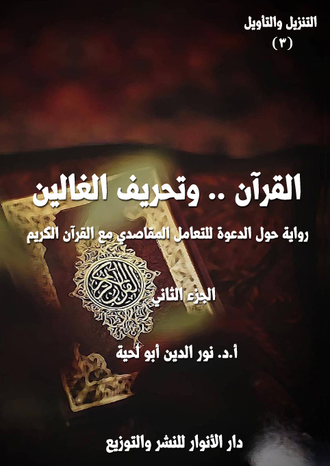

الكتاب:القرآن.. وتحريف الغالين ج2
الوصف: رواية حول الدعوة للتعامل المقاصدي مع القرآن الكريم
السلسلة: التنزيل والتأويل
المؤلف: أ. د. نور الدين أبو لحية
الناشر: دار الأنوار للنشر والتوزيع
الطبعة: الثانية، 1443 هـ
عدد الصفحات: 527
ISBN: 978-620-4-72146-0
لمطالعة الكتاب من تطبيق مؤلفاتي المجاني وهو أحسن وأيسر: هنا

هذا الكتاب هو الجزء الأول من أجزاء ثلاثة من هذه السلسلة تحاول أن تصحح الأخطاء الكبرى التي وقعت أثناء التعامل مع القرآن الكريم، وهي التي أشار إليها الحديث المعروف المشهور، وهو قول رسول الله صلى الله عليه وآله وسلم: (يحمل هذا العلم من كل خلف عدوله، ينفون عنه تحريف الغالين، وانتحال المبطلين، وتأويل الجاهلين)
وبناء على هذا؛ فإن هذا الجزء يعالج المبالغات والغلو الذي ارتبط ببعض العلوم القرآنية، أو الفهوم المتعلقة به، والتي صرفت عن التدبر الحقيقي للقرآن الكريم، وجعلت من أولئك الغلاة، مثل الذي يهتم بالقشر أكثر من اللباب، وبالأجزاء أكثر من الكل.
ولذلك؛ فهو لا يدعو لطرح تلك العلوم أو الفهوم طرحا كليا، وإنما يدعو إلى تصحيحها، ونفي الغلو عنها، ووضعها في محالها المناسبة، حتى لا تكون سببا يصرف عن تدبر القرآن الكريم، أو يؤثر في فاعليته في الواقع.
وقد رأينا أنه يمكن انحصار تلك المبالغات في سبعة قضايا وعلوم كبرى، هي: الرسم والإملاء .. والتجويد والقراءات .. وأسباب النزول .. ومحال النزول .. ومصاديق التنزيل، أو ما يطلق عليه [الجري والتطبيق] .. والناسخ والمنسوخ .. وعقبات التأويل، وقد تناولنا فيه سبع عقبات كبرى، هي: عقبة الفضول، وعقبة الخرافة، وعقبة الوهم، وعقبة المحدودية، وعقبة الحرفية، وعقبة الأهواء، وعقبة الدجل.
القرآن.. وتحريف الغالين (2/10 )
هذا هو الجزء الثاني من كتاب [القرآن وتحريف الغالين]، وهو يتضمن ما يلي:
الفصل الرابع ـ القرآن .. ومحال النزول: وقد تناولنا فيه الاهتمام المبالغ فيه بما يطلق عليه [المكي والمدني]، وبينا كيفية الاستثمار الصحيح لها.
الفصل الخامس ـ القرآن .. ومصاديق التنزيل: وقد تناولنا فيه خصوصا ما يطلق عليه [الجري والتطبيق]، وخصوصا في تطبيقاته الخاطئة التي قام بها غلاة الشيعة الذين حملوا كل آيات القرآن الكريم على أئمة الهدى، من غير مراعاة أي مناسبة تدعو إلى ذلك .. وقد بينا فيه أقوال العلماء العدول من الشيعة في الرد على تلك المبالغات، سواء من خلال نقد أسانيدها، أو من خلال بيان تفسيراتهم لتلك الآيات.
الفصل السادس ـ القرآن .. وتعطيل التنزيل: وقد تناولنا فيه بتفصيل شديد ما يطلق عليه [الناسخ والمنسوخ]، وبينا أنه ـ بأنواعه جميعا ـ معارض لتفعيل القرآن الكريم في الواقع، ثم استعرضنا كل الآيات التي قيل بنسخها، وبينا إمكانية الاستفادة منها، وتفعيلها فيما نزلت من أجله.
الفصل السابع ـ القرآن .. وعقبات التأويل: وقد تناولنا فيه العقبات الكبرى التي وقع فيها المفسرون، وقد رأينا أنها سبعة عقبات، ذكرنا نماذج عن كل واحدة منها، لأننا سنستعرض تفاصيلها في سائر الأجزاء، وهي:
1 ـ عقبة الفضول: ونقصد بها التكلف في البحث عن القضايا والأخبار التي لم يرد في القرآن الكريم تفصيلها، ولم تكن هناك حاجة تدعو إلى ذلك.
2 ـ عقبة الخرافة: ونقصد بها الخرافات التي ألصقت بالقرآن الكريم، وجعلته
القرآن.. وتحريف الغالين (2/11)
يتعارض مع العقل أو العلم.
3 ـ عقبة الوهم: ونقصد بها تلك الأوهام التي تسربت خصوصا إلى التفاسير الباطنية؛ فجعلت للكشف والإلهام دورا في تفسير القرآن الكريم من غير أي دليل أو حجة.
4 ـ عقبة المحدودية: ونقصد بها ما تعلق به المتأثرون بالتفسير المأثور من قصر فهم القرآن الكريم على سلف الأمة دون خلفها.
5 ـ عقبة الحرفية: ونقصد بها ما نشأ عن التعلق بالظواهر القرآنية، من انحرافات ترتبط بالتجسيم والتشبيه ونحوها.
6 ـ عقبة الأهواء: ونقصد بها تلك التفاسير التي انطلق فيها أصحابها من تعصبهم لطوائفهم؛ فجعلوه متحكما في القرآن الكريم، وحاكما عليه.
7 ـ عقبة الدجل: ونقصد بها ربط القرآن الكريم بالشعوذة والدجل، كنوع من الاستغلال الخاطئ لما ورد فيه من البركات وتحقيق الشفاء ونحوهما.
القرآن.. وتحريف الغالين (2/12)
رابعا ـ القرآن .. ومحال النزول
في صباح اليوم التالي، وجدت نفسي في شارع آخر، لم يكن يختلف كثيرا عن الشارع السابق، إلا أني لاحظت بدل الاهتمام بأسباب النزول، اهتماما مبالغا فيه بمحال النزول، وأماكنها، وخصوصا بما يطلق عليه [المكي والمدني]، والخلاف الوارد في بعض السور والآيات إلى حد الجدل والصراع الصارف عن التدبر والتأثر والانفعال.
لكن ـ مع ذلك ـ سمعت الكثير من الحوارات العلمية الطيبة التي يمكن أن يستفاد منها في تدبر القرآن الكريم والتعرف على الظروف التي نزل فيها، والتي قد لا تختلف عن ظروف أخرى يمر بها المتدبر للقرآن الكريم، ويستعين بذلك على فهمه وتطبيقه الجيد لظروف النزول على ظروف واقعه.
ومن تلك الحوارات الجميلة النافعة، أني التقيت في بعض حدائق ذلك الحي صبيان، يقول أحدهما لصاحبه: ما الذي تراه في تحديد مفهوم المكي والمدني .. هل ترى اعتبار الزمان أم المكان؟
قال الثاني: أنا أرى اعتبار الزمان .. فالمكي هو ما نزل قبل الهجرة، والمدني هو ما نزل بعدها، سواء نزل بمكة أم بالمدينة، عام الفتح أو عام حجة الوداع، في سفر أو في حضر (1) ..
__________
(1) البرهان 1/ 178.
القرآن.. وتحريف الغالين (2/13)
وقد روي هذا التعريف عن يحيى بن سلام البصري المفسر، حيث قال: (ما نزل بمكة وما نزل بطريق المدينة قبل أن يبلغ النبي صلى الله عليه وآله وسلم المدينة، فهو من المكي، وما نزل على النبي صلى الله عليه وآله وسلم في أسفاره بعد ما قدم المدينة فهو من المدني)(1)
قال الأول: أما أنا؛ فأرى أن التعريف المناسب هو تعريفه بحسب المكان؛ فالمكي ما نزل بمكة ولو بعد الهجرة، والمدني ما نزل بالمدينة (2) .. وقد قسّم هبة الله بن سلامة المفسر البغدادي المكي إلى قسمين، هما: المكي الأول، وهو ما نزل في مكة قبل الهجرة، والمكي الأخير: وهو ما نزل فيها بعد الفتح (3).
قال الثاني: لكن التعريف الأول أكثر فائدة، وأكثر ارتباطا بالواقع .. ذلك أن المسلمين كانوا في تلك الفترة مستضعفين مظلومين، بخلاف حالهم في الفترة الثانية، والتي شملت وجودهم في مكة أو المدينة.
قال الأول: من هذه الناحية لك الحق في ذلك .. فالمكي يمثل فترة استضعاف المسلمين، والمدني يمثل فترة خروجهم من ذلك الاستضعاف .. ثم تحولهم تدريجيا إلى قوة معتبرة يحسب لها ألف حساب.
قال الثاني (4): نسيت أن أذكر لك أن هناك تعريفا آخر للمكي والمدني، وهو أن المكي ما وقع خطابا لأهل مكة، والمدني ما وقع خطابا لأهل المدينة .. ويروى عن عبد الله بن مسعود، فقد روي عنه قوله: (كل شيء نزل فيه: {يا أيها الناس} فهو بمكة، وكل شيء نزل فيه {يا أيها الذين آمنوا} فهو بالمدينة)(5)
__________
(1) الداني: كتاب البيان/132.
(2) البرهان 1/ 178.
(3) الناسخ والمنسوخ/322.
(4) علوم القرآن الكريم، عتر، ص 56.
(5) البرهان: 1/ 189 ـ 190.
القرآن.. وتحريف الغالين (2/14)
قال الأول (1): لكن هذا الأثر ليس صالحا للاستدلال لهذا المذهب، لأن ابن مسعود لم يقصد وضع ضابط وتعريف للمكي والمدني، إنما أراد بيان علامة من علامات القرآن المكي والمدني، أو تفسيرا لبيان المراد بهذا الخطاب، وهو أمر أغلبي ليس مضطردا دائما.
قال الثاني (2): بالإضافة إلى ذلك؛ فإن هذا المذهب في تفسير المكي والمدني أضيق من غيره، لأنه قد تقيد بالأشخاص المعينين في أمكنة معينة، وتقيد بموضوع معين هو ما كان فيه خطاب من آيات القرآن، فبقي القسم الأكبر من القرآن خارج هذا المنهج في تعريف المكي والمدني.
قال الأول (3): نسيت أن أذكر لك أيضا أنه يندرج في ضمن المكي والمدني أنواع كثيرة من البحوث المتصلة بالظروف المحيطة بنزول القرآن كالسفري والحضري، والليلي والنهاري، وما حمل من مكة إلى المدينة، وما حمل من المدينة إلى مكة، وما نزل بالمدينة وحكمه مكي، وما نزل بمكة وحكمه مدني، وغيرها من البحوث التي تدل على الاعتناء العجيب الذي أحيط به القرآن الكريم، وتوفير وسائل دراسته من جميع الجهات.
قال الثاني: هيا بنا نراجع ترتيب سور القرآن الكريم بحسب تاريخ نزولها ومحله .. فلاشك أن الأستاذ سيمتحننا عنها اليوم.
قال الأول: هيا .. فلنبدأ بالسور المكية؛ فأنا أحفظها جيدا .. فقد قال مجد الدين الفيروز آبادي في ترتيبها: (اتفقوا على أن أول السور المكية اقرأ باسم ربك الذي خلق، ثم ن والقلم وما يسطرون، ثم سورة المزمل، ثم سورة المدثر، ثم سورة تبت، ثم إذا الشمس
__________
(1) علوم القرآن الكريم، عتر، ص 56.
(2) علوم القرآن الكريم، عتر، ص 56.
(3) علوم القرآن الكريم، عتر، ص 56.
القرآن.. وتحريف الغالين (2/15)
كورت، ثم سبح اسم ربك الأعلى، ثم والليل إذا يغشى، ثم والفجر، ثم والضحى، ثم ألم نشرح، ثم والعصر، ثم والعاديات، ثم الكوثر، ثم ألهاكم، ثم أرأيت، ثم الكافرون، ثم ألم تر كيف فعل، ثم الفلق، ثم الناس، ثم قل هو الله أحد، ثم والنجم، ثم عبس، ثم القدر، ثم والشمس وضحاها، ثم البروج، ثم والتين، ثم لإيلاف، ثم القارعة، ثم لا أقسم بيوم القيامة، ثم ويل لكل همزة لمزة، ثم والمرسلات، ثم ق والقرآن المجيد، ثم لا أقسم بهذا البلد، ثم والسماء والطارق، ثم اقتربت الساعة، ثم ص، ثم الأعراف، ثم قل أوحى، ثم يس، ثم الفرقان، ثم الملائكة (فاطر)، ثم مريم، ثم طه، ثم الواقعة، ثم الشعراء، ثم النمل، ثم القصص، ثم بني إسرائيل، ثم يونس، ثم هود، ثم يوسف، ثم الحجر، ثم الأنعام، ثم الصافات، ثم لقمان، ثم سبأ، ثم الزمر، ثم المؤمن، ثم حم السجدة، ثم حم عسق، ثم الزخرف، ثم الدخان، ثم الجاثية، ثم الأحقاف، ثم الذاريات، ثم الغاشية، ثم الكهف، ثم النحل، ثم سورة نوح، ثم سورة إبراهيم، ثم سورة الأنبياء، ثم قد أفلح المؤمنون، ثم الم السجدة، ثم الطور، ثم تبارك الملك، ثم الحاقة، ثم سأل سائل، ثم عم يتسآءلون، ثم النازعات، ثم إذا السماء انفطرت، ثم إذا السماء انشقت، ثم الروم، ثم العنكبوت، ثم المطففين .. فهذه خمس وثمانون سورة نزلت بمكة، وبهذا الترتيب (1).
قال الثاني: ولا تنس ما ذكره الزركشي بعد ذكر هذا الترتيب، فقد قال ـ بعد ذكر سورة الروم ـ: (واختلفوا في آخر ما نزل بمكة، فقال ابن عباس: العنكبوت .. وقال الضحاك وعطاء: المؤمنون .. وقال مجاهد: ويل للمطففين .. فهذا ترتيب ما نزل من القرآن بمكة، وعليه استقرت الرواية من الثقات، وهي خمس وثمانون سورة)(2)
__________
(1) بصائر ذوي التمييز (1/ 98 ـ 99)
(2) البرهان في علوم القرآن (1/ 193 ـ 194)
القرآن.. وتحريف الغالين (2/16)
قال الأول: لقد سردت عليك ما حفظته من ترتيب السور المكية؛ فاسرد علي ما تحفظه من ترتيب السور المدنية.
قال الثاني: لقد ذكروا أن أول ما نزل بالمدينة: سورة البقرة، ثم سورة الأنفال، ثم سورة آل عمران، ثم الأحزاب، ثم الممتحنة، ثم النساء، ثم زلزلت، ثم الحديد، ثم سورة محمد، ثم الرعد، ثم الرحمن، ثم هل أتى على الإنسان، ثم الطلاق، ثم لم يكن، ثم الحشر، ثم إذا جاء نصر الله، ثم النور، ثم الحج، ثم المنافقون، ثم المجادلة، ثم الحجرات، ثم التحريم، ثم الجمعة، ثم التغابن، ثم الصف، ثم الفتح، ثم التوبة، ثم المائدة .. وقد قال الفيروز آبادي بعد ذكره لها: (فهذه جملة ما نزل بالمدينة. ولم نذكر الفاتحة لأنه مختلف فيها: قيل أنزلت بمكة، وقيل بالمدينة؛ وقيل بكل مرة)(1) .. وقد رجح لنا الأستاذ أنها نزلت بمكة المكرمة، ورد ردا شديدا على من زعم أنها نزلت بالمدينة، أو نزلت مرتين.
قال الأول: كما أنه رد بشدة (2) على ما رواه النحاس في [الناسخ والمنسوخ] عن أبي عمرو بن العلاء، قال: سألت مجاهدا عن تلخيص آي القرآن المدني من المكي فقال: سألت ابن عباس عن ذلك فقال: (سورة الأنعام نزلت بمكة جملة واحدة، فهي مكية إلا ثلاث آيات منها نزلن بالمدينة: قل تعالوا أتل إلى تمام الآيات الثلاث .. وما تقدم من السور مدنيات .. ونزلت بمكة: سورة الأعراف ويونس وهود ويوسف والرعد وإبراهيم والحجر والنحل ـ سوى ثلاث آيات من آخرها فإنهن نزلن بين مكة والمدينة في منصرفه من أحد ـ وسورة بني إسرائيل والكهف ومريم وطه والأنبياء والحج ـ سوى ثلاث آيات: هذان
__________
(1) بصائر ذوي التمييز (1/ 99)
(2) سنعرض للردود المرتبطة بالاستثناءات المتعلقة بالآيات في محله من هذا الفصل.
القرآن.. وتحريف الغالين (2/17)
خصمان إلى تمام الآيات الثلاث فإنهن نزلن بالمدينة ـ وسورة المؤمنين والفرقان وسورة الشعراء ـ سوى خمس آيات من أخراها نزلن بالمدينة: والشعراء يتبعهم الغاوون إلى آخرها ـ وسورة النمل والقصص والعنكبوت والروم ولقمان ـ سوى ثلاث آيات منها نزلن بالمدينة: ولو أنما في الأرض من شجرة أقلام إلى تمام الآيات ـ وسورة السجدة ـ سوى ثلاث آيات: أفمن كان مؤمنا كمن كان فاسقا إلى تمام الآيات الثلاث ـ وسورة سبأ وفاطر ويس والصافات وص والزمر ـ سوى ثلاث آيات نزلن بالمدينة: قل يا عبادي الذين أسرفوا إلى تمام الثلاث آيات ـ والحواميم السبع وق والذاريات والطور والنجم والقمر والرحمن والواقعة والصف والتغابن ـ إلا آيات من آخرها نزلن بالمدينة ـ والملك ون والحاقة وسأل وسورة نوح والجن والمزمل ـ إلا آيتين: إن ربك يعلم أنك تقوم ـ والمدثر إلى آخر القرآن، إلا إذا زلزلت وإذا جاء نصر الله وقل هو الله أحد وقل أعوذ برب الفلق وقل أعوذ برب الناس فإنهن مدنيات. ونزل بالمدينة سورة الأنفال وبراءة والنور والأحزاب وسورة محمد والفتح والحجرات والحديد وما بعدها إلى التحريم)(1)
ومنها أني مررت على فتاتين تتحدثان، قالت إحداهما: أنا لم أتعجب من شيء في المصاحف، كتعجبي لوضع محل نزول السور القرآنية .. فكيف تسنى لهم معرفة ذلك، مع أنه لم يرد عن رسول الله صلى الله عليه وآله وسلم أي حديث يبين مكية أي سورة أو مدنيتها؟
قالت الثانية: صدقت فيما ذكرت عن رسول الله صلى الله عليه وآله وسلم .. وهو يدل على أن الاهتمام بالمكي والمدني ليس من أصول المعارف القرآنية .. وإنما هو اجتهاد، ودليل على الحرص على
__________
(1) الإتقان في علوم القرآن (1/ 39 ـ 40)
القرآن.. وتحريف الغالين (2/18)
التعرف على الظروف التي نزل فيها القرآن الكريم.
قالت الأولى: فكيف تسنى لهم معرفة ذلك؟
قالت الثانية: ذلك بسيط جدا .. وقد شرحه القاضي أبو بكر الباقلاني بقوله: (إنما يرجع في معرفة المكي والمدني إلى حفظ الصحابة التابعين، ولم يرد عن النبي صلى الله عليه وآله وسلم في ذلك قول، لأنه لم يؤمر به، ولم يجعل الله علم ذلك من فرائض الأمة، وإن وجب في بعضه على أهل العلم معرفة تاريخ الناسخ والمنسوخ، فقد يعرف ذلك بغير نص الرسول صلى الله عليه وآله وسلم)(1)
قالت الأولى: فالطريق لمعرفة المكي والمدني من سور القرآن الكريم إذن محصور في ما ورد في الروايات؟
قالت الثانية: أكثره كذلك .. فقد روي عن عبد الله بن عباس أنه قال: (كنت ألزم الأكابر من أصحاب رسول الله صلى الله عليه وآله وسلم من المهاجرين والأنصار، فأسألهم عن مغازي رسول الله صلى الله عليه وآله وسلم وما نزل من القرآن في ذلك، وكنت لا آتي أحدا منهم إلا سرّ بإتياني لقربي من رسول الله صلى الله عليه وآله وسلم. فجعلت أسأل أبيّ بن كعب يوما، وكان من الراسخين في العلم، عما نزل من القرآن بالمدينة، فقال: نزل بها سبع وعشرون سورة، وسائرها بمكة)(2)
ومنها ما روي عن ابن مسعود قال: (والذي لا إله غيره ما من كتاب الله سورة إلا أنا أعلم حيث نزلت وما من آية إلا أنا أعلم فيما أنزلت)(3)
قالت الأولى: كيف تذكرين أن أكثره كذلك .. فهل يمكن معرفة مثل هذا بالاجتهاد؟
__________
(1) نقلا عن السيوطي: الاتقان 1/ 23.
(2) الطبقات الكبرى 2/ 371.
(3) البخاري: 6/ 186 ـ 187 ومسلم: 7/ 148.
القرآن.. وتحريف الغالين (2/19)
قالت الثانية: هو ليس اجتهادا بمعنى الاجتهاد الذي تستنبط به الأحكام، وإنما هو نوع من القياس الذي يعتمد على جملة من الضوابط التي استخلصها العلماء من الروايات المنقولة عن عدد من الصحابة والتابعين في بيان خصائص السور المكية والسور المدنية.
قالت الأولى: فهلا ذكرت لي طرفا منها.
قالت الثانية: منها ما روي عن عبد الله بن مسعود، قال: (كل شيء في القرآن {يا أَيُّهَا النَّاسُ} أنزل بمكة، وكل شيء في القرآن {يا أَيُّهَا الَّذِينَ آمَنُوا} أنزل بالمدينة)(1) .. وقد لاحظ العلماء بناء على هذا أن {يا أَيُّهَا النَّاسُ} منه مكي ومنه مدني، لكن أكثره مكي (2).
قالت الأولى: أجل .. فمع أن سورة البقرة مدنية إلا أن فيها قوله تعالى: {يَا أَيُّهَا النَّاسُ اعْبُدُوا رَبَّكُمُ الَّذِي خَلَقَكُمْ وَالَّذِينَ مِنْ قَبْلِكُمْ لَعَلَّكُمْ تَتَّقُونَ} [البقرة: 21]، وقوله: {يَا أَيُّهَا النَّاسُ كُلُوا مِمَّا فِي الْأَرْضِ حَلَالًا طَيِّبًا وَلَا تَتَّبِعُوا خُطُوَاتِ الشَّيْطَانِ إِنَّهُ لَكُمْ عَدُوٌّ مُبِينٌ} [البقرة: 168]
قالت الثانية: ومثلها سورة النساء، ففيها قوله تعالى: {يَا أَيُّهَا النَّاسُ اتَّقُوا رَبَّكُمُ الَّذِي خَلَقَكُمْ مِنْ نَفْسٍ وَاحِدَةٍ وَخَلَقَ مِنْهَا زَوْجَهَا وَبَثَّ مِنْهُمَا رِجَالًا كَثِيرًا وَنِسَاءً وَاتَّقُوا اللَّهَ الَّذِي تَسَاءَلُونَ بِهِ وَالْأَرْحَامَ إِنَّ اللَّهَ كَانَ عَلَيْكُمْ رَقِيبًا} [النساء: 1]، وقوله: {يَا أَيُّهَا النَّاسُ قَدْ جَاءَكُمُ الرَّسُولُ بِالْحَقِّ مِنْ رَبِّكُمْ فَآمِنُوا خَيْرًا لَكُمْ وَإِنْ تَكْفُرُوا فَإِنَّ لِلَّهِ مَا فِي السَّمَاوَاتِ وَالْأَرْضِ وَكَانَ اللَّهُ عَلِيمًا حَكِيمًا} [النساء: 170]، وقوله: {يَا أَيُّهَا النَّاسُ قَدْ جَاءَكُمْ بُرْهَانٌ مِنْ رَبِّكُمْ وَأَنْزَلْنَا إِلَيْكُمْ نُورًا مُبِينًا} [النساء: 174]
قالت الأولى: ومثلها سورة الحج، ففيها قوله تعالى: {يَا أَيُّهَا النَّاسُ اتَّقُوا رَبَّكُمْ إِنَّ
__________
(1) الحاكم: المستدرك 3/ 18، والبيهقي: دلائل النبوة 7/ 144.
(2) الزركشي: البرهان 1/ 188.
القرآن.. وتحريف الغالين (2/20)
زَلْزَلَةَ السَّاعَةِ شَيْءٌ عَظِيمٌ} [الحج: 1] {يَا أَيُّهَا النَّاسُ إِنْ كُنْتُمْ فِي رَيْبٍ مِنَ الْبَعْثِ فَإِنَّا خَلَقْنَاكُمْ مِنْ تُرَابٍ ثُمَّ مِنْ نُطْفَةٍ ثُمَّ مِنْ عَلَقَةٍ ثُمَّ مِنْ مُضْغَةٍ مُخَلَّقَةٍ وَغَيْرِ مُخَلَّقَةٍ لِنُبَيِّنَ لَكُمْ وَنُقِرُّ فِي الْأَرْحَامِ مَا نَشَاءُ إِلَى أَجَلٍ مُسَمًّى ثُمَّ نُخْرِجُكُمْ طِفْلًا ثُمَّ لِتَبْلُغُوا أَشُدَّكُمْ وَمِنْكُمْ مَنْ يُتَوَفَّى وَمِنْكُمْ مَنْ يُرَدُّ إِلَى أَرْذَلِ الْعُمُرِ لِكَيْلَا يَعْلَمَ مِنْ بَعْدِ عِلْمٍ شَيْئًا وَتَرَى الْأَرْضَ هَامِدَةً فَإِذَا أَنْزَلْنَا عَلَيْهَا الْمَاءَ اهْتَزَّتْ وَرَبَتْ وَأَنْبَتَتْ مِنْ كُلِّ زَوْجٍ بَهِيجٍ} [الحج: 5] {قُلْ يَا أَيُّهَا النَّاسُ إِنَّمَا أَنَا لَكُمْ نَذِيرٌ مُبِينٌ} [الحج: 49] {يَا أَيُّهَا النَّاسُ ضُرِبَ مَثَلٌ فَاسْتَمِعُوا لَهُ إِنَّ الَّذِينَ تَدْعُونَ مِنْ دُونِ اللَّهِ لَنْ يَخْلُقُوا ذُبَابًا وَلَوِ اجْتَمَعُوا لَهُ وَإِنْ يَسْلُبْهُمُ الذُّبَابُ شَيْئًا لَا يَسْتَنْقِذُوهُ مِنْهُ ضَعُفَ الطَّالِبُ وَالْمَطْلُوبُ} [الحج: 73]
قالت الثانية: ومثلها سورة الحجرات، ففيها قوله تعالى: {يَا أَيُّهَا النَّاسُ إِنَّا خَلَقْنَاكُمْ مِنْ ذَكَرٍ وَأُنْثَى وَجَعَلْنَاكُمْ شُعُوبًا وَقَبَائِلَ لِتَعَارَفُوا إِنَّ أَكْرَمَكُمْ عِنْدَ اللَّهِ أَتْقَاكُمْ إِنَّ اللَّهَ عَلِيمٌ خَبِيرٌ} [الحجرات: 13]
قالت الأولى: وعيت هذا .. فهل هناك ضوابط أخرى غير هذه؟
قالت الثانية (1): أجل .. لكنها ليست منضبطة دائما.
قالت الأولى: فهلا ذكرت لي طرفا منها .. فإني أرى الكثير من زميلاتي يسخرن مني بسبب جهلي بهذه الأمور.
قالت الثانية (2): لا حرج عليك .. فتدبر القرآن الكريم لا يستلزم كل هذه التفاصيل .. لكن مع ذلك سأذكر لك طرفا منها .. وأولها أن كل سورة فيها الاستفتاح بالحروف المقطعة مكية سوى الزهراوين: البقرة وآل عمران .. و كل سورة فيها {كلا}
__________
(1) علوم القرآن الكريم، عتر، ص 58.
(2) علوم القرآن الكريم، عتر، ص 58.
القرآن.. وتحريف الغالين (2/21)
مكية .. وكل سورة فيها ذكر آدم وإبليس مكية سوى سورة البقرة .. وكل سورة فيها فريضة أو حد فهي مدنية، لكن ليس على عمومه .. وكل سورة فيها ذكر المنافقين فهي مدنية سوى العنكبوت.
قالت الأولى: فهل هناك غيرها؟
قالت الثانية (1): أجل .. فمن سمات أسلوب القرآن المكي الغالبة عليه أنه يغلب عليه قصر الآيات والسور .. وكثرة الفواصل القرآنية وقصرها، وتنوعها بما يتناسب مع المعاني والمواقف والصور .. وكثرة أسلوب التأكيد، والاعتناء بوسائل التقرير وترسيخ المعاني وتثبيتها، ولذلك كثر في المكي القسم، وضرب الأمثال، والتشبيه وتكرار بعض الجمل أو الكلمات.
قالت الأولى: فما الحكمة من اختيار هذا الأسلوب في السور المكية؟
قالت الثانية (2): لأن بداية التعريف بالإسلام كانت تقتضي ذلك، وخاصة بين قوم أصحاب عنجهية، وحمية جاهلية، فكان المناسب لهم النذر القارعة، والعبارات الشديدة الرادعة ليزدجروا عن غيّهم، ويسلسلوا قيادهم أمام التأكيدات والتخييلات الحسية، كما أن مضمون خطابات القرآن في مكة لا يختص بالمؤمنين، بل يتوجه للناس أجمعين، يحمل الدعوة إلى أصول الإيمان، فكان من المناسب أن يبرز في إعجازها عنصر الجانب الصوتي، والجرس الموسيقى، فتصخ آياته الآذان، وتستولي على المشاعر وتدعهم في حيرة ودهشة مما يسمعون، فلا يلبث البليغ منهم أن يلقي عصا العجز، بل يرسلها قولة صريحة تعلن إعجاز القرآن.
__________
(1) علوم القرآن الكريم، عتر، ص 66.
(2) علوم القرآن الكريم، عتر، ص 66.
القرآن.. وتحريف الغالين (2/22)
قالت الأولى: ذكرت لي خصائص أسلوب السور المكية الغالبة عليها .. فما أسلوب السور المدنية الغالبة عليها؟
قالت الثانية (1): من سمات أسلوب القرآن المدني الغالبة عليه طول أكثر السور والآيات، كما هو واضح ظاهر من سورة البقرة وآل عمران مثلا .. ومنها أنها غالبا ما تسلك سبيل الهدوء، واللين في أسلوبها، واسترسال فواصلها.
قالت الأولى: فما الحكمة من اختيار هذا الأسلوب في السور المدنية؟
قالت الثانية (2):الحكمة في اختيار هذا الأسلوب اشتمال القرآن المدني على الموضوعات المرتبطة بأحكام الشريعة وغيرها، وهي تقتضي البسط والإسهاب، كما أن الخطاب في المدينة توجّه في أكثره للمؤمنين وذلك يناسب الهدوء واللين.
ومنها أني مررت على كهلين يتحدثان، قال أحدهما لصاحبه: هلم بنا نتحدث عن موضوعات ومقاصد السور المكية والمدنية.
قال الثاني: لقد قمت أنا ببحث مفصل حول السور المدنية .. فهل قمت أنت بما اتفقنا عليه من البحث في السور المكية.
قال الأول: أجل .. لقد قمت بالبحث في الموضوعات التي اهتمت بها السور المكية؛ فوجدت أنه يمكن تصنيفها إلى خمسة مواضيع كبرى .. وطبعا هذا لا يعني انحصارها فيها، بل إن السور المكية تناولتها، ولكن بصورة أقل مما تناولته السور المدنية.
__________
(1) علوم القرآن الكريم، عتر، ص 67.
(2) علوم القرآن الكريم، عتر، ص 67.
القرآن.. وتحريف الغالين (2/23)
قال الثاني: فما أولها؟
قال الأول (1): أولها تقرير أصول العقائد الإيمانية، بدعوة الخلق إلى توحيد الله تعالى وإفراده بالعبادة .. والإيمان باليوم الآخر وما يتبع ذلك من الجزاء والجنة والنار .. وتقرير رسالة النبي صلى الله عليه وآله وسلم والرسل من قبله، والإيمان بالملائكة عليهم السلام.
وإن شئت دليلا على ذلك يمكنك أن تقرأ سورة القصص المكية، ودعوتها لهذه الأصول؛ ففيها هذه الآيات التي تدعو إلى الإيمان بالله تعالى وتوحيده: {وَرَبُّكَ يَعْلَمُ مَا تُكِنُّ صُدُورُهُمْ وَمَا يُعْلِنُونَ وَهُوَ اللَّهُ لَا إِلَهَ إِلَّا هُوَ لَهُ الْحَمْدُ فِي الْأُولَى وَالْآخِرَةِ وَلَهُ الْحُكْمُ وَإِلَيْهِ تُرْجَعُونَ قُلْ أَرَأَيْتُمْ إِنْ جَعَلَ اللَّهُ عَلَيْكُمُ اللَّيْلَ سَرْمَدًا إِلَى يَوْمِ الْقِيَامَةِ مَنْ إِلَهٌ غَيْرُ اللَّهِ يَأْتِيكُمْ بِضِيَاءٍ أَفَلَا تَسْمَعُونَ قُلْ أَرَأَيْتُمْ إِنْ جَعَلَ اللَّهُ عَلَيْكُمُ النَّهَارَ سَرْمَدًا إِلَى يَوْمِ الْقِيَامَةِ مَنْ إِلَهٌ غَيْرُ اللَّهِ يَأْتِيكُمْ بِلَيْلٍ تَسْكُنُونَ فِيهِ أَفَلَا تُبْصِرُونَ وَمِنْ رَحْمَتِهِ جَعَلَ لَكُمُ اللَّيْلَ وَالنَّهَارَ لِتَسْكُنُوا فِيهِ وَلِتَبْتَغُوا مِنْ فَضْلِهِ وَلَعَلَّكُمْ تَشْكُرُونَ} [القصص: 69 - 73]
ومثل ما ورد في الآيات الخاتمة من سورة إبراهيم، والتي تعرض بعضا من مشاهد القيامة، قال تعالى: {فَلَا تَحْسَبَنَّ اللَّهَ مُخْلِفَ وَعْدِهِ رُسُلَهُ إِنَّ اللَّهَ عَزِيزٌ ذُو انْتِقَامٍ يَوْمَ تُبَدَّلُ الْأَرْضُ غَيْرَ الْأَرْضِ وَالسَّمَاوَاتُ وَبَرَزُوا لِلَّهِ الْوَاحِدِ الْقَهَّارِ وَتَرَى الْمُجْرِمِينَ يَوْمَئِذٍ مُقَرَّنِينَ فِي الْأَصْفَادِ سَرَابِيلُهُمْ مِنْ قَطِرَانٍ وَتَغْشَى وُجُوهَهُمُ النَّارُ لِيَجْزِيَ اللَّهُ كُلَّ نَفْسٍ مَا كَسَبَتْ إِنَّ اللَّهَ سَرِيعُ الْحِسَابِ هَذَا بَلَاغٌ لِلنَّاسِ وَلِيُنْذَرُوا بِهِ وَلِيَعْلَمُوا أَنَّمَا هُوَ إِلَهٌ وَاحِدٌ وَلِيَذَّكَّرَ أُولُو الْأَلْبَابِ} [إبراهيم: 47 - 52]
ومثل ذلك ما ورد في هذه الآيات من سورة ق المكية، قال تعالى: {أَفَلَمْ يَنْظُرُوا إِلَى
__________
(1) علوم القرآن الكريم، عتر، ص 59.
القرآن.. وتحريف الغالين (2/24)
السَّمَاءِ فَوْقَهُمْ كَيْفَ بَنَيْنَاهَا وَزَيَّنَّاهَا وَمَا لَهَا مِنْ فُرُوجٍ وَالْأَرْضَ مَدَدْنَاهَا وَأَلْقَيْنَا فِيهَا رَوَاسِيَ وَأَنْبَتْنَا فِيهَا مِنْ كُلِّ زَوْجٍ بَهِيجٍ تَبْصِرَةً وَذِكْرَى لِكُلِّ عَبْدٍ مُنِيبٍ وَنَزَّلْنَا مِنَ السَّمَاءِ مَاءً مُبَارَكًا فَأَنْبَتْنَا بِهِ جَنَّاتٍ وَحَبَّ الْحَصِيدِ وَالنَّخْلَ بَاسِقَاتٍ لَهَا طَلْعٌ نَضِيدٌ رِزْقًا لِلْعِبَادِ وَأَحْيَيْنَا بِهِ بَلْدَةً مَيْتًا كَذَلِكَ الْخُرُوجُ} [ق: 6 - 11]
ومثل ذلك ما ورد من الحجة البالغة في هذه الآيات الخاتمة من سورة القيامة المكية، قال تعالى: {أَيَحْسَبُ الْإِنْسَانُ أَنْ يُتْرَكَ سُدًى أَلَمْ يَكُ نُطْفَةً مِنْ مَنِيٍّ يُمْنَى ثُمَّ كَانَ عَلَقَةً فَخَلَقَ فَسَوَّى فَجَعَلَ مِنْهُ الزَّوْجَيْنِ الذَّكَرَ وَالْأُنْثَى أَلَيْسَ ذَلِكَ بِقَادِرٍ عَلَى أَنْ يُحْيِيَ الْمَوْتَى} [القيامة: 36 - 40] {أَيَحْسَبُ الْإِنْسَانُ أَنْ يُتْرَكَ سُدًى أَلَمْ يَكُ نُطْفَةً مِنْ مَنِيٍّ يُمْنَى ثُمَّ كَانَ عَلَقَةً فَخَلَقَ فَسَوَّى فَجَعَلَ مِنْهُ الزَّوْجَيْنِ الذَّكَرَ وَالْأُنْثَى أَلَيْسَ ذَلِكَ بِقَادِرٍ عَلَى أَنْ يُحْيِيَ الْمَوْتَى} [القيامة: 36 - 40]
قال الثاني: بورك فيك، والأمثلة أكثر من أن يستوعبها هذا المجلس .. فما الثاني؟
قال الأول (1): الحملة على كل الديانات والأفكار المنحرفة .. مثل الشرك والوثنية، والإلحاد والدهرية، وإقامة الحجج والبراهين الدامغة على بطلان عقائدهم الزائغة .. ومن الأمثلة على ذلك هذه الآيات من سورة العنكبوت المكية، قال تعالى: {مَثَلُ الَّذِينَ اتَّخَذُوا مِنْ دُونِ اللَّهِ أَوْلِيَاءَ كَمَثَلِ الْعَنْكَبُوتِ اتَّخَذَتْ بَيْتًا وَإِنَّ أَوْهَنَ الْبُيُوتِ لَبَيْتُ الْعَنْكَبُوتِ لَوْ كَانُوا يَعْلَمُونَ} [العنكبوت: 41]
وبما أن التقليد كان منبعا خطيرا من منابع الضلال، واحتج المشركون بما وجدوا عليه آباءهم، فقد عني القرآن الكريم بتوسيع آفاق العقل والفكر وأمر بالتفكر وحض على النظر
__________
(1) علوم القرآن الكريم، عتر، ص 60.
القرآن.. وتحريف الغالين (2/25)
والتعقل، وسفّه أحلامهم وأحلام آبائهم، حتى جعل التقليد الأعمى للآباء عارا وشنارا، يعتبر به المعتبر، فضلا عن تقليد الأعداء فيما يبتكرونه في الفكر من الأزياء .. قال تعالى: {وَإِذَا قِيلَ لَهُمُ اتَّبِعُوا مَا أَنْزَلَ اللَّهُ قَالُوا بَلْ نَتَّبِعُ مَا وَجَدْنَا عَلَيْهِ آبَاءَنَا أَوَلَوْ كَانَ الشَّيْطَانُ يَدْعُوهُمْ إِلَى عَذَابِ السَّعِيرِ} [لقمان: 21] .. وقال: {بَلْ قَالُوا إِنَّا وَجَدْنَا آبَاءَنَا عَلَى أُمَّةٍ وَإِنَّا عَلَى آثَارِهِمْ مُهْتَدُونَ وَكَذَلِكَ مَا أَرْسَلْنَا مِنْ قَبْلِكَ فِي قَرْيَةٍ مِنْ نَذِيرٍ إِلَّا قَالَ مُتْرَفُوهَا إِنَّا وَجَدْنَا آبَاءَنَا عَلَى أُمَّةٍ وَإِنَّا عَلَى آثَارِهِمْ مُقْتَدُونَ قَالَ أَوَلَوْ جِئْتُكُمْ بِأَهْدَى مِمَّا وَجَدْتُمْ عَلَيْهِ آبَاءَكُمْ قَالُوا إِنَّا بِمَا أُرْسِلْتُمْ بِهِ كَافِرُونَ فَانْتَقَمْنَا مِنْهُمْ فَانْظُرْ كَيْفَ كَانَ عَاقِبَةُ الْمُكَذِّبِينَ} [الزخرف: 22 - 25]
قال الثاني: بورك فيك .. فما الثالث؟
قال الأول (1): الاستدلال بدلائل الأنفس والأكوان على عظمة الله تعالى وسلطانه، ووجوب طاعته والانقياد له، وتوحيده في ألوهيته وربوبيته، والإيمان بالقيامة والبعث بعد الموت .. ومن الأمثلة على ذلك قوله تعالى في سورة لقمان المكية: {أَلَمْ تَرَوْا أَنَّ اللَّهَ سَخَّرَ لَكُمْ مَا فِي السَّمَاوَاتِ وَمَا فِي الْأَرْضِ وَأَسْبَغَ عَلَيْكُمْ نِعَمَهُ ظَاهِرَةً وَبَاطِنَةً وَمِنَ النَّاسِ مَنْ يُجَادِلُ فِي اللَّهِ بِغَيْرِ عِلْمٍ وَلَا هُدًى وَلَا كِتَابٍ مُنِيرٍ} [لقمان: 20] .. وقال: {وَلَئِنْ سَأَلْتَهُمْ مَنْ خَلَقَ السَّمَاوَاتِ وَالْأَرْضَ لَيَقُولُنَّ اللَّهُ قُلِ الْحَمْدُ لِلَّهِ بَلْ أَكْثَرُهُمْ لَا يَعْلَمُونَ لِلَّهِ مَا فِي السَّمَاوَاتِ وَالْأَرْضِ إِنَّ اللَّهَ هُوَ الْغَنِيُّ الْحَمِيدُ وَلَوْ أَنَّمَا فِي الْأَرْضِ مِنْ شَجَرَةٍ أَقْلَامٌ وَالْبَحْرُ يَمُدُّهُ مِنْ بَعْدِهِ سَبْعَةُ أَبْحُرٍ مَا نَفِدَتْ كَلِمَاتُ اللَّهِ إِنَّ اللَّهَ عَزِيزٌ حَكِيمٌ مَا خَلْقُكُمْ وَلَا بَعْثُكُمْ إِلَّا كَنَفْسٍ وَاحِدَةٍ إِنَّ اللَّهَ سَمِيعٌ بَصِيرٌ} [لقمان: 25 - 28]
ومثل ذلك هذه الآيات من سورة الأنعام المكية، قال تعالى: {إِنَّ اللَّهَ فَالِقُ الْحَبِّ
__________
(1) علوم القرآن الكريم، عتر، ص 61.
القرآن.. وتحريف الغالين (2/26)
وَالنَّوَى يُخْرِجُ الْحَيَّ مِنَ الْمَيِّتِ وَمُخْرِجُ الْمَيِّتِ مِنَ الْحَيِّ ذَلِكُمُ اللَّهُ فَأَنَّى تُؤْفَكُونَ فَالِقُ الْإِصْبَاحِ وَجَعَلَ اللَّيْلَ سَكَنًا وَالشَّمْسَ وَالْقَمَرَ حُسْبَانًا ذَلِكَ تَقْدِيرُ الْعَزِيزِ الْعَلِيمِ وَهُوَ الَّذِي جَعَلَ لَكُمُ النُّجُومَ لِتَهْتَدُوا بِهَا فِي ظُلُمَاتِ الْبَرِّ وَالْبَحْرِ قَدْ فَصَّلْنَا الْآيَاتِ لِقَوْمٍ يَعْلَمُونَ وَهُوَ الَّذِي أَنْشَأَكُمْ مِنْ نَفْسٍ وَاحِدَةٍ فَمُسْتَقَرٌّ وَمُسْتَوْدَعٌ قَدْ فَصَّلْنَا الْآيَاتِ لِقَوْمٍ يَفْقَهُونَ وَهُوَ الَّذِي أَنْزَلَ مِنَ السَّمَاءِ مَاءً فَأَخْرَجْنَا بِهِ نَبَاتَ كُلِّ شَيْءٍ فَأَخْرَجْنَا مِنْهُ خَضِرًا نُخْرِجُ مِنْهُ حَبًّا مُتَرَاكِبًا وَمِنَ النَّخْلِ مِنْ طَلْعِهَا قِنْوَانٌ دَانِيَةٌ وَجَنَّاتٍ مِنْ أَعْنَابٍ وَالزَّيْتُونَ وَالرُّمَّانَ مُشْتَبِهًا وَغَيْرَ مُتَشَابِهٍ انْظُرُوا إِلَى ثَمَرِهِ إِذَا أَثْمَرَ وَيَنْعِهِ إِنَّ فِي ذَلِكُمْ لَآيَاتٍ لِقَوْمٍ يُؤْمِنُونَ} [الأنعام: 95 - 99]
قال الثاني: بورك فيك .. فما الرابع؟
قال الأول (1): اعتناء القرآن المكي بقصص الأنبياء عليهم السلام مع أقوامهم، حتى كاد ذلك أن يكون علامة تميزه، إذ لم يوجد قصص الأنبياء عليهم السلام في القرآن المدني إلا في سور قليلة، كقصة موسى عليه السلام وقومه في سورة البقرة والمائدة وهما مدنيتان، وقصة عيسى وموسى عليهما السلام في سورة آل عمران والصف وهما مدنيتان أيضا .. والحكمة في ذلك ظاهرة جدا، وهي من أسباب نزول القرآن الكريم منجما، كما قال تعالى: {وَقَالَ الَّذِينَ كَفَرُوا لَوْلَا نُزِّلَ عَلَيْهِ الْقُرْآنُ جُمْلَةً وَاحِدَةً كَذَلِكَ لِنُثَبِّتَ بِهِ فُؤَادَكَ وَرَتَّلْنَاهُ تَرْتِيلًا وَلَا يَأْتُونَكَ بِمَثَلٍ إِلَّا جِئْنَاكَ بِالْحَقِّ وَأَحْسَنَ تَفْسِيرًا} [الفرقان: 32 - 33] .. وقد كان لذلك أثر عظيم في تثبيت النبي صلى الله عليه وآله وسلم والمسلمين، ومواساتهم فيما كان يصيبهم، وإنذار أعدائهم، وإثارة العبرة والعظة بقصص من سبقهم.
وإن شئت أمثلة على ذلك؛ فاقرأ القصص الواردة في سور الأعراف، ويونس، وهود
__________
(1) علوم القرآن الكريم، عتر، ص 62.
القرآن.. وتحريف الغالين (2/27)
وغيرها تجد فيها أبلغ المواعظ وأنفع العبر لتقرير سننه تعالى في إهلاك أهل الكفر والطغيان وانتصار أهل الإيمان والإحسان.
ومن الأمثلة على ذلك قوله تعالى في آخر قصة موسى مع فرعون في سورة غافر المكية: {فَوَقَاهُ اللَّهُ سَيِّئَاتِ مَا مَكَرُوا وَحَاقَ بِآلِ فِرْعَوْنَ سُوءُ الْعَذَابِ النَّارُ يُعْرَضُونَ عَلَيْهَا غُدُوًّا وَعَشِيًّا وَيَوْمَ تَقُومُ السَّاعَةُ أَدْخِلُوا آلَ فِرْعَوْنَ أَشَدَّ الْعَذَابِ وَإِذْ يَتَحَاجُّونَ فِي النَّارِ فَيَقُولُ الضُّعَفَاءُ لِلَّذِينَ اسْتَكْبَرُوا إِنَّا كُنَّا لَكُمْ تَبَعًا فَهَلْ أَنْتُمْ مُغْنُونَ عَنَّا نَصِيبًا مِنَ النَّارِ قَالَ الَّذِينَ اسْتَكْبَرُوا إِنَّا كُلٌّ فِيهَا إِنَّ اللَّهَ قَدْ حَكَمَ بَيْنَ الْعِبَادِ وَقَالَ الَّذِينَ فِي النَّارِ لِخَزَنَةِ جَهَنَّمَ ادْعُوا رَبَّكُمْ يُخَفِّفْ عَنَّا يَوْمًا مِنَ الْعَذَابِ قَالُوا أَوَلَمْ تَكُ تَأْتِيكُمْ رُسُلُكُمْ بِالْبَيِّنَاتِ قَالُوا بَلَى قَالُوا فَادْعُوا وَمَا دُعَاءُ الْكَافِرِينَ إِلَّا فِي ضَلَالٍ إِنَّا لَنَنْصُرُ رُسُلَنَا وَالَّذِينَ آمَنُوا فِي الْحَيَاةِ الدُّنْيَا وَيَوْمَ يَقُومُ الْأَشْهَادُ يَوْمَ لَا يَنْفَعُ الظَّالِمِينَ مَعْذِرَتُهُمْ وَلَهُمُ اللَّعْنَةُ وَلَهُمْ سُوءُ الدَّارِ} [غافر: 45 - 52]
قال الثاني: بورك فيك .. فما الخامس؟
قال الأول (1): إن القرآن المكي شرح أصول الأخلاق، وقواعد عامة في الاجتماع مما لا يختلف فيه حال ولا عقل، لكونها من البدهيات الظاهرة والمقوّمات الأساسية لإنسانية الإنسان، واطمئنانه بالإيمان، كالصدق، والبرّ، والصلة، وبرّ الوالدين، وإكرام الجار، وطهارة القلب واللسان، وغير ذلك .. وقد شرح القرآن تلك القيم ببيانه المعجز شرحا غرسها في قلوبهم، وكرّه إليهم الكفر والفسوق، والظلم، ووأد البنات، والقتل والفواحش وغيرها.
ومن الأمثلة على ذلك هذه الآيات في الوصايا الأخلاقية والاجتماعية في سورة
__________
(1) علوم القرآن الكريم، عتر، ص 63.
القرآن.. وتحريف الغالين (2/28)
الإسراء المكية، قال تعالى: {وَقَضَى رَبُّكَ أَلَّا تَعْبُدُوا إِلَّا إِيَّاهُ وَبِالْوَالِدَيْنِ إِحْسَانًا إِمَّا يَبْلُغَنَّ عِنْدَكَ الْكِبَرَ أَحَدُهُمَا أَوْ كِلَاهُمَا فَلَا تَقُلْ لَهُمَا أُفٍّ وَلَا تَنْهَرْهُمَا وَقُلْ لَهُمَا قَوْلًا كَرِيمًا وَاخْفِضْ لَهُمَا جَنَاحَ الذُّلِّ مِنَ الرَّحْمَةِ وَقُلْ رَبِّ ارْحَمْهُمَا كَمَا رَبَّيَانِي صَغِيرًا رَبُّكُمْ أَعْلَمُ بِمَا فِي نُفُوسِكُمْ إِنْ تَكُونُوا صَالِحِينَ فَإِنَّهُ كَانَ لِلْأَوَّابِينَ غَفُورًا وَآتِ ذَا الْقُرْبَى حَقَّهُ وَالْمِسْكِينَ وَابْنَ السَّبِيلِ وَلَا تُبَذِّرْ تَبْذِيرًا إِنَّ الْمُبَذِّرِينَ كَانُوا إِخْوَانَ الشَّيَاطِينِ وَكَانَ الشَّيْطَانُ لِرَبِّهِ كَفُورًا وَإِمَّا تُعْرِضَنَّ عَنْهُمُ ابْتِغَاءَ رَحْمَةٍ مِنْ رَبِّكَ تَرْجُوهَا فَقُلْ لَهُمْ قَوْلًا مَيْسُورًا وَلَا تَجْعَلْ يَدَكَ مَغْلُولَةً إِلَى عُنُقِكَ وَلَا تَبْسُطْهَا كُلَّ الْبَسْطِ فَتَقْعُدَ مَلُومًا مَحْسُورًا إِنَّ رَبَّكَ يَبْسُطُ الرِّزْقَ لِمَنْ يَشَاءُ وَيَقْدِرُ إِنَّهُ كَانَ بِعِبَادِهِ خَبِيرًا بَصِيرًا وَلَا تَقْتُلُوا أَوْلَادَكُمْ خَشْيَةَ إِمْلَاقٍ نَحْنُ نَرْزُقُهُمْ وَإِيَّاكُمْ إِنَّ قَتْلَهُمْ كَانَ خِطْئًا كَبِيرًا وَلَا تَقْرَبُوا الزِّنَا إِنَّهُ كَانَ فَاحِشَةً وَسَاءَ سَبِيلًا وَلَا تَقْتُلُوا النَّفْسَ الَّتِي حَرَّمَ اللَّهُ إِلَّا بِالْحَقِّ وَمَنْ قُتِلَ مَظْلُومًا فَقَدْ جَعَلْنَا لِوَلِيِّهِ سُلْطَانًا فَلَا يُسْرِفْ فِي الْقَتْلِ إِنَّهُ كَانَ مَنْصُورًا وَلَا تَقْرَبُوا مَالَ الْيَتِيمِ إِلَّا بِالَّتِي هِيَ أَحْسَنُ حَتَّى يَبْلُغَ أَشُدَّهُ وَأَوْفُوا بِالْعَهْدِ إِنَّ الْعَهْدَ كَانَ مَسْئُولًا وَأَوْفُوا الْكَيْلَ إِذَا كِلْتُمْ وَزِنُوا بِالْقِسْطَاسِ الْمُسْتَقِيمِ ذَلِكَ خَيْرٌ وَأَحْسَنُ تَأْوِيلًا وَلَا تَقْفُ مَا لَيْسَ لَكَ بِهِ عِلْمٌ إِنَّ السَّمْعَ وَالْبَصَرَ وَالْفُؤَادَ كُلُّ أُولَئِكَ كَانَ عَنْهُ مَسْئُولًا وَلَا تَمْشِ فِي الْأَرْضِ مَرَحًا إِنَّكَ لَنْ تَخْرِقَ الْأَرْضَ وَلَنْ تَبْلُغَ الْجِبَالَ طُولًا كُلُّ ذَلِكَ كَانَ سَيِّئُهُ عِنْدَ رَبِّكَ مَكْرُوهًا ذَلِكَ مِمَّا أَوْحَى إِلَيْكَ رَبُّكَ مِنَ الْحِكْمَةِ وَلَا تَجْعَلْ مَعَ اللَّهِ إِلَهًا آخَرَ فَتُلْقَى فِي جَهَنَّمَ مَلُومًا مَدْحُورًا} [الإسراء: 23 - 39]
قال الثاني: بورك فيك، وجزاك الله خيرا على هذه المعلومات القيمة التي أفدتنيها.
قال الأول: والآن جاء دورك .. لقد ذكرت لك ما رأيته في غالب السور المكية ..
القرآن.. وتحريف الغالين (2/29)
فاذكر لي أنت ما رأيته في غالب السور المدنية.
قال الثاني: لقد رأيت الغالب على السور المدنية الاهتمام بأربعة موضوعات كبرى.
قال الأول: فما أولها؟
قال الثاني (1): أولها بيان جزئيات التشريع وتفاصيل الأحكام العملية، في العبادات كأحكام الصلاة، والزكاة، والصوم، والحج، والمعاملات كالبيوع والأموال، والاجتماعيات كالزواج والطلاق والرضاع، والعقوبات كالحدود والقصاص كما هو ملاحظ في سورة البقرة والنساء والمائدة والنور.
ومن الأمثلة على ذلك قوله تعالى في ذكر التشريعات المرتبطة بالطلاق في سورة البقرة المدنية: {وَإِذَا طَلَّقْتُمُ النِّسَاءَ فَبَلَغْنَ أَجَلَهُنَّ فَأَمْسِكُوهُنَّ بِمَعْرُوفٍ أَوْ سَرِّحُوهُنَّ بِمَعْرُوفٍ وَلَا تُمْسِكُوهُنَّ ضِرَارًا لِتَعْتَدُوا وَمَنْ يَفْعَلْ ذَلِكَ فَقَدْ ظَلَمَ نَفْسَهُ وَلَا تَتَّخِذُوا آيَاتِ اللَّهِ هُزُوًا وَاذْكُرُوا نِعْمَتَ اللَّهِ عَلَيْكُمْ وَمَا أَنْزَلَ عَلَيْكُمْ مِنَ الْكِتَابِ وَالْحِكْمَةِ يَعِظُكُمْ بِهِ وَاتَّقُوا اللَّهَ وَاعْلَمُوا أَنَّ اللَّهَ بِكُلِّ شَيْءٍ عَلِيمٌ وَإِذَا طَلَّقْتُمُ النِّسَاءَ فَبَلَغْنَ أَجَلَهُنَّ فَلَا تَعْضُلُوهُنَّ أَنْ يَنْكِحْنَ أَزْوَاجَهُنَّ إِذَا تَرَاضَوْا بَيْنَهُمْ بِالْمَعْرُوفِ ذَلِكَ يُوعَظُ بِهِ مَنْ كَانَ مِنْكُمْ يُؤْمِنُ بِاللَّهِ وَالْيَوْمِ الْآخِرِ ذَلِكُمْ أَزْكَى لَكُمْ وَأَطْهَرُ وَاللَّهُ يَعْلَمُ وَأَنْتُمْ لَا تَعْلَمُونَ} [البقرة: 231 - 232]
ومثلها قوله في التشريعات المرتبطة بالرضاعة والأولاد: {وَالْوَالِدَاتُ يُرْضِعْنَ أَوْلَادَهُنَّ حَوْلَيْنِ كَامِلَيْنِ لِمَنْ أَرَادَ أَنْ يُتِمَّ الرَّضَاعَةَ وَعَلَى الْمَوْلُودِ لَهُ رِزْقُهُنَّ وَكِسْوَتُهُنَّ بِالْمَعْرُوفِ لَا تُكَلَّفُ نَفْسٌ إِلَّا وُسْعَهَا لَا تُضَارَّ وَالِدَةٌ بِوَلَدِهَا وَلَا مَوْلُودٌ لَهُ بِوَلَدِهِ وَعَلَى الْوَارِثِ مِثْلُ ذَلِكَ فَإِنْ أَرَادَا فِصَالًا عَنْ تَرَاضٍ مِنْهُمَا وَتَشَاوُرٍ فَلَا جُنَاحَ عَلَيْهِمَا وَإِنْ أَرَدْتُمْ
__________
(1) علوم القرآن الكريم، عتر، ص 64.
القرآن.. وتحريف الغالين (2/30)
أَنْ تَسْتَرْضِعُوا أَوْلَادَكُمْ فَلَا جُنَاحَ عَلَيْكُمْ إِذَا سَلَّمْتُمْ مَا آتَيْتُمْ بِالْمَعْرُوفِ وَاتَّقُوا اللَّهَ وَاعْلَمُوا أَنَّ اللَّهَ بِمَا تَعْمَلُونَ بَصِيرٌ} [البقرة: 233]
ومثلها قوله في التشريعات المرتبطة بالعدة ونحوها: {وَالَّذِينَ يُتَوَفَّوْنَ مِنْكُمْ وَيَذَرُونَ أَزْوَاجًا يَتَرَبَّصْنَ بِأَنْفُسِهِنَّ أَرْبَعَةَ أَشْهُرٍ وَعَشْرًا فَإِذَا بَلَغْنَ أَجَلَهُنَّ فَلَا جُنَاحَ عَلَيْكُمْ فِيمَا فَعَلْنَ فِي أَنْفُسِهِنَّ بِالْمَعْرُوفِ وَاللَّهُ بِمَا تَعْمَلُونَ خَبِيرٌ وَلَا جُنَاحَ عَلَيْكُمْ فِيمَا عَرَّضْتُمْ بِهِ مِنْ خِطْبَةِ النِّسَاءِ أَوْ أَكْنَنْتُمْ فِي أَنْفُسِكُمْ عَلِمَ اللَّهُ أَنَّكُمْ سَتَذْكُرُونَهُنَّ وَلَكِنْ لَا تُوَاعِدُوهُنَّ سِرًّا إِلَّا أَنْ تَقُولُوا قَوْلًا مَعْرُوفًا وَلَا تَعْزِمُوا عُقْدَةَ النِّكَاحِ حَتَّى يَبْلُغَ الْكِتَابُ أَجَلَهُ وَاعْلَمُوا أَنَّ اللَّهَ يَعْلَمُ مَا فِي أَنْفُسِكُمْ فَاحْذَرُوهُ وَاعْلَمُوا أَنَّ اللَّهَ غَفُورٌ حَلِيمٌ} [البقرة: 234 - 235]
ومثلها قوله في التشريعات المرتبطة بالإرث في سورة النساء المدنية: {يُوصِيكُمُ اللَّهُ فِي أَوْلَادِكُمْ لِلذَّكَرِ مِثْلُ حَظِّ الْأُنْثَيَيْنِ فَإِنْ كُنَّ نِسَاءً فَوْقَ اثْنَتَيْنِ فَلَهُنَّ ثُلُثَا مَا تَرَكَ وَإِنْ كَانَتْ وَاحِدَةً فَلَهَا النِّصْفُ وَلِأَبَوَيْهِ لِكُلِّ وَاحِدٍ مِنْهُمَا السُّدُسُ مِمَّا تَرَكَ إِنْ كَانَ لَهُ وَلَدٌ فَإِنْ لَمْ يَكُنْ لَهُ وَلَدٌ وَوَرِثَهُ أَبَوَاهُ فَلِأُمِّهِ الثُّلُثُ فَإِنْ كَانَ لَهُ إِخْوَةٌ فَلِأُمِّهِ السُّدُسُ مِنْ بَعْدِ وَصِيَّةٍ يُوصِي بِهَا أَوْ دَيْنٍ آبَاؤُكُمْ وَأَبْنَاؤُكُمْ لَا تَدْرُونَ أَيُّهُمْ أَقْرَبُ لَكُمْ نَفْعًا فَرِيضَةً مِنَ اللَّهِ إِنَّ اللَّهَ كَانَ عَلِيمًا حَكِيمًا} [النساء: 11]، وقوله: {يَسْتَفْتُونَكَ قُلِ اللَّهُ يُفْتِيكُمْ فِي الْكَلَالَةِ إِنِ امْرُؤٌ هَلَكَ لَيْسَ لَهُ وَلَدٌ وَلَهُ أُخْتٌ فَلَهَا نِصْفُ مَا تَرَكَ وَهُوَ يَرِثُهَا إِنْ لَمْ يَكُنْ لَهَا وَلَدٌ فَإِنْ كَانَتَا اثْنَتَيْنِ فَلَهُمَا الثُّلُثَانِ مِمَّا تَرَكَ وَإِنْ كَانُوا إِخْوَةً رِجَالًا وَنِسَاءً فَلِلذَّكَرِ مِثْلُ حَظِّ الْأُنْثَيَيْنِ يُبَيِّنُ اللَّهُ لَكُمْ أَنْ تَضِلُّوا وَاللَّهُ بِكُلِّ شَيْءٍ عَلِيمٌ} [النساء: 176]
ومثلها قوله في التشريعات المرتبطة بالطهارة في سورة المائدة المدنية: {يَا أَيُّهَا الَّذِينَ آمَنُوا إِذَا قُمْتُمْ إِلَى الصَّلَاةِ فَاغْسِلُوا وُجُوهَكُمْ وَأَيْدِيَكُمْ إِلَى الْمَرَافِقِ وَامْسَحُوا بِرُءُوسِكُمْ
القرآن.. وتحريف الغالين (2/31)
وَأَرْجُلَكُمْ إِلَى الْكَعْبَيْنِ وَإِنْ كُنْتُمْ جُنُبًا فَاطَّهَّرُوا وَإِنْ كُنْتُمْ مَرْضَى أَوْ عَلَى سَفَرٍ أَوْ جَاءَ أَحَدٌ مِنْكُمْ مِنَ الْغَائِطِ أَوْ لَامَسْتُمُ النِّسَاءَ فَلَمْ تَجِدُوا مَاءً فَتَيَمَّمُوا صَعِيدًا طَيِّبًا فَامْسَحُوا بِوُجُوهِكُمْ وَأَيْدِيكُمْ مِنْهُ مَا يُرِيدُ اللَّهُ لِيَجْعَلَ عَلَيْكُمْ مِنْ حَرَجٍ وَلَكِنْ يُرِيدُ لِيُطَهِّرَكُمْ وَلِيُتِمَّ نِعْمَتَهُ عَلَيْكُمْ لَعَلَّكُمْ تَشْكُرُونَ} [المائدة: 6] .. وغيرها من الأمثلة الكثيرة.
قال الأول: وعيت هذا .. فما الثاني؟
قال الثاني: الثاني الاهتمام بدعوة أهل الكتاب وهم اليهود والنصارى إلى الإسلام، وإقامة الحجج عليهم، مثلما أقيمت الحجج على المشركين والوثنيين في السور المكية.
ومن الأمثلة على ذلك قوله تعالى في محاجة أهل الكتاب في سورة آل عمران المدنية: {قُلْ يَا أَهْلَ الْكِتَابِ تَعَالَوْا إِلَى كَلِمَةٍ سَوَاءٍ بَيْنَنَا وَبَيْنَكُمْ أَلَّا نَعْبُدَ إِلَّا اللَّهَ وَلَا نُشْرِكَ بِهِ شَيْئًا وَلَا يَتَّخِذَ بَعْضُنَا بَعْضًا أَرْبَابًا مِنْ دُونِ اللَّهِ فَإِنْ تَوَلَّوْا فَقُولُوا اشْهَدُوا بِأَنَّا مُسْلِمُونَ يَا أَهْلَ الْكِتَابِ لِمَ تُحَاجُّونَ فِي إِبْرَاهِيمَ وَمَا أُنْزِلَتِ التَّوْرَاةُ وَالْإِنْجِيلُ إِلَّا مِنْ بَعْدِهِ أَفَلَا تَعْقِلُونَ هَا أَنْتُمْ هَؤُلَاءِ حَاجَجْتُمْ فِيمَا لَكُمْ بِهِ عِلْمٌ فَلِمَ تُحَاجُّونَ فِيمَا لَيْسَ لَكُمْ بِهِ عِلْمٌ وَاللَّهُ يَعْلَمُ وَأَنْتُمْ لَا تَعْلَمُونَ مَا كَانَ إِبْرَاهِيمُ يَهُودِيًّا وَلَا نَصْرَانِيًّا وَلَكِنْ كَانَ حَنِيفًا مُسْلِمًا وَمَا كَانَ مِنَ الْمُشْرِكِينَ إِنَّ أَوْلَى النَّاسِ بِإِبْرَاهِيمَ لَلَّذِينَ اتَّبَعُوهُ وَهَذَا النَّبِيُّ وَالَّذِينَ آمَنُوا وَاللَّهُ وَلِيُّ الْمُؤْمِنِينَ وَدَّتْ طَائِفَةٌ مِنْ أَهْلِ الْكِتَابِ لَوْ يُضِلُّونَكُمْ وَمَا يُضِلُّونَ إِلَّا أَنْفُسَهُمْ وَمَا يَشْعُرُونَ يَا أَهْلَ الْكِتَابِ لِمَ تَكْفُرُونَ بِآيَاتِ اللَّهِ وَأَنْتُمْ تَشْهَدُونَ يَا أَهْلَ الْكِتَابِ لِمَ تَلْبِسُونَ الْحَقَّ بِالْبَاطِلِ وَتَكْتُمُونَ الْحَقَّ وَأَنْتُمْ تَعْلَمُونَ} [آل عمران: 64 - 71]
ومثل ذلك قوله في محاجتهم في سورة البقرة المدنية: {وَقَالُوا لَنْ يَدْخُلَ الْجَنَّةَ إِلَّا مَنْ كَانَ هُودًا أَوْ نَصَارَى تِلْكَ أَمَانِيُّهُمْ قُلْ هَاتُوا بُرْهَانَكُمْ إِنْ كُنْتُمْ صَادِقِينَ بَلَى مَنْ أَسْلَمَ وَجْهَهُ
القرآن.. وتحريف الغالين (2/32)
لِلَّهِ وَهُوَ مُحْسِنٌ فَلَهُ أَجْرُهُ عِنْدَ رَبِّهِ وَلَا خَوْفٌ عَلَيْهِمْ وَلَا هُمْ يَحْزَنُونَ وَقَالَتِ الْيَهُودُ لَيْسَتِ النَّصَارَى عَلَى شَيْءٍ وَقَالَتِ النَّصَارَى لَيْسَتِ الْيَهُودُ عَلَى شَيْءٍ وَهُمْ يَتْلُونَ الْكِتَابَ كَذَلِكَ قَالَ الَّذِينَ لَا يَعْلَمُونَ مِثْلَ قَوْلِهِمْ فَاللَّهُ يَحْكُمُ بَيْنَهُمْ يَوْمَ الْقِيَامَةِ فِيمَا كَانُوا فِيهِ يَخْتَلِفُونَ} [البقرة: 111 - 113]
ومثل ذلك قوله في محاجتهم في سورة المائدة المدنية: {وَقَالَتِ الْيَهُودُ وَالنَّصَارَى نَحْنُ أَبْنَاءُ اللَّهِ وَأَحِبَّاؤُهُ قُلْ فَلِمَ يُعَذِّبُكُمْ بِذُنُوبِكُمْ بَلْ أَنْتُمْ بَشَرٌ مِمَّنْ خَلَقَ يَغْفِرُ لِمَنْ يَشَاءُ وَيُعَذِّبُ مَنْ يَشَاءُ وَلِلَّهِ مُلْكُ السَّمَاوَاتِ وَالْأَرْضِ وَمَا بَيْنَهُمَا وَإِلَيْهِ الْمَصِيرُ يَا أَهْلَ الْكِتَابِ قَدْ جَاءَكُمْ رَسُولُنَا يُبَيِّنُ لَكُمْ عَلَى فَتْرَةٍ مِنَ الرُّسُلِ أَنْ تَقُولُوا مَا جَاءَنَا مِنْ بَشِيرٍ وَلَا نَذِيرٍ فَقَدْ جَاءَكُمْ بَشِيرٌ وَنَذِيرٌ وَاللَّهُ عَلَى كُلِّ شَيْءٍ قَدِيرٌ} [المائدة: 18 - 19]، وقوله: {وَقَالَتِ الْيَهُودُ يَدُ اللَّهِ مَغْلُولَةٌ غُلَّتْ أَيْدِيهِمْ وَلُعِنُوا بِمَا قَالُوا بَلْ يَدَاهُ مَبْسُوطَتَانِ يُنْفِقُ كَيْفَ يَشَاءُ وَلَيَزِيدَنَّ كَثِيرًا مِنْهُمْ مَا أُنْزِلَ إِلَيْكَ مِنْ رَبِّكَ طُغْيَانًا وَكُفْرًا وَأَلْقَيْنَا بَيْنَهُمُ الْعَدَاوَةَ وَالْبَغْضَاءَ إِلَى يَوْمِ الْقِيَامَةِ كُلَّمَا أَوْقَدُوا نَارًا لِلْحَرْبِ أَطْفَأَهَا اللَّهُ وَيَسْعَوْنَ فِي الْأَرْضِ فَسَادًا وَاللَّهُ لَا يُحِبُّ الْمُفْسِدِينَ وَلَوْ أَنَّ أَهْلَ الْكِتَابِ آمَنُوا وَاتَّقَوْا لَكَفَّرْنَا عَنْهُمْ سَيِّئَاتِهِمْ وَلَأَدْخَلْنَاهُمْ جَنَّاتِ النَّعِيمِ وَلَوْ أَنَّهُمْ أَقَامُوا التَّوْرَاةَ وَالْإِنْجِيلَ وَمَا أُنْزِلَ إِلَيْهِمْ مِنْ رَبِّهِمْ لَأَكَلُوا مِنْ فَوْقِهِمْ وَمِنْ تَحْتِ أَرْجُلِهِمْ مِنْهُمْ أُمَّةٌ مُقْتَصِدَةٌ وَكَثِيرٌ مِنْهُمْ سَاءَ مَا يَعْمَلُونَ} [المائدة: 64 - 66]
ومثل ذلك قوله في محاجتهم في سورة التوبة المدنية: {وَقَالَتِ الْيَهُودُ عُزَيْرٌ ابْنُ اللَّهِ وَقَالَتِ النَّصَارَى الْمَسِيحُ ابْنُ اللَّهِ ذَلِكَ قَوْلُهُمْ بِأَفْوَاهِهِمْ يُضَاهِئُونَ قَوْلَ الَّذِينَ كَفَرُوا مِنْ قَبْلُ قَاتَلَهُمُ اللَّهُ أَنَّى يُؤْفَكُونَ اتَّخَذُوا أَحْبَارَهُمْ وَرُهْبَانَهُمْ أَرْبَابًا مِنْ دُونِ اللَّهِ وَالْمَسِيحَ ابْنَ مَرْيَمَ وَمَا أُمِرُوا إِلَّا لِيَعْبُدُوا إِلَهًا وَاحِدًا لَا إِلَهَ إِلَّا هُوَ سُبْحَانَهُ عَمَّا يُشْرِكُونَ} [التوبة: 30 - 31] .. وغيرها
القرآن.. وتحريف الغالين (2/33)
من الآيات الكثيرة .. مع العلم أنه قد يذكر أهل الكتاب في السور المكية، لكن بقدر محدود جدا، مقارنة بذكرهم في السور المدنية.
قال الأول: وعيت هذا .. فما الثالث؟
قال الثاني: الثالث وصف المنافقين، وكشف فضائحهم والتحذير من أساليبهم، لأن النفاق أخطر ما تبتلى به أي دعوة، حتى أنزلت سورة خاصة تحمل اسمهم.
ومن الأمثلة على ذلك قوله تعالى في سورة النساء المدنية: {وَإِذَا قِيلَ لَهُمْ تَعَالَوْا إِلَى مَا أَنْزَلَ اللَّهُ وَإِلَى الرَّسُولِ رَأَيْتَ الْمُنَافِقِينَ يَصُدُّونَ عَنْكَ صُدُودًا فَكَيْفَ إِذَا أَصَابَتْهُمْ مُصِيبَةٌ بِمَا قَدَّمَتْ أَيْدِيهِمْ ثُمَّ جَاءُوكَ يَحْلِفُونَ بِاللَّهِ إِنْ أَرَدْنَا إِلَّا إِحْسَانًا وَتَوْفِيقًا} [النساء: 61 - 62]، وقوله: {فَمَا لَكُمْ فِي الْمُنَافِقِينَ فِئَتَيْنِ وَاللَّهُ أَرْكَسَهُمْ بِمَا كَسَبُوا أَتُرِيدُونَ أَنْ تَهْدُوا مَنْ أَضَلَّ اللَّهُ وَمَنْ يُضْلِلِ اللَّهُ فَلَنْ تَجِدَ لَهُ سَبِيلًا وَدُّوا لَوْ تَكْفُرُونَ كَمَا كَفَرُوا فَتَكُونُونَ سَوَاءً فَلَا تَتَّخِذُوا مِنْهُمْ أَوْلِيَاءَ حَتَّى يُهَاجِرُوا فِي سَبِيلِ اللَّهِ فَإِنْ تَوَلَّوْا فَخُذُوهُمْ وَاقْتُلُوهُمْ حَيْثُ وَجَدْتُمُوهُمْ وَلَا تَتَّخِذُوا مِنْهُمْ وَلِيًّا وَلَا نَصِيرًا} [النساء: 88 - 89]، وقوله: {إِنَّ الَّذِينَ آمَنُوا ثُمَّ كَفَرُوا ثُمَّ آمَنُوا ثُمَّ كَفَرُوا ثُمَّ ازْدَادُوا كُفْرًا لَمْ يَكُنِ اللَّهُ لِيَغْفِرَ لَهُمْ وَلَا لِيَهْدِيَهُمْ سَبِيلًا بَشِّرِ الْمُنَافِقِينَ بِأَنَّ لَهُمْ عَذَابًا أَلِيمًا الَّذِينَ يَتَّخِذُونَ الْكَافِرِينَ أَوْلِيَاءَ مِنْ دُونِ الْمُؤْمِنِينَ أَيَبْتَغُونَ عِنْدَهُمُ الْعِزَّةَ فَإِنَّ الْعِزَّةَ لِلَّهِ جَمِيعًا} [النساء: 137 - 139]، وقوله: {إِنَّ الْمُنَافِقِينَ يُخَادِعُونَ اللَّهَ وَهُوَ خَادِعُهُمْ وَإِذَا قَامُوا إِلَى الصَّلَاةِ قَامُوا كُسَالَى يُرَاءُونَ النَّاسَ وَلَا يَذْكُرُونَ اللَّهَ إِلَّا قَلِيلًا مُذَبْذَبِينَ بَيْنَ ذَلِكَ لَا إِلَى هَؤُلَاءِ وَلَا إِلَى هَؤُلَاءِ وَمَنْ يُضْلِلِ اللَّهُ فَلَنْ تَجِدَ لَهُ سَبِيلًا} [النساء: 142 - 143]، وقوله: {إِنَّ الْمُنَافِقِينَ فِي الدَّرْكِ الْأَسْفَلِ مِنَ النَّارِ وَلَنْ تَجِدَ لَهُمْ نَصِيرًا إِلَّا الَّذِينَ تَابُوا وَأَصْلَحُوا وَاعْتَصَمُوا بِاللَّهِ وَأَخْلَصُوا دِينَهُمْ لِلَّهِ فَأُولَئِكَ مَعَ الْمُؤْمِنِينَ وَسَوْفَ يُؤْتِ اللَّهُ الْمُؤْمِنِينَ أَجْرًا عَظِيمًا} [النساء: 145 -
القرآن.. وتحريف الغالين (2/34)
146]
ومثل ذلك قوله تعالى عنهم في سورة التوبة المدنية: {الْمُنَافِقُونَ وَالْمُنَافِقَاتُ بَعْضُهُمْ مِنْ بَعْضٍ يَأْمُرُونَ بِالْمُنْكَرِ وَيَنْهَوْنَ عَنِ الْمَعْرُوفِ وَيَقْبِضُونَ أَيْدِيَهُمْ نَسُوا اللَّهَ فَنَسِيَهُمْ إِنَّ الْمُنَافِقِينَ هُمُ الْفَاسِقُونَ وَعَدَ اللَّهُ الْمُنَافِقِينَ وَالْمُنَافِقَاتِ وَالْكُفَّارَ نَارَ جَهَنَّمَ خَالِدِينَ فِيهَا هِيَ حَسْبُهُمْ وَلَعَنَهُمُ اللَّهُ وَلَهُمْ عَذَابٌ مُقِيمٌ} [التوبة: 67 - 68]
لكن ذلك ليس عاما؛ فقد يرد ذكرهم في السور المكية، ولكنه ذكر محدود جدا، مقارنة بالسور المدنية، ومن الأمثلة على ذلك قوله تعالى في سورة العنكبوت المكية: {وَلَيَعْلَمَنَّ اللَّهُ الَّذِينَ آمَنُوا وَلَيَعْلَمَنَّ الْمُنَافِقِينَ} [العنكبوت: 11]
قال الأول: وعيت هذا .. فما الرابع؟
قال الثاني: الرابع بيان الأحكام الخاصة بالعلاقات بين الأمة الإسلامية وغيرها .. كالأحكام المتعلقة بالحرب، والسلم والصلح، والمعاهدات، والغنائم والأسرى، وقد ورد ذلك بصفة خاصة في سور البقرة والأنفال وبراءة والقتال والفتح والحشر.
ومن الأمثلة على ذلك قوله تعالى في سورة الأنفال المدنية: {وَأَعِدُّوا لَهُمْ مَا اسْتَطَعْتُمْ مِنْ قُوَّةٍ وَمِنْ رِبَاطِ الْخَيْلِ تُرْهِبُونَ بِهِ عَدُوَّ اللَّهِ وَعَدُوَّكُمْ وَآخَرِينَ مِنْ دُونِهِمْ لَا تَعْلَمُونَهُمُ اللَّهُ يَعْلَمُهُمْ وَمَا تُنْفِقُوا مِنْ شَيْءٍ فِي سَبِيلِ اللَّهِ يُوَفَّ إِلَيْكُمْ وَأَنْتُمْ لَا تُظْلَمُونَ وَإِنْ جَنَحُوا لِلسَّلْمِ فَاجْنَحْ لَهَا وَتَوَكَّلْ عَلَى اللَّهِ إِنَّهُ هُوَ السَّمِيعُ الْعَلِيمُ وَإِنْ يُرِيدُوا أَنْ يَخْدَعُوكَ فَإِنَّ حَسْبَكَ اللَّهُ هُوَ الَّذِي أَيَّدَكَ بِنَصْرِهِ وَبِالْمُؤْمِنِينَ} [الأنفال: 60 - 62]
ومثل ذلك قوله في سورة الممتحنة المدنية: {لَا يَنْهَاكُمُ اللَّهُ عَنِ الَّذِينَ لَمْ يُقَاتِلُوكُمْ فِي الدِّينِ وَلَمْ يُخْرِجُوكُمْ مِنْ دِيَارِكُمْ أَنْ تَبَرُّوهُمْ وَتُقْسِطُوا إِلَيْهِمْ إِنَّ اللَّهَ يُحِبُّ الْمُقْسِطِينَ إِنَّمَا يَنْهَاكُمُ
القرآن.. وتحريف الغالين (2/35)
اللَّهُ عَنِ الَّذِينَ قَاتَلُوكُمْ فِي الدِّينِ وَأَخْرَجُوكُمْ مِنْ دِيَارِكُمْ وَظَاهَرُوا عَلَى إِخْرَاجِكُمْ أَنْ تَوَلَّوْهُمْ وَمَنْ يَتَوَلَّهُمْ فَأُولَئِكَ هُمُ الظَّالِمُونَ} [الممتحنة: 8 - 9] .. وغيرها من الأمثلة الكثيرة.
بعد أن سمعت كل تلك الحوارات النافعة المؤدبة .. انتقلت إلى محل آخر في الحي، وقد تعجبت من كثرة اللافتات التي علقت في محاله المختلفة .. وكلها كانت لافتات حول القرآن الكريم، لكنها كانت تكتفي منه بمحال النزول دون غيرها من المعاني .. فقد كان أمام كل آية أو سورة ذكر كونها مكية أو مدنية، والاكتفاء به، وكأنه هو الغاية الكبرى من الآية والسورة .. بل كنت أرى ذكر الخلاف الوارد في ذلك، وبالخطوط العريضة المزخرفة التي تزاحم السور نفسها.
ومن الأمثلة على ذلك أني مررت على محل كتب عليه سورة الفاتحة، وكتب أمامه (1): هذه سورة مكية .. وقال مجاهد: إنّها مدنيّة (2) .. وقال الحسين بن الفضل: هذه هفوة من مجاهد، لأنّ العلماء على خلاف قوله (3) .. ولقول الإمام عليّ: نزلت فاتحة الكتاب بمكة من كنز تحت العرش (4) .. و لقوله تعالى: {وَلَقَدْ آتَيْنَاكَ سَبْعًا مِنَ الْمَثَانِي وَالْقُرْآنَ الْعَظِيمَ} [الحجر: 87]، وسورة الحجر مكيّة باتّفاق، وهذا إخبار عن ماض سبق .. و لأنّها أوّل سورة كاملة نزلت على رسول اللّه صلى الله عليه وآله وسلم علّمه إيّاها جبريل عليه السلام، ومن ثم سميّت بفاتحة الكتاب، فكان صلى الله عليه وآله وسلم يصلّي بها، ولا صلاة إلّا بفاتحة الكتاب.
__________
(1) التمهيد: 1/ 147.
(2) مجمع البيان: 1/ 17.
(3) الإتقان: 1/ 12.
(4) الإتقان: 1/ 12.
القرآن.. وتحريف الغالين (2/36)
ورأيت أمام محل آخر كتب عليه بالبنط العريض اسم [سورة النساء]، وكتب أسفلها بخطوط مزخرفة مزينة (1): زعم النحّاس أنّها مكيّة، نظرا الى قوله تعالى: {إِنَّ اللَّهَ يَأْمُرُكُمْ أَنْ تُؤَدُّوا الْأَمَانَاتِ إِلَى أَهْلِهَا وَإِذَا حَكَمْتُمْ بَيْنَ النَّاسِ أَنْ تَحْكُمُوا بِالْعَدْلِ إِنَّ اللَّهَ نِعِمَّا يَعِظُكُمْ بِهِ إِنَّ اللَّهَ كَانَ سَمِيعًا بَصِيرًا} [النساء: 58]؛ فقد قال ابن جريح: إنّها نزلت بمكة عام الفتح بشأن مفتاح البيت الحرام، أراد النبيّ صلى الله عليه وآله وسلم أن يدفعه الى العباس بن عبد المطلب فأمره اللّه أن يدفعه الى عثمان بن طلحة، حيث كان صلى الله عليه وآله وسلم قد أخذه منه (2) .. لكن المفسّرين اتفقوا على أنّها مدنيّة، نظرا لضعف إسناد هذا الحديث .. على أنّ نزول آية أو سورة بمكة عام الفتح لا يجعلها مكيّة، على الاصطلاح المشهور: ما نزل بعد الهجرة فهو مدنيّ ولو كان نزوله بمكة .. بالإضافة إلى أن السورة بكاملها لا تتّسم بسمة آية واحدة فيها، كان نزولها على غير نزول السورة.
ورأيت أمام محل آخر كتب عليه بالبنط العريض اسم [سورة يونس]، وكتب أسفلها بخطوط مزخرفة مزينة (3): في رواية شاذة عن ابن عباس: أنّها مدنية (4) .. ولم تثبت هذه الرواية، فضلا عن مخالفتها لما روي عن ابن عباس نفسه في ترتيب نزول السور.
ورأيت أمام محل آخر لافتة مكتوبا عليها [سورة الرعد]، وكتب أسفلها بخطوط مزخرفة مزينة (5): قال محمد بن السائب الكلبي ومقاتل وعطاء إنّها مكية .. وكذا في رواية رواها مجاهد عن ابن عباس .. ورجّح سيّد قطب هذا القول، فقال: (مكيّة هذه السورة شديدة الوضوح، سواء في طبيعة موضوعها أو طريقة أدائها أو في جوّها العام الذي لا
__________
(1) التمهيد: 1/ 148.
(2) مجمع البيان: 3/ 63.
(3) التمهيد: 1/ 148.
(4) الإتقان: 1/ 12.
(5) التمهيد: 1/ 148.
القرآن.. وتحريف الغالين (2/37)
يخطئ تنسّمه من يعيش في ظلال هذا القرآن)(1) .. لكن روايات الترتيب اتفقت على أنّها مدنيّة نزلت بعد سورة محمد، كما جاء في رواية عكرمة والحسين بن أبي الحسن، ورواية خصيف عن مجاهد عن ابن عباس نفسه (2) .. وأمّا سياق السورة فإنّه توجيه عام للبشريّة الى آيات التوحيد، الأمر الذي تشترك فيها السور المكيّة والمدنيّة.
ورأيت أمام محل آخر لافتة مكتوبا عليها [سورة الحج]، وكتب أمامها (3): الأصح أنها مدنية، وقال أبو محمد مكي بن أبي طالب: إنّها مكيّة (4) .. وروى ذلك عن مجاهد بسند فيه ضعف، قال: سألت ابن عباس عن نزول السور، حتى انتهى الى سورة الحج، فقال: أنزلت بمكة سوى الآيات الثلاث (19 و 20 و 21) نزلن بالمدينة (5) .. وأيضا فإنّ لهجتها الشديدة تناسب نزولها بمكة .. ورواية مجاهد ـ مع ضعف سندها ـ معارضة بروايات الترتيب المتفق عليها .. وأمّا اللهجة فهي غالبيّة وليست دائميّة، ومن ثم لا تصلح مستندا للحكم عليها.
ورأيت أمام محل آخر لافتة مكتوبا عليها [سورة الفرقان]، وكتب أمامها: سورة مكية، وزعم الضحّاك أنّها مدنية، نظرا لآيات في آخرها قيل فيها: انّها مدنية (6) .. وهذا لوحده لا يصلح دليلا على مدنيّتها بعد اتفاق روايات الترتيب على كونها مكية.
ورأيت أمام محل آخر لافتة مكتوبا عليها [سورة يس]، وكتب أمامها (7): سورة مكية، وقيل: إنّها مدنيّة .. ولم يعرف هذا القائل ولا دليله الذي استند إليه .. والإجماع منعقد
__________
(1) في ظلال القرآن.: 13/ 63.
(2) الإتقان: 1/ 10.
(3) التمهيد: 1/ 149.
(4) الدر المنثور: 4/ 42.
(5) الإتقان: 1/ 9.
(6) الإتقان: 1/ 13.
(7) التمهيد: 1/ 150.
القرآن.. وتحريف الغالين (2/38)
على أنّها مكيّة.
ورأيت أمام محل آخر [سورة ص] مكية .. وقيل: مدنيّة، وهو شاذّ مخالف للإجماع .. و [سورة محمد] مدنية، وفيها قول ضعيف: أنّها مكيّة، وهو غريب جدا .. و [سورة الحجرات]، قيل: إنّها مكية، وهي مدنيّة بالإجماع قولا واحدا (1).
ورأيت أمام محل آخر لافتة مكتوبا عليها [سورة الرحمن]، وكتب أمامها: مكيّة، لما رواه الترمذي والحاكم عن جابر قال: لما قرأ رسول اللّه صلى الله عليه وآله وسلم سورة الرحمن على أصحابه حتى فرغ، قال: ما لي أراكم سكوتا؟ للجنّ كانوا أحسن منكم ردّا! ما قرأت من مرّة {فَبِأَيِّ آلَاءِ رَبِّكُمَا تُكَذِّبَانِ} [الرحمن: 13] إلّا قالوا: ولا بشيء من نعمك ربّنا نكذّب، فلك الحمد (2)، وقصة الجنّ كانت بمكة .. وأصرح من ذلك ما رواه أحمد عن أسماء بنت أبي بكر، قالت: سمعت رسول اللّه صلى الله عليه وآله وسلم وهو يصلّي نحو الركن قبل أن يصدع بما يؤمر والمشركون يسمعون: {فَبِأَيِّ آلَاءِ رَبِّكُمَا تُكَذِّبَانِ} [الرحمن: 13] (3) وهذا دليل على أنّها نزلت قبل سورة الحجر .. لكن كل هذا لا يدل على كونها مكية، بل هي مدنية، وكل التعليلات المذكورة ضعيفة لا تقاوم روايات الترتيب المتفق عليها.
ورأيت أمام محل آخر لافتة مكتوبا عليها [سورة الحديد]، وأمامها (4): قال قوم: إنّها مكيّة استنادا الى حديث إسلام عمر، دخل على أخته فوجد عندها صحيفة فيها سورة الحديد (5)، و هذا الحديث معارض بحديث ابن إسحاق: كانت في الصحيفة سورة طه .. وقيل إنّ الصحيفة كان فيها مع سورة طه سورة التكوير (6) .. ومعارض أيضا بحديث
__________
(1) الإتقان: 1/ 13.
(2) الترمذي، (3291)
(3) مسند أحمد: 6/ 349.
(4) التمهيد: 1/ 152.
(5) أسد الغابة: 4/ 54.
(6) سيرة ابن هشام: 1/ 370.
القرآن.. وتحريف الغالين (2/39)
شريح بن عبيد، قال: قال عمر: خرجت أتعرّض رسول اللّه صلى الله عليه وآله وسلم قبل أن أسلم فوجدته سبقني الى المسجد، فقمت خلفه، فاستفتح سورة الحاقّة فجعلت أعجب من تأليف القرآن، فلمّا أتمّها وقع الإسلام في قلبي كلّ موقع (1) .. والحديث مرسل، أرسله من لا يوثق به .. قال ابن حجر: والحديث بسند فيه إسحاق بن عبد اللّه بن أبي فروة، وأشار بذلك الى غمز في السند، لأنّ ابن أبي فروة هذا مطعون فيه متروك الحديث (2) .. و تمسّك بعضهم بحديث ابن مسعود: قال: ما كان بين إسلامنا وبين أن عوتبنا بقوله تعالى: {أَلَمْ يَأْنِ لِلَّذِينَ آمَنُوا أَنْ تَخْشَعَ قُلُوبُهُمْ لِذِكْرِ اللَّهِ وَمَا نَزَلَ مِنَ الْحَقِّ وَلَا يَكُونُوا كَالَّذِينَ أُوتُوا الْكِتَابَ مِنْ قَبْلُ فَطَالَ عَلَيْهِمُ الْأَمَدُ فَقَسَتْ قُلُوبُهُمْ وَكَثِيرٌ مِنْهُمْ فَاسِقُونَ} [الحديد: 16] إلّا أربع سنين، فجعل المؤمنون يعاتب بعضهم بعضا (3) .. وهذا الحديث معارض بأحاديث تنصّ على أنّها نزلت بعد الهجرة بسنة، بشأن المنافقين أو بعد ما أترف المؤمنون فكادت تقسو قلوبهم (4).
ورأيت أمام محل آخر لافتة مكتوبا عليها [سورة الصف]، وأمامها: قال ابن حزم: مكيّة (5) .. لكن الجمهور وروايات الترتيب على خلاف قوله، فالصحيح أنّها مدنيّة، ونسب ابن الغرس ذلك الى الجمهور (6).
ورأيت أمام محل آخر لافتة مكتوبا عليها [سورة الجمعة]، وأمامها: مدنيّة بالإجماع، والمخالف غير معروف .. لكن ثبت في نصوص صحيحة أنّها مدنية كلّها (7).
ورأيت أمام محل آخر لافتة مكتوبا عليها [سورة التغابن]، وأمامها: قيل: مكيّة إلى
__________
(1) الاصابة: 2/ 519.
(2) ميزان الاعتدال: 1/ 193.
(3) الاتقان: 1/ 13.
(4) أسباب النزول بهامش الجلالين: 2/ 94.
(5) رسالة الناسخ والمنسوخ بهامش الجلالين: 2/ 199.
(6) الإتقان: 1/ 13.
(7) الإتقان: 1/ 13.
القرآن.. وتحريف الغالين (2/40)
قوله تعالى: {اللَّهُ لَا إِلَهَ إِلَّا هُوَ وَعَلَى اللَّهِ فَلْيَتَوَكَّلِ الْمُؤْمِنُونَ} [التغابن: 13]، نسب ذلك الى ابن عباس (1)،غير أنّ روايات الترتيب مطبقة على أنّها مدنيّة كلّها.
ورأيت أمام محل آخر لافتة مكتوبا عليها [سورة الملك]، وأمامها: فيها قول غريب أنّها مدنيّة (2)، والصحيح أنّها مكيّة قولا واحدا.
ورأيت أمام محل آخر لافتة مكتوبا عليها [سورة الإنسان]، وأمامها (3): قال عبد اللّه بن الزبير: نزلت بمكة، وتبعه على ذلك جماعة ممّن يروقهم إنكار أي فضيلة لأهل البيت .. وهكذا أصرّ سيّد قطب على أنّها مكيّة، مستشهدا بالسياق وقال: واحتمال أنّ هذه السورة مدنيّة ـ في نظرنا ـ احتمال ضعيف جدا، يمكن عدم اعتباره (4) .. وقال الحافظ الحسكاني: اعترض بعض النواصب بأنّ هذه السورة مكيّة باتفاق المفسّرين، وهذه القصة ـ إن كانت ـ فهي مدنيّة، فكيف كانت سبب نزول السورة؟ فقال ـ ردّا على هذا القائل ـ: كيف يسوغ له دعوى الإجماع، مع قول الأكثر: أنّها مدنيّة .. ثم ذكر نصوص الأئمة على ترتيب السور مصرّحة بأنّها نزلت في المدينة بعد سورة الرحمن وقبل سورة الطلاق (5) .. وهكذا حقّق العلّامة الطبرسي في تفسيره وغيره من محقّقي المفسّرين .. والعمدة: إطباق روايات الترتيب، لا تشذّ منها في ذلك ولا رواية واحدة، وعليه فالاعتماد على السياق غير كاف.
ورأيت أمام محل آخر لافتة مكتوبا عليها [سورة المطففين]، وأمامها: أوّل سورة نزلت بالمدينة .. وقيل: نزلت عليه صلى الله عليه وآله وسلم وهو مهاجر في طريقه الى المدينة .. وعن ابن عباس، قال: لمّا قدم النبيّ صلى الله عليه وآله وسلم المدينة كانوا من أخبث الناس كيلا، فأنزل اللّه هذه السورة، فأحسنوا
__________
(1) مجمع البيان: 10/ 296.
(2) الإتقان: 1/ 13. وتفسير شبر، ص 542.
(3) التمهيد: 1/ 155.
(4) في ظلال القرآن: 29/ 215.
(5) شواهد التنزيل، ص 310 و 315.
القرآن.. وتحريف الغالين (2/41)
الكيل (1) .. لكن هذا يناقض روايات الترتيب المتّفقة على أنّها آخر السور المكيّة.
ورأيت أمام محل آخر لافتة مكتوبا عليها [سورة الأعلى]، وأمامها (2): قيل: إنّها مدنيّة، استنادا الى قوله تعالى: {قَدْ أَفْلَحَ مَنْ تَزَكَّى وَذَكَرَ اسْمَ رَبِّهِ فَصَلَّى} [الأعلى: 14 - 15] إشارة الى صلاة العيد وزكاة الفطرة .. لكن الآية عامّة، والرواية ـ إن صحت ـ جاءت لتطبّق هذا العموم على مصداق من مصاديقه، لا أنّه هو المقصود الذاتي لا غير .. ثم لو سلّمنا أنّ هاتين الآيتين نزلتا بالمدينة، فلا يدلّ ذلك على أنّ جميع السورة بكاملها مدنيّة .. فالصحيح أنّ السورة مكيّة حتى ولو كانت بعض آيها مدنيّة.
ورأيت أمام محل آخر لافتة مكتوبا عليها [سورة الفجر]، وأمامها: مكيّة باتفاق، والقائل بالخلاف غير معروف (3) .. وأمامها لافتة مكتوبا عليها [سورة البلد]، وأمامها: مكيّة بالإجماع، لأنّ البلد هي مكة المكرّمة بالاتفاق، فكيف يقال: إنّها مدنيّة (4)؟!.
ورأيت أمام محل آخر لافتة مكتوبا عليها [سورة الليل]، وأمامها (5): قيل: انّها مدنيّة، نظرا لما روي في سبب نزولها: كانت نخلة متدلّية في دار رجل فقير، وكان صبيانه يتناولون تمرها، أمّا صاحب النخلة ـ وهو رجل ثريّ ـ فكان يجفوهم. فساومه النبيّ صلى الله عليه وآله وسلم على نخلة في الجنة فأبى، حتى ساومه أنصاريّ على أربعين نخلة، فاشتراها منه ووهبها للنبيّ صلى الله عليه وآله وسلم فوهبها النبيّ صلى الله عليه وآله وسلم الى الرجل الفقير. قيل: فنزلت: {وَأَمَّا مَنْ بَخِلَ وَاسْتَغْنَى وَكَذَّبَ بِالْحُسْنَى فَسَنُيَسِّرُهُ لِلْعُسْرَى} [الليل: 8 - 10] غير أنّ السند مقطوع غير موصول (6) .. إضافة إلى أن الآية لا تنطبق تماما على فحوى القصّة؛ والصحيح: أنّ الآية عامّة في كلّ بخيل بحقّ اللّه سبحانه
__________
(1) الإتقان: 1/ 13.
(2) التمهيد: 1/ 156.
(3) الإتقان: 1/ 14.
(4) الإتقان: 1/ 14.
(5) التمهيد: 1/ 157.
(6) الإتقان: 1/ 14.
القرآن.. وتحريف الغالين (2/42)
فلا يخشى عقابه.
ورأيت أمام محل آخر لافتة مكتوبا عليها [سورة القدر]، وأمامها (1): قال ابن حزم وأبو محمد: إنّها مدنيّة (2) لما رواه الحاكم عن الإمام الحسن قال: رأى النبيّ صلى الله عليه وآله وسلم بني أميّة ينزون على منبره نزو القردة، فساءه ذلك فنزلت تسلية لخاطره (3) .. وقال المزي: وهو حديث منكر (4) .. لكنّه تعصّب مفضوح، لأنّ الحاكم رواها بسند صحيح، وقال: هذا إسناد صحيح. وقرّره على ذلك، الحافظ الذهبي في التلخيص .. وأضاف إليه طريقا آخر ووثقه أيضا، ثم قال: و ما أدري آفته من أين (5)؟! .. ولذلك؛ فإنّ دلالة هذا الحديث على مدنيّة السورة، جاءت من قبل لفظ (المنبر) إذ لم يكن للنبيّ صلى الله عليه وآله وسلم وهو بمكة منبر .. لكن هذا وحده لا يصلح دليلا على ذلك، إذ يجوز أنّه صلى الله عليه وآله وسلم أري ذلك بمكة قبل هجرته لتكون بشارة له باعتلاء ذكره، وإلماحه الى الاغتصاب الذي يرتكبه شرار أمّته، فلا تتنافى هذه الرواية مع روايات الترتيب أصلا .. ويدل لذلك أيضا ما ورد في تفسير قوله تعالى: {وَمَا جَعَلْنَا الرُّؤْيَا الَّتِي أَرَيْنَاكَ إِلَّا فِتْنَةً لِلنَّاسِ وَالشَّجَرَةَ الْمَلْعُونَةَ فِي الْقُرْآنِ وَنُخَوِّفُهُمْ فَمَا يَزِيدُهُمْ إِلَّا طُغْيَانًا كَبِيرًا} [الإسراء: 60]، فهي تشير الى نفس الرؤيا المذكورة، والآية من سورة الإسراء المكيّة بالاتفاق، ولم يستثن أحد هذه الآية، وإن استثنوا غيرها، فقد أخرج ابن أبي حاتم عن ابن عمر: أنّ النبيّ صلى الله عليه وآله وسلم قال: (رأيت ولد الحكم بن أبي العاص على المنابر كأنّهم القردة، وأنزل اللّه في ذلك: {وَمَا جَعَلْنَا الرُّؤْيَا الَّتِي أَرَيْنَاكَ إِلَّا فِتْنَةً لِلنَّاسِ وَالشَّجَرَةَ الْمَلْعُونَةَ فِي الْقُرْآنِ وَنُخَوِّفُهُمْ فَمَا يَزِيدُهُمْ إِلَّا طُغْيَانًا كَبِيرًا} [الإسراء: 60]، قال: (والشجرة الملعونة، يعني الحكم وولده)
__________
(1) التمهيد: 1/ 158.
(2) الكشف عن القراءات السبع: 1/ 385.
(3) مستدرك الحاكم: 3/ 171.
(4) الإتقان: 1/ 14.
(5) تلخيص المستدرك بالهامش: 3/ 170.
القرآن.. وتحريف الغالين (2/43)
ورأيت أمام محل آخر لافتة مكتوبا عليها [سورة البيّنة]، وأمامها (1): قال مكيّ بن أبي طالب: مكيّة .. لكن اتفاق روايات الترتيب ونصوصه على أنّها مدنيّة، ويؤيّده ما ورد: أنّها لمّا نزلت على النبيّ صلى الله عليه وآله وسلم دعا أبي بن كعب فقرأها عليه، وأبي، أنصاريّ، أسلم على يدي رسول اللّه صلى الله عليه وآله وسلم بالمدينة (2).
ورأيت أمام محل آخر لافتة مكتوبا عليها [سورة الزلزلة]، وأمامها: قال ضحّاك وعطاء: مكيّة .. وهكذا قال مكيّ بن أبي طالب .. لكن اتفقت الروايات على أنّها مدنيّة (3) .. وقد أخرج ابن أبي حاتم عن أبي سعيد الخدري، قال: لمّا نزلت {فَمَنْ يَعْمَلْ مِثْقَالَ ذَرَّةٍ خَيْرًا يَرَهُ وَمَنْ يَعْمَلْ مِثْقَالَ ذَرَّةٍ شَرًّا يَرَهُ} [الزلزلة: 7 - 8] قلت: يا رسول اللّه إنّي لراء عملي؟ قال: نعم، قلت: تلك الكبار الكبار؟ قال: نعم، قلت: الصغار الصغار؟ قال: نعم، قلت: واثكل أمي (4) .. وأبو سعيد أنصاريّ لم يبلغ إلّا بعد وقعة أحد (5).
ورأيت أمام محل آخر لافتة مكتوبا عليها [سورة العاديات]، وأمامها (6): عن قتادة: أنّها مدنيّة، لرواية منسوبة الى ابن عباس، قال: نزلت في خيل بعثها رسول اللّه صلى الله عليه وآله وسلم في سريّة فأبطأت، فشقّ ذلك عليه، فأخبره اللّه بما كان من أمرهم (7) .. لكن الرواية فيها تهافت ظاهر، وفي نفس الوقت معارضة بما رواه ابن جرير وابن أبي حاتم وابن الأنباري والحاكم ـ وصحّحه ـ وابن مردويه، عن ابن عباس: أنّ عليا نهره عن تفسير العاديات بالخيل تغير في سبيل اللّه، وأوضح له: أنّها الإفاضة من عرفات الى المزدلفة .. قال ابن عباس: فنزعت عن
__________
(1) التمهيد: 1/ 160.
(2) الدر المنثور: 6/ 378.
(3) الدر المنثور: 6/ 379.
(4) الدر المنثور: 6/ 381.
(5) مستدرك الحاكم: 3/ 563.
(6) التمهيد: 1/ 161.
(7) الدر المنثور: 6/ 383.
القرآن.. وتحريف الغالين (2/44)
قولي ورجعت الى قول عليّ (1).
ورأيت أمام محل آخر لافتة مكتوبا عليها [سورة التكاثر]، وأمامها: قيل: إنها مدنيّة، لحديث ابن بريدة: أنّها نزلت في قبيلتين من الأنصار تفاخروا .. وقال قتادة: إنّها نزلت في اليهود .. وعن أبي بن كعب ـ وهو أنصاريّ ـ: كنّا نزعم أنّ (لو كان لابن آدم واديان من ذهب لتمنّى ثالثا .. ) آية قرآنيّة، حتى نزلت {أَلْهَاكُمُ التَّكَاثُرُ} [التكاثر: 1] .. وعن عليّ: كنّا نشك في عذاب القبر، حتى نزلت .. وعذاب القبر لم يذكر إلّا بالمدينة (2) .. وكل ما ذكروه من هذه الأدلة باطل (3): لأن هذه السورة لا تمسّ مسألة التفاخر، وإنّما تعرّضت للتكاثر .. ثم كيف يبقى أبي بن كعب في شكّ من آية قرآنية، ولا يسأل رسول اللّه صلى الله عليه وآله وسلم وهو كاتبه الأوّل، الى أن يذهب شكّه بنزول سورة لا شأن لها ونفي قرآنيّة غيرها .. ثم كيف نجيز لأنفسنا تصديق رواية تنسب الشّك إلى مثل الإمام عليّ في مسألة من مسائل الآخرة، وهو باب علم النبيّ صلى الله عليه وآله وسلم .. وأمّا اختصاص نزولها باليهود، فضيق في فحوى السورة العام، إذ هي تعالج مسألة عامّة تمسّ حياة البشريّة جميعا .. والصحيح ـ كما جاء في روايات الترتيب المتّفقة ـ: أنّها من أوّليات السور المكيّة، وقد رواه عن ابن عباس (4) .. هذا مضافا الى ما نلمسه من لهجة السورة العنيفة، التي تناسب أجواء مكة المسيطر عليها النزعة الماديّة بشدّة، ويزيد العنف استعمال لفظة (كلا) الخاصة بأهل مكة.
ورأيت أمام محل آخر لافتة مكتوبا عليها [سورة الماعون]، وأمامها (5): قال الضحّاك: إنّها مدنيّة (6) .. لكن روايات الترتيب ونصوصه المتّفق عليه ترفض هذا القول،
__________
(1) الدر المنثور: 6/ 383. وتفسير الطبري: 30/ 177.
(2) الإتقان: 1/ 14.
(3) التمهيد: 1/ 162.
(4) الدر المنثور: 6/ 386.
(5) التمهيد: 1/ 162.
(6) مجمع البيان: 10/ 546.
القرآن.. وتحريف الغالين (2/45)
مضافا الى أنّ لهجة السورة تقريع عنيف بأولئك المكذّبين بالدين، فهي بأوّليّات السور المكيّة أشبه، فقد كانت السابعة عشرة في الترتيب، نزلت بعد سورة التكاثر (1).
ورأيت أمام محل آخر لافتة مكتوبا عليها [سورة الكوثر]، وأمامها (2): سورة مكية .. وعن عكرمة والضحّاك: أنّها مدنيّة (3) .. ورجّحه السيوطي، والنووي لما رواه مسلم عن أنس، قال: بينا رسول اللّه صلى الله عليه وآله وسلم بين أظهرنا، إذ أغفى إغفاءة، فرفع رأسه وقال: انزلت عليّ آنفا سورة، فقرأها .. لكنّ ما ذكروه غير صحيح، ويؤيّد ذلك، أنّ مسلم نفسه روى هذا الحديث بسند آخر ليس فيه (أنزلت عليّ)، بل قال: أغفى النبيّ صلى الله عليه وآله وسلم إغفاءة، ثم رفع رأسه فقرأها (4) .. بالإضافة إلى أن المفسرين أجمعوا على أنّها مكيّة، نزلت تسلية لخاطر رسول اللّه صلى الله عليه وآله وسلم عند ما شنأه ذلك الأبتر اللعين .. هذا مضافا لاتفاق روايات الترتيب: أنّها نزلت بمكة.
ورأيت أمام محل آخر لافتة مكتوبا عليها [سورة الإخلاص]، وأمامها: سورة مكية .. لكن رجّح السيوطي كونها مدنيّة، لأحاديث رواها بشأن نزولها، حيث قال: نزلت في طائفة من يهود المدينة سألوا رسول اللّه صلى الله عليه وآله وسلم أن يصف لهم ربّه، فنزل جبريل بسورة التوحيد (5) .. وفي مقابل هذه الروايات روايات أخرى تذكر أن هذا السؤال كان للمشركين، حيث قالوا: انسب لنا ربّك يا محمّد صلى الله عليه وآله وسلم فنزلت (6) .. مضافا الى اتفاق روايات الترتيب على ذلك .. وقد ذكر بعض الباحثين: أنّها نزلت مرّتين .. وهو قول مستغرب جدا؛ فكيف تنزل السورة مرتين (7).
__________
(1) مجمع البيان: 10/ 405. والإتقان: 1/ 11.
(2) التمهيد: 1/ 163.
(3) مجمع البيان: 10/ 548.
(4) الدر المنثور: 6/ 401.
(5) لباب النقول بهامش الجلالين: 2/ 147. والإتقان: 1/ 14.
(6) الدر المنثور: 6/ 410.
(7) رجح هذا القول الشيخ محمد مهدي معرفت، حيث قال: لا يبعد ذلك، ولكن معنى نزول السورة مرّتين: أنّ الثانية كانت تذكيرا للنبيّ صلى الله عليه وآله وسلم بمناسبتها الحاضرة، فمن المحتمل ـ على هذا الفرض ـ: أنّ اليهود سألوا النبيّ صلى الله عليه وآله وسلم سؤالا، كان المشركون قد سبقوهم الى مثله، فتردّد النبيّ صلى الله عليه وآله وسلم في أن يقرأ عليهم السورة التي كانت إجابة على سؤال المشركين من ذي قبل، وذلك نظرا للفرق بين مستوى اليهود ومستوى المشركين، فعند ذلك نزل جبريل بكفاية نفس الإجابة الأولى، بعد أن لم تكن السور القرآنية خاصّة بقوم دون قوم، وبمستوى دون مستوى إذ الناس على مختلف مستوياتهم يستفيدون من جميع آي القرآن، وإن كانت نوعيّة الاستفادة تختلف حسب مراتب الثقافات، وعلى ذلك فالسورة مكيّة وإن تكرّر نزولها بالمدينة أيضا. [التمهيد: 1/ 164]. وهو ترجيح غريب جدا، وذرائعه أغرب منه.
القرآن.. وتحريف الغالين (2/46)
ورأيت أمام محل آخر لافتة مكتوبا عليها [المعوذتان]، وأمامها (1): سورتان مكيتان، وقال السيوطي: المختار أنّهما مدنيّتان، لأنّهما نزلتا في قصة سحر لبيد بن الأعصم (2) .. والتي حدثت فيها عائشة، قالت: (سحر رسول اللّه صلى الله عليه وآله وسلم رجل من يهود بني زريق، يقال له: لبيد بن الأعصم .. حتى كان رسول اللّه صلى الله عليه وآله وسلم يخيّل إليه إنّه يفعل الشيء وما يفعله .. )(3) .. وهذه القصّة ـ بالإضافة لمخالفتها القرآن الكريم في عدم إمكانية سحر النبي صلى الله عليه وآله وسلم ـ ليس فيها شاهد بنزول السورتين، وقد تنبّه السيوطي لذلك، ومن ثم استدرك بما ورد من طرق لم يصحّ إسنادها.
لم تكن اللافتات الكثيرة المعلقة في تلك المحال وحدها ما أثار انتباهي إلى مبالغة أهل ذلك الحي في التعامل مع [المكي والمدني]، بل رأيت الكثير من المظاهر التي تدل على أن الاختلاف لم يكن مجرد اختلاف علمي، وإنما تحول إلى جدل وصراع صرف أهل ذلك الحي عن التأمل في القرآن الكريم، والانشغال بمحال نزوله.
ومن الأمثلة على ذلك أني وجدت شحناء وقعت في الحي، وعندما رحت أبحث عن أسبابها، وجدت خلافا جرى بين اثنين حول مكية بعض الآيات أو مدنيتها.
لكن ذلك ليس عاما؛ فقد مررت في ذلك الشارع بمن يتحاور بطريقة علمية مهذبة مثل تلك الحوارات التي ذكرت لكم طرفا منها عند الحديث عن التصنيفات والتحقيقات.
__________
(1) التمهيد: 1/ 164.
(2) الإتقان: 1/ 14.
(3) صحيح البخاري: 7/ 177.
القرآن.. وتحريف الغالين (2/47)
ومن تلك الحوارات العلمية اللطيفة، أني مررت على رجلين، قال أحدهما لصاحبه: لقد ذكرت لك سابقا أن سورة البقرة مدنية.
قال الثاني: لكن استثني منها ثلاث آيات .. الأولى، قوله تعالى: {فَاعْفُوا وَاصْفَحُوا حَتَّى يَأْتِيَ اللَّهُ بِأَمْرِهِ إِنَّ اللَّهَ عَلَى كُلِّ شَيْءٍ قَدِيرٌ} [البقرة: 109]، فقد روي أنها نزلت بشأن المشركين أيام كان المسلمون بمكة ضعفاء.
قال الأول: لكن صدر الآية: {وَدَّ كَثِيرٌ مِنْ أَهْلِ الْكِتَابِ لَوْ يَرُدُّونَكُمْ مِنْ بَعْدِ إِيمَانِكُمْ كُفَّارًا حَسَدًا مِنْ عِنْدِ أَنْفُسِهِمْ مِنْ بَعْدِ مَا تَبَيَّنَ لَهُمُ الْحَقُّ فَاعْفُوا وَاصْفَحُوا حَتَّى يَأْتِيَ اللَّهُ بِأَمْرِهِ إِنَّ اللَّهَ عَلَى كُلِّ شَيْءٍ قَدِيرٌ} [البقرة: 109] شاهد نزولها بشأن أهل الكتاب، أوائل هجرة الرسول صلى الله عليه وآله وسلم إلى المدينة، ولم تقو شوكة الإسلام بعد.
قال الثاني: فما تقول في استثناء قوله تعالى: {لَيْسَ عَلَيْكَ هُدَاهُمْ وَلَكِنَّ اللَّهَ يَهْدِي مَنْ يَشَاءُ وَمَا تُنْفِقُوا مِنْ خَيْرٍ فَلِأَنْفُسِكُمْ وَمَا تُنْفِقُونَ إِلَّا ابْتِغَاءَ وَجْهِ اللَّهِ وَمَا تُنْفِقُوا مِنْ خَيْرٍ يُوَفَّ إِلَيْكُمْ وَأَنْتُمْ لَا تُظْلَمُونَ} [البقرة: 272]، فقد روي أنها نزلت بشأن تعنت المشركين تجاه الحقّ.
قال الأول (1): لكن روي أن الآية نزلت بشأن إنفاق المسلمين على الكفّار، حيث امتنعوا من ذلك زعما أنّها محرّمة عليهم وهم على غير دينهم، فنزلت (2).
قال الثاني: فما تقول في استثناء قوله تعالى: {وَاتَّقُوا يَوْمًا تُرْجَعُونَ فِيهِ إِلَى اللَّهِ ثُمَّ تُوَفَّى كُلُّ نَفْسٍ مَا كَسَبَتْ وَهُمْ لَا يُظْلَمُونَ} [البقرة: 281]، فقد قيل: هي آخر آية نزلت على رسول
__________
(1) التمهيد: 1/ 225.
(2) مجمع البيان: 2/ 385. والدر المنثور: 1/ 357.
القرآن.. وتحريف الغالين (2/48)
اللّه صلى الله عليه وآله وسلم وهو بمنى في حجّة الوداع (1).
قال الأول: حتى لو صح ذلك .. فالعبرة بالمكي والمدني ليس بمحل النزول، وإنما بزمنه، فما نزل قبل الهجرة مكي، والآخر مدني.
ومنها أني مررت بآخرين، قال أولهما لصاحبه: لقد ذكرت لك سابقا أن سورة الأنعام مكيّة، وأنها (نزلت بمكة جملة واحدة، وشيّعها سبعون ألف ملك، لهم زجل بالتسبيح والتحميد، وقد طبقوا ما بين السماء والأرض، وكانت ليلة جمعة، وكان لنزولهم هيبة وعظمة، فجعل رسول اللّه صلى الله عليه وآله وسلم يقول: سبحان اللّه العظيم، سبحان اللّه العظيم، وخرّ ساجدا .. ثم دعا الكتّاب فكتبوها من ليلتهم) .. وهذا الحديث مستفيض رواه الفريقان بطرق يعضد بعضها بعضا (2).
قال الثاني (3): أنا معك في مجمل السورة، لا في جميع آياتها .. فقد قيل باستثناء تسع آيات، منها قوله تعالى: {الَّذِينَ آتَيْنَاهُمُ الْكِتَابَ يَعْرِفُونَهُ كَمَا يَعْرِفُونَ أَبْنَاءَهُمُ الَّذِينَ خَسِرُوا أَنْفُسَهُمْ فَهُمْ لَا يُؤْمِنُونَ} [الأنعام: 20] .. وقوله تعالى: {ثُمَّ لَمْ تَكُنْ فِتْنَتُهُمْ إِلَّا أَنْ قَالُوا وَاللَّهِ رَبِّنَا مَا كُنَّا مُشْرِكِينَ} [الأنعام: 23].
قال الأول (4): لا شاهد للاستثناء في هاتين الآيتين إطلاقا، ولا دليل عليه .. ولعلّ السبب في هذا القول الضعيف المستهجن ما ورد من ذكر أهل الكتاب فيهما، وهو استدلال ضعيف؛ فقد ورد ذكر أهل الكتاب في كثير من سور مكيّة، كقوله تعالى: {وَلَا تُجَادِلُوا أَهْلَ
__________
(1) الدر المنثور: 1/ 370.
(2) مجمع البيان: 4/ 271 والدر المنثور: 3/ 2.
(3) الإتقان: 1/ 15.
(4) التمهيد: 1/ 173.
القرآن.. وتحريف الغالين (2/49)
الْكِتَابِ إِلَّا بِالَّتِي هِيَ أَحْسَنُ إِلَّا الَّذِينَ ظَلَمُوا مِنْهُمْ وَقُولُوا آمَنَّا بِالَّذِي أُنْزِلَ إِلَيْنَا وَأُنْزِلَ إِلَيْكُمْ وَإِلَهُنَا وَإِلَهُكُمْ وَاحِدٌ وَنَحْنُ لَهُ مُسْلِمُونَ} [العنكبوت: 46]، ولم يستثنها أحد .. وكذلك قوله تعالى: {وَكَذَلِكَ أَنْزَلْنَا إِلَيْكَ الْكِتَابَ فَالَّذِينَ آتَيْنَاهُمُ الْكِتَابَ يُؤْمِنُونَ بِهِ وَمِنْ هَؤُلَاءِ مَنْ يُؤْمِنُ بِهِ وَمَا يَجْحَدُ بِآيَاتِنَا إِلَّا الْكَافِرُونَ} [العنكبوت: 47] .. وأمثال ذلك كثير.
قال الثاني: فما تقول في استثناء قوله تعالى: {وَمَا قَدَرُوا اللَّهَ حَقَّ قَدْرِهِ إِذْ قَالُوا مَا أَنْزَلَ اللَّهُ عَلَى بَشَرٍ مِنْ شَيْءٍ قُلْ مَنْ أَنْزَلَ الْكِتَابَ الَّذِي جَاءَ بِهِ مُوسَى نُورًا وَهُدًى لِلنَّاسِ تَجْعَلُونَهُ قَرَاطِيسَ تُبْدُونَهَا وَتُخْفُونَ كَثِيرًا وَعُلِّمْتُمْ مَا لَمْ تَعْلَمُوا أَنْتُمْ وَلَا آبَاؤُكُمْ قُلِ اللَّهُ ثُمَّ ذَرْهُمْ فِي خَوْضِهِمْ يَلْعَبُونَ} [الأنعام: 91]، فقد قيل: إنها نزلت في جماعة من اليهود، قالوا: يا محمد أنزل اللّه عليك كتابا؟ قال: نعم. قالوا: واللّه ما أنزل اللّه من السماء كتابا .. وقيل: نزلت في مالك بن الصيف، وكان حبرا من أحبار يهود قريظة، وكان سمينا، فقال له النبيّ صلى الله عليه وآله وسلم: أنشدك بالذي أنزل التوراة على موسى، أما تجد في التوراة: (إنّ اللّه يبغض الحبر السمين؟)، فغضب وقال: ما أنزل اللّه على بشر من شيء .. وقيل: الذي خاصم النبيّ صلى الله عليه وآله وسلم في هذا المقال هو فنحاص بن عازوراء اليهودي .. و قيل: نزلت في مشركي قريش، حيث أنكروا النبوّات رأسا (1).
قال الأول (2): لقد رد أبو جعفر الطبري على هذه الروايات بقوله: (وأولى هذه الأقوال بالصواب، هو القول الأخير، إذ لم يجر لليهود ذكر قبل ذلك، وليس إنكار نزول الوحي على بشر ممّا تدين به اليهود، بل المعروف من دينهم الإقرار بصحف إبراهيم وموسى وزبور داود .. ولم يكن الخبر بأنّها نزلت في اليهود خبرا صحيحا متصل السند، ولا أجمع
__________
(1) تفسير الطبري: 7/ 177، ومجمع البيان: 4/ 333.
(2) التمهيد: 1/ 174.
القرآن.. وتحريف الغالين (2/50)
المفسّرون على ذلك .. وكان سياق السورة من أوّلها الى هنا جاريا في المشركين، فناسب أن تكون هذه الآية أيضا موصولة بما قبلها لا مفصولة منه؛ فلم يجز لنا أن ندّعي فصلها إلّا بحجّة قاطعة من خبر أو عقل .. ولعلّ الذي أوقع هذا القائل في الوهم المذكور ما وجده في قوله تعالى: {تَجْعَلُونَهُ} على وجه الخطاب (1) .. أمّا القراءة المشهورة بتاء الخطاب في الجميع، فلا تستدعي اختصاص الخطاب بأهل الكتاب، بل هو موجه إلى البشرية جميعا باعتبار فعل بعضهم ممّن نزل عليهم الكتاب، ولهذا جاء الكلام عن بني إسرائيل في سور مكيّة كثيرة، كما في سورة الأعراف .. ويشهد بذلك قوله تعالى: {وَمَا أَرْسَلْنَا قَبْلَكَ إِلَّا رِجَالًا نُوحِي إِلَيْهِمْ فَاسْأَلُوا أَهْلَ الذِّكْرِ إِنْ كُنْتُمْ لَا تَعْلَمُونَ} [الأنبياء: 7]، فهي خطاب لأهل مكة، وسورة الأنبياء مكية .. وقد كان للعرب صلة وثيقة وثقة بأهل الكتاب، ويعرفونهم أهل علم، وكثيرا ما يسألونهم عن تاريخ الأمم والأنبياء، ويعتمدون كلامهم، فجاز أن يخاطبوا بخطاب اليهود المجاورين لهم المخالطين معهم الموثوق بهم عندهم.
قال الأول (2): فما تقول في استثناء قوله تعالى: {وَمَنْ أَظْلَمُ مِمَّنِ افْتَرَى عَلَى اللَّهِ كَذِبًا أَوْ قَالَ أُوحِيَ إِلَيَّ وَلَمْ يُوحَ إِلَيْهِ شَيْءٌ وَمَنْ قَالَ سَأُنْزِلُ مِثْلَ مَا أَنْزَلَ اللَّهُ وَلَوْ تَرَى إِذِ الظَّالِمُونَ فِي غَمَرَاتِ الْمَوْتِ وَالْمَلَائِكَةُ بَاسِطُو أَيْدِيهِمْ أَخْرِجُوا أَنْفُسَكُمُ الْيَوْمَ تُجْزَوْنَ عَذَابَ الْهُونِ بِمَا كُنْتُمْ تَقُولُونَ عَلَى اللَّهِ غَيْرَ الْحَقِّ وَكُنْتُمْ عَنْ آيَاتِهِ تَسْتَكْبِرُونَ} [الأنعام: 93]، فقد روي أنها نزلت في عبد اللّه بن سعد بن أبي سرح أخي عثمان من الرضاعة، وكان أسلم وكتب الوحي لرسول اللّه صلى الله عليه وآله وسلم ولمّا نزلت: {وَلَقَدْ خَلَقْنَا الْإِنْسَانَ مِنْ سُلَالَةٍ مِنْ طِينٍ ثُمَّ جَعَلْنَاهُ نُطْفَةً فِي قَرَارٍ مَكِينٍ ثُمَّ خَلَقْنَا النُّطْفَةَ عَلَقَةً فَخَلَقْنَا الْعَلَقَةَ مُضْغَةً فَخَلَقْنَا الْمُضْغَةَ عِظَامًا فَكَسَوْنَا الْعِظَامَ
__________
(1) تفسير الطبري: 7/ 178.
(2) التمهيد: 1/ 175.
القرآن.. وتحريف الغالين (2/51)
لَحْمًا ثُمَّ أَنْشَأْنَاهُ خَلْقًا آخَرَ فَتَبَارَكَ اللَّهُ أَحْسَنُ الْخَالِقِينَ} [المؤمنون: 12 - 14] دعاه النبيّ صلى الله عليه وآله وسلم فأملاها عليه، فلمّا انتهى الى قوله: {ثُمَّ أَنْشَأْناهُ خَلْقاً آخَرَ} عجب عبد اللّه في تفصيل خلق الإنسان، فقال: تبارك اللّه أحسن الخالقين، فقال رسول اللّه صلى الله عليه وآله وسلم: هكذا أنزلت عليّ، فشك عبد اللّه حينئذ، وقال: لئن كان محمد صلى الله عليه وآله وسلم صادقا لقد أوحي إليّ كما أوحي إليه، ولئن كان كاذبا لقد قلت كما قال؛ فارتدّ عن الإسلام، ولحق أهل مكة، فجعلوا يقولون له: كيف كنت تكتب لابن أبي كبشة القرآن؟ قال: كنت أكتب كيف شئت .. وذلك أنّه كان رسول اللّه صلى الله عليه وآله وسلم يملي عليه (عليما حكيما) فأكتب (غفورا رحيما)(1) .. ومثل ذلك ما روي أنها نزلت في مسيلمة والأسود العنسي، اللذان ادعيا النبوة في آخر حياة رسول الله صلى الله عليه وآله وسلم (2).
قال الثاني (3):الحديث الأول مكذوب من أصله .. لأنّ سورة (المؤمنون) مكيّة، ولم يستثن أحد تلك الآية؛ فكيف يكتبها ابن أبي سرح بالمدينة، ثم يرتدّ الى مكة!؟ .. ثم أنّى لبشر أن يتقوّل على اللّه كذبا وينتحله وحيا، وقد ضمن اللّه لكتابه الكريم الحفظ!؟ .. ثم كيف لا يشعر رسول الله صلى الله عليه وآله وسلم بدسّ كاذب مفتر على اللّه فيما أنزله اللّه عليه!؟ .. نعم هناك ثلاث آيات من ثلاث سور، قيل في كلّ واحدة منها: إنّها نزلت بشأن ابن أبي سرح، هذه إحداها، وقد ذكرت ضعفها .. والثانية قوله: تعالى: {مَنْ كَفَرَ بِاللَّهِ مِنْ بَعْدِ إِيمَانِهِ إِلَّا مَنْ أُكْرِهَ وَقَلْبُهُ مُطْمَئِنٌّ بِالْإِيمَانِ وَلَكِنْ مَنْ شَرَحَ بِالْكُفْرِ صَدْرًا فَعَلَيْهِمْ غَضَبٌ مِنَ اللَّهِ وَلَهُمْ عَذَابٌ عَظِيمٌ} [النحل: 106] .. والثالثة: {إِنَّ الَّذِينَ آمَنُوا ثُمَّ كَفَرُوا ثُمَّ آمَنُوا ثُمَّ كَفَرُوا ثُمَّ ازْدَادُوا كُفْرًا لَمْ يَكُنِ اللَّهُ لِيَغْفِرَ لَهُمْ وَلَا لِيَهْدِيَهُمْ سَبِيلًا} [النساء: 137] .. وهذه الأخيرة أنسب وأولى
__________
(1) مجمع البيان: 4/ 335. والدر المنثور: 3/ 30.
(2) مجمع البيان: 4/ 335. والدر المنثور: 3/ 30.
(3) التمهيد: 1/ 175.
القرآن.. وتحريف الغالين (2/52)
بالقبول، كما روي ذلك عن الإمام الباقر، والإمام الصادق (1).
قال الأول: فما تقول في معنى الآية الذي لا ينطبق إلا على مدعي النبوة؟
قال الثاني (2): أقول: إنها عامّة، تصف موقف الإنسان عموما تجاه رسالات الأنبياء عليهم السلام؛ فمن منكر معاند لا يصدّق بأي رسالة جاءت من قبل اللّه .. وآخر مسترسل ضعيف يؤمن بكلّ دعوى رساليّة، حتى ولو كانت نزغة شيطانيّة، من غير تدبّر ولا تفكير صحيح .. ومن ثم وبّخت الآية هذا النمط من الاسترسال الهابط، وتلك الجرأة الظالمة تجاه ربّ العالمين، فيفترى عليه تعالى ظلما وعدوانا.
قال الأول: فما تقول في استثناء قوله تعالى: {أَفَغَيْرَ اللَّهِ أَبْتَغِي حَكَمًا وَهُوَ الَّذِي أَنْزَلَ إِلَيْكُمُ الْكِتَابَ مُفَصَّلًا وَالَّذِينَ آتَيْنَاهُمُ الْكِتَابَ يَعْلَمُونَ أَنَّهُ مُنَزَّلٌ مِنْ رَبِّكَ بِالْحَقِّ فَلَا تَكُونَنَّ مِنَ الْمُمْتَرِينَ} [الأنعام: 114]؟
قال الثاني (3): ليس في الآية ما يدعو الى الظنّ بأنّها مدنيّة إلّا ذكر أهل الكتاب فيها، وهذا وحده ليس دليلا، فقد ورد مثلها في آيات مكيّة كثيرا .. فقوله تعالى: {وَمَا أَرْسَلْنَا مِنْ قَبْلِكَ إِلَّا رِجَالًا نُوحِي إِلَيْهِمْ فَاسْأَلُوا أَهْلَ الذِّكْرِ إِنْ كُنْتُمْ لَا تَعْلَمُونَ} [النحل: 43] يعني أهل الكتاب، ولا سيّما اليهود، وهذه الآية مكيّة بالإجماع، ما خلا ما نسب الى جابر بن زيد.
قال الأول: فما تقول في استثناء قوله تعالى: {وَهُوَ الَّذِي أَنْشَأَ جَنَّاتٍ مَعْرُوشَاتٍ وَغَيْرَ مَعْرُوشَاتٍ وَالنَّخْلَ وَالزَّرْعَ مُخْتَلِفًا أُكُلُهُ وَالزَّيْتُونَ وَالرُّمَّانَ مُتَشَابِهًا وَغَيْرَ مُتَشَابِهٍ كُلُوا مِنْ ثَمَرِهِ إِذَا أَثْمَرَ وَآتُوا حَقَّهُ يَوْمَ حَصَادِهِ وَلَا تُسْرِفُوا إِنَّهُ لَا يُحِبُّ الْمُسْرِفِينَ} [الأنعام: 141]،
__________
(1) تفسير العياشي: 1/ 281 ح 288.
(2) التمهيد: 1/ 176.
(3) التمهيد: 1/ 177.
القرآن.. وتحريف الغالين (2/53)
فقوله تعالى: {وَآتُوا حَقَّهُ يَوْمَ حَصَادِهِ} لا يفسّر إلا بالحقّ الواجب بالزكاة، والزكاة لم تقرّر بأنصبتها المحددة في الزروع والثمار إلّا في المدينة.
قال الثاني (1): لكن هذا المعنى ليس متعيّنا في الآية، لأنّها فسّرت بمطلق الصدقة من غير تحديد، وهي بهذا الإطلاق كانت واجبة في مكة، وقد جاءت الإشارة إليها في قوله تعالى: {وَفِي أَمْوَالِهِمْ حَقٌّ لِلسَّائِلِ وَالْمَحْرُومِ} [الذاريات: 19]، وهي من سورة الذاريات المكيّة بإجماع .. بالإضافة إلى أنه جاء ذكر الإنفاق والصدقة في كثير من الآيات المكيّة .. بالإضافة إلى ما جاء في الروايات بأنّ الحقّ في هذه الآية يعني الإنفاق وإعطاء اليتامى والمساكين (2).
قال الأول: فما تقول في استثناء قوله تعالى: {قُلْ تَعَالَوْا أَتْلُ مَا حَرَّمَ رَبُّكُمْ عَلَيْكُمْ أَلَّا تُشْرِكُوا بِهِ شَيْئًا وَبِالْوَالِدَيْنِ إِحْسَانًا وَلَا تَقْتُلُوا أَوْلَادَكُمْ مِنْ إِمْلَاقٍ نَحْنُ نَرْزُقُكُمْ وَإِيَّاهُمْ وَلَا تَقْرَبُوا الْفَوَاحِشَ مَا ظَهَرَ مِنْهَا وَمَا بَطَنَ وَلَا تَقْتُلُوا النَّفْسَ الَّتِي حَرَّمَ اللَّهُ إِلَّا بِالْحَقِّ ذَلِكُمْ وَصَّاكُمْ بِهِ لَعَلَّكُمْ تَعْقِلُونَ} [الأنعام: 151] .. وقوله: {وَلَا تَقْرَبُوا مَالَ الْيَتِيمِ إِلَّا بِالَّتِي هِيَ أَحْسَنُ حَتَّى يَبْلُغَ أَشُدَّهُ وَأَوْفُوا الْكَيْلَ وَالْمِيزَانَ بِالْقِسْطِ لَا نُكَلِّفُ نَفْسًا إِلَّا وُسْعَهَا وَإِذَا قُلْتُمْ فَاعْدِلُوا وَلَوْ كَانَ ذَا قُرْبَى وَبِعَهْدِ اللَّهِ أَوْفُوا ذَلِكُمْ وَصَّاكُمْ بِهِ لَعَلَّكُمْ تَذَكَّرُونَ} [الأنعام: 152] .. وقوله: {وَأَنَّ هَذَا صِرَاطِي مُسْتَقِيمًا فَاتَّبِعُوهُ وَلَا تَتَّبِعُوا السُّبُلَ فَتَفَرَّقَ بِكُمْ عَنْ سَبِيلِهِ ذَلِكُمْ وَصَّاكُمْ بِهِ لَعَلَّكُمْ تَتَّقُونَ} [الأنعام: 153] .. فقد قال السيوطي: وقد صحّ النقل عن ابن عباس باستثناء هذه الآيات الثلاث، وهي ما أخرجه أبو جعفر النحّاس في كتابه (الناسخ والمنسوخ) عن طريق أبي عبيدة معمّر بن المثنى (3).
__________
(1) التمهيد: 1/ 178.
(2) مجمع البيان: 4/ 375.
(3) الإتقان: 1/ 9.
القرآن.. وتحريف الغالين (2/54)
قال الثاني (1): أبو عبيدة هذا كان رجلا به شذوذ، وكان يرى رأي الخوارج، وكان بذي اللسان متهتّكا قليل العناية بالقرآن، وإذا قرأه قرأه نظرا (2) .. ومن ثم لا يعتمد على نقله فيما يخصّ الكتاب والسنّة، اللهمّ إلّا في رواية الشعر والأدب .. بالإضافة إلى هذا؛ فقد روى أبو نعيم والبيهقي كلاهما في الدلائل عن علي بن أبي طالب قال: لمّا أمر اللّه نبيّه صلى الله عليه وآله وسلم أن يعرض نفسه على القبائل، خرج الى منى وأنا معه وأبو بكر، وكان رجلا نسّابة، فوقف على مضاربهم بمنى وسلّم عليهم فردّوا عليه السلام، فتكلم معه القوم، حتى سألوه: الى ما تدعو يا أخا قريش؟ فتلا رسول اللّه صلى الله عليه وآله وسلم {قُلْ تَعَالَوْا أَتْلُ مَا حَرَّمَ رَبُّكُمْ} [الأنعام: 151] إلى تمام الآيات الثلاث، فأعجبهم كلام اللّه، وقالوا: فو اللّه ما هذا من كلام أهل الأرض، ولو كان لعرفناه (3) .. فالآيات كانت نازلة حينذاك بمكة.
قال الأول: بورك فيك .. الآن اقتنعت أنّ سورة الانعام كلّها مكيّة، ليست منها آية مدنية إطلاقا، ولم يثبت شيء مما قيل باستثنائه أصلا، لا نقلا ولا عقلا.
ومنها أني مررت بآخرين، قال أولهما لصاحبه: لقد ذكرت لك سابقا أن سورة الأعراف مكيّة؛ فقد أخرج ابن ضريس والنحّاس وابن مردويه من عدّة طرق عن ابن عباس: أنّها نزلت بمكة (4).
قال الثاني: لكن قتادة استثنى آية واحدة، وهي قوله تعالى: {وَاسْأَلْهُمْ عَنِ الْقَرْيَةِ الَّتِي كَانَتْ حَاضِرَةَ الْبَحْرِ إِذْ يَعْدُونَ فِي السَّبْتِ إِذْ تَأْتِيهِمْ حِيتَانُهُمْ يَوْمَ سَبْتِهِمْ شُرَّعًا وَيَوْمَ لَا
__________
(1) التمهيد: 1/ 179.
(2) ميزان الاعتدال: 4/ 155.
(3) الدر المنثور: 3/ 54.
(4) الدر المنثور: 3/ 67.
القرآن.. وتحريف الغالين (2/55)
يَسْبِتُونَ لَا تَأْتِيهِمْ كَذَلِكَ نَبْلُوهُمْ بِمَا كَانُوا يَفْسُقُونَ} [الأعراف: 163]، فقال: نزلت بالمدينة (1) .. و قال غيره: بل المستثنى هذه الآية إلى قوله تعالى: {وَإِذْ نَتَقْنَا الْجَبَلَ فَوْقَهُمْ كَأَنَّهُ ظُلَّةٌ وَظَنُّوا أَنَّهُ وَاقِعٌ بِهِمْ خُذُوا مَا آتَيْنَاكُمْ بِقُوَّةٍ وَاذْكُرُوا مَا فِيهِ لَعَلَّكُمْ تَتَّقُونَ} [الأعراف: 171] .. ودليل قتادة هو الأمر بسؤال اليهود، وهو يناسب أيّام كونه صلى الله عليه وآله وسلم بالمدينة.
قال الأول (2): هذا ليس دليلا، إذ لا مستند لعود الضمير الى اليهود، فلعلّه يعود الى المشركين أنفسهم، لمكان معرفتهم بقصّة أصحاب السبت، والقرية ـ وهي أيلة ـ كانت على ساحل البحر الأحمر، مما يلي الشام. وهي آخر الحجاز وأوّل الشام، وهي مدينة يهوديّة صغيرة كانت عامرة (3)، وكانت قريش تمرّ عليها في رحلتها الصيفيّة التجاريّة، وكانت تتّصل بهم أخبارها، ومن ثمّ كانوا على معرفة من أهلها اليهود الذين عتوا عن أمر ربّهم .. وأمّا قول غيره فلا مستند له إطلاقا .. فالصحيح أنّ هذه الآيات متناسقة مع غيرها من قصص أمم الأنبياء عليهم السلام نزلت على قريش ليعتبروا.
ومنها أني مررت بآخرين، قال أولهما لصاحبه: لقد ذكرت لك سابقا أن سورة الانفال مدنية.
قال الثاني: لكن استثني منها قوله تعالى: {وَإِذْ يَمْكُرُ بِكَ الَّذِينَ كَفَرُوا لِيُثْبِتُوكَ أَوْ يَقْتُلُوكَ أَوْ يُخْرِجُوكَ وَيَمْكُرُونَ وَيَمْكُرُ اللَّهُ وَاللَّهُ خَيْرُ الْمَاكِرِينَ} [الأنفال: 30]، فقد روي أنها نزلت في قصة دار الندوة حين اجتمعت فيها قريش للتآمر على رسول اللّه صلى الله عليه وآله وسلم وفشلت
__________
(1) الكشف عن القراءات السبع: 1/ 460.
(2) التمهيد: 1/ 180.
(3) معجم البلدان: 1/ 292.
القرآن.. وتحريف الغالين (2/56)
مؤامرتهم بهجرة رسول الله صلى الله عليه وآله وسلم (1).
قال الأول (2): لكن نزول الآية بشأن ذلك لا يستدعي نزولها حينذاك، ولا سيّما بعد ملاحظة أداة ظرف الماضي (إذ) في صدر الآية، لأن فيها حكاية عن أمر سابق.
قال الثاني: فما تقول في استثناء قوله تعالى: {وَمَا كَانَ اللَّهُ لِيُعَذِّبَهُمْ وَأَنْتَ فِيهِمْ وَمَا كَانَ اللَّهُ مُعَذِّبَهُمْ وَهُمْ يَسْتَغْفِرُونَ} [الأنفال: 33]؟
قال الأول (3): فيها أيضا حكاية عن ماض وإخبار عن حال، أي لم يعذّبهم اللّه فيما قبل، بسبب وجودك بين أظهرهم، ولا يعذّبهم الآن ـ بعد خروجك ـ لوجود جماعة من المؤمنين لم يستطيعوا الخروج وهم على عزم الهجرة، فرفع اللّه العذاب عن مشركي مكة لحرمة استغفار هؤلاء المؤمنين الباقين بين أظهرهم (4).
قال الثاني: فما تقول في استثناء قوله تعالى: {يَا أَيُّهَا النَّبِيُّ حَسْبُكَ اللَّهُ وَمَنِ اتَّبَعَكَ مِنَ الْمُؤْمِنِينَ} [الأنفال: 64]، وقد صحّح هذا الاستثناء ابن العربي وغيره لما روي عن عمر، قال: أسلمت رابع أربعين فنزلت (5).
قال الأول (6): لكن يعارضه ما روي أنها نزلت بالبيداء في غزوة بدر (7)، وقال الواقدي: نزلت بالمدينة في بني قريظة وبني النضير (8) .. بالإضافة إلى أن سياق الآية يشهد بمدنيّتها، حيث نزلت إبان تشريع القتال، سواء مع المشركين أم مع أهل الكتاب .. بالإضافة إلى أنه لا معنى لكفاية أربعين رجلا أسلموا بمكة وهم على ضعف ما داموا فيها .. الأمر
__________
(1) مجمع البيان: 4/ 537.
(2) التمهيد: 1/ 228.
(3) التمهيد: 1/ 227.
(4) مجمع البيان: 4/ 539.
(5) الدر المنثور: 3/ 200.
(6) التمهيد: 1/ 228.
(7) مجمع البيان: 4/ 557.
(8) تفسير التبيان: 5/ 152.
القرآن.. وتحريف الغالين (2/57)
الذي يؤكّد نزولها بالمدينة حيث ازدادت شوكة المؤمنين وتقوى جانبهم، فكانت فيهم الكفاية والكفاءة، وهكذا فسّرها الطبري، حيث قال: (يقول لهم جلّ ثناؤه: ناهضوا عدوّكم فإنّ اللّه كافيكم أمرهم ولا يهوّلنّكم كثرة عددهم وقلّة عددكم فإنّ اللّه مؤيّدكم بنصره)، وذكر لهذا المعنى روايات، ولم يتعرّض لشيء من روايات نزولها بشأن إسلام عمر (1).
ومنها أني مررت بآخرين، قال أولهما لصاحبه: لقد ذكرت لك سابقا أن سورة براءة مدنية.
قال الثاني: لكن استثني منها أربع آيات .. أما الأولى والثانية، فقوله تعالى: {مَا كَانَ لِلنَّبِيِّ وَالَّذِينَ آمَنُوا أَنْ يَسْتَغْفِرُوا لِلْمُشْرِكِينَ وَلَوْ كَانُوا أُولِي قُرْبَى مِنْ بَعْدِ مَا تَبَيَّنَ لَهُمْ أَنَّهُمْ أَصْحَابُ الْجَحِيمِ وَمَا كَانَ اسْتِغْفَارُ إِبْرَاهِيمَ لِأَبِيهِ إِلَّا عَنْ مَوْعِدَةٍ وَعَدَهَا إِيَّاهُ فَلَمَّا تَبَيَّنَ لَهُ أَنَّهُ عَدُوٌّ لِلَّهِ تَبَرَّأَ مِنْهُ إِنَّ إِبْرَاهِيمَ لَأَوَّاهٌ حَلِيمٌ} [التوبة: 113 - 114]، فقد روي أنها نزلت بشأن أبي طالب عندما حضرته الوفاة، حيث دخل عليه النبيّ صلى الله عليه وآله وسلم وعنده أبو جهل وعبد اللّه بن أبي أميّة. فقال النبيّ صلى الله عليه وآله وسلم: أي عم، قل: لا إله إلّا اللّه، أحاجّ لك بها عند اللّه؛ فقال القرشيان: يا أبا طالب، أترغب عن ملّة عبد المطلب!؟ .. فكانا كلّما عرض عليه النبيّ صلى الله عليه وآله وسلم كلمة الشهادة أعادا كلامهما .. فكان آخر كلام أبي طالب: أنّه على ملّة عبد المطلب، وأبى أن يقول: لا إله إلا اللّه؛ فقال النبيّ صلى الله عليه وآله وسلم عند ذلك: لأستغفرنّ لك ما لم أنه عنك. فنزلت الآية .. ومثلها يروى نزول قوله تعالى: {إِنَّكَ لَا تَهْدِي مَنْ أَحْبَبْتَ وَلَكِنَّ اللَّهَ يَهْدِي مَنْ يَشَاءُ وَهُوَ أَعْلَمُ
__________
(1) تفسير الطبري: 10/ 26.
القرآن.. وتحريف الغالين (2/58)
بِالْمُهْتَدِينَ} [القصص: 56] .. ويروى أيضا: أنّها نزلت بشأن والدي رسول اللّه صلى الله عليه وآله وسلم .. حيث أراد أن يستغفر لهما، فقد روي أنه استجاز ربّه في زيارة قبر أمّه فأجازه، فبدا له أن يستغفر لها فنزلت الآية تنهاه؛ فما رئي رسول اللّه صلى الله عليه وآله وسلم أكثر باكيا من يومه ذاك.
قال الأول (1): واضح جدا الكذب والاختلاق في الروايتين، وأن الذي وضعهما صاحب عصبيّة جاهليّة، أو نزعة أمويّة ممقوتة عمدت إلى الحطّ من كرامة بني هاشم، وإلى تشويه أقارب النبيّ صلى الله عليه وآله وسلم لتجعل من أبيه وأمّه مشركين، ولتعتبر أبا طالب كافرا، وهو المحامي الأوّل والمدافع الوحيد في وقته عن رسول اللّه صلى الله عليه وآله وسلم وقد قال تعالى: {وَالَّذِينَ آوَوْا وَنَصَرُوا أُولَئِكَ هُمُ الْمُؤْمِنُونَ حَقًّا لَهُمْ مَغْفِرَةٌ وَرِزْقٌ كَرِيمٌ} [الأنفال: 74]، ولا شكّ أنّ أبا طالب كان أوّل من آواه ونصره ووقف دونه بنفسه ونفيسه، والآية الكريمة شهادة عامّة تشمله قطعا (2).
و يكفي دليلا على إيمانه الصادق، قوله في قصيدته التي يحمي بها عن رسول اللّه صلى الله عليه وآله وسلم مهدّدا قريش أجمع (3):
لقد علموا أنّ ابننا لا مكذّب ... لدينا ولا يعني بقول الأباطل
فأصبح فينا أحمد في أرومة ... تقصر عنه سورة المتطاول
حدبت بنفسي دونه وحميته ... ودافعت عنه بالذرا والكلاكل
فأيّده ربّ العباد بنصره ... وأظهر دينا حقّه غير باطل
__________
(1) التمهيد: 1/ 230.
(2) حق اليقين للسيد عبد اللّه شبر: 1/ 100.
(3) سيرة ابن هشام: 1/ 299.
القرآن.. وتحريف الغالين (2/59)
ومثل ذلك أبوي رسول الله صلى الله عليه وآله وسلم؛ فإن كل الأدلة تدل على أن جميع أجداد رسول الله صلى الله عليه وآله وسلم لم يتلوّثوا بدنس شرك قط؛ وقد روي في الحديث عن رسول الله صلى الله عليه وآله وسلم: (لم يزل اللّه ينقلني من الأصلاب الطيّبة إلى الأرحام الطاهرة مصفى مهذّبا)(1)
وبهذا المعنى جاء تأويل قوله تعالى: {وَتَقَلُّبَكَ فِي السَّاجِدِينَ} [الشعراء: 219]، أي لم تزل تنتقل من صلب مؤمن موحّد إلى صلب مؤمن موحّد، قال الطبرسي: (وقيل: معناه: وتقلّبك في أصلاب الموحّدين حتى أخرجك نبيّا .. وهو مروي عن ابن عباس وعن الإمام الباقر، والإمام الصادق)(2)
والصحيح في سبب نزول الآية، ما ذكره الطبرسي: أنّ المسلمين جاؤوا إلى النبيّ صلى الله عليه وآله وسلم يطلبون إليه الاستغفار لموتاهم الذين مضوا على الكفر أو النفاق، وقالوا: ألا تستغفر لآبائنا الذين ماتوا في الجاهلية، فنزلت الآية (3).
و ممّا يدلّ على صحّة هذه الرواية وبطلان الرواية الأولى، أنّ الآية الكريمة جاءت بلفظ {ما كانَ لِلنَّبِيِّ والَّذِينَ آمَنُوا}، فلو صحّت تلك الرواية لما كان هناك سبب معقول لإرداف غيره صلى الله عليه وآله وسلم من المؤمنين معه في هذا الإنكار الصارم (4).
قال الثاني: فما تقول في استثناء قوله تعالى: {لَقَدْ جَاءَكُمْ رَسُولٌ مِنْ أَنْفُسِكُمْ عَزِيزٌ عَلَيْهِ مَا عَنِتُّمْ حَرِيصٌ عَلَيْكُمْ بِالْمُؤْمِنِينَ رَءُوفٌ رَحِيمٌ فَإِنْ تَوَلَّوْا فَقُلْ حَسْبِيَ اللَّهُ لَا إِلَهَ إِلَّا هُوَ عَلَيْهِ تَوَكَّلْتُ وَهُوَ رَبُّ الْعَرْشِ الْعَظِيمِ} [التوبة: 128 - 129]، فقد قال ابن الغرس: إنّهما مكيّتان (5).
__________
(1) الدر المنثور: 3/ 294.
(2) مجمع البيان: 7/ 207.
(3) مجمع البيان: 5/ 76.
(4) مجمع البيان: 5/ 54 و 56، والدر المنثور: 3/ 64 و 66.
(5) الإتقان: 1/ 15. والدر المنثور: 3/ 296.
القرآن.. وتحريف الغالين (2/60)
قال الأول: وقد قال السيوطي: (وهذا غريب، كيف وقد ورد أنّهما آخر ما نزل)(1) .. بالإضافة إلى ما روي في سبب نزولهما، وهو أن جهينة جاءت تسأل رسول اللّه صلى الله عليه وآله وسلم ـ أوّل قدومه المدينة ـ عهدا يأتمنون اليه، فنزلت الآيتان (2).
ومنها أني مررت بآخرين، قال أولهما لصاحبه: لقد ذكرت لك سابقا أن سورة يونس مكيّة.
قال الثاني (3): استثنى بعضهم منها أربع آيات، ذكر بعضهم أنّها نزلت في اليهود .. أولاها قوله تعالى: {وَمِنْهُمْ مَنْ يُؤْمِنُ بِهِ وَمِنْهُمْ مَنْ لَا يُؤْمِنُ بِهِ وَرَبُّكَ أَعْلَمُ بِالْمُفْسِدِينَ} [يونس: 40] .. والثانية، قوله تعالى: {فَإِنْ كُنْتَ فِي شَكٍّ مِمَّا أَنْزَلْنَا إِلَيْكَ فَاسْأَلِ الَّذِينَ يَقْرَءُونَ الْكِتَابَ مِنْ قَبْلِكَ لَقَدْ جَاءَكَ الْحَقُّ مِنْ رَبِّكَ فَلَا تَكُونَنَّ مِنَ الْمُمْتَرِينَ} [يونس: 94] .. والثالثة، قوله تعالى: {وَلَا تَكُونَنَّ مِنَ الَّذِينَ كَذَّبُوا بِآيَاتِ اللَّهِ فَتَكُونَ مِنَ الْخَاسِرِينَ} [يونس: 95] .. والرابعة، قوله تعالى: {إِنَّ الَّذِينَ حَقَّتْ عَلَيْهِمْ كَلِمَتُ رَبِّكَ لَا يُؤْمِنُونَ} [يونس: 96]
قال الأول (4): لا دليل لهم في ذلك؛ فالسياق فيها واحد متّصل .. ولعلّ ذكر أهل الكتاب هو الذي أوقعهم في هذا الزعم، مع العلم بأنّ هذه الآيات ليست بأصرح من قوله: {وَمَا أَرْسَلْنَا مِنْ قَبْلِكَ إِلَّا رِجَالًا نُوحِي إِلَيْهِمْ فَاسْأَلُوا أَهْلَ الذِّكْرِ إِنْ كُنْتُمْ لَا تَعْلَمُونَ} [النحل: 43]، الآية مكيّة بإجماع.
__________
(1) الإتقان: 1/ 15. والدر المنثور: 3/ 296.
(2) الدر المنثور: 3/ 297.
(3) التمهيد: 1/ 180.
(4) التمهيد: 1/ 180.
القرآن.. وتحريف الغالين (2/61)
ومنها أني مررت بآخرين، قال أولهما لصاحبه: لقد ذكرت لك سابقا أن سورة هود مكيّة.
قال الثاني (1): لكن بعضهم استثنى منها ثلاث آيات .. أولاها قوله تعالى: {فَلَعَلَّكَ تَارِكٌ بَعْضَ مَا يُوحَى إِلَيْكَ وَضَائِقٌ بِهِ صَدْرُكَ أَنْ يَقُولُوا لَوْلَا أُنْزِلَ عَلَيْهِ كَنْزٌ أَوْ جَاءَ مَعَهُ مَلَكٌ إِنَّمَا أَنْتَ نَذِيرٌ وَاللَّهُ عَلَى كُلِّ شَيْءٍ وَكِيلٌ} [هود: 12]
قال الأول: لكن السياق يشهد بأنّها مكيّة، وقد روي في سبب نزولها ما يجعلها أيضا مكيّة قطعيّا (2).
قال الثاني: فما تقول في استثناء الثانية، وهي قوله تعالى: {أَفَمَنْ كَانَ عَلَى بَيِّنَةٍ مِنْ رَبِّهِ وَيَتْلُوهُ شَاهِدٌ مِنْهُ وَمِنْ قَبْلِهِ كِتَابُ مُوسَى إِمَامًا وَرَحْمَةً أُولَئِكَ يُؤْمِنُونَ بِهِ وَمَنْ يَكْفُرْ بِهِ مِنَ الْأَحْزَابِ فَالنَّارُ مَوْعِدُهُ فَلَا تَكُ فِي مِرْيَةٍ مِنْهُ إِنَّهُ الْحَقُّ مِنْ رَبِّكَ وَلَكِنَّ أَكْثَرَ النَّاسِ لَا يُؤْمِنُونَ} [هود: 17]، فقد استشهد من قال بمدنيتها بقوله تعالى: {كِتَابُ مُوسَى}، وقوله: {وَمَنْ يَكْفُرْ بِهِ مِنَ الْأَحْزَابِ}
قال الأول (3): لا شاهد فيهما، فقد جرى ذكر موسى عليه السلام في كثير من آيات السور المكيّة .. أما الأحزاب؛ ففيها إشارة الى قبائل عربيّة كانت متحزّبة ضدّ الرسول صلى الله عليه وآله وسلم، وقد كانت تحزّبت منذ أن شعر المشركون بسرعة انتشار الدعوة الإسلامية .. ولا شاهد فيها على إرادة وقعة الأحزاب.
قال الثاني: فما تقول في استثناء الثالثة، وهي قوله تعالى: {وَأَقِمِ الصَّلَاةَ طَرَفَيِ النَّهَارِ
__________
(1) التمهيد: 1/ 181.
(2) مجمع البيان: 5/ 146.
(3) تفسير التبيان: 5/ 461.
القرآن.. وتحريف الغالين (2/62)
وَزُلَفًا مِنَ اللَّيْلِ إِنَّ الْحَسَنَاتِ يُذْهِبْنَ السَّيِّئَاتِ ذَلِكَ ذِكْرَى لِلذَّاكِرِينَ} [هود: 114]، فقد روي عن أبي ميسرة، قال: ذكرت للنبيّ صلى الله عليه وآله وسلم أني وقعت في بعض المعاصي، فقال: هل جهّزت غازيا؟ قلت: لا، فقال: هل خلفت غازيا في أهله؟ قلت: لا، فقال: استغفر ربّك وصلّ أربع ركعات .. ثم تلا الآية .. ثم قال: إنّها للناس عامّة، وفي رواية: نزل بها جبرئيل لساعته (1).
قال الأول (2): الكذب واضح في هذه الرواية، لأنّها تجرئ على المعاصي، وهي بذلك تخالف القرآن الكريم، ذلك أنها تبيح لكل إنسان أن يفعل ما يريد، ثم يعمد الى صلاة يصليها لتكون كفّارة عن كلّ ذنب يقترفه .. هذا فضلا عن التهافت في نفس الرواية وعدم انسجامها مع الآية، وهو دليل آخر على وهنها .. بالإضافة إلى أنه في بعض رواياتها أنه تلا عليه الآية، وليس فيها أنّها نزلت حينذاك.
ومنها أني مررت بآخرين، قال أولهما لصاحبه: لقد ذكرت لك سابقا أن سورة يوسف مكيّة.
قال الثاني (3): لكن بعضهم استثنى منها أربع آيات، ثلاث منها وردت في أولها، وهي قوله تعالى: {الر تِلْكَ آيَاتُ الْكِتَابِ الْمُبِينِ إِنَّا أَنْزَلْنَاهُ قُرْآنًا عَرَبِيًّا لَعَلَّكُمْ تَعْقِلُونَ نَحْنُ نَقُصُّ عَلَيْكَ أَحْسَنَ الْقَصَصِ بِمَا أَوْحَيْنَا إِلَيْكَ هَذَا الْقُرْآنَ وَإِنْ كُنْتَ مِنْ قَبْلِهِ لَمِنَ الْغَافِلِينَ} [يوسف: 1 - 3]، والرابعة، قوله تعالى: {لَقَدْ كَانَ فِي يُوسُفَ وَإِخْوَتِهِ آيَاتٌ لِلسَّائِلِينَ} [يوسف: 7]
__________
(1) تفسير الطبري: 12/ 82 ـ 83.
(2) التمهيد: 1/ 182.
(3) التمهيد: 1/ 181.
القرآن.. وتحريف الغالين (2/63)
قال الأول: لقد قال السيوطي في ذلك: وهو واه جدا، لا يلتفت إليه (1).
ومنها أني مررت بآخرين، قال أولهما لصاحبه: لقد ذكرت لك سابقا أن سورة إبراهيم مكية.
قال الثاني (2): لكن بعضهم استثنى منها آيتين نزلتا في قتلى بدر من المشركين وهما قوله تعالى: {أَلَمْ تَرَ إِلَى الَّذِينَ بَدَّلُوا نِعْمَتَ اللَّهِ كُفْرًا وَأَحَلُّوا قَوْمَهُمْ دَارَ الْبَوَارِ} [إبراهيم: 28]، وذلك لما روي عن عمر قال: الذين بدّلوا نعمة اللّه كفرا، هما: الأفجران من قريش: بنو المغيرة وبنو أميّة، أمّا بنو المغيرة فكفيتموهم يوم بدر .. وأمّا بنو أميّة؛ فمتّعوا الى حين (3) .. وهكذا روي عن الإمام الصادق، وزاد، بلى هي قريش قاطبة (4).
قال الأول (5): لكن لا دلالة في ذلك على أنّهما نزلتا يوم بدر أو بعده .. وإنّما كانت وقعة بدر مصداقا من مصاديق البوار الذي أنذروا به .. أمّا المصداق الأوفى فهي جهنم يصلونها وبئس القرار.
ومنها أني مررت بآخرين، قال أولهما لصاحبه: لقد ذكرت لك سابقا أن سورة الحجر مكية.
قال الثاني: لكن بعضهم استثنى منها قوله تعالى: {وَلَقَدْ عَلِمْنَا الْمُسْتَقْدِمِينَ مِنْكُمْ وَلَقَدْ عَلِمْنَا الْمُسْتَأْخِرِينَ} [الحجر: 24]، لما أخرجه الترمذي: أنّها نزلت في صفوف
__________
(1) الإتقان: 1/ 15.
(2) إبراهيم: 28 ـ 29. البرهان: 1/ 200.
(3) تفسير الطبري: 13/ 146.
(4) تفسير العياشي: 2/ 229 ح 22. وتفسير الصافي: 1/ 888.
(5) التمهيد: 1/ 183.
القرآن.. وتحريف الغالين (2/64)
الصلاة (1) .. واستثنى آخر قوله تعالى: {وَلَقَدْ آتَيْنَاكَ سَبْعًا مِنَ الْمَثَانِي وَالْقُرْآنَ الْعَظِيمَ} [الحجر: 87] وقوله: {كَمَا أَنْزَلْنَا عَلَى الْمُقْتَسِمِينَ الَّذِينَ جَعَلُوا الْقُرْآنَ عِضِينَ} [الحجر: 90 - 91] (2)
قال الأول (3):: سياق الآية الأولى يأبى حملها على صلاة الجماعة بدليل قوله تعالى قبلها {وَإِنَّا لَنَحْنُ نُحْيِي وَنُمِيتُ وَنَحْنُ الْوَارِثُونَ} [الحجر: 23]، وكذا الآية بعدها: {وَإِنَّ رَبَّكَ هُوَ يَحْشُرُهُمْ إِنَّهُ حَكِيمٌ عَلِيمٌ} [الحجر: 25]، وإنّما المعنى: ولقد علمنا بالأموات الماضين وبالأحياء الباقين (4) .. أمّا رواية الترمذي فهي مقطوعة، وفي اسنادها ضعف، مضافا الى عدم انسجامها مع الآية.
وأمّا استثناء الثانية؛ فمستند الى قول مجاهد: (إنّ سورة الفاتحة نزلت بالمدينة)، وهي هفوة منه، والإجماع على خلاف قوله (5).
و أمّا آية المقتسمين، فزعموا أنها نزلت في اليهود والنصارى ممّن آمنوا ببعض القرآن وكفروا ببعض (6)، لكنّه زعم باطل، لأنّ اليهود لم يؤمنوا بالقرآن إطلاقا، ولم يكونوا هم المنزل عليهم .. نعم كان إيمانهم بالكتب النازلة عليهم كذلك يؤمنون بالبعض ويكفرون بالبعض .. والصحيح أنّ الآية المذكورة نزلت في المشركين الذين جعلوا من القرآن بعضه سحرا وبعضه أساطير الأوّلين وبعضه مفترى وغير ذلك، وكانوا يتفرّقون على أبواب مكّة يصدّون الناس عن القرآن ويقولون على اللّه الكذب (7) .. بالإضافة إلى ذلك كله، فقد روي عن الإمامين الباقر والصادق: أنّها نزلت في قريش (8).
__________
(1) الإتقان: 1/ 15.
(2) مجمع البيان: 6/ 326.
(3) البرهان: 1/ 200.
(4) تفسير الطبري: 14/ 16 و 18.
(5) الإتقان: 1/ 12.
(6) تفسير الطبري: 14/ 42.
(7) الميزان: 12/ 205.
(8) تفسير العياشي: 2/ 151 ـ 252، ح 43 و 44.
القرآن.. وتحريف الغالين (2/65)
ومنها أني مررت بآخرين، قال أولهما لصاحبه: لقد ذكرت لك سابقا أن سورة النحل مكية
قال الثاني: لكن قتادة استثنى منها قوله تعالى: {وَالَّذِينَ هَاجَرُوا فِي اللَّهِ مِنْ بَعْدِ مَا ظُلِمُوا لَنُبَوِّئَنَّهُمْ فِي الدُّنْيَا حَسَنَةً وَلَأَجْرُ الْآخِرَةِ أَكْبَرُ لَوْ كَانُوا يَعْلَمُونَ} [النحل: 41]، وقيل: إلى آخر السورة، وأنهن نزلن بالمدينة (1) .. وعن عطاء بن يسار استثناء قوله: {وَإِنْ عَاقَبْتُمْ فَعَاقِبُوا بِمِثْلِ مَا عُوقِبْتُمْ بِهِ وَلَئِنْ صَبَرْتُمْ لَهُوَ خَيْرٌ لِلصَّابِرِينَ وَاصْبِرْ وَمَا صَبْرُكَ إِلَّا بِاللَّهِ وَلَا تَحْزَنْ عَلَيْهِمْ وَلَا تَكُ فِي ضَيْقٍ مِمَّا يَمْكُرُونَ إِنَّ اللَّهَ مَعَ الَّذِينَ اتَّقَوْا وَالَّذِينَ هُمْ مُحْسِنُونَ} [النحل: 126 - 128]، وهن ثلاث آيات نزلن في أحد، بعد مقتل حمزة (2) .. وروي عن ابن عباس استثناء قوله تعالى: {وَلَا تَشْتَرُوا بِعَهْدِ اللَّهِ ثَمَنًا قَلِيلًا إِنَّمَا عِنْدَ اللَّهِ هُوَ خَيْرٌ لَكُمْ إِنْ كُنْتُمْ تَعْلَمُونَ مَا عِنْدَكُمْ يَنْفَدُ وَمَا عِنْدَ اللَّهِ بَاقٍ وَلَنَجْزِيَنَّ الَّذِينَ صَبَرُوا أَجْرَهُمْ بِأَحْسَنِ مَا كَانُوا يَعْمَلُونَ} [النحل: 95 - 96]، وأنهما نزلتا بالمدينة .. وأنها نزلت بشأن امرئ القيس الكندي، كان قد غصب أرضا من عبدان الأشرع الحضرموتي؛ فشكاه إلى النبي صلى الله عليه وآله وسلم فأنكر امرؤ القيس، فاستحلفه فاستعظم أن يحلف كاذبا، فنزلت الآية (3).
قال الأول (4):: أمّا الآية الأولى؛ فلا دلالة فيها على أنّ المراد هي الهجرة الثانية إلى المدينة، بل الظاهر منها أنّها: الهجرة الأولى إلى الحبشة، كما روي ذلك عن قتادة أيضا (5) .. وأمّا قوله تعالى: {وَلَا تَشْتَرُوا بِعَهْدِ اللَّهِ ثَمَنًا قَلِيلًا} والقصة الواردة بشأنها؛ فقد وقعت
__________
(1) الإتقان: 1/ 15. وفي مجمع البيان: 6/ 347.
(2) الدر المنثور: 4/ 135.
(3) مجمع البيان: 6/ 347.
(4) التمهيد: 1/ 185.
(5) الدر المنثور: 4/ 118.
القرآن.. وتحريف الغالين (2/66)
بالمدينة .. لكن القصة لم تثبت، ولهجة الآية عامّة، وسياقها يشهد بانسجامها الوثيق مع آيات قبلها .. وأمّا قوله تعالى: {وَإِنْ عَاقَبْتُمْ فَعَاقِبُوا بِمِثْلِ مَا عُوقِبْتُمْ بِهِ}، فقد اختلف المفسّرون فيها على ثلاثة أقوال: الأوّل: أنّها نزلت يوم أحد، عند ما وقف النبيّ صلى الله عليه وآله وسلم على حمزة وقد مثّل به، فقال: أما واللّه لامثّلنّ بسبعين، أو قال: بثلاثين منهم مكانك .. وهكذا لمّا سمع المسلمون ذلك، قالوا: لئن أمكننا اللّه منهم لنمثّلنّ بالأحياء منهم فضلا عن الأموات، وقال بعضهم: لنمثّلنّ بهم مثلة لم يمثّلها أحد من العرب .. فنزل جبريل بالآية، فكفّر النبيّ صلى الله عليه وآله وسلم عن يمينه وأمسك عن الذي أراد، وهذا مستبعد جدا من أخلاق رسول الله صلى الله عليه وآله وسلم، والتي تأبى عليه أن يأخذ البريء بذنب المجرم .. والثاني: أنّها نزلت يوم الفتح، حين همّ المسلمون أن يقعوا في المشركين، ويقتلوهم شرّ قتلة، تشفّيا بما كانوا فعلوا بهم يوم أحد؛ فقد أصيب من الأنصار يومذاك أربعة وستون، ومن المهاجرين ستة منهم حمزة بن عبد المطلب، وقد مثّل بهم المشركون؛ فقالت الأنصار: لئن أصبنا منهم يوما مثل هذا لنربينّ عليهم، فلمّا كان يوم فتح مكة، وأمكن اللّه المسلمين من المشركين، نزلت الآية للأخذ من حدّة المسلمين، وأن لا يتجاوزوا حدود ما أنزل اللّه .. والثالث: أنّها عامّة في كلّ ظلم، يحاول المظلوم الانتقام من الظالم، بعد ما يمكّنه اللّه منه .. و هذه الآية جاءت مزيجا بين إباحة الانتقام العادل والصفح الجميل، الأمر الذي يتناسب مع حالة المسلمين يوم كانوا بمكة .. و هذا الرأي الأخير هو الصحيح، نظرا إلى سياق الآية نفسها، ومناسبتها الوثيقة مع آيات قبلها وبعدها.
ومنها أني مررت بآخرين، قال أولهما لصاحبه: لقد ذكرت لك سابقا أن سورة الإسراء مكية.
القرآن.. وتحريف الغالين (2/67)
قال الثاني (1): لكن روي أن فيها سبع عشرة آية نزلن بالمدينة، وأولها قوله تعالى: {وَآتِ ذَا الْقُرْبَى حَقَّهُ وَالْمِسْكِينَ وَابْنَ السَّبِيلِ وَلَا تُبَذِّرْ تَبْذِيرًا} [الإسراء: 26]، فقد قيل: إنها نزلت بالمدينة بعد ما فتح اللّه خيبر على رسول اللّه صلى الله عليه وآله وسلم فأعطى فاطمة فدكا (2).
قال الأول (3): لكن ظاهر الآية يدل على كونها شريعة عامّة، لكلّ مسلم، وجاءت مجملة بوجوب الإنفاق على ذوي القربى والمساكين، كما هو طابع التشريعات المكيّة، ثم فصّلت حدودها بعد الهجرة بالمدينة .. و الآية بعمومها شاملة للنبيّ صلى الله عليه وآله وسلم فهو أيضا مأمور بصلة الأرحام والإنفاق عليهم وعلى الفقراء، كأحد المسلمين .. لذلك، بعد فتح خيبر، وبعد ما أفاء اللّه على رسوله والمؤمنين دعا رسول الله صلى الله عليه وآله وسلم فاطمة وأعطاها فدكا، ولا دليل على أنّ الآية نزلت حينذاك .. ويدل لذلك أيضا أن الآية التي نزلت بخيبر، بشأن صلة القربى، كانت قوله تعالى: {مَا أَفَاءَ اللَّهُ عَلَى رَسُولِهِ مِنْ أَهْلِ الْقُرَى فَلِلَّهِ وَلِلرَّسُولِ وَلِذِي الْقُرْبَى وَالْيَتَامَى وَالْمَسَاكِينِ وَابْنِ السَّبِيلِ كَيْ لَا يَكُونَ دُولَةً بَيْنَ الْأَغْنِيَاءِ مِنْكُمْ وَمَا آتَاكُمُ الرَّسُولُ فَخُذُوهُ وَمَا نَهَاكُمْ عَنْهُ فَانْتَهُوا وَاتَّقُوا اللَّهَ إِنَّ اللَّهَ شَدِيدُ الْعِقَابِ} [الحشر: 7] .. و أهل القرى: هم بنو قريظة وبنو النضير .. والقرى، هي فدك وخيبر وعرينة وينبع، وقد نزلت الآية بشأنها حينذاك (4).
قال الثاني: فما تقول في استثناء قوله تعالى: {وَلَا تَقْرَبُوا الزِّنَا إِنَّهُ كَانَ فَاحِشَةً وَسَاءَ سَبِيلًا وَلَا تَقْتُلُوا النَّفْسَ الَّتِي حَرَّمَ اللَّهُ إِلَّا بِالْحَقِّ وَمَنْ قُتِلَ مَظْلُومًا فَقَدْ جَعَلْنَا لِوَلِيِّهِ سُلْطَانًا فَلَا يُسْرِفْ فِي الْقَتْلِ إِنَّهُ كَانَ مَنْصُورًا} [الإسراء: 32 - 33] لما فيهما من الأحكام؟
__________
(1) التمهيد: 1/ 186.
(2) الدر المنثور: 4/ 177. ومجمع البيان: 6/ 411.
(3) التمهيد: 1/ 188.
(4) مجمع البيان: 9/ 260 ـ 161. و الدر المنثور: 6/ 189.
القرآن.. وتحريف الغالين (2/68)
قال الأول (1): نعم كان تشريع أكثر الأحكام بالمدينة، أمّا أسس الشريعة وكليّات الأحكام في صورها الإجمالية فقد جاءت في سور مكيّة كثيرة .. وقد قال السدّي: قوله تعالى: {وَلا تَقْرَبُوا الزِّنى} نزلت يوم لم تكن حدود، وقال الضحّاك في آية القتل: كان هذا بمكة، والنبيّ صلى الله عليه وآله وسلم بها، وهو أوّل شيء نزل من القرآن في شأن القتل، كان المشركون يغتالون أصحاب النبيّ صلى الله عليه وآله وسلم يومذاك، فهمّ أصحابه صلى الله عليه وآله وسلم أن يفعلوا بهم مثل ذلك، فقال جلّ ثناؤه: من قتلكم فلا يحملنّكم عمله على أن تقتلوا أباه أو أخاه أو أحدا من المشركين، كما كانت العادة الجاهليّة جارية على قتل الأخ بأخيه أو آخرين من أفراد قبيلته، فلا يقتلنّ أحدكم إلّا القاتل نفسه (2).
قال الثاني: فما تقول في استثناء قوله تعالى: {وَإِنْ كَادُوا لَيَفْتِنُونَكَ عَنِ الَّذِي أَوْحَيْنَا إِلَيْكَ لِتَفْتَرِيَ عَلَيْنَا غَيْرَهُ وَإِذًا لَاتَّخَذُوكَ خَلِيلًا وَلَوْلَا أَنْ ثَبَّتْنَاكَ لَقَدْ كِدْتَ تَرْكَنُ إِلَيْهِمْ شَيْئًا قَلِيلًا إِذًا لَأَذَقْنَاكَ ضِعْفَ الْحَيَاةِ وَضِعْفَ الْمَمَاتِ ثُمَّ لَا تَجِدُ لَكَ عَلَيْنَا نَصِيرًا} [الإسراء: 73 - 75]؟
قال الأول (3): لا شك أنّ الآيات مكيّات، نزلن بشأن مشركي قريش حين عرضوا على النبي صلى الله عليه وآله وسلم مسالمته مع آلهتهم، فنهرهم نهرا شديدا، ونزلت الآيات تثبيتا لموقف النبيّ صلى الله عليه وآله وسلم، وتيئيسا للمشركين نهائيا، لئلا يطمعوا في رسول اللّه صلى الله عليه وآله وسلم.
قال الثاني: فما تقول في استثناء قوله تعالى: {وَإِنْ كَادُوا لَيَسْتَفِزُّونَكَ مِنَ الْأَرْضِ لِيُخْرِجُوكَ مِنْهَا وَإِذًا لَا يَلْبَثُونَ خِلَافَكَ إِلَّا قَلِيلًا سُنَّةَ مَنْ قَدْ أَرْسَلْنَا قَبْلَكَ مِنْ رُسُلِنَا وَلَا تَجِدُ لِسُنَّتِنَا تَحْوِيلًا} [الإسراء: 76 - 77]، فقد قيل في وجه الاستثناء ما روي في سبب نزولهما،
__________
(1) التمهيد: 1/ 189.
(2) الدر المنثور: 4/ 181.
(3) مجمع البيان: 6/ 431. والدر المنثور: 4/ 194.
القرآن.. وتحريف الغالين (2/69)
وهو أنّ اليهود أتوا النبيّ صلى الله عليه وآله وسلم وقالوا له: إن كنت نبيّا فأت الشام أرض الأنبياء، فصدّقهم على ذلك .. وغزا غزوة تبوك، لا يريد إلّا اللحاق بالشام، فلمّا بلغ تبوك أنزل اللّه عليه هاتين الآيتين، فأمره بالرجوع إلى المدينة، ففيها محياه ومماته ومبعثه يوم القيامة (1).
قال الأول (2): هذا معارض بما ورد أنّهما نزلتا بشأن مشركي مكة حين همّوا بإخراج الرسول من مكة بنفس الأسلوب، وقالوا له: كانت الأنبياء يسكنون الشام فما لك وسكنى هذه البلدة .. أو همّوا بإخراجه عنفا، لأنّ الاستفزاز هو الإزعاج بعنف، وظاهر الآية يرجّح المعنى الثاني، كما أنّ المشركين لمّا فعلوا ذلك بعدئذ طبّقت عليهم سنّة اللّه في الخلق، حيث بدأت بقتلى بدر، وانتهت بفتح مكة وإخراج المشركين منها نهائيا (3).
قال الثاني: فما تقول في استثناء قوله تعالى: {أَقِمِ الصَّلَاةَ لِدُلُوكِ الشَّمْسِ إِلَى غَسَقِ اللَّيْلِ وَقُرْآنَ الْفَجْرِ إِنَّ قُرْآنَ الْفَجْرِ كَانَ مَشْهُودًا وَمِنَ اللَّيْلِ فَتَهَجَّدْ بِهِ نَافِلَةً لَكَ عَسَى أَنْ يَبْعَثَكَ رَبُّكَ مَقَامًا مَحْمُودًا وَقُلْ رَبِّ أَدْخِلْنِي مُدْخَلَ صِدْقٍ وَأَخْرِجْنِي مُخْرَجَ صِدْقٍ وَاجْعَلْ لِي مِنْ لَدُنْكَ سُلْطَانًا نَصِيرًا} [الإسراء: 78 - 80]، فقد قيل: إنّها من تتمّة الآيتين السابقتين نزولا بالمدينة (4).
قال الأول (5): بعد أن لم يثبت الأصل لن يثبت الفرع .. وقد ورد في الحديث عن ابن عباس أنها نزلت بمكة قبيل هجرته صلى الله عليه وآله وسلم (6) .. بالإضافة إلى أنّ الآيات في سياقها المتّصل، سبقا ولحوقا، بنفسها تشهد بنزولها بمكة، ولا تنسجم مع القول بنزولها في المدينة.
قال الثاني: فما تقول في استثناء قوله تعالى: {وَيَسْأَلُونَكَ عَنِ الرُّوحِ قُلِ الرُّوحُ مِنْ
__________
(1) مجمع البيان: 6/ 432. والدر المنثور: 4/ 195.
(2) التمهيد: 1/ 191.
(3) مجمع البيان: 6/ 432. والدر المنثور: 4/ 195.
(4) الإتقان: 1/ 15.
(5) التمهيد: 1/ 192.
(6) الدر المنثور: 4/ 198. وتفسير الطبري: 15/ 100.
القرآن.. وتحريف الغالين (2/70)
أَمْرِ رَبِّي وَمَا أُوتِيتُمْ مِنَ الْعِلْمِ إِلَّا قَلِيلًا} [الإسراء: 85] .. فقد روي أنّ هذا السؤال كان من يهود المدينة، بعد الهجرة (1).
قال الأول (2): وهو معارض بما ورد أنّ هذا السؤال وقع من مشركي قريش، سألوه عن الروح الذي جاء ذكره في القرآن .. أو أنّ اليهود أوعزوا إلى المشركين توجيه هذا السؤال إلى رسول الله صلى الله عليه وآله وسلم، وقالوا: إن أجابكم فليس بنبيّ، وإن لم يجبكم فهو نبيّ (3) .. بالإضافة إلى أنّ ذيل الآية يشهد بأنّها خطاب مع المشركين .. وعن عطاء بن يسار: أنّ قوله تعالى: {وَمَا أُوتِيتُمْ مِنَ الْعِلْمِ إِلَّا قَلِيلًا} [الإسراء: 85] نزل بمكة (4).
قال الثاني: فما تقول في استثناء قوله تعالى: {قُلْ لَئِنِ اجْتَمَعَتِ الْإِنْسُ وَالْجِنُّ عَلَى أَنْ يَأْتُوا بِمِثْلِ هَذَا الْقُرْآنِ لَا يَأْتُونَ بِمِثْلِهِ وَلَوْ كَانَ بَعْضُهُمْ لِبَعْضٍ ظَهِيرًا} [الإسراء: 88]، فقد أخرج الطبري: أنّ الآية نزلت على رسول اللّه صلى الله عليه وآله وسلم بالمدينة، بسبب قوم من اليهود جادلوه في القرآن، وزعموا أنّ التوراة أفضل منه (5).
قال الأول: وهي نفس المعاني التي كان يطلبها مشركو قريش، حين سألوه عن الآيات والخوارق .. وهي تتناسب مع قوله تعالى بعدها {وَقَالُوا لَنْ نُؤْمِنَ لَكَ حَتَّى تَفْجُرَ لَنَا مِنَ الْأَرْضِ يَنْبُوعًا أَوْ تَكُونَ لَكَ جَنَّةٌ مِنْ نَخِيلٍ وَعِنَبٍ فَتُفَجِّرَ الْأَنْهَارَ خِلَالَهَا تَفْجِيرًا أَوْ تُسْقِطَ السَّمَاءَ كَمَا زَعَمْتَ عَلَيْنَا كِسَفًا أَوْ تَأْتِيَ بِاللَّهِ وَالْمَلَائِكَةِ قَبِيلًا أَوْ يَكُونَ لَكَ بَيْتٌ مِنْ زُخْرُفٍ أَوْ تَرْقَى فِي السَّمَاءِ وَلَنْ نُؤْمِنَ لِرُقِيِّكَ حَتَّى تُنَزِّلَ عَلَيْنَا كِتَابًا نَقْرَؤُهُ قُلْ سُبْحَانَ رَبِّي هَلْ كُنْتُ إِلَّا بَشَرًا رَسُولًا} [الإسراء: 90 - 93]
__________
(1) الدر المنثور: 4/ 199. وتفسير الطبري: 15/ 105.
(2) التمهيد: 1/ 193.
(3) مجمع البيان: 6/ 437 والدر المنثور: 4/ 199.
(4) تفسير الطبري: 15/ 106.
(5) الإتقان: 1/ 15.
القرآن.. وتحريف الغالين (2/71)
قال الثاني: فما تقول في استثناء قوله تعالى: {قُلْ آمِنُوا بِهِ أَوْ لَا تُؤْمِنُوا إِنَّ الَّذِينَ أُوتُوا الْعِلْمَ مِنْ قَبْلِهِ إِذَا يُتْلَى عَلَيْهِمْ يَخِرُّونَ لِلْأَذْقَانِ سُجَّدًا وَيَقُولُونَ سُبْحَانَ رَبِّنَا إِنْ كَانَ وَعْدُ رَبِّنَا لَمَفْعُولًا وَيَخِرُّونَ لِلْأَذْقَانِ يَبْكُونَ وَيَزِيدُهُمْ خُشُوعًا} [الإسراء: 107 - 109]؟
قال الأول (1): الآية بسياقها تشهد بأنّها مكيّة، نزلت توبيخا لصمود المشركين تجاه نزول القرآن وإباءهم عن الإيمان به، وتلميحا بأنّ هذا العناد هو أثر الجهل الأعمى والتوحّش الفادح الذي تمكّن من نفوسهم القاسيّة، أمّا أهل المدنية والثقافة فإنّهم إذا لمسوا من حقيقة القرآن الواضحة يؤمنون به فورا بلا ارتياب.
ومنها أني مررت بآخرين، قال أولهما لصاحبه: لقد ذكرت لك سابقا أن سورة الكهف مكية.
قال الثاني: لكن روي أن فيها اثنتين وثلاثين آية، نزلن بالمدينة، وهذا يعني أنّ ثلث السورة، ولا سيّما ثماني آيات من أوّلها مدنيّة .. قال السيوطي: استثنى من أوّلها إلى قوله: {وَإِنَّا لَجَاعِلُونَ مَا عَلَيْهَا صَعِيدًا جُرُزًا} [الكهف: 8] (2)
قال الأول (3):لا دليل لهذا الاستثناء إطلاقا، مضافا إلى استلزامه أن تكون السورة مدنيّة لا مكيّة! لأنّ الاعتبار في المكيّة والمدنيّة إنما هو بمفتتح السورة، وشيء من آيات من أوّلها، والإجماع منعقد على أنّ سورة الكهف مكيّة لا اختلاف فيها (4) .. ولعلّ المستثني نظر إلى قوله تعالى: {وَيُنْذِرَ الَّذِينَ قَالُوا اتَّخَذَ اللَّهُ وَلَدًا} [الكهف: 4]، لكن ذلك لا يستدعي نزولها
__________
(1) التمهيد: 1/ 194.
(2) الدر المنثور: 4/ 208.
(3) التمهيد: 1/ 195.
(4) الدر المنثور: 4/ 208.
القرآن.. وتحريف الغالين (2/72)
بالمدينة لمناسبة وجود اليهود فيها، بل هي عامّة تشمل النصارى والمشركين أيضا، على أنّ نزول آية بشأن قصّة يهوديّة لا تستوجب مقارنة نزولها يوم كانوا ينابذون الإسلام، والآيات بهذا النمط كثيرة في سور مكيّة، وذلك لوجود الصلة القريبة بين اليهود والمشركين قبل مهاجرة النبيّ صلى الله عليه وآله وسلم إلى المدينة.
قال الثاني: فما تقول في استثناء قوله تعالى: {وَاصْبِرْ نَفْسَكَ مَعَ الَّذِينَ يَدْعُونَ رَبَّهُمْ بِالْغَدَاةِ وَالْعَشِيِّ يُرِيدُونَ وَجْهَهُ وَلَا تَعْدُ عَيْنَاكَ عَنْهُمْ تُرِيدُ زِينَةَ الْحَيَاةِ الدُّنْيَا وَلَا تُطِعْ مَنْ أَغْفَلْنَا قَلْبَهُ عَنْ ذِكْرِنَا وَاتَّبَعَ هَوَاهُ وَكَانَ أَمْرُهُ فُرُطًا} [الكهف: 28]، فقد روي أنها نزلت في عيينة بن حصن، عرض على رسول اللّه صلى الله عليه وآله وسلم وهو آنذاك بالمدينة، أن يبعد مجلس فقراء المؤمنين (1).
قال الأول: لا .. بل الصحيح أنها نزلت في أميّة بن خلف، حين عرض على رسول الله صلى الله عليه وآله وسلم ذلك وهو بمكة، فدعا النبي صلى الله عليه وآله وسلم إلى طرد الفقراء وتقريب صناديد قريش (2) .. وأسلوب الآية وسياقها يدل على بذلك.
قال الثاني: فما تقول في استثناء قوله تعالى: {وَيَسْأَلُونَكَ عَنْ ذِي الْقَرْنَيْنِ قُلْ سَأَتْلُو عَلَيْكُمْ مِنْهُ ذِكْرًا} [الكهف: 83] إلى آخر قصته، وهو قوله تعالى: {الَّذِينَ كَانَتْ أَعْيُنُهُمْ فِي غِطَاءٍ عَنْ ذِكْرِي وَكَانُوا لَا يَسْتَطِيعُونَ سَمْعًا} [الكهف: 101]، فقد روي أنّ الذين وجّهوا هذا السؤال إلى النبيّ صلى الله عليه وآله وسلم كانوا هم اليهود أنفسهم، ومن ثم كان نزول الآيات ـ بصدد الإجابة ـ في المدينة (3).
قال الأول (4): الصحيح أنّ المشركين هم الذين سألوا هذا السؤال، لكن بتعليم من
__________
(1) الدر المنثور: 4/ 220.
(2) أسباب النزول بهامش الجلالين: 1/ 230. والدر المنثور: 4/ 220.
(3) الدر المنثور: 4/ 340.
(4) التمهيد: 1/ 196.
القرآن.. وتحريف الغالين (2/73)
اليهود، حيث كان المشركون قد بعثوا من يسأل اليهود عن أوصاف رسول اللّه صلى الله عليه وآله وسلم، فأجابوهم بأسئلة يوجّهونها إلى رسول اللّه صلى الله عليه وآله وسلم فإن أجاب فهو نبيّ حقا .. فقد روى الطبري: أنّ قريشا بعثت النضر بن الحرث وعقبة بن أبي معيط إلى أحبار اليهود بالمدينة، فقالوا لهم: سلوهم عن محمد، وصفوا لهم صفته، وأخبروهم بقوله، فإنّهم أهل الكتاب الأوّل ـ التوراة ـ وعندهم علم ما ليس عندنا، من علم الأنبياء؛ فخرجا حتى قدما المدينة، فسألوا أحبار اليهود عن رسول اللّه صلى الله عليه وآله وسلم ووصفوا لهم أمره وبعض قوله، وقالا: إنّكم أهل التوراة وقد جئناكم لتخبرونا عن صاحبنا هذا. فقالت لهم أحبار اليهود: سلوه عن ثلاث نأمركم بهن، فإن أخبركم بهن فهو نبيّ مرسل، وإن لم يفعل فالرجل متقوّل سلوه عن فتية ذهبوا في الدهر الأوّل، ما كان من أمرهم، فإنّه قد كان لهم حديث عجيب سلوه عن رجل طوّاف بلغ مشارق الأرض ومغاربها، ما كان نبؤه؟ .. وسلوه عن الروح ما هو؟ فإن أخبركم بذلك فإنّه نبيّ فاتّبعوه .. إلى آخر الحديث (1).
قال الثاني: فما تقول في استثناء قوله تعالى: {إِنَّ الَّذِينَ آمَنُوا وَعَمِلُوا الصَّالِحَاتِ كَانَتْ لَهُمْ جَنَّاتُ الْفِرْدَوْسِ نُزُلًا خَالِدِينَ فِيهَا لَا يَبْغُونَ عَنْهَا حِوَلًا قُلْ لَوْ كَانَ الْبَحْرُ مِدَادًا لِكَلِمَاتِ رَبِّي لَنَفِدَ الْبَحْرُ قَبْلَ أَنْ تَنْفَدَ كَلِمَاتُ رَبِّي وَلَوْ جِئْنَا بِمِثْلِهِ مَدَدًا قُلْ إِنَّمَا أَنَا بَشَرٌ مِثْلُكُمْ يُوحَى إِلَيَّ أَنَّمَا إِلَهُكُمْ إِلَهٌ وَاحِدٌ فَمَنْ كَانَ يَرْجُو لِقَاءَ رَبِّهِ فَلْيَعْمَلْ عَمَلًا صَالِحًا وَلَا يُشْرِكْ بِعِبَادَةِ رَبِّهِ أَحَدًا} [الكهف: 107 - 110]، فعن مجاهد قال: كان من المسلمين من يقاتل وهو يحبّ أن يرى مكانه، فأنزل اللّه: {فَمَنْ كَانَ يَرْجُو لِقَاءَ رَبِّهِ فَلْيَعْمَلْ عَمَلًا صَالِحًا وَلَا يُشْرِكْ بِعِبَادَةِ رَبِّهِ أَحَدًا} [الكهف: 110] (2)
__________
(1) تفسير الطبري: 215/ 127 و: 16/ 7. والدر المنثور: 4/ 210.
(2) الدر المنثور: 4/ 255.
القرآن.. وتحريف الغالين (2/74)
قال الأول (1): لكن لحن الآية وفحواها لا يدل على ذلك، وقد روي عن ابن عباس أنه لما نزل قوله تعالى: {وَمَا أُوتِيتُمْ مِنَ الْعِلْمِ إِلَّا قَلِيلًا} [الإسراء: 85]) قالت اليهود، أوتينا التوراة وفيها علم كثير .. فأنزل اللّه {قُلْ لَوْ كَانَ الْبَحْرُ مِدَادًا لِكَلِمَاتِ رَبِّي لَنَفِدَ الْبَحْرُ قَبْلَ أَنْ تَنْفَدَ كَلِمَاتُ رَبِّي وَلَوْ جِئْنَا بِمِثْلِهِ مَدَدًا} [الكهف: 109]، ولذلك قال الحسن: أراد بالكلمات العلم (2) .. لكن هذا لا يدلّ على كونها نزلت بالمدينة.
ومنها أني مررت بآخرين، قال أولهما لصاحبه: لقد ذكرت لك سابقا أن سورة مريم مكية.
قال الثاني: لكن روي أن فيها آيتان مكيتان (3) .. أولهما قوله تعالى: {أُولَئِكَ الَّذِينَ أَنْعَمَ اللَّهُ عَلَيْهِمْ مِنَ النَّبِيِّينَ مِنْ ذُرِّيَّةِ آدَمَ وَمِمَّنْ حَمَلْنَا مَعَ نُوحٍ وَمِنْ ذُرِّيَّةِ إِبْرَاهِيمَ وَإِسْرَائِيلَ وَمِمَّنْ هَدَيْنَا وَاجْتَبَيْنَا إِذَا تُتْلَى عَلَيْهِمْ آيَاتُ الرَّحْمَنِ خَرُّوا سُجَّدًا وَبُكِيًّا} [مريم: 58]
قال الأول (4): وذلك غير صحيح .. فقد نزلت تعقيبا على الآيات التي سبقتها من أوّل السورة، حيث ذكرت أحوال الأنبياء عليهم السلام وأممهم بتفصيل، ثم جاء مدحهم جميعا بصورة إجماليّة في هذه الآية، وكأنّها تلخيص لما سبق .. ولذلك إما أن نقول بأن جميعها من أوّل السورة إلى هذه الآية مدنيّة أو كلّها مكيّة، ولا محل لهذا الاستثناء الغريب، والذي لم يبيّن المستثنى سنده في ذلك.
قال الثاني: فما تقول في استثناء قوله تعالى: {وَإِنْ مِنْكُمْ إِلَّا وَارِدُهَا كَانَ عَلَى رَبِّكَ
__________
(1) التمهيد: 1/ 197.
(2) مجمع البيان: 6/ 499.
(3) الإتقان: 1/ 15.
(4) التمهيد: 1/ 197.
القرآن.. وتحريف الغالين (2/75)
حَتْمًا مَقْضِيًّا} [مريم: 71]؟
قال الأول (1): هي كسابقتها مرتبطة تمام الارتباط بآيات اكتنفتها سبقا ولحوقا، بما لا يدع مجالا لاستثنائها وحدها، فقد وردت في هذا السياق: {ثُمَّ لَنَحْنُ أَعْلَمُ بِالَّذِينَ هُمْ أَوْلَى بِهَا صِلِيًّا وَإِنْ مِنْكُمْ إِلَّا وَارِدُهَا كَانَ عَلَى رَبِّكَ حَتْمًا مَقْضِيًّا ثُمَّ نُنَجِّي الَّذِينَ اتَّقَوْا وَنَذَرُ الظَّالِمِينَ فِيهَا جِثِيًّا} [مريم: 70 - 72]
ومنها أني مررت بآخرين، قال أولهما لصاحبه: لقد ذكرت لك سابقا أن سورة طه مكية.
قال الثاني (2): لكن استثني منها آيتان، أولاهما قوله تعالى: {فَاصْبِرْ عَلَى مَا يَقُولُونَ وَسَبِّحْ بِحَمْدِ رَبِّكَ قَبْلَ طُلُوعِ الشَّمْسِ وَقَبْلَ غُرُوبِهَا وَمِنْ آنَاءِ اللَّيْلِ فَسَبِّحْ وَأَطْرَافَ النَّهَارِ لَعَلَّكَ تَرْضَى} [طه: 130]
قال الأول: لكن السياق الذي وردت فيه لا يسمح بذلك .. فقد وردت في هذا السياق: {وَلَوْلَا كَلِمَةٌ سَبَقَتْ مِنْ رَبِّكَ لَكَانَ لِزَامًا وَأَجَلٌ مُسَمًّى فَاصْبِرْ عَلَى مَا يَقُولُونَ وَسَبِّحْ بِحَمْدِ رَبِّكَ قَبْلَ طُلُوعِ الشَّمْسِ وَقَبْلَ غُرُوبِهَا وَمِنْ آنَاءِ اللَّيْلِ فَسَبِّحْ وَأَطْرَافَ النَّهَارِ لَعَلَّكَ تَرْضَى وَلَا تَمُدَّنَّ عَيْنَيْكَ إِلَى مَا مَتَّعْنَا بِهِ أَزْوَاجًا مِنْهُمْ زَهْرَةَ الْحَيَاةِ الدُّنْيَا لِنَفْتِنَهُمْ فِيهِ وَرِزْقُ رَبِّكَ خَيْرٌ وَأَبْقَى} [طه: 129 - 131]
قال الثاني: فما تقول في استثناء قوله تعالى: {وَلَا تَمُدَّنَّ عَيْنَيْكَ إِلَى مَا مَتَّعْنَا بِهِ أَزْوَاجًا مِنْهُمْ زَهْرَةَ الْحَيَاةِ الدُّنْيَا لِنَفْتِنَهُمْ فِيهِ وَرِزْقُ رَبِّكَ خَيْرٌ وَأَبْقَى} [طه: 131]، فقد روي عن أبي
__________
(1) التمهيد: 1/ 197.
(2) التمهيد: 1/ 198.
القرآن.. وتحريف الغالين (2/76)
رافع، أن رسول الله صلى الله عليه وآله وسلم بعثه ليقترض من يهودي طعاما، فأبى إلّا برهن، فحزن رسول اللّه صلى الله عليه وآله وسلم على ذلك، فنزلت الآية (1).
قال الأول: الرواية ـ على فرض صحّتها ـ لا تصلح داعية لنزول هذه الآية بشأنها، فالكثير من الآيات المكية والمدنية تحوي هذا المعنى.
ومنها أني مررت بآخرين، قال أولهما لصاحبه: لقد ذكرت لك سابقا أن سورة الشعراء مكية.
قال الثاني: لكن ورد استثناء خمس آيات منها .. أولها قوله تعالى: {أَوَلَمْ يَكُنْ لَهُمْ آيَةً أَنْ يَعْلَمَهُ عُلَمَاءُ بَنِي إِسْرَائِيلَ} [الشعراء: 197] .. فقد حكى ابن غرس: أنّها مدنيّة (2) .. ويدل لذلك ما ورد في تفسيرها من أنّ المراد من علماء بني إسرائيل ـ هنا ـ هم أسد واسيد وابن يامين وثعلبة وعبد اللّه بن سلام (3).
قال الأول (4): لكن وجه الآية بلا شكّ عام يشكل مشركي قريش وغيرهم، وهو توبيخ لاذع لهم .. أمّا التفسير الوارد فلا يعني نزول الآية بعد إيمان هؤلاء اليهود، وإنّما هو بيان مصداق من المصاديق تحقّقت فيما بعد .. وقد تتحقق في كل الأجيال .. بالإضافة إلى ذلك فقد ورد في كتب السيرة والتاريخ ما يدل على رجوع المشركين لليهود فيما يخصّ معرفة رسول اللّه صلى الله عليه وآله وسلم فكانوا يعرّفونهم خصائص وسمات كانت موجودة فيه صلى الله عليه وآله وسلم والآية إنّما تعني ذلك، فهذا شيء كان يعرفه أهل الكتاب، كما اعترفوا به قبل هجرته، وإنّما أنكروه بعد ذلك
__________
(1) الإتقان: 1/ 16. وتفسير الطبري: 16/ 169.
(2) الإتقان: 1/ 16.
(3) تفسير الطبري: 19/ 69. والدر المنثور: 5/ 95.
(4) التمهيد: 1/ 200.
القرآن.. وتحريف الغالين (2/77)
طمعا في حطام الدنيا، ولم تعن الآية إيمانهم وإنما عنت معرفتهم .. وبذلك لا يصلح التفسير الوارد لتعيين نزول الآية بالمدينة.
قال الثاني: فما تقول في استثناء قوله تعالى: {وَالشُّعَرَاءُ يَتَّبِعُهُمُ الْغَاوُونَ أَلَمْ تَرَ أَنَّهُمْ فِي كُلِّ وَادٍ يَهِيمُونَ وَأَنَّهُمْ يَقُولُونَ مَا لَا يَفْعَلُونَ إِلَّا الَّذِينَ آمَنُوا وَعَمِلُوا الصَّالِحَاتِ وَذَكَرُوا اللَّهَ كَثِيرًا وَانْتَصَرُوا مِنْ بَعْدِ مَا ظُلِمُوا وَسَيَعْلَمُ الَّذِينَ ظَلَمُوا أَيَّ مُنْقَلَبٍ يَنْقَلِبُونَ} [الشعراء: 224 - 227]، فقد حكي استثناء ذلك عن ابن عباس، فقد روي عنه أنّها نزلت في رجلين تهاجيا على عهد رسول اللّه صلى الله عليه وآله وسلم أحدهما من الأنصار والآخر من المهاجرين (1).
قال الأول: لكن ذلك معارض بما هو أقوى سندا وأكثر عددا، والذي يدل على أنّها نزلت في مشركي قريش، حيث كان شعراؤهم يهجون رسول اللّه صلى الله عليه وآله وسلم ويقرؤها سفلتهم على ملأ من الناس امتهانا لرسول اللّه صلى الله عليه وآله وسلم فنزلت الآية تقريعا وتنديدا بسلوكهم (2).
ومنها أني مررت بآخرين، قال أولهما لصاحبه: لقد ذكرت لك سابقا أن سورة القصص مكية.
قال الثاني: لكن ورد استثناء قوله تعالى: {الَّذِينَ آتَيْنَاهُمُ الْكِتَابَ مِنْ قَبْلِهِ هُمْ بِهِ يُؤْمِنُونَ وَإِذَا يُتْلَى عَلَيْهِمْ قَالُوا آمَنَّا بِهِ إِنَّهُ الْحَقُّ مِنْ رَبِّنَا إِنَّا كُنَّا مِنْ قَبْلِهِ مُسْلِمِينَ أُولَئِكَ يُؤْتَوْنَ أَجْرَهُمْ مَرَّتَيْنِ بِمَا صَبَرُوا وَيَدْرَءُونَ بِالْحَسَنَةِ السَّيِّئَةَ وَمِمَّا رَزَقْنَاهُمْ يُنْفِقُونَ وَإِذَا سَمِعُوا اللَّغْوَ أَعْرَضُوا عَنْهُ وَقَالُوا لَنَا أَعْمَالُنَا وَلَكُمْ أَعْمَالُكُمْ سَلَامٌ عَلَيْكُمْ لَا نَبْتَغِي الْجَاهِلِينَ} [القصص: 52 - 55]، فقد قيل: إنها نزلت في جماعة من أهل الكتاب كانوا قد أسلموا، منهم: عبد اللّه بن
__________
(1) الدر المنثور: 5/ 99. وتفسير الطبري: 19/ 78.
(2) مجمع البيان: 7/ 208، تفسير الطبري: 19/ 78.
القرآن.. وتحريف الغالين (2/78)
سلام وتميم الداري والجارود العبدي وسلمان الفارسي (1) .. وقيل: نزلت في أصحاب النجاشي قدموا المدينة وشهدوا وقعة أحد (2).
قال الأول (3): لو صحّ تفسير الآية بالمذكورين فإنّما عنت الإخبار عمّا سيكون لا عمّا هو واقع، فضلا عن معارضة هذا التفسير بتفسيرها بجماعة من أهل الكتاب كانوا مؤمنين بالنبيّ صلى الله عليه وآله وسلم قبل مبعثه، وهم أربعون رجلا على ما جاء في كتب التفسير (4) .. ويؤكد ذلك قوله تعالى: {وَلَا تُجَادِلُوا أَهْلَ الْكِتَابِ إِلَّا بِالَّتِي هِيَ أَحْسَنُ إِلَّا الَّذِينَ ظَلَمُوا مِنْهُمْ وَقُولُوا آمَنَّا بِالَّذِي أُنْزِلَ إِلَيْنَا وَأُنْزِلَ إِلَيْكُمْ وَإِلَهُنَا وَإِلَهُكُمْ وَاحِدٌ وَنَحْنُ لَهُ مُسْلِمُونَ} [العنكبوت: 46]، فهذه الآية مكيّة، وردت بشأن مجادلة أهل الكتاب .. ومثلها قوله تعالى: {وَكَذَلِكَ أَنْزَلْنَا إِلَيْكَ الْكِتَابَ فَالَّذِينَ آتَيْنَاهُمُ الْكِتَابَ يُؤْمِنُونَ بِهِ وَمِنْ هَؤُلَاءِ مَنْ يُؤْمِنُ بِهِ وَمَا يَجْحَدُ بِآيَاتِنَا إِلَّا الْكَافِرُونَ} [العنكبوت: 47]، وهي مكية أيضا بالاتفاق.
ومنها أني مررت بآخرين، قال أولهما لصاحبه: لقد ذكرت لك سابقا أن سورة العنكبوت مكية.
قال الثاني: لكن استثني من أوّلها إلى الآية الحادية عشرة، فقد قيل: أنها نزلت بالمدينة (5)، وأنها نزلت في ناس من المسلمين تخلّفوا عن الهجرة، ثم كتب إليهم أصحاب رسول اللّه صلى الله عليه وآله وسلم في ذلك، فعمدوا إلى المهاجرة، فردتهم قريش ووقع بينهم قتال وعنف (6).
__________
(1) مجمع البيان: 7/ 258.
(2) الإتقان: 1/ 16.
(3) التمهيد: 1/ 201.
(4) مجمع البيان: 7/ 358. والدر المنثور: 5/ 133.
(5) الإتقان: 1/ 16.
(6) أسباب النزول بهامش الجلالين: 2/ 32.
القرآن.. وتحريف الغالين (2/79)
قال الأول (1): لكن الآية عامّة، وقد ورد أنها نزلت في مؤمني مكة الذين وقعوا تحت البلاء والشدّة، وكانت ابتلاء لهم ليعلم الصادق من الكاذب .. وهكذا فسّرها الطبري (2)، وجاءت بذلك الرواية عن الإمام الصادق (3) .. بالإضافة إلى أنّ مفتتح السورة هو المراعى في تحديد مكية السورة أو مدنيتها، ولو صحّ نزولها بالمدينة لأصبحت السورة مدنيّة، مع أنه لم يخالف أحد في مكيّتها.
قال الثاني: فما تقول في استثناء قوله تعالى: {وَكَأَيِّنْ مِنْ دَابَّةٍ لَا تَحْمِلُ رِزْقَهَا اللَّهُ يَرْزُقُهَا وَإِيَّاكُمْ وَهُوَ السَّمِيعُ الْعَلِيمُ} [العنكبوت: 60]، فقد استثناها السيوطي، لما رواه ابن أبي حاتم عن ابن عمر قال: خرجت مع رسول اللّه صلى الله عليه وآله وسلم حتى دخل بعض حيطان المدينة، فجعل يلتقط من التمر ويأكل، ثم قال صلى الله عليه وآله وسلم هذه صبح رابعة منذ لم أذق طعاما ولم أجده .. قال ابن عمر: فو اللّه ما برحنا ولا رمنا حتى نزلت الآية (4).
قال الأول (5): الرواية مطعون في سندها، فضلا عن اضطراب متنها وعدم معقوليّة فحواها .. بالإضافة إلى هذا، فقد روي عن مقاتل والكلبي: أنّها نزلت في جماعة من المؤمنين المستضعفين، ضاق بهم المقام بمكة قبل هجرة الرسول صلى الله عليه وآله وسلم ووقعوا في عسر وشدّة، فأمروا بالهجرة إلى المدينة، فقالوا: كيف نخرج إلى بلد ليس لنا به دار ولا عقار ولا معيشة؛ فنزل قوله تعالى: {يَا عِبَادِيَ الَّذِينَ آمَنُوا إِنَّ أَرْضِي وَاسِعَةٌ فَإِيَّايَ فَاعْبُدُونِ كُلُّ نَفْسٍ ذَائِقَةُ الْمَوْتِ ثُمَّ إِلَيْنَا تُرْجَعُونَ وَالَّذِينَ آمَنُوا وَعَمِلُوا الصَّالِحَاتِ لَنُبَوِّئَنَّهُمْ مِنَ الْجَنَّةِ غُرَفًا تَجْرِي مِنْ تَحْتِهَا الْأَنْهَارُ خَالِدِينَ فِيهَا نِعْمَ أَجْرُ الْعَامِلِينَ الَّذِينَ صَبَرُوا وَعَلَى رَبِّهِمْ يَتَوَكَّلُونَ وَكَأَيِّنْ مِنْ دَابَّةٍ لَا
__________
(1) التمهيد: 1/ 202.
(2) تفسير الطبري: 20/ 83.
(3) مجمع البيان: 7/ 272.
(4) الإتقان: 1/ 16. والدر المنثور: 5/ 149.
(5) التمهيد: 1/ 203.
القرآن.. وتحريف الغالين (2/80)
تَحْمِلُ رِزْقَهَا اللَّهُ يَرْزُقُهَا وَإِيَّاكُمْ وَهُوَ السَّمِيعُ الْعَلِيمُ} [العنكبوت: 56 - 60] .. و هذه الرواية أوفق بنصّ الكتاب وأولى بالاعتبار، ومن ثمّ فهي الصحيحة المقبولة.
ومنها أني مررت بآخرين، قال أولهما لصاحبه: لقد ذكرت لك سابقا أن سورة لقمان مكية.
قال الثاني: لكن استثني منها قوله تعالى: {وَلَوْ أَنَّمَا فِي الْأَرْضِ مِنْ شَجَرَةٍ أَقْلَامٌ وَالْبَحْرُ يَمُدُّهُ مِنْ بَعْدِهِ سَبْعَةُ أَبْحُرٍ مَا نَفِدَتْ كَلِمَاتُ اللَّهِ إِنَّ اللَّهَ عَزِيزٌ حَكِيمٌ مَا خَلْقُكُمْ وَلَا بَعْثُكُمْ إِلَّا كَنَفْسٍ وَاحِدَةٍ إِنَّ اللَّهَ سَمِيعٌ بَصِيرٌ أَلَمْ تَرَ أَنَّ اللَّهَ يُولِجُ اللَّيْلَ فِي النَّهَارِ وَيُولِجُ النَّهَارَ فِي اللَّيْلِ وَسَخَّرَ الشَّمْسَ وَالْقَمَرَ كُلٌّ يَجْرِي إِلَى أَجَلٍ مُسَمًّى وَأَنَّ اللَّهَ بِمَا تَعْمَلُونَ خَبِيرٌ} [لقمان: 27 - 29]، فقد روي عن ابن عباس في سبب نزولها: أنّ أحبار يهود قالوا لرسول اللّه صلى الله عليه وآله وسلم بالمدينة: إنّا قد أوتينا التوراة، وفيها علم كثير، فقال صلى الله عليه وآله وسلم: إنّها في جنب علم اللّه قليل، فنزلت الآيات (1).
قال الأول (2): لكن هذا التعليل إن كان يتناسب مع الآية الأولى من باب التسليم الجدلي، فإنّه لا يتناسب مع الآيتين بعدها .. والصحيح أنّ الآيات الثلاث، هي كسوابقها ولواحقها منسجمة بعضها مع بعض، وهي جميعا بيان لعظمة ربّ العالمين، فلا سبب يفصلها عن قريناتها، ومن ثم لا وجه لاستثنائها .. ولو صحّت الرواية المذكورة عن ابن عباس، فإن ذلك يعني أنّه صلى الله عليه وآله وسلم قرأها عليهم حينما عرضوا عليه ذلك التحدّي الغريب، لا أنّها نزلت حينذاك.
__________
(1) الدر المنثور: 5/ 167. والإتقان: 1/ 16.
(2) التمهيد: 1/ 204.
القرآن.. وتحريف الغالين (2/81)
ومنها أني مررت بآخرين، قال أولهما لصاحبه: لقد ذكرت لك سابقا أن سورة السجدة مكية.
قال الثاني: لكن استثني منها قوله تعالى: {تَتَجَافَى جُنُوبُهُمْ عَنِ الْمَضَاجِعِ يَدْعُونَ رَبَّهُمْ خَوْفًا وَطَمَعًا وَمِمَّا رَزَقْنَاهُمْ يُنْفِقُونَ} [السجدة: 16]، لما أخرجه البزّار وابن مردويه عن بلال، قال: كنّا جلوسا وناس من أصحاب رسول اللّه صلى الله عليه وآله وسلم يصلّون بعد المغرب إلى العشاء فنزلت (1).
قال الأول (2): الآية عامّة، وانسجامها مع قريناتها من آيات بادية الوضوح، فضلا عن عدم التئامها مع فحوى الرواية في شيء.
قال الثاني: فما تقول في استثناء قوله تعالى: {فَلَا تَعْلَمُ نَفْسٌ مَا أُخْفِيَ لَهُمْ مِنْ قُرَّةِ أَعْيُنٍ جَزَاءً بِمَا كَانُوا يَعْمَلُونَ} [السجدة: 17]؟
قال الأول: هي كسابقتها عامّة .. ولا دليل يستثنيها.
قال الثاني: فما تقول في استثناء قوله تعالى: {أَفَمَنْ كَانَ مُؤْمِنًا كَمَنْ كَانَ فَاسِقًا لَا يَسْتَوُونَ أَمَّا الَّذِينَ آمَنُوا وَعَمِلُوا الصَّالِحَاتِ فَلَهُمْ جَنَّاتُ الْمَأْوَى نُزُلًا بِمَا كَانُوا يَعْمَلُونَ} [السجدة: 18 - 19]، فقد روي بطرق وأسانيد كثيرة ومعتبرة: أنّها نزلت في علي بن أبي طالب والوليد بن عقبة بن أبي معيط، في مشاجرة جرت بينهما يوم بدر، حيث قال له الوليد: اسكت فإنّك صبيّ وأنا أبسط منك لسانا وأحدّ منك سنانا وأردّ منك للكتيبة، فقال له علي:
__________
(1) الإتقان: 1/ 16. والدر المنثور: 5/ 175.
(2) التمهيد: 1/ 205.
القرآن.. وتحريف الغالين (2/82)
على رسلك فإنّك فاسق، وليس كما تقول (1).
قال الأول (2): سياق الآية عام، وهي مرتبطة مع بقيّة الآيات، سابقة ولا حقة .. ويُحتمل أنّ المحاورة المذكورة بلغت النبيّ صلى الله عليه وآله وسلم فقرأ الآية الكريمة، تطبيقا مع المورد، فقد فسق الوليد هذا في آيات اخرى، ونزلت في حقه: {يَا أَيُّهَا الَّذِينَ آمَنُوا إِنْ جَاءَكُمْ فَاسِقٌ بِنَبَإٍ فَتَبَيَّنُوا أَنْ تُصِيبُوا قَوْمًا بِجَهَالَةٍ فَتُصْبِحُوا عَلَى مَا فَعَلْتُمْ نَادِمِينَ} [الحجرات: 6] بشأنه (3).
ومنها أني مررت بآخرين، قال أولهما لصاحبه: لقد ذكرت لك سابقا أن سورة سبأ مكية.
قال الثاني: لكن استثني منها قوله تعالى: {وَيَرَى الَّذِينَ أُوتُوا الْعِلْمَ الَّذِي أُنْزِلَ إِلَيْكَ مِنْ رَبِّكَ هُوَ الْحَقَّ وَيَهْدِي إِلَى صِرَاطِ الْعَزِيزِ الْحَمِيدِ} [سبأ: 6]، فأهل العلم هنا هم أهل الكتاب.
قال الأول: لا .. بل في هذه الآية إشارة إلى أنّ أهل العلم الحقيقي يؤمنون بالقرآن الكريم إيمانا صادقا عن علم ويقين، ولا شكّ أنّ الأمر كذلك، فالنابهون العقلاء وأرباب الفضيلة والكمال، لا يتردّدون في الإيمان فور معرفتهم به .. وقد رجّح هذا المعنى العلّامة الطبرسي، فقال: (وهذا أولى، لعمومه .. لأنّهم يتدبّرونه ويتفكّرون فيه، فيعلمون بالنظر والاستدلال أنّه ليس من قبل البشر)(4)
قال الثاني: فما تقول في استثناء قوله تعالى: {لَقَدْ كَانَ لِسَبَإٍ فِي مَسْكَنِهِمْ آيَةٌ جَنَّتَانِ
__________
(1) الدر المنثور: 5/ 178. ومجمع البيان: 8/ 332.
(2) التمهيد: 1/ 206.
(3) لباب النقول بهامش الجلالين: 2/ 80 ـ 82.
(4) مجمع البيان: 8/ 378 ـ 379.
القرآن.. وتحريف الغالين (2/83)
عَنْ يَمِينٍ وَشِمَالٍ كُلُوا مِنْ رِزْقِ رَبِّكُمْ وَاشْكُرُوا لَهُ بَلْدَةٌ طَيِّبَةٌ وَرَبٌّ غَفُورٌ فَأَعْرَضُوا فَأَرْسَلْنَا عَلَيْهِمْ سَيْلَ الْعَرِمِ وَبَدَّلْنَاهُمْ بِجَنَّتَيْهِمْ جَنَّتَيْنِ ذَوَاتَيْ أُكُلٍ خَمْطٍ وَأَثْلٍ وَشَيْءٍ مِنْ سِدْرٍ قَلِيلٍ ذَلِكَ جَزَيْنَاهُمْ بِمَا كَفَرُوا وَهَلْ نُجَازِي إِلَّا الْكَفُورَ وَجَعَلْنَا بَيْنَهُمْ وَبَيْنَ الْقُرَى الَّتِي بَارَكْنَا فِيهَا قُرًى ظَاهِرَةً وَقَدَّرْنَا فِيهَا السَّيْرَ سِيرُوا فِيهَا لَيَالِيَ وَأَيَّامًا آمِنِينَ فَقَالُوا رَبَّنَا بَاعِدْ بَيْنَ أَسْفَارِنَا وَظَلَمُوا أَنْفُسَهُمْ فَجَعَلْنَاهُمْ أَحَادِيثَ وَمَزَّقْنَاهُمْ كُلَّ مُمَزَّقٍ إِنَّ فِي ذَلِكَ لَآيَاتٍ لِكُلِّ صَبَّارٍ شَكُورٍ وَلَقَدْ صَدَّقَ عَلَيْهِمْ إِبْلِيسُ ظَنَّهُ فَاتَّبَعُوهُ إِلَّا فَرِيقًا مِنَ الْمُؤْمِنِينَ وَمَا كَانَ لَهُ عَلَيْهِمْ مِنْ سُلْطَانٍ إِلَّا لِنَعْلَمَ مَنْ يُؤْمِنُ بِالْآخِرَةِ مِمَّنْ هُوَ مِنْهَا فِي شَكٍّ وَرَبُّكَ عَلَى كُلِّ شَيْءٍ حَفِيظٌ} [سبأ: 15 - 21]، فقد روي عن فروة بن مسيك، أنّه سأل رسول اللّه صلى الله عليه وآله وسلم عن سبأ: جبل أم أرض، رجل أم امرأة؟ .. فنزلت الآيات، وكان هذا السؤال بعد مرجعه من غزو قبائل سبأ، أرجعه رسول اللّه صلى الله عليه وآله وسلم لأنّه لم يؤمر بذلك (1) .. وبناء على هذا قال ابن الحصار: (وهذا يدلّ على أنّ نزول الآيات كان بالمدينة، لأنّ مهاجرة فروة كانت بعد إسلام ثقيف سنة تسع من الهجرة)(2)
قال الأول (3): لكنه قال بعد ذلك: (ويحتمل أن يكون قوله: (وأنزل في سبأ ما أنزل) حكاية عمّا تقدّم نزوله قبل الهجرة بمكة، لا نزوله حينذاك)(4) .. بالإضافة إلى أن ملاحظة القصد من القصة تكفي للدلالة على أنّ الهدف منها عامّ كسائر القصص الواردة في القرآن الكريم .. والصحيح في قصة فروة بن مسيك: أنّه سأل النبيّ صلى الله عليه وآله وسلم عن قصة سبأ بعد أن قرأها في القرآن، فسأله صلى الله عليه وآله وسلم عن سبأ أرجل هو أم امراة، أم هو اسم أرض أم جبل؟ فشرح له النبيّ صلى الله عليه وآله وسلم أنّه رجل من العرب كان له من الأولاد كذا وكذا (5) .. وهذا يدلّ على تأخّر السؤال عن
__________
(1) مجمع البيان: 8/ 386. والدر المنثور: 5/ 231.
(2) الاتقان: 1/ 16.
(3) التمهيد: 1/ 207.
(4) الاتقان: 1/ 16.
(5) مجمع البيان: 8/ 386.
القرآن.. وتحريف الغالين (2/84)
نزول الآيات .. بالإضافة إلى كل ذلك؛ فإنّ الرواية بهذا الشأن عن فروة مضطربة ومتناقضة بعضها مع بعض، بما يجعل الاستناد إليها في الحكم بنزول الآيات بشأنها مستحيلا، فقد أخرج ابن أبي حاتم عن علي بن رباح قال: حدّثني فلان أنّ فروة بن مسيك الغطفاني قدم على رسول اللّه صلى الله عليه وآله وسلم فقال: يا نبيّ اللّه إنّ سبأ قوم كان لهم في الجاهلية غزو، وإنّي أخشى أن يرتدّوا عن الإسلام، أفأقاتلهم؟ فقال: ما أمرت فيهم بشيء بعد، فانزلت هذه الآية: {لَقَدْ كَانَ لِسَبَإٍ فِي مَسْكَنِهِمْ آيَةٌ جَنَّتَانِ عَنْ يَمِينٍ وَشِمَالٍ كُلُوا مِنْ رِزْقِ رَبِّكُمْ وَاشْكُرُوا لَهُ بَلْدَةٌ طَيِّبَةٌ وَرَبٌّ غَفُورٌ} [سبأ: 15] .. وهي رواية مفكّكة سندا ومتنا وأسلوبا، ولا يوجد أيّ مناسبة بينها وبين مضمونها .. وهكذا سائر الروايات الواردة بهذا الشأن.
ومنها أني مررت بآخرين، قال أولهما لصاحبه: لقد ذكرت لك سابقا أن سورة فاطر مكية.
قال الثاني: لكن استثني منها آيتين .. أولاهما قوله تعالى: {إِنَّ الَّذِينَ يَتْلُونَ كِتَابَ اللَّهِ وَأَقَامُوا الصَّلَاةَ وَأَنْفَقُوا مِمَّا رَزَقْنَاهُمْ سِرًّا وَعَلَانِيَةً يَرْجُونَ تِجَارَةً لَنْ تَبُورَ} [فاطر: 29] .. والثانية قوله تعالى: {ثُمَّ أَوْرَثْنَا الْكِتَابَ الَّذِينَ اصْطَفَيْنَا مِنْ عِبَادِنَا فَمِنْهُمْ ظَالِمٌ لِنَفْسِهِ وَمِنْهُمْ مُقْتَصِدٌ وَمِنْهُمْ سَابِقٌ بِالْخَيْرَاتِ بِإِذْنِ اللَّهِ ذَلِكَ هُوَ الْفَضْلُ الْكَبِيرُ} [فاطر: 32] .. ولعلّ الأولى لذكر الصلاة فيها .. والثانية من أجل تعقيبها بقوله: {ثُمَّ أَوْرَثْنَا الْكِتَابَ الَّذِينَ اصْطَفَيْنَا مِنْ عِبَادِنَا فَمِنْهُمْ ظَالِمٌ لِنَفْسِهِ وَمِنْهُمْ مُقْتَصِدٌ وَمِنْهُمْ سَابِقٌ بِالْخَيْرَاتِ بِإِذْنِ اللَّهِ ذَلِكَ هُوَ الْفَضْلُ الْكَبِيرُ} [فاطر: 32]، فقد روى عكرمة عن ابن عباس: أنّ الظالم هو المنافق (1).
__________
(1) مجمع البيان: 8/ 399 و 409.
القرآن.. وتحريف الغالين (2/85)
قال الأول (1): لكن هذا يتعارض مع كون الصلاة فرضت بمكّة .. أما تطبيق الظالم على المنافق؛ فإنه لا يستدعي نزول الآية بالمدينة حيث وجد المنافقون، لأنّه تطبيق وبيان مصداق من المصاديق، واللّفظ عامّ لا يتقيّد بموارد تطبيقه.
ومنها أني مررت بآخرين، قال أولهما لصاحبه: لقد ذكرت لك سابقا أن سورة يس مكية.
قال الثاني: لكن استثني منها آيتان .. أولاهما قوله تعالى: {إِنَّا نَحْنُ نُحْيِي الْمَوْتَى وَنَكْتُبُ مَا قَدَّمُوا وَآثَارَهُمْ وَكُلَّ شَيْءٍ أَحْصَيْنَاهُ فِي إِمَامٍ مُبِينٍ} [يس: 12]؛ فقد أخرج الحاكم والترمذي عن أبي سعيد الخدري، قال: كانت بنو سلمة في ناحية من المدينة، فشكوا إلى رسول اللّه صلى الله عليه وآله وسلم بعد منازلهم من المسجد والصلاة معه، فنزلت الآية، فقال لهم رسول اللّه صلى الله عليه وآله وسلم: إنّ آثاركم تكتب، فلم ينتقلوا (2).
قال الأول (3): لكن القصّة لا تصلح سببا لنزول جميع ما ورد في الآية، لعدم المناسبة، ولعلّ رسول اللّه صلى الله عليه وآله وسلم استشهد بجزء منها بعد ما شكوا إليه بعد منازلهم، حيث ذكر أن أفضل الأعمال أحمزها.
قال الثاني: فما تقول في استثناء قوله تعالى: {وَإِذَا قِيلَ لَهُمْ أَنْفِقُوا مِمَّا رَزَقَكُمُ اللَّهُ قَالَ الَّذِينَ كَفَرُوا لِلَّذِينَ آمَنُوا أَنُطْعِمُ مَنْ لَوْ يَشَاءُ اللَّهُ أَطْعَمَهُ إِنْ أَنْتُمْ إِلَّا فِي ضَلَالٍ مُبِينٍ} [يس: 47]، فقد قال ابن عباس: نزلت بالمدينة بشأن المنافقين (4).
__________
(1) التمهيد: 1/ 209.
(2) مجمع البيان: 8/ 418. والإتقان: 1/ 16. وتفسير الطبري: 22/ 100.
(3) التمهيد: 1/ 209.
(4) الإتقان: 1/ 16. ومجمع البيان: 8/ 413.
القرآن.. وتحريف الغالين (2/86)
قال الأول: لكنّها صريحة في خطابها مع الذين كفروا، وقد نصّ ابن جرير على أن نزولها بشأن المشركين (1) .. وهذا ما يدل عليه سياق الآية ذاتها.
ومنها أني مررت بآخرين، قال أولهما لصاحبه: لقد ذكرت لك سابقا أن سورة الزمر مكية.
قال الثاني: لكن استثني منها قوله تعالى: {قُلْ يَا عِبَادِ الَّذِينَ آمَنُوا اتَّقُوا رَبَّكُمْ لِلَّذِينَ أَحْسَنُوا فِي هَذِهِ الدُّنْيَا حَسَنَةٌ وَأَرْضُ اللَّهِ وَاسِعَةٌ إِنَّمَا يُوَفَّى الصَّابِرُونَ أَجْرَهُمْ بِغَيْرِ حِسَابٍ} [الزمر: 10]، وقد روي أنّها نزلت بالمدينة (2).
قال الأول: لكن سياق الآية يدل على أنّها مكيّة .. بالإضافة إلى ما روي أنها نزلت تحرّض المؤمنين المستضعفين على الهجرة (3).
قال الثاني: فما تقول في استثناء قوله تعالى: {اللَّهُ نَزَّلَ أَحْسَنَ الْحَدِيثِ كِتَابًا مُتَشَابِهًا مَثَانِيَ تَقْشَعِرُّ مِنْهُ جُلُودُ الَّذِينَ يَخْشَوْنَ رَبَّهُمْ ثُمَّ تَلِينُ جُلُودُهُمْ وَقُلُوبُهُمْ إِلَى ذِكْرِ اللَّهِ ذَلِكَ هُدَى اللَّهِ يَهْدِي بِهِ مَنْ يَشَاءُ وَمَنْ يُضْلِلِ اللَّهُ فَمَا لَهُ مِنْ هَادٍ} [الزمر: 23]، فقد حكى ابن الجزري عن بعضهم أنّها نزلت بالمدينة (4).
قال الأول: لكن سياق الآية شاهد على أنّها مكيّة، ولا وجه لهذا الاستثناء أبدا.
قال الثاني: فما تقول في استثناء قوله تعالى: {قُلْ يَا عِبَادِيَ الَّذِينَ أَسْرَفُوا عَلَى أَنْفُسِهِمْ لَا تَقْنَطُوا مِنْ رَحْمَةِ اللَّهِ إِنَّ اللَّهَ يَغْفِرُ الذُّنُوبَ جَمِيعًا إِنَّهُ هُوَ الْغَفُورُ الرَّحِيمُ وَأَنِيبُوا إِلَى رَبِّكُمْ
__________
(1) تفسير الطبري: 23/ 9.
(2) الإتقان: 1/ 16.
(3) مجمع البيان: 8/ 492.
(4) الإتقان: 1/ 16.
القرآن.. وتحريف الغالين (2/87)
وَأَسْلِمُوا لَهُ مِنْ قَبْلِ أَنْ يَأْتِيَكُمُ الْعَذَابُ ثُمَّ لَا تُنْصَرُونَ وَاتَّبِعُوا أَحْسَنَ مَا أُنْزِلَ إِلَيْكُمْ مِنْ رَبِّكُمْ مِنْ قَبْلِ أَنْ يَأْتِيَكُمُ الْعَذَابُ بَغْتَةً وَأَنْتُمْ لَا تَشْعُرُونَ} [الزمر: 53 - 55]، فقد قيل: إنها نزلت في وحشي قاتل حمزة (1).
قال الأول (2): سند الرواية المذكورة ضعيف، وقد أخرج ابن أبي حاتم بسند صحيح عن ابن عباس، قال: نزلت هذه الآية في مشركي مكة (3) .. وهكذا فسّرها الطبري بعدّة طرق (4) .. وقال الطبرسي: (لا يصحّ نزولها بشأن (وحشي) لأنّ الآية نزلت بمكة، ووحشي أسلم بعدها بسنين كثيرة، ولكن يحتمل أن يكون قرئت عليه الآية فكانت سبب إسلامه)(5)
ومنها أني مررت بآخرين، قال أولهما لصاحبه: لقد ذكرت لك سابقا أن سورة المؤمن (غافر) مكية.
قال الثاني: لكن استثني منها ثلاث آيات .. أولاها قوله تعالى: {فَاصْبِرْ إِنَّ وَعْدَ اللَّهِ حَقٌّ وَاسْتَغْفِرْ لِذَنْبِكَ وَسَبِّحْ بِحَمْدِ رَبِّكَ بِالْعَشِيِّ وَالْإِبْكَارِ} [غافر: 55]، فقد روي أنّها تعني بذلك صلاة المغرب وصلاة الفجر، وقد ثبت أنّ فرض الصلاة نزل بالمدينة (6).
قال الأول (7): هذا غريب .. لأنّ الصلاة أوّل ما فرضت فرضت بمكة، وكان المسلمون يصلّون بها جماعة وفرادى، وهي أوّل شيء نزل به جبريل عليه السلام، وعلّم رسول اللّه صلى الله عليه وآله وسلم الوضوء والصلاة في بدء بعثته .. بالإضافة إلى أن صدر الآية: {فَاصْبِرْ إِنَّ
__________
(1) لباب النقول بهامش الجلالين: 2/ 63.
(2) التمهيد: 1/ 211.
(3) لباب النقول بهامش الجلالين: 2/ 63.
(4) تفسير الطبري: 24/ 10.
(5) مجمع البيان: 8/ 503.
(6) مجمع البيان: 8/ 512.
(7) التمهيد: 1/ 211.
القرآن.. وتحريف الغالين (2/88)
وَعْدَ اللَّهِ حَقٌّ واسْتَغْفِرْ لِذَنْبِكَ} دليل على مكيّتها، فضلا عن السياق المتناسب.
قال الثاني: فما تقول في استثناء قوله تعالى في الثانية والثالثة: {إِنَّ الَّذِينَ يُجَادِلُونَ فِي آيَاتِ اللَّهِ بِغَيْرِ سُلْطَانٍ أَتَاهُمْ إِنْ فِي صُدُورِهِمْ إِلَّا كِبْرٌ مَا هُمْ بِبَالِغِيهِ فَاسْتَعِذْ بِاللَّهِ إِنَّهُ هُوَ السَّمِيعُ الْبَصِيرُ لَخَلْقُ السَّمَاوَاتِ وَالْأَرْضِ أَكْبَرُ مِنْ خَلْقِ النَّاسِ وَلَكِنَّ أَكْثَرَ النَّاسِ لَا يَعْلَمُونَ} [غافر: 56 - 57]، فقد أخرج ابن حميد وابن أبي حاتم عن أبي العالية، قال: إنّ اليهود أتوا النبيّ صلى الله عليه وآله وسلم فقالوا: الدجّال منّا يخرج في آخر الزمان .. وجعلوا يعظّمون من شأنه، فأنزل اللّه هاتين الآيتين (1).
قال الأول (2): معنى الآية عام؛ فقد قارنت بين خلق السماوات وخلق الناس، وجعلت الأولى أكبر، وهو ما يتنافى مع تلك المزاعم.
ومنها أني مررت بآخرين، قال أولهما لصاحبه: لقد ذكرت لك سابقا أن سورة الشورى مكية.
قال الثاني: لكن استثني منها قوله تعالى: {أَمْ يَقُولُونَ افْتَرَى عَلَى اللَّهِ كَذِبًا فَإِنْ يَشَإِ اللَّهُ يَخْتِمْ عَلَى قَلْبِكَ وَيَمْحُ اللَّهُ الْبَاطِلَ وَيُحِقُّ الْحَقَّ بِكَلِمَاتِهِ إِنَّهُ عَلِيمٌ بِذَاتِ الصُّدُورِ وَهُوَ الَّذِي يَقْبَلُ التَّوْبَةَ عَنْ عِبَادِهِ وَيَعْفُو عَنِ السَّيِّئَاتِ وَيَعْلَمُ مَا تَفْعَلُونَ وَيَسْتَجِيبُ الَّذِينَ آمَنُوا وَعَمِلُوا الصَّالِحَاتِ وَيَزِيدُهُمْ مِنْ فَضْلِهِ وَالْكَافِرُونَ لَهُمْ عَذَابٌ شَدِيدٌ} [الشورى: 24 - 26]، فقد قيل: إنها نزلت في الأنصار (3) .. ومثل ذلك قوله تعالى: {وَلَوْ بَسَطَ اللَّهُ الرِّزْقَ لِعِبَادِهِ لَبَغَوْا فِي
__________
(1) الدر المنثور: 5/ 353. وأسباب النزول بهامش الجلالين: 2/ 65.
(2) التمهيد: 1/ 212.
(3) لباب النقول بهامش الجلالين: 2/ 68.
القرآن.. وتحريف الغالين (2/89)
الْأَرْضِ وَلَكِنْ يُنَزِّلُ بِقَدَرٍ مَا يَشَاءُ إِنَّهُ بِعِبَادِهِ خَبِيرٌ بَصِيرٌ} [الشورى: 27]، فقد قيل: نزلت في أصحاب الصفّة (1).
قال الأول (2): من المستبعد جدا، بل من المستحيل، نزول الآيات الأولى في الأنصار، إذ كيف يعقل نسبة هذا الكلام إليهم: {افْتَرَى عَلَى اللَّهِ كَذِبًا}، ثم إن الرواية تذكر أنّ الأنصار أساءوا الظنّ برسول اللّه صلى الله عليه وآله وسلم فحسبوه يقاتل دون أهل بيته خاصّة!؟ .. أمّا الآية الأخيرة فهي عامّة، ولو صحّت الرواية عن الإمام علي، فإنّما تعني شمولها لهم بعمومها، لا أنّها نزلت بشأنهم الخاص، إذ ذلك ـ على هذا الفرض ـ قدح لاذع بأهل الصفّة، وحاشا القرآن أن يجرح من عاطفة جماعة من المؤمنين لفقرهم.
قال الثاني: فما تقول في استثناء قوله تعالى: {وَالَّذِينَ إِذَا أَصَابَهُمُ الْبَغْيُ هُمْ يَنْتَصِرُونَ وَجَزَاءُ سَيِّئَةٍ سَيِّئَةٌ مِثْلُهَا فَمَنْ عَفَا وَأَصْلَحَ فَأَجْرُهُ عَلَى اللَّهِ إِنَّهُ لَا يُحِبُّ الظَّالِمِينَ وَلَمَنِ انْتَصَرَ بَعْدَ ظُلْمِهِ فَأُولَئِكَ مَا عَلَيْهِمْ مِنْ سَبِيلٍ} [الشورى: 39 - 41]، فقد حكى أبو غرس عن بعضهم: أنّهنّ نزلن بالمدينة (3).
قال الأول (4): غير أنّ السياق يمنع ذلك، وهو يدل على أنها نزلت بشأن المؤمنين في مكة أيام كانوا مستضعفين.
ومنها أني مررت بآخرين، قال أولهما لصاحبه: لقد ذكرت لك سابقا أن سورة الزخرف مكية.
__________
(1) لباب النقول بهامش الجلالين: 2/ 68.
(2) التمهيد: 1/ 213.
(3) الإتقان: 1/ 16، مجمع البيان: 9/ 20.
(4) التمهيد: 1/ 214.
القرآن.. وتحريف الغالين (2/90)
قال الثاني: لكن استثني منها قوله تعالى: {وَاسْأَلْ مَنْ أَرْسَلْنَا مِنْ قَبْلِكَ مِنْ رُسُلِنَا أَجَعَلْنَا مِنْ دُونِ الرَّحْمَنِ آلِهَةً يُعْبَدُونَ} [الزخرف: 45]، فقد قال مقاتل: نزلت ببيت المقدس ليلة المعراج، وقيل: نزلت بالمدينة (1).
قال الأول (2): لكن الآية مرتبطة بقريناتها المكتنفة بها ارتباطا وثيقا، وقد نزلت بشأن المشركين، أمّا نزولها في السماء (3) أو ببيت المقدس فلا يجعلها مدنيّة، وإنّما هي مكيّة باعتبار نزولها قبل الهجرة.
ومنها أني مررت بآخرين، قال أولهما لصاحبه: لقد ذكرت لك سابقا أن سورة الجاثية مكية.
قال الثاني: لكن استثني منها قوله تعالى: {قُلْ لِلَّذِينَ آمَنُوا يَغْفِرُوا لِلَّذِينَ لَا يَرْجُونَ أَيَّامَ اللَّهِ لِيَجْزِيَ قَوْمًا بِمَا كَانُوا يَكْسِبُونَ} [الجاثية: 14]، فقد قال قتادة: نزلت بالمدينة (4).
قال الأول (5): الصحيح أنّها من آيات الدعوة إلى الصفح، والتي نزلت بمكة أيام كان المؤمنون مستضعفين.
ومنها أني مررت بآخرين، قال أولهما لصاحبه: لقد ذكرت لك سابقا أن سورة الاحقاف مكية.
قال الثاني: لكن استثني منها قوله تعالى: {قُلْ أَرَأَيْتُمْ إِنْ كَانَ مِنْ عِنْدِ اللَّهِ وَكَفَرْتُمْ بِهِ
__________
(1) مجمع البيان: 9/ 38. والدر المنثور: 6/ 19.
(2) التمهيد: 1/ 214.
(3) الإتقان: 1/ 16.
(4) مجمع البيان: 9/ 70. والإتقان: 1/ 16.
(5) تفسير الطبري: 25/ 87.
القرآن.. وتحريف الغالين (2/91)
وَشَهِدَ شَاهِدٌ مِنْ بَنِي إِسْرَائِيلَ عَلَى مِثْلِهِ فَآمَنَ وَاسْتَكْبَرْتُمْ إِنَّ اللَّهَ لَا يَهْدِي الْقَوْمَ الظَّالِمِينَ} [الأحقاف: 10]، فقد أخرج الطبراني أنّها نزلت بالمدينة في قصة إسلام عبد اللّه بن سلام (1).
قال الأول (2): لا .. بل هي عامة، وإنّما خصّ بنو إسرائيل بالذكر ـ هنا ـ لمزيد عناية العرب آنذاك بهم وثقتهم بعلمهم .. وقد أخرج ابن أبي حاتم عن مسروق قال: نزلت هذه الآية بمكة بشأن المشركين، وهكذا أخرج بعدة أسانيد (3).
قال الثاني: فما تقول في استثناء قوله تعالى: {وَوَصَّيْنَا الْإِنْسَانَ بِوَالِدَيْهِ إِحْسَانًا حَمَلَتْهُ أُمُّهُ كُرْهًا وَوَضَعَتْهُ كُرْهًا وَحَمْلُهُ وَفِصَالُهُ ثَلَاثُونَ شَهْرًا حَتَّى إِذَا بَلَغَ أَشُدَّهُ وَبَلَغَ أَرْبَعِينَ سَنَةً قَالَ رَبِّ أَوْزِعْنِي أَنْ أَشْكُرَ نِعْمَتَكَ الَّتِي أَنْعَمْتَ عَلَيَّ وَعَلَى وَالِدَيَّ وَأَنْ أَعْمَلَ صَالِحًا تَرْضَاهُ وَأَصْلِحْ لِي فِي ذُرِّيَّتِي إِنِّي تُبْتُ إِلَيْكَ وَإِنِّي مِنَ الْمُسْلِمِينَ أُولَئِكَ الَّذِينَ نَتَقَبَّلُ عَنْهُمْ أَحْسَنَ مَا عَمِلُوا وَنَتَجَاوَزُ عَنْ سَيِّئَاتِهِمْ فِي أَصْحَابِ الْجَنَّةِ وَعْدَ الصِّدْقِ الَّذِي كَانُوا يُوعَدُونَ وَالَّذِي قَالَ لِوَالِدَيْهِ أُفٍّ لَكُمَا أَتَعِدَانِنِي أَنْ أُخْرَجَ وَقَدْ خَلَتِ الْقُرُونُ مِنْ قَبْلِي وَهُمَا يَسْتَغِيثَانِ اللَّهَ وَيْلَكَ آمِنْ إِنَّ وَعْدَ اللَّهِ حَقٌّ فَيَقُولُ مَا هَذَا إِلَّا أَسَاطِيرُ الْأَوَّلِينَ أُولَئِكَ الَّذِينَ حَقَّ عَلَيْهِمُ الْقَوْلُ فِي أُمَمٍ قَدْ خَلَتْ مِنْ قَبْلِهِمْ مِنَ الْجِنِّ وَالْإِنْسِ إِنَّهُمْ كَانُوا خَاسِرِينَ وَلِكُلٍّ دَرَجَاتٌ مِمَّا عَمِلُوا وَلِيُوَفِّيَهُمْ أَعْمَالَهُمْ وَهُمْ لَا يُظْلَمُونَ} [الأحقاف: 15 - 19]، فقد قيل: نزلت الآيات في أبي بكر حيث برّ والديه وفي ابنه عبد الرحمن عند ما عقّ والديه، وهما يحاولان إسلامه (4).
قال الأول (5): لكن الآيات في كلا الموضعين عامّة، بدليل صيغة الجمع، فالآيات
__________
(1) لباب النقول بهامش الجلالين: 2/ 72. وتفسير الطبري: 26/ 8. والإتقان: 1/ 16.
(2) التمهيد: 1/ 215.
(3) تفسير الطبري: 26/ 7. والدر المنثور: 6/ 39.
(4) الدر المنثور: 6/ 41. وتفسير الطبري: 26/ 13.
(5) التمهيد: 1/ 216.
القرآن.. وتحريف الغالين (2/92)
تصوير تفصيلي عن الذي يبرّ بوالديه والذي يعقّهما بصورة عامّة (1) .. وعلى تقدير نزولها بشأن أبي بكر وابنه عبد الرحمن فلا موجب لعدّها مدنيّة بعد أن كانت تلك القصة بشأنهما ـ على فرض الصحّة ـ بمكة.
ومنها أني مررت بآخرين، قال أولهما لصاحبه: لقد ذكرت لك سابقا أن سورة ق مكية.
قال الثاني: لكن استثني منها قوله تعالى: {وَلَقَدْ خَلَقْنَا السَّمَاوَاتِ وَالْأَرْضَ وَمَا بَيْنَهُمَا فِي سِتَّةِ أَيَّامٍ وَمَا مَسَّنَا مِنْ لُغُوبٍ} [ق: 38]، فقد روي أنها نزلت بالمدينة، ردّا على قول اليهود: إنّ اللّه استراح يوم السبت بعد أن خلق السماوات والأرض في ستة أيام، من يوم الأحد إلى يوم الجمعة (2).
قال الأول (3): نزولها ردّا على تلك الخرافات الباطلة لا ينفي كونها مدنية؛ ذلك لأنّ العرب كانوا على اتصال دائم بأهل الكتاب، وربّما كانوا يأخذون منهم معارف ممّا يخصّ خلق السماوات والأرض، فكانت مشهورة بين العرب المشركين، فهذا الردّ ـ لو صحّ أنّه ردّ ـ لا يدلّ على أنّه نزل بالمدينة؛ فلعلّ الرواية القائلة بأنّها نزلت في اليهود، إنّما تعني أنها نزلت في تعاليم كانوا بثّوها بين العرب، والشاهد على أنّ الآية مكيّة ما جاء تفريعا عليها، وهو قوله تعالى: {فَاصْبِرْ عَلَى مَا يَقُولُونَ وَسَبِّحْ بِحَمْدِ رَبِّكَ قَبْلَ طُلُوعِ الشَّمْسِ وَقَبْلَ الْغُرُوبِ} [ق: 39]، والتي هي من آيات الصفح المكيّة.
__________
(1) مجمع البيان: 9/ 87.
(2) الدر المنثور: 6/ 110. والإتقان: 1/ 16.
(3) التمهيد: 1/ 217.
القرآن.. وتحريف الغالين (2/93)
ومنها أني مررت بآخرين، قال أولهما لصاحبه: لقد ذكرت لك سابقا أن سورة النجم مكية.
قال الثاني: لكن استثني منها قوله: {الَّذِينَ يَجْتَنِبُونَ كَبَائِرَ الْإِثْمِ وَالْفَوَاحِشَ إِلَّا اللَّمَمَ إِنَّ رَبَّكَ وَاسِعُ الْمَغْفِرَةِ هُوَ أَعْلَمُ بِكُمْ إِذْ أَنْشَأَكُمْ مِنَ الْأَرْضِ وَإِذْ أَنْتُمْ أَجِنَّةٌ فِي بُطُونِ أُمَّهَاتِكُمْ فَلَا تُزَكُّوا أَنْفُسَكُمْ هُوَ أَعْلَمُ بِمَنِ اتَّقَى} [النجم: 32]، فقد روي عن ثابت بن الحرث الأنصاري، قال: كانت اليهود تقول ـ اذا هلك لهم صبيّ صغير ـ: صدّيق .. فبلغ ذلك رسول اللّه صلى الله عليه وآله وسلم فقال: كذبوا، ما من نسمة يخلقها اللّه في بطن أمّه إلا أنّه شقيّ أو سعيد، فأنزل اللّه عند ذلك الآية (1).
قال الأول: الحديث ظاهر المخالفة للقرآن؛ فالله لا يميز الشقي من عباده من السعيد إلا بما كسبت يداه، لا بعلمه فيه، وإلا ارتفع التكليف، وتوقف الجزاء على علم الله فقط .. بالإضافة إلى ذلك؛ فإن الرواية المذكورة لا علاقة لها بالآية رأسا، لأنّ قوله تعالى: {أَعْلَمُ بِكُمْ} تعليل لقوله: {واسع المغفرة} .. وهو يعني (2): إنّ هذا الإنسان مفطور على اقتراف مطاليب أرضيّة سافلة وفقا لفطرته البشريّة المتركّبة من نزعات ورغبات، واللّه أعلم بذلك.
قال الثاني: فما تقول في استثناء قوله تعالى: {أَفَرَأَيْتَ الَّذِي تَوَلَّى وَأَعْطَى قَلِيلًا وَأَكْدَى أَعِنْدَهُ عِلْمُ الْغَيْبِ فَهُوَ يَرَى أَمْ لَمْ يُنَبَّأْ بِمَا فِي صُحُفِ مُوسَى وَإِبْرَاهِيمَ الَّذِي وَفَّى أَلَّا تَزِرُ وَازِرَةٌ وِزْرَ أُخْرَى وَأَنْ لَيْسَ لِلْإِنْسَانِ إِلَّا مَا سَعَى وَأَنَّ سَعْيَهُ سَوْفَ يُرَى ثُمَّ يُجْزَاهُ الْجَزَاءَ الْأَوْفَى} [النجم: 33 - 41]، فقد قيل: إنها نزلت في رجل أتى النبي صلى الله عليه وآله وسلم عند خروجه إلى غزاة،
__________
(1) لباب النقول بهامش الجلالين: 2/ 89. والدر المنثور: 6/ 128.
(2) التمهيد: 1/ 218.
القرآن.. وتحريف الغالين (2/94)
يطلب مركبا وسلاحا فلم يجد، فلقي صديقا له فقال: أعطني شيئا، فقال: أعطيك بكري هذا على أن تتحمّل بذنوبي، فقال: نعم. فنزلت الآيات (1).
قال الأول: لكن الآيات لا تنطبق على فحوى القصة في شيء، وإنّما نزلت في صنديد من صناديد قريش كما ذكر ذلك أبو جعفر الطبري (2).
ومنها أني مررت بآخرين، قال أولهما لصاحبه: لقد ذكرت لك سابقا أن سورة القمر مكية.
قال الثاني: لكن استثني منها ثلاث آيات .. الأولى، قوله تعالى: {سَيُهْزَمُ الْجَمْعُ وَيُوَلُّونَ الدُّبُرَ} [القمر: 45]، فقد روي أنها نزلت يوم بدر (3).
قال الأول: وهو غير صحيح .. والآية تدل على ذلك، لأن فيها وعد بظفر المسلمين فيما يأتي، فتحقّق يوم بدر (4).
قال الثاني: فما تقول في استثناء قوله تعالى في الثانية والثالثة: {إِنَّ الْمُتَّقِينَ فِي جَنَّاتٍ وَنَهَرٍ فِي مَقْعَدِ صِدْقٍ عِنْدَ مَلِيكٍ مُقْتَدِرٍ} [القمر: 54 - 55]
قال الأول: فما دليل اسثنائها؟
قال الثاني: لا أعرف .. لكن هذا ما وجدته في المصاحف المستندة للمصحف الأميري.
قال الأول: ليس كل ما أثبت في ذلك صحيح .. والسياق وحده كاف في إثبات
__________
(1) الدر المنثور: 6/ 128.
(2) تفسير الطبري: 27/ 41 ـ 42.
(3) لباب النقول بهامش الجلالين: 2/ 90.
(4) مجمع البيان: 9/ 194. والإتقان: 1/ 17 و 36.
القرآن.. وتحريف الغالين (2/95)
ارتباطها بما قبلها وما بعدها.
ومنها أني مررت بآخرين، قال أولهما لصاحبه: لقد ذكرت لك سابقا أن سورة الواقعة مكية.
قال الثاني: لكن استثني منها قوله تعالى: {ثُلَّةٌ مِنَ الْأَوَّلِينَ وَثُلَّةٌ مِنَ الْآخِرِينَ} [الواقعة: 39 - 40] لما رواه ابن مسعود من رؤيا رآها رسول اللّه صلى الله عليه وآله وسلم فقصّها على أصحابه، ثم قرأ عليهم الآيتين، وهذه القصة كانت بالمدينة (1).
قال الأول (2): لكن قراءته صلى الله عليه وآله وسلم لا تدلّ على نزولهما حينذاك.
قال الثاني: فما تقول في استثناء قوله تعالى: {فَلَا أُقْسِمُ بِمَوَاقِعِ النُّجُومِ وَإِنَّهُ لَقَسَمٌ لَوْ تَعْلَمُونَ عَظِيمٌ إِنَّهُ لَقُرْآنٌ كَرِيمٌ فِي كِتَابٍ مَكْنُونٍ لَا يَمَسُّهُ إِلَّا الْمُطَهَّرُونَ تَنْزِيلٌ مِنْ رَبِّ الْعَالَمِينَ أَفَبِهَذَا الْحَدِيثِ أَنْتُمْ مُدْهِنُونَ وَتَجْعَلُونَ رِزْقَكُمْ أَنَّكُمْ تُكَذِّبُونَ} [الواقعة: 75 - 82]، فقد روى مسلم والحاكم وغيرهما: أنّ أصحاب رسول اللّه صلى الله عليه وآله وسلم أصيبوا بجدب، أو نفدت مياههم في سفر من الأسفار، أو في غزوة تبوك، فشكوا إليه، فقام صلى الله عليه وآله وسلم وصلّى ركعتين ثم دعا اللّه، فأرسل اللّه سحابة فأمطرت عليهم، فجعل بعض المنافقين يسرّ إلى بعضهم: إنّما مطرنا بنوء كذا، فنزلت الآيات (3).
قال الأول (4): لكن الآيات تأبى الانطباق على هذه القصة، بل هي ردّ على منكري الوحي .. كما أنّ انسجام الآيات مع بعضها يجعل من قبول الرواية المذكورة مستحيلا.
__________
(1) مجمع البيان: 9/ 219.
(2) التمهيد: 1/ 219.
(3) اسباب النزول بهامش الجلالين: 2/ 92 ـ 93
(4) التمهيد: 1/ 220.
القرآن.. وتحريف الغالين (2/96)
ومنها أني مررت بآخرين، قال أولهما لصاحبه: لقد ذكرت لك سابقا أن سورة الملك مكية.
قال الثاني: لكن ما تقول فيما روي عن ابن عباس: أنزلت تبارك الملك في أهل مكة إلّا ثلاث آيات (1).
قال الأول (2): ليس معنى هذا الكلام أنّها نزلت بمكة غير ثلاث آيات نزلن بغيرها، وذلك لأنّه قال: (في أهل مكّة)، ولم يقل: في مكة أو بمكة .. بل المعنى: أنّ هذه السورة نزلت تقريعا وتشنيعا بأهل مكة أي المشركين، فكلّ آياتها تهديد وتوعيد بشأنهم، غير ثلاث آيات تخصّ المؤمنين .. أولاها قوله تعالى: {إِنَّ الَّذِينَ يَخْشَوْنَ رَبَّهُمْ بِالْغَيْبِ لَهُمْ مَغْفِرَةٌ وَأَجْرٌ كَبِيرٌ} [الملك: 12] .. والثانية قوله: {هُوَ الَّذِي جَعَلَ لَكُمُ الْأَرْضَ ذَلُولًا فَامْشُوا فِي مَنَاكِبِهَا وَكُلُوا مِنْ رِزْقِهِ وَإِلَيْهِ النُّشُورُ} [الملك: 15] .. والثالثة قوله: {قُلْ هُوَ الرَّحْمَنُ آمَنَّا بِهِ وَعَلَيْهِ تَوَكَّلْنَا فَسَتَعْلَمُونَ مَنْ هُوَ فِي ضَلَالٍ مُبِينٍ} [الملك: 29] .. والصحيح ـ كما في حديث ابن خديج ـ: أنّها نزلت جملة واحدة بمكة (3).
ومنها أني مررت بآخرين، قال أولهما لصاحبه: لقد ذكرت لك سابقا أن سورة القلم مكية.
قال الثاني: لكن استثني منها قوله تعالى: {إِنَّا بَلَوْنَاهُمْ كَمَا بَلَوْنَا أَصْحَابَ الْجَنَّةِ إِذْ
__________
(1) الدر المنثور: 6/ 246.
(2) التمهيد: 1/ 220.
(3) الدر المنثور: 6/ 246.
القرآن.. وتحريف الغالين (2/97)
أَقْسَمُوا لَيَصْرِمُنَّهَا مُصْبِحِينَ وَلَا يَسْتَثْنُونَ فَطَافَ عَلَيْهَا طَائِفٌ مِنْ رَبِّكَ وَهُمْ نَائِمُونَ فَأَصْبَحَتْ كَالصَّرِيمِ فَتَنَادَوْا مُصْبِحِينَ أَنِ اغْدُوا عَلَى حَرْثِكُمْ إِنْ كُنْتُمْ صَارِمِينَ فَانْطَلَقُوا وَهُمْ يَتَخَافَتُونَ أَنْ لَا يَدْخُلَنَّهَا الْيَوْمَ عَلَيْكُمْ مِسْكِينٌ وَغَدَوْا عَلَى حَرْدٍ قَادِرِينَ فَلَمَّا رَأَوْهَا قَالُوا إِنَّا لَضَالُّونَ بَلْ نَحْنُ مَحْرُومُونَ قَالَ أَوْسَطُهُمْ أَلَمْ أَقُلْ لَكُمْ لَوْلَا تُسَبِّحُونَ قَالُوا سُبْحَانَ رَبِّنَا إِنَّا كُنَّا ظَالِمِينَ فَأَقْبَلَ بَعْضُهُمْ عَلَى بَعْضٍ يَتَلَاوَمُونَ قَالُوا يَا وَيْلَنَا إِنَّا كُنَّا طَاغِينَ عَسَى رَبُّنَا أَنْ يُبْدِلَنَا خَيْرًا مِنْهَا إِنَّا إِلَى رَبِّنَا رَاغِبُونَ كَذَلِكَ الْعَذَابُ وَلَعَذَابُ الْآخِرَةِ أَكْبَرُ لَوْ كَانُوا يَعْلَمُونَ} [القلم: 17 - 33]، وقوله: {فَاصْبِرْ لِحُكْمِ رَبِّكَ وَلَا تَكُنْ كَصَاحِبِ الْحُوتِ إِذْ نَادَى وَهُوَ مَكْظُومٌ لَوْلَا أَنْ تَدَارَكَهُ نِعْمَةٌ مِنْ رَبِّهِ لَنُبِذَ بِالْعَرَاءِ وَهُوَ مَذْمُومٌ فَاجْتَبَاهُ رَبُّهُ فَجَعَلَهُ مِنَ الصَّالِحِينَ} [القلم: 48 - 50] .. فهذه عشرون آية ذكر أنها نزلت بالمدينة .. وقد روى ابن أبي حاتم وابن جريح أنّ أبا جهل قال يوم بدر: خذوهم أخذا، فاربطوهم في الحبال، ولا تقتلوا منهم أحدا، فنزلت: {إِنَّا بَلَوْناهُمْ} (1).
قال الثاني (2): لا توجد مناسبة ظاهرة بين كلام أبي جهل، وما ورد في الآيات المذكورة، ليكون الداعي لنزولها .. والصحيح: أنّها نزلت بشأن المشركين عموما، انسجاما مع بقية آيات السورة (3) .. وأمّا قوله: {فَاصْبِرْ لِحُكْمِ رَبِّكَ} فهي من آيات الصفح المكيّة بلا ريب.
ومنها أني مررت بآخرين، قال أولهما لصاحبه: لقد ذكرت لك سابقا أن سورة المزّمل
__________
(1) الدر المنثور: 6/ 253.
(2) التمهيد: 1/ 221.
(3) مجمع البيان: 10/ 336. وتفسير الطبري: 29/ 19.
القرآن.. وتحريف الغالين (2/98)
مكية.
قال الثاني: لكن استثني منها قوله تعالى: {وَاصْبِرْ عَلَى مَا يَقُولُونَ وَاهْجُرْهُمْ هَجْرًا جَمِيلًا وَذَرْنِي وَالْمُكَذِّبِينَ أُولِي النَّعْمَةِ وَمَهِّلْهُمْ قَلِيلًا} [المزمل: 10 - 11]، كما حكاه الأصبهاني (1).
قال الأول: الآيتان واضحتان في كونهما دعوة للنبيّ صلى الله عليه وآله وسلم للصبر تجاه أذى المشركين، فهما من آيات الصفح المكيّة، ولا وجه لعدهما مدنيّتين.
قال الثاني: فما تقول في استثناء قوله تعالى: {إِنَّ رَبَّكَ يَعْلَمُ أَنَّكَ تَقُومُ أَدْنَى مِنْ ثُلُثَيِ اللَّيْلِ وَنِصْفَهُ وَثُلُثَهُ وَطَائِفَةٌ مِنَ الَّذِينَ مَعَكَ وَاللَّهُ يُقَدِّرُ اللَّيْلَ وَالنَّهَارَ عَلِمَ أَنْ لَنْ تُحْصُوهُ فَتَابَ عَلَيْكُمْ فَاقْرَءُوا مَا تَيَسَّرَ مِنَ الْقُرْآنِ عَلِمَ أَنْ سَيَكُونُ مِنْكُمْ مَرْضَى وَآخَرُونَ يَضْرِبُونَ فِي الْأَرْضِ يَبْتَغُونَ مِنْ فَضْلِ اللَّهِ وَآخَرُونَ يُقَاتِلُونَ فِي سَبِيلِ اللَّهِ فَاقْرَءُوا مَا تَيَسَّرَ مِنْهُ وَأَقِيمُوا الصَّلَاةَ وَآتُوا الزَّكَاةَ وَأَقْرِضُوا اللَّهَ قَرْضًا حَسَنًا وَمَا تُقَدِّمُوا لِأَنْفُسِكُمْ مِنْ خَيْرٍ تَجِدُوهُ عِنْدَ اللَّهِ هُوَ خَيْرًا وَأَعْظَمَ أَجْرًا وَاسْتَغْفِرُوا اللَّهَ إِنَّ اللَّهَ غَفُورٌ رَحِيمٌ} [المزمل: 20]؟
قال الأول (2): يردّه ما أخرجه الحاكم: أنّه نزل بعد نزول صدر السورة بسنة، وذلك حين فرض قيام الليل في أوّل الإسلام قبل فرض الصلوات الخمس (3) .. ومثله ما روى عبد بن حميد عن عكرمة، قال: لبث المسلمون بعد نزول {يا أَيُّهَا الْمُزَّمِّلُ} سنة فشقّ عليهم وتورّمت أقدامهم، حتى نزل آخر السورة: {فَاقْرَؤُا ما تَيَسَّرَ مِنْهُ} (4).
قال الثاني: فما تقول في استثناء قوله تعالى: {وَأَقِيمُوا الصَّلَاةَ وَآتُوا الزَّكَاةَ وَأَقْرِضُوا اللَّهَ قَرْضًا حَسَنًا وَمَا تُقَدِّمُوا لِأَنْفُسِكُمْ مِنْ خَيْرٍ تَجِدُوهُ عِنْدَ اللَّهِ هُوَ خَيْرًا وَأَعْظَمَ أَجْرًا
__________
(1) الإتقان: 1/ 17.
(2) التمهيد: 1/ 222.
(3) الإتقان: 1/ 17.
(4) الدر المنثور: 6/ 280.
القرآن.. وتحريف الغالين (2/99)
وَاسْتَغْفِرُوا اللَّهَ إِنَّ اللَّهَ غَفُورٌ رَحِيمٌ} [المزمل: 20]، لأنّ الصلاة والزكاة لم تفرضا بمكة.
قال الأول: هذا استدلال غريب، لأنّ الصلاة هي أولى فريضة فرضت بمكة، وأمّا الزكاة فليست هي الزكاة المفروضة بحدود وأنصبة مقررة، وإنّما هي مطلق التصدّق الذي كان واجبا حينذاك، كما في قوله تعالى: {وَالَّذِينَ هُمْ لِلزَّكَاةِ فَاعِلُونَ} [المؤمنون: 4] وقوله: {الَّذِينَ لَا يُؤْتُونَ الزَّكَاةَ وَهُمْ بِالْآخِرَةِ هُمْ كَافِرُونَ} [فصلت: 7] .. نعم جاءت تفاصيل حدودها وأحكامها بالمدينة، أمّا أصلها فكانت واجبة بمكة بلا شك.
قال الثاني: فما تقول في الاستدلال على الاستثناء بقوله تعالى: {وَآخَرُونَ يُقَاتِلُونَ فِي سَبِيلِ اللَّهِ}، والقتال لم يشرّع أصلا إلّا بالمدينة؟
قال الأول (1): في هذه الآية الكريمة يذكر الله تعالى أسباب تخفيف ذلك التكليف الشديد، ومنها تشريع القتال بعدئذ، من غير أن يكون هناك دليل صريح على إرادة فعليّته حينذاك.
ومنها أني مررت بآخرين، قال أولهما لصاحبه: لقد ذكرت لك سابقا أن سورة المرسلات مكية.
قال الثاني: لكن استثني منها قوله تعالى: {وَإِذَا قِيلَ لَهُمُ ارْكَعُوا لَا يَرْكَعُونَ} [المرسلات: 48]، فقد روي أنها نزلت في ثقيف حين أمرهم رسول اللّه صلى الله عليه وآله وسلم بالصلاة، فقالوا: لا ننحني، فإنّ ذلك سبّة علينا (2)، وثقيف أسلمت بعد هجرة رسول الله صلى الله عليه وآله وسلم إلى المدينة.
__________
(1) التمهيد: 1/ 222.
(2) مجمع البيان: 10/ 419.
القرآن.. وتحريف الغالين (2/100)
قال الأول (1): بالإضافة إلى عموم الآية، إلا أن سياقها، يدل على أن المكذّبين، هم مشركو العرب، ولا معنى لأن يكون هذا الموضع من السورة خلوا من هذه الآية إلى أواخر سني الهجرة ثم تكتمل، لأن ذلك يخلّ بفصاحة السورة ويخلخل من نظمها المنسجم .. على أنّ الركوع هنا بمعنى: الخضوع للّه والانقياد التامّ لأوامره ونواهيه، لا الركوع المصطلح عليه كجزء من الصلاة (2)، وقد جاء بهذا المعنى في قوله تعالى: {وَأَقِيمُوا الصَّلَاةَ وَآتُوا الزَّكَاةَ وَارْكَعُوا مَعَ الرَّاكِعِينَ} [البقرة: 43] (3) .. أو أريد به الخضوع والانقياد للحقّ، وحينها يكون المعنى: إذا قيل لهم سلّموا واخشعوا أو انقادوا .. وبذلك لا علاقة للآية بإسلام ثقيف، بل هي عامّة حكاية عن صمود المشركين أمام الحقّ الصراح.
بينما كنت أتجول في تلك الشوارع، لا أسمع إلا الأحاديث عن المكي والمدني، طرق سمعي صوت عال، يدعو أهل الحي للاجتماع في ساحة من ساحاته، وكان يردد: لقد حضر أخيرا المتكلمون الذين سيردون على الشبه التي أثارها أولئك الذين أساءوا فهم المكي والمدني؛ فتصوروا أن للقرآن الكريم إصدارين مختلفين متناقضين .. أحدهما مكي، والثاني مدني.
وما هي إلا لحظات حتى رأيت الكثير من سكان ذلك الحي نسائهم ورجالهم، وكهولهم وشبابهم، يسرعون إلى الساحة التي ذكرها، وكأنهم على موعد بحدث مهم انتظروه كثيرا.
__________
(1) التمهيد: 1/ 223.
(2) تفسير الطبري: 29/ 150.
(3) تفسير شبر، ص 46 و 545.
القرآن.. وتحريف الغالين (2/101)
سرت معهم إليها .. وعندما وصلنا فوجئت بمعلمي يقف في المنصة، ومعه بعض الشيوخ الذين يبدو عليهم الوقار.
قال المعلم: ها قد جاء من انتظرتموهم طويلا .. وهم سيجيبونكم على كل الأسئلة والشبه التي تطرحونها .. فسلوا ما بدا لكم.
قام بعض الحضور، وقال (1): لعل أول الشبه وأكثرها انتشارا بين أولئك الذين يدعون الاستنارة بيننا هي ذكرهم أن للقرآن الكريم أسلوبين متعارضين لا تربط الأول بالثاني صلة ولا علاقة، وهو ما جعلهم يتوهمون أن القرآن الكريم خضع لظروف مختلفة، وتأثر ببيئات متباينة.
قال آخر (2): فهم يذكرون مثلا أن القسم المكي من القرآن الكريم يمتاز بكل مميزات الأوساط المنحطة، بخلاف القسم المدني منه، والذي تلوح عليه أمارات الثقافة والاستنارة.
قال آخر (3): وهم يستدلون لذلك، بأن القسم المكي يتفرد بالعنف والشدة والقسوة والحدة والغضب والسباب والوعيد والتهديد .. ويضربون المثل على ذلك بسورة {تَبَّتْ يَدَا أَبِي لَهَبٍ وَتَبَّ} وسورة {وَالْعَصْرِ إِنَّ الْأِنْسَانَ لَفِي خُسْرٍ} وسورة {أَلْهَاكُمُ التَّكَاثُرُ} وبمثل قوله تعالى: {فَصَبَّ عَلَيْهِمْ رَبُّكَ سَوْطَ عَذَابٍ إِنَّ رَبَّكَ لَبِالْمِرْصَادِ} .. إلى غير ذلك من الآيات الكثيرة.
قال آخر (4): وطبعا هم استثمروا في هذه الشبهة ما ذكره علماؤنا من خصائص المكي والمدني، والاختلافات بينهما .. ومبالغة البعض في ذلك إلى الدرجة التي مكنت من هذه
__________
(1) مناهل العرفان (1/ 205)
(2) مناهل العرفان (1/ 205)
(3) مناهل العرفان (1/ 205)
(4) مناهل العرفان (1/ 205)
القرآن.. وتحريف الغالين (2/102)
الشبهة، وسهلت انتشارها.
قام كبير المتكلمين، وقال (1): لقد سمعنا هذه الشبهة؛ فائذنوا لنا في جوابها .. وبحسب ما يقضته المنهج العلمي الذي يشخص القضايا قبل الحكم عليها .. وعندما تأملنا فيما طرحتموه، نجد أن الشبهة تتألف من ثلاث علل نحتاج إلى الإجابة على كل واحدة منها .. وهي أن القسم المكي تفرد بالعنف والشدة .. وأن فيه سبابا وإقذاعا .. وأنه يمتاز بكل ميزات الأوساط المنحطة .. والغرض من كل هذا الوصول إلى أن القرآن الكريم مفكك الأجزاء، غير متصل الحلقات، وأنه خاضع للظروف متأثر بالبيئة.
قال آخر (2): وغرضهم الأكبر من هذا معروف طبعا، وهو استخدام المكي والمدني وسيلة لإثبات أن القرآن الكريم ليس كلام الله، وليس معجزا، وإنما هوكلام محمد الذي تأثر أولا بأهل مكة فكان كلامه خشنا بعيدا عن المعارف العالية التي اكتسبها من أهل الكتاب في المدينة.
قال آخر (3): فأما اعتبارهم القسم المكي متفردا بالعنف والشدة؛ فغير صحيح، ذلك أن في القسم المدني شدة وعنفا .. لأن ضرورة التربية الرشيدة في إصلاح الأفراد والشعوب وسياسة الأمم والدول تقضي أن يمزج المصلح في قانون هدايته بين الترغيب والترهيب والوعد والوعيد والشدة واللين.
قال آخر: ومن الأمثلة على ذلك قوله تعالى في سورة البقرة وهي مدنية: {فَإِنْ لَمْ
__________
(1) مناهل العرفان (1/ 205)
(2) مناهل العرفان (1/ 205)
(3) مناهل العرفان (1/ 206)
القرآن.. وتحريف الغالين (2/103)
تَفْعَلُوا وَلَنْ تَفْعَلُوا فَاتَّقُوا النَّارَ الَّتِي وَقُودُهَا النَّاسُ وَالْحِجَارَةُ أُعِدَّتْ لِلْكَافِرِينَ} [البقرة: 24] .. وفيها في التحذير من الربا: {الَّذِينَ يَأْكُلُونَ الرِّبَا لَا يَقُومُونَ إِلَّا كَمَا يَقُومُ الَّذِي يَتَخَبَّطُهُ الشَّيْطَانُ مِنَ الْمَسِّ ذَلِكَ بِأَنَّهُمْ قَالُوا إِنَّمَا الْبَيْعُ مِثْلُ الرِّبَا وَأَحَلَّ اللَّهُ الْبَيْعَ وَحَرَّمَ الرِّبَا فَمَنْ جَاءَهُ مَوْعِظَةٌ مِنْ رَبِّهِ فَانْتَهَى فَلَهُ مَا سَلَفَ وَأَمْرُهُ إِلَى اللَّهِ وَمَنْ عَادَ فَأُولَئِكَ أَصْحَابُ النَّارِ هُمْ فِيهَا خَالِدُونَ} [البقرة: 275] .. وفيها قوله تعالى: {يَا أَيُّهَا الَّذِينَ آمَنُوا اتَّقُوا اللَّهَ وَذَرُوا مَا بَقِيَ مِنَ الرِّبَا إِنْ كُنْتُمْ مُؤْمِنِينَ فَإِنْ لَمْ تَفْعَلُوا فَأْذَنُوا بِحَرْبٍ مِنَ اللَّهِ وَرَسُولِهِ وَإِنْ تُبْتُمْ فَلَكُمْ رُءُوسُ أَمْوَالِكُمْ لَا تَظْلِمُونَ وَلَا تُظْلَمُونَ} [البقرة: 278 - 279]
قال آخر: ومن الأمثلة على ذلك قوله تعالى في سورة آل عمران وهي مدنية كذلك: {إِنَّ الَّذِينَ كَفَرُوا لَنْ تُغْنِيَ عَنْهُمْ أَمْوَالُهُمْ وَلَا أَوْلَادُهُمْ مِنَ اللَّهِ شَيْئًا وَأُولَئِكَ هُمْ وَقُودُ النَّارِ كَدَأْبِ آلِ فِرْعَوْنَ وَالَّذِينَ مِنْ قَبْلِهِمْ كَذَّبُوا بِآيَاتِنَا فَأَخَذَهُمُ اللَّهُ بِذُنُوبِهِمْ وَاللَّهُ شَدِيدُ الْعِقَابِ قُلْ لِلَّذِينَ كَفَرُوا سَتُغْلَبُونَ وَتُحْشَرُونَ إِلَى جَهَنَّمَ وَبِئْسَ الْمِهَادُ} [آل عمران: 10 - 12] .. وفيها قوله تعالى: {إِنَّ الَّذِينَ كَفَرُوا لَنْ تُغْنِيَ عَنْهُمْ أَمْوَالُهُمْ وَلَا أَوْلَادُهُمْ مِنَ اللَّهِ شَيْئًا وَأُولَئِكَ أَصْحَابُ النَّارِ هُمْ فِيهَا خَالِدُونَ} [آل عمران: 116]
قال آخر (1): ثم إن دعواهم انفراد المكي بالعنف والشدة يفهم منه دعوى انفراد المدني باللين والصفح، ودعوى خلو المكي من ذلك اللين والصفح، وهذا المفهوم باطل كمنطوقه أيضا.
قال آخر: والأمثلة على ذلك أكثر من أن نحصرها هنا .. فبين السور المكية آيات كريمة كثيرة تفيض لينا وصفحا، كما في قوله تعالى في سورة فصلت المكية: {وَمَنْ أَحْسَنُ
__________
(1) مناهل العرفان (1/ 207)
القرآن.. وتحريف الغالين (2/104)
قَوْلًا مِمَّنْ دَعَا إِلَى اللَّهِ وَعَمِلَ صَالِحًا وَقَالَ إِنَّنِي مِنَ الْمُسْلِمِينَ وَلَا تَسْتَوِي الْحَسَنَةُ وَلَا السَّيِّئَةُ ادْفَعْ بِالَّتِي هِيَ أَحْسَنُ فَإِذَا الَّذِي بَيْنَكَ وَبَيْنَهُ عَدَاوَةٌ كَأَنَّهُ وَلِيٌّ حَمِيمٌ وَمَا يُلَقَّاهَا إِلَّا الَّذِينَ صَبَرُوا وَمَا يُلَقَّاهَا إِلَّا ذُو حَظٍّ عَظِيمٍ} [فصلت: 33 - 35]
قال آخر: ومثل ذلك قوله تعالى في سورة الشورى المكية: {فَمَا أُوتِيتُمْ مِنْ شَيْءٍ فَمَتَاعُ الْحَيَاةِ الدُّنْيَا وَمَا عِنْدَ اللَّهِ خَيْرٌ وَأَبْقَى لِلَّذِينَ آمَنُوا وَعَلَى رَبِّهِمْ يَتَوَكَّلُونَ وَالَّذِينَ يَجْتَنِبُونَ كَبَائِرَ الْإِثْمِ وَالْفَوَاحِشَ وَإِذَا مَا غَضِبُوا هُمْ يَغْفِرُونَ وَالَّذِينَ اسْتَجَابُوا لِرَبِّهِمْ وَأَقَامُوا الصَّلَاةَ وَأَمْرُهُمْ شُورَى بَيْنَهُمْ وَمِمَّا رَزَقْنَاهُمْ يُنْفِقُونَ وَالَّذِينَ إِذَا أَصَابَهُمُ الْبَغْيُ هُمْ يَنْتَصِرُونَ وَجَزَاءُ سَيِّئَةٍ سَيِّئَةٌ مِثْلُهَا فَمَنْ عَفَا وَأَصْلَحَ فَأَجْرُهُ عَلَى اللَّهِ إِنَّهُ لَا يُحِبُّ الظَّالِمِينَ وَلَمَنِ انْتَصَرَ بَعْدَ ظُلْمِهِ فَأُولَئِكَ مَا عَلَيْهِمْ مِنْ سَبِيلٍ إِنَّمَا السَّبِيلُ عَلَى الَّذِينَ يَظْلِمُونَ النَّاسَ وَيَبْغُونَ فِي الْأَرْضِ بِغَيْرِ الْحَقِّ أُولَئِكَ لَهُمْ عَذَابٌ أَلِيمٌ وَلَمَنْ صَبَرَ وَغَفَرَ إِنَّ ذَلِكَ لَمِنْ عَزْمِ الْأُمُورِ} [الشورى: 36 - 43]
قال آخر: ومثل ذلك قوله تعالى في سورة الحجر المكية: {وَلَقَدْ آتَيْنَاكَ سَبْعًا مِنَ الْمَثَانِي وَالْقُرْآنَ الْعَظِيمَ لَا تَمُدَّنَّ عَيْنَيْكَ إِلَى مَا مَتَّعْنَا بِهِ أَزْوَاجًا مِنْهُمْ وَلَا تَحْزَنْ عَلَيْهِمْ وَاخْفِضْ جَنَاحَكَ لِلْمُؤْمِنِينَ وَقُلْ إِنِّي أَنَا النَّذِيرُ الْمُبِينُ كَمَا أَنْزَلْنَا عَلَى الْمُقْتَسِمِينَ الَّذِينَ جَعَلُوا الْقُرْآنَ عِضِينَ فَوَرَبِّكَ لَنَسْأَلَنَّهُمْ أَجْمَعِينَ عَمَّا كَانُوا يَعْمَلُونَ فَاصْدَعْ بِمَا تُؤْمَرُ وَأَعْرِضْ عَنِ الْمُشْرِكِينَ إِنَّا كَفَيْنَاكَ الْمُسْتَهْزِئِينَ الَّذِينَ يَجْعَلُونَ مَعَ اللَّهِ إِلَهًا آخَرَ فَسَوْفَ يَعْلَمُونَ وَلَقَدْ نَعْلَمُ أَنَّكَ يَضِيقُ صَدْرُكَ بِمَا يَقُولُونَ فَسَبِّحْ بِحَمْدِ رَبِّكَ وَكُنْ مِنَ السَّاجِدِينَ وَاعْبُدْ رَبَّكَ حَتَّى يَأْتِيَكَ الْيَقِينُ} [الحجر: 87 - 99]
قال آخر: ومثل ذلك قوله تعالى في سورة الزمر المكية: {قُلْ يَا عِبَادِيَ الَّذِينَ أَسْرَفُوا عَلَى أَنْفُسِهِمْ لَا تَقْنَطُوا مِنْ رَحْمَةِ اللَّهِ إِنَّ اللَّهَ يَغْفِرُ الذُّنُوبَ جَمِيعًا إِنَّهُ هُوَ الْغَفُورُ الرَّحِيمُ} [الزمر: 53]
القرآن.. وتحريف الغالين (2/105)
قال آخر (1): أما ادعاؤهم أن في القسم المكي من القرآن الكريم سبابا وفحشا .. فهو من جهلهم بالقرآن الكريم .. {كَبُرَتْ كَلِمَةً تَخْرُجُ مِنْ أَفْوَاهِهِمْ إِنْ يَقُولُونَ إِلَّا كَذِبًا} [الكهف: 5]، ونحن نتحداهم أن يأتوا بمثال واحد في القرآن كله مكيه ومدنيه يحوي ما ذكروه من البذاءة والفحش.
قال آخر: هل يعقل أن يحوي الكتاب المقدس الذي جاء يعلم الناس أصول الآداب أن يخرج هوعن تلك الأصول .. إنه بذلك يصبح غرضا لكل منتقديه الذين يذكرون تناقضه بين ما يدعو إليه، وبين ما يحويه.
قال آخر: كيف يحوي القرآن الكريم السباب والشتائم، وهو الذي حرم على المؤمنين به أن يسبوا أعداءه المشركين، كما قال تعالى: {وَلَا تَسُبُّوا الَّذِينَ يَدْعُونَ مِنْ دُونِ اللَّهِ فَيَسُبُّوا اللَّهَ عَدْوًا بِغَيْرِ عِلْمٍ كَذَلِكَ زَيَّنَّا لِكُلِّ أُمَّةٍ عَمَلَهُمْ ثُمَّ إِلَى رَبِّهِمْ مَرْجِعُهُمْ فَيُنَبِّئُهُمْ بِمَا كَانُوا يَعْمَلُونَ} [الأنعام: 108]
قال آخر: إن ما يذكره هؤلاء لا يختلف عن قول المشركين الذين كانوا يعتبرون نقد القرآن الكريم الشديد للعقائد والسلوكات الجاهلية سبا وشتائم .. فمنذ متى كان النهي عن المنكر والدعوة لتغييره سبابا وشتائم؟
قال آخر (2): ولذلك؛ إن أرادوا بالسب والشتائم الدعوة للتغيير والإصلاح؛ فإن القرآن كله ـ لا في القسم المكي وحده ـ تسفيها لأحلام المتنطعين الذين يصمون آذانهم، ويغمضون أعينهم عن الحق، ويهملون الحجج والبراهين.
__________
(1) مناهل العرفان (1/ 208)
(2) مناهل العرفان (1/ 208)
القرآن.. وتحريف الغالين (2/106)
قال آخر (1): وهوفي ذلك شديد عنيف .. بيد أنه في شدته وعنفه لم يخرج عن جادة الأدب ولم يعدل عن سنن الحق، ولم يصدف عن سبيل الحكمة .. بل الحكمة تتقاضاه أن يشتد مع هؤلاء لأنهم يستحقون الشدة .. ومن مصلحتهم هم ومن الرحمة بهم والخير لهم أن يشتد عليهم ليرعووا عن باطلهم ويصيخوا إلى صوت الحق والرشد ويسيروا على هدى الدليل والحجة على حد قول القائل:
قسا ليزدجروا ومن يك حازما ... فليقس أحيانا على من يرحم
قال آخر (2): أضف إلى ذلك أن هذا التفريع الحكيم تجده في السور المدنية كما تجده في السور المكية .. وإن كان في المكي أكثر من المدني لأن أهل مكة كانوا أشداء العارضة، صعاب المراس، مسرفين في العناد والإباء، لم يتركوا بابا من الشر إلا دخلوه على رسول الله صلى الله عليه وآله وسلم وأصحابه، ولم يكفهم أن يخرج من بلده وأهله بليل، بل وجهوا إليه الأذى في مهاجره.
قال آخر (3): ومن الأمثلة على ما في السور المدنية من التقريع والتوبيخ الذي تقتضيه الدعوة والإصلاح، قوله تعالى من سورة البقرة المدنية في شأن المشركين: {إِنَّ الَّذِينَ كَفَرُوا سَوَاءٌ عَلَيْهِمْ أَأَنْذَرْتَهُمْ أَمْ لَمْ تُنْذِرْهُمْ لَا يُؤْمِنُونَ خَتَمَ اللَّهُ عَلَى قُلُوبِهِمْ وَعَلَى سَمْعِهِمْ وَعَلَى أَبْصَارِهِمْ غِشَاوَةٌ وَلَهُمْ عَذَابٌ عَظِيمٌ} [البقرة: 6 - 7]
قال آخر: ومن الأمثلة على ذلك قوله تعالى في سورة البقرة أيضا في شأن المنافقين: {وَمِنَ النَّاسِ مَنْ يَقُولُ آمَنَّا بِاللَّهِ وَبِالْيَوْمِ الْآخِرِ وَمَا هُمْ بِمُؤْمِنِينَ يُخَادِعُونَ اللَّهَ وَالَّذِينَ آمَنُوا وَمَا يَخْدَعُونَ إِلَّا أَنْفُسَهُمْ وَمَا يَشْعُرُونَ فِي قُلُوبِهِمْ مَرَضٌ فَزَادَهُمُ اللَّهُ مَرَضًا وَلَهُمْ عَذَابٌ أَلِيمٌ
__________
(1) مناهل العرفان (1/ 208)
(2) مناهل العرفان (1/ 208)
(3) مناهل العرفان (1/ 209)
القرآن.. وتحريف الغالين (2/107)
بِمَا كَانُوا يَكْذِبُونَ وَإِذَا قِيلَ لَهُمْ لَا تُفْسِدُوا فِي الْأَرْضِ قَالُوا إِنَّمَا نَحْنُ مُصْلِحُونَ أَلَا إِنَّهُمْ هُمُ الْمُفْسِدُونَ وَلَكِنْ لَا يَشْعُرُونَ وَإِذَا قِيلَ لَهُمْ آمِنُوا كَمَا آمَنَ النَّاسُ قَالُوا أَنُؤْمِنُ كَمَا آمَنَ السُّفَهَاءُ أَلَا إِنَّهُمْ هُمُ السُّفَهَاءُ وَلَكِنْ لَا يَعْلَمُونَ وَإِذَا لَقُوا الَّذِينَ آمَنُوا قَالُوا آمَنَّا وَإِذَا خَلَوْا إِلَى شَيَاطِينِهِمْ قَالُوا إِنَّا مَعَكُمْ إِنَّمَا نَحْنُ مُسْتَهْزِئُونَ اللَّهُ يَسْتَهْزِئُ بِهِمْ وَيَمُدُّهُمْ فِي طُغْيَانِهِمْ يَعْمَهُونَ} [البقرة: 8 - 15] .. فكل هذه الآيات الكريمة مليئة بالتوبيخ والتعنيف لأولئك المخادعين الذين ينفثون سمومهم ويفسدون المجتمع بسلاح خطير ذي حدين هوسلاح النفاق والذبذبة.
قال آخر: ومثل ذلك نقرأ في هذه السورة المدنية نفسها في شأن اليهود آيات كثيرة من هذا الطراز، تنقدهم وتنعي جرائمهم، وتحمل عليهم حملة شعواء، تقبيحا لجناياتهم وجنايات آبائهم من قبلهم .. ومن الأمثلة على ذلك قوله تعالى: {وَضُرِبَتْ عَلَيْهِمُ الذِّلَّةُ وَالْمَسْكَنَةُ وَبَاءُوا بِغَضَبٍ مِنَ اللَّهِ ذَلِكَ بِأَنَّهُمْ كَانُوا يَكْفُرُونَ بِآيَاتِ اللَّهِ وَيَقْتُلُونَ النَّبِيِّينَ بِغَيْرِ الْحَقِّ ذَلِكَ بِمَا عَصَوْا وَكَانُوا يَعْتَدُونَ} [البقرة: 61] .. وقوله: {بِئْسَمَا اشْتَرَوْا بِهِ أَنْفُسَهُمْ أَنْ يَكْفُرُوا بِمَا أَنْزَلَ اللَّهُ بَغْيًا أَنْ يُنَزِّلَ اللَّهُ مِنْ فَضْلِهِ عَلَى مَنْ يَشَاءُ مِنْ عِبَادِهِ فَبَاءُوا بِغَضَبٍ عَلَى غَضَبٍ وَلِلْكَافِرِينَ عَذَابٌ مُهِينٌ} [البقرة: 90]
قال آخر: ومثل ذلك نقرأ في سورة آل عمران المدنية قوله تعالى في شأن اليهود: {ضُرِبَتْ عَلَيْهِمُ الذِّلَّةُ أَيْنَ مَا ثُقِفُوا إِلَّا بِحَبْلٍ مِنَ اللَّهِ وَحَبْلٍ مِنَ النَّاسِ وَبَاءُوا بِغَضَبٍ مِنَ اللَّهِ وَضُرِبَتْ عَلَيْهِمُ الْمَسْكَنَةُ ذَلِكَ بِأَنَّهُمْ كَانُوا يَكْفُرُونَ بِآيَاتِ اللَّهِ وَيَقْتُلُونَ الْأَنْبِيَاءَ بِغَيْرِ حَقٍّ ذَلِكَ بِمَا عَصَوْا وَكَانُوا يَعْتَدُونَ} [آل عمران: 112]
قال آخر: ومثل ذلك نقرأ في سورة آل عمران المدنية قوله تعالى في شأن النصارى:
القرآن.. وتحريف الغالين (2/108)
{إِذْ قَالَ اللَّهُ يَا عِيسَى إِنِّي مُتَوَفِّيكَ وَرَافِعُكَ إِلَيَّ وَمُطَهِّرُكَ مِنَ الَّذِينَ كَفَرُوا وَجَاعِلُ الَّذِينَ اتَّبَعُوكَ فَوْقَ الَّذِينَ كَفَرُوا إِلَى يَوْمِ الْقِيَامَةِ ثُمَّ إِلَيَّ مَرْجِعُكُمْ فَأَحْكُمُ بَيْنَكُمْ فِيمَا كُنْتُمْ فِيهِ تَخْتَلِفُونَ فَأَمَّا الَّذِينَ كَفَرُوا فَأُعَذِّبُهُمْ عَذَابًا شَدِيدًا فِي الدُّنْيَا وَالْآخِرَةِ وَمَا لَهُمْ مِنْ نَاصِرِينَ} [آل عمران: 55 - 56]
قال آخر: ومثل ذلك نقرأ في سورة آل عمران المدنية قوله تعالى في شأن المرتدين: {إِنَّ الَّذِينَ كَفَرُوا بَعْدَ إِيمَانِهِمْ ثُمَّ ازْدَادُوا كُفْرًا لَنْ تُقْبَلَ تَوْبَتُهُمْ وَأُولَئِكَ هُمُ الضَّالُّونَ إِنَّ الَّذِينَ كَفَرُوا وَمَاتُوا وَهُمْ كُفَّارٌ فَلَنْ يُقْبَلَ مِنْ أَحَدِهِمْ مِلْءُ الْأَرْضِ ذَهَبًا وَلَوِ افْتَدَى بِهِ أُولَئِكَ لَهُمْ عَذَابٌ أَلِيمٌ وَمَا لَهُمْ مِنْ نَاصِرِينَ} [آل عمران: 90 - 91]
قال آخر (1): أما السور والآيات التي اعتمد عليها مثيرو الشبهة؛ فلا تدل على ذلك السباب الذي زعموه ووصموا به القرآن الكريم لأن سورة {تَبَّتْ يَدَا أَبِي لَهَبٍ وَتَبَّ} غاية ما اشتملت عليه أنها إنذار ووعيد لأبي لهب وامرأته، جزاء ما أساءا إلى الرسول صلى الله عليه وآله وسلم كما يدل على ذلك سبب نزولها، فقد روي عن ابن عباس قال: لما نزلت {وَأَنْذِرْ عَشِيرَتَكَ الْأَقْرَبِينَ} [الشعراء: 214] صعد النبي صلى الله عليه وآله وسلم على الصفا فجعل ينادي: (يا بني فهر يا بني عدي) لبطون قريش حتى اجتمعوا؛ فجعل الرجل إذا لم يستطع أن يخرج أرسل رسولا لينظر ما هو؟ فجاء أبولهب وقريش فقال صلى الله عليه وآله وسلم: (أرأيتكم لوأخبرتكم أن خيلا بالوادي تريد أن تغير عليكم أكنتم مصدقي) قالوا: نعم ما جربنا عليك إلا صدقا قال: (فإني نذير لكم بين يدي عذاب شديد)، فقال أبولهب: تبا لك ألهذا جمعتنا؟ فنزلت (2) .. ومثل ذلك زوجته؛ فقد كانت تشاركه في كل جرائمه إن لم تتفوق عليه فيها.
__________
(1) مناهل العرفان (1/ 210)
(2) البخاري برقم (1394، 4801،3525)
القرآن.. وتحريف الغالين (2/109)
قال آخر (1): فهذه الأسباب مجتمعة تفيد أن السورة نزلت لمقابلة أبي لهب بما يستحق من إنذاره بالهلاك والقطيعة، وأن ماله لا ينفعه، ولا كسبه، وأنه خاسر هووامرأته وأن مصيرهما إلى النار وبئس القرار .. ولا ريب أن في هذا الوعيد العنيف ردعا له، ولأمثاله وتسلية لمن أصيب بأذاهم من الرسول صلى الله عليه وآله وسلم وأصحابه، وذلك هواللائق بالعدالة الإلهية والتربية الحكيمة الربانية.
قال آخر (2): وأما سورة العصر؛ فكل ما عرضت له هو تقسيم الناس قسمين: قسما غريقا في الخسران، وقسما فاز ونجا من هذا الخسران، وهم الذين جمعوا عناصر السعادة الأربعة .. تأملوا قوله تعالى: {وَالْعَصْرِ إِنَّ الْإِنْسَانَ لَفِي خُسْرٍ إِلَّا الَّذِينَ آمَنُوا وَعَمِلُوا الصَّالِحَاتِ وَتَوَاصَوْا بِالْحَقِّ وَتَوَاصَوْا بِالصَّبْرِ} [العصر: 1 - 3] .. فهل فيها إلا الحكمة والنصح.
قال آخر (3): وأما سورة التكاثر؛ فمبلغ ما تشير إليه أن المخاطبين شغلتهم الدنيا عن الدين، وألهتهم الأموال عن رب الأموال، حتى انتهت أعمارهم وهم على هذه الحال، وغدا يسألون عن هذا النعيم، ويعاقبون على إهمال شكره بعذاب الجحيم.
قال آخر (4): وأما قوله تعالى: {فَصَبَّ عَلَيْهِمْ رَبُّكَ سَوْطَ عَذَابٍ} [الفجر: 13] فهو حكاية لما حل بالأمم السابقة كثمود وعاد حين طغوا في البلاد، فأكثروا فيها الفساد، ليكون من هذا القصص والخبر عبرة لأولئك الكفار ومزدجر، فلا يقعوا فيما وقع فيه أسلافهم، لأن سنة الله واحدة في الأمم وميزان عدالته قائم في كل جيل وقبيل، قال تعالى: {أَكُفَّارُكُمْ خَيْرٌ مِنْ أُولَئِكُمْ أَمْ لَكُمْ بَرَاءَةٌ فِي الزُّبُرِ} [القمر: 43]
__________
(1) مناهل العرفان (1/ 210)
(2) مناهل العرفان (1/ 211)
(3) مناهل العرفان (1/ 211)
(4) مناهل العرفان (1/ 211)
القرآن.. وتحريف الغالين (2/110)
قال آخر (1): والخلاصة أن القرآن الكريم كله قام على رعاية حال المخاطبين، فتارة يشتد، وتارة يلين تبعا لما يقتضيه حالهم، سواء منهم مكيهم ومدنيهم، بدليل أننا نجد بين ثنايا السور المكية والمدنية ما هو وعد ووعيد، وتسامح وتشديد، وأخذ ورد، وجذب وشد.
قال آخر (2): وإذا لوحظ أن أهل مكة كثر خطابهم بالشدة والعنف، فذلك لما مردوا عليه من أذى رسول الله صلى الله عليه وآله وسلم وأصحابه، والكيد لهم حتى أخرجوهم من أوطانهم، ولم يكتفوا بذلك بل أرسلوا إليهم الأذى في مهاجرهم.
قال آخر (3): وكان القرآن الكريم في حملته عليهم وعلى أمثالهم بالقول بعيدا عن كل معاني السباب والإقذاع، متذرعا بالحكمة والأدب الكامل في الإرشاد والإقناع، حاثا على الصبر والعفووالإحسان حتى ليخاطب الله رسوله في سورة الأنعام المكية بقوله: {وَلَقَدْ كُذِّبَتْ رُسُلٌ مِنْ قَبْلِكَ فَصَبَرُوا عَلَى مَا كُذِّبُوا وَأُوذُوا حَتَّى أَتَاهُمْ نَصْرُنَا وَلَا مُبَدِّلَ لِكَلِمَاتِ اللَّهِ وَلَقَدْ جَاءَكَ مِنْ نَبَإِ الْمُرْسَلِينَ وَإِنْ كَانَ كَبُرَ عَلَيْكَ إِعْرَاضُهُمْ فَإِنِ اسْتَطَعْتَ أَنْ تَبْتَغِيَ نَفَقًا فِي الْأَرْضِ أَوْ سُلَّمًا فِي السَّمَاءِ فَتَأْتِيَهُمْ بِآيَةٍ وَلَوْ شَاءَ اللَّهُ لَجَمَعَهُمْ عَلَى الْهُدَى فَلَا تَكُونَنَّ مِنَ الْجَاهِلِينَ إِنَّمَا يَسْتَجِيبُ الَّذِينَ يَسْمَعُونَ وَالْمَوْتَى يَبْعَثُهُمُ اللَّهُ ثُمَّ إِلَيْهِ يُرْجَعُونَ} [الأنعام: 34 - 36]
قال آخر (4): بالإضافة إلى ذلك؛ فإننا نلاحظ أن القسم المكي خلا خلوا تاما من تشريع القتال والجهاد، كما خلت أيامه في مكة على طولها من مقاتلة القوم بمثل ما يأتون من التنكيل والمصاولة، فلم يسمع للمسلمين فيها صلصلة لسيف، ولا قعقعة لسلاح، ولا زحف على عدو .. إنما هوالصبر والعفووالمجاملة والمحاسنة بالرغم من إيغال الأعداء في
__________
(1) مناهل العرفان (1/ 211)
(2) مناهل العرفان (1/ 211)
(3) مناهل العرفان (1/ 212)
(4) مناهل العرفان (1/ 212)
القرآن.. وتحريف الغالين (2/111)
أذاهم، ولجاجهم في عتوهم.
قال آخر (1): أما ادعاؤهم أن القسم المكي يمتاز بكل ميزات الأوساط المنحطة؛ فهومردود عليهم، بل هو باطل من كل وجه أرادوه، لأنهم إن أرادوا بذلك ما توهموه من انفراده بالشدة والعنف، أوالسباب والإقذاع، فهو كذب وافتراء وجهالة بما جاء في القرآن من ترغيب وترهيب في شطريه المكي والمدني على السواء.
قال آخر (2): وإن أرادوا بانحطاطه أن أهل مكة كانوا منحطين في الفصاحة والبيان والذكاء والألمعية؛ فالتاريخ شاهد عدل بأن قريشا كانت في مركز الزعامة من جميع قبائل العرب، يصدرون عن رأيها، ويرجعون إلى حكمها، ويأخذون عنها، وينزلون على قولها فيما يعلو وينزل من منظوم ومنثور، ويذعنون لها بالسبق في مضمار الفصاحة والبلاغة.
قال آخر (3): ثم إن وصف القسم المكي بميزات الأوساط المنحطة تهمة جريئة، ما رضيها أعداء الإسلام في فجر دعوته من مشركين وأهل كتاب وعرب وعجم وأميين ومثقفين، على حين أن أولئك العرب كانوا على أميتهم أعرف الناس بانحطاط الكلام ورقيه وعلوه ونزوله، كما كانوا أحرص الناس على إحراج رسول الله صلى الله عليه وآله وسلم ودحض حجته ونقض دينه والقضاء على الإسلام في مهده، لكن سجيتهم لم تسمح بهذا الهراء الذي يهرف به هؤلاء.
قال آخر (4): بل نعلم بجانب هذا أن القرآن الكريم كان له سلطان على نفوسهم إلى
__________
(1) مناهل العرفان (1/ 213)
(2) مناهل العرفان (1/ 213)
(3) مناهل العرفان (1/ 213)
(4) مناهل العرفان (1/ 213)
القرآن.. وتحريف الغالين (2/112)
حد خارق مدهش، فقد كان يقودهم بقوته إلى الإسلام، ويدفع المعاند منهم إذا استمع إليه أن يسجد لبلاغته، ويهتز لفصاحته، ويأخذ نفسه بالتشاغل عنه مخافة أن يؤمن عن طريق تأثره بسماعه.
قال آخر (1): وأما زعمهم انقطاع الصلة بين القسم المكي والمدني والتعارض بين أسلوبيهما فهوزعم مبني على اعتبارات خاطئة .. وأدل دليل على ذلك أن أساطين البلاغة من أعداء الإسلام في مكة نفسها أيام نزول القرآن الكريم لم يستطيعوا أن يتهموا أساليب التنزيل بمثل هذا الاتهام، لأنهم كانوا يرون أن هذا الاتهام سيكون كذبا مكشوفا وافتراء مفضوحا.
قال آخر (2): ولعلكم سمعتم بالوليد بن المغيرة، وهو يقول للملأ من قريش: (والله لقد سمعت من محمد آنفا كلاما ما هومن كلام الإنس ولا من كلام الجن، إن له لحلاوة وإن عليه لطلاوة وإن أعلاه لمثمر وإن أسفله لمغدق وإنه يعلووما يعلى)، ولما قالت قريش عندئذ: صبأ والله الوليد واحتالوا عليه أن يطعن في القرآن لم يجد حيلة إلا أن يقول: {فَقَالَ إِنْ هَذَا إِلَّا سِحْرٌ يُؤْثَرُ} [المدثر: 24]، ولم يستطع أن يرمي القرآن بالتهافت والتخاذل وانقطاع الصلة بين أجزائه وانحطاط شيء من أساليبه على نحوما يرجفون.
قام أحد الحضور، وقال (3): ومن الشبه التي لا نزال نسمعها ما يذكرونه في سر الفرق في الطول والقصر بين السور المكية والمدنية .. حيث يذكرون إن قصر السور والآيات
__________
(1) مناهل العرفان (1/ 214)
(2) مناهل العرفان (1/ 214)
(3) مناهل العرفان (1/ 215)
القرآن.. وتحريف الغالين (2/113)
المكية مع طول السور والآيات المدنية يدل على انقطاع الصلة بين القسم المكي والقسم المدني، ويدل على أن القسم المكي يمتاز بمميزات الأوساط المنحطة، ويدل على أن القرآن في نمطه هذا نتيجة لتأثر رسول الله صلى الله عليه وآله وسلم بالوسط والبيئة، فلما كان في مكة أميا بين الأميين جاءت سور المكي وآياته قصيرة، ولما وجد في المدينة بين مثقفين مستنيرين جاءت السور المدنية وآياتها طويلة.
قال أحد المتكلمين (1): وهذا ناتج عن جهلهم بالقرآن الكريم، ذلك أن في القسم المكي سورا طويلة مثل سورة الأنعام، وفي القسم المدني سورا قصيرة مثل سورة النصر .. وبذلك؛ فإن كلاهما لا يسلم على عمومه.
قال آخر (2): إذا أرادوا الكثرة الغالبة لا الكلية الشاملة فهذا نسلمه لهم، لكنه لا يدل على ما افتروه ورتبوه عليه، لأن قصر معظم السور المكية وآياتها وطول معظم السور المدنية وآياتها لا يقطع الصلة بين قسمي القرآن: مكيه ومدنيه، ولا بين سور القرآن وآياته جميعا، بل الصلة كما يحسها كل صاحب ذوق في البلاغة محكمة وشائعة بين كافة أجزاء التنزيل.
قال آخر (3): بالإضافة إلى ذلك؛ فإن القرآن الكريم قد تحدى الناس جميعا مكيهم ومدنيهم، وعربيهم وعجميهم، أن يأتوا ولوبمثل أقصر سورة من تلك السور القصيرة فعجزوا أجمعين، وأسلم المنصفون منهم لله رب العالمين .. فلوكان القصر أثرا للانحطاط كما يقول أولئك المرجفون لكان في مقدور الممتاز غير المنحط أن يأتي بمثل ذلك المنحط، بل بأرقى منه.
__________
(1) مناهل العرفان (1/ 215)
(2) مناهل العرفان (1/ 215)
(3) مناهل العرفان (1/ 217)
القرآن.. وتحريف الغالين (2/114)
قام أحد الحضور، وقال (1): ومن الشبه التي لا نزال نسمعها ما يذكرونه من أن القسم المكي خلا من التشريع والأحكام، بينما القسم المدني مشحون بتفاصيل التشريع والأحكام .. وهم يستدلون بذلك على أن القرآن الكريم من وضع رسول الله صلى الله عليه وآله وسلم وتأليفه تبعا لتأثره بالوسط الذي يعيش فيه، فهوحين كان بمكة بين الأميين جاء قرآنه المكي خاليا من العلوم والمعارف العالية، ولما حل بالمدينة بين أهل الكتاب المثقفين جاء قرآنه المدني مليئا بتلك العلوم والمعارف العالية.
قال أحد المتكلمين (2): وهذا من دلائل عدم معرفتهم بالقرآن الكريم .. فالقسم المكي لم يخلو جملة من التشريع والأحكام، بل عرض لها، ولكن بطريقة إجمالية .. ولذلك نجد جميع مقاصد الدين مذكورة فيه .. ابتداء من الإيمان بالله وملائكته وكتبه ورسله واليوم الآخر والقدر خيره وشره .. وانتهاء بالدعوة إلى حفظ النفس .. وحفظ العقل .. وحفظ النسل .. وحفظ المال .. وغيرها.
قال آخر (3): ومن الأمثلة على ذلك قوله تعالى من سورة الأنعام المكية: {قُلْ تَعَالَوْا أَتْلُ مَا حَرَّمَ رَبُّكُمْ عَلَيْكُمْ أَلَّا تُشْرِكُوا بِهِ شَيْئًا وَبِالْوَالِدَيْنِ إِحْسَانًا وَلَا تَقْتُلُوا أَوْلَادَكُمْ مِنْ إِمْلَاقٍ نَحْنُ نَرْزُقُكُمْ وَإِيَّاهُمْ وَلَا تَقْرَبُوا الْفَوَاحِشَ مَا ظَهَرَ مِنْهَا وَمَا بَطَنَ وَلَا تَقْتُلُوا النَّفْسَ الَّتِي حَرَّمَ اللَّهُ إِلَّا بِالْحَقِّ ذَلِكُمْ وَصَّاكُمْ بِهِ لَعَلَّكُمْ تَعْقِلُونَ وَلَا تَقْرَبُوا مَالَ الْيَتِيمِ إِلَّا بِالَّتِي هِيَ أَحْسَنُ حَتَّى يَبْلُغَ أَشُدَّهُ وَأَوْفُوا الْكَيْلَ وَالْمِيزَانَ بِالْقِسْطِ لَا نُكَلِّفُ نَفْسًا إِلَّا وُسْعَهَا وَإِذَا قُلْتُمْ
__________
(1) مناهل العرفان (1/ 218)
(2) مناهل العرفان (1/ 218)
(3) مناهل العرفان (1/ 218)
القرآن.. وتحريف الغالين (2/115)
فَاعْدِلُوا وَلَوْ كَانَ ذَا قُرْبَى وَبِعَهْدِ اللَّهِ أَوْفُوا ذَلِكُمْ وَصَّاكُمْ بِهِ لَعَلَّكُمْ تَذَكَّرُونَ وَأَنَّ هَذَا صِرَاطِي مُسْتَقِيمًا فَاتَّبِعُوهُ وَلَا تَتَّبِعُوا السُّبُلَ فَتَفَرَّقَ بِكُمْ عَنْ سَبِيلِهِ ذَلِكُمْ وَصَّاكُمْ بِهِ لَعَلَّكُمْ تَتَّقُونَ} [الأنعام: 151 - 153] .. فقد جمعت هذه الآيات الكريمة جمعت الوصايا العشر، والتي تحوي المقاصد الكبرى للدين.
قال آخر (1): بالإضافة إلى ذلك؛ فإن آيات العقائد في القسم المكي ظاهرة واضحة وكثيرة شائعة، ولا يختلف اثنان في أنها أكثر من مثيلاتها في السور المدنية بأضعاف .. وذلك لقيام الدين على الإيمان قبل التشريعات.
قال آخر (2): بالإضافة إلى ذلك؛ فإن كثرة التفاصيل في تشريع الأحكام بالمدينة ليس نتيجة لما زعموه .. إنما هوأمر لا بد منه في سياسة الأمم وتربية الشعوب وهداية الخلق .. ولهذا بدأ الله عباده في مكة بالدعوة لإصلاح القلوب وتطهيرها من الشرك والوثنية وتقويمها بعقائد الإيمان الصحيح والتوحيد الواضح، حتى إذا استقاموا على هذا المبدأ القويم، وشعروا بمسؤولية البعث والجزاء، وتقررت فيهم هذه العقائد الراشدة، فطمهم عن أقبح العادات وأرذل الأخلاق، وقادهم إلى أصول الآداب وفضائل العادات، ثم كلفهم ما لا بد منه من أمهات العبادات .. وهذا ما حصل في مكة .. ولما مرنوا على ذلك وتهيأت نفوسهم للترقي والكمال بتطاول الأيام والسنين، وكانوا وقتئذ قد هاجروا إلى المدينة، جاءهم بتفاصيل التشريع والأحكام، وأتم عليهم نعمته ببيان دقائق الدين وقوانين الإسلام.
__________
(1) مناهل العرفان (1/ 218)
(2) مناهل العرفان (1/ 218)
القرآن.. وتحريف الغالين (2/116)
قال آخر (1): ونظير ذلك ما تواضع عليه الناس قديما وحديثا في سياسة التعليم، من أنهم يلقنون البادئين في مراحل التعليم الأولى أخف المسائل وأوجزها فيما يشبه قصار السور ومختصر القصص، حتى إذا تقدمت بهم السن، وعظم الاستعداد، تلاطم بحر التعليم وزاد، على حد قولهم: الإمداد على قدر الاستعداد.
قال آخر (2): أما ما زعموه من أن ذلك كان نتيجة لاختلاط رسول الله صلى الله عليه وآله وسلم بأهل المدينة المستنيرين، فينقضه أن القرآن الكريم جاء يصلح عقائد أهل الكتاب وأخطاءهم في التشريع وفي التحليل والتحريم وفي الأخبار والتواريخ، فكيف يأخذ المصيب من المخطئ؟
قال آخر: ومن الأمثلة على ذلك قوله تعالى في سورة آل عمران المدنية: {قُلْ يَا أَهْلَ الْكِتَابِ تَعَالَوْا إِلَى كَلِمَةٍ سَوَاءٍ بَيْنَنَا وَبَيْنَكُمْ أَلَّا نَعْبُدَ إِلَّا اللَّهَ وَلَا نُشْرِكَ بِهِ شَيْئًا وَلَا يَتَّخِذَ بَعْضُنَا بَعْضًا أَرْبَابًا مِنْ دُونِ اللَّهِ فَإِنْ تَوَلَّوْا فَقُولُوا اشْهَدُوا بِأَنَّا مُسْلِمُونَ} [آل عمران: 64] .. وقوله: {يَا أَهْلَ الْكِتَابِ لِمَ تُحَاجُّونَ فِي إِبْرَاهِيمَ وَمَا أُنْزِلَتِ التَّوْرَاةُ وَالْإِنْجِيلُ إِلَّا مِنْ بَعْدِهِ أَفَلَا تَعْقِلُونَ هَا أَنْتُمْ هَؤُلَاءِ حَاجَجْتُمْ فِيمَا لَكُمْ بِهِ عِلْمٌ فَلِمَ تُحَاجُّونَ فِيمَا لَيْسَ لَكُمْ بِهِ عِلْمٌ وَاللَّهُ يَعْلَمُ وَأَنْتُمْ لَا تَعْلَمُونَ مَا كَانَ إِبْرَاهِيمُ يَهُودِيًّا وَلَا نَصْرَانِيًّا وَلَكِنْ كَانَ حَنِيفًا مُسْلِمًا وَمَا كَانَ مِنَ الْمُشْرِكِينَ إِنَّ أَوْلَى النَّاسِ بِإِبْرَاهِيمَ لَلَّذِينَ اتَّبَعُوهُ وَهَذَا النَّبِيُّ وَالَّذِينَ آمَنُوا وَاللَّهُ وَلِيُّ الْمُؤْمِنِينَ} [آل عمران: 65 - 68] .. وقوله {كُلُّ الطَّعَامِ كَانَ حِلًّا لِبَنِي إِسْرَائِيلَ إِلَّا مَا حَرَّمَ إِسْرَائِيلُ عَلَى نَفْسِهِ مِنْ قَبْلِ أَنْ تُنَزَّلَ التَّوْرَاةُ قُلْ فَأْتُوا بِالتَّوْرَاةِ فَاتْلُوهَا إِنْ كُنْتُمْ صَادِقِينَ} [آل عمران: 93] .. وغيرها من الآيات الكريمة.
قال آخر: ومن الأمثلة على ذلك قوله تعالى في سورة المائدة المدنية: {وَكَتَبْنَا عَلَيْهِمْ
__________
(1) مناهل العرفان (1/ 218)
(2) مناهل العرفان (1/ 218)
القرآن.. وتحريف الغالين (2/117)
فِيهَا أَنَّ النَّفْسَ بِالنَّفْسِ وَالْعَيْنَ بِالْعَيْنِ وَالْأَنْفَ بِالْأَنْفِ وَالْأُذُنَ بِالْأُذُنِ وَالسِّنَّ بِالسِّنِّ وَالْجُرُوحَ قِصَاصٌ فَمَنْ تَصَدَّقَ بِهِ فَهُوَ كَفَّارَةٌ لَهُ وَمَنْ لَمْ يَحْكُمْ بِمَا أَنْزَلَ اللَّهُ فَأُولَئِكَ هُمُ الظَّالِمُونَ} [المائدة: 45]
قال آخر (1): أما ما زعموه من استفادة رسول الله صلى الله عليه وآله وسلم من أهل الكتاب .. فلوكان صحيحا لظهر أثر أهل الكتاب المدنيين فيمن معهم من عرب أهل المدينة وفيمن حولهم من أهل مكة وآفاق الجزيرة، ولكانوا هم الأحرياء بهذه النبوة والرسالة، ولسبق رسول الله صلى الله عليه وآله وسلم إليها كثير غيره من فصحاء العرب وتجار قريش الذين كانوا يختلطون بأهل الكتاب في المدينة والشام أيما اختلاط.
قال آخر (2): بالإضافة إلى هذا؛ فإن القرآن الكريم تحدى الكافة من مكيين ومدنيين، بل من جن وإنس، فهلا كان أساتذته أولئك يستطيعون أن يجاروه ولوفي مقدار سورة قصيرة واحدة؟
قام أحد الحضور، وقال (3): ومن الشبه التي لا نزال نسمعها ما يذكرونه من أن القسم المكي خلا من الأدلة والبراهين، بخلاف قسمه المدني فإنه مليء بالأدلة مدعم بالحجة .. ويذكرون أن هذا برهان جديد على تأثر القرآن بالوسط الذي كان فيه.
قال أحد المتكلمين (4): أول ما يرد به على هذه الشبهة أن رسول الله صلى الله عليه وآله وسلم لو تأثر بالوسط الذي يعيش فيه لكان الوسط أولى بتوجيه هذا المطعن عليه، ولكان أعرف بهذا
__________
(1) مناهل العرفان (1/ 219)
(2) مناهل العرفان (1/ 219)
(3) مناهل العرفان (1/ 236)
(4) مناهل العرفان (1/ 236)
القرآن.. وتحريف الغالين (2/118)
النقض فيه، فيظفر عليه ويدخل إلى إبطال دعوته من هذا الباب الواسع، لا سيما أن رسول الله صلى الله عليه وآله وسلم في مكة والمدينة كان له أعداء ألداء ليس لعداوتهم دواء .. ولوصح هذا لبطلت نبوته، ولصح أن تكون النبوة لهم باعتبار أنهم مصدرها، وأنهم أساتذته فيها.
قال آخر (1): بالإضافة إلى ذلك؛ فإن كذبهم في هذه الشبهة صريح مكشوف، لأن القسم المكي حافل بأقوى الأدلة وأعظم الحجج على عقيدة الإسلام في الإلهيات والنبوات والسمعيات.
قال آخر: ومن الأمثلة على ذلك قوله تعالى في سورة المؤمنون المكية في البرهنة على التوحيد: {مَا اتَّخَذَ اللَّهُ مِنْ وَلَدٍ وَمَا كَانَ مَعَهُ مِنْ إِلَهٍ إِذًا لَذَهَبَ كُلُّ إِلَهٍ بِمَا خَلَقَ وَلَعَلَا بَعْضُهُمْ عَلَى بَعْضٍ سُبْحَانَ اللَّهِ عَمَّا يَصِفُونَ} [المؤمنون: 91]
قال آخر: ومثل ذلك قوله تعالى في سورة الأنبياء المكية في الاستدلال للتوحيد: {لَوْ كَانَ فِيهِمَا آلِهَةٌ إِلَّا اللَّهُ لَفَسَدَتَا فَسُبْحَانَ اللَّهِ رَبِّ الْعَرْشِ عَمَّا يَصِفُونَ لَا يُسْأَلُ عَمَّا يَفْعَلُ وَهُمْ يُسْأَلُونَ أَمِ اتَّخَذُوا مِنْ دُونِهِ آلِهَةً قُلْ هَاتُوا بُرْهَانَكُمْ هَذَا ذِكْرُ مَنْ مَعِيَ وَذِكْرُ مَنْ قَبْلِي بَلْ أَكْثَرُهُمْ لَا يَعْلَمُونَ الْحَقَّ فَهُمْ مُعْرِضُونَ} [الأنبياء: 22 - 24]
قال آخر: ومثل ذلك قوله تعالى في سورة العنكبوت المكية في البرهنة على نبوة محمد صلى الله عليه وآله وسلم: {وَمَا كُنْتَ تَتْلُو مِنْ قَبْلِهِ مِنْ كِتَابٍ وَلَا تَخُطُّهُ بِيَمِينِكَ إِذًا لَارْتَابَ الْمُبْطِلُونَ بَلْ هُوَ آيَاتٌ بَيِّنَاتٌ فِي صُدُورِ الَّذِينَ أُوتُوا الْعِلْمَ وَمَا يَجْحَدُ بِآيَاتِنَا إِلَّا الظَّالِمُونَ وَقَالُوا لَوْلَا أُنْزِلَ عَلَيْهِ آيَاتٌ مِنْ رَبِّهِ قُلْ إِنَّمَا الْآيَاتُ عِنْدَ اللَّهِ وَإِنَّمَا أَنَا نَذِيرٌ مُبِينٌ أَوَلَمْ يَكْفِهِمْ أَنَّا أَنْزَلْنَا عَلَيْكَ الْكِتَابَ يُتْلَى عَلَيْهِمْ إِنَّ فِي ذَلِكَ لَرَحْمَةً وَذِكْرَى لِقَوْمٍ يُؤْمِنُونَ} [العنكبوت: 48 - 51]
__________
(1) مناهل العرفان (1/ 236)
القرآن.. وتحريف الغالين (2/119)
قال آخر: ومثل ذلك قوله تعالى في سورة ق المكية: {وَنَزَّلْنَا مِنَ السَّمَاءِ مَاءً مُبَارَكًا فَأَنْبَتْنَا بِهِ جَنَّاتٍ وَحَبَّ الْحَصِيدِ وَالنَّخْلَ بَاسِقَاتٍ لَهَا طَلْعٌ نَضِيدٌ رِزْقًا لِلْعِبَادِ وَأَحْيَيْنَا بِهِ بَلْدَةً مَيْتًا كَذَلِكَ الْخُرُوجُ كَذَّبَتْ قَبْلَهُمْ قَوْمُ نُوحٍ وَأَصْحَابُ الرَّسِّ وَثَمُودُ وَعَادٌ وَفِرْعَوْنُ وَإِخْوَانُ لُوطٍ وَأَصْحَابُ الْأَيْكَةِ وَقَوْمُ تُبَّعٍ كُلٌّ كَذَّبَ الرُّسُلَ فَحَقَّ وَعِيدِ أَفَعَيِينَا بِالْخَلْقِ الْأَوَّلِ بَلْ هُمْ فِي لَبْسٍ مِنْ خَلْقٍ جَدِيدٍ} [ق: 9 - 15] .. وقوله فيها: {أَفَعَيِينَا بِالْخَلْقِ الْأَوَّلِ بَلْ هُمْ فِي لَبْسٍ مِنْ خَلْقٍ جَدِيدٍ} [ق: 15]
قال آخر: ومثل ذلك قوله تعالى في سورة المؤمنون المكية في الاستدلال على البعث والجزاء: {أَفَحَسِبْتُمْ أَنَّمَا خَلَقْنَاكُمْ عَبَثًا وَأَنَّكُمْ إِلَيْنَا لَا تُرْجَعُونَ فَتَعَالَى اللَّهُ الْمَلِكُ الْحَقُّ لَا إِلَهَ إِلَّا هُوَ رَبُّ الْعَرْشِ الْكَرِيمِ وَمَنْ يَدْعُ مَعَ اللَّهِ إِلَهًا آخَرَ لَا بُرْهَانَ لَهُ بِهِ فَإِنَّمَا حِسَابُهُ عِنْدَ رَبِّهِ إِنَّهُ لَا يُفْلِحُ الْكَافِرُونَ} [المؤمنون: 115 - 117]
قال آخر: ومثل ذلك قوله تعالى في سورة السجدة المكية: {أَفَمَنْ كَانَ مُؤْمِنًا كَمَنْ كَانَ فَاسِقًا لَا يَسْتَوُونَ أَمَّا الَّذِينَ آمَنُوا وَعَمِلُوا الصَّالِحَاتِ فَلَهُمْ جَنَّاتُ الْمَأْوَى نُزُلًا بِمَا كَانُوا يَعْمَلُونَ وَأَمَّا الَّذِينَ فَسَقُوا فَمَأْوَاهُمُ النَّارُ كُلَّمَا أَرَادُوا أَنْ يَخْرُجُوا مِنْهَا أُعِيدُوا فِيهَا وَقِيلَ لَهُمْ ذُوقُوا عَذَابَ النَّارِ الَّذِي كُنْتُمْ بِهِ تُكَذِّبُونَ} [السجدة: 18 - 20]
قال آخر: ومثل ذلك قوله تعالى في سورة الجاثية المكية: {أَمْ حَسِبَ الَّذِينَ اجْتَرَحُوا السَّيِّئَاتِ أَنْ نَجْعَلَهُمْ كَالَّذِينَ آمَنُوا وَعَمِلُوا الصَّالِحَاتِ سَوَاءً مَحْيَاهُمْ وَمَمَاتُهُمْ سَاءَ مَا يَحْكُمُونَ وَخَلَقَ اللَّهُ السَّمَاوَاتِ وَالْأَرْضَ بِالْحَقِّ وَلِتُجْزَى كُلُّ نَفْسٍ بِمَا كَسَبَتْ وَهُمْ لَا يُظْلَمُونَ} [الجاثية: 21 - 22]
قال آخر: ومثل ذلك قوله تعالى سورة الأنعام المكية في نقض أوهام المشركين في
القرآن.. وتحريف الغالين (2/120)
احتجاجهم لأباطيلهم بالمشيئة الإلهية: {سَيَقُولُ الَّذِينَ أَشْرَكُوا لَوْ شَاءَ اللَّهُ مَا أَشْرَكْنَا وَلَا آبَاؤُنَا وَلَا حَرَّمْنَا مِنْ شَيْءٍ كَذَلِكَ كَذَّبَ الَّذِينَ مِنْ قَبْلِهِمْ حَتَّى ذَاقُوا بَأْسَنَا قُلْ هَلْ عِنْدَكُمْ مِنْ عِلْمٍ فَتُخْرِجُوهُ لَنَا إِنْ تَتَّبِعُونَ إِلَّا الظَّنَّ وَإِنْ أَنْتُمْ إِلَّا تَخْرُصُونَ قُلْ فَلِلَّهِ الْحُجَّةُ الْبَالِغَةُ فَلَوْ شَاءَ لَهَدَاكُمْ أَجْمَعِينَ} [الأنعام: 148 - 149]
قام أحد الحضور، وقال (1): ومن الشبه التي لا نزال نسمعها ما يذكرونه من أن القرآن الكريم أقسم كثيرا بالضحى والليل والتين والزيتون وطور سينين .. وغيرها من المخلوقات .. ولا ريب أن القسم بالأشياء الحسية يدل على تأثر القرآن بالبيئة في مكة لأن القوم فيها كانوا أميين، لا تعدو مداركهم حدود الحسيات .. أما بعد الهجرة واتصال رسول الله صلى الله عليه وآله وسلم بأهل المدينة وهم قوم مثقفون مستنيرون، فقد تأثر القرآن بهذا الوسط الراقي الجديد، وخلا من تلك الأيمان الحسية الدالة على البساطة والسذاجة.
قال أحد المتكلمين (2): وهذه الشبهة دالة على الجهل بالقرآن الكريم وبالأقسام نفسها وبأهل مكة والمدينة .. وهي دالة على أن الغرض منها الإشكال فقط .. فأهل مكة وأهل المدينة سواء في إدراك جمال الألفاظ والمعاني .. وكانوا سواء في البحث عن أي ثغرة يمكن أن يعارضوا بها القرآن الكريم .. ولو وجدوا لفعلوا.
قال آخر (3): أما القسم بالأمور الحسية في القرآن؛ فليس منشؤه انحطاط القوم كما يزعمون، وإنما رعاية مقتضى الحل فيما سيق القسم لأجله .. ذلك أن القرآن الكريم كان
__________
(1) مناهل العرفان (1/ 220)
(2) مناهل العرفان (1/ 220)
(3) مناهل العرفان (1/ 220)
القرآن.. وتحريف الغالين (2/121)
بصدد علاج أفحش العقائد فيهم، وهي عقيدة الشرك، ولا سبيل إلى استئصال هذه العقيدة وإقامة صرح التوحيد على أنقاضها إلا بلفت عقولهم إلى ما في الكون من دلائل عظمة الله، وإلا بفتح عيونهم على طائفة كبيرة من نعم الخلق المحيطة بهم ليصلوا من وراء ذلك إلى أن يؤمنوا بالله وحده ما دام هوالخالق وحده، لأنه لا يستحق العبادة عقلا إلا من كان له أثر الخلق في العالم فعلا.
قال آخر (1): فعرض بعض المخلوقات على أنظار الجاحدين بالتوحيد بعد إقرارهم أن ليس لها خالق إلا الله إلزام لهم بطرح الشرك وتوحيد الخالق .. وهذا مطمح نبيل أجاد القرآن الكريم في أساليب عرض نعم الله عليهم من أجله، وكان في إجادته هذه موفيا على الغاية .. فمرة يحدث عن خلق السماء، ومرة عن خلق الأرض، وثالثة عن أنفسهم، ورابعة عن أنواع الحيوان والنبات والجماد وهلم جرا.
قال آخر (2): وتارة يختار القرآن في عرضه طريقة السرد والشرح .. وتارة يختار طريقة الحلف والقسم، لأن في الحلف والقسم معنى العظمة التي أودعها الله في هذه النعم، وهي دالة على توحيده وعظمته حتى صح أن يدور القسم عليها وأن يجيء الحلف بها.
قال آخر (3): بالإضافة إلى ذلك؛ فإن القرآن الكريم لم يكتف بالقسم بالأمور الحسية، بل أقسم أيضا بالأمور المعنوية (4) .. وكل ذلك لينبههم إلى مدى إنعامه عليهم بتلك الأقسام كلها حسيها ومعنويها، فيرعووا عن عبادة تلك الآلهة المزيفة التي لا تملك ضرا ولا نفعا، وليس لها أي شأن في هذا الخلق.
__________
(1) مناهل العرفان (1/ 220)
(2) مناهل العرفان (1/ 221)
(3) مناهل العرفان (1/ 221)
(4) ومن الأمثلة على ذلك القسم بالقرآن الكريم في قوله تعالى: {يس وَالْقُرْآنِ الْحَكِيمِ إِنَّكَ لَمِنَ الْمُرْسَلِينَ عَلَى صِرَاطٍ مُسْتَقِيمٍ تَنْزِيلَ الْعَزِيزِ الرَّحِيمِ} [يس: 1 ـ 5]
القرآن.. وتحريف الغالين (2/122)
قال آخر (1): بالإضافة إلى ذلك؛ فإن في مضامين تلك الأقسام بالحسيات أسرارا تنأى بها عن السذاجة والبساطة .. ومن الأمثلة على ذلك قسم الله تعالى بالضحى والليل في قوله: {وَالضُّحَى وَاللَّيْلِ إِذَا سَجَى مَا وَدَّعَكَ رَبُّكَ وَمَا قَلَى وَلَلْآخِرَةُ خَيْرٌ لَكَ مِنَ الْأُولَى وَلَسَوْفَ يُعْطِيكَ رَبُّكَ فَتَرْضَى} [الضحى: 1 - 5]، وسبب نزول هذه الآيات: أن النبي صلى الله عليه وآله وسلم فتر عنه الوحي مرة لا ينزل بقرآن فرماه أعداؤه بأن ربه ودعه وقلاه، أي تركه وأبغضه، فنزلت هذه الآيات مصدرة بهذا القسم، مشيرة إلى أن ما كان من سطوع الوحي على قلبه صلى الله عليه وآله وسلم بمنزلة الضحى الذي تقوى به الحياة، وما عرض بعد ذلك من فترة الوحي بمنزلة الليل إذا سجى، لتستريح فيه القوى، وتستعد فيه النفوس لما يستقبلها من العمل .. وبذلك فإن فترة الوحي كانت لتثبيته صلى الله عليه وآله وسلم وتقوية نفسه على احتمال ما يتوالى عليه منه حتى تتم به حكمة الله في إرساله إلى الخلق .. ولهذا قال له: {وَلَلْآخِرَةُ خَيْرٌ لَكَ مِنَ الْأُولَى} [الضحى: 4]، أي إن كرة الوحي ثانيا سيكمل بها الدين وتتم بها نعمة الله على أهله .. وأين بداية الوحي من نهايته؟ .. وأين إجمال الدين الذي جاء في قوله {اقْرَأْ بِاسْمِ رَبِّكَ الَّذِي خَلَقَ} [العلق: 1] من تفصيل العقائد والأحكام الذي جاء في مثاني القرآن .. ثم زاد الأمر تأكيدا بقوله {وَلَسَوْفَ يُعْطِيكَ رَبُّكَ فَتَرْضَى} [الضحى: 5] .. فمن هذا نعلم أن الحلف بالضحى والليل في هذا المقام ليس مجرد تذكير بآياته ونعمه فحسب، بل هوأيضا إقامة دليل على أن تنزل الوحي أشبه بضحوة النهار، وأن فترة الوحي أشبه بهدأة الليل، فإذا كانوا يتقبلون الضحى والليل بالرضا والتسليم لما فيهما من نفع الإنسان بالسعي والحركة والحياة بالنهار والنوم والاستجمام بالليل، يجب أن يتقبلوا أيضا ما يجري على محمد صلى الله عليه وآله وسلم من نزول الوحي وفترته للمعنى الذي
__________
(1) مناهل العرفان (1/ 222)
القرآن.. وتحريف الغالين (2/123)
سلف.
قام أحد الحضور، وقال (1): ومن الشبه التي لا نزال نسمعها ما يذكرونه من أن القسم المكي من القرآن الكريم اشتمل على لغومن الكلام في كثير من فواتح السور، مثل الحروف المقطعة .. وذلك يبطل دعوى المسلمين أن القرآن بيان للناس وهدى وأنه كلام الله .. وأي بيان وأي هدى في قوله: {الم} وقوله: {كهيعص}؟
قال آخر (2): ويقولون: إن هذه الأحرف وأمثالها في غاية البعد عن الهدى، بدليل أنه لم يهتد أحد منهم، ولا الراسخون في العلم لإدراك معناها، فالخطاب بها كالخطاب بالمهمل.
قال آخر (3): ويقولون: إن الحروف المقطعة المفتتح بها أوائل بعض السور إما أن يكون قصد منها التعمية أوالتهويل، أوإظهار القرآن في مظهر عميق مخيف، أوهي رمز للتمييز بين المصاحف المختلفة، ثم ألحقها مرور الزمن بالقرآن فصارت قرآنا .. أو هي أثر من آثار اليهود فيه بسبب كونهم من كتبته.
قال أحد المتكلمين (4): وهذه الشبهة أيضا دليل على الجهل بالقرآن الكريم، وعدم التعمق في أسراره، بل حتى في أبسط المعارف المرتبطة به .. وأولها أن رسول صلى الله عليه وآله وسلم لم يكن له كتبة من اليهود أبدا .. وها هوالتاريخ حاكم عدل لا يرحم ولا يحابي فليسألوه إن كانوا صادقين؟
قال آخر (5): بالإضافة إلى ذلك .. فإن اليهود لم يعرف عنهم الطعن في القرآن الكريم
__________
(1) مناهل العرفان (1/ 225)
(2) مناهل العرفان (1/ 225)
(3) مناهل العرفان (1/ 225)
(4) مناهل العرفان (1/ 225)
(5) مناهل العرفان (1/ 225)
القرآن.. وتحريف الغالين (2/124)
بمثل هذا .. ولوكان هذا مطعنا عندهم لكانوا أول الناس جهرا به وتوجيها له، لأنهم كانوا أشد الناس عداوة للنبي صلى الله عليه وآله وسلم والمسلمين يتمنون أن يجدوا في القرآن مغمزا من أي نوع يكون ليهدموا به دعوة الإسلام .. كيف وهم يكفرون به حسدا من عند أنفسهم من بعد ما تبين لهم الحق؟
قال آخر (1): بالإضافة إلى ذلك .. فإن اشتمال القرآن الكريم على كلمات غير ظاهرة المعنى لا ينافي وصفه بأنه بيان للناس وهدى ورحمة، فإن هذه الأوصاف يكفي في تحققها ثبوتها للقرآن باعتبار جملته ومجموعه، لا باعتبار تفصيله وعمومه الشامل لكل لفظ فيه .. ولا ريب أن الكثرة الغامرة في القرآن كلها بيان للتعاليم الإلهية، وهداية للخلق إلى الحق، ورحمة للعالم من وراء تقرير أصول السعادة في الدنيا والآخرة.
قال آخر (2): وهذا الجواب مبني على التسليم الجدلي بأن فواتح تلك السور من الأسرار التي استأثر الله بعلمها، ولم يطلع عليها أحد من خلقه، وذلك لحكمة من حكمة السامية، وهي ابتلاؤه وتمحيصه لعباده حتى يميز الخبيث من الطيب، وصادق الإيمان من المنافق، بعد أن أقام لهم أعلام بيانه، ودلائل هدايته، وشواهد رحمته في غير تلك الفواتح من كتابه بين آيات وسور كثيرة لا تعتبر تلك الفواتح في جانبها إلا قطرة من بحر أوغيضا من فيض.
قال آخر (3): أما الذين آمنوا فيعلمون أن هذه الفواتح حق من عند ربهم، ولولم يفهموا معناها، أو لم يدركوا مغزاها، ثقة منهم بأنها صادرة من لدن حكيم عليم، عمت
__________
(1) مناهل العرفان (1/ 225)
(2) مناهل العرفان (1/ 225)
(3) مناهل العرفان (1/ 226)
القرآن.. وتحريف الغالين (2/125)
حكمته ما خفي وما ظهر من معاني كتابه، ووسع علمه كل شيء عرفه الخلق أو لم يعرفوه من أسرار تنزيله .. {وَلَا يُحِيطُونَ بِشَيْءٍ مِنْ عِلْمِهِ إِلَّا بِمَا شَاءَ} [البقرة: 255] .. {فَأَمَّا الَّذِينَ فِي قُلُوبِهِمْ زَيْغٌ فَيَتَّبِعُونَ مَا تَشَابَهَ مِنْهُ ابْتِغَاءَ الْفِتْنَةِ وَابْتِغَاءَ تَأْوِيلِهِ وَمَا يَعْلَمُ تَأْوِيلَهُ إِلَّا اللَّهُ} [آل عمران: 7]
قال آخر (1): ونظير ذلك أن يكون لك أصدقاء تريد أن تعرفهم أوتعرف منهم مدى صداقتهم لك، فتبتليهم بأمور يزل عندها المزيفون ويظهر الصادقون .. كما قال الشاعر:
ابل الرجال إذا أردت إخاءهم ... وتوسمن فعالهم وتفقد
فإذا ظفرت بذي اللبانة والتقى ... فبه اليدين قرير عين فاشدد
قال آخر (2): ونظير ذلك أن تكون أستاذا معلما، وتريد أن تقف على مدى انتباه تلاميذك، ومبلغ ثقتهم فيك وفي علمك بعد أن زودتهم منك بدراسات واسعة وتعاليم واضحة، فإنك تختبرهم في بعض الأوقات بكلمات فيها شيء من الإلغاز والخفاء، ليظهر الذكي من الغبي، والواثق بك الوامق لك من المتشكك فيك المتردد في علمك وفضلك .. فأما الواثق فيك فيعرف أن تلك الألغاز والمعميات صدرت عن علم منك بها، وإن لم يعلم هو تفسيرها، ويعرف أن لك حكمة في إيرادها على هذه الصورة من الخلفاء، وهي الاختبار والابتلاء .. وأما المتشكك فيك فيقول: ماذا أراد بهذا؟ وكيف ساغ له أن يورده؟ وما مبلغ العلم الذي فيه؟ ثم ينسى تلك المعارف الواسعة الواضحة التي زودته بها من قبل ذلك، وكلها من أعلام العلم وآيات الفضل.
قال آخر (3): بالإضافة إلى هذا .. فإن إبتلاء الله لعباده ليس المراد منه أن يعلم تعالى
__________
(1) مناهل العرفان (1/ 226)
(2) مناهل العرفان (1/ 226)
(3) مناهل العرفان (1/ 227)
القرآن.. وتحريف الغالين (2/126)
ما كان جاهلا منهم، حاشاه .. فقد وسع كل شيء علما .. إنما المقصود منه إظهار مكنونات الخلق، وإقامة الحجج عليهم من أنفسهم، فلا يتهمون الله في عدله وجزائه إذا جعل من الناس أهلا لثوابه وآخرين لعقابه.
قال آخر (1): هذا على التسليم الجدلي بعدم العلم بها .. أما على الثاني .. فإن لهذه الفواتح معاني لا تعرف إلا بالتدبر والتأمل .. فالقرآن كتاب هداية، والهداية لا تتحقق إلا بتدبره والاستنباط منه.
قال آخر (2): ومن الأمثلة على الفهوم المرتبطة بها أن المقصود منها إفهام المخاطبين أن الذي سيتلى عليهم من الكلام الذي عجزوا عن معارضته والإتيان بمثله إنما يتركب من مثل هذه الحروف التي في الفواتح، وهي معروفة لهم يتخاطبون بما يدور عليها ولا يخرج عنها .. ومنهم من قال: إن المقصود منها هوالدلالة على انتهاء سورة والشروع في أخرى .. ومنهم من قال: إن المقصود منها القسم بها لإظهار شرفها وفضلها إذ هي مبنى كتبه المنزلة.
قال آخر (3): ومنهم من قال: إن المقصود منها تنبيه السامعين وإيقاظهم .. ذلك أن قرع السمع في أول الكلام بما يعيي النفوس فهمه أو بالأمر الغريب دافع لها أن تصغي وتتيقظ وتتأمل وتزداد إقبالا: فهي كوسائل التشويق التي تعرض في مقدمة الدرس على منهج التربية الحديثة في التعليم.
قال آخر (4): ومنهم من قال: إن المقصود منها سياسة النفوس المعرضة عن القرآن واستدراجها إلى الاستماع إليه .. والمعروف أن أعداء الإسلام في صدر الدعوة كان يقول
__________
(1) مناهل العرفان (1/ 227)
(2) مناهل العرفان (1/ 227)
(3) مناهل العرفان (1/ 227)
(4) مناهل العرفان (1/ 228)
القرآن.. وتحريف الغالين (2/127)
بعضهم لبعض: {لَا تَسْمَعُوا لِهَذَا الْقُرْآنِ وَالْغَوْا فِيهِ لَعَلَّكُمْ تَغْلِبُونَ} [فصلت: 26]
القرآن.. وتحريف الغالين (2/128)
خامسا ـ القرآن .. ومصاديق التنزيل
في صباح اليوم التالي، نهضت على أصوات ضجة تملأ الشارع الذي كنت أقيم فيه؛ فأسرعت أنظر ما يحصل؛ فوجدت جمعا من الكهول والشباب، يسيرون بسرعة، وهم يرددون: هيا إلى المحكمة؛ فاليوم سيحاكَم الباطنيون الضالون المحرفون للقرآن، وسنرى القاضي كيف يطبق عليهم أحكام الردة والمحاربة.
قال آخر: كم انتظرنا ذلك اليوم الذي نرى فيه تلك الرؤوس معلقة على الرماح، والأجساد معلقة على الصلبان.
قال آخر: سيكون ذلك أعظم انتقام للقرآن الكريم، ولعله يصبح بركة علينا؛ فنخرج من هذا الضيق الذي نعيشه؛ فلعل سببه أولئك المحرفين الذين قصرنا في عقوبتهم.
قال آخر: أجل .. ولن نكتفي بأولئك الضالين المبتدعين، بل سنفتش عن كل من يفكر بنفس تفكيرهم، ويحرف القرآن بنفس تحريفهم، لنمتحنه، ونعاقبه بنفس عقوبتهم.
مع أن كل ما ذكروه كان مهما بالنسبة لي، لكني لفرط نعاسي، لم أبال به، إلى أن مر بي رجلان قال أحدهما لصاحبه: لست أدري كيف بقي أولئك الضالون الباطنيون كل تلك السنين سجناء لا يلتفت لهم أحد إلى أن قرر القاضي اليوم إحضارهم، ودعوة الجميع لحضور جلسة محاكمتهم؟
قال الثاني: لقد سمعت أن شخصا فاضلا زار بلدتنا، يقال له [المعلم]، وأنه هو من استطاع إقناع القاضي بذلك .. وقد سمعت أيضا أن هذا المعلم سيحضر الجلسة، وهو ما دفعني إلى الحضور؛ فالكل يثني عليه، وعلى الأنوار التي تشع منه، والتي لا يملك أحد من
القرآن.. وتحريف الغالين (2/129)
الناس أن يقاومها.
ما نطق الرجل بذلك، حتى وجدتني أسرع إلى حيث يسرعون، وأنا أتعجب من أن يدعو معلم الاعتدال إلى تلك المحاكمة الشديدة القاسية.
لكني .. ما إن وصلت حتى تغير موقفي تماما، كما تغير موقف الجميع .. وسأحكي لكم كل ما ذكروه في الجلسة، والتي تشكلت من القاضي والمدعي والمتَّهمين والمعلم طبعا .. والذي جعله القاضي معه في منصة المحكمة.
قال القاضي: ها نحن نجتمع أخيرا في البت في هذه القضية التي طال تأجيلنا لها، خوفا من الفتنة التي زعم البعض أن مدينتنا قد تقع فيها .. لكن هذا المعلم الفاضل أقنعني بأن العدل لن يجر إلى الفتنة، والحقيقة هي وحدها من يقضي على كل صراع .. ولذلك طلبت من المدعي أن يجمع كل الشهادات والوثائق التي تدين هؤلاء المتهمين، ومعها كل الشهود، وسنسمح للمتهمين طبعا بأن يجيبوا عليها، ثم بعد ذلك نقرر ما يقتضيه العدل الذي نراه، والذي ترونه معنا معشر الحضور، وخاصة أهل العلم منكم.
قال المدعي: وقد فعلت ذلك .. وسأبدأ بأول ما قد نكتفي به لإدانتهم.
ثم التفت للمتهمين، وقال: إن التهمة الكبرى الموجهة لكم هي تحريف فهم القرآن الكريم، وأنتم بذلك تشبهون بني إسرائيل الذين كانوا يحرفون الكلم عن مواضعه، ويستبدلون بمعانيه ما يريدون هم لا ما تريده كتبهم المقدسة.
قال أحد المتهمين: كيف ذلك؟
القرآن.. وتحريف الغالين (2/130)
قال المدعي: ألستم تقولون بأن للقرآن الكريم ظاهرا وباطنا .. وأنكم تأخذون بباطن القرآن؟
قال أحد المتهمين: وبظاهره .. فنحن نؤمن بكليهما، ونحاول أن نفهم كليهما.
قال المدعي: وذلك هو التحريف بعينه .. فظاهر القرآن الكريم هو المقصود .. وكل من يرى أن هناك باطنا له فهو من زنادقة الباطنية.
قال أحد المتهمين: فأنت تتهم نفسك بذلك إذن؟
قال المدعي: كيف ذلك؟
قال أحد المتهمين: ألم تشبهنا ببني إسرائيل وتحريفهم لكتبهم؟
قال المدعي: ولا أزال أصر على ذلك .. فأنتم معشر الباطنية هم يهود هذه الأمة .. بل منافقوها.
قال أحد المتهمين: وهذا هو معنى الباطن الذي نريده .. فنحن نؤمن بأن اليهود والمنافقين المذكورين في القرآن الكريم لم يذكروا لذواتهم، وإنما لصفاتهم وأفعالهم المشينة، ولذلك فإن كل من تشبه بهم يجري ويطبق عليه حكمهم.
قال آخر: لقد قال إمامنا الباقر يذكر ذلك: (ظهر القرآن الذين نزل فيهم، وبطنه الذين عملوا بمثل أعمالهم)(1)
قال آخر: ومثله ما روي عنه قوله في تفسير قوله تعالى: {إِنَّمَا أَنْتَ مُنْذِرٌ وَلِكُلِّ قَوْمٍ هَادٍ} [الرعد: 7]، فقد قال: (عليٌّ الهادي، ومنَّا الهادي)، فقيل له: فأنتَ جعلتُ فداك الهادي؟، قال: (صدقت إنَّ القرآن حيٌّ لا يموت، والآية حيَّةٌ لا تموت، فلو كانت الآية إذا نزلت في
__________
(1) تفسير العيّاشي، 1/ 11.
القرآن.. وتحريف الغالين (2/131)
الأقوام وماتوا ماتت الآية لمات القرآن، ولكن هي جارية في الباقين كما جرت في الماضيين)(1)
قال آخر: ومثله ما روي عنه قوله: (ولو أنَّ الآية إذا نزلت في قومٍ ثم مات أولئك ماتت الآية لما بقي من القرآن شيء، ولكنَّ القرآن يجري أولُه على آخره ما دامت السماوات والأرض، ولكلِّ قوم يتلوها هم منها من خيرٍ أو شر)(2)
قال آخر: ومثله ما روي عنه قوله في تفسير ما ورد في الحديث من أنه (ما من القرآن آية إلا ولها ظهر وبطن): (ظهره تنزيلُه وبطنه تأويلُه، منه ما قد مضى ومنه ما لم يكن، يجري كما يجري الشمس والقمر كلَّما جاء تأويلُ شيء منه يكون على الأموات كما يكون على الأحياء، قال الله تعالى: {وَمَا يَعْلَمُ تَأْوِيلَهُ إِلَّا اللَّهُ وَالرَّاسِخُونَ فِي الْعِلْمِ يَقُولُونَ آمَنَّا بِهِ كُلٌّ مِنْ عِنْدِ رَبِّنَا وَمَا يَذَّكَّرُ إِلَّا أُولُو الْأَلْبَابِ} [آل عمران: 7] نحن نعمله)(3)
قال آخر: ومثله ما روي عن الإمام الصادق، فقد قال: (إنَّ القرآن حيٌّ لم يمت، وانَّه يجري كما يجري الليل والنهار وكما تجري الشمس والقمر، ويجري على آخرنا كما يجري على أولنا)(4)
قال آخر (5): نحن نعبر عن هذه المعاني التي ذكرها هؤلاء الأئمة بـ[الجري والانطباق] .. فهذه الروايات تدل على أنَّ فاعليَّة القرآن الكريم وحيويَّته تكمنُ في التعاطي معه على أساس الجري والانطباق .. فـ[الجري] يستبطن معنى الحركة والتجددُّ والديمومة، فكما أنَّ الليل والنهار والشمس والقمر في تجدُّدٍ دائم فكذلك هو القرآن لا يختص به زمان،
__________
(1) تفسير العياشي: ج 2/ 203.
(2) تفسير العياشي: ج 1/ 10.
(3) تفسير العياشي: ج 1/ 11.
(4) تفسير نور الثقلين: ج 3/ 484.
(5) الجري والانطباق: معناه وضوابطه، الشيخ محمد صنقور، موقع الهدي القرآن ي.
القرآن.. وتحريف الغالين (2/132)
وكما أنَّ الليل والنهار يتعاقبان على كلِّ بقاع الأرض فكذلك هو القرآن لا يختصُّ به مكان دون مكان، فالمراد من الجري هو إجراء أحكام القرآن وتوصيفاته على كلِّ من كان واجداً لخصوصياتها بقطع النظر عن الزمان والمكان .. وهذا هو معنى الانطباق والذي هو تطبيق أحكام القرآن وتوصيفاته على كلِّ مَن كان منطَبقاً لخصوصيات أحكامه وتوصيفاته.
قال آخر: وذلك هو عين ما يدعو إليه القرآن الكريم فالله تعالى عند بيانه سبب ذكر قصص الأنبياء عليهم السلام مع أممهم، فقال: {لَقَدْ كَانَ فِي قَصَصِهِمْ عِبْرَةٌ لِأُولِي الْأَلْبَابِ مَا كَانَ حَدِيثًا يُفْتَرَى وَلَكِنْ تَصْدِيقَ الَّذِي بَيْنَ يَدَيْهِ وَتَفْصِيلَ كُلِّ شَيْءٍ وَهُدًى وَرَحْمَةً لِقَوْمٍ يُؤْمِنُونَ} [يوسف: 111]
قال آخر: انظروا كيف عقب الله تعالى الآية بقوله: {وَلَكِنْ تَصْدِيقَ الَّذِي بَيْنَ يَدَيْهِ وَتَفْصِيلَ كُلِّ شَيْءٍ وَهُدًى وَرَحْمَةً لِقَوْمٍ يُؤْمِنُونَ} [يوسف: 111] .. فلو أنا أخذنا بظاهر القرآن الكريم فقط، لما كان فيه تفصيل كل شيء .. بل نحتاج إلى التعمق في معانيه، وتطبيقها على الواقع لنبحث عن حكم الله فيها.
قال آخر (1): ولذلك يذكر أئمتنا وعلماؤنا أنه يمكن أن يظهر في كلّ زمان موسى وفرعون، وإبراهيم والنمرود، وعاد وثمود، في مظهر وصورة ما، ويتجسّد فيه الحقّ والباطل مرّة أخرى، فلا بدّ من التمييز بين أهل الهداية والضلالة في كلّ عصر على ضوء النماذج والعيّنات التي طرحها القرآن الكريم، والتي ينبغي تطبيقها عليهم.
قال آخر: ولهذا فسر أئمتنا قوله تعالى: {وَنُرِيدُ أَنْ نَمُنَّ عَلَى الَّذِينَ اسْتُضْعِفُوا فِي الْأَرْضِ وَنَجْعَلَهُمْ أَئِمَّةً وَنَجْعَلَهُمُ الْوَارِثِينَ} [القصص: 5]، بما ورد في الأخبار الكثيرة المتواترة
__________
(1) مجلة المنهاج، ع 32/ 244.
القرآن.. وتحريف الغالين (2/133)
عن الإمام المهدي، ودوره الإصلاحي في الأمة، وخروج المستضعفين في عصره من ضعفهم، مع أن سياق الآيتين كان حديثا عن موسى وفرعون وهامان والمستضعفين من بني إسرائيل، ومع أنها اشتملت على وعد إلهي بهلاك فرعون وهامان وجنودهما والتمكين للمستضعفين من بني إسرائيل في الأرض وجعلهم الوارثين لها واصطفاء أئمة لهم يكونون منهم .. فظاهر الآية أن الوعد الإلهي لا يختص بأمة دون أخرى، وأن إرادة الله قد تعلقت بالتمكين للمستضعفين في الأرض واصطفاء أئمة منهم.
قال آخر: من تلك الروايات ما رواه الإمام الصادق عن رسول الله صلى الله عليه وآله وسلم أنه نظر إلى علي والحسن والحسين، وبكى وقال: (أنتم المستضعفون بعدي)، قيل للإمام الصادق: ما معنى ذلك يا ابن رسول الله؟، قال: (معناه إنكم الأئمة بعدي إن الله عز وجل يقول: {وَنُرِيدُ أَنْ نَمُنَّ عَلَى الَّذِينَ اسْتُضْعِفُوا فِي الْأَرْضِ وَنَجْعَلَهُمْ أَئِمَّةً وَنَجْعَلَهُمُ الْوَارِثِينَ} [القصص: 5]، فهذه الآية جارية فينا إلى يوم القيامة)
قال آخر: ومثله ما روي عن الإمام علي، فقد قال في الآية الكريمة: (هم آل محمد يبعث الله مهديهم بعد جهدهم فيعزهم ويذل عدوهم)
قال آخر: ومن الأمثلة على تلك التطبيقات التي لا حرج في قبولها ما ذكره الإمام الباقر في قوله تعالى: {فَلْيَنْظُرِ الْإِنْسَانُ إِلَى طَعَامِهِ} [عبس: 24]، فقد قال: (إلى علمه الذي يأخذه عمّن يأخذه)(1) .. ذلك أنه (لا شكّ أن العلم غذاء الروح كما أن الطعام غذاء الجسد؛ فكما يجب على الإنسان أن يعرف أنّ الطعام الصالح والغذاء النافع الكافل لسلامة الجسد وصحّة البدن، هو الذي يأتيه من جانب اللّه، وأنه تعالى هو الذي هيّأه له ترفيها لمعيشته،
__________
(1) رجال الكشّي/10.
القرآن.. وتحريف الغالين (2/134)
كذلك يجب عليه أن يعلم أن العلم النافع والغذاء الصالح لتنمية روحه وتزكية نفسه هو الذي يأتيه من جانب اللّه، وعلى يد أوليائه المخلصين الذين هم أئمة الهدى ومصابيح الدجى، فلا يستطرق أبواب البعداء الأجانب عن مهابط وحي اللّه، ومجاري فيضه المستدام .. ذلك لأن الطعام يشمل طعام البدن وطعام الروح جميعا كما أنّ الإنسان يشمل البدن والروح؛ فكما أنه مأمور بأن ينظر إلى غذائه الجسماني ليعلم أنه نزل من عند اللّه، فكذلك غذاؤه الروحاني الذي هو العلم، ليعلم أنه نزل من عنده تعالى بأن صبّ أمطار الوحي إلى أرض النبوّة وشجرة الرسالة، وينبوع الحكمة، فأخرج منها حبوب الحقائق وفواكه المعارف، ليغتذي بها أرواح القابلين للتربية .. فقوله: (علمه الذي يأخذه عمن يأخذه)، أي ينبغي له أن يأخذ علمه من مهابط الوحي ومنابع الحكمة، أهل بيت رسول اللّه صلى الله عليه وآله وسلم الذين أخذوا علومهم من مصدر الوحي الأمين، خالصة صافية ضافية .. فهذا تأويل الآية، الذي هو باطن الآية، مرادا إلى جنب ظاهرها)(1)
قال المدعي: ولكن ذلك سيجعل القرآن الكريم لعبة بيد العابثين يجرون آياتها ويطبقونها على حسب ما تقتضيه أهواؤهم .. وبذلك فإن سد هذا الباب خير من فتحه، لأن فتحه شر مطلق.
قال أحد المتهمين: ما ذكرته من فتح الباب للتأويل الباطن مطلقا صحيح جدا، ونحن نوافقك عليه .. فإجراء آيات القرآن الكريم وتطبيقها على فرد أو فئة أو أمة من الأمم لا يكون جزافا ولا يتيسر لكل أحد ما لم تكن له إحاطة بمعاني آيات القرآن ومراداته؛ فقد يكون مقتضى الظهور بادئ الرأي انطباق آية على أمة من الأمم إلا أن ذلك لا يصحح إجراء
__________
(1) التفسير والمفسرون في ثوبه القشيب: 1/ 476.
القرآن.. وتحريف الغالين (2/135)
الآية وتطبيقها على تلك الأمة، وذلك لأن المصحح للجري والانطباق إنما هو الظهو ر الجدي، إذ هو الكاشف عن المراد الواقعي للمتكلم، وهو لا يتيسر إلا بعد الملاحظة لتمام القرائن والخصوصيات المكتنفة بالآية الكريمة أو المستفادة من مجموع الآيات ذات الصلة.
قال آخر: ولذلك نحن نرى أن هذا النوع من التدبر القرآني ليس معصوما، ذلك أنه لم يُعتمد على أنه كاشف قطعي عن المرادات الواقعية للمتكلم.
قال المدعي: ما دام الأمر كذلك؛ فكيف تشوهون المعاني القرآنية بما ترون أنه ليس معصوما ولا قطعيا .. فهل يمكن تفسير القطعي بالظني؟
قال أحد المتهمين: لو أنا طبقنا ما تذكر سيدنا لما بقي هناك تفسير واحد للقرآن الكريم .. فكل المفسرين يذكرون أن ما فهموه من القرآن الكريم اجتهاد اجتهدوه، وليس معصوما .. بل حتى الروايات والأحاديث التي يوردونها أكثرها إن لم نقل كلها ظني، لم يرد عن طرق قطعية ثابتة.
قال المدعي: فأنتم تؤمنون إذن بأن ما تذكرونه من الجري والانطباق غير صحيح ولا جازم.
قال أحد المتهمين: لا .. بل نحن نؤمن بكونه جازما وصحيحا .. وأنت كذلك سيدنا .. بل القاضي .. بل الجميع.
قال المدعي: كيف تتهمنا بهذه التهمة؟
قال أحد المتهمين: لاشك أنكم تعلمون الأحاديث الكثيرة الواردة في فضل الإمام علي وتقواه وصلاحه.
قال المدعي: لا أحد يشك في ذلك، وقد كتب علماؤنا الكتب في فضله ومناقبه وكونه
القرآن.. وتحريف الغالين (2/136)
إماما للمتقين الصالحين.
قال أحد المتهمين: فما المانع أن نطبق آيات التقوى عليه .. ونعتبره نموذجا لها.
قال المدعي: وأين غيره من باقي الصحابة والتابعين وغيرهم؟
قال أحد المتهمين: يمكنك أن تطبق الآيات على من تراه أهلا لها .. لا يمنعك أحد من ذلك .. لكن لو عرفت الواقع الذي عاشه أئمتنا لعرفت سر الاهتمام بهذا .. لقد ظل الطلقاء وأبناؤهم وتلامذتهم يسبون الإمام علي وبقية العترة الطاهرة فترة طويلة من الزمن، ويشوهونهم ويحاربونهم .. فلذلك كانوا يدعون الناس إلى تدبر القرآن الكريم والبحث فيه عن الصالحين وأوصافهم لتطبيقها عليهم .. فهم أولى الناس بها.
قال آخر: وعلى هذا يفسر قول الإمام الباقر لبعض أصحابه: (إذا سمعت الله ذكر أحداً من هذه الأمّة بخير فنحن هم، وإذا سمعت الله ذكر قوماً بسوء ممّن مضى فهم عدوّنا)(1)
قال آخر (2): وهذا القول ليس منكرا لا عقلا ولا شرعا .. فالقرآن الكريم عندما يعبّر عن بعض الناس بـ (الصالحين، الصادقين، المحسنين، المتّقين)، فإنّ العترة الطاهرة بلا شك، أول من تنطبق عليهم هذه الأوصاف قطعاً، بل هم المصداق الأكمل والأفضل لذلك .. وفي مقابل ذلك، فإنّه كلّما ورد في القرآن وصف (الفاسقين، المتكبّرين، الظالمين) فإنّه ينطبق جزماً على كل من استبدل المودّة لأهل البيت التي هي أمر الله تعالى بها، بالبغض والعداوة لهم، والاتّباع لهم بالتخلّف عنهم، والتعظيم والتكريم لهم بقتْلهم وسفك دمائهم.
__________
(1) تفسير العيّاشي، 1/ 13.
(2) مجلة المنهاج، ع 32/ 244.
القرآن.. وتحريف الغالين (2/137)
قال المدعي: لا بأس .. قد أوافقكم في كل ما ذكرتم .. ولكن ألا ترون من المبالغة أن يفسر القرآن الكريم جميعا بذلك؛ ففي تفاسيركم المأثورة نجد معظم القرآن الكريم يفسر على هذا الأساس، بحيث يلغى القرآن الكريم جميعا بمقتضى ذلك التفسير.
أخرج بعض الأوراق، ثم راح يقول: من الأمثلة على ذلك الحديث الذي تروونه عن الإمام الباقر، أنه قال: (يا خيثمة، القرآن نزل أثلاثاً: ثلث فينا وفي أحبّائنا، وثلث في أعدائنا وعدومن كان قبلنا، وثلث سنّة ومثل)(1) .. وعنه أنه قال: (نزل القرآن أربعة أرباع: ربع فينا، وربع في عدوّنا، وربع سنن وأمثال، وربع فرائض وأحكام)(2)
قال أحد المتهمين (3): إن هذه الروايات سيدنا غير صحيحة، بل هي ضعيفة سنداً، مضطربة متناً، وهي في أغلبها، بل كلها من وضع الغلاة الذين نصبهم أئمة السوء لتشويه أئمة الهدى.
قال آخر: والدليل على ذلك ما روي عن الإمام الصادق أنه قال: (لا تقولوا في كلّ آية هذا رجل وهذا رجل، من القرآن حلال ومنه حرام، ومنه نبأ ما قبلكم وحكم ما بينكم وخبر ما بعدكم وهكذا هو)(4) .. وقال: (إنّ القرآن نزل أربعة أرباع: ربع حلال، وربع حرام، وربع سنن، وربع أحكام، وربع خبر ما كان قبلكم ونبأ ما يكون بعدكم وفصل
__________
(1) تفسير العيّاشي، 1/ 10.
(2) الكافي، 2/ 628.
(3) مجلة المنهاج، ع 32/ 242.
(4) البرهان في تفسير القرآن، 1/ 23.
القرآن.. وتحريف الغالين (2/138)
بينكم)(1)
قال آخر: وفي حديث آخر أنّ الإمام الصادق كتب لأبي الخطّاب (2) ـ وهو من الغلاة الذين حذر منهم أئمة الهدى ـ يقول: (بلغني أنّك تزعم أنّ الخمر رجل، وأنّ الزنا رجل، وأنّ الصلاة رجل، وأنّ الصوم رجل، وليس كما تقول)(3)
قال آخر: وفي حديث آخر عنه أنّه قيل له: (روي عنكم أنّ الخمر والميسر والأنصاب والأزلام رجال (4)، فقال: (ما كان الله ليخاطب خلقه بما لا يعلمون)(5)
قال آخر: ولهذا وردت التحذيرات الشديدة من أئمتنا من الغلاة، ومن الأحاديث التي كذبوا بها عليهم .. بل قد ورد ذلك عن رسول الله صلى الله عليه وآله وسلم نفسه، ففي الحديث عنه ـ مخاطبا الإمام علي ـ: (يا علي مثلك، في هذه الأمّة، كمثل عيسى بن مريم أحبّه قوم فأفرطوا فيه، وأبغضه قوم فأفرطوا فيه)(6) .. وقال: (إنّ أمّتي ستفترق فيك ثلاث فرق: ففرقة شيعتك وهم المؤمنون، وفرقة عدوّك وهم الشاكّون، وفرقة تغلو فيك وهم الجاحدون .. وعدوّك والغالي في النار)(7)
قال آخر: وعلى هذا النهج نرى أئمة الهدى يحذرون من الغلاة، ومن الأمثلة على ذلك قول الإمام الصادق: (إنا أهل بيت صدّيقون، لا نخلو من كذّاب يكذب علينا ويُسقط صدقنا بكذبه علينا عند الناس .. كان رسول الله صلى الله عليه وآله وسلم أصدق الناس لهجةً وأصدق البرية كلها، وكان مسيلمة يكذب عليه، وكان الإمام علي أصدق مَن برأ الله بعد رسول الله، وكان الذي
__________
(1) البرهان في تفسير القرآن، 1/ 23.
(2) محمّد بن مقلاص الأسدي الكوفي (أبوزينب) غال، (رجال الطوسي/345)
(3) البرهان في تفسير القرآن، 1/ 23.
(4) إشارة إلى قوله تعالى: {يَا أَيُّهَا الَّذِينَ آمَنُوا إِنَّمَا الْخَمْرُ وَالْمَيْسِرُ وَالْأَنْصَابُ وَالْأَزْلَامُ رِجْسٌ مِنْ عَمَلِ الشَّيْطَانِ فَاجْتَنِبُوهُ لَعَلَّكُمْ تُفْلِحُونَ} [المائدة: 90]
(5) وسائل الشيعة، 12/ 121.
(6) بحار الأنوار، 25/ 284 (نقلًا عن مسند أحمد)
(7) بحار الأنوار، 25/ 246 و 365.
القرآن.. وتحريف الغالين (2/139)
يكذب عليه ويعمل في تكذيب صدقه ويفتري على الله الكذب عبدُ الله بن سبأ)(1)
قال آخر: وقيل للإمام الصادق: إنّ بنانا يتأول هذه الآية: {وَهُوَ الَّذِي فِي السَّمَاءِ إِلَهٌ وَفِي الْأَرْضِ إِلَهٌ} [الزخرف: 84]، أن الذي في الأرض غير إله السماء، وإله السماء غير إله الأرض، وأنّ إله السماء أعظم من إله الأرض، وأنّ أهل الأرض يعرفون فضل إله السماء ويعظّمونه، فقال: (والله ما هو إلا الله وحده لا شريك له، إلهٌ في السماوات وإلهٌ في الأرضين، كذب بنان ـ عليه لعنة الله ـ صغّر الله جلّ جلاله، وصغّر عظمته)(2)
قال آخر: وقيل للإمام الصادق: إنهم يقولون: يعلم قطر المطر وعدد النجوم وورق الشجر ووزن ما في البحر وعدد التراب، فرفع يده إلى السماء وقال: (سبحان الله سبحان الله لا والله ما يعلم هذا إلا الله)(3)
قال آخر: وذكر الإمام الصادق أصحاب أبي الخطاب والغلاة فقال: يا مفضّل، لا تقاعدوهم، ولا تؤاكلوهم، ولا تشاربوهم، ولا تصافحوهم، ولا توارثوهم)(4) .. وقال فيهم: (إنّ فيهم مَن يكذب حتى أنّ الشيطان ليحتاج إلى كذبه)(5)
قال آخر: وقيل للإمام الصادق: جُعلنا فداك، إنّ المفضّل بن عمر يقول إنكم تقدّرون أرزاق العباد، فقال: (والله ما يقدّر أرزاقنا إلا الله، ولقد احتجت إلى طعامٍ لعيالي فضاق صدري، وأبلغت إليّ الفكرة في ذلك حتى أحرزت قوتهم، فعندها طابت نفسي)(6)
قال آخر: وروي أن الإمام الصادق خرج وهو مغضب، ثم قال: (إني خرجت آنفاً في حاجة فتعرّض لي بعض سودان المدينة فهتف بي: لبيك جعفر بن محمد لبيك، فرجعت
__________
(1) بحار الأنوار: 25/ 287، والكشي ص 71.
(2) بحار الأنوار: 25/ 296، والكشي ص 196.
(3) بحار الأنوار (25/ 294)، رجال الكشى: 193.
(4) بحار الأنوار: 25/ 296، والكشي.
(5) بحار الأنوار: 25/ 296، والكشي ص 191.
(6) بحار الأنوار: 25/ 301، والكشي ص 207.
القرآن.. وتحريف الغالين (2/140)
عَودي على بدئي إلى منزلي، خائفاً ذعراً مما قال، حتى سجدت في مسجدي لربي، وعفّرت له وجهي، وذلّلت له نفسي، وبرئت إليه مما هتف بي،، ولو أن عيسى بن مريم عليه السلام جاوز ما قال الله فيه لصم صمما لا يسمع بعده أبدا وعمي عمى لا يبصر بعده أبدا، وخرس خرسا لا يتكلم بعده أبدا)(1)
قال آخر: وسئل الإمام الرضا عن الغلاة والمفوضة، فقال: (الغلاة كفار، والمفوضة مشركون، من جالسهم أو خالطهم أو واكلهم أو شاربهم أو واصلهم أوزوجهم أو تزوج إليهم أو أمنهم أو ائتمنهم على أمانة أو صدق حديثهم أو أعانهم بشطر كلمة خرج من ولاية الله عزوجل وولاية الرسول صلى الله عليه وآله وسلم وولايتنا أهل البيت)(2)
قال آخر: وروي أنه قيل للإمام الرضا: يا ابن رسول الله، ما شيء يحكيه عنكم الناس؟، قال: وما هو؟، قيل: يقولون: إنكم تدّعون أنّ الناس لكم عبيد، فقال: (اللهم فاطر السماوات والأرض عالم الغيب والشهادة، أنت شاهدٌ بأني لم أقل ذلك قطّ، ولا سمعت أحداً من آبائي قال قطّ، وأنت العالم بما لنا من المظالم عند هذه الأمة، وإنّ هذه منها)(3)
قال آخر: وكان الإمام الرضا يقول في دعائه: (اللهم إني بريءٌ من الحول والقوة، ولا حول ولا قوة إلا بك .. اللهم، إني أعوذ بك، وأبرأ إليك من الذين ادّعوا لنا ما ليس لنا بحق .. اللهم، إني أبرأ إليك من الذين قالوا فينا ما لم نقله في أنفسنا .. اللهم، لك الخلق ومنك الرزق، وإياك نعبد وإياك نستعين .. اللهم، أنت خالقنا وخالق آبائنا الأولين وآبائنا
__________
(1) بحار الأنوار: 25/ 321، وروضة الكافي ص 225.
(2) بحار الأنوار (25/ 273)، عيون الاخبار: 326.
(3) بحار الأنوار: 25/ 268، والعيون ص 311.
القرآن.. وتحريف الغالين (2/141)
الآخرين .. اللهم، لا تليق الربوبية إلا بك ولا تصلح الإلهية إلا لك .. اللهم، إنا عبيدك وأبناء عبيدك، لا نملك لأنفسنا نفعاً ولا ضراً ولا موتاً ولا حياةً ولا نشوراً .. اللهم، مَن زعم أنّا أرباب فنحن منه براءٌ، ومَن زعم أنّ إلينا الخلق وعلينا الرزق فنحن براءٌ منه، كبراءة عيسى بن مريم عليه السلام من النصارى .. اللهم، إنّا لم ندعُهُم إلى ما يزعمون، فلا تؤاخذنا بما يقولون، واغفر لنا ما يدّعون، ولا تدع على الأرض منهم ديارا، إنك إن تذرهم يضلّوا عبادك ولا يلدوا إلا فاجرا كفّاراً)(1)
قال آخر: وفي حديث طويل للإمام الرضا مع بعض أصحابه ردا على الغلو والمغالين، قال: (ومن تجاوز بالإمام علي العبودية، فهو من المغضوب عليهم ومن الضالين)(2)
قال آخر: وقيل للإمام الرضا: يا ابن رسول الله، إنّ عندنا أخباراً في فضائل الإمام علي، وفضلكم أهل البيت، وهي من رواية مخالفيكم ولا نعرف مثلها عنكم، أفندين بها؟، فقال: (يا ابن أبي محمود، لقد أخبرني أبي عن أبيه عن جده أنّ رسول الله صلى الله عليه وآله وسلم قال: من أصغى إلى ناطق فقد عبده، فإن كان الناطق عن الله عزّ وجلّ فقد عبدَ الله، وإن كان الناطق عن إبليس فقد عبد إبليس)، ثم قال: (يا ابن أبي محمود، إنّ مخالفينا وضعوا أخباراً في فضائلنا وجعلوها على أقسام ثلاثة: أحدها: الغلو، وثانيها: التقصير في أمرنا، وثالثها: التصريح بمثالب أعدائنا، فإذا سمع الناس الغلو فينا كفّروا شيعتنا ونسبوهم إلى القول بربوبيتنا، وإذا سمعوا التقصير اعتقدوه فينا، وإذا سمعوا مثالب أعدائنا بأسمائهم ثلبونا بأسمائنا، وقد قال الله عزّ وجلّ: {وَلَا تَسُبُّوا الَّذِينَ يَدْعُونَ مِنْ دُونِ اللَّهِ فَيَسُبُّوا اللَّهَ عَدْوًا بِغَيْرِ عِلْمٍ} [الأنعام:
__________
(1) بحار الأنوار: 25/ 343، واعتقادات الصدوق ص 109.
(2) بحار الأنوار: 25/ 278، والاحتجاج ص 242.
القرآن.. وتحريف الغالين (2/142)
108])(1)
قال آخر: بالإضافة إلى ذلك؛ فإن أئمتنا وضعوا لنا المعيار الذي نكتشف به كل حديث مدسوس عليهم .. وهو عرضه على القرآن الكريم والقيم النبيلة التي جاء بها؛ فما انحرف عنها كذبناه ورميناه ونزهنا أئمتنا عنه.
قال آخر: وفي إمكانكم ـ سيدي ـ أن تذكروا لنا أي حديث شئتم لنذكر لكم وجه رده أو قبوله، وسترون أننا نتفق جميعا، وأن الخلاف الجاري بيننا ليس له من سبب إلا عدم توفر فرصة للحوار بيننا .. والحمد لله، فقد أتيحت لنا هذه الفرصة.
أخرج المدعي بعض الأوراق، وقال: من الأمثلة على ذلك ما تروونه في تفسير قوله تعالى: {إِنَّ اللَّهَ لَا يَسْتَحْيِي أَنْ يَضْرِبَ مَثَلًا مَا بَعُوضَةً فَمَا فَوْقَهَا فَأَمَّا الَّذِينَ آمَنُوا فَيَعْلَمُونَ أَنَّهُ الْحَقُّ مِنْ رَبِّهِمْ وَأَمَّا الَّذِينَ كَفَرُوا فَيَقُولُونَ مَاذَا أَرَادَ اللَّهُ بِهَذَا مَثَلًا يُضِلُّ بِهِ كَثِيرًا وَيَهْدِي بِهِ كَثِيرًا وَمَا يُضِلُّ بِهِ إِلَّا الْفَاسِقِينَ} [البقرة: 26] ما روي عن الإمام الصادق، أنه قال: (إن هذا المثل، ضربه الله لأمير المؤمنين علي .. فالبعوضة أمير المؤمنين، وما فوقها، رسول الله صلى الله عليه وآله وسلم والدليل على ذلك قوله: {فَأَمَّا الَّذِينَ آمَنُوا فَيَعْلَمُونَ أَنَّهُ الْحَقُّ مِنْ رَبِّهِمْ}، يعني: أمير المؤمنين كما أخذ رسول الله صلى الله عليه وآله وسلم الميثاق عليهم أخذ له)(2)
ثم التفت للجمع، وقال: هل رأيتم هذا التهكم والسخرية برسول الله صلى الله عليه وآله وسلم وبأخيه الإمام علي، وتشبيههما بالبعوض؟
قال أحد المتهمين: ليس كل ما يوجد في كتبنا صحيح، مثلما هو الحال في كتب الأمة
__________
(1) بحار الأنوار: 25/ 278، والاحتجاج ص 242.
(2) تفسير القمي 1/ 34.
القرآن.. وتحريف الغالين (2/143)
جميعا، والتي أخبر رسول الله صلى الله عليه وآله وسلم أن الخير فيها سيختلط بالدخن .. وهذا الحديث منها، ولو رجعت ـ سيدي ـ إلى ما كتبه علماءنا عنه، لوجدت تكذيبهم له، وبيان علة ذلك.
قال آخر: الرواية فيها علتان في السند وهما: القاسم بن سليمان، والمعلى بن خنيس .. فالأول مجهول كما يقول المحقق الأردبيلي (1) .. ومن الأمثلة على عدم قبوله الاستدلال بحديثه قوله ـ في رواية لبس الديباج: (ويكره لبس الحرير) مع أنه حرام كما مر، على أن السند ليس بصحيح، لوجود قاسم بن سليمان المجهول)
قال آخر: وأما المعلى بن خنيس فهو في غاية الضعف كما يقول السيد الخوئي (2) .. وقال النجاشي: معلي بن خنيس، أبو عبد الله: مولى الإمام الصادق، ومن قبله كان مولى بني أسد، كوفي، بزاز، ضعيف جداً، لا يعول عليه، له كتاب يرويه جماعة (3) .. وقال ابن الغضائري عنه: الغلاة يضيفون إليه كثيرا ولا أرى اعتمادا على شيء من حديثه.
قال آخر: بالإضافة إلى ذلك؛ فإن الآية الكريمة وردت في مقام التحقير، وقد ذكر جمع من المفسرين عن ابن عباس أن سبب نزولها اعتراض المنافقين على ما ورد من أمثلة في الآيات السابقة، وقالوا إن الله أسمى من أن يضرب مثل هذه الأمثال، وبذلك راحوا يشككون في الرسالة وفي القرآن .. وفي هذه الظروف نزلت الآية الكريمة المذكورة .. وقال آخرون: عند نزول الآيات التي تضرب الأمثال بالذباب والعنكبوت، بدأ المشركون ينتقدون ويسخرون (4).
قال آخر: ولو رجعت إلى علمائنا المحققين ـ سيدي الكريم ـ لوجدت أنهم يعرضون
__________
(1) مجمع الفائدة: 2/ 86.
(2) معجم رجال الحديث: 9/ 258.
(3) النجاشي في رجاله: 417 رقم 1114.
(4) الأمثل، (1/ 134)
القرآن.. وتحريف الغالين (2/144)
عند تفسير الآية ما يذكره عامة المفسرين من المدارس الإسلامية المختلفة، ومن الأمثلة على ذلك قول بعض أكبر مفسرينا المتأخرين: (لماذا التمثيل بالبعوضة؟ .. المعاندون اتخذوا من صغر البعوضة والذبابة ذريعة للإستهزاء بالأمثلة القرآنية، لكنهم لو أنصفوا وأمعنوا النظر في هذا الجسم الصغير، لرأوا فيه من عجائب الخلقة وعظيم الصنع والدقة ما يحير العقول والألباب)(1)
ثم ساق حديثا للإمام الصادق بشأن خلقة هذا الحيوان الصغير يقول فيه: (إنما ضرب الله المثل بالبعوضة لأن البعوضة على صغر حجمها خلق الله فيها جميع ما خلق في الفيل مع كبره وزيادة عضوين آخرين فأراد الله سبحانه أن ينبه بذلك المؤمنين على لطيف خلقه وعجيب صنعته)(2) .. ثم علق عليه بقوله: (يريد الله سبحانه بهذا المثال أن يبين للمؤمنين دقة الصنع في الخلق، التفكير في هذا الموجود الضعيف على الظاهر، والشبيه بالفيل في الواقع، يبين للإنسان عظمة الخالق .. خرطوم هذا الحيوان الصغير يشبه خرطوم الفيل، أجوف، ذو فتحة دقيقة جدا، وله قوة ماصة تسحب الدم .. ومنح الله هذا الحيوان قوة هضم وتمثيل ودفع، كما منحه أطرافا وأذنا وأجنحة تتناسب تماما مع وضع معيشته .. هذه الحشرة تتمتع بحساسية تشعر فيها بالخطر بسرعة فائقة وتفر عندما يداهمها عدو بمهارة عجيبة، وهي مع صغرها وضعفها يعجز عن دفعها كبار الحيوانات)(3)
قال آخر: ومثل ذلك ساق حديثا للإمام علي يقول فيه: (كيف ولو اجتمع جميع حيوانها من طيرها وبهائمها وما كان من مرحها وسائمها، وأصناف أسناخها وأجناسها،
__________
(1) الأمثل، (1/ 137)
(2) تفسير البرهان: 1/ 72.
(3) الأمثل، (1/ 138)
القرآن.. وتحريف الغالين (2/145)
ومتبلدة أممها وأكياسها، على إحداث بعوضة ما قدرت على إحداثها، ولا عرفت كيف السبيل إلى إيجادها، ولتحيرت عقولها في علم ذلك وتاهت، وعجزت قواها وتناهت، ورجعت خاسئة حسيرة، عارفة بأنها مقهورة، مقرة بالعجز عن إنشائها، مذعنة بالضعف عن إفنائها)(1)
قال آخر: هذا مجرد مثال .. وهكذا يمكنكم الرجوع إلى كتب تفسيرنا، فستجد نفس هذه التعابير والمعاني.
قال المدعي: لكني وجدت خلاف ذلك أيضا .. ومن الأمثلة على ذلك وجدت بعضهم يدافع عن الحديث، ويسوق في ذلك رواية عن الإمام العسكري، وفيها أنه قيل للإمام الباقر: إن بعض من ينتحل موالاتكم، يزعم أن البعوضة، عليّ، وما فوقها ـ وهو الذباب ـ محمد رسول الله صلى الله عليه وآله وسلم فقال الإمام الباقر: سمع هؤلاء شيئا، لم يضعوه على وجهه .. إنما كان رسول الله صلى الله عليه وآله وسلم قاعدا، ذات يوم، وعلي، إذ سمع قائلا يقول: ما شاء الله وشاء محمد، وسمع آخر يقول: ما شاء الله وشاء علي .. فقال رسول الله صلى الله عليه وآله وسلم: (لا تقرنوا محمدا وعليا، بالله عز وجل، ولكن قولوا: ما شاء الله، ثم ما شاء محمد .. ما شاء الله، ثم ما شاء علي .. إن مشيئة الله هي القاهرة التي لا تساوي ولا تكافأ ولا تداني .. وما محمد رسول الله، في الله وفي قدرته، إلا كذبابة .. وما علي في الله وفي قدرته إلا كبعوضة، في جملة هذه الممالك)(2)
قال أحد المتهمين: بغض النظر عن صحة الرواية أو عدم صحتها .. هل ترى معناها صحيحا، ومتوافقا مع ما ورد في القرآن الكريم وما تعتقده الأمة جميعا؟
سكت المدعي، فقال أحد المتهمين: بل فيها رد شديد على الذين يتهموننا بأننا ـ معاذ
__________
(1) نهج البلاغة، شرح محمد عبده، الخطبة 186/ 275.
(2) التفسير المنسوب للإمام العسكري /101 ـ 102.
القرآن.. وتحريف الغالين (2/146)
الله ـ نصف أئمتنا بالربوبية؛ فهم عبيد الله الذين لا يساوون شيئا أمام عظمته.
قال المدعي: دعنا من تلك الرواية .. فما تقولون في تلك الروايات المخالفة للنصّ والسِّياق القرآنيين، ومن الأمثلة على ذلك ما ورد في تفسير قوله تعالى: {وَالسَّمَاءِ وَالطَّارِقِ وَمَا أَدْرَاكَ مَا الطَّارِقُ النَّجْمُ الثَّاقِبُ} [الطارق: 1 ـ 3]، حيث فسرت (السماء) بعليّ، و (الطارق) بالروح، و (النجم الثاقب) بالنبيّ صلى الله عليه وآله وسلم.
قال أحد المتهمين (1): تلك الرواية رواها أبو محمّد الحسن بن علي بن أبي حمزة البطائني، وهو واقفي ضعيف، وقال علي بن الحسن بن فضّال فيه: (ملعون كذّاب، وقد كتب عنه تفسيره، ولا أرى جواز روايته) .. ومثله علي بن أبي حمزة، فكلاهما ضعيف.
قال آخر: ولهذا نرى كل علمائنا يفسرون الآيات بحسب ما يدل عليه ظاهرها، فقد قال بعضهم في معنى الطارق: (اختلفوا في تأويل هذه الكلمة .. والذي يبدو لي أنّ الطارق هي الأقدار التي تتواصل في الليل والنهار بخيرها وشرّها، ولذلك نستعيذ بالله من طارق السوء حسب النص المأثور عن النبي صلى الله عليه وآله وسلم: (أعوذ بك من شرّ طوارق الليل والنهار إلّا طارقا يطرق بخير يا رحمن) .. وفي الدعاء: (بك أستجير يا ذا العفو والرضوان من الظلم والعدوان، ومن غير الزمان، وتواتر الأحزان، وطوارق الحدثان، ومن انقضاء المدّة قبل التأهب والعدّة) .. وحسب هذا الرأي فإنّ النجم الثاقب هو بيان لهذا الطارق الذي يشبه النجم الثاقب، كما قال سبحانه: {إِلَّا مَنْ خَطِفَ الْخَطْفَةَ فَأَتْبَعَهُ شِهَابٌ ثَاقِبٌ} [الصافات: 10] .. ويكون القسم ـ إذا ـ بتلك الشهب التي يحفظ الله بها السماء من الشياطين الذين
__________
(1) مجلة المنهاج، ع 32/ 255.
القرآن.. وتحريف الغالين (2/147)
يسترقون السمع، ويكون السياق متناسبا مع الحديث عن حفظه سبحانه لأهل الأرض .. وقيل: إنّ كلّ نجم يسمّى طارقا باعتباره يطلع بالليل، وعليه فإنّ القسم بكلّ نجوم السماء أو النجوم اللّامعة .. وقال البعض: بل النجم هنا هو زحل، وقد روي ذلك عن الإمام الصادق، وقال بعضهم: بل هو الثريا، وقال الآخر: بل هو الزهرة)(1)
ثم علق على ذلك بقوله: (وقد تتسع العبارات لكلّ تلك التطبيقات، ذلك لأنّ آية نتلوها في سورة الملك يظهر منها أنّ مصابيح السماء هي رجوم الشياطين أو مراكز لرجمهم، قال ربنا سبحانه: {وَلَقَدْ زَيَّنَّا السَّمَاءَ الدُّنْيَا بِمَصَابِيحَ وَجَعَلْنَاهَا رُجُومًا لِلشَّيَاطِينِ وَأَعْتَدْنَا لَهُمْ عَذَابَ السَّعِيرِ} [الملك: 5] .. فمن المحتمل أن تكون النجوم هي ذات الشهب الطارقة أو أنّها مصادر للشهب، يبقى أن نقول: إنّ المراد من النجم يمكن أن يكون جنس النجم فيشمل سائر الأنجم وليس واحدا منها)(2)
وبعد كل هذه التطبيقات التي لا يوجد من يعارض فيها، قال: (حينما ينظر الإنسان إلى متانة بناء السماء، وكيف جعلها الله سقفا محفوظا، وزرع في أرجائها مراجم للقوى الشيطانية التي تسعى لإفساد النظام فيها، يطمئنّ إلى تلك اليد العظيمة التي تمسك السموات والأرض أن تزولا، ويعرف أنّه في كنف ربّ عظيم، يحفظه من طوارق السوء {إِنْ كُلُّ نَفْسٍ لَمَّا عَلَيْهَا حَافِظٌ} [الطارق: 4])(3)
قال آخر: وهكذا لو ذهبت إلى كل التفاسير التي فسرت بها الآية وجدتهم يذكرون أمثال هذه المعاني .. ولذلك لا يصح أن نرميها جميعا بسبب انحراف وقع فيه بعضهم، وقد
__________
(1) من هدي القرآن، المدرسي (18/ 11)
(2) من هدي القرآن، المدرسي (18/ 11)
(3) من هدي القرآن، المدرسي (18/ 12)
القرآن.. وتحريف الغالين (2/148)
نجد أمثاله في تفاسير كل الطوائف.
قال المدعي: فما تقولون في الرواية التي وردت في تفسير سورة القدر، وقوله تعالى: {تَنَزَّلُ الْمَلَائِكَةُ وَالرُّوحُ فِيهَا بِإِذْنِ رَبِّهِمْ مِنْ كُلِّ أَمْرٍ سَلَامٌ هِيَ حَتَّى مَطْلَعِ الْفَجْرِ} [القدر: 4 ـ 5]، فعن محمد بن جمهور، عن موسى بن بكر، عن زرارة، عن حمران، قال: سألت أبا عبد الله عما يفرق في ليلة القدر، هل هو ما يقدر سبحانه وتعالى فيها؟ قال: (لا توصف قدرة الله تعالى، إلا أنه قال: {فِيهَا يُفْرَقُ كُلُّ أَمْرٍ حَكِيمٍ} [الدخان: 4] فكيف يكون حكيما إلا ما فرق، ولا توصف قدرة الله سبحانه، لأنه يحدث ما يشاء .. و أما قوله تعالى: {لَيْلَةُ الْقَدْرِ} خَيْرٌ مِنْ أَلْفِ شَهْرٍ يعني فاطمة .. وقوله: {تَنَزَّلُ الْمَلائِكَةُ والرُّوحُ فِيها} والملائكة في هذا الموضع المؤمنون الذين يملكون علم آل محمد صلى الله عليه وآله وسلم، والروح روح القدس وهي فاطمة {مِنْ كُلِّ أَمْرٍ سَلامٌ} يقول: من كل أمر سلمه {حَتَّى مَطْلَعِ الْفَجْرِ} يعني حتى يقوم القائم)(1)
قال أحد المتهمين (2): يكفي في رد هذه الرواية أن يكون في سندها محمّد بن جمهور، وهومن الغُلاة المعروفين الذين لا يصح الاستدلال بأحاديثهم .. بالإضافة إلى أنّ التفسير المذكور للملائكة والروح مخالف لظاهر جميع الآيات التي ورد فيها هذا اللفظان .. بالإضافة إلى أنّ فاطمة الزهراء بنت رسول الله صلى الله عليه وآله وسلم عند نزول هذه الآيات كانت في الأرض، فلا معنى لنزولها.
قال آخر: ولهذا فسرها جميع مفسرينا المعتبرين المعتمدين بما فسرها به غيرهم .. ومن الأمثلة على ذلك قول بعضهم: (محتوى السورة كما هو واضح من اسمها بيان نزول القرآن
__________
(1) البرهان في تفسير القرآن، البحراني (5/ 932)
(2) مجلة المنهاج، ع 32/ 256.
القرآن.. وتحريف الغالين (2/149)
الكريم في ليلة القدر، وبيان أهمية هذه الليلة وبركاتها)(1) ثم قال ـ عند بيانه لمفهوم ليلة القدر ـ: (في سبب تسمية هذه الليلة بليلة القدر قيل الكثير من ذلك: لأنها الليلة التي تعين فيها مقدرات العباد لسنة كاملة، يشهد على ذلك قوله تعالى: {إِنَّا أَنْزَلْنَاهُ فِي لَيْلَةٍ مُبَارَكَةٍ إِنَّا كُنَّا مُنْذِرِينَ فِيهَا يُفْرَقُ كُلُّ أَمْرٍ حَكِيمٍ أَمْرًا مِنْ عِنْدِنَا إِنَّا كُنَّا مُرْسِلِينَ} [الدخان: 3 - 5] .. فهذه الآية الكريمة تنسجم مع ما جاء من الروايات تقول: في هذه الليلة تعين مقدرات الناس لسنة كاملة، وهكذا أرزاقهم، ونهاية أعمارهم، وأمور أخرى تفرق وتبين في تلك الليلة المباركة .. وهذه المسألة طبعا لا تتنافى مع حرية إرادة الإنسان ومسألة الاختيار، لأن التقدير الإلهي عن طريق الملائكة إنما يتم حسب لياقة الأفراد وميزان إيمانهم وتقواهم وطهر نيتهم وأعمالهم، أي يقدر كل فرد ما يليق له، وبعبارة اخرى، أرضية التقدير يوفرها الإنسان نفسه، وهذا لا يتنافى مع الاختيار بل يؤكده .. وقال بعض إنها سميت بالقدر لما لها من قدر عظيم وشرف كبير في القرآن جاء قوله سبحانه: {وَمَا قَدَرُوا اللَّهَ حَقَّ قَدْرِهِ} [الزمر: 67] .. وقيل لأن القرآن بكل قدره ومنزلته نزل على الرسول الأكرم صلى الله عليه وآله وسلم بواسطة الملك العظيم في هذه الليلة .. وقيل لأنها الليلة التي قدر فيها نزول القرآن .. وقيل لأنها الليلة التي من أحياها نال قدرا ومنزلة .. وقيل لأنها الليلة التي تنزل فيها الملائكة حتى تضيق بهم الأرض لكثرتهم، لأن القدر جاء بمعنى الضيق أيضا كقوله تعالى: {وَمَنْ قُدِرَ عَلَيْهِ رِزْقُهُ فَلْيُنْفِقْ مِمَّا آتَاهُ اللَّهُ} [الطلاق: 7]) .. ثم علق على هذه التطبيقات بقوله: (كل هذه التفاسير يستوعبها المفهوم الواسع لليلة القدر مع أن التفسير الأول أنسب وأشهر)(2) .. وهكذا ترى سيدي الكريم أنه مع استيعابه لكل هذه التطبيقات لم يذكر ما ورد في تلك الرواية.
__________
(1) الأمثل، (20/ 339)
(2) الأمثل، (20/ 346)
القرآن.. وتحريف الغالين (2/150)
قال المدعي: فما تقولون في الرواية التي وردت في تفسير سورة النبأ، وقوله تعالى: {عَمَّ يَتَسَاءَلُونَ عَنِ النَّبَإِ الْعَظِيمِ الَّذِي هُمْ فِيهِ مُخْتَلِفُونَ} [النبأ: 1 - 3]، وأن المراد بـ (النبأ) هو الإمام عليّ وولايته (1).
قال أحد المتهمين (2): في إسناد الروايات المفسّرة لهذه الآية محمّد بن فضيل الأزدي، وهو ممن روى عن الإمامين الكاظم والرضا، وهو من الضعفاء والغُلاة .. وفيها عبد الرحمن بن كثير الهاشمي، وقد روى عن الإمام الباقر والصادق، وهو ضعيف غال .. وفيها أبوإسحاق، إبراهيم بن إسحاق النهاوندي، وهو ضعيف في الحديث، متّهم في دينه بالغلوّ، لا يعتمد على شيء من حديثه.
قال آخر (3): بالإضافة إلى ذلك، فإن قوله تعالى: {الَّذِي هُمْ فِيهِ مُخْتَلِفُونَ} يخبر عن خلاف حاصل بين المشركين في (النبأ العظيم). ومن المعلوم أنّ مسألة ولاية الإمام علي لم تكن مثارةً في ذلك الوقت .. بالإضافة إلى أن الآيات التي بعدها تتحدّث عن الخلق وعود الحياة للأموات، ما يدلّ على أنّ المراد بالنبأ (القيامة)
قال آخر: ولهذا فسرها جميع مفسرينا المعتمدين بهذا المعنى .. فقد قال بعضهم: (أورد المفسرون آراء متباينة في المقصود من (النبأ العظيم)، فمنهم من اعتبره إشارة إلى يوم القيامة، ومنهم من قال بأنه إشارة إلى القرآن الكريم، ومنهم من اعتبره إشارة إلى أصول الدين من التوحيد حتى المعاد .. وبنظرة دقيقة إلى مجموع آيات السورة وسياق طرحها، وما ذكرته
__________
(1) الكافي، 3/ 207 و 418، وتهذيب الأحكام، 3/ 146.
(2) مجلة المنهاج، ع 32/ 256.
(3) مجلة المنهاج، ع 32/ 256.
القرآن.. وتحريف الغالين (2/151)
الآيات اللاحقة من ملامح القدرة الإلهية بعرض بعض مصاديقها في السماء والأرض، وبعد هذا العرض تؤكد إحدى الآيات، {إِنَّ يَوْمَ الْفَصْلِ كَانَ مِيقَاتًا} [النبأ: 17]، ثم مخالفة وعدم تقبل المشركين لمبدأ (المعاد)، كل ذلك يدعم التفسير الأول القائل: بأن النبأ العظيم هويوم القيامة)(1)
ثم قال: (فوصف (النبأ) بـ (العظيم) للتأكيد على أهميته، وللبت بأن ما يشك فيه البعض إنما هو: أمر واقع، بالغ الأهمية، خطير .. وكما قلنا فهذا المعنى يناسب كونه يوم القيامة أكثر مما يناسب بقية التفاسير .. وربما كانت جملة {يَتَسَاءَلُونَ} إشارة إلى الكفار دون غيرهم، لأنهم كثيرا ما كانوا يتسائلون فيما بينهم بخصوص (المعاد)، وما كان تساؤلهم لأجل الفحص والتحقيق وصولا للحقيقة، بل كان لغرض التشكيك لا أكثر)(2)
قال آخر: ولكن ذلك لا يمنع ـ بعيدا عن الآية ـ من إطلاق لفظ [النبأ العظيم المختلف فيه] بكل ما تحقق فيه هذا الوصف .. وفي هذا قال بعض المفسرين: (النبأ العظيم: كمفهوم قرآني ـ مثل سائر المفاهيم القرآنية ـ له من السعة ما يشمل كل ما ذكر من معان، وإذا كانت قرائن السورة تدل على أن المقصود منه (المعاد)، فهذا لا يمنع من أن تكون له مصاديق أخرى، كما هومعلوم أن للقرآن بطونا مختلفة وظواهرا متعددة، وأدلة وقرائن الاستخراج مختلفة أيضا، وبعبارة أخرى: أن لمعاني آيات القرآن دلالات التزامية لا يعرفها إلا من غاص في بحر علمها ومعرفتها، ولا يكون ذلك إلا للخاصة من الناس .. وليست الآية المذكورة منفردة في أن لها ظاهر وباطن دون بقية آيات القرآن، حيث أن الأحاديث والروايات الشريفة فسرت كثير من الآيات بمعان مختلفة، بعضها ما ينسجم مع ظاهر الآية،
__________
(1) الأمثل في تفسير كتاب الله المنزل، 19/ 318.
(2) الأمثل في تفسير كتاب الله المنزل، 19/ 318.
القرآن.. وتحريف الغالين (2/152)
والبعض الآخر يشير إلى المعنى الباطن لها)(1)
قال آخر: وقد قال آخر يشير إلى المصاديق التي يمكنها أن تنطبق على {النَّبَإِ الْعَظِيمِ} [النبأ: 2]: (النبأ خبر ذوفائدة عظيمة يحصل به علم أوغالب ظن، والخبر الحق الذي يتعرى عن الكذب، والنبي ء هوالموحى إليه بأخبار الحق والصدق، حاملة كافة البراهين المصدقة لهما ثم إذا كان النبأ عظيما كانت الفائدة والعلم فيه أعظم، دون أن يتطرق إليه أية شائبة وريبة اللهم إلا جهلا وعنادا ممن لا يهوى إلا هواه، ولا يهدف هداه .. وأول الأنباء العظيمة ـ منذ بزوغ الإسلام ـ هونبأ الرسالة الإسلامية التي حملها الرسول الأقدس محمد صلى الله عليه وآله وسلم، فنبأ الرسالة المحمدية هوأعظم الأنباء الرسالية في تاريخ الرسالات، ولأنها تشملها كلها وفيها مزيد هورمز الخلود، فلما بعث النبي صلى الله عليه وآله وسلم جعلوا يتساءلون بينهم فنزلت {عَمَّ يَتَسَاءَلُونَ عَنِ النَّبَإِ الْعَظِيمِ} [النبأ: 1 - 2]، {بَلْ عَجِبُوا أَنْ جَاءَهُمْ مُنْذِرٌ مِنْهُمْ فَقَالَ الْكَافِرُونَ هَذَا شَيْءٌ عَجِيبٌ} [ق: 2] .. فهذه الرسالة السامية كانت نبأ عظيما تحمل كافة الأنباء العظيمة)(2)
ومن المصاديق التي ذكرها (إنذار النبي وإنبائه نبأ التوحيد، هما من الأنباء العظيمة، وقد بدأ بنبإ التوحيد: {قُلْ إِنَّمَا أَنَا مُنْذِرٌ وَمَا مِنْ إِلَهٍ إِلَّا اللَّهُ الْوَاحِدُ الْقَهَّارُ رَبُّ السَّمَاوَاتِ وَالْأَرْضِ وَمَا بَيْنَهُمَا الْعَزِيزُ الْغَفَّارُ قُلْ هُوَ نَبَأٌ عَظِيمٌ أَنْتُمْ عَنْهُ مُعْرِضُونَ مَا كَانَ لِيَ مِنْ عِلْمٍ بِالْمَلَإِ الْأَعْلَى إِذْ يَخْتَصِمُونَ إِنْ يُوحَى إِلَيَّ إِلَّا أَنَّمَا أَنَا نَذِيرٌ مُبِينٌ} [ص: 65 - 70])(3)
ومن المصاديق التي ذكرها (القرآن .. فهو نبأ عظيم لأنه المعجزة الخالدة لهذه الرسالة
__________
(1) الأمثل في تفسير كتاب الله المنزل، 19/ 322.
(2) الفرقان فى تفسير القرآن بالقرآن والسنه، 30/ 10.
(3) الفرقان فى تفسير القرآن بالقرآن والسنه، 30/ 10.
القرآن.. وتحريف الغالين (2/153)
السامية، وأنه يحمل كافة أنباء الغيب {تِلْكَ مِنْ أَنْبَاءِ الْغَيْبِ نُوحِيهَا إِلَيْكَ مَا كُنْتَ تَعْلَمُهَا أَنْتَ وَلَا قَوْمُكَ مِنْ قَبْلِ هَذَا فَاصْبِرْ إِنَّ الْعَاقِبَةَ لِلْمُتَّقِينَ} [هود: 49] .. {وَكُلًّا نَقُصُّ عَلَيْكَ مِنْ أَنْبَاءِ الرُّسُلِ مَا نُثَبِّتُ بِهِ فُؤَادَكَ وَجَاءَكَ فِي هَذِهِ الْحَقُّ وَمَوْعِظَةٌ وَذِكْرَى لِلْمُؤْمِنِينَ} [هود: 120])(1)
ومن المصاديق التي ذكرها (نبأ المعاد .. وهو نبأ عظيم بعد التوحيد .. {وَقَالَ الَّذِينَ كَفَرُوا هَلْ نَدُلُّكُمْ عَلَى رَجُلٍ يُنَبِّئُكُمْ إِذَا مُزِّقْتُمْ كُلَّ مُمَزَّقٍ إِنَّكُمْ لَفِي خَلْقٍ جَدِيدٍ} [سبأ: 7] .. {وَيَسْتَنْبِئُونَكَ أَحَقٌّ هُوَ قُلْ إِي وَرَبِّي إِنَّهُ لَحَقٌّ وَمَا أَنْتُمْ بِمُعْجِزِينَ} [يونس: 53])(2)
ثم علق على هذه المصاديق بقوله: (هذه هي الدعائم الأربع من الأنباء العظيمة، تشملها: {النَّبَإِ الْعَظِيمِ} .. ومن الأنباء العظيمة استمرارية الولاية والحكم المحمدي المتمثل في أخيه ونفسه ووليه وخليفته علي أمير المؤمنين)(3)
قال المدعي: فما تقولون في الرواية التي وردت في تفسير قوله تعالى: {فَلَا أُقْسِمُ بِالْخُنَّسِ الْجَوَارِ الْكُنَّسِ وَاللَّيْلِ إِذَا عَسْعَسَ وَالصُّبْحِ إِذَا تَنَفَّسَ إِنَّهُ لَقَوْلُ رَسُولٍ كَرِيمٍ} [التكوير: 15 - 19]، حيث ورد في تفسيرها أن {الخنّس} هوقائم آل محمّد صلى الله عليه وآله وسلم الغائب عن الأنظار (4).
قال أحد المتهمين (5): وقد وقع في سند بعض هذه الروايات المفسِّرة للآية الشريفة، جعفر بن محمّد بن مالك، وقد ذكروا فيه: إنّه ضعيف، غال، وضّاع، وقد جمع إليه جميع
__________
(1) الفرقان فى تفسير القرآن بالقرآن والسنه، 30/ 11.
(2) الفرقان فى تفسير القرآن بالقرآن والسنه، 30/ 11.
(3) الفرقان فى تفسير القرآن بالقرآن والسنه، 30/ 11.
(4) البرهان في تفسير القرآن، 4/ 433.
(5) مجلة المنهاج، ع 32/ 257.
القرآن.. وتحريف الغالين (2/154)
عيوب الرواة الضعاف .. كما أنّ الكثير من رواة هذه الأخبار مجاهيل .. بالإضافة إلى ذلك، فإن القسم الوارد، في هذه السورة، هو لتأكيد حقّانية النبوّة والقرآن، وعليه فكيف يتمّ القسم بغيبة الإمام التي هي فرع النبوّة؟! .. بالإضافة إلى أن الشيء الذي يقع القسم به لا بدّ من أن يكون معلوماً عند المخاطبين في ذلك الزمان، ولم تكن مسألة الغيبة بهذه المثابة.
قال المدعي: فما تقولون في حديث آخر حول نفس الآية الكريمة، رووا فيه عن أمّ هاني أنها قالت للإمام الصادق: ما معنى قول الله عزّ وجلّ: {فَلَا أقْسِمُ بِالْخُنَّسِ}؟ فقال: يا أمّ هاني، إمام يخنَّس نفسه حتّى ينقطع عن الناس علمه سنة ستّين ومائتين، ثمّ يبدوكالشهاب الواقد في الليلة الظلماء، فإن أدركت ذلك الزمان قرّت عينك (1).
قال أحد المتهمين (2): لا شك في كون هذه الرواية مكذوبة موضوعة؛ ففي سندها جعفر بن محمّد بن مالك، وهوضعيف، غال، وضّاع للحديث .. وقد ذكروا فيه: إنّه جمع عيوب الرواة الضعاف جميعاً .. بالإضفاة إلى ذلك؛ فإنا لوفرضنا أنّ راوية الحديث كان عمرها عند سماع الحديث (15) سنة، وأنّ سماعها الحديث كان في أخريات حياة الإمام الباقر، فمع ملاحظة أنّ وفاته كانت سنة 114، فإنّ عمر أمّ هاني كان آنذاك في سنة 260 هو (161) سنة، وحينئذ فمن المستبعد أن يقول لها الإمام: إذا أدركت زمانه.
قال آخر: ولهذا نرى كل علمائنا يفسرون الآيات الكريمة بحسب ما يدل عليه ظاهرها، فقد قال بعضهم بعد أن أورد المعاني اللغوية لها: (يعتقد كثير من المفسرين، إنها الكواكب الخمسة السيارة التي في منظومتنا الشمسية، والتي يمكن رؤيتها بالعين المجردة (عطارد، الزهرة، المريخ، المشتري وزحل) .. فلوتأملنا السماء عدة ليال، لرأينا أن نجوم
__________
(1) البرهان في تفسير القرآن، 1/ 47.
(2) مجلة المنهاج، ع 32/ 264.
القرآن.. وتحريف الغالين (2/155)
السماء أوالقبة السماوية تظهر وتغيب بشكل جماعي من دون أن تتغير الفواصل والمسافات فيما بينها، وكأنها لآلئ خيطت على قطعة قماش داكن اللوان، وهذه القطعة تتحرك من المشرق إلى المغرب، إلا خمسة كواكب قد خرجت عن هذه القاعدة، فنراها تتحرك وليس بينها وبين بقية النجوم فواصل ثابتة، وكأنها لئالئ قد وضعت على تلك القطعة وضعا، من دون أن تخيط بها .. وهذه الكواكب الخمس هي المقصود في هذا التفسير، وما نلاحظه من حركتها إنما تكون لقربها منا لا نتمكن من تمييز حركات بقية النجوم لعظم المسافة فيما بيننا وبينها .. ومن جهة أخرى: ينبغي التنويه إلى أن علماء الفلك يطلقون على هذه الكواكب اسم (الكواكب المتحيرة)، لأنها لا تتحرك على خط مستقيم ثابت، فتراها تسير باتجاه معين من الزمن ثم تعود قليلا ومن ثم تتابع مسيرها الأول وهكذا .. ولهؤلاء العلماء من البحوث العلمية في تحليل هذه الظاهرة)(1)
ثم عقب على هذا بقوله: (عليه يمكن حمل إشارة الآيات إلى الكواكب السيارة (الجوار)، التي في سيرها لها رجوع (الخنس)، ثم تختفي عند طلوع الفجر وشروق الشمس .. فهي تشبه غزالا يتصيد طعامه في الليل وما أن يحل النهار حتى يختفي عن أنظار الصيادين والحيوانات المفترسة فيذهب إلى (كناسه)، ولذا وصفت الكواكب بـ (الكنس)(2)
ثم ذكر احتمالات أخرى يمكن أن تنطبق عليها الآيات، فقال: (وثمة احتمال آخر لـ {الكنس}: اختفاء الكواكب في ضوء الشمس .. أي إنها حينما تدور حول الشمس، تصل في بعض الوقت إلى نقطة مجاورة للشمس فيختفي نورها تماما عن الأبصار، وهوما يعبر عنه علماء الفلك بـ (الاحتراق) .. و (الكنس) في نظر بعض آخر: إشارة إلى دخول الكواكب في
__________
(1) الأمثل في تفسير كتاب الله المنزل، 19/ 460.
(2) الأمثل في تفسير كتاب الله المنزل، 19/ 460.
القرآن.. وتحريف الغالين (2/156)
البروج السماوية، وذلك الدخول يشبه اختفاء الغزلان في أماكن أمنها .. وكما هو معروف، إن كواكب مجموعتنا الشمسية لا تنحصر بهذه الكواكب الخمس، بل ثمة ثلاثة كواكب أخرى (أورانوس، بلوتون، نبتون) ولكنها لا ترى بالعين المجردة لبعدها عنا، وللكثير من هذه السيارات قمرا أوأقمارا، فعدد كواكب هذه المجموعة بالإضافة إلى الأرض هو تسعة كواكب)(1)
وبعد أن ذكر هذا وغيره بين مغزى القسم، فقال: (وعلى أية حال، فكأن القرآن الكريم يريد بهذا القسم المليء بالمعاني الممتزجة بنوع من الإبهام، كأنه يريد إثارة الفكر الإنساني، وتوجيهه صوب الكواكب السيارة ذات الوضع الخاص على القبة السماوية، ليتأمل أمرها وقدرة وعظمة خالقها سبحانه وتعالى، وثمة احتمالات أخرى في هذا الموضوع أهملناها لضعفها)(2)
فها أنتم ترون كيف فسرها بما يقتضيه العلم والواقع، وذكر الاحتمالات المختلفة لكنه لم يعرج أبدا إلى ذلك الفهم الذي وردت به الرواية التي ذكرتم .. بل إنه ذكر ما يخالفها، فقد روى عن الإمام علي أنه سئل: ما الخنس، الجوار الكنس؟ فقال: (هي الكواكب، تخنِس بالنهار فلا ترى، وتكنس بالليل فتأوي إلى مجاريها .. وهن: بَهْرام، وزُحَل، وعُطَارد، والزُّهْرة، والمشتري)(3)
قال آخر: وقال آخر في تفسيرها: (قسما بالنجوم التي تختفي وتظهر، وبالليل حيث يخيم ظلامه، وبالصبح حين يبسط نوره على الأفق .. إن القرآن وحي اللّه الذي أنزله جبرئيل
__________
(1) الأمثل في تفسير كتاب الله المنزل، 19/ 460.
(2) الأمثل في تفسير كتاب الله المنزل، 19/ 461.
(3) رواه ابن أبي حاتم كما في الدر المنثورللسيوطي 6/ 528، ومجمع البيان: ج 10، ص 446.
القرآن.. وتحريف الغالين (2/157)
على الرسول الكريم .. هذه الحقائق تتواصل في جو تلك الصورة المؤثرة لتكون أبلغ أثرا، وأعظم وقعا .. {فَلا أُقْسِمُ بِالْخُنَّسِ} يبدو أن اللام هنا زائدة لتأكيد معنى القسم .. أليس معناه التهويل؟ فإذا نفي القسم دل على عظمة ذلك الشي ء الذي يتحرز المتحدث عن القسم به، وهذا أشد وقعا في النفس، فما هو الخنّس؟ قالوا: خنس بالضم خنوسا: تأخّر، وأخنسه، غيره: إذا خلفه ومضى عنه .. و {الْجَوارِ الْكُنَّسِ} والجوار جمع جارية، بينما الكنس جمع الكناس اي الغيّب .. وروي عن الامام علي: (هي النجوم تخنس بالنهار وتظهر الليل، وتكنس في وقت غروبها) وروي عنه: (هي الكواكب الخمسة الدراري: زحل والمشتري وعطارد والمريخ والزهرة) وقيل: المراد من (الخنس) البقر الوحش، و (الكنس) الظباء .. وروي عن علي وعطاء ومقاتل وقتادة: أنها هي جميع الكواكب، وخنوسها عبارة عن غيبوبتها عن البصر في النهار، وكنوسها عبارة عن ظهورها للبصر في الليل، أي تظهر في أماكنها كالوحش في كنسها .. ويبدو لي أن الفرق: أن هناك نجوما وكواكب ثابتة على مدار السنة، وهناك نجوما وكواكب فصلية ربما تبقى ليلة أو حتى جزء من ليلة أو فصل كامل .. و لكن من ظاهر الآيتين: أن قوله: (الجوار الكنس) تفسير للخنس، فعلى هذا التفسير نستطيع أن نفهم لما ذا كلمة (الخنس) تشابه كلمة الكنس)(1)
ثم علق على هذه التطبيقات المختلفة بقوله: (ألا ترى كيف تهجم جحافل الظلام جند النور فتهزمه دون أن يكون لنا سلطان به نمنع ورود الليل أو نحافظ على بقية ضياء من نهار، أفلا نتذكر آنئذ أننا مربوبون، وأن لهذا العالم ربّا حكيما يدبّر أمره وأمرنا، وأنه لا بد أن قد خلقنا لأمر عظيم، وأنه باعث إلينا رسولا من عنده ينبئنا بذلك الأمر؟!)(2)
__________
(1) من هدي القرآن 17/ 367.
(2) من هدي القرآن 17/ 367.
القرآن.. وتحريف الغالين (2/158)
قال آخر: وقال آخر: (يؤيد كون المراد بالخنس الجوار الكنس الكواكب كلها أوبعضها لكن صفات حركة بعضها أشد مناسبة وأوضح انطباقا على ما ذكر من الصفات المقسم بها: الخنوس والجري والكنوس وهي السيارات الخمس المتحيرة: زحل والمشتري والمريخ والزهرة وعطارد فإن لها في حركاتها على ما تشاهد استقامة ورجعة وإقامة فهي تسير وتجري حركة متشابهة زمانا وهي الاستقامة وتنقبض وتتأخر وتخنس زمانا وهي الرجعة وتقف عن الحركة استقامة ورجعة زمانا كأنها الوحش تكنس في كناسها وهي الإقامة .. وقيل: المراد بها مطلق الكواكب وخنوسها استتارها في النهار تحت ضوء الشمس وجريها سيرها المشهود في الليل وكنوسها غروبها في مغربها وتواريها .. وقيل: المراد بها بقر الوحش أوالظبي ولا يبعد أن يكون ذكر بقر الوحش أوالظبي من باب المثال والمراد مطلق الوحوش .. وكيف كان فأقرب الأقوال أولها والثاني بعيد والثالث أبعد)(1)
فهل تلاحظون أن هذا التفسير وما سبقه، يختلف عن أي تفسير آخر يورده عامة المفسرين من المدارس المختلفة.
قال المدعي: فما تقولون في الرواية التي وردت في تفسير قوله تعالى: {سَنَفْرُغُ لَكُمْ أَيُّهَ الثَّقَلَانِ} [الرحمن: 31]، فقد روي في تفسيرها عن محمد بن عيسى، عن يونس، عن هارون ابن خارجة، عن يعقوب بن شعيب، عن الإمام الصادق أنه قال فيها: (الثقلان: نحن والقرآن)(2) .. وفي رواية: (كتاب الله ونحن)
__________
(1) الميزان في تفسير القرآن 20/ 217.
(2) البرهان في تفسير القرآن، البحراني (5/ 322)
القرآن.. وتحريف الغالين (2/159)
قال أحد المتهمين (1): في سند هذه الروايات المفسّرة محمّد بن عيسى اليقطيني، وهو من أصحاب الإمام الهادي، وهو ضعيف يرى مذهب الغلو .. وفيها أبان بن عثمان البجلي، روى عن الإمام الصادق والكاظم، وكان ناووسياً، وفي قبول روايته خلاف.
قال آخر (2): بالإضافة إلى ذلك، فإن الملاحظ بشكل عابر لسورة (الرحمن) وآياتها يجد أنّها تخاطب الإنسان والجنّ مثل الآيتين السَّابقتين على هذه الآية، وهما: {خَلَقَ الْإِنْسَانَ} [الرحمن: 3] و {وَخَلَقَ الْجَانَّ مِنْ مَارِجٍ مِنْ نَارٍ} [الرحمن: 15]، كما أنّ الآية التي بعدها صريحة في ذلك، وهي قوله: {يَا مَعْشَرَ الْجِنِّ وَالْإِنْسِ إِنِ اسْتَطَعْتُمْ أَنْ تَنْفُذُوا مِنْ أَقْطَارِ السَّمَاوَاتِ وَالْأَرْضِ فَانْفُذُوا لَا تَنْفُذُونَ إِلَّا بِسُلْطَانٍ} [الرحمن: 33] .. بالإضافة إلى أنّه لوكان المراد بـ {الثقلان} الكتاب والعترة، فلا بدّ من أن يكون المخاطب فيها بعد ذلك في قوله تعالى: {فَبِأَيِّ آلَاءِ رَبِّكُمَا تُكَذِّبَانِ} [الرحمن: 34] هوالقرآن والعترة أيضاً، فهل يمكن أن يكونا مكذِّبين بنعمته سبحانه؟!
قال آخر: ولهذا نرى كل علمائنا يفسرون الآية الكريمة بحسب ما يقتضيه سياقها، وقد قال بعضهم في ذلك: (نعم، إن الله العالم القادر سيحاسب في ذلك اليوم الإنس والجن حسابا دقيقا على جميع أعمالهم وأقوالهم ونياتهم، ويعين لكل منهم الجزاء والعقاب .. ومع علمنا بأن الله سبحانه لا يشغله عمل عن عمل، وعلمه محيط بالجميع في آن واحد، ولا يشغله شيء عن شيء، ولا يشغله شأن عن شأن، ولكننا نواجه التعبير في {سنفرغ} والتي تستعمل غالبا بالتوجه الجاد لعمل ما، والانصراف الكلي له، وهذا من شأن المخلوقات بحكم محدوديتها .. إلا أنه إستعمل هنا لله سبحانه، تأكيدا على مسألة حساب الله تعالى
__________
(1) مجلة المنهاج، ع 32/ 258.
(2) مجلة المنهاج، ع 32/ 258.
القرآن.. وتحريف الغالين (2/160)
لعباده بصورة لا يغادر فيها صغيرة ولا كبيرة إلا أحصاها، ولا يغفل عن مثقال ذرة من أعمال الإنسان خيرا أوشرا، والأظرف من ذلك أن الله الكبير المتعال هوالذي يحاسب بنفسه عبده الصغير، وعلينا أن نتصور كم هي مرعبة ومخيفة تلك المحاسبة)(1)
ثم فسر المراد بالثقلين في الآية الكريمة، فقال: ({الثقلان} من مادة (ثقل) على وزن (كبر) بمعنى الحمل الثقيل وجاءت بمعنى الوزن أيضا، إلا أن (ثقل) على وزن (خبر) تقال عادة لمتاع وحمل المسافرين، وتطلق على جماعة الإنس والجن وذلك لثقلهم المعنوي، لأن الله تبارك وتعالى قد أعطاهم عقلا وشعورا وعلما ووعيا له وزن وقيمة بالرغم من أن الثقل الجسدي لهم ملحوظ أيضا كما قال تعالى: {وَأَخْرَجَتِ الْأَرْضُ أَثْقَالَهَا} [الزلزلة: 2]، حيث ورد أن أحد معانيها هو خروج الناس من القبور في يوم القيامة، إلا أن التعبير في الآية مورد البحث جاء باللحاظ المعنوي، خاصة وأن الجن ليس لهم ثقل مادي، والتأكيد على هاتين الطائفتين بالخصوص لأن التكاليف الإلهية مختصة بهما في الغالب)(2)
قال آخر: وقال آخر: ({الثقلان}: أصله من الثقل، وكلّ شي ء له وزن وقدر فهو ثقل، وإنّما سمّيت الإنس والجن ثقلين لعظم خطرهما وجلالة شأنهما)(3)
ثم قال: (و {سَنَفْرُغُ لَكُمْ أَيُّهَ الثَّقَلَانِ} [الرحمن: 31] لا تعني أن ربنا كان مشغولا عنهم بحيث لم يتسع لهم وقته، ولم تحتمل قدرته بما عنده من الشؤون كلّا .. سبحانه لا يشغله شأن عن شأن، إنما الغاية من الفراغ تمام التدبير والقدرة والجزاء، ومنه قولنا (تفرغ فلان للعمل أي انصب عليه بكامل قدرته ووعيه وإرادته)، والآية تشير إلى أن أللّه أعطى الثقلين حرية
__________
(1) الأمثل في تفسير كتاب الله المنزل، 17/ 406.
(2) الأمثل في تفسير كتاب الله المنزل، 17/ 406.
(3) من هدي القرآن 14/ 303.
القرآن.. وتحريف الغالين (2/161)
نسبية في الدنيا، أما في الآخرة فالأمر للّه وحده {يَوْمَ هُمْ بَارِزُونَ لَا يَخْفَى عَلَى اللَّهِ مِنْهُمْ شَيْءٌ لِمَنِ الْمُلْكُ الْيَوْمَ لِلَّهِ الْوَاحِدِ الْقَهَّارِ} [غافر: 16] .. و لك أن تتصور شيئا من الرهبة التي تحملها إلينا كلمة سنفرغ، إذا علمت أنه تهديد من رب العزة والقدرة المطلقة، الى مخلوق ضعيف محدود كالإنسان الذي تؤلمه البقة وتقتله الشرقة وتنتنه العرقة، كما يصفه الامام علي بن أبي طالب، ويكفي هذا الوعيد العاقل الذي يلقي سمعه شهيدا أن يتورع عن التكذيب بآيات ربه ونعمه)(1)
قال آخر: وهذا لا يتنافى مع إطلاق اصطلاح [الثقلين] على القرآن الكريم والعترة الطاهرة في غير هذا المحل، كما صرحت بذلك الأحاديث الصحيحة المتفق عليها في المصادر الإسلامية جميعا، ومنها قوله صلى الله عليه وآله وسلم: (إني قد تركت فيكم ما إن أخذتم به، لن تضلوا بعدي: الثقلين، أحدهما أكبر من الآخر، كتاب الله، حبل ممدود من السماء إلى الأرض، وعترتي أهل بيتي، ألا وإنهما لن يفترقا حتى يردا علي الحوض)(2)
وقد قال القاضي عياض في تفسيرها: (قِيل سُمِّيَا بذلك؛ لعِظم أقدارهما، وقيل: لشدَّة الأخْذ بهما)(3)، وقال النوويُّ: (سمِّيَا ثَقلين؛ لعظمهما، وكبير شأنهما)(4)
قال المدعي: فما تقولون في الرواية التي وردت في تفسير قوله تعالى: {ثُمَّ إِنَّهُمْ لَصَالُو الْجَحِيمِ ثُمَّ يُقَالُ هَذَا الَّذِي كُنْتُمْ بِهِ تُكَذِّبُونَ} [المطففين: 16 ـ 17]، فقد ورد في تفسيرها عن محمد بن الفضيل، عن أبي الحسن قلت: {كَلَّا إِنَّ كِتَابَ الْفُجَّارِ لَفِي سِجِّينٍ} [المطففين: 7]، قال:
__________
(1) من هدي القرآن 14/ 320.
(2) رواه أحمد (11578)، وابن أبي عاصم في (السنة)(1553)، وأبو يعلى (1140)، والطبراني في (المعجم الكبير)(3/ 65)(2678)، والبغوي في (شرح السنة)(3914)
(3) مشارق الأنوار على صحاح الآثار (1/ 134)
(4) شرح صحيح مسلم (15/ 180)
القرآن.. وتحريف الغالين (2/162)
(هم الذين فجروا في حق الأئمة واعتدوا عليهم)، قلت: {ثُمَّ يُقَالُ هَذَا الَّذِي كُنْتُمْ بِهِ تُكَذِّبُونَ} [المطففين: 17] قال: (يعني أمير المؤمنين)، قلت: تنزيل؟ قال: (نعم)(1)
قال أحد المتهمين (2): يكفي في رد هذه الرواية أن يكون في سندها محمّد بن الفضيل، وهو من الغلاة المعروفين .. بالإضافة إلى أن الآيات السابقة على هذه الآية صريحة في أنّ الأمر الذي وقع مورد التكذيب هويوم القيامة، قال تعالى: {وَيْلٌ يَوْمَئِذٍ لِلْمُكَذِّبِينَ الَّذِينَ يُكَذِّبُونَ بِيَوْمِ الدِّينِ وَمَا يُكَذِّبُ بِهِ إِلَّا كُلُّ مُعْتَدٍ أَثِيمٍ إِذَا تُتْلَى عَلَيْهِ آيَاتُنَا قَالَ أَسَاطِيرُ الْأَوَّلِينَ} [المطففين: 10 - 13]
قال آخر: ولهذا فسرها جميع مفسرينا المعتبرين المعتمدين بما فسرها به غيرهم .. ومن الأمثلة على ذلك قول بعضهم: (بعدما ذكرت آخر آية من الآيات السابقة مصير المكذبين، تأتي الآيات أعلاه لتشرح حالهم، فتقول: {الَّذِينَ يُكَذِّبُونَ بِيَوْمِ الدِّينِ} [المطففين: 11]، وهويوم القيامة .. وتقول أيضا: {وَمَا يُكَذِّبُ بِهِ إِلَّا كُلُّ مُعْتَدٍ أَثِيمٍ} [المطففين: 12] .. فإنكار القيامة لا يستند على المنطق السليم والتفكير الصائب والاستدلال العقلي، بل هونابع من حب الاعتداء وارتكاب الذنوب والآثام .. فهم يريدون الإستمرار بالذنوب والإيغال بالإعتداءات وبكامل اختيارهم، ومن دون أي رادع يردعهم من ضمير أوقانون، وهذا الحال شبيه ما أشارت إليه الآية من سورة القيامة: {بَلْ يُرِيدُ الْإِنْسَانُ لِيَفْجُرَ أَمَامَهُ يَسْأَلُ أَيَّانَ يَوْمُ الْقِيَامَةِ} [القيامة: 5 - 6]، وعليه، فهو يكذب بيوم الدين .. وعلى هذا الأساس، فإن للممارسات السيئة أثر سلبي على عقيدة الإنسان، مثلما للعقيدة من أثر على سلوكية وتوجيهات الإنسان)(3)
__________
(1) البرهان في تفسير القرآن، البحراني (5/ 799)
(2) مجلة المنهاج، ع 32/ 258.
(3) الأمثل في تفسير كتاب الله المنزل، 20/ 25.
القرآن.. وتحريف الغالين (2/163)
قال المدعي: فما تقولون في الرواية التي وردت في تفسير قوله تعالى: {وَمَا أُمِرُوا إِلَّا لِيَعْبُدُوا اللَّهَ مُخْلِصِينَ لَهُ الدِّينَ حُنَفَاءَ وَيُقِيمُوا الصَّلَاةَ وَيُؤْتُوا الزَّكَاةَ وَذَلِكَ دِينُ الْقَيِّمَةِ} [البينة: 5] .. فقد ورد في تفسيرها عن عمرو بن شمر، عن جابر بن يزيد، عن الإمام الباقر .. أن {دِينُ الْقَيِّمَةِ} هي فاطمة بنت رسول الله صلى الله عليه وآله وسلم (1).
قال أحد المتهمين (2): في سند هذه الروايات المفسّرة أبو عبد الله، عمروبن الشمر بن يزيد الجعفي، روى عن الإمام الصادق، وقد عُدّ في الضعاف ووضّاع الحديث .. بالإضافة إلى أن (ذلك) اسم إشارة للأمر السابق الوارد في هذه الآية وهو: عبادة الله سبحانه بإخلاص، وإقامة الصلاة، وإيتاء الزكاة، فهذه هي الدعائم التي أقام سبحانه عليها دينه وأمر الناس بها.
قال آخر: ولهذا فسرها جميع مفسرينا المعتبرين المعتمدين بما فسرها به غيرهم .. ومن الأمثلة على ذلك قول بعضهم: (جملة {وَذَلِكَ دِينُ الْقَيِّمَةِ} [البينة: 5] إشارة إلى أن الأصول المذكورة في الآية وهي: التوحيد الخالص، والصلاة (الارتباط بالله)، والزكاة (الارتباط بالناس) من الأصول الثابتة الخالدة في جميع الأديان، بل إنها قائمة في أعماق فطرة الإنسان، ذلك لأن مصير الإنسان يرتبط بالتوحيد، وفطرته تدعوه إلى معرفة المنعم وشكره، ثم إن الروح الاجتماعية المدنية للإنسان تدعوه إلى مساعدة المحرومين .. من هنا، هذه التعاليم لها جذور في أعماق الفطرة، وهي لذلك كانت في تعاليم كل الأنبياء السابقين وتعاليم خاتم
__________
(1) البرهان في تفسير القرآن، البحراني (5/ 937)
(2) مجلة المنهاج، ع 32/ 258.
القرآن.. وتحريف الغالين (2/164)
النبيينصلى الله عليه وآله وسلم)(1)
قال آخر: وقال آخر: (وهذه درجة الحنيفية .. ومن أبعادها الالتزام بشرائع اللّه: من إقامة الصلاة على وجهها، إلى الخضوع فيها وتعاهدها دائما، وكذلك إيتاء الزكاة .. بدلالة قوله: {فِيهَا كُتُبٌ قَيِّمَةٌ} [البينة: 3] .. بلى، إنها كتب لا عوج فيها ولا تعقيد، ولا تفاوت ولا اختلاف، ولا نشوز عن فطرة البشر أو حقائق الخلق .. ولا يجوز الاختلاف بين أتباع دين واحد، كما لا يمكن توحيد دين الحق ومذهب الباطل، بل لا بد أن يبقى الخلاف ماثلا بين الحق والباطل وهو أساس توحيد اللّه، وحينما ينماث الخلاف بينهما هنالك يغلب الباطل ويهزم أهل الحق، وهكذا يذكرنا السياق هنا بأن الكفار هم شرّ البرية)(2)
قال آخر: وقال آخر: ({وَذلِكَ دِينُ الْقَيِّمَةِ} أي الكتب القيّمة أو الشريعة القيّمة .. والمراد: وذلك دين القائمين لله بالتوحيد، وإذا تحدثنا عن التوحيد، فإننا نتحدث عن العقيدة التي تربط الإنسان بكل أحواله الخاصة أو العامة بالله، بحيث لا يتحرك إلا من خلاله، ولا يسكن إلا بأمره، وهو الذي يختصر العقيدة كلها، والشريعة كلها في كلمة واحدة هي كلمة: (ربنا الله) ثم الاستقامة على هذا الخط .. وبذلك يفترق الناس في الموقف والمصير على أساس التزامهم بالخط وابتعادهم عنه، وهذا هو أساس التقييم القرآني لهم، في من هو الشرّير، وفي من هو الخيّر، وفي من هو في النار، أو هو في الجنة)(3)
قال المدعي: فما تقولون في الرواية التي وردت في تفسير قوله تعالى: {فَأَنْذَرْتُكُمْ نَارًا
__________
(1) الأمثل في تفسير كتاب الله المنزل، 20/ 361.
(2) من هدي القرآن 18/ 265.
(3) من وحي القرآن 24/ 362.
القرآن.. وتحريف الغالين (2/165)
تَلَظَّى لَا يَصْلَاهَا إِلَّا الْأَشْقَى الَّذِي كَذَّبَ وَتَوَلَّى وَسَيُجَنَّبُهَا الْأَتْقَى} [الليل: 14 - 17] فقد ورد أن المراد من قوله {ناراً تلظّى} الإمام المهدي، وأنه عندما يخرج وينتفض غاضباً، يقتل من كلّ ألف تسعمائة وتسعة وتسعين، والمراد بـ (الأشقى) عدو آل محمّد صلى الله عليه وآله وسلم و (الأتقى) هوالإمام علي (1).
قال أحد المتهمين (2): في سند هذه الروايات المفسّرة عمروبن شمر، وهوضعيف غال .. بالإضافة إلى أن هذا الحديث يخالف ما ورد في القرآن الكريم والأحاديث الصحيحة من أن حركة الإمام المهدي كباقي بعثات الأنبياء رحمةً وهداية، وهو يتناقض مع هذا الوصف الذي وصفت به، فلوفرضنا أنّ عدد سكّان الأرض وقتئذ عشرة مليارات إنسان، فإنّه سيبقى منهم عشرة ملايين شخص فقط، والباقي سيقتلون على يديه، فهل ثمّة تشويه من هذا بحقّه؟!
قال آخر: ولهذا فسرها جميع مفسرينا المعتبرين المعتمدين بما فسرها به غيرهم .. ومن الأمثلة على ذلك قول بعضهم: (الإنذار والتحذير من سبل الهداية، ولذلك قال تعالى: {فَأَنْذَرْتُكُمْ نَارًا تَلَظَّى} [الليل: 14] .. و {تلظى} من اللظى، وهوالشعلة المتوهجة الخالصة والشعلة الخالصة من الدخان ذات حرارة أكبر، وتطلق {لظى} أحيانا على جهنم .. ثم تشير الآية إلى المجموعة التي ترد هذه النار المتلظية الحارقة وتقول: {لَا يَصْلَاهَا إِلَّا الْأَشْقَى} [الليل: 15] .. وفي وصف الأشقى تقول الآية: {الَّذِي كَذَّبَ وَتَوَلَّى} [الليل: 16]، فمعيار الشقاء والسعادة ـ إذن ـ هوالكفر والإيمان وما ينبثق عنهما من موقف عملي، إنه لشقي حقا هذا الذي يعرض عن كل معالم الهداية وعن كل الإمكانات المتاحة للإيمان
__________
(1) البرهان في تفسير القرآن، 4/ 471.
(2) مجلة المنهاج، ع 32/ 259.
القرآن.. وتحريف الغالين (2/166)
والتقوى .. بل إنه أشقى الناس .. وعبارة {الَّذِي كَذَّبَ وَتَوَلَّى} [الليل: 16] قد يكون التكذيب إشارة إلى الكفر، والتولي إشارة إلى ترك الأعمال الصالحة، إذ هوملازم للكفر، وقد يشير الفعلان إلى ترك الإيمان، ويكون التكذيب بنبي الاسلام، والتولي الإعراض عنه)(1)
قال آخر: وقال آخر: ({فَأَنْذَرْتُكُمْ ناراً تَلَظَّى} وتشتعل بلهيبها المحرق {لا يَصْلاها إِلَّا الْأَشْقَى} الذي بلغ الذروة في شقوته من خلال عمق التنكر لربه، والتمرد على رسله، هذا {الَّذِي كَذَّبَ وتَوَلَّى} لأنه يعيش أجواء الرفض للرسالة قبل أن يستوعب فكرها ومنهجها وشريعتها، من خلال رفضه للالتزام بالاستقامة في الخط، لأنه يريد أن يأخذ حريته في السير وفق هواه، مما يجعل من تكذيبه للرسول وإعراضه عن الرسالة معنى في العقدة الذاتية المستحكمة، لا خطّا في الفكر المضادّ، لأن المفكر لا يعرض عن أيّة فكرة، بل يقبل على الدخول في نقاش حولها، ليكون قبوله عن وعي، ورفضه عن موقف للفكر في نتائج الحوار .. وإذا كانت العقدة الخبيثة تتحول إلى حالة عدوانية في السلوك، فإن من الطبيعي أن يكون مصيره صورة لعمله، فإن الذي يهيّئ النار الحاقدة في الشعور ضد الإيمان والمؤمنين، لا بد من أن يلتقي في الآخرة بالنار التي أعدها اللَّه للكافرين)(2)
قال المدعي: فما تقولون في الرواية التي وردت في تفسير قوله تعالى: {فَلَا اقْتَحَمَ الْعَقَبَةَ وَمَا أَدْرَاكَ مَا الْعَقَبَةُ فَكُّ رَقَبَةٍ أَوْ إِطْعَامٌ فِي يَوْمٍ ذِي مَسْغَبَةٍ} [البلد: 11 ـ 14]، فعن محمد بن جمهور، عن يونس، قال: أخبرني من رفعه إلى الإمام الصادق: (يعني بقوله: {فَكُّ رَقَبَةٍ}
__________
(1) الأمثل في تفسير كتاب الله المنزل، 20/ 260.
(2) من وحي القرآن 24/ 299.
القرآن.. وتحريف الغالين (2/167)
ولاية أمير المؤمنين، فإن ذلك فك رقبة)(1)
قال أحد المتهمين (2): في سند هذه الرواية المفسّرة محمّد بن جمهور العمّي، وهومن الغُلاة .. بالإضافة إلى أنه قد ورد في الآية أمران على نحوالتخيير بعنوان: (العقبة)، وهما (فكّ رقبة) و (الإطعام)، فهل ولاية الإمام علي تقدّر بإطعام مسكين؟! .. وهل يمكن بناء على هذا التأويل يصبح الناس مخيّرين بين ولاية الإمام علي وبين إطعام المسكين.
قال آخر: ولهذا فسرها جميع مفسرينا المعتبرين المعتمدين بما فسرها به غيرهم .. ومن الأمثلة على ذلك قول بعضهم: (المقصود من (فك رقبة) على الظاهر هوتحرير العبد والرقيق، وقد روي أن أعرابيا جاء إلى النبيصلى الله عليه وآله وسلم فقال: يا رسول الله علمني عملا يدخلني الجنة، فأجابه رسول الله صلى الله عليه وآله وسلم: (إن كنت أقصرت الخطبة لقد عرضت المسألة: اعتق النسمة وفك الرقبة)، فقال الأعرابي: أوليسا واحدا؟! .. قال: (لا، عتق النسمة أن تنفرد بعتقها، وفك الرقبة أن تعين في ثمنها)، ثم قال: (والفيء على ذي الرحم الظالم، فإن لم يكن ذلك فأطعم الجائع واسق الظمآن وأمر بالمعروف وانه عن المنكر، فإن لم تطق ذلك، فكف لسانك إلا من الخير)(3)(4)
ثم ذكر بعض مصاديق ذلك، فقال نقلا عن بعض المفسرين أن معنى (فك رقبة)(تحرير الفرد رقبته من الذنوب بالتوبة، أوتحرير نفسه من العذاب الإلهي بتحمل الطاعات)، ثم عقب عليها بقوله: (غير أن ما جاء في الآيات التالية من توصية باليتيم والمسكين يؤيد أن المقصود هو تحرير رقبة العبد)(5)
__________
(1) البرهان في تفسير القرآن، البحراني (5/ 868)
(2) مجلة المنهاج، ع 32/ 260.
(3) نور الثقلين 5/ 583.
(4) الأمثل في تفسير كتاب الله المنزل، 20/ 221.
(5) الأمثل في تفسير كتاب الله المنزل، 20/ 221.
القرآن.. وتحريف الغالين (2/168)
قال آخر: قال آخر: ({فَكُّ رَقَبَةٍ} أي تحريرها وعتقها لتعود إنسانا حرّا يملك إرادته وحركته وكل شؤون حياته، مما يوحي بأن مسألة حرية الإنسان من العبودية في إعتاقه من الرق، تمثل مدخلا لرضى اللَّه، لأن مسألة الاسترقاق في الإسلام لم تكن مسألة اختارها الإسلام في شريعته كواقع تشريعيّ يؤكد على استجابة الناس له، في ما يريد لهم أن يأخذوا به ويسعوا إليه كأمر محبوب لديه، بل هي مسألة الواقع الذي عاش الإسلام في داخله من خلال التاريخ السحيق الذي أوجد للرقّ نظاما وحشيا لا يتقيّد بأيّ خلق إنسانيّ وأيّة عاطفة روحيّة، بحيث أسقط كل إنسانية الإنسان من حساباته التشريعية، فعمل الإسلام على تجفيف منابعه، وأبقى بعضها من خلال ما قد تفرضه الضرورات العامة في حركة العلاقات بينه وبين معسكر الكفر في بعض دوائر الحرب والسلم، وجعل لوليّ الأمر الكثير من الصلاحيات في المنّ والفداء في أسرى الحرب، ووجّه كل التشريع الاجتماعي نحو تحرير الرقيق، كعبادة شرعية ترفع مستوى الإنسان في درجة القرب عند اللَّه، ولذلك، رأينا الواقع الإسلامي خاليا من العبيد، بفضل الطريقة الواقعية للتحرير التي درج عليها المؤمنون في مختلف مواقع التاريخ الإسلامي، حتى في العصور المظلمة منه من دون حاجة إلى أيّة ثورة للتحرير، كما حدث في أنحاء متفرقة من العالم)(1)
هل رأيتم ـ سيدي ـ هذه المعاني السامية التي ذكرها هذا المفسر؟ وهل ترونها متنافية مع ما ذكره سائر المفسرين؟ أو ترونها متنافية مع ما جاء به الإسلام من القيم الإنسانية؟
قال المدعي: لا بأس .. فما تقولون في الرواية التي وردت في تفسير قوله تعالى: {لِيَشْهَدُوا مَنَافِعَ لَهُمْ وَيَذْكُرُوا اسْمَ اللَّهِ فِي أَيَّامٍ مَعْلُومَاتٍ عَلَى مَا رَزَقَهُمْ مِنْ بَهِيمَةِ الْأَنْعَامِ
__________
(1) من وحي القرآن 24/ 270.
القرآن.. وتحريف الغالين (2/169)
فَكُلُوا مِنْهَا وَأَطْعِمُوا الْبَائِسَ الْفَقِيرَ ثُمَّ لْيَقْضُوا تَفَثَهُمْ وَلْيُوفُوا نُذُورَهُمْ وَلْيَطَّوَّفُوا بِالْبَيْتِ الْعَتِيقِ} [الحج: 28 - 29]، وأن المراد بقوله {وليقضوا تفثهم} هولقاء الإمام عليّ (1).
قال أحد المتهمين (2): في سند تلك الرواية أبوسعيد، سهل بن زياد الآدمي، وهو من أصحاب الإمام الهادي والعسكري، وهو ضعيف في نقل الحديث، وقد أخرجه أحمد بن محمّد بن عيسى من قم لغلوّه.
قال آخر: ولهذا اتفق جميع المفسرين على المعنى الظاهر من الآية الكريمة، وقد قال بعضهم معبرا عن ذلك: (كلمة (تفث) تعني ـ كما قال كبار اللغويين والمفسرين ـ القذارة وما يلتصق بالجسم وزوائده كالأظافر والشعر .. ويقول البعض: إن أصلها يعني القذارة التي تحت الأظافر وأمثالها .. وقد فسرت في الأحاديث الإسلامية بتقليم الأظافر وتطهير البدن ونزع الإحرام .. وبتعبير آخر: تشير هذه العبارة إلى برنامج (التقصير) الذي يعد من مناسك الحج، وجاء في أحاديث إسلامية أخرى بمعنى حلاقة الرأس التي تعتبر أحد أساليب (التقصير)، كما جاء في (كنز العرفان) حديث رواه ابن عباس في تفسير هذه الآية: (القصد إنجاز مشاعر الحج كلها) إلا أنه لا سند لدينا لحديث ابن عباس هذا)(3)
قال آخر: لكنه لم يمنع من احتمال أن يراد به معنى آخر من حيث الباطن والمصداق، فقال: (والذي يلفت النظر في حديث عن الإمام الصادق أنه فسر عبارة (ليقضوا تفثهم) بلقاء الإمام، وعندما سأله الراوي عبدالله بن سنان عن توضيح لهذه المسألة قال: (إن للقرآن ظاهرا وباطنا) .. وهذا الحديث ربما كان إشارة إلى ملاحظة تستحق الاهتمام، وهي أن
__________
(1) الكافي، 6/ 549، من لا يحضره الفقيه، 2/ 484 و 485.
(2) مجلة المنهاج، ع 32/ 260.
(3) الأمثل في تفسير كتاب الله المنزل، 10/ 333.
القرآن.. وتحريف الغالين (2/170)
حجاج بيت الله الحرام يتطهرون عقب مناسك الحج ليزيلوا الأوساخ عن أبدانهم، فعليهم أن يطهروا أرواحهم أيضا بلقاء الإمام، خاصة وأن الخلفاء الجبابرة كانوا يمنعون لقاء المسلمين لإمامهم في الظروف العادية، لهذا تكون أيام الحج خير فرصة للقاء الإمام، وبهذا المعنى نقرأ حديثا للإمام الباقر قال فيه: (تمام الحج لقاء الإمام) .. وكلاهما ـ في الحقيقة ـ تطهير، أحدهما تطهير لظاهر البدن من القذارة والأوساخ، والآخر تطهير باطني من الجهل والمفاسد الأخلاقية)(1)
وأنت ترى ـ سيدي ـ أن هذا المعنى لا يتناقض مع المعنى الظاهر، ولا يتنافى معه، بل هو فهم من الفهوم المكملة له .. فالحج مناسبة عظيمة للقاء الصالحين والاستفادة منهم، وليس مجرد قيام بالمناسك الظاهرية.
قال المدعي: فما تقولون في الرواية التي وردت في تفسير قوله تعالى: {وَالتِّينِ وَالزَّيْتُونِ} [التين: 1]، فقد روي في تفسيرها أن التين والزيتون هما الحسن والحسين.
قال أحد المتهمين (2): في سند هذه الروايات المفسّرة محمّد بن القاسم، وهو ضعيف كذّاب .. وعبد الله بن عبد الرحمن الأصمّ، وهو ضعيف غال كذّاب، من البصرة .. ومحمّد بن الفضيل، وهو غال .. ومحمّد بن عيسى بن عُبيد اليقطيني، وهو غال .. وبدر بن الوليد وأبوالربيع الشامي، وكلاهما مجهول .. ولذلك فإن ما نعتقده، في شأن هذه الأحاديث، هوأنّها من صنع الغُلاة بهدف الحطّ من مقام الأئمّة، ولعلّ وضّاعها كانوا يرمون إلى ذلك أيضاً.
__________
(1) الأمثل في تفسير كتاب الله المنزل، 10/ 334.
(2) مجلة المنهاج، ع 32/ 261.
القرآن.. وتحريف الغالين (2/171)
قال آخر: ولهذا فسرها جميع مفسرينا المعتبرين المعتمدين بما فسرها به غيرهم .. ومن الأمثلة على ذلك قول بعضهم: (التين والزيتون: ثمرتان معروفتان، واختلف المفسرون في المقصود بالتين وبالزيتون، هل هما الفاكهتان المعروفتان أم شيء آخر .. بعضهم ذهب إلى أنهما الفاكهتان بما لهما من خواص عذائية وعلاجية كبيرة .. وبعض آخر قال: المقصود منهما جبلان واقعان في مدينتي (دمشق) و (بيت المقدس) لأن المكانين منبثق كثير من الرسل والأنبياء .. وبذلك ينسجم هذان القسمان مع ما يليهما من قسمين بأراض مقدسة .. وقال آخرون: إن تسمية الجبلين بالتين والزيتون يعود إلى وجود أشجار التين على أحدهما والزيتون على الآخر .. وقال بعضهم: إن التين إشارة إلى عهد آدم عليه السلام، إذ أن آدم وحواء طفقا يضعان على عوراتهما من ورق التين في الجنة، والزيتون إشارة إلى عهد نوح لأنه أطلق في آخر مراحل الطوفان حمامة فعادت وهي تحمل غصن الزيتون، ففهم نوح عليه السلام أن الأرض بدأت تبتلع ماءها وظهرت اليابسة، لذلك اتخذ غصن الزيتون رمزا للسلام .. وقيل: إن التين إشارة إلى مسجد نوح عليه السلام الذي بني فوق جبل الجودي، والزيتون إشارة إلى بيت المقدس)(1)
ثم عقب على كل هذه المعاني بقوله: (ظاهر الآية يدل على أن المقصود هوالفاكهتان المعروفتان، ولكن القسمين التاليين يجعلان تفسير التين والزيتون بالجبلين أوالمركزين المقدسين أنسب)(2)
قال آخر: وقال آخر: ({والتِّينِ والزَّيْتُونِ} الظاهر من هاتين الكلمتين اللتين أقسم اللَّه بهما، أن المراد بهما، الفاكهتان المعروفتان المتميزتان بخصائص غذائية ومذاقية معينة،
__________
(1) الأمثل في تفسير كتاب الله المنزل، 20/ 306.
(2) الأمثل في تفسير كتاب الله المنزل، 20/ 306.
القرآن.. وتحريف الغالين (2/172)
تجعلهما في موقع الإبداع من خلق اللَّه، وفي موقع النعمة من نعم اللَّه، وقد جاء في بعض التفاسير، أن المراد بهما شجرتا التين والزيتون، وقيل: المراد بالتين الجبل الذي عليه دمشق، وبالزيتون الجبل الذي عليه بيت المقدس، وقيل: إن المناسبة في إطلاق الفاكهتين على الجبلين باعتبار أنهما منبتاهما، ولعلّ القسم بهما لكونهما مبعثي جمّ غفير من الأنبياء .. و ربما كان هذا التوجيه ناشئا من محاولة إيجاد نوع من التناسب بين هاتين الكلمتين وبين الكلمتين التاليتين، ولكن ذلك خلاف الظاهر في طبيعة مدلول الكلمتين، وقد لا يكون هناك أيّ ابتعاد عن التناسب في الجمع بين هاتين الفاكهتين اللتين تمثلان موضع نعمة اللَّه المادية، كما هما الكلمتان التاليتان اللتان تمثلان منطلق نعمة اللَّه الروحية)(1)
قال المدعي: فما تقولون في الرواية التي وردت في تفسير قوله تعالى: {وَطُورِ سِينِينَ} [التين: 2]، فقد روي في تفسيرها أنه الإمام علي، وفي خبر آخر أنه الحسن والحسين (2).
قال أحد المتهمين (3): في سند أحد هذه الروايات المفسّرة محمّد بن الفضيل، وفي الآخر محمّد بن عيسى بن عبيد، وكلاهما غال، وأما قوله تعالى: {وَهَذَا الْبَلَدِ الْأَمِينِ} [التين: 3]، فالرواية في تأويله مرسلة (4).
قال آخر: ولهذا فسرها جميع مفسرينا المعتبرين المعتمدين بما فسرها به غيرهم .. ومن الأمثلة على ذلك قول بعضهم: ({طُورِ سِينِينَ} قيل هو: طور سيناء، وهو الجبل المعروف
__________
(1) من وحي القرآن 24/ 323.
(2) البرهان في تفسير القرآن، 4/ 457.
(3) مجلة المنهاج، ع 32/ 267.
(4) البرهان في تفسير القرآن، 4/ 477.
القرآن.. وتحريف الغالين (2/173)
في صحراء سيناء حيث أشجار الزيتون المثمرة، وحيث ذهب موسى عليه السلام لمناجاة ربّه، و (سيناء) تعني المبارك، أو كثير الأشجار، أو الجميل .. و قيل: إنّه جبل قرب الكوفة في أرض النجف .. و قيل: إنّ سينين وسيناء بمعنى واحد وهو كثير البركة .. و {هذَا الْبَلَدِ الْأَمِينِ}، مكّة، الأرض التي كانت في عصر الجاهلية أيضا بلدا آمنا وحرما إليها، ولا يحق لأحد فيها أن يتعرض لأحد، المجرمون والقتلة كانوا في أمان إن وصلوا إليها أيضا .. وهذه الأرض لها في الإسلام أهمية عظمى، الحيوانات والنباتات والطيور فيها آمنة فما بالك بالإنسان)(1)
قال آخر: وقال آخر: ({طُورِ سِينِينَ} وقيل في معنى (سينين) الحسن باللغة السريانية، وقيل: إن كل جبل ذا أشجار مثمرة يسمى بسينين .. وأنى كان فإن الصورة تنسجم مع القسم بالتين والزيتون من جهة وبالبلد الأمين من جهة أخرى، حيث قال ربنا سبحانه: {وهذَا الْبَلَدِ الْأَمِينِ} ذلك أن أصول مدنيّة الإنسان: الطعام، والأرض، والسلام؛ فإذا كان التين والزيتون مثلا لأرقى أنواع الطعام، وطور سينين لأحسن الأراضي وأكثرها بركة، فإن البلد الأمين مثل لأفضل البلاد وهي بلاد الأمن، ويتناسب هذا الإطار مع محور السورة المتمثل في خلق الإنسان بأحسن تقويم، ذلك لأن تسخير الحياة له، وإعداد طعامه وأرضه، وتوفير الأمن، وبالتالي توفير وسائل المدنيّة له بعض جوانب حسن صنعه إليه وجميل عطائه له)(2)
قال المدعي: فما تقولون في الرواية التي وردت في تفسير قوله تعالى: {إِنَّا أَنْذَرْنَاكُمْ
__________
(1) الأمثل 20/ 308.
(2) من هدي القرآن 18/ 206.
القرآن.. وتحريف الغالين (2/174)
عَذَابًا قَرِيبًا يَوْمَ يَنْظُرُ الْمَرْءُ مَا قَدَّمَتْ يَدَاهُ وَيَقُولُ الْكَافِرُ يَا لَيْتَنِي كُنْتُ تُرَابًا} [النبأ: 40]، فقد روي في تفسيرها: إنّ الكفّار يقولون يوم القيامة: (يا ليتنا كنّا في زمرة شيعة أبي تراب)(1)
قال أحد المتهمين (2): في سند هذه الروايات المفسّرة محمّد بن عيسى بن عُبيد وبكر بن عبد الله بن حبيب، والأوّل من الغُلاة، والثاني لا يتحاشى نقل الأحاديث المنكرة (3) .. بالإضافة إلى أن تأويل (يا ليتني كنت تراباً) بـ (يا ليتني كنت من شيعة أبي تراب) بعيد جدا، ولا ينسجم مع بلاغة القرآن الكريم .. فالجري والتطبيق لا ينبغي أن يتجاوز بلاغته.
قال آخر: ولهذا فسرها جميع مفسرينا المعتبرين المعتمدين بما فسرها به غيرهم .. ومن الأمثلة على ذلك قول بعضهم: (حينما يرى الكفار أعمالهم مجسمة أمامهم سيهالهم الموقف وتصيبهم الحسرة والندامة، حتى يقولون: يا ليتنا لم نتجاوز منذ البداية مرحلة التراب في خلقنا، وعندما خلقنا في الدنيا، ثم متنا وتحولنا إلى التراب، فيا ليتنا بقينا على تلك الحال ولم نبعث من جديد! .. فهم يعلمون بأن التراب بات خيرا منهم، لأنه: تغرس به حبة واحدة فيعطي سنابل، وهو مصدر غني للمواد الغذائية والمعدنية والبركات الأخرى، مهد لحياة الإنسان، ومع ما له من فوائد جمة فهو لا يضر قط، بعكس ما كانوا عليه في حياتهم، فرغم عدم صدور أية فائدة منهم، فليس فيهم إلا الضرر والأذى! .. نعم، فقد يصل الأمر بالإنسان، وعلى الرغم من كونه أشرف المخلوقات، لأن يتمنى أن يكون والجمادات بدرجة واحدة، لما بدر منه كفر وذنوب)(4)
قال آخر: وقال آخر: (حين يرى المؤمن عمله يفرح كثيرا، ولكن حين يرى الكافر
__________
(1) البرهان في تفسير القرآن، 4/ 423.
(2) مجلة المنهاج، ع 32/ 262.
(3) الحديث المعروف هوالحديث الذي يكون مضمونه أشهر عند الرواة من الحديث المعارض له وبعكسه الحديث المنكر، فهوالذي ينقله غير الثقة ويكون مخالفاً للمعروف. (انظر: دراية الحديث، كاظم مدير شانه چي/69)
(4) الأمثل في تفسير كتاب الله المنزل، 19/ 363.
القرآن.. وتحريف الغالين (2/175)
عمله يتمنّى لو كان ترابا ولم يرتكب ذلك العمل السي ء .. {ويَقُولُ الْكافِرُ يا لَيْتَنِي كُنْتُ تُراباً} ما أشد هذا الإنسان ندما أن يصل إلى هذه الدرجة فيتمنّى لو كان ترابا، ولم يقترف تلك الجرائم .. هذا الإنسان الذي خلقه اللّه سبحانه ليكون ضيفا عنده في جنات الخلد بلغ به الحال أن يكون أرذل من التراب؛ فكيف والتراب ينتفع به وهو لا ينتفع به؟! بل يستحق المزيد من الهوان والأذى)(1)
قال آخر: وقال آخر: (يوم ينظر المرء ما قدمت يداه من خير أو شر في ما كان يأخذ به من قضايا العقيدة والعمل، ويتطلع إلى النتائج من خلال ذلك، فيرتاح المتقون لأعمالهم ويؤكدون الثقة بمستقبلهم، ويطمئنون لثواب الله .. أما الكافر، فإنه ينادي بالويل والثبور وعظائم الأمور، ويعيش التمنيات اليائسة، ويقول الكافر: يا ليتني كنت ترابا لا مجال فيه للحس ولا للوعي ولا للحركة، بل هو الموت الجامد الذي لا ينتهي إلى حياة، لئلا يواجه المسؤولية بهذا المستوى الكبير في مثل هذا اليوم العظيم)(2)
قال المدعي: فما تقولون في الرواية التي وردت في تفسير قوله تعالى: {لَمْ يَكُنِ الَّذِينَ كَفَرُوا مِنْ أَهْلِ الْكِتَابِ وَالْمُشْرِكِينَ مُنْفَكِّينَ حَتَّى تَأْتِيَهُمُ الْبَيِّنَةُ} [البينة: 1]، فقد روي في تفسيرها أن (أهل الكتاب) هم الشيعة، و (الذين كفروا) هم المكذِّبون بهم و (المشركون) المرجئة (3).
قال أحد المتهمين (4): في سند هذه الرواية المفسّرة عمرو بن شمر وهوضعيف
__________
(1) من هدي القرآن 17/ 276.
(2) من وحي القرآن 24/ 24.
(3) البرهان في تفسير القرآن، 4/ 489.
(4) مجلة المنهاج، ع 32/ 262.
القرآن.. وتحريف الغالين (2/176)
وضّاع .. بالإضافة إلى أنه من الواضح أنّ {من} في الآية بيانيّة، توضّح أنّ المراد من {الذين كفروا} أهل الكتاب والمشركين، كما أنّ {المشركين} عطف على {أهل الكتاب}، ولكن بناءً على التأويل المذكور، فإنّ لفظ {المشركين} عطف على {الذين كفروا} لا على {أهل الكتاب}، وعليه فلا بدّ من أن يكون {المشركون} بالرفع لا بالجرّ (1).
قال آخر: ولهذا فسرها جميع مفسرينا المعتبرين المعتمدين بما فسرها به غيرهم .. ومن الأمثلة على ذلك قول بعضهم: (في بداية السورة ذكر لأهل الكتاب (اليهود والنصارى) ومشركي العرب قبل ظهور الإسلام، فهؤلاء كانوا يدعون أنهم غير منفكين عن دينهم إلا بدليل واضح قاطع .. و (البينة) التي أرادوها: رسول من الله يتلوعليهم كتابا مطهرا من رب العالمين .. وهذه الصحف فيها من الكتابة ما هوصحيح وثابت وذوقيمة .. كان هذا ادعاؤهم قبل ظهور الإسلام، وحينما ظهر ونزلت آياته تغير هؤلاء، واختلفوا وتفرقوا .. وما تفرقوا إلا بعد أن جاءهم الدليل الواضح والنبي الصادح بالحق .. فالآيات الأولى لهذه السورة المباركة تتحدث عن أهل الكتاب والمشركين الذين كانوا يدعون أنهم سوف يقبلون الدعوة إن جاءهم نبي بالدلائل الساطعة، لكنهم أعرضوا حين ظهر، وجابهوه، إلا فريق منهم آمن واهتدى)(2)
ثم ذكر تفسيرا آخر للآية، فقال: (جمع من المفسرين لهم رأي آخر في تفسير الآية، يقولون: مقصود الآية هوأن أهل الكتاب والمشركين لم يكونوا منفكين عن دينهم حقيقة ـ لا إدعاء ـ حتى تأتيهم البينة .. وهذا يعني أن هؤلاء آمنوا بعدما جاءتهم البينة، لكن الآيات
__________
(1) استعمال مصطلح (أهل الكتاب) في اليهود والنصارى هوالمشهور والمعروف، ولذا فالتأويل المذكور مخالف للنصّ والسياق القرآنيَّين.
(2) الأمثل في تفسير كتاب الله المنزل، 20/ 357.
القرآن.. وتحريف الغالين (2/177)
التالية تدل على غير ذلك، اللهم إلا إذا قيل أن المقصود إيمان مجموعة منهم وإن كانت قليلة وتكون المسألة من قبيل ما يسمى في المنطق (موجبة جزئية) .. ولكن على أي حال نستبعد هذا التفسير، ويبدوأن الفخر الرازي لهذا السبب وصف الآية الاولى من هذه السورة بأنها أعقد آية في القرآن لتعارضها مع الآيات التالية، ولحل هذا التعارض ذكر طرقا متعددة أفضلها هوالذي ذكرناه أعلاه)(1)
ثم ذكر تفسيرا آخر للآية، وهو (أن الله لا يترك أهل الكتاب والمشركين لحالهم حتى يتم الحجة عليهم ويرسل إليهم البينة ويبين لهم الطريق، ولذلك أرسل إليهم نبي الإسلام لهدايتهم .. وبناء على هذا التفسير، هذه الآية تشير إلى قاعدة اللطف التي يتناولها علم الكلام وتقرر أن الله يبعث إلى كل قوم دلائل واضحة ليتم الحجة عليهم)(2)
واكتفى بهذه الأقوال الثلاثة، ولم يذكر ما ذكرته تلك الرواية .. فهل ترون في المعاني التي ذكرها أي حرج؟
قال آخر: وقال آخر: (لم يكن الذين كفروا من أهل الكتاب والمشركين ممن رفض دعوة الرسل وأنكر نبوّتهم، فكان كافرا بالرسول وبالرسالة منفصلين عن موقفهم الكافر حَتَّى {تَأْتِيَهُمُ الْبَيِّنَةُ} وهي الحجة القائمة على إثبات حقيّة الرسالة والرسول .. وربما كان الجوّ الذي يعيشه هؤلاء هو جوّ التبرير لإصرارهم على الدين القويم في صورته التي يتمثلونها في طريقتهم الخاصة ووضعهم المعقّد .. ولكن كيف يسألون ذلك، في الوقت الذي تتمثل البيّنة أمامهم مجسدة في النبي محمد صلى الله عليه وآله وسلم، وفي الصحف المطهرة التي يحملها، ليقدم للناس ما تشتمل عليه من كتب قيّمة؟ {رَسُولٌ مِنَ اللَّهِ} وهو محمد صلى الله عليه وآله وسلم {يَتْلُوا صُحُفاً
__________
(1) الأمثل في تفسير كتاب الله المنزل، 20/ 358.
(2) الأمثل في تفسير كتاب الله المنزل، 20/ 358.
القرآن.. وتحريف الغالين (2/178)
مُطَهَّرَةً} وهي الصحف القرآنية التي تتضمن أصول العقيدة، وأحكام الشريعة، ومناهج الحياة التي يرضاها اللَّه، وحجج الفكر التي تؤكد حقائق الإسلام وأباطيل خصومه)(1)
قال المدعي: فما تقولون في الرواية التي وردت في تفسير قوله تعالى: {إِنَّ الْإِنْسَانَ لِرَبِّهِ لَكَنُودٌ وَإِنَّهُ عَلَى ذَلِكَ لَشَهِيدٌ وَإِنَّهُ لِحُبِّ الْخَيْرِ لَشَدِيدٌ} [العاديات: 6 - 8]، فقد روي في تفسيرها أن {الإنسان} هوالخليفة الأوّل، ومرجع الضمير في {إنّه لحبّ الخير لشديد} الإمام عليّ (2).
قال أحد المتهمين (3): في سند هذه الرواية الكثير من الكذابين والغلاة .. منهم علي بن حسّان الهاشمي، وهو من الغُلاة، فاسد العقيدة، ضعيف، له كتاب باسم (تفسير الباطن) نقله بتمامه عن عمّه عبد الرحمن بن كثير الهاشمي، وهومن الغلاة أيضاً .. ومنهم إبراهيم بن إسحاق النهاوندي، وعلي بن حسّان الهاشمي .. ومنهم عمروبن شمر، وهوضعيف وضّاع .. بالإضافة إلى أنّ الضمير في {إنّه لحبّ الخير لشديد} راجع للإنسان، وعليه فالإنسان هوالمراد أيضاً أيّاً كان المقصود به في قوله {إنّه لحبّ الخير لشديد}، وحينئذ فكيف يمكن تصوّر أن يراد بـ (الإنسان) الخليفة الأوّل، ومرجع الضمير في (إنّه) الإمام عليّ؟!
قال آخر: ولهذا فسرها جميع مفسرينا المعتبرين المعتمدين بما فسرها به غيرهم .. ومن الأمثلة على ذلك قول بعضهم: (كلمة {الإنسان} في مثل هذه الإستعمالات القرآنية تعني
__________
(1) من وحي القرآن 24/ 360.
(2) البرهان في تفسير القرآن، 4/ 498.
(3) مجلة المنهاج، ع 32/ 262.
القرآن.. وتحريف الغالين (2/179)
الأفراد المتطبعين على الشر والشهوات الجامحة والطغيان، وقيل: إنه الإنسان الكافر .. فهذه الصفة لا يمكن إطلاقها على مطلق الإنسان؛ فثمة أفراد ليسوا بقليلين من امتزج الشكر والعطاء بدمائهم، ورفضوا البخل والكفران، واستطاعوا بفضل الإيمان بالله أن يتحرروا من الذاتية والأهواء الدنيئة ويحلقوا في أجواء معرفة أسماء الله وصفاته والتخلق بالأخلاق الإلهية .. {وإنه لحب الخير لشديد} أي إنه شديد الحب للمال والمتاع .. وهذا الانشداد المفرط بالمال والثروة هو سبب هذا البخل والكفران .. وكلمة {الخير} لها معنى واسع يشمل كل نعمة، فكثير من النعم مثل العلم والمعرفة والتقوى والجنة والسعادة ليست مذمومة، ولا ينكر عليها القرآن .. لذلك فسر الخير في الآية بأنه (المال)، يدل على ذلك قرينة المقام والآية السابقة، وآيات أخرى كقوله تعالى: {كُتِبَ عَلَيْكُمْ إِذَا حَضَرَ أَحَدَكُمُ الْمَوْتُ إِنْ تَرَكَ خَيْرًا الْوَصِيَّةُ لِلْوَالِدَيْنِ وَالْأَقْرَبِينَ بِالْمَعْرُوفِ حَقًّا عَلَى الْمُتَّقِينَ} [البقرة: 180] .. وإطلاق (الخير) على المال في الآية يعود إلى أن المال في حد ذاته شيء حسن، ويستطيع أن يكون وسيلة لأنواع الخيرات، لكن الإنسان الكنود يصرفه عن هدفه الأصلي، وينفقه في طريق ذاتياته وأهوائه)(1)
قال آخر: وقال آخر: (كلما ذكرت كلمة (الإنسان) أريد بها ـ فيما يبدو ـ طبيعة الإنسان الأولية قبل التزكية والتعليم .. {وإِنَّهُ لِحُبِّ الْخَيْرِ لَشَدِيدٌ} وحب الخير بذاته فضيلة، ولكنه يصبح رذيلة إذا اشتد في الإنسان، وطغى على حبه للّه وللرسالة، وفضّله الإنسان على الآخرة التي هي الخير حقّا)(2)
لقد خلقنا الإنسان في أحسن تقويم
__________
(1) الأمثل في تفسير كتاب الله المنزل، 20/ 395.
(2) من هدي القرآن 18/ 294.
القرآن.. وتحريف الغالين (2/180)
قال المدعي: فما تقولون في الرواية التي وردت في تفسير قوله تعالي: {لَقَدْ خَلَقْنَا الْإِنْسَانَ فِي أَحْسَنِ تَقْوِيمٍ ثُمَّ رَدَدْنَاهُ أَسْفَلَ سَافِلِينَ إِلَّا الَّذِينَ آمَنُوا وَعَمِلُوا الصَّالِحَاتِ فَلَهُمْ أَجْرٌ غَيْرُ مَمْنُونٍ} [التين: 4 - 6]، فقد روي في تفسيرها أن المراد بالإنسان هوالخليفة الأوّل، و {الَّذِينَ آمَنُوا وَعَمِلُوا الصَّالِحَاتِ} هو الإمام علي (1).
قال أحد المتهمين (2): هذا الحديث ورد في تفسير علي بن إبراهيم القمّي مرسلًا .. بالإضافة إلى أنه كيف يمكن أن يكون المراد بالإنسان، في هذه الآية، فرداً معيّناً، ومع ذلك يستثنى منه (الذين آمنوا)، فإنّ المستثنى لا بدّ من أن يكون داخلًا في المستثنى منه حتّى في الاستثناء المنقطع، وإن كان يشترك مع المستثنى منه في الحكم فقط.
قال آخر: ولهذا فسرها جميع مفسرينا المعتبرين المعتمدين بما فسرها به غيرهم .. ومن الأمثلة على ذلك قول بعضهم: ({لَقَدْ خَلَقْنَا الْإِنْسَانَ فِي أَحْسَنِ تَقْوِيمٍ} [التين: 4] وسعة مفهوم الآية يشير إلى أن الله سبحانه خلق الإنسان بشكل متوازن لائق من كل الجهات، الجسمية والروحية والعقلية، إذ جعل فيه ألوان الكفاءات، وأعده لتسلق سلم السمو، وهوـ وإن كان جرما صغيرا ـ وضع فيه العالم الأكبر، ومنحه من الكفاءات والطاقات ما جعله لائقا لوسام: {وَلَقَدْ كَرَّمْنَا بَنِي آدَمَ وَحَمَلْنَاهُمْ فِي الْبَرِّ وَالْبَحْرِ وَرَزَقْنَاهُمْ مِنَ الطَّيِّبَاتِ وَفَضَّلْنَاهُمْ عَلَى كَثِيرٍ مِمَّنْ خَلَقْنَا تَفْضِيلًا} [الإسراء: 70]، وهذا الإنسان هوالذي يقول فيه الله سبحانه بعد ذكر انتهاء خلقته: {فَتَبَارَكَ اللَّهُ أَحْسَنُ الْخَالِقِينَ} [المؤمنون: 14] .. وهذا الإنسان بكل مافيه من امتيازات، يهبط حين ينحرف عن مسيرة الله إلى أسفل سافلين)(3)
__________
(1) انظر: البرهان في تفسير القرآن، 4/ 478.
(2) مجلة المنهاج، ع 32/ 262.
(3) الأمثل في تفسير كتاب الله المنزل، 20/ 309.
القرآن.. وتحريف الغالين (2/181)
قال آخر: وقال آخر: ({لَقَدْ خَلَقْنَا الْإِنْسانَ فِي أَحْسَنِ تَقْوِيمٍ} في بنيانه الجسدي الذي تقوم به حياته، ويثبت به وجوده، وإذا كان اللَّه يتحدث عن الجانب المادي الذي يتمثل به الكيان الجسدي، في ما يرتفع به إلى المستوى الأحسن الذي يوحي بالمستوى الأفضل والأرفع، فلا بد من أن يكون الحديث عن ذلك مدخلا إيحائيا للاستعداد الإنساني الذي يملكه الإنسان في عقله وروحه وشعوره وحركته للارتفاع بعمله للوصول إلى المستوى الأرفع في السموّ الروحي، ليكون الأحسن في التقويم الروحي، وهذا ما نستفيده ـ إيحائيا ـ من الحديث عن الجزاء، أو عن يوم الجزاء الذي يمثل مستوى التفاضل في المصير)(1)
قال المدعي: فما تقولون في الرواية التي وردت في تفسير قوله تعالى: {وَإِنَّهُ فِي أُمِّ الْكِتَابِ لَدَيْنَا لَعَلِيٌّ حَكِيمٌ} [الزخرف: 4]، فقد روي في تفسيرها أن المراد منه الإمام علي.
قال أحد المتهمين (2): بالإضافة إلى كون الحديث مجهولا من جهة السند .. فإنه يعلم من ملاحظة الآيات السابقة أنّ مرجع الضمير في (إنّه) القرآن الكريم، حيث ورد فيها قوله تعالى: {حم وَالْكِتَابِ الْمُبِينِ إِنَّا جَعَلْنَاهُ قُرْآنًا عَرَبِيًّا لَعَلَّكُمْ تَعْقِلُونَ وَإِنَّهُ فِي أُمِّ الْكِتَابِ لَدَيْنَا لَعَلِيٌّ حَكِيمٌ} [الزخرف: 1 - 4] .. ومن هنا فإنّ أدنى التفات لهذه الآيات يثبت خواء هذا الادّعاء وزيفه.
قال آخر: ولهذا فسرها جميع مفسرينا المعتبرين المعتمدين بما فسرها به غيرهم .. ومن الأمثلة على ذلك قول بعضهم: (ثم يتطرق القرآن إلى بيان ثلاث صفات أخرى لهذا الكتاب السماوي، فيقول: {وَإِنَّهُ فِي أُمِّ الْكِتَابِ لَدَيْنَا لَعَلِيٌّ حَكِيمٌ} [الزخرف: 4]، ويشير في الصفة
__________
(1) من وحي القرآن 24/ 324.
(2) مجلة المنهاج، ع 32/ 263.
القرآن.. وتحريف الغالين (2/182)
الأولى إلى أن القرآن الكريم قد حفظ وأثبت في أم الكتاب لدى الله سبحانه، كما نقرأ ذلك أيضا في قوله تعالى: {بَلْ هُوَ قُرْآنٌ مَجِيدٌ فِي لَوْحٍ مَحْفُوظٍ} [البروج: 21 - 22] .. والآن، لنر ما هوالمراد من (أم الكتاب)، أو (اللوح المحفوظ)؟ .. (الأم) في اللغة تعني أصل كل شيء وأساسه، وإنما يقول العرب للأم أما لأنها أساس العائلة ومأوى الأولاد، وعلى هذا فإن {أم الكتاب} يعني الكتاب الذي يكون أساسا لكل الكتب السماوية، وهوذلك اللوح المحفوظ لدى الله سبحانه، والمصون من كل تغيير وتبديل وتحريف .. إنه كتاب علم الله المحفوظ لديه، والذي أدرجت فيه كل حقائق العالم، وكل حوادث الماضي والمستقبل، وكل الكتب السماوية، ولا يستطيع أي أحد أن يصل إليه ويعلم ما فيه، إلا إذا أراد الله سبحانه أن يعلم أحدا بالمقدار الذي يريده عز وجل، وهذا وصف عظيم للقرآن الذي ينبع من علم الله اللامتناهي، وأصله وأساسه لديه سبحانه، ولهذا يقول في الصفة الثانية: (لعلي) وفي الثالثة (حكيم) .. إن الشيء الذي ينبعث من علم الله اللامتناهي يجب أن يكون بهذه الصفات .. واعتقد البعض أن سمو القرآن وعلو مقامه نابع من أنه فاق كل الكتب السماوية، ونسخها جميعا، وهوفي أرفع مراتب الإعجاز .. واعتبر البعض الآخر علو القرآن لاحتوائه على حقائق لا تدركها أفكار البشر، وهي بعيدة عن مدى ما تستوعبه عقولهم ـ إضافة إلى الحقائق التي يفهمها الجميع من ظاهر القرآن. ولا تتضارب هذه المعاني فيما بينها حيث تجتمع كلها في مفهوم {علي} .. وهنا مسألة تستحق الإنتباه، وهي أن {الحكيم} صفة للشخص عادة، لا الكتاب، لكن لما كان هذا الكتاب السماوي بنفسه معلما عظيما وناطقا بالحكمة ناشرا لها، فإن هذا التعبير في محله تماما، وقد وردت كلمة (الحكيم) بمعنى المستحكم الحصين أيضا، وكل هذه المعاني جمعت في اللفظة المذكورة، وهي صادقة في شأن
القرآن.. وتحريف الغالين (2/183)
القرآن الكريم، لأنه حكيم بكل هذه المعاني)(1)
قال آخر: وقال آخر: (الظاهر أن المراد بأمّ الكتاب ـ في ما يذكره المفسرون ـ اللوح المحفوظ، وأن علوّه في علوّ المنزلة التي يمكن أن يصل إليها الإنسان من خلاله، أو في علوّ الفكر الذي يرتفع بالتصور الإنساني لحقائق العقيدة والحياة إلى المرتبة العليا، أو في علوّ البلاغة، كما يذكره البعض .. و قد اعتبر صاحب الميزان، العلو بمعنى (أنه رفيع القدر والمنزلة من أن تناله العقول) ولكن الظاهر أن الحديث عنه، بلحاظ جانب السموّ في معناه وفي أسلوبه للدلالة على أن اللَّه يريد للإنسان العلو من خلاله، لأنه لا معنى لأن ينزل اللَّه كتابا لا يتعقل الناس حقيقته ومعناه، (بحيث يمكن أن تكون النسبة بين ما عندنا وما في أمّ الكتاب نسبة المثل والممثّل، فالمثل هو الممثّل بعينه لكن الممثّل له لا يفقه إلا المثل)(2)، إذ ليس هنالك حكمة من ذلك بالنسبة إلى طبيعة الكتاب .. وربما كان معنى {وإِنَّهُ فِي أُمِّ الْكِتابِ لَدَيْنا لَعَلِيٌّ حَكِيمٌ} هو وصف القرآن هناك بهاتين الصفتين، أمّا الحكمة فيه، فاشتماله على المضمون الذي يحقق للناس التوازن في حياتهم ويساعدهم على وضع الأشياء في مواضعها، فيتصورون القضايا في موازينها، ليملكوا بذلك البصيرة الكاملة في الأمور المتعلقة بقضايا الفكر والحياة)(3)
قال المدعي: فما تقولون في الروايات التي وردت في تفسير قوله تعالى: {فَإِذَا فَرَغْتَ فَانْصَبْ وَإِلَى رَبِّكَ فَارْغَبْ} [الشرح: 7 - 8]، فقد روي في تفسيرها: إذا فرغت من النبوّة
__________
(1) الأمثل في تفسير كتاب الله المنزل، 16/ 11.
(2) تفسير الميزان: 18/ 86.
(3) من وحي القرآن 20/ 213.
القرآن.. وتحريف الغالين (2/184)
فانصب عليّاً للخلافة (1).
قال أحد المتهمين (2): في سند هذه الرواية المفسّرة عبد الرحمن بن كثير، وهومن الغُلاة .. بالإضافة إلى أنّ هذه السورة نزلت في أوّل البعثة، فمن المستبعد أن يتعرّض لذلك في بدء النبوّة .. بالإضافة إلى أن نبوّة النبيّ صلى الله عليه وآله وسلم قد استمرّت إلى آخر حياته، فمن الممكن أن يفرغ النبيّ صلى الله عليه وآله وسلم من كلّ عمل، ولكنّه لا يمكن أن يفرغ من النبوّة.
قال آخر: ولهذا فسرها جميع مفسرينا المعتبرين بمعناها الظاهر .. ومن الأمثلة على ذلك قول بعضهم: (الآيتان ـ حسب ما ذكرناه ـ لهما مفهوم واسع عام يقضي بالبدء بمهمة جديدة بعد الفراغ من كل مهمة، وبالتوجه نحوالله في كل المساعي والجهود، لكن أغلب المفسرين ذكروا معاني محددة لهما يمكن أن يكون كل واحد منها مصداقا للآيتين .. قال جمع منهم: المقصود، إنك إذا فرغت من فريضة الصلاة فادع الله واطلب منه ما تريد .. أو عند فراغك من الفرائض انهض لنافلة الليل .. أو عند فراغك من أمور الدنيا ابدأ بأمور الآخرة والصلاة وعبادة الرب .. أو عند فراغك من الواجبات توجه إلى المستحبات التي حث عليها الله .. أو عند فراغك من جهاد الأعداء انهض إلى العبادة .. أو عند فراغك من جهاد الأعداء ابدأ بجهاد النفس .. أو عند انتهائك من أداء الرسالة انهض لطلب الشفاعة)(3)
قال آخر: ثم بين اتساع معنى الآية ليشمل المعاني الكثيرة جدا، فقال: (موضوع (الفراغ) في الآية لم يذكر، وكلمة (فانصب) من النصب أي التعب والمشقة، ولذلك فالآية تبين أصلا عاما شاملا، وهدفها أن تحث النبي صلى الله عليه وآله وسلم ـ باعتباره القدوة ـ على عدم الخلود إلى
__________
(1) البرهان في تفسير القرآن، البحراني (5/ 898)
(2) مجلة المنهاج، ع 32/ 264.
(3) الأمثل في تفسير كتاب الله المنزل، 20/ 299.
القرآن.. وتحريف الغالين (2/185)
الراحة بعد انتهائه من أمر هام، وتدعوه إلى السعي المستمر .. انطلاقا من هذا المعنى يتضح أن التفاسير المذكورة للآية كلها صحيحة، ولكن كل واحد منها يقتصر على مصداق معين من هذا المعنى العام)(1)
ثم بين الآثار التربوية لتلك المصاديق جميعا، فقال: (ما أعظم العطاء التربوي لهذا الحث، وكم فيه من معاني التكامل والإنتصار .. البطالة والفراغ من عوامل الملل والخمول والتقاعس والاضمحلال، بل من عوامل الفساد والسقوط في أنواع الذنوب غالبا .. وحسب الإحصائيات، مستوى الفساد عند عطلة المؤسسات التعليمية يرتفع إلى سبعة أضعاف أحيانا)(2)
قال آخر: وبناء على هذه المصاديق جميعا لم يستبعد أن يكون من بينها تنصيب المستحقق للخلافة بعده، وخاصة مع كثرة الروايات الواردة في ذلك من مصادر الفريقين، وهي تعني باطن الآية، لا ظاهرها، يقول في ذلك: (الآية الكريمة {فَإِذَا فَرَغْتَ فَانْصَبْ} [الشرح: 7] تعني ـ كما جاء في روايات عديدة ـ نصب أمير المؤمنين علي بالخلافة بعد الإنتهاء من أمر الرسالة كمصداق من المفهوم العام للآية)(3)
ثم بين وجه دلالتها على ذلك، فقال: (لأنها تقول: إذا فرغت من مهمة مثل مهمة الرسالة فابدأ بمهمة آخرى كمهمة الولاية، وهذا مقبول باعتباره أحد المصاديق .. ونعلم أن رسول الله صلى الله عليه وآله وسلم ـ حسب حديث الغدير المعروف وأحاديث أخرى منتشرة في الصحاح والمسانيد ـ كان في سعي مستمر في هذا المجال)(4)
__________
(1) الأمثل في تفسير كتاب الله المنزل، 20/ 299.
(2) الأمثل في تفسير كتاب الله المنزل، 20/ 299.
(3) الأمثل في تفسير كتاب الله المنزل، 20/ 300.
(4) الأمثل في تفسير كتاب الله المنزل، 20/ 300.
القرآن.. وتحريف الغالين (2/186)
قال المدعي: فما تقولون في الرواية التي وردت في تفسير قوله تعالى: {أَرَأَيْتَ الَّذِي يُكَذِّبُ بِالدِّينِ} [الماعون: 1]، فقد روي في تفسيرها أن الدّين هوولاية الإمام عليّ.
قال أحد المتهمين: في سند هذه الرواية المفسّرة محمّد بن جمهور، وعبد الرحمن بن كثير الهاشمي، وهما من الغُلاة.
قال آخر: ولهذا فسرها جميع مفسرينا المعتبرين المعتمدين بما فسرها به غيرهم .. ومن الأمثلة على ذلك قول بعضهم: (هذه السورة المباركة تبدأ بسؤال موجه للنبي صلى الله عليه وآله وسلم عن الآثار المشؤومة لإنكار المعاد وتقول: {أَرَأَيْتَ الَّذِي يُكَذِّبُ بِالدِّينِ} [الماعون: 1]، وتجيب عن السؤال: {فَذَلِكَ الَّذِي يَدُعُّ الْيَتِيمَ وَلَا يَحُضُّ عَلَى طَعَامِ الْمِسْكِينِ} [الماعون: 2 - 3] .. (الدين) هنا (الجزاء) أويوم الجزاء، وإنكار يوم الجزاء له عواقبه الوخيمة وانعكاسات على أعمال الإنسان .. وفي هذه السورة ذكرت خمسة آثار لهذا الإنكار منها: (طرد اليتيم، وعدم الحث على إطعام المسكين)، أي إن الشخص المنكر للمعاد لا يطعم المساكين، ولا يدعوالآخرين إلى إطعامهم)(1)
قال آخر: وقال آخر: ({أَرَأَيْتَ الَّذِي يُكَذِّبُ بِالدِّينِ} من هؤلاء المنافقين الذين لا يؤمنون بالجزاء في يوم القيامة، أو لا يؤمنون بالدين كله في عقيدته وفي شريعته التي تدعو إلى أن يحمل الإنسان مسئوليّة الفئات المحرومة في الأمة، ليمنحهم من جهده، ومن ماله، ومن جاهه، الإمكانات المادية والمعنوية التي يستطيعون من خلالها الحصول على العيش الكريم، فلا يستجيبون لهذه الدعوة، بل يتمردون عليها في ما يأخذون به من أسباب النفاق
__________
(1) الأمثل في تفسير كتاب الله المنزل، 20/ 484.
القرآن.. وتحريف الغالين (2/187)
التي ترتكز على الارتباط بالشكليات الدينية، التي لا تكلّفهم الكثير من جهدهم المالي أو المعنوي الذي قد يثقل عليهم بنتائجه، ولو كانوا قد استجابوا لتلك الدعوة، لابتعدوا عن النفاق .. أرأيت يا محمد، ويا كلّ من يتحرك في الحياة على خط محمد صلى الله عليه وآله وسلم، هذا الإنسان كيف يتحرك في المجتمع، وكيف يعبّر عن واقعه الداخلي، وكيف يكذّب عمله ما يدّعيه من الإيمان في الصورة الخارجية من حياته؟)(1)
قال آخر: وقال آخر: (تلك الصفات التي تسوقها سورة الماعون هل تؤخذ مفردة أم جميعا؟ نقل عن بعضهم الثاني، فالمكذب بالدين هو الذي يجمع الصفات الثلاث، وهذا هو الظاهر؛ لأن صفات الشر تتداعى كما تتداعى صفات الخير، وهكذا تعرفنا السورة الكريمة بالذين يكذبون بالدين من هم، حتى نتقي تلك الصفات وما يؤول إليها من التكذيب بالدين .. والدين هو الجزاء، وقيل: بل الإسلام والقرآن، ولكن محور أيّ دين هو الايمان بالجزاء، الذي ينعكس على النفس بالإحساس بالمسؤولية، وهو معنى الدين بمعناه الشامل .. الايمان بالدين يزكي نفس الإنسان، ويخرجها من شحّها وضيقها وجهلها، ويستثير فيها فطرة الحب، وبواعث الخير، وحوافز المعروف، ويجليها بالعواطف الجيّاشة تجاه المستضعف والمحروم، بينما الذي يكذب بالدين تراه يدعّ اليتيم، ذلك الطفل البري ء الذي حرم حب والده (أو والدته) وحنانه وعواطفه .. )(2)
قال المدعي: فما تقولون في الرواية التي وردت في تفسير قوله تعالى: {هَلْ أَتَاكَ حَدِيثُ الْغَاشِيَةِ وُجُوهٌ يَوْمَئِذٍ خَاشِعَةٌ عَامِلَةٌ نَاصِبَةٌ تَصْلَى نَارًا حَامِيَةً} [الغاشية: 1 - 4]، فقد
__________
(1) من وحي القرآن 24/ 440.
(2) من هدي القرآن 18/ 380.
القرآن.. وتحريف الغالين (2/188)
روي في تفسيرها أنها نزلت في النواصب، فقد كانوا من أهل الصلاة والصوم، ولكنّهم يعادون الإمام عليّاً (1).
قال أحد المتهمين (2): في سند هذه الرواية المفسّرة سهل بن زياد ومحمّد بن الفضيل، وهما غاليان .. بالإضافة إلى أنّ سياق الآيات يتحدّث عن عاقبة طائفتين في يوم القيامة، إحداهما آمنت بالنبوّة، والأخرى كفرت، وعليه فإنّ تخصيص الآيات ـ الواردة في عامّة من أنكر النبوّة ـ بمجموعة خاصّة جاءت بعد نزول الآيات بسنوات ممّا لا ينسجم والسياق القرآني.
قال آخر: ولهذا فسرها جميع مفسرينا المعتبرين المعتمدين بما فسرها به غيرهم .. ومن الأمثلة على ذلك قول بعضهم: ({هَلْ أَتاكَ حَدِيثُ الْغاشِيَةِ} وهي القيامة التي تفنّن التعبير القرآني عنها، للإيحاء بالأجواء التي تنطلق في مشاهدها وأهوالها وصدماتها الواقعية، ليواجهها القلب البشري، من خلال ذلك، بالخوف الشعوري الذي يدفع إلى المزيد من التفكير ومن التركيز، للوصول إلى مسألة الإيمان والانتماء إليه بكل قوّة، ولعل التعبير عنها بالغاشية من خلال أنها تفرض نفسها على واقع الناس هناك، فتغشاهم وتحيط بهم، كما يحيط الغشاء بالموقع كله، أو لأنّ أهوالها الشديدة تغشاهم فتحول بينهم وبين الرؤية في شدّة تأثيرها عليهم، فتبدو للعيون كالدخان الذي يحجب الأفق بكثافته .. و إذا كان الخطاب للنبي صلى الله عليه وآله وسلم، فإنه ليس مختصا به بالمضمون، بل هو شامل لكل الناس الذين يبلّغهم النبي ذلك، فيأتيهم كل ما يأتيه، ويخاطبهم بكل ما يخاطبه به، لأن المضمون لا يتوجه إليه كرسول، بل كإنسان مسئول، لا بد من أن يتحمل مسئولية نفسه من خلال القناعة الفكرية الباحثة عن
__________
(1) البرهان في تفسير القرآن، البحراني (5/ 841)
(2) مجلة المنهاج، ع 32/ 265.
القرآن.. وتحريف الغالين (2/189)
الحق أينما كان .. {وُجُوهٌ يَوْمَئِذٍ خاشِعَةٌ} وتلك هي وجوه الأشقياء الذين رفضوا مواقف الخشوع للَّه في الدنيا، فلم يستغرقوا في مواقع عظمته، ولم يعيشوا روحية العبودية في الابتهال إليه، والصلاة بين يديه، والانفتاح على آفاق رحمته في مواقف رضاه، بل استكبروا وعاندوا وتمردوا على رسوله وكتابه، فجاءت الغاشية، التي أطبقت عليهم من كل جانب، فلا يجدون، الآن، مجالا للفرار ولا للخلاص، ليعيشوا الخشوع في أجواء الذلّ والانكسار عند ما يواجهون المصير المظلم في حاضرهم الذي تنتظره جهنم لتحتويهم في داخلها .. {عامِلَةٌ ناصِبَةٌ} في ما توحي به كلمة العاملة من الجهد القاسي المرهق للأجساد الذي بذله هؤلاء في الدنيا، وكلمة الناصبة التي تدل على التعب والإرهاق، فقد عملوا وتعبوا وعاشوا الإرهاق الجسدي، فلم ينالوا من نتائجه المرضية، لأنهم لم يعملوا للَّه، بل عملوا لغيره، ولهذا، فإن ملامح وجوههم في يوم القيامة هي ملامح الوجوه التي أرهقها العمل وأذواها النصب، فلا تنبض بأيّة حيويّة، ولا توحي بأيّ إشراق)(1)
قال آخر: وقال آخر: ({عامِلَةٌ ناصِبَةٌ} قالوا: هذا في الدنيا، إذ لا عمل في الآخرة، وفسّروا العمل بالدأب في السير والنصب بالتعب، ولكن من قال لا عمل في الآخرة ولا نصب؟ بلى. وتحركهم في صحراء المحشر وسط ظلام دامس تسوقهم ملائكة العذاب، ويشهد عليهم ملائكة الحساب .. إنّه عمل ناصب .. إنّما عملهم ثمّة بلا فائدة ترجى لهم، ونصبهم بلا ربح ومكسب، ولو أنّهم أجهدوا أنفسهم في الدنيا قليلا لأعقبتهم راحة طويلة في العقبى، كما قال الإمام أمير المؤمنين في صفة المتقين: (صبروا أيّاما قصيرة أعقبتهم راحة طويلة)(2)
__________
(1) من وحي القرآن 24/ 220.
(2) من هدي القرآن 18/ 63.
القرآن.. وتحريف الغالين (2/190)
ثم بين اتساع معنى الآيات ليشمل طوائف كثيرة، فقال: (وفي طائفة من النصوص المأثورة تفسير هذه الآية بأولئك الذين يعملون في الدنيا وينصبون ولكن في طريق خاطئ فلا يكسبون من عملهم نقيرا، لأنّهم يوالون الطواغيت، وينصبون لأئمة الهدى، وتابعيهم، وروي عن الإمام علي أنّ هؤلاء هم أهل حروراء، يعني الخوارج الذين ذكرهم رسول اللّه صلى الله عليه وآله وسلم فقال: (تحقرون صلاتكم مع صلاتهم، وصيامكم مع صيامهم، وأعمالكم مع أعمالهم، يمرقون من الدّين كما يمرق السهم من الرميّة) .. و هذا تأويل حسن للآية، بيد أنّ تفسيرها ـ فيما يبدو من السياق ـ أعم وأشمل)(1)
قال المدعي: ليس ذلك فقط .. بل نرى في الروايات التفسيريّة، تطبيق جملة من الألفاظ القرآنية كالشمس، والقمر، والأرض، والسماء، والنجوم، والسنَّة، والشهر، والليل، والمشرق، والمغرب وغيرها على النبيّ صلى الله عليه وآله وسلم والأئمّة وأعدائهم بشكل غير معقول وخال من الترابط، ومن الأمثلة على ذلك ما ورد في تفسير قوله تعالى: {إِنَّ عِدَّةَ الشُّهُورِ عِنْدَ اللَّهِ اثْنَا عَشَرَ شَهْرًا فِي كِتَابِ اللَّهِ يَوْمَ خَلَقَ السَّمَاوَاتِ وَالْأَرْضَ مِنْهَا أَرْبَعَةٌ حُرُمٌ ذَلِكَ الدِّينُ الْقَيِّمُ فَلَا تَظْلِمُوا فِيهِنَّ أَنْفُسَكُمْ} [التوبة: 36] أن السنة هي رسول الله صلى الله عليه وآله وسلم، والاثنا عشر شهراً هم الأئمّة من أهل بيته، والأشهر الأربعة الحرم الأئمّة الأربعة المسمّون بعلي (2)(وهم: علي بن أبي طالب، وعلي بن الحسين، وعلي بن موسى الرضا، وعلي بن محمّد الهادي)
قال أحد المتهمين (3): الحديث مرسل من جهة الإسناد .. بالإضافة إلى أنه لا يوجد
__________
(1) من هدي القرآن 18/ 63.
(2) البرهان في تفسير القرآن، 4/ 454.
(3) مجلة المنهاج، ع 32/ 265.
القرآن.. وتحريف الغالين (2/191)
ارتباط بين الأئمّة الاثني عشر والأشهر الاثني عشر سوى التشابه في العدد .. وأبعد منه الترابط بين الأئمّة الأربعة المسمّون بعليّ وبين الأشهر الأربعة الحرم.
قال آخر: ولهذا فسرها جميع مفسرينا المعتبرين المعتمدين بما فسرها به غيرهم .. ومن الأمثلة على ذلك قول بعضهم: (لما كانت هذه السورة تتناول أبحاثا مفصلة حول قتال المشركين، فالآيتان تشيران الى أحد مقررات الحرب والجهاد في الإسلام، وهو احترام الأشهر الحرم .. فتقول الأولى: {إِنَّ عِدَّةَ الشُّهُورِ عِنْدَ اللَّهِ اثْنَا عَشَرَ شَهْرًا فِي كِتَابِ اللَّهِ يَوْمَ خَلَقَ السَّمَاوَاتِ وَالْأَرْضَ} [التوبة: 36] والتعبير بـ {كتاب الله} يمكن أن يكون إشارة الى القرآن المجيد أوسائر الكتب السماوية، إلا أنه بملاحظة جملة {يوم خلق السماوات والأرض} يبدوأن المعنى الأكثر مناسبة هوكتاب الخلق وعالم الوجود .. وعلى كل حال، فمنذ ذلك اليوم الذي استقرت عليه المجموعة الشمسية بنظامها الخاص حدثت السنين والأشهر، فالسنة عبارة عن دوران الأرض حول الشمس دورة كاملة والشهر دوران القمر حول الأرض دورة كاملة .. وهذا في الحقيقة تقويم طبيعي قيم غير قابل للتغيير حيث يمنح حياة الناس جميعا نظاما طبيعيا، وينظم على وجه الدقة حسابهم التأريخي، وتلك نعمة عظمى من نعم الله للبشر .. ثم تضيف الآية معقبة: {منها أربعة حرم} يرى بعض المفسرين أن تحريم القتال في هذه الأشهر الأربعة كان من عهد إبراهيم الخليل عليه السلام، وكان نافذا حتى في زمان الجاهلية على أنه سنة متبعة إلا أن عرب الجاهلية كانوا يغيرون هذه الأشهر أحيانا تبعا لميولهم وأهوائهم، إلا أن الإسلام أقر حرمتها على حالها ولم يغيرها، وثلاثة من الأشهر متوالية وتسمى بالأشهر السرد وهي: ذوالقعدة، وذوالحجة، والمحرم، وشهر منها منفصل عنها، وهورجب ويسمى بالشهر الفرد .. وينبغي التنويه على أن تحريم
القرآن.. وتحريف الغالين (2/192)
هذه الأشهر إنما يكون نافذ المفعول إذا لم يبدأ العدوبقتال المسلمين فيها، أما لوفعل فلا شك في وجوب قتاله على المسلمين لأن احترام الشهر الحرام لم ينتقض من قبلهم، بل انتقض من قبل العدو)(1)
قال المدعي: فما تقولون في الرواية التي وردت في تفسير قوله تعالى: {رَبُّ الْمَشْرِقَيْنِ وَرَبُّ الْمَغْرِبَيْنِ} [الرحمن: 17]، فقد روي في تفسيرها أن المراد بـ {المشرقين} هما رسول الله صلى الله عليه وآله وسلم والإمام علي، و {المغربين} الحسن والحسين (2).
قال أحد المتهمين (3): الحديث الوارد في هذا مرسل سنداً، إضافةً إلى وجود سيف بن عميرة فيه، وقد ضعّفه بعضهم .. بالإضافة إلى أن المعنى الموضوع له لفظ المشرق والمغرب معلوم لغة، فإذا كان الحديث يشير إلى المعنى المجازي لهما كان ذلك محتاجاً إلى القرينة، وهي مفقودة في الآيات السابقة عليها.
قال آخر: ولهذا فسرها جميع مفسرينا المعتبرين المعتمدين بما فسرها به غيرهم .. ومن الأمثلة على ذلك قول بعضهم: (قد يأتي تعبير المشرق والمغرب أحيانا بصيغة المفرد، كقوله تعالى: {وَلِلَّهِ الْمَشْرِقُ وَالْمَغْرِبُ} [البقرة: 115]، وأحيانا بصيغة المثنى، كما في قوله: {رَبُّ الْمَشْرِقَيْنِ وَرَبُّ الْمَغْرِبَيْنِ} [الرحمن: 17]، وأحيانا بصيغة الجمع، كما في قوله: {فَلَا أُقْسِمُ بِرَبِّ الْمَشَارِقِ وَالْمَغَارِبِ إِنَّا لَقَادِرُونَ} [المعارج: 40] .. البعض من ذوي النظرات الضيقة يظنون تضاد هذه التعابير، في حين أنها مترابطة، وكل منها يشير إلى بيان خاص، فالشمس في كل
__________
(1) الأمثل في تفسير كتاب الله المنزل، 6/ 44.
(2) بحار الأنوار، 24/ 240.
(3) مجلة المنهاج، ع 32/ 266.
القرآن.. وتحريف الغالين (2/193)
يوم تطلع من نقطة جديدة، وتغرب من نقطة جديدة أخرى، وعلى هذا الأساس لدينا بعدد أيام السنة مشارق ومغارب، ومن جهة أخرى فإن من بين كل هذه المشارق والمغارب هناك مشرقان ومغربان ممتازان، إذ أن أحدهما يظهر في بدء الصيف أي الحد الأعلى لبلوغ ذروة ارتفاع الشمس في المدار الشمالي، والآخر في بدء الشتاء أي الحد الأدنى لنزول الشمس في المدار الجنوبي، ويعبرون عن أحدهما بمدار (رأس السرطان)، وعن الآخر بمدار (رأس الجدي)، وقد اعتمد على ذلك لأنهما واضحان تماما، بالإضافة إلى هذين المشرقين والمغربين الآخرين الذين سميا بالمشرق والمغرب والإعتداليان، وهوأول الربيع وأول الخريف، عند تساوي ساعات الليل والنهار في جميع الدنيا، ولذا ذهب البعض إلى هذا المعنى في تفسير الآية: {رَبُّ الْمَشْرِقَيْنِ وَرَبُّ الْمَغْرِبَيْنِ} [الرحمن: 17]، وهومعنى مقبول أيضا .. وأما ما جاء بصيغة المفرد فإن المراد به ماهيته، لأن الملاحظ فيه أصل المشرق والمغرب بدون الإلتفات إلى الأفراد، وبهذا الترتيب فإن لكل من العبارات المختلفة مسألة تلفت نظر الإنسان إلى التغييرات المختلفة لطلوع وغروب الشمس، والتغيير المنتظم لمدارات الشمس)(1)
قال المدعي: فما تقولون في الرواية التي وردت في تفسير قوله تعالى: {وَالْفَجْرِ وَلَيَالٍ عَشْرٍ وَالشَّفْعِ وَالْوَتْرِ} [الفجر: 1 - 3]، فقد روي في تفسيرها أن {الفجر} هو الإمام المهدي، و (ليال عشر) الأئمّة بدءاً بالإمام الحسن المجتبى وانتهاءً بالإمام الحسن العسكري، و (الشفع) علي وفاطمة، و (الوتر) الله تعالى (2).
__________
(1) الأمثل في تفسير كتاب الله المنزل، 19/ 34.
(2) البرهان في تفسير القرآن، البحراني (5/ 848)
القرآن.. وتحريف الغالين (2/194)
قال أحد المتهمين (1): في سند هذه الرواية المفسّرة عمرو بن شمر، وهو ضعيف وضّاع .. والحديث ظاهر التكلف، ويبدو أنّ الوضّاعين قد عقدوا العزم على تأويل اللفظ القرآني في الأئمّة بأيّ نحو اتّفق، فإذا كان فيه إشارة إلى العدد (اثنا عشر) قالوا: إنّ المراد به هم الأئمّة الإثنا عشر، وإذا كان فيه العدد (أربعة) قيل: هم الأئمّة الأربعة الذين سمّوا بعليّ، وإذا كان فيه العدد (اثنان) فإمّا يقال: هما النبيّ صلى الله عليه وآله وسلم وعليّ، أويقال: هما علي وفاطمة، أويقال: هما الحسن والحسين .. وهنا حيث كان العدد محدّداً بعشرة فقد قالوا: إنَّ المراد به الأئمّة من الإمام الحسن السبط إلى الإمام الحسن العسكري .. ومن الطريف أنّ بعض من جمع مثل هذه الروايات التفسيرية قد ذكر، في تفسيره، أنّ تفسير (ليال عشر) هنا بالأئمّة العشرة يطلق يدنا في عملية تطبيق مثل هذه الأعداد على الأئمّة.
قال آخر: ولهذا فسرها جميع مفسرينا المعتبرين المعتمدين بما فسرها به غيرهم .. ومن الأمثلة على ذلك قول بعضهم: (فسّر (الفجر) في الآية بمعناه المطلق، أي: بياض الصبح .. ولا شك فهو من آيات عظمة اللّه سبحانه وتعالى، ويمثل انعطافا في حركة حياة الموجودات الموجودة على سطح الأرض، ومنها الإنسان، ويمثل كذلك حاكمية النور على الظلام، وعند مجيئه تشرع الكائنات الحية بالحركة والعمل، ويعلن انتهاء فترة النوم والسكون، وقد أقسم اللّه تعالى ببداية حياة اليوم الجديد .. وفسّره بعضهم بفجر أوّل يوم من محرم وبداية السنة الجديدة .. وفسّره آخرون بفجر يوم عيد الأضحى، لما فيه من مراسم الحج المهمّة ولاتصاله بالليالي العشرة الأولى من ذي الحجّة .. و قيل أيضا: إنّه فجر أوّل شهر رمضان المبارك، أو فجر يوم الجمعة)(2)
__________
(1) مجلة المنهاج، ع 32/ 266.
(2) الأمثل 20/ 172.
القرآن.. وتحريف الغالين (2/195)
ثم بين اتساع مفهوم الآية لكل المصاديق المناسبة، فقال: (لكنّ مفهوم الآية أوسع من أن تحدد بمصداق من مصاديقها، فهي تضم كلّ ما ذكر)(1)
ثم ذكر من تلك المصاديق التي يمكن اعتبارها فهوما للآية، لكنها لا تلغي ظاهرها، فقال: (وذهب البعض إلى أوسع ممّا ذكر حينما قالوا: هو كلّ نور يشع وسط ظلام .. وعليه، فبزوغ نور الإسلام ونور المصطفى صلى الله عليه وآله وسلم في ظلام عصر الجاهلية هو من مصاديق الفجر، وكذا بزوغ نور قيام المهدي في وسط ظلام العالم .. و من مصاديقه أيضا، ثورة الإمام الحسين في كربلاء الدامية، لشقها ظلمة ظلام بني أميّة، وتعرية نظامهم الحاكم بوجهه الحقيقي أمام النّاس .. و يكون من مصاديقه، كلّ ثورة قامت أو تقوم على الكفر والجهل والظلم على مرّ التاريخ .. وحتى انقداح أوّل شرارة يقظة في قلوب المذنبين المظلمة تدعوهم إلى التوبة، فهو (فجر) .. وممّا لا شك فيه أنّ المعاني هي توسعة لمفهوم الآية، أمّا ظاهرها فيدل على (الفجر) المعهود)(2)
قال المدعي: فما تقولون في الرواية التي وردت في تفسير قوله تعالى: {وَالسَّمَاءِ ذَاتِ الْبُرُوجِ} [البروج: 1]، فقد روي في تفسيرها أن (السماء) هي النبيّ صلى الله عليه وآله وسلم، و (البروج) هم الأئمّة (3).
قال أحد المتهمين: في سند هذه الروايات المفسّرة سعد بن طريف، وقد ضعّفه بعضهم.
__________
(1) الأمثل 20/ 172.
(2) الأمثل 20/ 172.
(3) البرهان في تفسير القرآن، 4/ 478.
القرآن.. وتحريف الغالين (2/196)
قال آخر: ولهذا فسرها جميع مفسرينا المعتبرين المعتمدين بما فسرها به غيرهم .. ومن الأمثلة على ذلك قول بعضهم: (ابتدأت السّورة بـ {والسَّماءِ ذاتِ الْبُرُوجِ} و (البروج): جمع (برج) وهو القصر، وقيل: هو الشي ء الظاهر، وتسمية القصور والأبنية العالية بالبروج لظهورها ووضوحها، وقيل للمحلات الخاصة من السور المحيط بالبلد والتي يجتمع فيها الحراس والجنود (البروج) لظهورها الخاص، ويقال للمرأة التي تظهر زينتها (تبرجت) .. والأبراج السماوية: إمّا أن يكون المراد منها النجوم الزاهرة والكواكب المنيرة في السماء، أو المجموعات من النجوم تتخذ مع بعضها شكل شي ء معروف في الأرض، وتسمى ب (الصور الفلكية)، وهي إثنا عشر برجا، وفي كلّ شهر تحاذي الشمس أحد هذه البروج، طبيعي أن الشمس لا تتحرك تلك الحركة، وإنّما الأرض، تدور حول الشمس فيبدو لنا تغيّر موضع الشمس بالنسبة إلى الصور الفلكية أو الأبراج .. والقسم بهذه البروج يشير إلى عظمة أمرها، التي لم تكن معلومة للعرب الجاهليين وقت نزول الآية بينما أصبحت معلومة تماما في هذا الزمان والأقوى أنّ المراد منها هو النجوم المتلألئة ليلا في القبة السماوية، و لذا نقرأ فيما روي عن النّبي الأكرم صلى الله عليه وآله وسلم، أنّه حينما سئل عن تفسير الآية قال: (الكواكب)(1)
قال آخر: وقال آخر: (القسم بالسماء ذات البروج .. ربما كان كناية عن مواضع الكواكب في السماء، وذلك ما يوحي به قوله تعالى: {وَلَقَدْ جَعَلْنَا فِي السَّمَاءِ بُرُوجًا وَزَيَّنَّاهَا لِلنَّاظِرِينَ وَحَفِظْنَاهَا مِنْ كُلِّ شَيْطَانٍ رَجِيمٍ} [الحجر: 16 - 17]، مما يراد فيه الإيحاء بأنها تشبه البروج المعدّة للدفاع .. و على ضوء ذلك، يظهر أن تفسيرها بالبروج الاثني عشر لا يرجع إلى دليل، بل الدليل القرآني على خلافه)(2)
__________
(1) الأمثل 20/ 78.
(2) من وحي القرآن 24/ 166.
القرآن.. وتحريف الغالين (2/197)
قال آخر: وقال آخر: ({البروج .. يبدو أنّها طبقات السماء المتمثلة في مجاميع المجرات، كل مجرة فيها أعداد هائلة من الشموس .. وأصل معنى البروج الظهور، ولأنّ البناء العالي ظاهر سمّي القصر برجا، كما سمّي موقع الدفاع عن المدينة بالبرج، ولعلّ انتخاب هذه الكلمة هنا كان لأنّ في السماء حرسا اتخذوا مواقع لرصد حركات الإنس والجن والشياطين، ممّا ينسجم مع السياق الذي يجري فيه الحديث عن جزاء الطغاة على جرائمهم بحقّ المؤمنين، فإذا تحصّن الطغاة ببروجهم الأرضية فإنّ للسماء بروجا لا يستطيعون مقاومة جنودها .. و قال بعضهم: البروج هي منازل الشمس والقمر والكواكب وأفلاكها التي لا تستطيع أجرام السماء على عظمتها تجاوزها قيد أنملة، ممّا يشهد على أنّها كائنات مخلوقة مدبّرة)(1)
والشمس وضحاها والقمر إذا تلاها
قال المدعي: فما تقولون في الرواية التي وردت في تفسير قوله تعالى: {وَالشَّمْسِ وَضُحَاهَا وَالْقَمَرِ إِذَا تَلَاهَا} [الشمس: 1 - 2]، فقد روي في تفسيرها أن (الشمس) هي رسول الله صلى الله عليه وآله وسلم، و (القمر) هو الإمام عليّ، و (الليل) هم أئمّة الجور، و (النهار) هم أئمّة الهدى.
قال أحد المتهمين: الحديث علاوة على إرساله، فإنّ فيه سهل بن زياد الغالي .. ولهذا فسرها جميع مفسرينا بظاهرها .. ومن الأمثلة على ذلك قول بعضهم: (القسم عادة يكون بالمهم من الأمور من هنا تعمل هذه الأقسام على تحريك الفكر في الإنسان كي يمعن النظر في هذه الموضوعات الهامّة من عالم الخليقة، وليتخذ منها سبيلا إلى اللّه سبحانه وتعالى .. و {الشمس} ذات دور هام وبنّاء جدّا في الموجودات الحية على ظهر البسيطة فهي إضافة
__________
(1) من هدي القرآن 17/ 469.
القرآن.. وتحريف الغالين (2/198)
إلى كونها مصدرا للنور والحرارة ـ وهما عاملان أساسيان في حياة الإنسان ـ تعتبر مصدرا لغيرهما من المظاهر الحياتية، حركة الرياح، وهطول الأمطار، ونمو النباتات، وجريان الأنهر والشلالات، بل حتى نشوء مصادر الطاقة مثل النفط والفحم الحجري .. كل واحد منها يرتبط ـ بنظرة دقيقة ـ بنور الشمس .. و لو قدر لهذا المصباح الحياتي أن ينطفئ يوما لساد الظلام والسكوت والموت في كل مكان .. و {الضحى} في الأصل انتشار نور الشمس، وهذا ما يحدث حين يرتفع قرص الشمس عن الأفق ويغمر النور كل مكان، ثمّ يطلق على تلك البرهة من اليوم اسم (الضحى)، والقسم بالضحى لأهميته، لأنّه وقت هيمنة نور الشمس على الأرض .. و القسم الثّالث بالقمر .. وهذا التعبير ـ كما ذهب إلى ذلك جمع من المفسّرين ـ إشارة إلى القمر حين يكتمل ويكون بدرا كاملا في ليلة الرابع عشر من كلّ شهر، ففي هذه الليلة يطل القمر من أفق المشرق متزامنا مع غروب الشمس. فيسطع بجماله النّير ويهيمن على جوّ السماء، ولجماله وبهائه في هذه الليلة أكثر من أيّة ليلة أخرى جاء القسم به في الآية الكريمة .. واحتمل بعضهم أن يكون في تعبير الآية إشارة إلى تبعية القمر بشكل دائم للشمس، واكتساب النور من ذلك المصدر المشعّ، غير أن عبارة {والْقَمَرِ إِذا تَلاها} تكون في هذه الحالة قيدا توضيحيا .. و ثمّة احتمالات أخرى ذكرت في تفسير الآية لا تستحق الذكر)(1)
قال آخر: وقال آخر: ({وَالشَّمْسِ وضُحاها} هذا القسم بالشمس التي تمنح الكون الشروق الذي ينفذ إلى السماء ليعطيها الرونق والصفاء، وإلى الأرض ليهبها الحيوية والجمال، وإلى المخلوقات الحيّة المتحركة فيها، ليمنحها الدف ء والحرارة وحيويّة الحياة،
__________
(1) الأمثل 20/ 231.
القرآن.. وتحريف الغالين (2/199)
وجعل الضحى رديفا للشمس، لأنه الزمن الذي ترتفع فيه وتتجلّى في كبد السماء، لتكون في أكثر أوقاتها رونقا وصفاء، فهي في الشتاء تعطي الدف ء المنعش، وفي الصيف تعطي الإشراق الرائع قبل اشتداد حرارة القيظ .. {وَالْقَمَرِ إِذا تَلاها} عند ما يطلع في الليل ليكون نوره تابعا للشمس في ما يستمدّه من إشراقها، ليعطي الليل بعض نورها، من خلال النور المنبعث منه، حيث يمتزج امتزاجا هادئا بحبّات الظلام، فيزيد الكون سحرا وصفاء ووداعة توحي بالكثير من الأحلام الغامضة التي تشيع في القلب همسات السعادة، وفي النفس تسبيحات الرحمة المنبعثة من روح اللّه)(1)
قال المدعي: فما تقولون في الرواية التي وردت في تفسير قوله تعالى: {فَآمِنُوا بِاللَّهِ وَرَسُولِهِ وَالنُّورِ الَّذِي أَنْزَلْنَا وَاللَّهُ بِمَا تَعْمَلُونَ خَبِيرٌ} [التغابن: 8]، فقد روي في تفسيرها أن النور هوالأئمّة (2).
قال أحد المتهمين (3): في سند هذه الروايات المفسّرة محمّد بن الفضيل، وهو غال .. وأحمد بن أبي عبد الله البرقي .. وأحمد بن مهران .. والمعلّى بن الخنيس .. وكلهم من الضعاف.
قال آخر (4): بالإضافة إلى ذلك؛ فإنّ تشبيه النبيّ صلى الله عليه وآله وسلم وأهل بيته الكرام بالشمس والقمر والنور وما شابه، وإن كان صحيحاً في نفسه، وكما هو وارد في القرآن الكريم في شأن النبيّ صلى الله عليه وآله وسلم: {يَا أَيُّهَا النَّبِيُّ إِنَّا أَرْسَلْنَاكَ شَاهِدًا وَمُبَشِّرًا وَنَذِيرًا وَدَاعِيًا إِلَى اللَّهِ بِإِذْنِهِ وَسِرَاجًا مُنِيرًا} [الأحزاب: 45 - 46] إلّا أنّ حمل هذه الألفاظ على النبيّ وعليّ وفاطمة وأهل البيت من
__________
(1) من وحي القرآن 24/ 281.
(2) البرهان في تفسير القرآن، 4/ 341 و 342.
(3) مجلة المنهاج، ع 32/ 268.
(4) مجلة المنهاج، ع 32/ 268.
القرآن.. وتحريف الغالين (2/200)
دون نصب قرينة على ذلك ممّا لا وجه له، فإنّ استعمال مثل هذه الألفاظ فيهم، استعمال مجازي يحتاج إلى القرينة، وحينئذ فلا بدّ من حملها على معانيها الحقيقيّة.
قال آخر: ولهذا فسرها جميع مفسرينا بمعناها الظاهر .. ومن الأمثلة على ذلك قول بعضهم: (لقد اختلف المفسّرون في المعنى المراد من كلمة (النّور) الواردة في الآية، فذهب البعض منهم إلى أنّها تعني شخص النّبي محمّد صلى الله عليه وآله وسلم، وقال مفسّرون آخرون: إنّ المعنى بالنور هو القرآن المجيد .. و حين نلاحظ آيات قرآنية عديدة تشبه القرآن بالنور، يتبيّن لنا أنّ كلمة (النور) الواردة في الآية إنّما تعني القرآن، وعلى هذا الأساس فإنّ عطف عبارة (كتاب مبين) على كلمة (النور) يعتبر من قبيل عطف التوضيح، كما نقرأ في قوله تعالى: {فَالَّذِينَ آمَنُوا بِهِ وَعَزَّرُوهُ وَنَصَرُوهُ وَاتَّبَعُوا النُّورَ الَّذِي أُنْزِلَ مَعَهُ أُولَئِكَ هُمُ الْمُفْلِحُونَ} [الأعراف: 157] .. وآيات عديدة أخرى تشير إلى نفس المعنى، بينما لا نجد في القرآن آية أطلقت فيها كلمة النور على شخص النّبي صلى الله عليه وآله وسلم .. و إضافة إلى ما ذكر فإنّ الضمير المفرد الوارد في عبارة (به) الواردة في الآية الثانية من الآيتين الأخيرتين، يؤكّد هذا الموضوع أيضا، وهو أن النور والكتاب المبين هما إشارتان لحقيقة واحدة)(1)
ثم تحدث عن المصاديق التي وردت في تفسير الآية، فقال: (ومع إنّنا نجد روايات عديدة تفسّر كلمة (النّور) على أنّها إشارة إلى الإمام علي بن أبي طالب أو الأئمّة الإثني عشر، لكن الواضح هو أنّ هذا التّفسير يعتبر من باب بيان بواطن الآيات، لأنّنا كما نعلم أنّ للآيات القرآنية ـ بالإضافة إلى معانيها الظاهرية ـ معان باطنية يعبّر عنها ب (بواطن القرآن) أو (بطون القرآن)، ودليل قولنا هذا أنّ الأئمّة لم يكن لهم وجود في زمن النّبي صلى الله عليه وآله وسلم لكي يدعو
__________
(1) الأمثل 3/ 647.
القرآن.. وتحريف الغالين (2/201)
القرآن أهل الكتاب للإيمان بهم)(1)
قال المدعي: لا بأس .. قد نسلم لكم بكل ما ذكرتم .. لكن ما تقولون في تلك التأويلات الخطيرة التي لا هدف لها إلا إنكار أصول الشريعة وفروعها .. بل القضاء على الإسلام تماما.
قال أحد المتهمين: كل ذلك من الغلو .. وكلها من الأكاذيب التي حذر منها أئمتنا، وفي إمكانك أن تذكر لنا ما تشاء منها لنبين لك وجه رده، وكيف لم يعر علماؤنا تلك التفاسير أي اعتبار.
قال المدعي: من الأمثلة على ذلك تأويل أكثر الآيات الوارد فيها أمثال لفظ القيامة، والحشر، والنشر، والبعث، وغيرها بالرجعة أوأهل البيت، ومنها قوله تعالى: {وَالْآخِرَةُ خَيْرٌ وَأَبْقَى} [الأعلى: 17]، حيث فسرت (الآخرة) بأنها الإمام عليّ (2).
قال أحد المتهمين (3): في سند الرواية المفضّل بن عمر، وهو من الغُلاة .. وفيها محمّد بن سنان، والمعلّى بن محمّد، وكلاهما ضعيف، وأوّلهما من الغُلاة أيضاً.
قال آخر: ولهذا فسرها جميع مفسرينا المعتبرين المعتمدين بما فسرها به غيرهم .. ومن الأمثلة على ذلك قول بعضهم: (يشير البيان القرآني إلى العامل الأساس في عملية الانحراف عن جادة الفلاح: {بَلْ تُؤْثِرُونَ الْحَيَاةَ الدُّنْيَا وَالْآخِرَةُ خَيْرٌ وَأَبْقَى} [الأعلى: 16 - 17]، ونقل الحديث النّبوي الشريف هذا المعنى، بقوله صلى الله عليه وآله وسلم: (حبّ الدنيا رأس كلّ خطيئة) .. فالإنسان
__________
(1) الأمثل 3/ 647.
(2) تفسير البرهان، 4/ 451.
(3) مجلة المنهاج، ع 32/ 269.
القرآن.. وتحريف الغالين (2/202)
العاقل لا يجيز لنفسه أن يبيع الدار الباقية بأمتعة فانية، ولا أن يستبدل اللذائذ المحدودة والمحفوفة بألوان الآلام بالنعم الخالدة والنقية الخالصة)(1)
قال آخر: وقال آخر: ({وَالْآخِرَةُ خَيْرٌ وأَبْقى} إنّها الأكمل، وقدرة الإنسان يومئذ كاملة، إنّك لا تستطيع أن تستمرّ في الأكل إلّا ريثما يمتلئ بطنك، وإذا أسرفت فسوف تصاب بالتخمة والغثيان، ولكنّ أهل الجنة يجلسون على كلّ مائدة أربعمائة عام لا يملّون ولا يسأمون .. و إنّ المرض والهرم والكسل والضجر والموت يهدّد أهل الدنيا، بينما الآخرة باقية مع الأبد)(2)
ثم استدل لهذا بحديث رواه عن الإمام الباقر يقول فيه: (إنّ أهل الجنّة يحيون فلا يموتون أبدا، ويستيقظون فلا ينامون أبدا، ويستغنون فلا يفتقرون أبدا، ويفرحون فلا يحزنون أبدا، ويضحكون فلا يبكون أبدا، ويكرمون فلا يهانون أبدا، ويفكهون ولا يقطبون أبدا، ويحبرون ويسرّون أبدا، ويأكلون فلا يجوعون أبدا، ويروون فلا يظمؤون أبدا، ويكسون فلا يعرون أبدا، ويركبون ويتزاورون أبدا ويسلّم عليهم الولدان المخلدون أبدا، بأيديهم أباريق الفضة وآنية الذهب أبدا، متّكئين على سرر أبدا، على الأرائك ينظرون أبدا، تأتيهم التحيّة والتسليم من اللّه أبدا، نسأل اللّه الجنّة برحمته إنّه على كل شي ء قدير)(3)
ثم علق عليه بقوله: (وهذه الحقائق وبالذات حقيقة الدنيا، وأنّها ليست بدار بقاء، وأنّ الآخرة خير منها وأبقى، إنّها لا تخصّ رسالة النبي بل هي في صحف الأنبياء جميعا، ولا سيما صحف إبراهيم عليه السلام الذي يحترمه العرب كما اليهود والنصارى، وموسى
__________
(1) الأمثل 20/ 140.
(2) من هدي القرآن 18/ 52.
(3) بحار الأنوار: 8/ 220.
القرآن.. وتحريف الغالين (2/203)
عليه السلام ـ الذي يزعم اليهود أنّهم أنصاره ثم ترى العرب واليهود يعبدون الدنيا، ويزعمون أنّ ذلك من دين اللّه {إِنَّ هذا لَفِي الصُّحُفِ الْأُولى} فلم يكن الرسول بدعا بين إخوانه)(1)
قال آخر: وقال آخر: ({وَالْآخِرَةُ خَيْرٌ وأَبْقى} لأنها تمنح الإنسان السعادة الدائمة التي لا شقاء فيها ولا موت في طبيعتها، فهي الخير كله، والخلود كله .. فكيف تفضلون الشقاء على السعادة، والفناء على البقاء؟)(2)
قال المدعي: فما تقولون في الرواية التي وردت في تفسير قوله تعالى: {إِذَا زُلْزِلَتِ الْأَرْضُ زِلْزَالَهَا وَأَخْرَجَتِ الْأَرْضُ أَثْقَالَهَا وَقَالَ الْإِنْسَانُ مَا لَهَا} [الزلزلة: 1 - 3]، فقد روي في تفسيرها تأويل الإنسان بالإمام عليّ .. وأرجعت بعض هذه الروايات موضوع الآيات إلى الزلزلة التي حدثت في زمانه، وأنه ضرب الأرض برجله مخاطباً لها: (مالكِ مالكِ)؟ حتّى هدأت!؟ (3).
قال أحد المتهمين (4): في سند هذه الروايات ضعاف أمثال أبي عبد الله الرازي، ومحمّد بن سنان، وإبراهيم بن إسحاق النهاوندي، والحسن بن محمّد بن جمهور، مع عدد آخر من المجهولين.
قال آخر: ولهذا فسرها جميع مفسرينا المعتبرين المعتمدين بما فسرها به غيرهم .. ومن الأمثلة على ذلك قول بعضهم: (عبارة {زلزالها} تعني أنّ الأرض بأجمعها تهتز في ذلك
__________
(1) من هدي القرآن 18/ 52.
(2) من وحي القرآن 24/ 214.
(3) تفسير البرهان، 4/ 493 و 494.
(4) مجلة المنهاج، ع 32/ 270.
القرآن.. وتحريف الغالين (2/204)
اليوم خلافا للزلازل العادية الموضعية عادة، أو أنّها إشارة إلى الزلزلة المعهودة، أي زلزلة يوم القيامة .. و {الأثقال} ذكر لها المفسّرون معاني متعددة .. قيل إنّها البشر الذين يخرجون من أجداثهم على أثر الزلزال، كما جاء في قوله سبحانه: {وَأَلْقَتْ مَا فِيهَا وَتَخَلَّتْ} [الانشقاق: 4] .. وقيل إنّها الكنوز المخبوءة التي ترتمي إلى الخارج، وتبعث الحسرة في قلوب عبّاد الدنيا .. ويحتمل أيضا أن يكون المقصود إخراج المواد الثقيلة الذائبة في باطن الأرض، وهو ما يحدث أثناء البراكين والزلازل، فإنّ الأرض في نهاية عمرها تدفع ما في أعماقها إلى الخارج على أثر ذلك الزلزال العظيم .. ويمكن الجمع بين هذه التفاسير)(1)
ثم تحدث عن المراد بالإنسان في الآية الكريمة، فقال: (في ذلك الجو الملي ء بالرهبة والفزع، تصيب الإنسان دهشة ما بعدها دهشة فيقول في ذعر: ما لهذه الأرض تتزلزل وتلقي ما في باطنها؟ .. و ذهب بعض المفسّرين إلى أنّ الإنسان في الآية هو الكافر الذي كان شاكا في المعاد والبعث، ولكن الظاهر أنّ الإنسان هنا له معنى عام يشمل كل أفراد البشر؛ فالدهشة من وضع الأرض في ذلك اليوم لا يختص بالكافرين)(2)
قال آخر: وقال آخر: (نحن في الدنيا نشهد أهوالا تفزعنا وتكاد تقتلع أفئدتنا، ومنها الزلازل العظيمة التي قد تبتلع في لحظات مدينة كبيرة بناها الإنسان عبر قرون متمادية، وانها ـ على ذلك ـ ليست سوى زلزال محدود يضرب ناحية من الأرض، فيكف إذا كان شاملا للأرض كلّها؟! أيّ منظر رهيب، أم أيّ فزع عظيم، أم أي داهية كبري يكون ذلك الزلزال! {إِذا زُلْزِلَتِ الْأَرْضُ زِلْزالَها}، ولعل ضمير (ها) العائد إلى الأرض يوحي بأنّ الزلزال لا يخص منطقة، وأنه يكون كأشد ما يقع في الأرض من زلزال .. ماذا يحدث عندئذ؟ هل تفور
__________
(1) الأمثل 20/ 376.
(2) الأمثل 20/ 376.
القرآن.. وتحريف الغالين (2/205)
النواة المركزية للكرة الأرضية بعوامل غير معروفة لدينا فتهتز القشرة الفوقية للأرض هزّات عنيفة ومتتالية، ثم تقذف فوقها المواد التي احتسبت فيها منذ ملايين السنين؟ هكذا يبدو من الآيات التي تصرح بأن الأرض تلقي أثقالها)(1)
ثم فسر المراد من الإنسان في الآية، فقال: (ويبقى الإنسان حائرا مدهوشا! ماذا حدث للأرض حتى تزلزلت، وأخرجت ما في أحشائها، ولماذا وما هي الغاية؟ .. {وَقالَ الْإِنْسانُ ما لَها} .. قال بعضهم: هذا هو الكافر الذي جحد بالآخرة، فتساءل مع بروز أشراطها عنها وقال: ماذا حدث؟ ولكن يبدو أن تلك الحوادث المروعة تحمل كلّ إنسان على التساؤل)(2)
قال المدعي: فما تقولون في الرواية التي وردت في تفسير قوله تعالى: {فَاسْتَبِقُوا الْخَيْرَاتِ أَيْنَ مَا تَكُونُوا يَأْتِ بِكُمُ اللَّهُ جَمِيعًا إِنَّ اللَّهَ عَلَى كُلِّ شَيْءٍ قَدِيرٌ} [البقرة: 148]، فقد روي في تفسيرها أنّها في أصحاب الإمام المهدي.
قال أحد المتهمين: في سند هذه الروايات المفسّرة ضعاف ومجهولون، مثل محمّد بن سنان، والمفضّل بن عمر، وسهل بن زياد، وبعض منهم مهمل ومجهول .. بالإضافة إلى أن هذه الآية وردت في سياق الآيات التي تشير إلى تعيين الكعبة قبلةً للمسلمين، وحاصل الكلام، على ضوء هذه الآية، هو (أنّ كلّ قوم لهم قبلة مشرّعة على حسب ما تقتضيه مصالحهم وليس حكماً تكوينيّاً ذاتياً لا يقبل التغيير والتحويل، فلا يهم لكم البحث والمشاجرة فيه، فاتركوا ذلك واستبقوا الخيرات وسارعوا إليها بالاستباق، فإنّ الله
__________
(1) من هدي القرآن 18/ 276.
(2) من هدي القرآن 18/ 278.
القرآن.. وتحريف الغالين (2/206)
سيجمعكم إلى يوم لا ريب فيه)(1) .. ولذلك فإنه يمكن قبولها من باب الجري والتطبيق المتسامح فيه .. لا من باب التفسير الذي يحرم فيه القول بالرأي المجرد عن الدليل (2).
قال آخر: ولهذا فسرها جميع مفسرينا المعتبرين المعتمدين بما فسرها به غيرهم .. ومن الأمثلة على ذلك قول بعضهم: (هذه الآية الكريمة ترد على الضجة التي أثارها اليهود حول تغيير القبلة وتقول: {ولِكُلٍّ وِجْهَةٌ هُوَ مُوَلِّيها} كان للأنبياء عليهم السلام على مرّ التاريخ وجهات عديدة يولونها، وليست القبلة كأصول الدين لا تقبل التغيير، ولا أمرا تكوينيا لا يمكن مخالفته، فلا تطيلوا الحديث في أمر القبلة، وبدل ذلك {اسْتَبِقُوا الْخَيْراتِ}، لأن معيار القيمة الوجودية للإنسان هي أعمال البرّ والخير)(3)
قال آخر: قال آخر: (لكل قوم وجهة يتجهون إليها من خلال القاعدة الفكرية الإيمانية التي يرتكزون عليها في ما يأخذون به أو يتركونه، أو ينطلقون به من مواقع ومواقف وعلاقات بالحياة وبالإنسان، سواء في ذلك الأنبياء الذين ينطلق كل واحد منهم بملّته ووجهته التي تختلف في خصوصياتها فتتعدد جهاتها، ولكنها تلتقي في الإسلام الذي يجمع الرسالات كلها عند الانقياد للّه في كل شي ء، وهذا هو ما ينبغي للمسلمين أن يتحركوا فيه في انفتاحهم على الكعبة التي أراد اللّه لهم أن يتوجهوا إليها، بعيدا عن كل عناصر الشك التي يثيرها اليهود والمنافقون في عملية تحويل القبلة التي شرّعها الأنبياء من قبلهم، لأنه من الممكن أن يختلف اتجاه القبلة بين رسالة وأخرى، وبين نبي وآخر، {فَاسْتَبِقُوا الْخَيْراتِ} فهذا هو الوجه الذي أراد اللّه لكم أن تستقبلوه في كل مواقع حياتكم في رسالتكم التي
__________
(1) المصدر نفسهد/327.
(2) الميزان في تفسير القرآن، 1/ 334 و 335.
(3) الأمثل 1/ 422.
القرآن.. وتحريف الغالين (2/207)
حمّلكم اللّه إياها من خلال رسوله بالمسارعة إلى الخيرات التي تمثل حركة الحياة في إيجابياتها الروحية والأخلاقية في الإنسان بعلاقته بالإنسان الآخر، وبالكون من حوله، عند ما يقدم من عقله وقلبه وروحه وجهده الكثير من الأفكار والمشاعر والعواطف والأعمال التي تفتح آفاته على عوالم جديدة كما توجّه خطواته إلى دروب جديدة، وترتفع بحياته إلى الدرجات العليا على مستوى تطوير طاقاته وتنميتها وتحويلها إلى عناصر حيّة في كل اتجاه من اتجاهات الحركة في الحياة)(1)
قال المدعي: فما تقولون في الرواية التي وردت في تفسير قوله تعالى: {وَمَا أُمِرُوا إِلَّا لِيَعْبُدُوا اللَّهَ مُخْلِصِينَ لَهُ الدِّينَ حُنَفَاءَ وَيُقِيمُوا الصَّلَاةَ وَيُؤْتُوا الزَّكَاةَ وَذَلِكَ دِينُ الْقَيِّمَةِ} [البينة: 5]، فقد روي في تفسيرها أن {الصلاة} هي الإمام عليّ (2) .. ومثل ذلك أو قريب منه ما ورد في تفسير قوله تعالى: {اتْلُ مَا أُوحِيَ إِلَيْكَ مِنَ الْكِتَابِ وَأَقِمِ الصَّلَاةَ إِنَّ الصَّلَاةَ تَنْهَى عَنِ الْفَحْشَاءِ وَالْمُنْكَرِ وَلَذِكْرُ اللَّهِ أَكْبَرُ وَاللَّهُ يَعْلَمُ مَا تَصْنَعُونَ} [العنكبوت: 45]، حيث ورد في الرواية أن سعد الخفّاف سأل الإمام الباقر: وهل يتكلّم القرآن؟ فتبسّم ثمّ قال: نعم يا سعد، والصلاة تتكلّم ولها صورة وخلق تأمر وتنهى .. إنّ الصلاة تنهى عن الفحشاء والمنكر ولذكر الله أكبر، فالنهي كلام والفحشاء والمنكر رجال، ونحن ذكر الله ونحن أكبر (3).
قال أحد المتهمين (4): في سند الرواية الأولى عمروبن شمر، وهوضعيف غال .. وأما الثانية؛ فضعيفة بسعد بن طريف الحنظلي راوي الحديث .. كما أنّ فيها علي بن العبّاس
__________
(1) من وحي القرآن 3/ 92.
(2) البرهان في تفسير القرآن، 4/ 489.
(3) الكافي، 2/ 598.
(4) مجلة المنهاج، ع 32/ 271.
القرآن.. وتحريف الغالين (2/208)
الخراذيني الرازي، وهوضعيف غال .. وفيها سفيان الحريري أو (صفوان الحريري) والحسين بن عبد الرحمن، وهم مهملون.
قال آخر: والدليل على أن تلك الروايات من وضع المغالين الذين كذبوا على أئمة الهدى، ما روي عن الإمام الصادق أنه قال: (احذروا على شبابكم الغلاة لا يفسدوهم، فإن الغلاة شرّ خلق الله) إلى أن قال: (إلينا يرجع الغالي فلا نقبله، وبنا يلحق المقصّر فنقبله)، فقيل له: كيف ذلك يا ابن رسول اللَّه؟ قال: (الغالي قد اعتاد ترك الصلاة والزَّكاة والصَّيام والحجِّ، فلا يقدر على ترك عادته وعلى الرجوع إلى طاعة الله عزّ وجل أبداً، وإن المقصّر إذا عرف عمل وأطاع)(1)
قال آخر: ومثله ما روي أنه قيل للإمام العسكري: (إن علي بن حسكة يدَّعي أنه من أوليائك وأنك أنت الأول القديم وأنه بابك ونبيك أمرته أن يدعو الى ذلك ويزعم أن الصلاة والزكاة والحج والصوم كل ذلك معرفتك، ومعرفة من كان في مثل حال ابن حسكة فيما يدعي من النيابة والنبوة فهو مؤمن كامل سقط عنه الاستعباد بالصوم والصلاة والحج، وذكر جميع شرائع الدين أن معنى ذلك كله ما ثبت لك، ومال إليه ناس كثير فإن رأيت أن تمن على مواليك بجواب في ذلك تنجيهم من الهلكة)، فكتب الإمام العسكري: (كذب ابن حسكة عليه لعنة الله وبحسبك أني لا أعرفه في موالي ماله لعنه الله، فوالله ما بعث الله محمدا والأنبياء من قبله إلا بالحنيفية والصلاة والزكاة والحج والصيام والولاية، وما دعا محمد صلى الله عليه وآله وسلم إلا إلى الله وحده لا شريك له)(2)
قال آخر: ومثله ما ورد من الأحاديث الدالة على معارضة الأئمّة لتأويل الآيات
__________
(1) أمالي الطوسي، 264.
(2) بحار الانوار: 25 /265.
القرآن.. وتحريف الغالين (2/209)
والموضوعات الشرعية فيهم، فقد كتب بعضهم إلى الإمام الكاظم في قوم يتكلّمون ويقرأون أحاديث وينسبونها إليك، ومن أقاويلهم أنّهم يقولون: إنّ قول الله عزّ وجلّ: {إِنَّ الصَّلَاةَ تَنْهَى عَنِ الْفَحْشَاءِ وَالْمُنْكَرِ} [العنكبوت: 45] معناها رجل، لا ركوع ولا سجود، وكذلك الزكاة معناها ذلك الرجل لا عدد درهم ولا إخراج مال، وأشياء من الفرائض والسنن والمعاصي تأوّلوها .. فكتب إليه: ليس هذا ديننا فاعتزله (1).
قال آخر: ولهذا فسر جميع مفسرينا المعتبرين المعتمدين إقامة الصلاة بما فسرها به غيرهم، وفي جميع المواضع الواردة في القرآن الكريم .. ومن الأمثلة على ذلك قول بعضهم: (طبيعة الصلاة ـ حيث أنّها تذكر بأقوى رادع للنفس، وهو الاعتقاد بالمبدأ والمعاد ـ تردع عن الفحشاء والمنكر، فالإنسان الذي يقف للصلاة، ويكبّر، يرى اللّه أعلى من كل شي ء وأسمى من كل شي ء، ويتذكر نعمه فيحمده ويشكره، ويثني عليه وينعته بأنّه رحمان رحيم، ويذكر يوم الجزاء (يوم الدين) ويعترف بالعبودية له، ويطلب منه العون، ويستهديه الصراط المستقيم، ويتعوذ به من طريق المغضوب عليهم، ويلتجئ إليه (مضمون سورة الحمد) .. فلا شك أنّ قلب مثل هذا الإنسان وروحه سوف تدبّ فيها حركة نحو الحقّ، واندفاع نحو الطهارة، ونهوض نحو التقوى .. يركع للّه .. ويضع جبهته على الأرض ساجدا لحضرته، ويغرق في عظمته، وينسى أنانيته وذاتيّاته جميعا، و يشهد بوحدانيته وبرسالة النّبي صلى الله عليه وآله وسلم، و يصلي ويسلم على نبيّه، ويرفع يديه متضرعا بالدعاء ليجعله في زمرة عباده الصالحين .. جميع هذه الأمور تمنح وجوده موجا من المعنوية، وتكون سدا منيعا بوجه الذنوب، و يتكرر هذا العمل عدة مرّات (ليل نهار) فحين ينهض صباحا يقف بين يدي ربّه وخالقه ليناجيه ..
__________
(1) بحار الأنوار، 25/ 315 (نقلًا عن رجال الكشي/321 و 322)
القرآن.. وتحريف الغالين (2/210)
وعند منتصف النهار وبينما هو غارق في حياته المادية يفاجأ بصوت تكبير المؤذن، فيقطع عمله ويسرع إلى حضرته، بل في آخر النهار بداية الليل أيضا وقبل أن يدلف إلى فراش الدعة والراحة، يدعوه ويطلب منه حاجته، ويجعل قلبه مركز أنواره .. وبغض النظر عن كل ما تقدم فإنّ الإنسان حين يتهيأ لمقدمات الصلاة، يطهّر بدنه ويبعد عنه مسائل الحرام والغصب، ويتجه إلى الحبيب، فكلّ هذه الأمور لها تأثير رادع لنوازع الفحشاء والمنكر .. غاية ما في الأمر أنّ كل صلاة ـ بحسب شروط الكمال وروح العبادة لها ـ أثر رادع ناه عن الفحشاء والمنكر، فتارة تنهى نهيا كليّا وأخرى جزئيا ومحدودا .. ولا يمكن لأحد أن يصلي ولا تدع الصلاة فيه أثرا حتى لو كانت الصلاة صورية، وحتى لو كان ملوّثا بالذنب! وبالطبع فإنّ مثل هذه الصلاة قليلة الفائدة ومثل هؤلاء الأفراد لو لم يصلّوا صلاة كهذه لكانوا أسوأ ممّا هم عليه)(1)
الأمر بالمعروف والنهي عن المنكر
قال المدعي: فما تقولون في الرواية التي وردت في تفسير (الأمر بالمعروف) بالإمام عليّ، و (النهي عن المنكر) بمن ظلمه، فقد روي في تفسيرها أنه لما قدم الإمام الصادق العراق نزل الحيرة، فدخل عليه أبو حنيفة وسأله عن مسائل، وكان مما سأله أن قال له: جعلت فداك، ما الأمر بالمعروف؟ فقال: (المعروف ـ يا أبا حنيفة ـ المعروف في أهل السماء، المعروف في أهل الأرض، وذاك أمير المؤمنين علي بن أبي طالب) .. قال: جعلت فداك، فما المنكر؟ قال: (اللذان ظلماه حقه، وابتزاه أمره، وحملا الناس على كتفه) .. قال: ألا ما هو أن ترى الرجل على معاصي الله فتنهاه عنها؟ فقال: (ليس ذاك أمرا بالمعروف، ولا نهيا عن
__________
(1) الأمثل 12/ 400.
القرآن.. وتحريف الغالين (2/211)
المنكر إنما ذاك خير قدمه)(1)
قال أحد المتهمين: في سند هذه الروايات المفسّرة محمّد بن عائر، وهومهمل .. ويمكنك الرجوع لكتب الفقه عندنا لترى ما يقوله فقهاؤنا في أبواب الأمر بالمعروف والنهي عن المنكر، وستجد أنها نفس ما يقوله جميع المسلمين.
قال آخر: ولهذا فسر جميع مفسرينا هذا بما فسرها به غيرهم .. ومن الأمثلة على ذلك قول بعضهم في تفسير قوله تعالى: {يَا بُنَيَّ أَقِمِ الصَّلَاةَ وَأْمُرْ بِالْمَعْرُوفِ وَانْهَ عَنِ الْمُنْكَرِ وَاصْبِرْ عَلَى مَا أَصَابَكَ إِنَّ ذَلِكَ مِنْ عَزْمِ الْأُمُورِ} [لقمان: 17]: (وبعد الصلاة يتطرّق لقمان عليه السلام إلى أهمّ دستور اجتماعي، أي الأمر بالمعروف والنهي عن المنكر، فيقول: {وَأْمُرْ بِالْمَعْرُوفِ وَانْهَ عَنِ الْمُنْكَرِ} [لقمان: 17] و بعد هذه الأوامر العمليّة المهمّة الثلاثة، ينتقل إلى مسألة الصبر والاستقامة، والتي هي من الإيمان بمنزلة الرأس من الجسد، فيقول: {وَاصْبِرْ عَلَى مَا أَصَابَكَ إِنَّ ذَلِكَ مِنْ عَزْمِ الْأُمُورِ} [لقمان: 17] من المسلّم أنّه توجد مشاكل وعقبات كثيرة في سائر الأعمال الاجتماعية، وخاصّة في مسألة الأمر بالمعروف والنهي عن المنكر، ومن المسلّم أيضا أنّ أصحاب المصالح والمتسلّطين، والمجرمين والأنانيّين لا يستسلمون بهذه السهولة، بل يسعون إلى إيذاء واتّهام الآمرين بالمعروف والناهين عن المنكر، ولا يمكن الإنتصار على هذه المصاعب والعقبات بدون الصبر والتحمّل والاستقامة أبدا)(2)
ويقول في تفسير قوله تعالى: {يَا أَيُّهَا الَّذِينَ آمَنُوا قُوا أَنْفُسَكُمْ وَأَهْلِيكُمْ نَارًا وَقُودُهَا النَّاسُ وَالْحِجَارَةُ عَلَيْهَا مَلَائِكَةٌ غِلَاظٌ شِدَادٌ لَا يَعْصُونَ اللَّهَ مَا أَمَرَهُمْ وَيَفْعَلُونَ مَا يُؤْمَرُونَ} [التحريم: 6]: (من الواضح أنّ الأمر بالمعروف والنهي عن المنكر فريضة عامّة على جميع الناس
__________
(1) البرهان في تفسير القرآن، البحراني (5/ 977)
(2) الأمثل 13/ 47.
القرآن.. وتحريف الغالين (2/212)
ولا تخصّ بعضا دون آخر، غير أنّ مسئولية الإنسان تجاه زوجته وأبنائه أكد من غيرها وأشدّ إلزاما، كما يتجلّى ذلك بشكل واضح من الروايات الواردة في مصادر عديدة، وكذلك الآيات السابقة التي تدعو الإنسان لأن يبذل أقصى جهده لتربية أهله وتعليمهم، ونهيهم عن ارتكاب الذنوب وحثّهم على اكتساب الخيرات، ولا ينبغي عليه أن يقنع ويكتفي بتوفير الغذاء الجسمي لهم .. و بما أنّ المجتمع عبارة عن عدد معيّن من وحدات صغيرة تدعى (العائلة) فإنّ الاهتمام بالعائلة وتربيتها تربية إسلامية صحيحة سيجعل أمر إصلاح المجتمع أسهل وأيسر، و تبرز هذه المسؤولية أكثر وتكتسب أهميّة خاصّة في العصر الراهن، حيث تجتاح المجتمع موجات من الفساد والضلال الخطرة، وتحتاج إلى وضع برنامج دقيق ومدروس لتربية العائلة لمواجهة هذه الموجات دون التأثّر بها والانجراف مع تيارها)(1)
قال المدعي: لا بأس .. دعنا من كل هذه النماذج .. ولنهتم بالأصول والمصادر .. فكل ما ذكرناه من الأحاديث والروايات مقتبس منها .. ألستم تعتمدون تفسير الحسن العسكرى، وهو أحد أئمتكم .. ومثله تفسير محمد بن مسعود بن محمد بن عياش السلمى الكوفى المعروف بتفسير العياشى من علماء القرن الثالث الهجرى، وهو من أُمهات كتب التفسير عندكم .. وعليه تعوِّلون كثيراً .. ومثله تفسير علىّ بن إبراهيم القُمِّى فى أواخر القرن الثالث وأوائل القرن الرابع الهجرى .. وغيرها، وكلها مملوءة بالضلالات والتحريفات.
قال أحد المتهمين: نحن ـ سيدي ـ مع احترامنا لجميع كتب التفسير والحديث إلا أننا لا نعتبر أحدا منها معصوما، بل نعرض ما فيه على كتاب الله تعالى؛ فإن وافقه قبلناه، وإلا
__________
(1) الأمثل 18/ 456.
القرآن.. وتحريف الغالين (2/213)
رفضناه، ولهذا؛ فإنه لا يوجد عندنا ما يمكن اعتباره كتابا معتمدا أو صحيحا مجردا، وكيف يكون ذلك، وكل من ألفوها غير معصومين، وحتى لو كانوا كذلك فالرواة عنهم غير معصومين.
قال آخر: نحن نعمل في ذلك بما أوصانا به رسول الله صلى الله عليه وآله وسلم الذي قال: (إذا جاءكم حديث فاعرضوه على كتاب الله، فما وافق كتاب الله فخذوه وما خالفه فاطرحوه، أو ردوه علينا)(1)
قال آخر: ومثله ما روي عن جميع أئمتنا، ومنهم الإمام علي الذي قال: (الوقوف عند الشبهة خيرٌ من الاقتحام في الهلكة، وتركك حديثا لم تروه خيرٌ من روايتك حديثا لم تحصه، إنّ على كل حقّ حقيقة، وعلى كل صواب نورا، فما وافق كتاب الله فخذوا به، وما خالف كتاب الله فدعوه)(2)، وقال: (ما جاءتك رواية من بر أو فاجر توافق القرآن فخذ بها، وما جاءتك من رواية من بر أو فاجر تخالف القرآن فلا تأخذ بها)(3)
قال آخر: ومثله ما روي عن الإمام الصادق أنه قال: (كل شي ء مردود إلى كتاب الله والسنة، فكل حديث لا يوافق كتاب الله فهو زخرف)(4)
قال آخر: ولهذا اعتبر علماؤنا كل كتبهم الحديثية محال للمناقشة والنقد لأي رجل بلغ درجة الاجتهاد من غير نكير عليه، وقد قال الشيخ المفيد في كتابه [تصحيح الاعتقاد]: (وكتاب الله تعالى مقدَّم على الأحاديث والروايات، وإليه يتقاضى في صحيح الأخبار وسقيمها، فما قضى به فهو الحقّ دون سواه)(5)
__________
(1) تهذيب الأحكام 7/ 225.
(2) بحار الأنوار: 2/ 165، وتفسير العياشي.
(3) صحيح الكافي 1 ص 11.
(4) وسائل الشيعة 18/ 78.
(5) تصحيح الاعتقاد: 44.
القرآن.. وتحريف الغالين (2/214)
قال آخر (1): ولهذا؛ فإن الجوامع الحديثية التي حوت على أمثال تلك التفاسير المأثورة نقلا عن الأئمّة لم يكد يصح منها إلّا القليل النادر .. فتفسير أبي النضر محمد بن مسعود العياشي (توفّي 320) الذي كان من أجمع التفاسير المأثورة، أصبح مقطوع الإسناد، حين حذف أسانيده بعض الناسخين لعذر غير وجيه، وبذلك أسقط مثل هذا التفسير الثمين عن الحجّية والاعتبار.
قال آخر (2): ومثله تفسير فرات بن إبراهيم الكوفي (توفّي 300)، وقد أسقطت أسانيده أيضا .. ومثلهما تفسير محمد بن العباس ماهيار المعروف بابن الحجّام (توفّي 330)، حيث لم يوجد منه سوى روايات مقطوعة الإسناد.
قال آخر (3): فهذه تفاسير كانت بروايات مسندة إلى أئمة أهل البيت، وقد أصبحت مقطوعة الإسناد فاقدة الاعتبار، لا يجوز الاستناد إليها في معرفة ما قاله الأئمّة في التفسير.
قال آخر (4): وهكذا؛ فإن تفسير أبي الجارود، زياد بن المنذر الهمداني الخارفي الملقّب بسرحوب (توفّي 150) الذي يرويه عن الإمام الباقر، فإنه ضعيف لا اعتبار له.
قال آخر (5): ومثله تفسيرأحمد بن محمد السياري (توفّي 268)، فهو تفسير متقطع مختصر اعتمد المأثور عن الأئمّة، غير أنه ضعيف الحديث، فاسد المذهب، مجفوّ الرواية، كثير المراسيل، حسبما وصفه أرباب التراجم .. وكان القمّيون ـ المحتاطون في نقل الحديث ـ يحذفون من كتب الحديث ما كان برواية السيّاري (6).
__________
(1) التفسير والمفسرون في ثوبه القشيب: 1/ 477.
(2) التفسير والمفسرون في ثوبه القشيب: 1/ 477.
(3) التفسير والمفسرون في ثوبه القشيب: 1/ 477.
(4) التفسير والمفسرون في ثوبه القشيب: 1/ 477.
(5) التفسير والمفسرون في ثوبه القشيب: 1/ 477.
(6) الذريعة: 17/ 52.
القرآن.. وتحريف الغالين (2/215)
قال آخر (1): ومثله تفسير النعماني، المنسوب إلى أبي عبد اللّه محمد بن إبراهيم النعماني من أعلام القرن الرابع (توفّي 360)، فهو تفسير مجهول، لم يعرف واضعه، وإنما نسب إلى النعماني عفوا ولم يثبت؛ فقد عزي هذا التفسير المشتمل على توجيه الآيات المتعارضة ـ فيما زعمه واضعه ـ إلى ثلاثة من شخصيات لامعة في تاريخ الإسلام، هم: السيد المرتضى علم الهدى، وسعد بن عبد اللّه الأشعري القمّي، والنعماني هذا، والجميع مكذوب عليهم.
قال آخر (2): ومثله التفسير المنسوب إلى علي بن إبراهيم القمّي (توفّي 329 هـ) فهو من صنع أحد تلاميذه المجهولين، وهو: أبو الفضل العباس بن محمد العلوي، الذي أخذ شيئا من التفسير بإملاء شيخه علي بن إبراهيم، ومزجه بتفسير أبي الجارود، وأضاف إليه شيئا ممّا رواه هو عن غير طريق شيخه بسائر الطرق، فهو تفسير مزيج ثلاثي الأسانيد، ولم يعرف لحدّ الآن من هذا العباس العلويّ، واضع هذا التفسير .. كما أن الراوي عن أبي الفضل هذا أيضا مجهول، فلم يصح الطريق إلى هذا التفسير، كما لم يعتمده أرباب الجوامع الحديثية، فلم يرووا عن الكتاب، وإنما كانت رواياتهم عن علي بن إبراهيم بإسنادهم إليه لا إلى كتابه، فهو تفسير مجهول الانتساب (3).
قال آخر (4): و في القرن الحادي عشر قام مؤلّفان كبيران، هما: السيد هاشم بن سليمان البحراني المتوفّى سنة (1107 أو 1109) وعبد علي بن جمعة الحويزي المتوفّى (1091)، فجمعا المأثور من أحاديث أهل البيت الواردة في التفسير، من الكتب الآنفة، وما جاء عرضا في سائر الكتب الحديثيّة، أمثال الكافي وكتب الصدوق وكتب الشيخ،
__________
(1) التفسير والمفسرون في ثوبه القشيب: 1/ 479.
(2) التفسير والمفسرون في ثوبه القشيب: 1/ 479.
(3) الذريعة: 4/ 302 ـ 303. والصيانة/229 ـ 231.
(4) التفسير والمفسرون في ثوبه القشيب: 1/ 480.
القرآن.. وتحريف الغالين (2/216)
ونحوها، فجاء ما جمعه السيد البحراني باسم (البرهان)، والشيخ الحويزي باسم (نور الثقلين)، وقد اشتملا على تفسير كثير من الآيات القرآنية، بصورة متقطّعة، ولكن حسب ترتيب السور، من كل سورة آيات، ومن غير وفاء بتفسير كامل الآية، سوى الموضع الذي تعرض له الحديث المأثور .. غير أنّ غالبيّة هذه الروايات ممّا لا يوزن بالاعتبار؛ حيث ضعف إسنادها، أو إرسالها، أو مخالفة مضامينها مع أصول العقيدة أو مباني الشريعة، فضلا عن مخالفة العلم أو العقل الرشيد، الأمر الذي يوهن صدور مثلها عن أئمة أهل البيت؛ إذ يجب تنزيه ساحتهم عن صدور مثل هذه الأخبار الضعاف.
قال المدعي (1): مع احترامي لكل ما ذكرتموه؛ فإن ذلك لا يكفي .. وخاصة مع التفاسير الخطيرة التي تحوي الكثير من المفاسد العقدية .. وأولها التفسير المنسوب للحسن العسكري .. والكتاب مملوء بالافتراء على الله تعالى، وعلى رسوله صلى الله عليه وآله وسلم وعلى أهل البيت الأطهار.
قال أحد المتهمين: إن هذا التفسير، سيدي، ليس من الكتب المعتبرة عندنا، وقد صرح أكثر علمائنا ومحدثينا بذلك .. ومنهم العلامة أحمد بن الحسين المعروف بابن الغضائري، فقد قال عنه: (محمد بن القاسم المفسّر الاسترابادي، روى عنه أبو جعفر بن بابويه، ضعيف كذّاب، روي عنه تفسيرا يرويه عن رجلين مجهولين أحدهما: يعرف بيوسف بن محمد بن زياد، والآخر: علي بن محمد بن يسار، عن أبيهما، عن أبي الحسن الثالث
__________
(1) مع الشيعة الاثني عشرية في الأصول والفروع لعلي السالوس، ص 478.
القرآن.. وتحريف الغالين (2/217)
(العسكري)، والتفسير موضوع عن سهل الديباجي عن أبيه بأحاديث من هذه المناكير)(1)
قال آخر: ومثله العلامة أبو القاسم الخوئي، وهو من كبار المراجع المتأخرين، فقد قال عنه: (هذا التفسير المنسوب إلى الإمام العسكري إنما يرويه هذا الرجل علي بن محمد بن يسار، وزميله يوسف بن محمد بن زياد، وكلاهما مجهول الحال .. هذا مع أن الناظر في هذا التفسير لا يشك في أنه موضوع، وجلّ مقام عالم محقق أن يكتب مثل هذا التفسير، فكيف بالإمام)(2)
قال آخر: ومثله العلامة البلاغي، فقد قال فيه: (وأما التفسير المنسوب إلى الإمام الحسن العسكري، فقد أوضحنا في رسالة منفردة في شأنه أنه مكذوب موضوع، ومما يدل على ذلك نفس ما في التفسير من التناقض والتهافت في كلام الراويين وما يزعمان أنه رواية، وما فيه من مخالفة الكتاب المجيد، ومعلوم التاريخ كما أشار إليه العلامة في الخلاصة وغيره)(3)
قال آخر: ومثله العلامة الحلي، فقد قال فيه: (محمد بن القاسم، وقيل ابن أبي القاسم المفسر الأسترآبادي روى عنه أبو جعفر ابن بابويه، ضعيف كذاب، روى عنه تفسيرا يرويه عن رجلين مجهولين: أحدهما يعرف بيوسف بن محمد بن زياد، والآخر: علي بن محمد بن يسار، عن أبيهما، عن أبي الحسن الثالث، والتفسير موضوع عن سهل الديباجي، عن أبيه بأحاديث من هذه المناكير)(4)
قال آخر: ومثله العلامة مصطفى بن الحسين التفرشي، فقد قال: (محمد بن القاسم:
__________
(1) معجم رجال الحديث: 18/ 162.
(2) معجم رجال الحديث: 13/ 155.
(3) آلاء الرحمن: 1/ 49.
(4) خلاصة الأقوال: 256.
القرآن.. وتحريف الغالين (2/218)
وقيل: ابن أبي القاسم المفسر الاسترآبادي، روى عنه: أبو جعفر ابن بابويه، ضعيف كذاب، روى عنه تفسيرا يروي عن رجلين مجهولين أحدهما يعرف بيوسف بن محمد بن زياد والآخر علي بن محمد بن يسار عن أبيهما عن أبي الحسن الثالث، والتفسير موضوع عن سهل الديباجي عن أبيه بأحاديث من هذه المناكير)(1) .. وليكن في علمكم ـ سيدي ـ أن قائل هذا الكلام من المحققين الكبار الذي تتملذ عليهم وعلى كتبهم كبار علماء الشيعة، وقد قال عنه محمّد الأردبيلي: (السيّد الأجل، جليل القدر، رفيع الشأن، عظيم المنزلة، فاضل كامل متبحّر، وأمره في جلالة قدره ورفعة شأنه وعظم منزلته وتبحّره أشهر من أن يُذكر، وفوق ما تحوم حوله العبارة، وكفاك في ذلك تأليفه كتاب الرجال في كمال النفاسة ونهاية الدقّة، وكثرة الفائدة، جزاه الله تعالى عنه خير جزاء المحسنين، ورضي عنه وأرضاه) .. وقال عبد الله الإصفهاني: (عالم محقّق ثقة فاضل) .. وقال الخونساري: (الناقد البصير، والفاقد النظير، والمحقّق النحرير، والموثّق التحرير .. والمقدّم قوله في الأقوال .. وكذلك كمال وثاقته وعدالته ونهاية ضبطه وجلالته) .. وقال عباس القمّي: (سيّد جليل ماهر عالم محقّق ثقة فاضل أمين)(2)
قال آخر: ومثله العلامة المحقق الداماد: (وأما تفسير محمد بن القاسم المفسر الأسترآبادي، من مشايخ أبي جعفر بن بابويه وعده رجال الحديث ضعيفا، فهو تفسير مروي عن رجلين مجهولي الحال، وأسنداه إلى أبي الحسن الثالث الهادي العسكري، وعد القاصرون، لا المتبحرون هذا الإسناد معتبرا، ولكن حقيقة الحال أن هذا التفسير موضوع، ويسند إلى أبي محمد سهل بن أحمد الديباجي، ويحتوي على أحاديث منكرة، وأخبار كاذبة.
__________
(1) نقد الرجال: 4/ 303.
(2) نقد الرجال 1/ 7.
القرآن.. وتحريف الغالين (2/219)
وإسناده إلى الإمام المعصوم اختلاق، وافتراء، وما يتوهمه المتوهم في عصرنا هذا من أنه: يجوز أن يكون تفسير العسكري هو تفسير علي بن إبراهيم بن هاشم القمي، هو أيضا وهم كاذب، وخيال باطل سببه ضعف الخبرة: ونقصان المهارة، وقلة الإطلاع على كتب الرجال)(1)
قال آخر: ومثله العلامة الاسترآبادي، فقد قال عنه: (محمد بن القاسم، وقيل ابن أبي القاسم، المفسر الاسترآبادي، روى عنه أبو جعفر ابن بابويه، ضعيف كذاب، روى عنه تفسيرا يرويه عن رجلين مجهولين، أحدهما: يعرف بيوسف بن محمد بن زياد والآخر: علي بن محمد بن يسار، عن أبيهما، عن أبي الحسن الثالث، والتفسير موضوع عن سهل الديباجي عن أبيه بأحاديث من هذه المناكير)(2)
قال آخر: ومثله العلامة الاردبيلي، فقد قال عنه: (محمد بن القاسم، وقيل ابن أبي القاسم، المفسر الاسترآبادي، روى عنه أبو جعفر ابن بابويه، ضعيف كذاب، روى عنه تفسيرا يرويه عن رجلين مجهولين، أحدهما: يعرف بيوسف بن محمد بن زياد والآخر: علي بن محمد بن يسار، عن أبيهما، عن أبي الحسن الثالث، والتفسير موضوع عن سهل الديباجي عن أبيه بأحاديث من هذه المناكير)(3)
قال آخر: ومثله المحقق التستري، فقد قال: (الباب الثاني في الأحاديث الموضوعة، وفيه فصول .. الفصل الثاني في أخبار التفسير الذي نسبوه إلى العسكري بهتانا، يشهد لافترائها عليه السلام وبطلان نسبتها إليه، أولا: شهادة خريت الصناعة ونقاد الآثار أحمد
__________
(1) معالم العلماء: 29.
(2) منهج المقال: 315.
(3) جامع الرواة: 2/ 184.
القرآن.. وتحريف الغالين (2/220)
بن الحسين الغضائري أستاذ النجاشي أحد أئمة الرجال، فقال: إن محمد بن أبي القاسم الذي يروي عنه ابن بابويه ضعيف كذاب، روي عنه تفسيرا يرويه عن رجلين مجهولين: أحدهما يعرف بيوسف بن محمد بن زياد، والآخر بعلي بن محمد بن يسار، عن أبويهما، عن أبي الحسن الثالث، والتفسير موضوع عن سهل الديباجي عن أبيه بأحاديث من هذه المناكير وثانيا بسبر أخباره، فنراها واضحة البطلان مختلقة بالعيان، ثم ذكر نحوا من أربعين موردا من الموارد التي زعم، أنها تشهد بكذب هذا التفسير وكونه موضوعا، ثم قال: ما نقلت من هذه الكتاب نموذج منه، ولو أردت الاستقصاء لاحتجت إلى نقل جل الكتاب لولا كله، فإن الصحيح فيه في غاية الندرة، ثم قال: وأيضا لو لم يكن هذا الكتاب جعلا لنقل هذه المعجزات العجيبة التي نقلها عن النبي صلى الله عليه وآله وسلم وأمير المؤمنين وباقي الأئمة، ولرواها علماء الإمامية، وأيضا لو كان الكتاب من العسكري لنقل شيئا منه علي بن إبراهيم القمي، ومحمد بن مسعود العياشي اللذان كانا في عصره ومحمد بن العباس بن مروان الذي كان مقاربا لعصره في تفاسيرهم، والكل موجود ليس في شئ منها أثر منه، ثم قال: وبالجملة هذا تفسير وإن كان مشتملا على ذكر معجزات كثيرة لأمير المؤمنين كالنبي صلى الله عليه وآله وسلم وهو بمنزلة نفس النبي صلى الله عليه وآله وسلم بشهادة القرآن، إلا أنه ليس كل ما نسب إليهم صحيحا، فقد وضع جمع من الغلاة أخبارا في معجزاتهم وفضائلهم وغير ذلك .. كما أنه وضع جمع من النصاب والمعاندين أخبارا منكرة في فضائلهم ومعجزاتهم بقصد تخريب الدين، ولأن يرى الناس الباطل منه فيكفروا بالحق منه قال الباقر: (ورووا عنا ما لم نقله، ولم نفعله، ليبغضونا إلى الناس)(1)
قال آخر: ومثله الميرزا أبو الحسن الشعراني، فقد قال عنه: (لم ينقل المصنف (الشيخ
__________
(1) الأخبار الدخيلة: 1/ 152 – 228.
القرآن.. وتحريف الغالين (2/221)
الطبرسي) عن التفسير المنسوب إلى العسكري .. وقال العلامة في محمد بن القاسم الأسترآبادي: إنه موضوع، وضعه سهل بن أحمد الديباجي، وأحاديثه منا كير)(1)
ثم استدل ببعض ما فيه من أخطاء، فقال: (ومن أغلاطه أن الحجاج حبس المختار بن أبي عبيدة وهم بقتله ولم يمكنه الله منه حتى نجاه وانتقم من قتلة الحسين عليه السلام، مع أن إمارة الحجاج كان من سنة 75 وقتل المختار قبل ذلك بسنين، وكان ظهوره على قتلة الحسين سنة 64، وإنما قتل المختار مصعب بن الزبير وقتل مصعبا عبد الملك، وفي ذلك قال له رجل: هذا رأس مصعب لدى، ورأيت رأس المختار هنا لدى مصعب، ورأس ابن زياد لدى المختار، ورأس الحسين لدى ابن زياد، فقال عبد الملك: لا أراك الله الخامس، في قصة خرب بسببها عبد الملك قصر الإمارة بالكوفة .. ومن أغلاطه أيضا أنه توهم أن سعد بن أبي وقاص كان في فتح نهاوند. وذكر في تفسير {وَإِنْ كُنْتُمْ فِي رَيْبٍ مِمَّا نَزَّلْنَا عَلَى عَبْدِنَا فَأْتُوا بِسُورَةٍ مِنْ مِثْلِهِ} [البقرة: 23] ما يستحيى من نقله ويشمئز الطبع من قرائته، نعوذ بالله من الضلال، ونسأله الهداية والصواب)
ثم قال: (ولم يكن واضع هذا التفسير عارفا بالتاريخ، والعجب أن ما نقلنا عن التفسير موجود في البحار ولم يتعرض المجلسي لرده)
قال آخر: ومثله العلامة الخوانساري الذي قال: (إن احتمال الواضع فيه (أي فقه الرضا) بعيد لما يلوح عليه من حقيقة الصدق والحق؛ ولأن ما استعمل عليه من الأصول والفروع والأخلاق أكثرها مطابق لمذهب الامامية، وما صح عن الأئمة، ولا يخفى أنه لا داعي للوضع في مثل ذلك، فان غرض الواضعين تزييف الحق، وترويج الباطل، والغالب
__________
(1) مجمع البيان: 10/ 580، والتفسير المنسوب للإمام العسكري: 200.
القرآن.. وتحريف الغالين (2/222)
وقوعه عن الغلاة والمفوضة والكتاب خال عما يوهم ذلك بخلاف غيره مما نسب إلى الأئمة .. كمصباح الشريعة المنسوب إلى مولانا الصادق .. وتفسير الإمام المنسوب إلى سيدنا أبي محمد العسكري، فإن من أمعن النظر في تضاعيفهما اطلع على أمور عظيمة مخالفة لأصول الدين أو المذهب، مغيرة لطريقة الأئمة وسياق كلماتهم)(1)
قال المدعي: ولكن مع ذلك، نرى أن هناك من قبل رواياته، ونشرها .. ومن الأمثلة على ذلك الشيخ الصدوق؛ فقد نقل في كتبه بعض روايات هذا التفسير أو غيرها، إما بعين سند التفسير، وإما مع اختلاف يسير، مع العلم أنه صرح بأنه لا ينقل في كتابه [من لا يحضره الفقيه] إلا رواية تكون حجة بينه وبين الله كما قاله في مقدمته، وما نقل في الفقيه بسند هذا التفسير موجود بعينه في تفسير العسكري (2).
قال أحد المتهمين: لاشك أن في روايته له من باب التساهل في نقل الأخبار، وهو نهج وقع فيه للأسف في بعض كتبه، ومنها ـ مثلا ـ ما ذكره في آخر المجلس الرابع والأربعين من أماليه في شأن إطعام الإمام علي للمسكين واليتيم والأسير شعرا لأمير المؤمنين والزهراء لا يرتاب العارف بشأنهما في كذب نسبته لهما لما فيه من الركاكة والألحان واختلال الوزن (3).
قال آخر: ولهذا؛ فإنا لو طبقنا ما يطلق عليه [نقد المتن]، فسنجد الأدلة الكثيرة على الكذب الموجود فيه، وأن الإمام العسكري منزه عنه .. ومن الأمثلة على ذلك (4) ما ذكره في تفسير قوله تعالى: {يَا أَيُّهَا النَّاسُ اعْبُدُوا رَبَّكُمُ الَّذِي خَلَقَكُمْ وَالَّذِينَ مِنْ قَبْلِكُمْ لَعَلَّكُمْ تَتَّقُونَ} [البقرة: 21]، فقد نقل عن زين العابدين قوله: (أي أطيعوا ربكم من حيث يأمركم
__________
(1) رسالة في تحقيق فقه الإمام الرضا: 7.
(2) الفقيه: 2/ 327، التفسير المنسوب للإمام العسكري: 13.
(3) الامالي ـ الصدوق (ص 330)
(4) اقتبسنا الأمثلة التالية والتعقيب عليها من رسالة في التفسير المنسوب للإمام العسكري للشيخ البلاغي.
القرآن.. وتحريف الغالين (2/223)
أن تعتقدوا أنه لا إله إلا هو وحده لا شريك له)، وذكر جملة من صفات الله فيما يجب اعتقاده، وأن محمدا صلى الله عليه وآله وسلم عبده ورسوله، وأن آل محمد أفضل آل النبيين وأن عليا أفضل آل محمد وأن أمة محمد أفضل أمم النبيين وان أصحاب محمد أفضل أصحاب النبيين، ثم قال بعد هذا بمقدار من الكلام: فذلك قوله تعالى {اعْبُدُوا رَبَّكُمُ الَّذِي خَلَقَكُمْ} اعبدوه بتعظيم محمد صلى الله عليه وآله وسلم وعلي)(1)
لقد عقب العلامة الشيخ البلاغي على هذا بقوله: (أفلا ترى الاضطراب والتهافت في ذكر هذين التفسيرين، كيف يصحّ الاقتصار على عبادة الله بتعظيم محمد وعلي؟ .. أترى الكاتب يريد أن الاعتقاد بما ذكر أولا من وحدانية الله وصفاته الكريمة جلّ شأنه كله يرجع في الحقيقة إلى تعظيم محمد وعلي، أو أن الكاتب ذكر رأي زين العابدين أولا ثم ذكر ما يراه هو تأويلا، أو إغماضا عن النقد وهل يكون هذا من إمام أو عالم مستقيم من أصحابه؟)
قال آخر: ومن الأمثلة على ذلك هذه الخرافات التي وصف فيها كيفية خلق السموات والأرض، والتي لا تختلف عن الخرافات الإسرائيلية، فقد ورد فيه: (فخلق من دخانه السماوات السبع، وخلق من زبده الأرضين السبع فبسط الأرض على الماء، وجعل الماء على الصفا، والصفا على الحوت، والحوت على الثور، والثور على الصخرة التي ذكرها لقمان لابنه فقال: {يَا بُنَيَّ إِنَّهَا إِنْ تَكُ مِثْقَالَ حَبَّةٍ مِنْ خَرْدَلٍ فَتَكُنْ فِي صَخْرَةٍ أَوْ فِي السَّمَاوَاتِ أَوْ فِي الْأَرْضِ يَأْتِ بِهَا اللَّهُ إِنَّ اللَّهَ لَطِيفٌ خَبِيرٌ} [لقمان: 16]، والصخرة على الثرى، ولا يعلم ما تحت الثرى إلا الله، فلما خلق الله تعالى الأرض دحاها من تحت الكعبة، ثم بسطها على الماء، فأحاطت بكل شئ، ففخرت الأرض، وقالت: أحطت بكل شئ فمن يغلبني؟ وكان
__________
(1) التفسير المنسوب للإمام العسكري: 139.
القرآن.. وتحريف الغالين (2/224)
في كل أذن من آذان الحوت سلسلة من ذهب مقرونة الطرف بالعرش، فأمر الله الحوت فتحرك فتكفأت الأرض بأهلها كما تتكفأ السفينة على وجه الماء و قد اشتدت أمواجه لم تستطع الأرض الامتناع، ففخر الحوت وقال: غلبت الأرض التي أحاطت بكل شئ، فمن يغلبني؟ فخلق الله عز وجل الجبال فأرساها، وثقل الأرض بها، فلم يستطع الحوت أن يتحرك، ففخرت الجبال وقالت: غلبت الحوت الذي غلب الأرض، فمن يغلبني؟ فخلق الله عز وجل الحديد، فقطعت به الجبال، ولم يكن عندها دفاع ولا امتناع ففخر الحديد وقال: غلبت الجبال التي غلبت الحوت فمن يغلبني؟ فخلق الله عز وجل النار، فألانت الحديد وفرقت أجزاءه ولم يكن عند الحديد دفاع ولا امتناع)(1)
لقد عقب العلامة الشيخ البلاغي على هذا بقوله: (ومقتضى هذا أن الأرض قبل خلق الجبال فيها كانت آهلة محيطة بكل شيء فليلحظ ذلك مع قوله تعالى في سورة فصّلت: {قُلْ أَئِنَّكُمْ لَتَكْفُرُونَ بِالَّذِي خَلَقَ الْأَرْضَ فِي يَوْمَيْنِ وَتَجْعَلُونَ لَهُ أَنْدَادًا ذَلِكَ رَبُّ الْعَالَمِينَ وَجَعَلَ فِيهَا رَوَاسِيَ مِنْ فَوْقِهَا وَبَارَكَ فِيهَا وَقَدَّرَ فِيهَا أَقْوَاتَهَا فِي أَرْبَعَةِ أَيَّامٍ سَوَاءً لِلسَّائِلِينَ} [فصلت: 9 - 10]، فإن خلق الجبال، فأما يكون في يومي خلق الأرض فهو قبل البركة فيها، وتقدير أقواتها، فلا تكون حينئذٍ آهلة محيطة بكل شيء، وأما أن يكون في يومي البركة في الأرض فيبعد في عادة الله تعالى، سيما في خلق الأرض والسموات والعالم، أن يجعل الأرض آهلة محيطة بكل شيء في يوم ونحوه قبل خلق السموات .. مضافا إلى مقتضى الحديث أن الأرض كانت على الماء لا على الحوت، والحال إن الجبال جزء من الأرض ومن طبيعتها مهما بلغت من العظم فلا تقتضي رسوب الأرض على الصفا على خلاف طبيعة الأرض
__________
(1) التفسير المنسوب للإمام العسكري: 144 – 145.
القرآن.. وتحريف الغالين (2/225)
التي طبعها الله عليها، على أن الجبال بالنسبة إلى جرم شيء يسير فلو كانت من غير طبيعة الأرض لما اقتضت ثقلا ترسب به الأرض إذا كانت طافية على الماء، أو تضعف به الحوت إذا كانت تقوى على الأرض)
قال آخر: ومن الأمثلة على ذلك قوله في تفسير قوله تعالى: {وَلَقَدْ جَاءَكُمْ مُوسَى بِالْبَيِّنَاتِ ثُمَّ اتَّخَذْتُمُ الْعِجْلَ مِنْ بَعْدِهِ وَأَنْتُمْ ظَالِمُونَ} [البقرة: 92] ما ملخّصه: (إن بني إسرائيل قالوا للسامري كيف يكون العجل إلهاً؟ فقال: إنما هذا العجل يكلمكم منه ربكم، وقال: إن السامري نصب عجلا مؤخره إلى الحائط وحفر في الجانب الآخر في الأرض، وأجلس فيه بعض مردته فهو الذي وضع فاه في دبره وتكلم بما تكلم لما قال هذا إلهكم واله موسى)(1) .. وحاصل هذا أن كلمات الضلال كانت تخرج من ناحية فم العجل بدسيسة تكلم المارد من وراء الحائط في دبر العجل، فضلّ بنو إسرائيل وحسبوا أن العجل يكلمهم على أن الله يكلمهم على لسانه .. وكأن هذا المفسّر لم يفطن إلى قوله تعالى في وصف العجل وتوبيخ الضالين بعبادته والاحتجاج والإنكار عليهم: {وَاتَّخَذَ قَوْمُ مُوسَى مِنْ بَعْدِهِ مِنْ حُلِيِّهِمْ عِجْلًا جَسَدًا لَهُ خُوَارٌ أَلَمْ يَرَوْا أَنَّهُ لَا يُكَلِّمُهُمْ وَلَا يَهْدِيهِمْ سَبِيلًا اتَّخَذُوهُ وَكَانُوا ظَالِمِينَ} [الأعراف: 148]
قال آخر: ومن الأمثلة على ذلك قوله في تفسير قوله تعالى: {وَظَلَّلْنَا عَلَيْكُمُ الْغَمَامَ} [البقرة: 57]: (لما كنتم في التيه يقيكم حر الشمس وبرد القمر)(2) .. وقد علق عليه الشيخ البلاغي بقوله: (ولا يخفى أنه لا يوجد للقمر برد يحتاج إلى الوقاية، ألا ترى يبدو في الصيف كاملا والناس تضجر من الحر، وينقص في الشتاء ويمحق وتتضور من البرد، فمن أين جاء
__________
(1) التفسير المنسوب للإمام العسكري: 251 – 252.
(2) التفسير المنسوب للإمام العسكري: 258.
القرآن.. وتحريف الغالين (2/226)
برد القمر في الآية الكريمة أيكون هذا من إمام؟)
القرآن.. وتحريف الغالين (2/227)
قال المدعي: لا بأس .. يمكننا أن نقبل ما ذكرتموه من الأدلة والتصريحات على عدم اعتبار ذلك التفسير .. لكن ما تقولون في تفسير أبي الحسن علي بن إبراهيم بن هاشم القمي، وهو تفسير يشمل القرآن الكريم كله .. وصاحب الكتاب كان في عصر الإمام العسكري، وعاش إلى سنة (307 هـ) .. وهو فوق ذلك ثقة عندكم، بل يعتبر من أجل الرواة، وقد أكثر من النقل عنه تلميذه محمد بن يعقوب الكليني في كتابه (الكافي)، الكتاب الأول في الحديث عندكم .. ومع ذلك كله نجده مملوءا بكل أنوع الغلو والتحريف والضلالة (1) .. وإن شئتم ذكرتم لكم من ذلك الكثير .. فكيف تبرؤون أنفسكم من هذا الكتاب الذي توثقون مؤلفه؟
قال أحد المتهمين (2): ما ذكرته من قدم هذا التفسير، وكونه مصدرا مهما لكثير من التفاسير التي تعتمد على الروايات في تفسير الآيات، كالبرهان والصافي ومجمع البيان وغيرها صحيح .. ومثل ذلك ما ذكرته من توثيق شخصية علي بن إبراهيم القمي؛ فقد أجمع الرجاليون على ذكره بألفاظ المدح والتعديل، حيث قال عنه النجاشي: (علي بن إبراهيم بن هاشم القمي، أبو الحسن القمي، ثقة في الحديث، ثبت، معتمد، صحيح المذهب، سمع فأكثر، وصنف كتبا وأضر في وسط عمره، وله كتاب التفسير، كتاب الناسخ والمنسوخ، كتاب قرب الإسناد)(3) .. وقال آخر: (إنه من أجل رواة أصحابنا، كان في عصر الإمام
__________
(1) مع الشيعة الاثني عشرية في الأصول والفروع لعلي السالوس ـ ص 489.
(2) رجعنا في هذا المبحث إلى دراسة بعنوان: تفسير القمّي، دراسة علمية على ضوء علم الرجال والحديث، الشيخ محمود هيدوسفى.
(3) رجال النجاشي: 183.
القرآن.. وتحريف الغالين (2/228)
العسكري، وعاش إلى سنة 307 هـ، وقد أكثر ثقة الإسلام محمد بن يعقوب الكليني الرواية عنه في الكافي)(1)
قال آخر: لكن المشكلة ليست فيه، وإنما في صحة نسبة التفسير الموجود إليه .. وذلك لا يعني أننا ننكر أو نشك بأن لعلي بن إبراهيم كتابا باسم التفسير، فهذا مما لا شك فيه؛ إذ إن النجاشي والطوسي قد نصا على وجود التفسير المذكور (2)، وذكرا إليه طريقا صحيحا .. لكن ما يدعو للشك هو التفسير المتداول اليوم .. فراوي التفسير هو أبو الفضل العباس بن محمد بن القاسم بن حمزة بن الإمام موسى الكاظم، وهو الذي صدر التفسير بقوله: (حدثنا أبو الفضل .. قال: حدثنا علي بن إبراهيم .. )(3) .. وهذا الراوي مجهول الحال، غير مذكور في كتب الرجال .. وهذا وحده كاف لإسقاط الكتاب عن الاعتبار، وبالتالي لا نجزم بصحة نسبة ما بأيدينا إلى علي بن إبراهيم؛ لجهالة الراوي، بل جهالة من أملى عليه أبو الفضل، بقرينة: (حدثنا أبو الفضل .. )
قال المدعي: ولكن ألا تعلم أن السيد طيب الجزائري رفع الجهالة عنه بقوله: (إلا أن ما يدل على علو شأنه وسمو مكانه، كونه من أولاد الإمام موسى بن جعفر ومنتهيا إليه بثلاث وسائط فقط .. ومما يرفع غبار الريب عن اعتبار الراوي ركون الأصحاب إلى هذا الكتاب وعملهم به بلا ارتياب، فلو كان فيه ضعف لما ركنوا إليه)
قال أحد المتهمين (4): هذا التبرير غير كاف، ولا معتبر .. فانتساب الراوي إلى الإمام حتى مع عدم الواسطة ليس دليلا على الوثاقة، فهذا جعفر ابن الإمام الهادي قد لقب بجعفر
__________
(1) تفسير القمي: 8.
(2) الفهرست: 209؛ ورجال النجاشي: 183.
(3) تفسير القمي 1: 27.
(4) تفسير القمّي، دراسة علمية على ضوء علم الرجال والحديث، الشيخ محمود هيدوسفى.
القرآن.. وتحريف الغالين (2/229)
الكذاب.
قال آخر: أما ركون الأصحاب إلى الكتاب، مع أنه لا يمكن اعتباره دليلا إلا أنه قد يكون لتفسيره الموجود آنذاك، لا لهذا التفسير الذي بين أيدينا .. بالإضافة إلى أن الركون من الأصحاب قد يكون للوثوق بكثير مما تضمنه من روايات توافق القرآن الكريم، ذلك أنه ليس كل ما فيه مرفوض مردود.
قال المدعي: لكني رأيت أن مشكلة جهالة الراوي للكتاب، طرحها الشيخ المعاصر باقر الإيرواني، وأجاب عنها بقوله: (وفيه: أن الشيخ الطوسي في فهرسته يذكر طريقا صحيحا إلى جميع كتب علي بن إبراهيم، والتي منها تفسيره، وينص في ذلك الطريق إلى القمي نفسه، ومع افتراض أن القمي نفسه قد أجاز الشيخ الطوسي بالوسائط في نقل تفسيره، فلا تضر بعدها جهالة أبي الفضل)(1).
قال أحد المتهمين (2): إن هذا الافتراض يتم لو كان القمي قد أعطى الواسطة الأولى كتابه، وقال له: أجيزك أن تنقل هذا الكتاب، وهكذا نكون قد حصلنا على ما في النسخة الأصلية، أو يكون قد قرأ عليه التفسير فأجازه بنقله؛ وهذا بعيد؛ لكثرة مؤلفات علي بن إبراهيم، والإجازة لم تكن للتفسير، بل لجميع كتبه بما فيها التفسير كما ذكر الشيخ الطوسي.
قال آخر: بالإضافة إلى ذلك؛ فإن قوله: (لا تضر بعدها جهالة أبي الفضل) غير مقبول ولا صحيح، ذلك أن أبا الفضل ما زال طرفا من خلال وجوده في كل النسخ التي بأيدينا، فهو الذي يقول: (حدثنا علي بن إبراهيم .. )، مما يبعد من احتمال أن يكون الكتاب قد وصلنا من طريق آخر، بل هناك قرائن كثيرة موجودة في الوسائل والبحار تدل على أن
__________
(1) الشيخ الإيرواني، دروس تمهيدية في القواعد الرجالية: 173.
(2) تفسير القمّي، دراسة علمية على ضوء علم الرجال.
القرآن.. وتحريف الغالين (2/230)
النسخة الموجودة لديهما هي نفس النسخة الموجودة لدينا بتوسط أبي الفضل، فكثيرا ما يرد في الوسائل: (علي بن إبراهيم في تفسيره، عن أبي الجارود)(1)
قال آخر: وهكذا يذكر علماء الرجال كالشيخ محمد سند (2) الشواهد الكثيرة من الوسائل والبحار وغيرها، والتي تفيد أن نسخة صاحب الوسائل لتفسير القمي، وكذلك النسخة التي عند العلامة المجلسي، وأيضا النسخة التي عند صاحب تفسير البرهان، هي النسخة عينها التي بأيدينا بتوسط أبي الفضل.
قال آخر: بالإضافة إلى ذلك؛ فإن الفحص والتأمل في تفسير القمي يفضيان إلى القول بأنه عبارة عن خليط من تفسيرين أو أكثر، فبعضه للقمي وبعضه الآخر لغيره، بل عبارة الآغا بزرك الطهراني توحي بأنه مقتنع بهذا التصرف من الراوي؛ فقد قال: (ولخلو تفسيره (القمي) هذا عن روايات سائر الأئمة، فقد عمد تلميذه الآتي ذكره (يقصد أبا الفضل)، والراوي لهذا التفسير عنه إلى إدخال بعض روايات الإمام الباقر التي أملاها على أبي الجارود في أثناء هذا التفسير، وبعض روايات أخر عن سائر مشايخه مما يتعلق بتفسير الآية ويناسب ذكرها في ذيل تفسير الآية، ولم يكن موجودا في تفسير علي بن إبراهيم؛ فأدرجها في أثناء روايات هذا التفسير؛ تتميما له تكثيرا لنفعه، وذلك التصرف، وقع منه من أوائل سورة آل عمران إلى آخر القرآن)(3)
قال آخر: وقد ذكر السيد جعفر مرتضى ذلك ــ وهو في معرض الرد على الأحاديث التي صرحت أو يفهم منها تحريف بعض الآيات القرآنية ــ بقوله: (وأما بالنسبة لأحاديث تفسير القمي، فهو وإن حاول بعض الأعلام أن يستدل لوثاقة جميع رواته، إلا أن كثيرين
__________
(1) الوسائل 22.
(2) محمد سند، بحوث في مباني علم الرجال: 212 ـ 216.
(3) الذريعة إلى تصانيف الشيعة 4: 302.
القرآن.. وتحريف الغالين (2/231)
من العلماء لم يقبلوا ذلك منه، وناقشوا أدلته وردوها .. لا سيما .. وأن هذا التفسير قد خلط ما روي عن القمي بما روي عن أبي الجارود الضعيف الرواية، بالإضافة إلى علل أخرى موجودة فيه)(1)
قال آخر: وقد رد الشيخ الإيرواني أيضا استفادة التوثيق العام من المقدمة بقوله: (إن النسخة الأصلية للكتاب المذكور ليست بأيدينا، والمطبوع المتداول لا نجزم بكونه بكامله تفسير القمي وغيره ـ وبعد أن ذكر القرائن قال ـ: ومعه فيحصل علم إجمالي بكونه خليطا من تفسير القمي وغيره، وحيث لا يمكن التمييز؛ فيسقط جميعه عن الاعتبار)(2) .. وقال في موضع آخر: (إن القمي وإن كان له كتاب باسم التفسير ولا يمكن التشكيك في ذلك؛ باعتبار أن النجاشي والطوسي قد نصا على وجود التفسير المذكور وذكروا إليه طريقا صحيحا .. ولكنا نشكك في كون التفسير المتداول اليوم هو نفس تفسير القمي، ونحتمل عدم كونه للقمي رأسا، ولا أقل بعضه للقمي والبعض الآخر قد دس فيه) ثم ذكر ما يؤكد ذلك من القرائن (3)
قال آخر: من الشواهد والقرائن الدالة على كون التفسير الموجود خليطا من تفسيرين أحدهما للقمي ما ورد في التفسير من التعابير التي لا تتناسب وكون المفسر واحدا، بل تدل على الخروج من تفسير إلى آخر، فكثيرا ما يرد هذا التعبير: (رجع إلى تفسير علي بن إبراهيم) أو (رجع إلى رواية علي بن إبراهيم) أو (رجع الحديث إلى علي بن إبراهيم) أو (في رواية علي بن إبراهيم)(4) .. فلو كان التفسير لعلي بن إبراهيم، فهل خرج عنه حتى يعود إليه .. بل كما
__________
(1) جعفر مرتضى، حقائق هامّة حول القرآن الكريم: 33.
(2) الإيرواني، دروس تمهيدية في القواعد الرجالية: 34 ــ 35.
(3) دروس تمهيدية في القواعد الرجالية: 174 ــ 175.
(4) يمكن مراجعة هذه التعابير في تفسير القمي 1: 271، 272، 292، 294، 299، 313، 389.
القرآن.. وتحريف الغالين (2/232)
هو الظاهر هناك خروج عن تفسير القمي ودخول في تفسير آخر، كتفسير أبي الجارود، ومما يدل على ذلك أن هذه التعابير لم ترد بعد كلام ليس له علاقة بتفسير الآيات؛ ليقال: إنه ربما خرج علي بن إبراهيم بنحو الاستطراد إلى موضوع آخر لا يتعلق بالتفسير ثم عاد إلى التفسير، بل كانت ترد بعد تفسير آية، وفي (رواية أبي الجارود) ونحو ذلك.
قال آخر (1): ومن تلك القرائن كثرة النقل عن أحمد بن محمد، وهو المعروف ـ بحسب الظاهر ـ بابن عقدة الراوي عن الكليني، مع أن الكليني في الكافي يروي عن علي بن إبراهيم كثيرا، فكيف يمكن أن يروي علي بن إبراهيم عن تلميذه.
قال آخر (2): ومن تلك القرائن وجود الواسطة بين علي بن إبراهيم وبين أبيه، فقد ذكر في أحد الطرق شخصان إلى إبراهيم بن هاشم؛ فلو كان لعلي بن إبراهيم فلا حاجة إلى الواسطة.
قال آخر (3): بالإضافة إلى تضعيف علمائنا لبعض الرواة الواقعين في إسناد التفسير، وهو يدل على أن القمي لا يقصد توثيق جميع من ورد في تفسيره .. فبعد دراسة طويلة ومفصلة لكل الأسانيد الواقعة في تفسير القمي، وما قيل في ترجمة الرجال الواقعين في إسناده تبين أنه يوجد راويا تقريبا ـ بعد حذف المشترك ـ منهم راويا من مجهولي الحال، ولم يرد لأكثرهم ذكر في المجاميع الرجالية، والباقون ذكروا ولكن بلا توثيق أو تضعيف، ومنهم من الثقات بحسب الظاهر، وهناك 20 راويا ممن ضعفوا من قبل النجاشي أو الشيخ وغيرهما .. فتكون النسبة التقريبية هي 42 بالمائة من الثقات تقريبا، و 8 بالمائة من المضعفين، و 50 بالمائة من المجهولين .. وهذه النسب هي من مجموع الرواة بمن فيهم المجهولي الحال،
__________
(1) أصول علم الرجال: 164.
(2) أصول علم الرجال: 164.
(3) تفسير القمّي، دراسة علمية على ضوء علم الرجال.
القرآن.. وتحريف الغالين (2/233)
وبما أنه في الواقع يوجد بين المجهولين الثقات والضعاف بنسب متفاوته تبعا للنسبة الاحتمالية التي نحصل عليها من مجموع الموثقين والمضعفين، فلا بد من معرفة هذه النسبة، لنطبقها على عدد المجهولين لنرى ما هو العدد المحتمل للثقات، وما هو العدد المحتمل للضعاف .. وعندما قمنا بذلك وجدنا أن مجموع عدد الموثقين والمضعفين هو (104 + 20) أي 124، منهم ثقات و 20 ضعاف، وعليه تكون النسبة الإحتمالية تقريبا 84 بالمائة من الثقات و 16 بالمائة من الضعاف .. ثم لا يخفى أن هذه النسبة قد دخلت فيها كل العوامل الكيفية، سواء من جانب الثقات كأمثال زرارة ومحمد بن مسلم، أو من جانب المضعفين كالمفضل بن صالح أبي جميلة، وذلك لتشخص كل الرواة الذين أخذت النسبة منهم.
قال آخر (1): وهذه النسبة و 16 بالمائة من الضعاف نسبة لا يهملها الذهن البشري ويطرحها، بل يأخذ بها، وإن كانت قليلة نسبة إلى عدد الثقات، إذ تبعا لهذه النسبة، من المحتمل أن يكون هناك (19) راوياً من الضّعاف، مردّدين بين (119) من المجاهيل، ومع هذا العلم الإجمالي بوجود هذا العدد المعتدّ به عقلائياً، كيف نطمئن إلى وثاقة كلّ الرواة الواقعين في الأسانيد المذكورة.
قال آخر: بالإضافة إلى ذلك كله ما ورد فيه من الروايات التي تخالف القرآن الكريم والسنة الصحيحة وما ذكره أئمة الهدى .. ومن الأمثلة على ذلك ما ورد فيه من الروايات الدالة على عدم عصمة الملائكة، كما في قصة هاروت وماروت المعروفة .. ومثلها ما ورد في تفسير قوله تعالى: {وَاذْكُرْ فِي الْكِتَابِ إِدْرِيسَ إِنَّهُ كَانَ صِدِّيقًا نَبِيًّا وَرَفَعْنَاهُ مَكَانًا عَلِيًّا} [مريم: 56 - 57]، فقد أورد فيه عن بعض الأئمة قوله: (إن الله تبارك وتعالى غضب على ملك من الملائكة، فقطع جناحه وألقاه في جزيرة من جزائر البحر)، وساق القصة في كيفية لقائه
__________
(1) تفسير القمّي، دراسة علمية على ضوء علم الرجال.
القرآن.. وتحريف الغالين (2/234)
بإدريس عليه السلام وكيف رضي الله عنه بدعائه له فرد جناحه، ثم طلب إدريس من الملك أن يرفعه إلى السماء لينظر إلى ملك الموت، فرفعه حيث التقى به في السماء الرابعة فحرك ملك الموت رأسه تعجبا إذ كان مأمورا بقبض روحه في هذا المكان)(1) .. وهذا معارض لقوله تعالى: {وَقَالُوا اتَّخَذَ الرَّحْمَنُ وَلَدًا سُبْحَانَهُ بَلْ عِبَادٌ مُكْرَمُونَ لَا يَسْبِقُونَهُ بِالْقَوْلِ وَهُمْ بِأَمْرِهِ يَعْمَلُونَ} [الأنبياء: 26 - 27]، وقوله {وَلِلَّهِ يَسْجُدُ مَا فِي السَّمَاوَاتِ وَمَا فِي الْأَرْضِ مِنْ دَابَّةٍ وَالْمَلَائِكَةُ وَهُمْ لَا يَسْتَكْبِرُونَ يَخَافُونَ رَبَّهُمْ مِنْ فَوْقِهِمْ وَيَفْعَلُونَ مَا يُؤْمَرُونَ} [النحل: 49 - 50]، وغيرها من الآيات والأحاديث .. بالإضافة إلى إجماع علمائنا على ذلك، فقد ذكر العلامة المجلسي في بحار الأنوار (2) بابا مفصلا عن عصمة الملائكة، وقال أيضا في موضع آخر: (اعلم أنه أجمعت الفرقة المحقة وأكثر المخالفين على عصمة الملائكة صلوات الله عليهم أجمعين من صغائر الذنوب وكبائرها)(3)
قال آخر: بالإضافة إلى ذلك ما ورد فيه من الروايات الدالة على عدم عصمة الأنبياء عليهم السلام، والمخالف لما عليه أئمتنا من عصمتهم؛ ومن الأمثلة على ذلك ما ورد فيه من ذكر قصة داوود وكيف افتتن بامرأة أوريا حين نظر إليها وهي تغتسل، وكيف قدم أوريا بين يدي التابوت ليقتله، فقتله وتزوج بامرأته وولدت له سليمان (4).
وهي رواية تتنافى مع ما ذكره أئمتنا عن عصمة الأنبياء عليهم السلام، وقد ورد في (عيون أخبار الرضا) عن أبي الصلت: أن الإمام الرضا عند سؤاله عن هذه القصة، ضرب على جبهته وقال: (إنا لله وإنا إليه راجعون، لقد نسبتم نبيا من أنبياء الله إلى التهاون بصلاته
__________
(1) تفسير القمي 2: 51.
(2) بحار الأنوار 59: 265.
(3) بحار الأنوار 11: 124.
(4) تفسير القمي 2: 229.
القرآن.. وتحريف الغالين (2/235)
حين خرج في أثر الطير، ثم بالفاحشة، ثم بالقتل!)
قال آخر: ومن الأمثلة على ذلك ما روي في التفسير منسوبا للإمام الصادق من قصة ملك سليمان عليهم السلام وخاتمه (1) .. وهي قصة تسيء إلى قداسة نبينا سليمان عليه السلام، ولا تكلف القارئ الكريم كثير عناء في إثبات كونها موضوعة، وقد اعتبرها السيد الطباطبائي وأمثالها في ميزانه (مما لعبت بها أيدي الوضع)(2)
قال آخر: وهكذا نجد موارد في التفسير تتعارض وما اكتشفه العلم من حقائق علمية عن أسرار الطبيعة والكون، كحقيقة البرق والرعد، وكيفية حصول الكسوف والخسوف، وحجم الكواكب بالنسبة إلى الأرض وغير ذلك .. ومن الأمثلة على ذلك ما جاء في التفسير من رواية طويلة، عن علي بن الحسين أنه قال: (إن من الأوقات التي قدرها الله للناس مما يحتاجون إليه البحر الذي خلقه الله بين السماء والأرض، وإن الله قدر فيه مجاري الشمس والقمر والنجوم والكواكب، ثم قدر ذلك كله على الفلك، ثم وكل بالفلك ملكا معه سبعون ألف ملك، يديرون الفلك، فإذا دارت الشمس والقمر والنجوم والكواكب معه نزلت في منازلها التي قدرها الله فيها ليومها وليلتها، وإذا كثرت ذنوب العباد وأراد الله أن يستعتبهم بآية من آياته، أمر الملك الموكل بالفلك أن يزيل الفلك الذي عليه مجاري الشمس والقمر والنجوم والكواكب، فيأمر الملك أولئك السبعين ألف ملك أن يزيلوا الفلك عن مجاريه، قال: فيزيلون فتصير الشمس في البحر الذي يجري فيه الفلك، فيطمس حرها ويغير لونها، فإذا أراد الله أن يعظم الآية طمست الشمس في البحر على ما يحب الله أن يخوف خلقه بالآية، فذلك عند شدة انكساف الشمس، وكذلك يفعل بالقمر،
__________
(1) تفسير القمي: 236 ـ 237.
(2) الطباطبائي، الميزان 17: 207.
القرآن.. وتحريف الغالين (2/236)
فإذا أراد الله أن يخرجهما ويردهما إلى مجراهما، أمر الملك الموكل بالفلك أن يرد الشمس إلى مجراها، فيرد الملك الفلك إلى مجراه؛ فتخرج من الماء وهي كدرة، والقمر مثل ذلك)(1)
فالظاهر من الرواية أن سبب الكسوف والخسوف هو طمس الشمس أو القمر في البحر الموجود بين السماء والأرض، وهذا الكلام ليس صحيحا، ولا معنى لتأويله .. بل علينا أن نطبق عليها وعلى أمثالها ما أوصانا به أئمتنا من عرض ما يرد عنهم على القرآن والعقل القطعي، وإلا لم يكن لما أوصوا به من الروايات الصحيحة مصداقا في الخارج؛ إذ يمكننا ـ حتى في البديهيات إذا ورد ما يعارضها ـ أن نؤوله .. وعليه نرجح عدم صدور مثل هذه الرواية.
قال آخر: ومثل ذلك ما رواه الراوي بعد ذلك عن الإمام علي في حديث جاء فيه: (الأرض مسيرة خمسمائة عام، الخراب منها مسيرة أربعمائة عام، والعمران منها مسيرة مائة عام، والشمس ستون فرسخا في ستين فرسخا، والقمر أربعون فرسخا في أربعين فرسخا، بطونهما يضيئان لأهل السماء، وظهورهما يضيئان لأهل الأرض، والكواكب كأعظم جبل على الأرض)(2) .. فهي مخالفة لكل ما يذكره العلم القطعي.
قال آخر: ولذلك، فنحن بين أن نذكر بأن أمثال هذه الروايات إما قد دست في التفسير وهذا بعيد؛ إذ ليس هناك مبررات موضوعية للدس ما دامت هي مسألة علمية لا علاقة لها بعقيدة أو خصوصيات مذهب وغير ذلك .. وإما أن نقول بكذب بعض رواتها، وهذا يدل على عدم إمكانية إطلاق التوثيقات العامة لكل الرواة الموجودين في الكتاب.
__________
(1) تفسير القمي 2: 14 ـ 15.
(2) تفسير القمي 2: 17.
القرآن.. وتحريف الغالين (2/237)
قال المدعي: لا بأس .. يمكننا أن نقبل ما ذكرتموه من الأدلة والتصريحات على عدم اعتبار ذلك التفسير اعتبارا مطلقا .. لكن ما تقولون في تفسير محمد بن مسعود العياشي (توفي 320 هـ)، والذي يعد من الثقات عندكم .. وقد تلقاه علماؤكم بالقبول من غير أن يُذكر بقدح أو يغمض فيه بطرف .. مع العلم أنكم تذكرون أن مؤلفه محمد بن مسعود بن العياش التميمي الكوفي السمرقندي، من أعيان علمائكم، وأنه من أساطين الحديث والتفسير بالرواية .. وبذلك؛ فأنتم تتحملون كل ما ورد في الروايات المغالية والمحرفة للمعاني القرآنية.
قال أحد المتهمين (1): مع كل ما ذكرناه لك سابقا سيدنا من أننا لا نعتبر أي كتاب مهما جل قدره اعتبارا مطلقا؛ بل نأخذ منه ونرد، إلا أن هذا التفسير مع احترامنا لصاحبه، وثقتنا فيه، لأنه جمع فيه المأثور من أئمة أهل البيت في تفسير القرآن، وقد أجاد وأفاد، وذكر الروايات بأسانيدها في دقّة واعتبار، غير أنّ هذا التفسير لم يصل إلينا إلّا مبتورا .. فقد بتره ناسخه؛ حيث أسقط الأسانيد، واقتصر على متون الأحاديث، معتذرا بأنّه لم يجد في دياره من يكون عنده سماع أو إجازة من المؤلف؛ فلذلك حذف الأسانيد واكتفى بالباقي .. ومن ثم قال المجلسي بشأنه: (إنّ اعتذاره هذا أشنع من فعلته بحذف الأسانيد)
قال آخر (2): بالإضافة إلى ذلك؛ فهو يسترسل في ذكر الآيات، في ضمن أحاديث مأثورة، عن أهل البيت تفسيرا وتأويلا للآيات الكريمة، ولا يتعرّض لنقدها جرحا أو تعديلا، تاركا ذلك إلى عهدة الإسناد الّتي حذفت مع الأسف .. بالإضافة إلى تعرضه لبعض القراءات الشاذّة المنسوبة إلى أئمة أهل البيت، مما جاءت في سائر الكتب بأسانيد ضعاف،
__________
(1) التفسير والمفسرون في ثوبه القشيب: 2/ 323.
(2) التفسير والمفسرون في ثوبه القشيب: 2/ 324.
القرآن.. وتحريف الغالين (2/238)
أو مرسلة لا حجيّة فيها، والقرآن لا يثبت بغير التواتر باتّفاق الأمّة.
قال آخر (1): وهكذا نراه لا يراعي ضوابط الجري والتطبيق التي لا تتعارض مع بلاغة القرآن الكريم أو معانيه، ومن الأمثلة على ذلك قوله في تفسير (السبع المثاني) بسورة الحمد، بأن ظاهرها: الحمد، و باطنها: ولد الولد، والسابع منها الإمام المهدي .. ومن ثم فإنه عند ما يرد في التأويل، نراه غير مراع لضوابط التأويل الصحيح، من كونه مفهوما عاما منتزعا من الآية بعد إلغاء الخصوصيات ليكون متناسبا مع ظاهر اللفظ، وإن كانت دلالته عليه غير بيّنة.
قال المدعي: لا بأس .. يمكننا أن نقبل ما ذكرتموه من الأدلة على عدم اعتبار ذلك التفسير اعتبارا مطلقا .. لكن ما تقولون في تفسير عبد علي بن جمعة العروسي الحويزي، (توفي 1112 هـ)، والمسمى [تفسير الثقلين]؛ فهو قد حوى الكثير من الخرافات والدجل والغلو.
قال أحد المتهمين (2): إن صاحب هذا التفسير، سيدي من الإخباريين الذين يهتمون بجمع الروايات دون تمحيصها .. ولذلك جمع في كتابه ما عثر عليه من روايات معزوّة إلى أئمة أهل البيت مما يرتبط نحو ارتباط بالقرآن الكريم، تفسيرا أو تأويلا، أو استشهادا أو تأييدا، وفي الأغلب لا علاقة للأحاديث التي يوردها بالآيات الكريمة في صلب مفهومها أو دلالتها، وإنما تعرّض لها بالعرض لغرض الاستشهاد، ونحو ذلك.
قال آخر (3): بالإضافة إلى ضعف أسانيد الأحاديث التي يوردها أو إرسالها إلّا
__________
(1) التفسير والمفسرون في ثوبه القشيب: 2/ 325.
(2) التفسير والمفسرون في ثوبه القشيب: 2/ 328.
(3) التفسير والمفسرون في ثوبه القشيب: 2/ 328.
القرآن.. وتحريف الغالين (2/239)
القليل المنقول من المجامع الحديثية المعتبرة ..
قال آخر (1): بالإضافة إلى عدم تعرضه لنقد الروايات و لا علاج معارضاتها، وقد قال في مقدمة تفسيره يذكر ذلك، ويبرئ ذمته من تحمله: (و أما ما نقلت مما ظاهره يخالف لإجماع الطائفة فلم أقصد به بيان اعتقاد ولا عمل، وإنما أوردته ليعلم الناظر المطّلع كيف نقل وعمّن نقل، ليطلب له من التوجيه ما يخرجه من ذلك، مع أني لم أخل موضعا من تلك المواضع عن نقل ما يضاده، ويكون عليه المعوّل في الكشف والإبداء)(2) .. وبذلك توهم أنه تخلّص عن مأزق تبعات ما أورده في كتابه من مناقضات ومخالفات صريحة، مع أسس قواعد الدين، موكلا النظر والتحقيق في ذلك إلى عاتق القارئ.
قال آخر (3): لذلك نرى أنه قصّر في ذلك؛ إذ كان من وظيفته الإعلام والبيان لمواضع الإبهام والإجمال، كما فعله المجلسي في بحار أنواره؛ إذ ربّ رواية أوهنت من شأن الدين فلا ينبغي السكوت عليها والمرور عليها مرور الكرام، مما فيه إغراء الجاهلين أحيانا، أو ضعضعة عقيدة؛ فلم يكن ينبغي نقل الرواية وتركها على عواهنها، الأمر الّذي أوجب مشاكل في عقائد المسلمين.
قال آخر: ومن الأمثلة على ذلك ما ذكره في تفسير قوله تعالى: {إِنَّ اللَّهَ لَا يَسْتَحْيِي أَنْ يَضْرِبَ مَثَلًا مَا بَعُوضَةً فَمَا فَوْقَهَا} [البقرة: 26] حيث ذكر تلك الرواية المشوّهة، والتي نسبها للإمام الصادق، والتي تعتبر {البعوضة} أمير المؤمنين، و {ما فوقها} رسول اللّه (4) .. والتي سبق ورددنا عليها.
__________
(1) التفسير والمفسرون في ثوبه القشيب: 2/ 328.
(2) نور الثقلين: 1/ 2.
(3) التفسير والمفسرون في ثوبه القشيب: 2/ 328.
(4) نور الثقلين: 1/ 37 ـ 38.
القرآن.. وتحريف الغالين (2/240)
قال آخر (1): ومثل ذلك يذكر أخبارا مشتملة على الغلوّ والوهن بشأن الأئمّة، ومثلها من الاسترسال في نقل الإسرائيليات والموضوعات كما في قصّة هاروت وماروت، وأن الزهرة كانت امرأة فمسخت (2) .. ونحو ذلك من الأساطير الإسرائيلية والأكاذيب الفاضحة التي ملأ بها كتابه، وشحنه شحنا بلا هوادة.
قال المدعي: لا بأس .. يمكننا أن نقبل ما ذكرتموه من الأدلة على عدم اعتبار ذلك التفسير اعتبارا مطلقا .. لكن ما تقولون في تفسير السيّد هاشم بن سليمان بن إسماعيل الحسينى البحراني الكتكاني (توفّي 1107 هـ) والمسمى [البرهان في تفسير القرآن]؛ فهو قد حوى الكثير من الخرافات والدجل والغلو.
قال أحد المتهمين (3): إن صاحب هذا التفسير ـ سيدي ـ كان من المحدثين الذين يهتمون بجمع الأخبار، من غير أن يتكلّموا فيها بجرح أو تعديل، أو تأويل ما يخالف العقل أو النقل الصريح، كما هو دأب أكثر الأخباريين المتطرّفين.
قال آخر (4): بالإضافة إلى أنه في تفسيره هذا يعتمد كتبا لا اعتبار لها أمثال التفسير المنسوب إلى الإمام العسكري ـ الّذي هو من صنع أبي يعقوب يوسف بن محمد بن زياد، وأبي الحسن على بن محمد بن سيار، الأسترآباديين ولم يعلم وجه انتسابه إلى الإمام الحسن العسكري ـ ومثله التفسير المنسوب إلى علي بن إبراهيم بن هاشم القمي وهو من صنع أبي الفضل العباس بن محمد العلوي، ونسب إلى القمي من غير وجه وجيه .. ومثلهما كتاب
__________
(1) التفسير والمفسرون في ثوبه القشيب: 2/ 329.
(2) نور الثقلين: 1/ 91.
(3) التفسير والمفسرون في ثوبه القشيب: 2/ 331.
(4) التفسير والمفسرون في ثوبه القشيب: 2/ 331.
القرآن.. وتحريف الغالين (2/241)
(الاحتجاج) المنسوب إلى الطبرسي، ولم يعرف لحدّ الآن، وكتاب (سليم بن قيس الهلالي)، المدسوس فيه، وغيرها من الكتب التي لا اعتبار لها، فضلا عن ضعف الإسناد أو الإرسال في أكثر الأحاديث التي ينقلها من هذه الكتب.
قال آخر (1): بالإضافة إلى أنه يسند القول في التفسير إلى أئمة الهدى، وبكل تأكيد وثقة، ومن غير رعاية للاحتياط .. فضلا عن ضعف الأسانيد وإرسالها.
قال آخر (2): وهذا لا يعني طرح الكتاب جميعا؛ فالحكمة ضالة المؤمن أين وجدها، فهو أحق بها .. بل إن فيه من الأحاديث الجميلة الصادرة عن أئمة الهدى والتي لا يمكن رفضها .. وهو بذلك مثل جميع تراثنا، وفي جميع المجالات، بحاجة إلى تمحيص ونقد وتحقيق، ليمتاز سليمه عن السقيم، والصحيح المقبول عن الضعيف الموهون.
قال المدعي: لا بأس .. قد أوافقكم في كل ما ذكرتم .. ولكن ما تقولون فيما ينسب لكم من القول بتحريف القرآن الكريم؛ فقد اشتهر هذا عنكم، بحيث صار لا يحتاج إلى دليل أو بينة تدل عليه .. فبمجرد أن تذكروا لدى أي عامي، أو حتى صبي إلا ويذكر ذلك عنكم.
قال أحد المتهمين: ما تقول سيدي في الأحاديث المشتهرة التي تجري على كثير من ألسنة عامة الناس .. شيوخهم وصبيانهم .. هل تقر بصحتها عن رسول الله صلى الله عليه وآله وسلم بسبب شهرتها؟
قال المدعي: طبعا لا .. فحديث رسول الله صلى الله عليه وآله وسلم أعظم من أن نتساهل فيه بهذه
__________
(1) التفسير والمفسرون في ثوبه القشيب: 2/ 331.
(2) التفسير والمفسرون في ثوبه القشيب: 2/ 332.
القرآن.. وتحريف الغالين (2/242)
الطريقة؛ ولهذا قام العلماء بالتحقيق في تلك الأحاديث، وألفوا فيها الكتب، وميزوا الصحيح من الضعيف من الموضوع، ومن تلك الكتب [المقاصد الحسنة في الأحاديث المشتهرة على الألسنة] للحافظ شمس الدين محمد بن عبد الرحمن السخاوي، وهو كتاب جامع لكثير من الأحاديث المشتهرة على الألسنة، مما ليس في غيره، وتبلغ عدة أحاديثه (1356) حديثًا .. وقد اختصره تلميذه أبو الضياء عبد الرحمن بن الديبع الشيباني، وسمى مختصره [تمييز الطيب من الخبيث فيما يدور على الألسنة من الحديث] .. ومثل ذلك ألف الحافظ جلال الدين السيوطي كتاب [الدرر المنتثرة في الأحاديث المشتهرة]، وقد لخصه من كتاب [التذكرة في الأحاديث المشتهرة] لبدر الدين الزركشي وزاد عليه .. ومثله الشيخ عز الدين محمد بن أحمد الخليلي صاحب كتاب [تسهيل السبل إلى كشف الالتباس عما دار من الأحاديث بين الناس] .. ومثلهم الحافظ إسماعيل بن محمد العجلوني، صاحب كتاب [كشف الخفاء ومزيل الألباس عما اشتهر من الأحاديث على ألسنة الناس]، وهو كتاب كثير الفوائد، جمع فيه مؤلفه أحاديث كتاب السخاوي مع تلخيص كلامه، وزاد أحاديث كثيرة جدًا حتى زاد عدد أحاديثه على (3250) حديثًا .. ومثلهم الشيخ أبو عبد الله محمد بن درويش الحوت البيروتي، صاحب كتاب [أسنى المطالب في أحاديث مختلفة المراتب] .. وغيرها.
قال المتهم: فلم ألفوا كل هذه الكتب؟
قال المدعي: طبعا للنصيحة والتحذير من الخطأ في الرواية عن رسول الله صلى الله عليه وآله وسلم، وقد قال أحدهم، وهو بدر الدين الزركشي معبرا عن ذلك في مقدمة كتابه الذي ألفه لهذا الغرض: (إن من النصيحة الواجبة في الدين التنبيه على ما يشتهر بين الناس مما ألفه الطبع، وليس له أصل في الشرع .. وقد صنف الإمام تاج الدين الغزاري كتابا في فقه العوام وإنكار
القرآن.. وتحريف الغالين (2/243)
أمور قد اشتهرت بينهم لا أصل لها، أجاد فيها الإنتقاد، وصان الشريعة أن يدخل فيها ما خل بالإعتقاد، شكر الله صنعه، وأثاب جمعه .. وقد رأيت ما هو أهم من ذلك، وهو تبيين الأحاديث المشتهرة على ألسنة العوام، وكثير من الفقهاء الذين لا معرفة لهم بالحديث، وهي: إما أن يكون لها أصل يتعذر الوقوف عليه، لغرابة موضعه، ولذكره في غير مظنه، وربما نفاه بعض أهل الحديث لعدم إطاعته عليه، والنافي له كمن نفى أصلا من الدين، وضل عن طريقه المبين، وإما لا أصل لها البتة، فالناقل لها يدخل تحت قوله صلى الله عليه وآله وسلم: (من يقل عني ما لم أقل، فليتبوأ مقعده من النار)(1)
قال المتهم: فهل ترى جواز التساهل في أعراض المسلمين، بل اتهامهم بالكفر والبدعة والضلالة، مستساغا ما دام قد اشتهر عن الألسنة؟
قال المدعي: لا يمكنني طبعا أن أقول ذلك .. ولذلك سألتك عن موقفكم.
قال المتهم: قبل أن أجيبك عن موقفنا .. أعود بك إلى تلك الأحاديث المشتهرة بين الناس، والتي ذكرت لي أنه ألفت فيها المؤلفات التي تحذر المسلمين من الأحاديث المكذوبة المنتشرة بينهم .. ما هي أدلتهم على ذلك؟
قال المدعي: طبعا .. هم يستدلون لذلك بأقوال العلماء في بيان ضعفها أو كذبها .. ومن الأمثلة على ذلك الحديث المشتهر المنسوب لرسول الله صلى الله عليه وآله وسلم (ما أفلح صاحب عيال قط)، فقد استدل الزركشي على كذبه بقوله: (قال ابن عدي: هو من كلام ابن عيينة وهو منكر عن النبي صلى الله عليه وآله وسلم)(2) .. فقد اعتبر شهادة ابن عيينة كافية في الدلالة على كذب الحديث.
__________
(1) اللآلئ المنثورة في الأحاديث المشهورة (ص 25)
(2) اللآلئ المنثورة في الأحاديث المشهورة (ص 124)
القرآن.. وتحريف الغالين (2/244)
قال المتهم: بما أننا أمرنا بالعدالة .. فهل تقبل منا شهادات كبار علمائنا في تبرئتنا من القول بتحريف القرآن الكريم .. أم أن ذلك قاصر فقط على الأحاديث المشتهرة؟
قال المدعي: بل أقبل شهادات علمائكم .. لكن بشرط أن يكون لهم سمعة واحترام ومتبوعية عندكم .. حتى لا تأتيني بالشواذ الذين لا يعرفهم ولا يتبعهم أحد.
قال المتهم: لا بأس .. فكبار علمائنا من الذين نرجع إلى كتبهم وتصانيفهم كلهم صرحوا بذلك .. وقد عبر عن ذلك بعض كبار متأخرينا، فقال ـ في مقدمة ذكره لتصريحاتهم في ذلك ـ: (وإليك الآن تصريحات من ألمع وجوه الطائفة، ممّن دارت عليهم رحى الاعتبار، وكانوا قدوة التحقيق وأسوة النقد والاختيار، فكانت أقوالهم بالذات حجّة وآراؤهم بالخصوص سند القبول .. وقد أجمعوا بلا استثناء على رفض احتمال التحريف في كتاب اللّه المجيد، حتّى جعله مثل الصدوق ـ وهو المضطلع بآثار الآئمة ـ من أصول معتقدات الشيعة الإمامية .. وصرّح المولى أبو القاسم الجيلاني (ت 1231) صاحب قوانين الأصول بأنّ جمهور المجتهدين على عدم التحريف .. وهكذا الإمام كاشف الغطاء (ت 1373) قال: عليه إجماع الشيعة الإماميّة)(1)
قال آخر: فمن أعلامنا العدول الصادقين الذين شهدوا بذلك شيخ المحدّثين، أبو جعفر محمد بن علي بن الحسين الصدوق (ت 381)، فقد قال ـ في رسالته التي وضعها لبيان معتقدات الشيعة الإمامية حسب ما وصل إليه من النظر والتمحيص ـ: (اعتقادنا أنّ القرآن الذي أنزله اللّه تعالى على نبيّه محمّد صلى الله عليه وآله وسلم هو ما بين الدفّتين، وهو ما في أيدي الناس ليس بأكثر من ذلك، وعدد سوره على المعروف (114) سورة، وعندنا تعدّ (و الضحى) و (ألم نشرح) سورة واحد، وكذا (لإيلاف) و (ألم تر كيف) .. ومن نسب إلينا أنّا نقول إنّه أكثر من ذلك
__________
(1) صيانة القرآن من التحريف، ص 55.
القرآن.. وتحريف الغالين (2/245)
فهو كاذب)(1)
قال آخر: ومنهم عميد الطائفة، محمد بن محمد بن النعمان المفيد (ت 413)، فقد قال في أجوبة المسائل السروية: (فإن قال قائل: كيف يصحّ القول بأنّ الذي بين الدفّتين هو كلام اللّه تعالى على الحقيقة من غير زيادة ولا نقصان وأنتم تروون عن الأئمّة أنّهم قرأوا: (كنتم خير أئمّة أخرجت للناس) .. (وكذلك جعلناكم أئمة وسطا) .. وهذا بخلاف ما في المصحف الذي في أيدي الناس؟ قيل له: قد مضى الجواب عن هذا، وهو: أنّ الأخبار التي جاءت بذلك أخبار آحاد لا يقطع على اللّه تعالى بصحّتها، فلذلك وقفنا فيها ولم نعدل عمّا في المصحف الظاهر، على ما أمرنا به حسب ما بيّناه)(2)
قال آخر: ومنهم الشريف المرتضى، علي بن الحسين علم الهدى (ت 436)، فقد قال ـ في رسالته الجوابية الاولى عن المسائل الطرابلسيات ـ: (إنّ العلم بصحّة نقل القرآن كالعلم بالبلدان والحوادث الكبار والوقائع العظام والكتب المشهورة وأشعار العرب المسطورة، فإنّ العناية اشتدّت والدواعي توفّرت على نقله وحراسته، وبلغت إلى حدّ لم يبلغه فيما ذكرناه، لأنّ القرآن معجزة النبوّة ومأخذ العلوم الشرعيّة والأحكام الدينيّة، وعلماء المسلمين قد بلغوا في حفظه وحمايته الغاية، حتّى عرفوا كلّ شيء اختلف فيه من إعرابه وقراءته وحروفه وآياته، فكيف يجوز أن يكون مغيّرا ومنقوصا، مع العناية الصادقة والضبط الشديد!)(3)
و قال: (إنّ العلم بتفصيل القرآن وأبعاضه في صحّة نقله كالعلم بجملته، وجرى ذلك مجرى ما علم ضرورة من الكتب المصنّفة، ككتاب سيبويه والمزني، فإنّ أهل العناية
__________
(1) اعتقادات الإمامية 93 ـ 94.
(2) الرسالة مطبوعة ضمن رسائل نشرتها مكتبة المفيد بقم. راجع، ص 226؛ والبحار: 89/ 75.
(3) مجمع البيان: 1/ 15.
القرآن.. وتحريف الغالين (2/246)
بهذا الشأن يعلمون من تفصيلهما ما يعلمونه من جملتهما، حتّى لو أنّ مدخلا أدخل في كتاب سيبويه بابا في النحو ليس من الكتاب لعرف وميّز وعلم أنّه ملحق وليس من أصل الكتاب، وكذلك القول في كتاب المزني، ومعلوم أنّ العناية بنقل القرآن وضبطه أصدق من العناية بضبط كتاب سيبويه ودواوين الشعراء)(1)
وقال: (من خالف في ذلك من الإمامية والحشوية لا يعتدّ بخلافهم، فإنّ الخلاف في ذلك مضاف إلى قوم من أصحاب الحديث نقلوا أخبارا ضعيفة ظنّوا صحّتها، لا يرجع بمثلها عن المعلوم المقطوع على صحّته)(2)
قال آخر: ومنهم شيخ الطائفة، أبو جعفر محمّد بن الحسن الطوسي (ت 460)، فقد قال في مقدّمة تفسيره (التبيان): (وأمّا الكلام في زيادته ونقصانه فممّا لا يليق بهذا الكتاب المقصود منه العلم بمعاني القرآن، لأنّ الزيادة منه مجمع على بطلانها والنقصان منه، فالظاهر أيضا من مذهب المسلمين خلافه، وهو الأليق بالصحيح من مذهبنا، وهو الذي نصره المرتضى، وهو الظاهر في الروايات، غير أنّه رويت روايات كثيرة من جهة الخاصّة والعامّة بنقصان كثير من آي القرآن ونقل شيء منه من موضع إلى موضع، طريقها الآحاد التي لا توجب علما ولا عملا، والأولى الإعراض عنها، وترك التشاغل بها، لأنّه يمكن تأويلها)(3)
قال آخر: ومنهم أبو علي الفضل بن الحسن الطبرسي (ت 548)، فقد قال في مقدّمة تفسيره: (والكلام في زيادة القرآن ونقصانه، ممّا لا يليق بالتفسير، أمّا الزيادة فيه فمجمع على بطلانه وأمّا النقصان منه فقد روى جماعة من أصحابنا وقوم من حشوية العامة أنّ في
__________
(1) مجمع البيان: 1/ 15.
(2) مجمع البيان: 1/ 15.
(3) التبيان: 1/ 3.
القرآن.. وتحريف الغالين (2/247)
القرآن تغييرا ونقصانا، والصحيح من مذهب أصحابنا خلافه، وهو الذي نصره المرتضى واستوفى الكلام فيه غاية الاستيفاء)(1)
قال آخر: ومنهم جمال الدين، أبو منصور الحسن بن يوسف ابن المطهّر الحلّي (ت 726)، فقد قال في أجوبة المسائل المهناوية، عند ما سأله السيد المهنا: (ما يقول سيدنا في الكتاب العزيز هل يصحّ عند أصحابنا أنّه نقص منه شيء أو زيد فيه أو غيّر ترتيبه أم لم يصحّ عندهم شيء من ذلك؟)، فقال العلّامة في الجواب: (الحقّ أنّه لا تبديل ولا تأخير ولا تقديم فيه، وأنّه لم يزد ولم ينقص، ونعوذ باللّه تعالى من أن يعتقد مثل ذلك وأمثال ذلك، فإنّه يوجب التطرّق إلى معجزة الرسول صلى الله عليه وآله وسلم المنقولة بالتواتر)(2)
قال آخر: ومنهم المولى المحقّق الأردبيلي (ت 993)، فقد قال بوجوب (العلم بما يقرأ قرآنا أنّه قرآن، فينبغي تحصيله من التواتر الموجب للعلم، وعدم جواز الاكتفاء بالسماع حتّى من عدل واحد،، وإذ ثبت تواتره فهو مأمون من الاختلال .. مع أنّه مضبوط في الكتب، حتّى أنّه معدود حرفا حرفا وحركة حركة، وكذا الكتابة وغيرها، ممّا يفيد الظنّ الغالب، بل العلم بعدم الزيادة على ذلك والنقص)(3)
قال آخر: ومنهم شيخ الفقهاء، الشيخ جعفر الكبير كاشف الغطاء (ت 1228)، فقد قال في (كشف الغطاء): (لا زيادة فيه من سورة ولا آية من بسملة وغيرها لا كلمة ولا حرفا، وجميع ما بين الدفّتين ممّا يتلى كلام اللّه تعالى، بالضرورة من المذهب بل الدين وإجماع المسلمين وأخبار النبي صلى الله عليه وآله وسلم والأئمّة الطاهرين وإن خالف بعض من لا يعتدّ به .. وكذا لا ريب في أنّه محفوظ من النقصان بحفظ الملك الديّان كما دلّ عليه صريح القرآن وإجماع
__________
(1) مجمع البيان: 1/ 15.
(2) المسائل المهناوية/121.
(3) مجمع الفائدة: 2/ 218.
القرآن.. وتحريف الغالين (2/248)
العلماء في جميع الأزمان، ولا عبرة بالنادر، وما ورد من أخبار النقيصة تمنع البديهية من العمل بظاهرها، ولا سيّما ما فيه من نقص ثلث القرآن أو كثير منه، فإنّه لو كان ذلك لتواتر نقله لتوفّر الدواعي عليه، ولاتّخذه غير أهل الإسلام من أعظم المطاعن على الإسلام وأهله، ثمّ كيف يكون ذلك وكانوا شديدي المحافظة على ضبط آياته وحروفه، وخصوصا ما ورد أنّه صرّح فيه بأسماء كثير من المنافقين في بعض السور ومنهم فلان وفلان، وكيف يمكن ذلك وكان من حكم النبي صلى الله عليه وآله وسلم الستر على المنافقين ومعاملتهم بمعاملة أهل الدين)(1)
قال آخر: ومنهم حفيده الفقيه المحقّق، الشيخ محمد الحسين كاشف الغطاء (ت 1373)، فقد قال في رسالته التي وضعها في أصول معتقدات الشيعة: (وإنّ الكتاب الموجود في أيدي المسلمين هو الكتاب الذي أنزله اللّه إليه صلى الله عليه وآله وسلم للإعجاز والتحدّي ولتعلّم الأحكام وتمييز الحلال من الحرام، وأنّه لا نقص فيه ولا تحريف ولا زيادة، وعلى هذا إجماعهم (أي إجماع الشيعة الإمامية)، ومن ذهب منهم أو من غيرهم من فرق المسلمين إلى وجود نقص فيه أو تحريف فهو مخطئ نصّ الكتاب العظيم {إِنَّا نَحْنُ نَزَّلْنَا الذِّكْرَ وَإِنَّا لَهُ لَحَافِظُونَ} [الحجر: 9] .. والأخبار الواردة من طرقنا أو طرقهم الظاهرة في نقصه أو تحريفه ضعيفة شاذة، وأخبار آحاد لا تفيد علما ولا عملا، فإمّا أن تؤوّل بنحو من الاعتبار أو يضرب بها الجدار)(2)
قال آخر: ومنهم بهاء الملّة والدين، محمد بن الحسين الحارثي العاملي (ت 1031)، فقد قال: (والصحيح أنّ القرآن العظيم محفوظ من التحريف، زيادة كانت أو النقصان بنصّ آية الحفظ من الذكر الحكيم، وما اشتهر من الإسقاط في مواضع من الكتاب فهو غير معتبر
__________
(1) عن كتابه (الحقّ المبين) /11. ونقله القاضي الطباطبائي في هامش الأنوار النعمانية: 2/ 359.
(2) أصل الشيعة وأصولها، 133.
القرآن.. وتحريف الغالين (2/249)
عند العلماء)(1)
قال آخر: ومنهم المحدّث الكبير محمد بن المرتضى المشتهر بالفيض الكاشاني (ت 1090)، فقد قال في المقدّمة السادسة التي وضعها قبل التفسير ـ بعد نقل روايات توهّم وقوع التحريف في كتاب اللّه ـ: (على هذا لم يبق لنا اعتماد بالنصّ الموجود، وقد قال تعالى: {وَإِنَّهُ لَكِتَابٌ عَزِيزٌ لَا يَأْتِيهِ الْبَاطِلُ مِنْ بَيْنِ يَدَيْهِ وَلَا مِنْ خَلْفِهِ تَنْزِيلٌ مِنْ حَكِيمٍ حَمِيدٍ} [فصلت: 41 - 42]، وأيضا يتنافى مع روايات العرض على القرآن، فما دلّ على وقوع التحريف مخالف لكتاب اللّه وتكذيب له، فيجب ردّه والحكم بفساده أو تأويله)(2)
و قال في كتابه الذي وضعه في بيان أصول الدين ـ عند الكلام عن إعجاز القرآن، واستعراض جملة من روايات تسند التحريف إلى كتاب اللّه ـ: (ويرد على هذا كلّه إشكال، وهو: أنّه على ذلك التقدير لم يبق لنا اعتماد على شيء من القرآن، إذ على هذا يحتمل كلّ آية منه أن تكون محرّفة ومغيّرة وتكون على خلاف ما أنزله اللّه، فلم يبق في القرآن لنا حجّة أصلا، فتنتفي فائدته وفائدة الأمر باتّباعه والوصيّة به، و أيضا، قال اللّه عزّ وجلّ: {وَإِنَّهُ لَكِتَابٌ عَزِيزٌ لَا يَأْتِيهِ الْبَاطِلُ مِنْ بَيْنِ يَدَيْهِ وَلَا مِنْ خَلْفِهِ تَنْزِيلٌ مِنْ حَكِيمٍ حَمِيدٍ} [فصلت: 41 - 42]، فكيف تطرّق إليه التحريف والنقصان والتغيير!؟ وأيضا، قال اللّه عزّ وجلّ: {إِنَّا نَحْنُ نَزَّلْنَا الذِّكْرَ وَإِنَّا لَهُ لَحَافِظُونَ} [الحجر: 9] .. وأيضا قد استفاض عن النبي صلى الله عليه وآله وسلم وعن الأئمّة عرض الخبر المرويّ عنهم على كتاب اللّه، ليعلم صحّته بموافقته له وفساده بمخالفته، فإذا كان القرآن الذي بأيدينا محرّفا مغيّرا فما فائدة العرض، مع أنّ خبر التحريف مخالف لكتاب اللّه مكذّب له، فيجب ردّه والحكم بفساده أو تأويله)(3)
__________
(1) آلاء الرحمان: 1/ 26.
(2) الصافي في تفسير القرآن: 1/ 33 ـ 34، والوافي: 2/ 273 ـ 274.
(3) كتاب علم اليقين في اصول الدين للفيض الكاشاني: 1/ 565.
القرآن.. وتحريف الغالين (2/250)
وقال: (ويخطر بالبال في دفع الإشكال أنّ مرادهم بالتحريف والتغيير والحذف إنّما هو من حيث المعنى دون اللفظ، أي حرّفوه وغيّروه في تفسيره وتأويله، أي حملوه على خلاف ما هو عليه في نفس الأمر، فمعنى قولهم: كذا أنزلت أنّ المراد به ذلك، لا ما يفهمه الناس من ظاهره، وليس المراد أنّها نزلت كذلك في اللفظ، فحذف ذلك إخفاء للحقّ وإطفاء لنور اللّه، و ممّا يدلّ على ذلك ما رواه في الكافي بإسناده عن أبي جعفر أنّه كتب في رسالته إلى سعد الخير: (وكان من نبذهم الكتاب أن أقاموا حروفه وحرّفوا حدوده، فهم يروونه ولا يرعونه، والجهّال يعجبهم حفظهم للرواية، والعلماء يحزنهم تركهم للرعاية)(1)
قال آخر: ومنهم محمد بن الحسن بن علي المشتهر بالحرّ العاملي، صاحب (وسائل الشيعة)(ت 1104)، فقد قال في رسالة كتبها بالفارسية، دحضا لسفاسف بعض معاصريه ما تعريبه ـ: (إنّ من تتبّع أحاديث أهل البيت وتصفّح التاريخ والآثار علم علما يقينيّا أنّ القرآن قد بلغ أعلى درجات التواتر، قد حفظه الألوف من الصحابة ونقلته الألوف، وكان منذ عهده صلى الله عليه وآله وسلم مجموعا مؤلّفا)(2)
قال آخر: ومنهم المحقّق التبريزي (ت 1307)، فقد قال في تعليقته على رسائل أستاذه المحقّق الأنصاري: (القول بالتحريف هو مذهب الأخباريين والحشوية، خلافا لأصحاب الأصول الذين رفضوا احتمال التحريف في القرآن رفضا قاطعا، وهو الحقّ، للوجوه التالية: أوّلا: إجماع الطائفة، على ما حكاه الشيخ الطوسي والطبرسي والمرتضى علم الهدى والصدوق وغيرهم من أقطاب الإمامية .. ثانيا: صراحة القرآن بعدم إمكان التغيير فيه، كآية التدبّر (النساء: 82) وآية الحفظ (الحجر: 9) وآية عدم إتيانه الباطل (فصّلت:
__________
(1) كتاب علم اليقين في اصول الدين: 1/ 565.
(2) نقلا عن: صيانة القرآن من التحريف، ص 64.
القرآن.. وتحريف الغالين (2/251)
42)، وكذا الروايات الكثيرة الدالّة على وجوب الرجوع إلى القرآن .. ثالثا: دليل العقل، حيث القرآن عماد الدين وأساس الشرع المبين، لكونه معجزا ومصدّقا لمقام النبوّة إلى قيام القيامة، ويؤيّد ذلك عناية الأمّة بحفظه وحراسته على ما كان عليه في العهد الأوّل في رسم الخطّ ونحوه، فلا بدّ من تأويل ما ورد بخلاف ذلك أو طرحه)(1)
قال آخر: ومنهم السيّد محسن الأعرجي (ت 1227)، فقد قال في شرح الوافية: (اتّفق الكلّ، لا تمانع بينهم، على عدم الزيادة، ونطقت به الأخبار، وقد حكى الإجماع على ذلك جماعة من أئمّة التفسير والحديث، كشيخ الطائفة في التبيان، وشيخنا أبي علي في مجمع البيان، وإنّما وقع الخلاف في النقيصة، والمعروف ـ بين أصحابنا حتّى حكى عليه الإجماع ـ عدم النقيصة أيضا)(2)
قال آخر: ومنهم قاضي القضاة المحقّق الكركي، فقد قال السيّد الأعرجي عنه: (ثمّ إنّي رأيت للفاضل المحقّق قاضي القضاة علي بن عبد العالي (ت 940) رسالة في نفي النقيصة، صدّرها بكلام الصدوق، ثمّ اعترض بورود ما يدلّ على النقيصة، وأجاب بأنّ الحديث إذا جاء على خلاف الدليل القاطع من الكتاب أو السنّة المتواترة أو الإجماع ولم يمكن تأويله ولا حمله على بعض الوجوه وجب طرحه، ثمّ حكى الإجماع على هذه الضابطة واستفاضة النقل عنهم وروى قطعة من أخبار العرض، ثمّ قال: ولا يجوز أن يكون المراد بالكتاب المعروض عليه غير هذا المتواتر الذي بأيدينا وأيدي الناس، وإلّا لزم التكليف بما لا يطاق، فقد وجب عرض الأخبار على هذا الكتاب، وأخبار النقيصة إذا عرضت عليه كانت مخالفة له، لدلالتها على أنّه ليس هو، وأيّ تكذيب يكون أشدّ من هذا!)(3)
__________
(1) أوثق الوسائل بشرح الرسائل/91.
(2) نقلا عن: صيانة القرآن من التحريف، ص 66.
(3) نقلا عن: صيانة القرآن من التحريف، ص 67.
القرآن.. وتحريف الغالين (2/252)
ثمّ ذكر أنّ التأويل الذي يتخلّص من معارضة الحكم ويتحقّق الردّ إليه هو أن ننزل أنّ المراد بقولهم: (إنّ القوم غيّروه وبدّلوه ونقصوا منه)(التغيير في تفسيره وتأويله بأن فسّروه بخلاف ما هو عليه في نفس الأمر .. وأنّ المراد من الكتاب الذي نزل به جبريل وهو عند أهل البيت أو عند القائم من آل محمّد صلى الله عليه وآله وسلم أنّ التفسير والتأويل الحقّ هو الّذي عندهم، ثمّ وجّه سؤالا: لماذا لم يطرح الأصحاب تلك الأخبار المخالفة للكتاب؟ وأجاب بأنّها ممّا صحّ طريقها عندهم ومن ثمّ أودعوها في كتبهم مع عدم العمل بظواهرها، وإمكان تأويلها)(1)
قال آخر: ومنهم السيد شرف الدين العاملي (ت 1381)، فقد قال ردّا على من حاول إلصاق تهمة القول بالتحريف إلى جماعة الشيعة: (وكلّ من نسب إليهم تحريف القرآن فإنّه مفتر عليهم ظالم لهم، لأنّ قداسة القرآن الحكيم من ضروريات دينهم الإسلامي ومذهبهم الإمامي، ومن شكّ فيها من المسلمين فهو مرتدّ بإجماع الإمامية، وظواهر القرآن ـ فضلا عن نصوصه ـ من أبلغ حجج اللّه تعالى، وأقوى أدلّة أهل الحقّ بحكم البداهة الأوّلية من مذهب الإمامية، ولذلك تراهم يضربون بظواهر الأحاديث المخالفة للقرآن عرض الجدار، ولا يأبهون بها وإن كانت صحيحة، وتلك كتبهم في الحديث والفقه والأصول صريحة بما نقول، والقرآن الحكيم الذي لا يأتيه الباطل من بين يديه ولا من خلفه إنّما هو ما بين الدفّتين وهو ما في أيدي النّاس، لا يزيد حرفا ولا ينقص حرفا ولا تبديل فيه لكلمة بكلمة ولا لحرف بحرف، وكلّ حرف من حروفه متواتر في كلّ جيل تواترا قطعيّا إلى عهد الوحي والنبوّة)(2)
__________
(1) نقلا عن: صيانة القرآن من التحريف، ص 67.
(2) الفصول المهمّة 165.
القرآن.. وتحريف الغالين (2/253)
و قال في أجوبته لمسائل جار اللّه: (نعوذ باللّه من هذا القول، ونبرأ إلى اللّه تعالى من هذا الجهل وكلّ من نسب هذا الرأي إلينا جاهل بمذهبنا أو مفتر علينا، فإنّ القرآن العظيم والذكر الحكيم متواتر من طرقنا بجميع آياته وكلماته وسائر حروفه وحركاته وسكناته تواترا قطعيّا عن أئمّة الهدى من أهل البيت، لا يرتاب في ذلك إلّا معتوه، وأئمّة أهل البيت كلّهم أجمعون رفعوه إلى جدّهم الرسول صلى الله عليه وآله وسلم عن اللّه تعالى، وهذا أيضا ممّا لا ريب فيه)(1)
قال آخر: ومنهم السيّد محسن الأمين العاملي (ت 1371)، فقد قال ـ ردّا على متهمي الشيعة بالقول بتحريف القرآن الكريم كابن حزم والرافعي وأمثالهم ـ: (لا يقول أحد من الإمامية، لا قديما ولا حديثا أنّ القرآن مزيد فيه قليل أو كثير، فضلا عن كلّهم، بل كلّهم متّفقون على عدم الزيادة، ومن يعتدّ بقوله من محقّقيهم متّفقون على أنّه لم ينقص منه .. ومن نسب إليهم خلاف ذلك فهو كاذب مفتر مجترئ على اللّه ورسوله)(2)
قال آخر: ومنهم العلّامة الأميني، فقد قال ـ ردّا على متهمي الشيعة بالقول بتحريف القرآن الكريم ـ: (لكن القارئ إذا فحص ونقّب لا يجد في طليعة الإمامية إلّا نفاة هذه الفرية .. هؤلاء أعلام الإمامية وحملة علومهم الكالئين لنواميسهم وعقائدهم قديما وحديثا يوقفونك على مين الرجل فيما يقول، وهذه فرق الشيعة وفي مقدّمهم الإمامية مجمعة على أنّ ما بين الدفّتين هو ذلك الكتاب الذي لا ريب فيه، وهو المحكوم بإحكامه ليس إلّا، وإن دارت بين شدقي أحد من الشيعة كلمة التحريف فهو يريد التأويل بالباطل بتحريف الكلم عن مواضعه، لا الزيادة والنقيصة، ولا تبديل حرف بحرف، كما يقول التحريف بهذا المعنى هو وقومه ويرمون به الشيعة)(3)
__________
(1) أجوبة مسائل جار اللّه/28.
(2) أعيان الشيعة: 1/ 41.
(3) الغدير: 3/ 101.
القرآن.. وتحريف الغالين (2/254)
قال آخر: ومنهم العلامة الطباطبائي (ت 1402)؛ فله بحث واف بإثبات صيانة القرآن عن التحريف في جميع أشكاله وصوره، ذكره في سبعة فصول، في استدلال قويّ وبرهان حكيم، لا يستغني الباحث عن مراجعته، ومن أقواله في ذلك: (إنّ للقرآن في آيه وسوره أوصافا خاصة ونعوتا قد تحدّى بها من أوّل يومه، ونجدها كما هي محفوظة حتّى اليوم، كالإعجاز، وعدم الاختلاف، والهداية، والنورية، والذكرية، والهيمنة، وما شاكل ذلك، فلو كان وقع فيه تحريف لزالت منه بعض تلك السمات .. ويدلّ على عدم التحريف روايات العرض على كتاب اللّه، والرجوع إليه عند مشتبكات الأمور، وحديث الثقلين، ونحو ذلك .. والوجوه التي تمسّك بها القائل بالتحريف كلّها مخدوشة غير وافية بإثبات مقصوده)
وقد تعرّض لمسألة الجمع الأوّل على عهد أبي بكر، تمّ جمعه وتوحيده على عهد عثمان، وقال: (ما ورد بشأن الجمع الأوّل والثاني يفيد القطع بأنّهم إنّما جمعوا ما كمل في حياته صلى الله عليه وآله وسلم من آيات وسور، جمعوها بين الدفّتين من غير أن يمسّوها بيد في المتن زيادة أو نقصانا، وهو الباقي إلى اليوم بسلام)(1)
قال آخر: ومنهم الاستاذ الإمام الخميني، فقد قال في ذلك: (إنّ الواقف على عناية المسلمين بجمع الكتاب وحفظه وضبطه، قراءة وكتابة، يقف على بطلان تلك المزاعم، وما ورد فيه من أخبار ـ حسبما تمسّكوا ـ إمّا ضعيف لا يصلح للاستدلال به، أو مجعول تلوح عليه أمارات الجعل، أو غريب يقضي بالعجب، أمّا الصحيح منها فيرمي إلى مسألة التأويل والتفسير، وأنّ التحريف إنّما حصل في ذلك لا في لفظه وعباراته، وتفصيل ذلك يحتاج إلى تأليف كتاب حافل ببيان تاريخ القرآن والمراحل التي قضاها طيلة قرون، ويتلخّص في أنّ
__________
(1) الميزان: 12/ 106 ـ 137.
القرآن.. وتحريف الغالين (2/255)
الكتاب العزيز هو عين ما بين الدفّتين، لا زيادة فيه ولا نقصان، وأنّ الاختلاف في القراءات أمر حادث، ناشئ عن اختلاف في الاجتهادات، من غير أن يمسّ جانب الوحي الذي نزل به الروح الأمين على قلب سيّد المرسلين)(1)
قال آخر: ومنهم العلامة الخوئي، فقد كتب بحثا تفصيليا بإثبات صيانة القرآن من احتمال كلّ زيادة أو نقصان (2).
قال المدعي: لا بأس .. قد أوافقكم في كل ما ذكرتم .. لكن عند تأمله نجد أن هناك من الشيعة من يقول بالتحريف .. أليس هذا دليلا كافيا على صدق من اتهمهم به؟
قال أحد المتهمين: العدالة تقتضي أن تنسب الأقوال لأصحابها، لا لغيرهم .. وما ذكرته من اتهام طائفة كبير من المسلمين بسبب بعض أفرادها مناف للعدالة.
قال المدعي: أنت وأصحابك لا تزالون موضع تهمة .. فلذلك نرجو ألا تتجاوزوا أقداركم بتحديد معنى العدالة.
قال المتهم: لا بأس .. فإن طبقنا ما ذكرته على مدرستكم؛ فاتهمناها جميعا بالقول بتحريف القرآن الكريم نتيجة ما قاله بعض أتباعها .. هل تقبل ذلك؟
قال المدعي: يستحيل ذلك .. إلا إذا ذكرت لي كلام الحداثيين والتغريبيين الجاهلين بالقرآن الكريم والمعادين له.
قال المتهم: لا .. بل كلام الصحابة والتابعين .. والذين تعتبرونهم مصادر للدين.
قال المدعي: ذلك مستحيل .. إلا إذا كذب الرواة عنهم.
__________
(1) تهذيب الاصول، تقريرا بقلم العلّامة سبحاني: 2/ 165.
(2) البيان في تفسير القرآن /215 ـ 254.
القرآن.. وتحريف الغالين (2/256)
قال المتهم: بل الروايات في ذلك مستفيضة عنهم، وفي المصادر الصحيحة التي تعتمدونها.
قال المدعي: فهات بينتك، وإلا أضفنا لكم جريمة جديدة غير الجرائم التي تتهمون بها.
قال المتهم: مع أننا لا نؤمن بهذه الروايات التي سنوردها لكم، بل نردها بشدة، وقد قام علماؤنا بذلك .. لكن الضرورة اقتضت منا ذكرها، لا لنبرئ أنفسنا، وإنما لنضع تهمة التحريف عندنا وعندكم في فئة محدودة توجد عندنا، وتوجد عندكم.
قال آخر: من تلك الأحاديث ما يروى عن عمر أنّه قال: (القرآن ألف ألف حرف وسبعة وعشرون ألف حرف، فمن قرأه صابرا محتسبا كان له بكلّ حرف زوجة من الحور العين)(1) .. فهذا الحديث يشير إلى أنه قد ذهب من القرآن أكثر من ثلثيه، فحروف القرآن ـ كما يروى عن ابن عباس وكما هو متوافق مع الواقع ـ ثلاثمائة ألف حرف وثلاثة وعشرون ألف حرف وستمائة وواحد وسبعون حرفا (2).
قال آخر: ومثل ذلك ما يروى عن عبد اللّه بن عمر، أنه قال: (لا يقولنّ أحدكم: قد أخذت القرآن كلّه، ما يدريه ما كلّه؟ قد ذهب منه قرآن كثير، ولكن ليقل: قد أخذت منه ما ظهر!)(3)
قال آخر: ومثل ذلك ما يروى عن ابن شهاب، قال: (بلغنا أنّه كان أنزل قرآن كثير، فقتل علماؤه يوم اليمامة، الذين كانوا قد وعوه، ولم يعلم بعدهم ولم يكتب)(4)
__________
(1) الإتقان: 1/ 198، قال الذهبي: تفرّد محمد بن عبيد بهذا الخبر الباطل.
(2) الإتقان: 1/ 198.
(3) الإتقان: 3/ 72. عن كتاب فضائل القرآن لأبي عبيد القاسم بن سلام، 190.
(4) منتخب كنز العمال: 2/ 50.
القرآن.. وتحريف الغالين (2/257)
قال آخر: ومثل ذلك ما يروى عن عائشة أنها عهدت إلى أبي يونس مولاها أن يكتب لها مصحفا ـ أي يستنسخ على أحد المصاحف المعروفة حينذاك ـ وقالت له: إذا بلغت الآية {حَافِظُوا عَلَى الصَّلَوَاتِ وَالصَّلَاةِ الْوُسْطَى وَقُومُوا لِلَّهِ قَانِتِينَ} [البقرة: 238] فآذنّي، قال أبو يونس: فلمّا بلغتها آذنتها، فأملت عليّ (حافظوا على الصّلوات والصلاة الوسطى وصلاة العصر)، قالت: سمعتها من رسول اللّه صلى الله عليه وآله وسلم)(1)
قال آخر: ومثل ذلك ما يروى عن عمرو بن نافع مولى عمر بن الخطاب، فقد قال: كنت أكتب مصحفا لحفصة زوج النبي صلى الله عليه وآله وسلم فقالت: إذا بلغت هذه الآية {حَافِظُوا عَلَى الصَّلَوَاتِ وَالصَّلَاةِ الْوُسْطَى وَقُومُوا لِلَّهِ قَانِتِينَ} [البقرة: 238] فآذنّي، فلمّا بلغتها آذنتها، فأملت عليّ (حافظوا على الصلوات والصلاة الوسطى وصلاة العصر) قالت: أشهد أنّي سمعتها من رسول اللّه صلى الله عليه وآله وسلم)(2)
قال آخر: ومثل ذلك ما يروى عن حميدة بنت أبي يونس، قالت: قرأ عليّ أبي ـ وهو ابن ثمانين سنة ـ في مصحف عائشة: (إِنَّ اللَّهَ ومَلائِكَتَهُ يُصَلُّونَ عَلَى النَّبِيِّ، يا أَيُّهَا الَّذِينَ آمَنُوا صَلُّوا عَلَيْهِ وسَلِّمُوا تَسْلِيماً، وعلى الّذين يصلون الصفوف الأوّل)، قالت حميدة: (قبل أن يغيّر عثمان المصاحف)(3)، أي كانت هذه الزيادة موجودة إلى ذاك الحين.
قال آخر: ومثل ذلك ما يروى عن عمرة بنت عبد الرحمان عن عائشة، قالت: (كانت فيما أنزل من القرآن (عشر رضعات معلومات يحرّمن) ثمّ نسخن ب (خمس معلومات) فتوفّي رسول اللّه صلى الله عليه وآله وسلم وهنّ فيما يقرأ من القرآن)(4)
__________
(1) الدرّ المنثور: 1/ 302.
(2) الدرّ المنثور: 1/ 302.
(3) فضائل القرآن لأبي عبيد القاسم بن سلّام، 193، والإتقان: 3/ 73.
(4) تنوير الحوالك: 2/ 118.
القرآن.. وتحريف الغالين (2/258)
و قال الزيعلي ـ تعليقا على هذه الرواية ـ: (لا حجّة في هذا الحديث، لأنّ عائشة أحالتها على أنّه قرآن، وقالت: ولقد كان في صحيفة تحت سريري، فلمّا مات رسول اللّه صلى الله عليه وآله وسلم وتشاغلنا بموته دخل داجن البيت فأكلها .. وقد ثبت أنّه ليس من القرآن لعدم التواتر، ولا تحلّ القراءة به ولا إثباته في المصحف، ولأنّه لو كان قرآنا لكان متلوّا اليوم، إذ لا نسخ بعد النبي صلى الله عليه وآله وسلم)(1)
قال آخر: ومثل ذلك ما يروى عن مسلمة بن مخلّد الأنصاري ـ وكان لم يتجاوز العاشرة عند وفاة النبي صلى الله عليه وآله وسلم ـ أنّه قال يوما: أخبروني بآيتين في القرآن لم يكتبا في المصحف فلم يخبروه، وعندهم أبو الكنّود سعد بن مالك، فقال مسلمة: (إنّ الّذين آمنوا وهاجروا وجاهدوا في سبيل اللّه بأموالهم وأنفسهم، ألا أبشروا أنتم المفلحون، والّذين آووهم ونصروهم وجادلوا عنهم القوم الّذين غضب اللّه عليهم، أولئك لا تعلم نفس ما أخفي لهم من قرّة أعين جزاء بما كانوا يعلمون)(2)
قال آخر: ومثل ذلك ما يروى عن أبي الأسود، قال: بعث أبو موسى الأشعري إلى قرّاء أهل البصرة، فدخل عليه ثلاثمائة رجل قد قرأوا القرآن، فقال: أنتم خيار أهل البصرة وقرّاؤهم، فاتلوه ولا يطولنّ عليكم الأمد فتقسو قلوبكم كما قست قلوب من كان قبلكم .. وإنّا كنّا نقرأ سورة كنّا نشبّهها في الطول والشدّة ببراءة فأنسيتها، غير أنّي قد حفظت منها: (لو كان لابن آدم واديان من مال لابتغى واديا ثالثا، ولا يملأ جوف ابن آدم إلّا التراب)، وكنّا نقرأ سورة كنّا نشبّهها بإحدى المسبّحات فأنسيتها، غير أنّي حفظت منها: (يا أيّها الذين آمنوا لم تقولون ما لا تفعلون، فتكتب شهادة في أعناقكم فتسألون عنها يوم القيامة)(3)
__________
(1) بهامش مسلم: 4/ 167.
(2) الإتقان: 3/ 74.
(3) صحيح مسلم: 3/ 100.
القرآن.. وتحريف الغالين (2/259)
قال آخر: ومثل ذلك ما يروى عن زرّ بن حبيش عن أبيّ بن كعب، قال: كم تقرأون (أو كأيّن تعدّون) سورة الأحزاب؟ قلت: ثلاثا وسبعين آية، قال: قط! لقد رأيتها وإنّها لتعادل سورة البقرة (أي ما يقرب من مائتين وثمانين آية، أربعة أضعاف الموجود!) وفيها آية الرجم .. قال زرّ: قلت وما آية الرجم؟ قال: (الشيخ والشيخة إذا زنيا فارجموهما البتة نكالا من اللّه واللّه عزيز حكيم)(1)
قال آخر: ومثل ذلك ما يروى عن عروة عن خالته عائشة، قالت: (كانت سورة الأحزاب تقرأ زمن النبي صلى الله عليه وآله وسلم مائتي آية، فلمّا كتب عثمان المصاحف، لم نقدر منها إلّا على ما هو الآن)(2)
قال آخر: ومثل ذلك ما يروى عن ابن سيرين، قال: كتب أبيّ بن كعب في مصحفه فاتحة الكتاب والمعوّذتين واللّهمّ إنّا نستعينك واللّهمّ إيّاك نعبد .. وتركهنّ ابن مسعود، وكتب عثمان منهنّ فاتحة الكتاب والمعوّذتين)(3)
قال آخر: ومثل ذلك ما يروى عن مالك بن أنس أنّ سورة براءة كانت تعدل سورة البقرة، وقد أسقط من أوّلها، فاسقطت البسملة فيما اسقط، قال جلال الدين السيوطي: (قال مالك: إنّ أوّلها لمّا سقط سقط معه البسملة، فقد ثبت أنّها كانت تعدل البقرة لطولها)(4)
قال آخر: ومثل ذلك ما يروى عن حذيفة بن اليمان، أنّه قال: (ما تقرأون ربعها، يعني ربع براءة، وأنّكم تسمّونها سورة التوبة وهي سورة العذاب)(5) .. و في رواية: (التي
__________
(1) الإتقان: 3/ 72.
(2) الإتقان: 3/ 72.
(3) الإتقان: 1/ 184.
(4) الإتقان: 1/ 184.
(5) المستدرك على الصحيحين: 2/ 330 ـ 331.
القرآن.. وتحريف الغالين (2/260)
تسمّون سورة التوبة هي سورة العذاب، واللّه ما تركت أحدا إلّا نالت منه، ولا تقرأون إلّا ربعها)(1)
قال المدعي: لا بأس .. يكفي ما ذكرتم .. وعلماؤنا قد وقفوا بشدة ضد هؤلاء الحشوية الذين يروون مثل هذه الأحاديث .. ولعلكم تعلمون أن الكثير من المحدثين كان همهم الجمع لا التحقيق .. لذلك لا عبرة برواياتهم.
قال المتهم: ومثل ذلك علماؤنا .. وكما يوجد لديكم حشوية، يجمعون ما لا يعون؛ فكذلك يوجد عندنا .. وكما رفض علماؤكم حشويتكم رفض علماؤنا كذلك .. ولذلك كان عليكم أن لا تتهمونا بما قاله حشويتنا ما دمنا لا نتهمكم بما قال حشويتكم.
قال آخر: لقد قال العلامة كاشف الغطاء في الرد على حشويتنا، والذين نطلق عليهم لقب [الأخباريين]: (وصدرت منهم أحكام غريبة وأقوال منكرة عجيبة، منها: قولهم بنقص القرآن، مستندين إلى روايات تقضي البديهة بتأويلها وطرحها، وفي بعضها: نقص ثلث القرآن أو ربعه ونقص أربعين اسما في سورة (تبّت) منها أسماء جماعة من المنافقين، وفي ذلك منافاة لبديهة العقل، لأنّه لو كان ذلك ممّا أبرزه النبي صلى الله عليه وآله وسلم وقرأه على المسلمين وكتبوه لافتضح المنافقون، ولم يكن النبي صلى الله عليه وآله وسلم مأمورا إلّا بالستر عليهم، ولقامت الحرب على ساق، وكان في ابتداء الإسلام من الفتن ما كان في الختام، ثمّ لو كان حقّا لتواتر نقله وعرفه جميع الخلق، لأنّهم كانوا يضبطون آياته وحروفه وكلماته تمام الضبط، فكيف يغفلون عن مثل ذلك، ولعرف بين الكفّار، وعدّوه من أعظم مصائب الإسلام والمسلمين، ولكان القارئ لسورة من السور الناقصة مبعّضا في الحقيقة، ولكان القرآن غير محفوظ، وقد أخبر اللّه بحفظه، ولعرف بين الشيعة، وعدّوه من أعظم الأدلّة على خروج الأوّلين من الدين، لأنّ
__________
(1) الدرّ المنثور: 3/ 208.
القرآن.. وتحريف الغالين (2/261)
النقص ـ على تقدير ثبوته ـ إنّما هو منهم .. ويا للعجب من قوم يزعمون سلامة الأحاديث وبقائها محفوظة وهي دائرة على الألسن ومنقولة في الكتب، في مدّة ألف ومائتي سنة، وأنّها لو حدث فيها نقص لظهر واستبان وشاع!! لكنّهم يحكمون بنقص القرآن، وخفي ذلك في جميع الأزمان)(1)
قال آخر: ومثل ذلك قال الحجّة البلاغي (ت 1352)، فقد قال ـ بعد نقل كلمات الأعلام كالصدوق والمرتضى والطوسي وكاشف الغطاء والبهائي وأضرابهم ـ: (وقد جهد المحدّث المعاصر في كتابه (فصل الخطاب) في جمع الروايات التي استدلّ بها على النقيصة، وكثّر أعداد مسانيدها بأعداد المراسيل، مع أنّ المتتبّع المحقّق يجزم بأنّ هذه المراسيل مأخوذة من تلك المسانيد .. وفي جملة ما أورده من الروايات ما لا يتيسّر احتمال صدقها، ومنها ما هو مختلف بما يؤول إلى التنافي والتعارض، مع أنّ القسم الوافر منها ترجع أسانيدها إلى بضعة أنفار، وقد وصف علماء الرجال كلّا منهم إمّا بأنّه ضعيف الحديث فاسد المذهب مجفوّ الرواية، وإمّا بأنّه كذّاب متّهم لا أستحلّ أن أروي من تفسيره حديثا واحدا، وأنّه معروف بالوقف وأشدّ عداوة للرضا عليه السّلام، وإمّا بأنّه فاسد الرواية يرمى بالغلوّ .. ومن الواضح أنّ أمثال هؤلاء لا تجدي كثرتهم شيئا .. ولو تسامحنا بالاعتناء برواياتهم في مثل هذا المقام الخطير لوجب من دلالة الروايات المتعدّدة، أن ننزلها على أنّ مضامينها تفسير للآيات أو تأويل أو بيان لما يعلم يقينا شمول عمومها له لأنّه أظهر الأفراد وأحقّها بحكم العام، أو ما كان مرادا بخصوصه عند التنزيل، أو هو مورد النزول، أو ما كان هو المراد من اللفظ المبهم .. وعلى أحد هذه الوجوه الثلاثة الأخيرة يحمل ما ورد أنّه تنزيل وأنّه نزل به جبريل كما يحمل التحريف الوارد في الروايات على تحريف المعنى، كما يشهد بذلك مكاتبة سعد إلى
__________
(1) عن كتابه (الحقّ المبين)، ص 11. ونقله القاضي الطباطبائي في هامش الأنوار النعمانية: 2/ 359.
القرآن.. وتحريف الغالين (2/262)
أبي جعفر عليه السّلام (و كان من نبذهم الكتاب أن أقاموا حروفه وحرّفوا حدوده)، وكما يحمل ما ورد بشأن مصحف أمير المؤمنين وابن مسعود أنّه من التفسير والتأويل، لقوله: (و لقد جئتهم بالكتاب كملا مشتملا على التنزيل والتأويل)(1)
قال آخر: ومثل ذلك قال العلامة محمد هادي معرفت، فقد أرخ لكيفية تسللهم لمذهبنا، فقال: (كان علماؤنا الأعلام منذ عهد الحضور إلى طول عصر الغيبة على طريقتين في الاتّجاه الأصولي وفي استنباط مباني شريعة الإسلام: أهل نظر وتحقيق، وهم: المجتهدون .. وأهل نقل وتحديث، وهم: المحدّثون)(2)
ثم بين وجوه الاختلاف بين الأصوليين والمحدثين، فقال: (يختلف المحدّثون عن المجتهدين بالاعتماد على النقل أكثر من العقل، ولا سيّما في مسائل الأصول، حيث لا حجّية لأخبار الآحاد هناك عند المجتهدين)(3)
ثم ذكر الفرق بين المحدثين المتقدمين والمتأخرين، وكيف تسلل الإخباريون الذين لا يختلفون عن الحشوية إليهم، فقال: (وقد كان لأهل الحديث أساليب معروفة بالإتقان والإحكام في الأخذ والتلقّي والتحديث، في أسانيد الروايات وفي متونها عرضا ومقابلة مع الاصول المعتمدة، وعلى هذا الأسلوب الروائي المتقن دوّنت الأصول الأربعة الجامعة لأحاديث أهل البيت، مأخوذة من مشايخ أجلّاء وعن كتب ذوات اعتبار .. وقد سادت طريقة الإتقان في النقل والتحديث حقبا من الزمان، وانتهت بدور خاتمة المحدّثين الشيخ الحرّ العاملي (1033 ـ 1104) صاحب الموسوعة الحديثية الكبرى (وسائل الشيعة) وفيها ما يسدّ حاجة الفقيه في استنباط مختلف أحكام الشريعة، (جزاه اللّه خيرا) وفرغ من تأليفه
__________
(1) من مقدمة تفسيره (آلاء الرحمان): 1/ 25 ـ 27.
(2) صيانة القرآن من التحريف، ص 97.
(3) صيانة القرآن من التحريف، ص 97.
القرآن.. وتحريف الغالين (2/263)
عام 1082، و سار على منهاجه المحدّث الفقيه المولى محسن الفيض (1007 ـ 1091) في تأليفه كتاب (الوافي) الجامع لأحاديث الكتب الأربعة مع الشرح والبيان، وقد فرغ من تأليفه عام 1068)(1)
ثم ذكر كيف بدأ التساهل في رواية الأحاديث، فقال: (أمّا بعد هذا الدور، فيأتي دور الانحطاط والاسترسال في نقل الحديث وفي رواية الأخبار، وأصبح أهل الحديث مجرّد نقلة آثار وحفظة أخبار، من غير اكتراث لا بالأسانيد ولا بصحّة المتون، فقد زالت الثقة بأحاديث ينقلها هؤلاء (الأخباريون) المسترسلون، بعد انتهاء دور (المحدّثين) المتقنين .. إنّهم اهتمّوا بتضخّم الحجم أكثر من الدقّة في المحتوى، ومن ثمّ لم يأبهوا ممّن يأخذون وعلى أيّ مصدر يعتمدون، إنّما المهمّ حشد الحقائب وملء الدفاتر بنقول وحكايات هي أشبه بقصص القصّاصين وأساطير بني إسرائيل)(2)
ثم ذكر مدى التشابه بينهم وبين حشوية المدرسة السنية، فقال: (ومن ثمّ واكبوا إخوانهم الحشوية الذين سبقوهم في هذا المضمار، وساروا على منهجهم في الابتذال والاسترسال؛ فإن كانت محنة أهل السنّة قد جاءتهم من قبل أهل الحشو في الحديث، فكذلك جاءتنا البليّة من قبل هؤلاء المسترسلين في نقل الحديث)(3)
قال آخر: ثم ذكر كيف تسرب من هؤلاء الإخباريين القول بتحريف القرآن الكريم مثلما تسرب إلى المدرسة السنية من حشويتهم، فقال: (وقد عرفت أنّ علماءنا المحقّقين أطبقوا على رفض احتمال التحريف في كتاب اللّه .. وكذلك محدّثونا القدامى من لدن شيخهم ورئيسهم الصدوق، حتى عصر العلمين خاتمتي المحدّثين الحرّ العاملي والفيض
__________
(1) صيانة القرآن من التحريف، ص 98.
(2) صيانة القرآن من التحريف، ص 98.
(3) صيانة القرآن من التحريف، ص 98.
القرآن.. وتحريف الغالين (2/264)
الكاشاني، نعم، جاءت فكرة التحريف ـ قصدا إلى رفض حجّية الكتاب ـ من قبل هذه الفئة المتطرّفة التي نبعت على حاشية البلاد في جوّ مظلم بغياهب الجهل والعامّية، مضافا إليه بعض السذاجة وسرعة الاسترسال، وكان من طابع هذه الفئة السذاجة في التفكير، الناجمة عن حياتها البدائية، بعيدة عن معالم الحضارة العلمية التي كان عليها علماؤنا في مراكز العلم المعروفة، وهذا ممّا جعل من كتبهم لا تشبه شيئا من كتب أقطاب الشيعة الإمامية المليئة بالتحقيق والتدقيق في أصول الشريعة وفروعها)(1)
قال آخر: ثم ذكر نماذج عن أعلامهم، فقال: (هذا السيّد نعمة اللّه الجزائري ـ غفر اللّه له ـ (1050 ـ 1112) علم هذه الفئة الشاخص والمبدع لفكرة التحريف على أساس جمع الشوارد من الأخبار، نراه يعتمد الغرائب والشواذّ في كتبه ويشحنها بأقاصيص أسطوريّة، لا سابقة لها في كتب علمائنا الأعلام)(2)
ثم قارن بين منهجه ومنهج المتقدمين من المحدثين، فقال: (بينما الصدوق عليه الرحمة يقول في مقدّمة كتابه (من لا يحضره الفقيه): (ولم أقصد فيه قصد المصنّفين في إيراد جميع ما رووه، بل قصدت إلى إيراد ما أفتي به وأحكم بصحّته وأعتقد فيه أنّه حجّة فيما بيني وبين ربّي تقدّس ذكره وتعالت قدرته وجميع ما فيه مستخرج من كتب مشهورة عليها المعوّل وإليها المرجع)، نرى المحدّث الجزائري يقول: (نحن نروي جميع أحاديث الكتب الأربعة عن المحمّدين الثلاثة، بواسطة رجل مجهول الحال، مجهول الحسب والنسب، مع بعد الطريق بقرون، يحكي من أوثق مشايخه (السيّد البحراني) أنّه نقل عن شيخه (الحرفوشي) إنّه لاقى رجلا في مسجد مهجور من مساجد دمشق، ادّعى أنّه (المعمّر أبو الدنيا) كان
__________
(1) صيانة القرآن من التحريف، ص 99.
(2) صيانة القرآن من التحريف، ص 100.
القرآن.. وتحريف الغالين (2/265)
يقول: إنّه صحب عليا والأئمّة وسمع حديثهم واحدا واحدا، وسمع مشايخ الحديث وأرباب الكتب وسمع حديثهم، فاستجازه الحرفوشي في الإسناد إليه فأجازه! فكان شيخه يقول: إنّا نروي عن أصحاب الكتب منذ ذلك الوقت بهذا الإسناد القصير .. وهكذا ابتهج السيّد الجزائري بهذه المفاجئة السانحة فجعل يقول: وها نحن أيضا نروي الكتب الأربعة للمحمّدين الثلاثة بنفس هذا الإسناد)(1)(2)
قال آخر: ثم ذكر نماذج عن بعض كتب الإخباريين، والتي لا تختلف عن كتب إخوانهم من الحشوية، وكيف تسلل القول بالتحريف منها إليهم، فقال: (كتاب السيّد نعمة اللّه الجزائري الذي أسماه (الأنوار النعمانية) ـ من أشهر تآليفه، وعدّه القوم من جلائل كتبهم ـ مليء بأخبار وقصص خرافية غريبة، ممّا لا نظير لها في كتب أصحابنا الإماميّة، وهذا الكتاب هو المنبع الأصل للقول بالتحريف (3)، والذي اعتمده النوري صاحب (فصل الخطاب)، وكان قدوته في هذا الاختيار (4)(5)
قال آخر: ثم ذكر الإخباري النوري (ت 1320 هـ)، وتأثره بنعمة الله الجزائري في كتابه (فصل الخطاب في تحريف كتاب رب الأرباب)، وكيف تعامل معه كل علماء الشيعة وعوامهم، بسبب رأيه الشاذ المنحرف، فقال: (قد أسلفنا تواجد الشيخ النوري نفسه في وحشة العزلة منذ أن سلك هذا الطريق الشائك، إذ وجد من أقطاب الطائفة متّفقة على خلاف رأيه، وكم حاول العثور على رفقة من مشاهير العلماء ولكن من غير جدوى، وقد أحسّ الرجل من أوّل يومه بشنعات ومسبّات سوف تنهال عليه من كلّ صوب ومكان،
__________
(1) الأنوار النعمانية: 2/ 7.
(2) صيانة القرآن من التحريف، ص 100.
(3) الأنوار النعمانية: 2/ 357.
(4) فصل الخطاب،250.
(5) صيانة القرآن من التحريف، ص 101.
القرآن.. وتحريف الغالين (2/266)
وبالفعل قد حصل ووقع في الورطة التي كان يخافها)(1)
ثم ذكر بعض الحوادث الدالة على ذلك، فقال: (يحدّثنا السيّد هبة الدين الشهرستاني ـ وهو شابّ من طلبة الحوزة العلميّة بسامراء على عهد الإمام الشيرازي الكبير ـ عن ضجّة ونعرات ثارت حول الكتاب ومؤلّفه وناشره يومذاك، يقول في رسالة بعثها تقريظا على رسالة البرهان التي كتبها الميرزا مهدي البروجردي بقم المقدّسة 1373 هـ، يقول فيها: (كم أنت شاكر مولاك إذ أولاك بنعمة هذا التأليف المنيف، لعصمة المصحف الشريف عن وصمة التحريف، تلك العقيدة الصحيحة التي آنست بها منذ الصغر أيّام مكوثي في سامراء، مسقط رأسي، حيث تمركز العلم والدين تحت لواء الإمام الشيرازي الكبير، فكنت أراها تموج ثائرة على نزيلها المحدّث النورى، بشأن تأليفه كتاب (فصل الخطاب) فلا ندخل مجلسا في الحوزة العلمية إلّا ونسمع الضجّة والعجّة ضدّ الكتاب ومؤلّفه وناشره يسلقونه بألسنة حداد)(2) .. وهكذا هبّ أرباب القلم يسارعون في الردّ عليه ونقض كتابه بأقسى كلمات وأعنف تعابير لاذعة، لم يدعوا لبثّ آرائه ونشر عقائده مجالا ولا قيد شعرة)(3)
قال آخر (4): ثم ذكر نماذج عن بعض العلماء المعاصرين الذين ردوا عليه، ومنهم الفقيه المحقّق الشيخ محمود بن أبي القاسم الشهير بالمعرّب الطهراني (ت 1313) في رسالة قيّمة أسماها (كشف الارتياب في عدم تحريف الكتاب) ألفها سنة 1302 هـ، وهي تقرب من أربعة آلاف بيت في 300 صفحة، وفيها من الاستدلالات المتينة والبراهين القاطعة، ما ألجأ الشيخ النوري إلى التراجع عن رأيه، وتأثّر كثيرا بهذا الكتاب، فقام بتأليف رسالة اخرى
__________
(1) صيانة القرآن من التحريف، ص 102.
(2) البرهان للبروجردي/143 ـ 144.
(3) صيانة القرآن من التحريف، ص 102.
(4) صيانة القرآن من التحريف، ص 103.
القرآن.. وتحريف الغالين (2/267)
فارسية بصدد الإجابة وتوجيه ما قصده من التحريف، بأنّه ما أراد من الكتاب المحرّف هذا القرآن الموجود بين الدفّتين، فإنّه باق على حالته الأولى منذ أن توحّدت المصاحف على عهد عثمان، لم يتغيّر ولم يلحقه زيادة ولا نقصان منذ ذلك الزمان إلى الآن، بل المراد الكتاب الإلهي المنزل، فقد سقط منه عند الجمع الأوّل ما ذهب ببعضه، وذلك في غير الأحكام، وأمّا الزيادة فالإجماع قائم من جميع فرق المسلمين كافّة على أنّه لم يزد في القرآن ولو بمقدار أقصر من آية، ولا كلمة واحدة في جميع القرآن، وكان يقول ـ دفاعا عن نفسه، بعد أن وصلته رسالة الردّ ـ: (لا أرضى عن الذي يطالع فصل الخطاب أن يترك النظر في الرسالة الجوابية على كشف الارتياب، وكان يوصي كلّ من كانت عنده نسخة من فصل الخطاب أن يضمّ إليه تلك الرسالة، فإنّها بمنزلة المتمّم لذلك الكتاب والكاشف عن مقصود مؤلّفه)
قال آخر (1): ومثل ذلك شهد صاحب الذريعة، فقد قال: سمعت شيخي النوري يقول: إنّي حاولت في هذا الكتاب إثبات أنّ هذا الموجود بين الدفّتين كذلك باق على ما كان عليه في أوّل جمعه كذلك في عصر عثمان، ولم يطرأ عليه تغيير وتبديل كما وقع في سائر الكتب (2)، فكان حريّا بأن يسمّى (فصل الخطاب في عدم تحريف الكتاب)؛ فتسميته بهذا الاسم الذى يحمله الناس على خلاف مرادي، خطأ في التسمية، لكنّي لم أرد ما يحملونه عليه، بل مرادي إسقاط بعض الوحي المنزل الإلهي، وإن شئت فسمّه (القول الفاصل في إسقاط بعض الوحي النازل)(3)
__________
(1) صيانة القرآن من التحريف، ص 104.
(2) وقد رد عليه في دعواه هذه الشيخ محمد مهدي معرفت، فقال: (قد سمعت الشيخ النوري تراجعه عن رأيه في التحريف، زاعما أنّه حاول في كتابه (فصل الخطاب) إثبات عدم تحريف الكتاب المودع بأيدي المسلمين منذ الجمع الأوّل فإلى الآن. يا للّه والتساهل بشأن الكتاب العزيز، وليته اعترف بخطئه صريحا واستغفر ربّه وأناب، وترك هذا الالتواء المفضوح. إنّه حشّد كتابه بأباطيل القول بالتحريف وقاس القرآن بالعهدين فى التلاعب به ـ والعياذ باللّه ـ ثمّ يقول: إنّي أردت في هذا الكتاب إثبات عدم تحريف القرآن، وأنّه لم يطرأ عليه تغيير وتبديل كما وقع في كتب العهدين. إن هذا إلّا تناقض صريح، والتواء في التعبير، وخداع مكشوف) صيانة القرآن من التحريف، ص 106.
(3) الذريعة: 10/ 220 ـ 221: وج 16/ 231 ـ 232؛ وج 18/ 9.
القرآن.. وتحريف الغالين (2/268)
قال آخر (1): ومن العلماء الذين كتبوا في الردّ عليه معاصره العلّامة السيد محمد حسين الشهرستاني (ت 1315) في رسالة أسماها (حفظ الكتاب الشريف عن شبهة القول بالتحريف)، وقد أحسن الكلام في الدلالة على صيانة القرآن عن التحريف وردّ شبهات المخالف ببيان واف شاف (2).
قال آخر (3): وهكذا كتب في الردّ عليه كلّ من كتب في علوم القرآن أو في التفسير، كالحجّة البلاغي (ت 1352) في مقدّمة تفسيره (آلاء الرحمن)، فقد قال تشنيعا عليه: (إنّ صاحب فصل الخطاب من المحدّثين المكثرين المجدّين في التتبّع للشواذّ وإنّه ليعدّ هذا المنقول من (دبستان المذاهب) ضالّته المنشودة، مع اعترافه بأنّه لم يجد لهذا المنقول أثرا في كتب الشيعة)(4) .. ثمّ ذكر طرفا من روايات تذرّع بها أهل القول بالتحريف، وحكم عليها بالضعف والشذوذ، وأنّ لها محامل غير ظاهرها المريب.
قال آخر: وقد رد عليه الكثيرون، وبرسائل وكتب كثيرة، منها (كشف الارتياب في عدم تحريف كتاب رب الأرباب) للطهراني (ت 1313 هـ) .. و (حفظ الكتاب الشريف على شبهة القول بالتحريف) للسيد هبة الدين الشهرستاني (ت 1315 هـ) .. و (الحجة على فصل الخطاب في إبطال القول بتحريف الكتاب) لعبد الرحمن الهيدجي (1372 هـ) .. و (البرهان على عدم تحريف القرآن) للميرزا البروجردي (1374 هـ ـ 1954 م) .. و (آلاء الرحمن في الرد على تحريف القرآن) للميرزا عبد الرحيم المدرس الخياباني (1318 هـ) .. و (بحر الفوائد في شرح الفرائد)، للميرزا الأشتياني (ت 1319 هـ) .. وغيرها كثير.
__________
(1) صيانة القرآن من التحريف، ص 104.
(2) البرهان للبروجردي/138 ـ 142.
(3) صيانة القرآن من التحريف، ص 104.
(4) آلاء الرحمان: 1/ 25.
القرآن.. وتحريف الغالين (2/269)
قال المدعي: لا بأس .. قد أوافقكم في كل ما ذكرتم .. لكنا مع ذلك لا نستطيع أن نغض الطرف على تلك المصادر والأسانيد الكثيرة التي ذكرها النوري في كتابه الذي صار أشهر من نار على علم .. فكيف تجيبون على ذلك؟
قال أحد المتهمين: أنتم تعلمون سيدي بأن الدس والتدليس والتزوير قد أصاب جميع التراث الإسلامي، وفي جميع المدارس الإسلامية .. ودورنا هو التحذير منه، ورده، لا اتهام أي طائفة من المسلمين بسببه .. وإن شئت أن أذكر لك ما دس من الكتب في مدرستكم، لأبين لكم التشابه بيننا وبينكم فعلت.
قال المدعي: لا .. يكفي أن تذكر لي ما دُس في مدرستكم .. فأنا أعلم بما دس في مدرستي.
قال المتهم: لقد ذكر الحجّة البلاغي ما اعتمده الإخباريون في القول بتحريف القرآن الكريم، فقال: (قد جهد المحدّث النوري في جمع روايات التحريف ـ حسب زعمه ـ في حجم كبير، بتكثير أعداد المسانيد بضمّ المراسيل المأخوذة في الأصل من تلك المسانيد، كمراسيل العياشي وفرات وغيرهما، مع أنّ القسط الوافر من أسانيدها ترجع إلى بضعة أنفار متّهمين في تراجم الرجال، فمنهم الكذّاب الخبيث أو المجفوّ المنبوذ لا يستحلّ الرواية عنه أو شديد العداء لسلالة آل الرسول صلى الله عليه وآله وسلم وأمثال ذلك من تعابير تنبئ عن سوء السريرة أو سوء القصد .. ومن الواضح أنّ أمثال هؤلاء لا تجدي كثرتهم شيئا)(1)
قال آخر (2): ومن الأمثلة على تلك المصادر التي نقل عنها تلك الروايات، رسالة
__________
(1) آلاء الرحمان، ص 26.
(2) صيانة القرآن من التحريف، ص 192.
القرآن.. وتحريف الغالين (2/270)
مجهولة الانتساب، اعتمدها أصحاب القول بالتحريف، نسبت إلى كلّ من سعد بن عبد اللّه الأشعري (ت 301) ومحمد بن إبراهيم النعماني (ت 360) والسيّد المرتضى (ت 436) لكن مع اختلاف في العنوان؛ فقد نسبت إلى الأشعري باسم [رسالة الناسخ والمنسوخ]، وإلى النعماني باسم [ما ورد في صنوف آيات القرآن]، وإلى المرتضى باسم: [رسالة المحكم والمتشابه] .. فرسالة هذا شأنها ـ لا يعرف واضعها ولا ناسخها، ولا صحّ سندها، ولا حظيت بتوثيق أحد من رجالات العلم والحديث، ولا نصّ على اعتبارها وإسنادها أحد من أئمّة النقد والتمحيص ـ لا تصلح مستندا لاختيار ولا مصدرا يرجع إليه، نعم تصلح مرجعا لمثل النوري الغريق الذي يتشبّث بكلّ حشيش، وقد شحن حقيبته الجوفاء (رسالة فصل الخطاب) بمثل هذه الحشائش الهزيلة التي سرعان ما تجتثّ من فوق الأرض ما لها من قرار، و هكذا سائر الكتب التي استند إليها القوم في مسألة التحريف، لم يكن شأنها بأفضل من شأن هذه الرسالة المجهولة.
قال آخر (1): ومن الأمثلة عنها كتاب السقيفة المنسوب لسليم بن قيس الهلالي (ت 90)، فقد تم استغلال لكونه من خواصّ أصحاب الإمام علي .. وقد شكّك فيها جلّ أهل التحقيق، فقد قال الشيخ المفيد: (هذا الكتاب غير موثوق به ولا يجوز العمل على أكثره، وقد حصل فيه تخليط وتدليس، فينبغي للمتديّن أن يتجنّب العمل بكلّ ما فيه ولا يعوّل على جملته والتقليد لروايته، وذلك أنّه لمّا طلبه الحجّاج ليهدر دمه هرب وآوى إلى أبان بن أبي عياش (فيروز) فلمّا حضرته الوفاة سلّم الكتاب إلى أبان مكافأة لجزيل فضله .. فلم يرو عن سليم كتابه هذا سوى أبان وعن طريقه، و أبان هذا كان تابعيا صحب الإمامين الباقر والصادق، وقد ضعّفه الشيخ في رجاله)، وقال ابن الغضائري: (ضعيف لا يلتفت إليه،
__________
(1) صيانة القرآن من التحريف، ص 194.
القرآن.. وتحريف الغالين (2/271)
وقد اتّهم الأصحاب أبانا بأنّه دسّ في كتاب سليم، ومن ثمّ هذا التخليط، حتى أنّهم نسبوا الكتاب إليه رأسا .. وينسب أصحابنا وضع كتاب سليم بن قيس الهلالي إليه)
قال آخر (1): وللشيخ إلى كتاب سليم طريقان، أحدهما: عن طريق حمّاد بن عيسى وعثمان بن عيسى عن أبان عن سليم، والآخر: عن حماد عن إبراهيم بن عمر اليماني عن أبان عن سليم، على ما ذكره الطهراني في الذريعة، وقد قال العلامة الخوئي في بيان ضعف هذا الإسناد: (وكيفما كان فطريق الشيخ إلى كتاب سليم بكلا سنديه ضعيف .. والصحيح أنّه لا طريق لنا إلى كتاب سليم بن قيس الهلالي المروي بطريق حماد بن عيسى، وذلك فإنّ في الطريق (محمد بن علي الصيرفي أبا سمينة) وهو ضعيف كذّاب)(2)
قال آخر (3): قد اشتهر هذا الكتاب باختلاف النسخ، ولعلّ طول الزمان وتداول أيدي الكتّاب جعله عرضة للدسّ فيه مع مختلف الآراء والأنظار، شأن كلّ كتاب لم يوفّق المصنّف لنشره بنفسه بل على أيدي الآخرين بعد وفاته، وقد قال المحقّق الطهراني عنه: (رأيت منه نسخا متفاوتة من ثلاث جهات: أولاها: التفاوت في السند في مفتتح النسخ، ثانيتها: التفاوت في كيفيّة الترتيب ونظم أحاديثه، ثالثتها: التفاوت في كمية الأحاديث، وجهة رابعة ذكرها بعض المحقّقين في مقدّمة الكتاب، قال: وهناك أحاديث كثيرة أوردها العلّامة المجلسي في أجزاء البحار المتعدّدة وكذا غيره من الأعلام في كتبهم (كالكليني، والصدوق، والحلّي في مختصر بصائر الدرجات، وابن عبد الوهّاب في عيون المعجزات، والصفّار في البصائر وغيرهم) مرويّة عن سليم، لا توجد فيما بأيدينا من نسخ الكتاب، وكثيرة منها مرفوعة إليه من غير طريق أبان، الأمر الذي يؤكّد مسألة تصرّف أبان في كتاب
__________
(1) صيانة القرآن من التحريف، ص 194.
(2) تصحيح الاعتقاد، ص 149 ـ 150.
(3) صيانة القرآن من التحريف، ص 195.
القرآن.. وتحريف الغالين (2/272)
سليم، وأخيرا، فإنّ الكتاب وضع على أسلوب التقطيع، فيتكرّر في أثنائه: (وعن أبان بن أبي عياش عن سليم بن قيس الهلالي، قال: سمعت .. )، وعليه فاحتمال كون الكتاب من صنع أبان وأنّه هو الذي وضعه على هذا الأسلوب فزاد فيه ونقص ورتّب حسب تصرّفه الخاص، احتمال قويّ، فاستناد الكتاب في وضعه الحاضر إلى أبان أولى من استناده إلى سليم، وإن كان هو الأصل، فما يوجد فيه من مناكير أو خلاف معروف لم يثبت كونه من سليم، فقد صحّ ما قاله قدوة أهل التحقيق الشيخ المفيد بشأن الكتاب: هذا الكتاب غير موثوق به .. ولا يجوز العمل على أكثره .. فيه تخليط وتدليس .. فينغبي للمتديّن أن يجتنب العمل بكلّ ما فيه .. و لا يعوّل على جملته والتقليد لروايته)(1)
قال آخر (2): ومن الأمثلة عنها كتاب القراءات لأحمد بن محمد السّياري (ت 268)، وقد قال محدثونا عنه: ضعيف الحديث، فاسد المذهب، مجفوّ الرواية، كثير المراسيل .. وقال ابن الغضائري: ضعيف متهالك، غال محرّف، وحكى محمد بن علي بن محبوب في كتاب النوادر المصنّفة: إنّه قال بالتناسخ (3)، وكتابه هذا يعرف بكتاب (التنزيل والتحريف) على ما عبّر به الشيخ حسن بن سليمان الحلّي في مختصر البصائر، وهذا العنوان أقرب إلى محتوى الكتاب من عنوان القراءات، وكانت عند المحدّث النوري منه نسخة، ونقل عنها في مستدرك الوسائل (4).
قال آخر (5): ومن الأمثلة عنها تفسير أبي الجارود زياد بن المنذر السرحوب (ت 150)، قال الكشي: وكان مكفوفا أعمى القلب، وقد ورد لعنه عن لسان الإمام الصادق،
__________
(1) الذريعة: 2/ 152 ـ 159؛ ومقدمة كتاب سليم/19 ـ 39.
(2) صيانة القرآن من التحريف، ص 196.
(3) معجم رجال الحديث: 2/ 282 ـ 284.
(4) الذريعة: 17/ 52.
(5) صيانة القرآن من التحريف، ص 197.
القرآن.. وتحريف الغالين (2/273)
قال: لعنه اللّه فإنّه أعمى القلب أعمى البصر، وقال فيه محمّد بن سنان: أبو الجارود، لم يمت حتى شرب المسكر وتولّى الكافرين (1) .. أما تفسيره هذا فالذي يرويه عنه هو أبو سهل كثير بن عياش القطان، وإليه ينتهي طريق الشيخ والنجاشي إلى تفسيره، قال الشيخ: وكان ضعيفا.
قال آخر (2): ومن الأمثلة عنها تفسير علي بن إبراهيم القمي (ت 329)، والذي سبق لنا الحديث عنه، وذكرنا أنه منسوب إليه من غير أن يكون من صنعه، وإنّما هو تلفيق من إملاءاته على تلميذه أبي الفضل العباس بن محمد العلوي، وقسط وافر من تفسير أبي الجارود، ضمّه إليها أبو الفضل وأكمله بروايات من عنده، كما وضع له مقدّمة وأورد فيها مختصرا من روايات منسوبة إلى الإمام علي في صنوف آي القرآن، وقد فصّلها وشرحها صاحب التفسير المنسوب إلى النعماني .. فقد أخذ أبو الفضل العلوي عن شيخه القمي ما رواه بإسناده إلى الإمام الصادق من تفسير القرآن، وضمّ إليه من تفسير أبي الجارود ما رواه عن الإمام الباقر وأكمله بما رواه هو عن سائر مشايخه تتميما للفائدة، فجاء هذا التفسير مزيجا من روايات القمي وروايات أبي الجارود وروايات غيرهما ممّا رواه أبو الفضل نفسه.
قال آخر (3): وهذا التفسير بهذا الشكل، هو صنيع أبي الفضل العلوي، وإنّما نسبه إلى شيخه القمي لأنّه الأصل والأكثر حظّا من روايات هذا التفسير، وقد قال المحقّق الطهراني: وهذا التصرّف وقع منه من أوائل سورة آل عمران حتى نهاية القرآن (4)، ويبتدئ التفسير بقوله: (حدّثني أبو الفضل العباس بن محمد بن القاسم بن حمزة بن موسى بن جعفر
__________
(1) فهرست ابن النديم/267.
(2) صيانة القرآن من التحريف، ص 197.
(3) صيانة القرآن من التحريف، ص 197.
(4) الذريعة: 4/ 302 ـ 303.
القرآن.. وتحريف الغالين (2/274)
قال حدّثنا أبو الحسن علي بن إبراهيم .. )، فمن ذا يكون القائل في قوله: (حدّثني .. )؟ .. ومن هو أبو الفضل العباس العلوي، الذي يحدّث عن شيخه القمي؟ .. فهنا مجهولان، الأوّل: الذي يحدّث عن أبي الفضل العلوي، لا يعرف شخصه، لا اسمه ولا وصفه .. والثاني: نفس أبي الفضل، وهذا غير معروف عند أصحاب الحديث، ولا ذكره أحد من أصحاب التراجم، لا بمدح ولا بقدح، نعم إنّما يعرف بأنّه من أعقاب حمزة بن الإمام الكاظم، لا شيء سواه، فالذي يعرف عنه أنّه من العلويين، وربّما كان من تلامذة عليّ بن إبراهيم القمي هذا لا غير، فكما أنّ الأوّل مجهول شخصا ونسبا، فهذا يعدّ من المهملين في علم الرجال، وعليه فالإسناد إلى هذا التفسير مقطوع أو مجهول اصطلاحا، ومثل هذا تأليف ساقط عن درجة الاعتبار عند أرباب الحديث.
قال آخر (1): ومن الأمثلة عنها كتاب الاستغاثة لعليّ بن أحمد الكوفي (ت 352)، فقد قال النجاشي عنه: (كان يقول إنّه من آل أبي طالب، وغلا في آخر عمره وفسد مذهبه، وصنّف كتبا كثيرة أكثرها على الفساد، منها هذا الكتاب)، وقال: (كان إماميا مستقيما، وصنّف كتبا سديدة منها كتاب الأوصياء وكتاب الفقه على ترتيب كتاب المزني، ثم خلط وأظهر مذهب الخمسة (2)، وصنّف كتبا في الغلوّ والتخليط وله مقالة تنسب إليه)، وقال ابن الغضائري: (كذّاب غال صاحب بدعة ومقالة، رأيت له كتبا كثيرة، لا يلتفت إليه)،
قال آخر (3): ومن الأمثلة عنها كتاب الاحتجاج للطبرسي، وهو كتاب مجهول، وقد ذكر السيّد محمّد بحر العلوم في مقدّمة الكتاب ستّة من المعاريف يحتمل انتساب الكتاب إليهم، أولهم أبو منصور، أحمد بن علي بن أبي طالب الطبرسي (ت 620) والمعروف انتساب
__________
(1) صيانة القرآن من التحريف، ص 198.
(2) معنى التخميس عند الغلاة أنّ سلمان الفارسي والمقداد وعمّارا وأبا ذر وعمرو بن أميّة الضمري هم الموكّلون بمصالح العالم، صيانة القرآن من التحريف، ص 198.
(3) صيانة القرآن من التحريف، ص 199.
القرآن.. وتحريف الغالين (2/275)
الكتاب إليه، نسبه إليه السيّد ابن طاووس في كتاب (كشف المحجّة) .. ومنهم أبو عليّ، الفضل بن الحسن بن الفضل الطبرسي (ت 548) صاحب تفسير (مجمع البيان)، نسبه إليه صاحب كتاب (الغوالي) والمحدّث الاسترابادي، وابن أبي جمهور الاحسائي في كتاب (المجلّى) .. ومنهم أبو نصر، الحسن بن الفضل بن الحسن صاحب كتاب (مكارم الأخلاق) نجل الطبرسي أمين الإسلام صاحب التفسير .. ومنهم أبو الفضل، عليّ بن الحسن بن الفضل، حفيد صاحب التفسير، له كتاب (نثر اللئالي) وكتاب (مشكاة الأنوار) كتبه تتميما لكتاب والده (مكارم الأخلاق) .. ومنهم أبو عليّ، محمد بن الفضل الطبرسي، من تلامذة الشيخ الطوسي .. ومنهم أبو علي، الحسن بن عليّ بن محمّد الطبرسي، المعاصر للخواجا نصير الدين الطوسي.
قال آخر (1): والكتاب لا يعدو كونه مراسيل لا إسناد لها، وأكثرها تلفيقات من روايات نقلية واحتجاجات عقلية كانت العبرة بذاتها لا بالأسانيد، ومن ثمّ فإنّ العلماء يرفضون الأخذ بها كروايات متعبّد بها، وإنّما هو كلام عقلاني وإلّا فلا اعتبار بكونه منقولا، الأمر الذي يحطّ من شأن الكتاب باعتبار كونه سندا لحوادث تاريخية سالفة.
قال آخر (2): ولعلّه لأجل ذلك أخفى المؤلّف اسمه في صدر الكتاب، وقد علّل تأليفه له بترغيب أبناء الطائفة في سلوك طريق الحجاج والمجادلة بالتي هي أحسن، فأتى فيه بأنواع الجدل في مختلف شؤون الدين، ناسبا لها إلى عظماء الأمّة كلّا أو بعضا ترويجا لهذه الطريقة الحسنة، وقد قال: (ولا نأتي في أكثر ما نورده من الأخبار بإسناده، إمّا لوجود الإجماع عليه أو موافقته لما دلّت العقول إليه، أو لاشتهاره في السير والكتب)، ولذلك فهو
__________
(1) صيانة القرآن من التحريف، ص 200.
(2) صيانة القرآن من التحريف، ص 200.
القرآن.. وتحريف الغالين (2/276)
أشبه بكتاب كلامي من كونه مصدرا حديثيا أو تاريخيا، والعمدة هي الاستدلال بطريقة العقل لا مجرّد النقل.
قال آخر (1): ومن الأمثلة عنها تفاسير جليلة صنّفها علماء أجلّاء، غير أنّ النسخ الأصل ضاعت، وبقيت منها مختصرات محذوفة الإسناد، وربّما تم اختزال أو تحوير في الأحاديث وفي ترتيبها، بما زالت الثقة بأصالة أكثرها .. ومنها تفسير أبي النضر محمّد بن مسعود، ابن عياش السلمي السمرقندي (ت 320) المعروف بتفسير العياشي، فقد حذف منه بعض الناسخين أسانيد الروايات لغرض الاختصار، وقد قال العلّامة المجلسي عنه: (ذكر الحاذف لذلك عذرا هو أشنع من جريمته)، وقال: (نظرت في التفسير بإسناده ورغبت إلى هذا وطلبت من عنده سماع من المصنّف أو غيره فلم أجد في ديارنا من كان عنده سماع أو إجازة من المصنّف، ولذلك حذفت منه الإسناد وكتبت الباقي على وجهه ليكون أسهل على الكاتب والناظر فيه، فإن وجدت بعد ذلك من عنده سماع أو إجازة من المصنّف اتّبعت الأسانيد وكتبتها على ما ذكره المصنّف، ومع ذلك فإنّه لم يبق من هذا التفسير الموتور سوى نصفه إلى آخر سورة الكهف)(2)
قال آخر (3): ومن الأمثلة عنها تفسير فرات بن إبراهيم بن فرات الكوفي (توفي حدود 300) المقصور على الروايات المأثورة عن الأئمّة، وقد أكثر الرواية عن الحسين بن سعيد الكوفي الأهوازي نزيل قم والمتوفّى بها، الذي كان من أصحاب الأئمّة: الرضا والجواد والهادي، وكذلك يروي كثيرا عن جعفر بن محمّد الفزاري وعبيد بن كثير العامري وعن سائر مشايخه البالغين إلى نيف ومائة شيخ، كلّهم من رواة أحاديثنا، غير أنّه ليس
__________
(1) صيانة القرآن من التحريف، ص 202.
(2) الذريعة: 4/ 295.
(3) صيانة القرآن من التحريف، ص 202.
القرآن.. وتحريف الغالين (2/277)
لأكثرهم ذكر ولا ترجمة في أصولنا الرجالية، كما أنّ فرات أيضا لم يذكر بمدح ولا قدح، قال المحقّق الطهراني: (ولكن من الأسف أنّه عمد بعض إلى إسقاط أكثر تلك الأسانيد واكتفى مثلا بقوله: فرات عن حسين بن سعيد معنعنا عن فلان، وهكذا في غالب الأسانيد، فأشار بقوله: (معنعنا) إلى أنّ الرواية كانت مسندة معنعنة وإنّما تركها للاختصار)(1)
قال آخر (2): ومن الأمثلة عنها تفسير محمّد بن العباس الماهيار المعروف بابن الحجام (توفي حدود 330)، وهو ثقة، قال النجاشي عنه: قال جماعة من أصحابنا: (إنّه كتاب لم يصنّف في معناه مثله، وقيل أنّه ألف ورقة)(3)، وطريق الشيخ إليه صحيح، ولكن هذا التفسير لم يوجد ولم يره أحد من أرباب التحقيق المتأخّرين، وظاهر عبارة النجاشي أنّه لم يشاهده، وإنّما نقل عن غيره في مقدار حجمه .. وقد قال الطهراني عنه: وينقل عنه السيّد شرف الدين في كتابه (تأويل الآيات الظاهرة) وهو تلميذ المحقّق الكركي المتوفى سنة 940 فيظهر بقاء الكتاب إلى هذا الزمان، واللّه العالم بما بعده.
بعد أن انتهى المتهمون من الدفاع عن أنفسهم، التفت المدعي للقاضي، وقال: ليس لدي ما أضيفه .. وأصدقك القول أني ـ مع كوني كنت أكثر الناس حرصا على إقامة أشد العقوبات على هؤلاء الفتية ـ إلا أني بعد سماعي لحججهم أتنازل عن ذلك، وأستغفر الله من موقفي المتشدد الذي لم يكن وليد البحث والعلم، وإنما كان وليد التعصب والطائفية المقيتة.
__________
(1) الذريعة/298.
(2) صيانة القرآن من التحريف، ص 203.
(3) معجم رجال الحديث: 16/ 198.
القرآن.. وتحريف الغالين (2/278)
قال القاضي: شكرا جزيلا سيادة المدعي على ما ذكرته .. وأنا أشاطرك القول فيه؛ فقد خرجت من بيتي هذا اليوم، وأنا أحمل معي حكم الإعدام لهؤلاء الفتية، لأني كنت لا أعرفهم إلا من خلال تلك الكتب والمنشورات التحريضية التي تسيء إليهم .. والحمد لله لقد أتاح الله لنا أن نستمع إليهم، ونعرف حقيقة الأمر من أفواههم.
قال أحد المتهمين: نشكركم سيادة القاضي على هذا الموقف الطيب، ويعلم الله أننا ـ مع الأذى الذي كنا نتحمله في السجن ـ لم نكن نقوم سوى بما أمرنا به أئمتنا من الدعوة إلى توحد صف الأمة، وعودتها إلى رشدها.
قال المدعي: صدقت في ذلك .. لقد أخبرني السجناء عنكم، وعن دينكم وورعكم وأدعيتكم الجميلة التي كنتم تترنمون بها كل حين .. لكني كنت أحذرهم من الاستماع لكم، لما كنت أحمله عنكم من الأحكام الجائرة الخاطئة.
قال القاضي: ونحن نعتذر لكم بشدة، ونعدكم أن نعوض كل ما أصابكم من أذى بسببنا.
قال أحد المتهمين: لا نحتاج أي تعويض، يكفينا فقط أن نهتم جميعا بإعادة القرآن الكريم إلى وضعه الحقيقي الطبيعي .. فنحتكم إليه في كل شيء، وحينها ستندثر الطوائف، ولن يبقى إلا الإسلام الواحد.
قال القاضي: أجل .. أنا أعلم أنه لا يمكن تعويضكم .. لكني أعدكم بأن أسعى لدى كل المسؤولين لتشكيل لجنة تهتم بتنقيح التراث التفسيري، لتطهر القرآن الكريم من كل ما يسيء إليه .. فنحن نعلم أن في تراثنا من الخرافات والأباطيل ما لا يقل عما في تراثكم .. وستكونون أنتم أول أعضاء هذه اللجنة؛ فقد أثبتم فهمكم للقرآن الكريم ووعيكم لمقاصده.
القرآن.. وتحريف الغالين (2/279)
التفت القاضي إلى الحاضرين، وقال: من كان لديه اعتراض منكم على ما ورد في الجلسة؛ فيمكنه الحديث.
قام أحد الحاضرين، وقال: شكرا جزيلا لكم على هذه الجلسة التي لم نكن نحلم بأن نجلس فيها .. وشكرا لمعلم القصد والاعتدال الذي استطاع بنوره وإيمانه أن يزيح عن هؤلاء الفتية التهم التي اتهموا بها زورا وبهتانا .. وأنا ـ باعتباري ـ من الذين كانوا يحرضون عليهم، أعتذر بشدة لهم، وأطلب منهم أن يبرئوا ذمتي، وأن يقبلوني أخا لهم.
قال أحد المتهمين: أنت أخ لنا، ولو لم تطلب ذلك .. فالله تعالى أخبر عن أخوة المؤمنين، فقال: {إِنَّمَا الْمُؤْمِنُونَ إِخْوَةٌ} [الحجرات: 10] .. ولذلك لا حاجة لك للاعتذار؛ فنحن نعلم ما قام به شياطين الإنس والجن للتفريق بيننا.
قال أحد الحضور: لقد ذكرتم أثناء ردكم للتهم الموجهة إليكم تفاسير جميلة للقرآن الكريم، ونحن نود أن تعرفونا بها، وتدلونا عليها؛ فنحن نرجع في تفسيرنا للقرآن الكريم لما كتبه سلفنا، وهم لا يتناولون القضايا بمثل ما ذكرتموه من الدقة والجمال والاستيعاب.
قال القاضي: أجل .. سنعمل على ذلك .. ونخرج تفاسير موحدة تعبر عن القرآن الكريم بعيدا عن كل تلك الرؤى الطائفية التي مزقت الأمة.
بعد أن قال القاضي هذا .. أذن المؤذن .. فرفع القاضي الجلسة .. ثم قام أولئك الفتية مع الحاضرين يصافح بعضهم بعضا بكل حرارة .. وكان من بينهم أولئك الذين سرت خلفهم للحضور لقاعة المحكمة.
القرآن.. وتحريف الغالين (2/280)
سادسا ـ القرآن .. وتعطيل التنزيل
في صباح اليوم التالي، سمعت صوتا عاليا يردد: هل تريدون أن تسمعوا أكبر مراجعة في التاريخ .. أحفاد قتادة بن دعامة السدوسى، صاحب أقدم كتاب في [الناسخ والمنسوخ] ينتقدون جدهم، وفي كل الروايات والتفاصيل التي أوردها؟ .. من أراد منكم الاستماع أو المناقشة؛ فعليه بالذهاب إلى ساحة التفعيل والتعطيل الموجودة في شارع التنزيل والتأويل.
وما هي إلا لحظات حتى اجتمع الكثير من الناس، وراحوا يسيرون إلى الشارع والساحة التي ذكرها .. وقد كان من الكلمات التي سمعتها، وأنا في طريقي سائرا معهم: عجبا لأحفاد قتادة .. لقد صدعوا رؤوسنا فخرا بجدهم .. بل كتبوا الكتب في الثناء عليه، وفي ريادته لعلم الناسخ والمنسوخ .. ثم ها هم أخيرا يتراجعون عن كل ذلك .. ما الذي حصل لهم؟
قال آخر: لا أظن إلا أن السبب في ذلك هو المعلم الجديد .. لقد رأيته البارحة معهم في تلك الساحة، وأظن أنه أقنعهم بالعدول عن فخرهم بآبائهم وأجدادهم، وتبنيهم لأقوالهم.
قال آخر: لست أدري ما أقول لكم .. لكني كنت أشعر أنه سيأتي اليوم الذي سيقرر فيه حفدة قتادة هذا القرار الخطير .. لقد درست عند بعضهم، وكنت أشعر بحرجهم كلما ذكر لنا عن نسخ آية من القرآن الكريم .. كانوا يذكرون ذلك .. ثم يرددون بعدها: والله أعلم .. مرات كثيرة .. ثم يستغفرون بعدها، وكأنهم قاموا بذنب أو جريمة.
ما إن وصلنا إلى ساحة التفعيل والتعطيل، حتى وجدنا منصة جلس عليها بعض
القرآن.. وتحريف الغالين (2/281)
الشيوخ والكهول، ممن كان يطلق عليهم أحفاد قتادة، وكان بجانبهم معلم القصد والاعتدال.
قال المعلم: هؤلاء الشيوخ الأفاضل الذين ترونهم أمامكم مثال على الإيمان والتقوى والصلاح .. فهم على الرغم من شهرتهم بما يُطلق عليه علم الناسخ والمنسوخ، بل مرجعيتهم في ذلك .. إلا أنهم، وبعد اكتشافهم للحق، راحوا يميلون إليه، ويدورون معه حيث دار .. وقد طلبوا مني أن يجتمعوا بكم لتسألوهم عن كل الآيات التي ذكروا لكم أنها منسوخة، ليذكروا لكم ما استجد لهم من رأي حولها.
قال أحد الأحفاد: ونحن نعتذر لكم بسبب استعجالنا في تلك التقريرات التي كنا نبثها لكم .. لقد كان ديننا الذي ورثناه طاغيا علينا، وخاصة بسبب ما أتاحه لنا من جاه ومناصب .. ولذلك نرجو منكم أن تذكروا لنا ما ذكرناه لكم لنصححه؛ فعلامة التوبة الصحيحة البيان، كما قال تعالى: {إِلَّا الَّذِينَ تَابُوا وَأَصْلَحُوا وَبَيَّنُوا فَأُولَئِكَ أَتُوبُ عَلَيْهِمْ وَأَنَا التَّوَّابُ الرَّحِيمُ} [البقرة: 160]
قال المعلم: بما أنكم رضيتم بي حكما؛ فإني أريد ـ أولا ـ من كل من يؤمن بالنسخ، وخاصة من التلاميذ الذين درسوا على حفدة قتادة، أن يطرحوا ما يعرفونه، أو درسوه عليهم، حتى يتسنى لهم بعد ذلك بيان ما ثبتوا عليه، أو رجعوا فيه.
قام أحد الحضور، وقال: نشكر أساتذتنا الأفاضل من آل قتادة على هذه الفرصة التي وفروها لنا، لنناقشهم فيما كنا نود أن نناقشهم فيه أثناء تدريسهم لنا، لكن تشددهم في ذلك الحين، لم يسمح لنا بطرح ما لدينا من إشكالات تتعلق بالنسخ وعلاقته بالتعطيل.
قال آخر: بما أنكم ذكرتم لنا أنكم ستجيبونا عن كل إشكالاتنا من خلال مراجعاتكم لمواقفكم؛ فسنذكر لكم ما ذكرتموه لنا من أنواع النسخ، وأمثلتها، وأدلتها ..
القرآن.. وتحريف الغالين (2/282)
وقد ذكرتم لنا أنها يمكن أن تجتمع في قسمين: نسخ التلاوة .. ونسخ الأحكام.
قال آخر: فلنبدأ بـ[نسخ التلاوة]، والذي كنتم تعتبرونه نوعا صحيحا من أنواع النسخ،
قال آخر: وقد ضربتم لنا عنه المثل بما روي عن عمر أنه خطب الناس على المنبر، فقال: (إن الله بعث محمدا صلى الله عليه وآله وسلم بالحق، وأنزل عليه الكتاب، فكان مما أنزل الله آية الرجم، فقرأناها وعقلناها ووعيناها، رجم رسول الله صلى الله عليه وآله وسلم ورجمنا بعده، فأخشى إن طال بالناس زمان أن يقول قائل: والله ما نجد آية الرجم فى كتاب الله؛ فيضلوا بترك فريضة أنزلها الله، والرجم فى كتاب الله حق على من زنى إذا أحصن من الرجال والنساء، إذا قامت البينة أو كان الحبل أو الاعتراف)(1)
قال آخر: وقد ذكرتم لنا في شرح هذا الحديث ما قاله أبو العباس أحمد بن عمر القرطبي: (هذا نص من عمر على أن هذا كان قرآنا يتلى، وفي آخره ما يدل على أنه نسخ كونها من القرآن، وبقي حكمها معمولا به، وهو الرجم، وقال ذلك عمر بمحضر الصحابة، وفي معدن الوحي، وشاعت هذه الخطبة في المسلمين، وتناقلها الركبان، ولم يسمع في الصحابة ولا فيمن بعدهم من أنكر شيئا مما قاله عمر، ولا راجعه في حياته ولا بعد موته، فكان ذلك إجماعا منهم على صحة هذا النوع من النسخ، وهو نسخ التلاوة مع بقاء الحكم، ولا يلتفت لخلاف من تأخر زمانه)(2)
__________
(1) رواه البخاري (6830) ومسلم (1691)
(2) المفهم لما أشكل من تلخيص كتاب مسلم (5/ 85)
القرآن.. وتحريف الغالين (2/283)
قال آخر: وذكرتم لنا كذلك ما ورد في الحديث عن عمر أنه قال في تكملة الحديث السابق: (ثم إنا كنا نقرأ فيما نقرأ من كتاب الله: (أن لا ترغبوا عن آبائكم، فإنه كفر بكم أن ترغبوا عن آبائكم، أو إن كفرا بكم أن ترغبوا عن آبائكم)(1) .. وقد كنتم تذكرون لنا تأكيد العلماء لها، ومنهم الحافظ ابن حجر الذي قال: (قوله: (ثم إنا كنا نقرأ فيما نقرأ من كتاب الله) أي: مما نسخت تلاوته)(2)
قال آخر: ومثل ذلك ما كنتم تروونه لنا بسندكم إلى قتادة عن أنس، أن النبى صلى الله عليه وآله وسلم أتاه رعل وذكوان وعصية وبنو لحيان، فزعموا أنهم قد أسلموا، واستمدوه على قومهم، فأمدهم النبى صلى الله عليه وآله وسلم بسبعين من الأنصار .. قال أنس: كنا نسميهم القراء، يحطبون بالنهار، ويصلون بالليل، فانطلقوا بهم حتى بلغوا بئر معونة غدروا بهم وقتلوهم، فقنت شهرا يدعو على رعل وذكوان وبنى لحيان .. قال قتادة: وحدثنا أنس أنهم قرؤوا بهم قرآنا: (ألا بلغوا عنا قومنا بأنا قد لقينا ربنا فرضى عنا وأرضانا)، ثم رفع ذلك بعد (3).
قال آخر: ومثل ذلك ما كنتم تذكرونه لنا من نسخ تلاوة سورة طويلة، وأن من آياتها: (لو كان لابن آدم واديان من مال لابتغى واديا ثالثا)، وتستدلون على ذلك بما روي عن أبي الأسود قال: (بعث أبو موسى الأشعري إلى قراء أهل البصرة، فدخل عليه ثلاث مائة رجل قد قرؤوا القرآن، فقال: أنتم خيار أهل البصرة وقراؤهم، فاتلوه، ولا يطولن عليكم الأمد فتقسو قلوبكم كما قست قلوب من كان قبلكم، وإنا كنا نقرأ سورة كنا نشبهها في الطول والشدة ببراءة فأنسيتها، غير أني قد حفظت منها: (لو كان لابن آدم واديان من مال لابتغى واديا ثالثا، ولا يملأ جوف ابن آدم إلا التراب)، وكنا نقرأ سورة كنا نشبهها
__________
(1) رواه البخاري (6830) ومسلم (1691)
(2) فتح الباري (12/ 148)
(3) رواه البخاري (3064)
القرآن.. وتحريف الغالين (2/284)
بإحدى المسبحات فأنسيتها، غير أني حفظت منها: (يا أيها الذين آمنوا لم تقولون ما لا تفعلون فتكتب شهادة في أعناقكم فتسألون عنها يوم القيامة)(1) .. ثم تؤكدون ذلك بما ذكره الحافظ ابن حجر في معرض الحديث عن إحدى الروايات التي تذكر هذا: (وهذا يحتمل أن يكون النبي صلى الله عليه وآله وسلم أخبر به عن الله تعالى على أنه من القرآن، ويحتمل أن يكون من الأحاديث القدسية، والله أعلم، وعلى الأول فهو مما نسخت تلاوته جزما، وإن كان حكمه مستمرا، ويؤيد هذا الاحتمال ما أخرج أبو عبيد في فضائل القرآن من حديث أبي موسى قال: قرأت سورة نحو براءة فغبت وحفظت منها: (ولو أن لابن آدم واديين من مال لتمنى واديا ثالثا) الحديث، ومن حديث جابر: (كنا نقرأ لو أن لابن آدم ملء واد مالا لأحب إليه مثله)(2)
قال آخر: وهكذا ذكرتم لنا عن أبي العباس القرطبي قوله: (كنا نقرأ سورة نشبهها في الطول والشدة ببراءة فأنسيتها)، وهذا ضرب من النسخ، فإن النسخ على مانقله علماؤنا على ثلاثة أضرب: أحدها: نسخ الحكم وبقاء التلاوة، والثاني: عكسه، وهو نسخ التلاوة وبقاء الحكم، والثالث: نسخ الحكم والتلاوة، وهو كرفع هاتين السورتين اللتين ذكرهما أبو موسى، فإنهما رفع حكمهما وتلاوتهما .. وهذا النسخ هو الذي ذكر الله تعالى حيث قال: {مَا نَنْسَخْ مِنْ آيَةٍ أَوْ نُنْسِهَا نَأْتِ بِخَيْرٍ مِنْهَا أَوْ مِثْلِهَا أَلَمْ تَعْلَمْ أَنَّ اللَّهَ عَلَى كُلِّ شَيْءٍ قَدِيرٌ} [البقرة: 106]، على قراءة من قرأها بضم النون، وكسر السين، وكذلك قوله تعالى: {سَنُقْرِئُكَ فَلَا تَنْسَى} [الأعلى: 6] .. وهاتان السورتان مما شاء الله تعالى أن ينسيه بعد أن أنزله، وهذا لأن الله تعالى فعال لما يريد، قادر على ما يشاء؛ إذ كل ذلك ممكن .. ولا يتوهم متوهم من هذا وشبهه
__________
(1) رواه مسلم (1050)
(2) فتح الباري (11/ 258)
القرآن.. وتحريف الغالين (2/285)
أن القرآن قد ضاع منه شيء، فإن ذلك باطل؛ بدليل قوله تعالى: {إِنَّا نَحْنُ نَزَّلْنَا الذِّكْرَ وَإِنَّا لَهُ لَحَافِظُونَ} [الحجر: 9]، وبأن إجماع الصحابة ومن بعدهم انعقد على أن القرآن الذي تعبدنا بتلاوته وبأحكامه هو ما ثبت بين دفتي المصحف، من غير زيادة ولا نقصان)(1)
قال آخر: ومثله نقلتم لنا عن السيوطي قوله: (هذا من المنسوخ تلاوة الذي أشير إليه بقوله تعالى: {مَا نَنْسَخْ مِنْ آيَةٍ أَوْ نُنْسِهَا نَأْتِ بِخَيْرٍ مِنْهَا أَوْ مِثْلِهَا} [البقرة: 106]، فكان الله ينسيه الناس بعد أن حفظوه، ويمحوه من قلوبهم، وذلك في زمن النبي صلى الله عليه وآله وسلم خاصة، إذ لا نسخ بعده)(2)
قال آخر: ومثله نقلتم لنا عن الحافظ ابن حجر قوله: (ثبت عن جماعة من الصحابة من ذكر أشياء نزلت من القرآن فنسخت تلاوتها وبقي حكمها أو لم يبق، مثل حديث عمر: الشيخ والشيخة إذا زنيا فارجموهما البتة، وحديث أنس في قصة القراء الذين قتلوا في بئر معونة، قال: فأنزل الله فيهم قرآنا بلغوا عنا قومنا أنا لقد لقينا ربنا، وحديث أبي بن كعب: (كانت الأحزاب قدر البقرة)، وحديث حذيفة: (ما يقرؤون ربعها) يعني براءة، وكلها أحاديث صحيحة .. وقد أخرج ابن الضريس من حديث ابن عمر أنه كان يكره أن يقول: الرجل قرأت القرآن كله، ويقول: إن منه قرآنا قد رفع .. وليس في شيء من ذلك ما يعارض حديث الباب؛ لأن جميع ذلك مما نسخت تلاوته في حياة النبي صلى الله عليه وآله وسلم)(3)
قال آخر (4): ونرجو ألا تكرروا علينا الردود على المخالفين التي كنتم تذكرونها لنا، ثم تردون عليها .. ومن أمثلتها الرد على من يقول بأن الآية دليل على الحكم فلونسخت
__________
(1) المفهم (3/ 93 ـ 94)
(2) الديباج على صحيح مسلم بن الحجاج (3/ 129)
(3) فتح الباري (9/ 65)
(4) مناهل العرفان (2/ 217)
القرآن.. وتحريف الغالين (2/286)
دونه، لأشعر نسخها بارتفاع الحكم، وفي ذلك ما فيه من التلبيس على المكلف والتوريط له في اعتقاد فاسد .. فقد أجبتم على هذه الشبهة بأن تلك اللوازم الباطلة تحصل لو لم ينصب الشارع دليلا على نسخ التلاوة وعلى إبقاء الحكم، أما وقد نصب الدليل على نسخ التلاوة وحدها وعلى إبقاء الحكم وتقرير استمراره فلا تلبيس من الشارع على عبده ولا توريط.
قال آخر (1): ومثل ذلك جوابكم لمن يقول بأن نسخ التلاوة مع بقاء الحكم عبث لا يليق بالشارع الحكيم لأنه من التصرفات التي لا تعقل لها فائدة .. فقد أجبتم على ذلك بأن نسخ الآية مع بقاء الحكم ليس مجردا من الحكمة ولا خاليا من الفائدة حتى يكون عبثا، بل فيه فائدة أي فائدة وهي حصر القرآن في دائرة محدودة تيسر على الأمة حفظه واستظهاره، وتسهل على سواد الأمة التحقق فيه وعرفانه، وذلك سور محكم وسياج منيع يحمي القرآن من أيدي المتلاعبين فيه بالزيادة أوالنقص، لأن الكلام إذا شاع وذاع وملأ البقاع ثم حاول أحد تحريفه سرعان ما يعرف وشد ما يقابل بالإنكار وبذلك يبقى الأصل سليما من التغيير والتبديل .. وبذلك؛ فإن حكمة الله قضت أن تنزل بعض الآيات في أحكام شرعية عملية حتى إذا اشتهرت تلك الأحكام نسخ تعالى هذه الآيات في تلاوتها فقط رجوعا بالقرآن إلى سيرته من الإجمال وطردا لعادته في عرض فروع الأحكام من الإقلال تيسيرا لحفظه وضمانا لصونه.
قال آخر (2): ومثل ذلك أجبتم بأنه على فرض عدم علمنا بحكمة ولا فائدة في هذا النوع من النسخ فإن عدم العلم بالشيء لا يصلح حجة على العلم بعدم ذلك الشيء وإلا فمتى كان الجهل طريقا من طرق العلم، ثم إن الشأن في كل ما يصدر عن العليم الحكيم
__________
(1) مناهل العرفان (2/ 217)
(2) مناهل العرفان (2/ 218)
القرآن.. وتحريف الغالين (2/287)
الرحمن الرحيم أن يصدر لحكمة أولفائدة نؤمن بها وإن كنا لا نعلمها على التعيين وكم في الإسلام من أمور تعبدية استأثر الله بعلم حكمتها أوأطلع عليها بعض خاصته من المقربين منه والمحبوبين لديه {وَفَوْقَ كُلِّ ذِي عِلْمٍ عَلِيمٌ} [يوسف: 76] .. ولا بدع في هذا فرب البيت قد يأمر أطفاله بما لا يدركون فائدته لنقص عقولهم على حين أنه في الواقع مفيد وهم يأتمرون بأمره وإن كانوا لا يدركون فائدته والرئيس قد يأمر مرؤوسيه بما يعجزون عن إدراك سره وحكمته على حين أن له في الواقع سرا وحكمة وهم ينفذون أمره وإن كانوا لا يفهمون سره وحكمته .. كذلك شأن الله مع خلقه فيما خفي عليهم من أسرار تشريعه وفيما لم يدركوا من فائدة نسخ التلاوة دون الحكم.
بعد أن انتهى تلامذة حفدة قتادة من طرح كل ما درسوه حول نسخ التلاوة، قام كبير الحفدة، وقال: بورك فيكم .. وفي حفظكم .. والآن اسمحوا لنا أن نجيبكم بما استقر عليه رأينا بعد مراجعات وأبحاث كثيرة .. فقد رأينا أنه لا يوجد هذا النوع من النسخ في القرآن الكريم.
قامت ضجة كبيرة بين الحضور، أوقفها المعلم بقوله: يحق لكم أن تعترضوا، ولكن لا يحق لكم أن تعترضوا قبل أن تسمعوا .. فالله تعالى سمع لإبليس قبل أن يلعنه .. فاحذروا أن تحكموا قبل أن تتيقنوا وتستمعوا الحجج والبراهين، حتى لا تطففوا في الموازين.
قام بعض حفدة قتادة، وقال: لا نلومكم على إنكاركم علينا، لأنا عند تدريسنا لكم لهذه المعاني، اكتفينا بما اقتنعنا به من آراء، ولم نذكر لكم الآراء التي تتناقض مع ما ذهبنا إليه، ولا أدلتها، بل كنا نكتفي بشجبها واحتقارها والتنفير منها .. والآن ـ ومراعاة للعدالة والشهادة لله ـ اسمحوا لنا أن نذكر لكم تلك الآراء التي كتمناها واحتقرناها، ثم لكم بعد
القرآن.. وتحريف الغالين (2/288)
ذلك أن تقتنعوا بها، أو ترفضوها؛ فليس من العلم أن نرد شيئا لم نسمع كل تفاصيله وأدلته.
قال آخر: ولنبدأ بعلماء مدرستنا، وقد أشار إلى المتقدمين منهم الجصاص بقوله: (وقالت طائفة: لا يجوز نسخ القرآن وتلاوته، ولكن يجوز نسخ الحكم مع بقاء التلاوة)(1) .. ومثله قال أبوإسحاق الشيرازي: (وقالت طائفة لا يجوز نسخ التلاوة مع بقاء الحكم، لأن الحكم تابع التلاوة فلا يجوز أن يرتفع الأصل ويبقى التابع)(2) .. ومثله قال صاحب شرحه: (وذهبت طائفة إلي أنه لا يجوز نسخ الرسم مع بقاء الحكم، واحتجوا بأن الحكم تابع للرسم فلا يجوز أن يرتفع الرسم ويبقي الحكم لا يتبعه)(3)
قال آخر: ومثله قال الزركشي: (وجزم شمس الأئمة السّرخسي بامتناع نسخ التلاوة مع بقاء الحكم، لأن الحكم لا يثبت بدون تلاوة، وقد أورد علي أثر عمر السابق كونه مما نسخ رسمه لأن القرآن لا يثبت بمثل هذا فإن من أنكر آية من القرآن كفر، وبمثل هذا لا يكفر فإذا لم يثبت كونه قرآنا، فكيف يُدّعي نسخه؟ .. وكذلك حديث عائشة فإن القرآن لا يثبت بخبر الواحد فلا تثبت به تلاوة ما هومن القرآن وحكمه معا، فإنا لا نعقل كونه منسوخا حتي نعقل كونه قرآناً وكونه من القرآن لا يثبت بخبر الواحد .. ولهذا قال صاحب المصادر: وأما نسخ التلاوة دون الحكم فوجوده غير مقطوع به، لأنه منقول من طريق الآحاد، كذلك نسخهما جميعاً)(4) .. ومثله قال الشوكاني: (منع قوم من نسخ اللفظ مع بقاء حكمه، وبه جزم شمس الدين السرخسي، لأن الحكم لا يثبت بدون دليله)(5)
__________
(1) الفصول في الأُصول 2: 253.
(2) اللمع في أُصول الفقه 1: 58.
(3) شرح اللمع 1: 497.
(4) البحر المحيط في أُصول الفقه للزركشي 4: 104.
(5) إرشاد الفحول: 190.
القرآن.. وتحريف الغالين (2/289)
قال آخر: ومثله قال الشيخ الجزيري: (إن المسلمين قد أجمعوا علي أن القرآن هو ما تواتر نقله عن رسول الله صلى الله عليه وآله وسلم عن ربّ العزة، فكيف يمكن الحكم بكون هذا قرآنا، خصوصاً وقد صرّح بعض أئمة المسلمين بأن لا يجوز الحكم علي كتاب الله المتواتر بما ليس بمتواتر، وعلي هذا فمن المشكل الواضح ما يذكره المحدثون من روايات الآحاد المشتملة علي أن آية كذا كانت قرآناً ونسخت، علي أن مثل هذه الروايات قد مهّدت لأعداء الإسلام إدخال ما يوجب الشك في كتاب الله، فمن ذلك ما روي عن ابن مسعود من أن المعوّذتين ليستا من كتاب الله من الروايات الفاسدة، فإن معني هذا التشكيك في كتاب الله المتواتر كلمة كلمة وحرفاً حرفا، ولهذا جزم الفخر الرازي بكذب هذه الرواية، ومن ذلك ما قيل: إن آية القنوت كانت موجودة في مصحف أُبيّ ثم سقطت .. فهذا وأمثاله من الروايات التي فيها الحكم علي القرآن المتواتر بأخبار الآحاد، فضلاً عن كونه ضاراً بالدين فيه تناقض ظاهر)(1)
ثم قال: (أما رفع اللفظ مع بقاء معناه فإن دل علي شيء فإنما يدل علي أن هذا اللفظ لا يناسب وضعه في هذه الجملة، فلما وضع وظهر فساده حُذف، وهذا مستحيل علي الله تعالي العليم الخبير، ومع هذا فقد يقال: إن الحكم لا بدل له من لفظ يدل عليه، فإذا رفع اللفظ فما هوالدليل الذي يدل عليه؟ فإن قلتم: إنه دل عليه قبل رفعه.،قلنا: وقد انتفت الدلالة بعد رفعه فلم يبق للحكم دليل؛ فإن قلتم: إن دليل الحكم اللفظ الذي يبينه به الرسول، قلنا: إن الحكم في هذه الحالة يكون ثابتا بالحديث لا بالقرآن المنسوخ، فالحق أن القول بجواز نسخ اللفظ مع بقاء المعني واه، ومع ذلك كله فأي دليل يدل علي أن اللفظ
__________
(1) الفقه علي المذاهب الأربعة 4: 257 ـ 259.
القرآن.. وتحريف الغالين (2/290)
نسخ وبقي معناه؟ إنه لا دليل لا في قول عائشة ـ آية الرضاع ـ ولا في غيره)(1)
قال آخر: ومثله قال الشيخ محمد رشيد رضا: (وقالوا: إن المراد بالإنساء إزالة الآية من ذاكرة النبي صلى الله عليه وآله وسلم، وقد اختلف في هذا أيكون بعد التبليغ أم قبله؟ فقيل: بعده، كما ورد في أصحاب بئر معونة، وقيل قبله، حيث إن السيوطي روي في أسباب النزول أن الآية كانت تنزل علي النبي صلى الله عليه وآله وسلم ليلا فينساها نهاراً فحزن لذلك فنزلت الآية .. قال الأُستاذ الإمام (الشيخ محمد عبده): ولا شك عندي في أن هذه الرواية مكذوبة وإن مثل هذا النسيان محال علي الأنبياء عليهم السلام لأنهم معصومون في التبليغ والآيات الكريمة ناطقة بذلك كقوله تعالي: {إِنَّ عَلَيْنَا جَمْعَهُ وَقُرْآنَهُ} [القيامة: 17]، وقوله: {إِنَّا نَحْنُ نَزَّلْنَا الذِّكْرَ وَإِنَّا لَهُ لَحَافِظُونَ} [الحجر: 9]، وقد قال المحدثون والأُصوليون: إن من علامة وضع الحديث مخالفته للدليل القاطع عقليا كان أو نقليا كأُصول الاعتقاد وهذه المسألة منها فإن هذا النسيان ينافي العصمة المجمع عليها)
ثم علّق الشيخ رشيد رضا علي ما زُعم أنه نزل في بئر معونة بقوله: (وليس كل وحي قرآناً فإن للقرآن أحكاماً ومزايا مخصوصة، وقد ورد في السنة كثير من الأحكام مستندة إلي الوحي ولم يكن النبي صلى الله عليه وآله وسلم ولا أصحابه يعدونها قرآنا، بل جميع ما قاله صلى الله عليه وآله وسلم علي أنه دين هو وحي عند الجمهور واستدلوا عليه بقوله تعالى: {وَمَا يَنْطِقُ عَنِ الْهَوَى إِنْ هُوَ إِلَّا وَحْيٌ يُوحَى} [النجم: 3 - 4]، وأظهره الأحاديث القدسية، ومن لم يفقه هذه التفرقة من العلماء وقعت لهم أوهام في بعض الأحاديث رواية ودراية وزعموا أنها كانت قرآناً ونسخت)(2)
قال آخر: ومثله قال الشيخ محمد الخضري بك: (أما نسخ التلاوة مع بقاء الحكم فقد
__________
(1) الفقه علي المذاهب الأربعة 4: 257 ـ 259.
(2) تفسير المنار 1: 414 ـ 415.
القرآن.. وتحريف الغالين (2/291)
خالف فيه بعض المعتزلة وأجازه الجمهور محتجين بأخبار آحاد وردت في ذلك لا يمكن أن تقوم برهاناً علي حصوله، وأنا لا أفهم معني لآية أنزلها الله لتفيد حكماً ثم يرفعها مع بقاء حكمها، لأن القرآن يقصد منه إفادته الحكم بنظمه؛ فما هي المصلحة في رفع آية منه مع بقاء حكمها؟ إن ذلك غير مفهوم وفي رأيي أنه ليس هناك ما يلجئني إلي القول به، وحكي القاضي أبوبكر في (الانتصار) عن قوم إنكار هذا القسم لأنّ الأخبار فيه أخبار آحاد ولا يجوز القطع علي إنزال القرآن ونسخه بأخبار آحاد لا حجة فيها)(1)
قال آخر: ومثله قال الشيخ علي حسن العريض: (وذهبت طائفة من العلماء إلي إنكار هذا النوع من النسخ [نسخ التلاوة]، وعدم وقوعه في كتاب الله عز وجل، لأنّه عيب لا يليق بالشارع الحكيم، لأنه من التصرّفات التي لا تعقل لها فائدة، ولا حاجة إليها وتنافي حكمة الحكيم .. والحق يقال: إن هذا النوع من النسخ وإن كان جائزاً عقلا، ولكنّه لم يقع في كتاب الله عزّ وجل، لأنّ هذه الروايات آحاد، والقرآن الكريم لا يثبت بروايات الآحاد مهما كانت مكانة قائلها، ولابد فيه من التواتر، كما أجمع عليه العلماء قديما وحديثا .. ولوأنّه صح ما قالوه لاشتهر بين الصحابة جميعاً ولحفظه كثير منهم أوكتبوه في مصاحفهم، ولكن لم يرد شيء عن غير هؤلاء الرواة؛ فلا يمكن القطع بأنّ هذه الآيات التي ذكروها كانت مسطورة في عهد النبي صلى الله عليه وآله وسلم وفي صحف كتّاب الوحي، ثمّ نسخت بعد ذلك ورفعت من المصحف ـ كما رواه بعض الصحابة ـ وبقي حكمها للعمل به .. وأيضاً فإن الحكم لا يثبت إلّا من طريق النصّ، ولم يظهر لزوال النص وحده حكمة من عمل الحكيم لأنّ الحكم ما زال قائماً لم ينسخ، فأي فائدة في نسخ تلاوته؟)(2)
__________
(1) أُصول الفقه: 257.
(2) فتح المنان في نسخ القرآن: 224.
القرآن.. وتحريف الغالين (2/292)
ثم علل ما ورد عن عمر وقوله: (إنا كنّا نقرأ في كتاب الله) بقوله: (الكتب التي كان يحفظها هو وغيره من باب المبالغة في تشبيه الأحكام التي قالها الرسول صلى الله عليه وآله وسلم بالآيات القرآنية، لأنّ كلاً من السنّة الصحيحة والقرآن الكريم واجب الطاعة، وقد كان من الصحابة من يكتب الحديث ليحفظه .. وهنا نستطيع أن نقول بأنّ هذه الآية التي قالها عمر كانت أحكاما حفظها عن الرسول بألفاظ الرسول صلى الله عليه وآله وسلم، والتعبير بأنّها آية من كتاب الله مجاز)(1)
قال آخر: ومثله قال صبحي الصالح: (والولوع باكتشاف النسخ في آيات الكتاب أوقع القوم في أخطاء منهجيّة كان خليقاً بهم أن يتجنّبوها لئلّا يحملها الجاهلون حملاً علي كتاب الله، ولم يكن يخفي علي أحد منهم أن القرآنية لا تثبت إلّا بالتواتر وأن أخبار الآحاد ظنّية لا قطعيّة، وجعلوا النسخ في القرآن ـ مع ذلك ـ علي ثلاثة أضرب: نسخ الحكم دون التلاوة، ونسخ التلاوة دون الحكم، ونسخ التلاوة والحكم جميعاً، وليكثروا إن شاءوا من شواهد الضرب الأول، فإنهم فيه لا يمسّون النص القرآني من قريب ولا بعيد، إذ الآية لم تنسخ تلاوتها بل رفع حكمها لأسرار تربويّة وتشريعيّة يعلمها الله، أما الجرأة العجيبة في الضربين الثاني والثالث اللذين نسخت فيهما بزعمهم تلاوة آيات معينة إما مع نسخ أحكامها وإما دون نسخ أحكامها، والناظر في صنيعهم هذا سرعان ما يكتشف فيه خطأً مركّبا: فتقسيم المسائل إلي أضرب إذا كان لكل ضربٍ شواهد كثيرة أوكافية علي الأقل ليتيسّر استنباط قاعدة منها، وما لعشّاق النسخ إلّا شاهد أواثنان علي كل من هذين الضربين (2)، وجميع ما ذكروه منها أخبار أحاد، ولا يجوز القطع علي إنزال القرآن ونسخه
__________
(1) فتح المنان في نسخ القرآن: 224.
(2) فسر في الهامش ذلك بقوله: وأما الضرب الذي نسخت تلاوته دون حكمه فشاهده المشهور ما قيل من أنه كان في سورة النور: (الشيخ والشيخة إذا زنيا فارجموهما البتّة نكالاً من الله)، ومما يدل علي اضطراب الرواية أنه جاء في صحيح ابن حبّان ما يفيد أن هذه الآية التي زعموا نسخ تلاوتها ليست من آيات سورة النور، وأما الضرب الذي نسخت تلاوته وحكمه معاً فشاهد المشهور في كتب الناسخ والمنسوخ ما ورد عن عائشة أنها قالت: كان فيما أنزل من القرآن: عشر رضعات معلومات يحرمن، ثم نسخن بخمس معلومات، وتوفي رسول الله صلى الله عليه وآله وسلم وهي فيما يقرأ من القرآن.
القرآن.. وتحريف الغالين (2/293)
بأخبار آحاد لا حجّة فيها، وبهذا الرأي السديد أخذ ابن ظفر في كتابه الينبوع إذ أنكر عدّ هذا مما نسخت تلاوته، وقال: لأن خبر الواحد لا يثبت القرآن)(1)
قال آخر: ومثله قال مصطفي صادق الرافعي: (ونحسب أن أكثر ذلك مما افترته المُلْحِدة وتزيّدت به الفئة الغالية، وهم فِرقٌ كثيرة يختلفون فيه بغياً بينهم، وكلهم يرجع إلي القرآن بزعمه ويري فيه حجّته علي مذهبه وبَيّنته علي دعواه، ثم أهل الزيغ والعصبية لآرائهم في الحق والباطل، ثم ضعاف الرواة ممن لا يميّزون أوممن تُعارضهم الغفلة في التمييز وذلك سواء كله ظلمات بعضها فوق بعض، ومن لم يجعل الله له نورا فما له من نور، وقد وردت روايات قليلة في أشياء زعموا أنها كانت قرآنا ورفع، علي أن رسول الله صلى الله عليه وآله وسلم كان يقرر الأحكام عن ربّه إذا لم ينزل بها قرآن، لأن السنة كانت تأتي مأتاه وكذلك قال صلى الله عليه وآله وسلم: (أوتيت الكتاب ومثله معه يعني السنن)، وليس كل وحي بقرآن، علي أن ما ورد من ذلك ورد معه اضطرابهم فيه وضعف وزنه في الرواية، وأكبر ظننا أنها روايات متأخرة من مُحْدثات الأُمور، وأن في هذه المحدثات لما هو أشد منها وأجدي بشؤمه، ولوكان من ذلك شيء في العهد الأول لرُويت معها أقوال أخري للأئمة الأثبات الذين كان إليهم المفزعُ من أصحاب رسول الله صلى الله عليه وآله وسلم وهم كانوا يومئذ متوافرين، وكلهم مُقْرِن لذلك قويّ عليه، وكانوا يعلمون أن المِراء في القرآن كفر ورِدّة، وأن إنكار بعضه كإنكاره جملة، وقد أجمعوا علي ما في مصحف عثمان وأعطوا بَذْلَ ألسنتهم في الشهادة ـ أي قوّتها ـ وما استطاعت من تصديق، ونحن من جهتنا نمنع كل المنع، ولا نعبأ أن يقال إنه ذهب من القرآن شيء، وإن تأوّلوا ذلك وتمحلوا وإن أسندوا الرواية إلي جبريل وميكائيل، ونعدّ ذلك من السَّوْءة الصلْعاء التي لا يرحضها من جاء بها، ولا يغسلها عن رأسه بعد قول الله: {لَا يَأْتِيهِ الْبَاطِلُ مِنْ بَيْنِ
__________
(1) مباحث في علوم القرآن: 265.
القرآن.. وتحريف الغالين (2/294)
يَدَيْهِ وَلَا مِنْ خَلْفِهِ تَنْزِيلٌ مِنْ حَكِيمٍ حَمِيدٍ} [فصلت: 42]، أفتُري باطلهم جاءه من فوقه إذن؟ ولا يتوهم أحد أن نسبة بعض القول إلي الصحابة نصٌ في أن ذلك المقول صحيح البتة فإن الصحابة غير معصومين، وقد جاءت روايات صحيحة بما أخطأ فيه بعضهم من فهم أشياء من القرآن علي عهد رسول الله صلى الله عليه وآله وسلم وذلك العهد هوما هو، ثم بما وَهِلَ عنه بعضهم مما تحدثوا في أحاديثه الشريفة، فأخطأوا في فهم ما سمعوا)(1)
قال آخر: ومثله قال ابن الخطيب: (ومن أعجب العجاب ادّعاؤهم أنّ بعض الآيات قد نسخت تلاوتها وبقي حكمها، وهو قول لا يقول به عاقل إطلاقاً، وذلك لأنّ نسخ أحكام بعض الآيات مع بقاء تلاوتها أمر معقول مقبول، حيث إنّ بعض الأحكام لم تنزل دفعةً واحدةً، بل نزل تدريجيّاً .. أمّا ما يدّعونه من نسخ تلاوة بعض الآيات مع بقاء حكمها فأمر لا يقبله إنسان يحترم نفسه ويقدّر ما وهبه الله تعالي من نعمة العقل، إذن ما هي الحكمة في نسخ تلاوة آية مع بقاء حكمها؟ ما الحكمة من صدور قانون واجب التنفيذ، ورفع ألفاظ هذا القانون مع بقاء العمل بأحكامه؟)(2)
قال آخر: ومثله قال مصطفي زيد: (ولابد من وقفة هنا، عند النوع الثالث للنسخ ذكره الأُصوليون، واعتمدوا فيه علي آثار لا تنهض دليلاً له، مع أن الآيتين اللتين تتحدثان عن النسخ في القرآن الكريم لا تسمحان بوجوده إلّا علي تكلّف ومع أنه يخالف المعقول والمنطق، ومن أن مدلول النسخ وشروطه لا تتوافر فيه، وهذا النوع هو منسوخ التلاوة باقي الحكم، كما يعبر عنه الأُصوليون، أما الآثار التي يحتجون له بها، وهي تنحصر في آيتي رجم الشيخ والشيخة إذا زنيا وتحريم الرضعات الخمس، فمعظمها مروي عن عمر وعائشة،
__________
(1) إعجاز القرآن: 43.
(2) الفرقان لابن الخطيب: 156.
القرآن.. وتحريف الغالين (2/295)
ونحن نستبعد صدور مثل هذه الآثار عنهما، بالرغم من وردها في الكتب الصحاح، فإن صحة السند لا تعني في كل الأحوال سلامة المتن .. علي أنه قد ورد في الرواية عن عمر قوله بشأن آية حد الرجم فيما زعموا (ولولا أن يقال زاد عمر في المصحف لكتبتها)، وهوكلام يوهم أنه لم ينسخ لفظا أيضا، مع أنهم يقولون إنها منسوخة اللفظ باقية الحكم، وكذلك ورد نص الآية في الروايات التي أوردته، بعبارات مختلفة، فواحدة منها تذكر قيد الزنا بعد ذكر الشيخ والشيخة، وواحدة لا تذكره، وثالثة تذكر عبارة (نكالا من الله)، ورابعة لا تذكرها، وما هكذا تكون نصوص الآيات القرآنية ولونسخ لفظها، وفي بعض هذه الروايات جاءت بعض العبارات التي لا تتفق ومكانة عمر ولا عائشة، مما يجعلنا نطمئن إلي اختلاقها ودسها علي المسلمين .. وفي الروايات التي تذكر أنه قال قد نسخ لفظ التحريم بخمس رضعات وبقي حكمها معمولاً به ـ وهي مروية عن عائشة ـ فيها كثير من الاضطراب، يحملنا علي رفضها من حيث متنها، ومن ثم يبقي منسوخ التلاوة باقي الحكم مجرد فرض، لم يتحقق في واقعة واحدة ولهذا نرفضه، ونري أنه غير معقول ولا مقبول)(1)
قال آخر: ومثله قال أحمد شلبي ـ بعد أن نقل موقف الأستاذ الخضري من نسخ التلاوة ـ: (وأزيد علي ما قاله الأستاذ الخضري أنه بالنظر في هذه العبارة التي زعموا أنها كانت آية من القرآن لا أحس بأن بها نسج القرآن ولا روعته فقد وردت بها كلمة (البتّة) ولا أري أن هذه الكلمة قرآنية، وهي لم ترد في القرآن أبداً وليس لها جمال ألفاظ القرآن واستعملت فيها كلمة الشيخ والشيخة بقصد الرجل والمرأة المتزوجة، وهواستعمال فيه تكلّف، فالشيخ في اللغة هوالطاعن في السن لا يلزم أن يكون المتزوج شيخاً بل كثيراً ما يكون شاباً، وللقرآن تعبير جميل عن الرجل المتزوج أوالمرأة المتزوجة وهوالمحصن
__________
(1) النسخ في القرآن الكريم د. مصطفي زيد 1: 283.
القرآن.. وتحريف الغالين (2/296)
والمحصنة، أما كلمة شيخ فاستعمالها في القرآن محدود بكبر السن وقد وردت في القرآن في ثلاثة مواضع نعرضها لنبيّن اتجاه القرآن في استعمال هذه الكلمة اتجاهاً لم يختلف، وهولا شك متفق مع ذوق اللغة أو هو قدوة للاستعمال العربي السليم، وهذه الآيات هي: {قَالَتْ يَا وَيْلَتَى أَأَلِدُ وَأَنَا عَجُوزٌ وَهَذَا بَعْلِي شَيْخًا إِنَّ هَذَا لَشَيْءٌ عَجِيبٌ} [هود: 72] .. {قَالُوا يَا أَيُّهَا الْعَزِيزُ إِنَّ لَهُ أَبًا شَيْخًا كَبِيرًا فَخُذْ أَحَدَنَا مَكَانَهُ إِنَّا نَرَاكَ مِنَ الْمُحْسِنِينَ} [يوسف: 78] .. {وَلَمَّا وَرَدَ مَاءَ مَدْيَنَ وَجَدَ عَلَيْهِ أُمَّةً مِنَ النَّاسِ يَسْقُونَ وَوَجَدَ مِنْ دُونِهِمُ امْرَأَتَيْنِ تَذُودَانِ قَالَ مَا خَطْبُكُمَا قَالَتَا لَا نَسْقِي حَتَّى يُصْدِرَ الرِّعَاءُ وَأَبُونَا شَيْخٌ كَبِيرٌ} [القصص: 23] .. ومن هذا التحليل نميل إلي أنه لم يوجد نسخ للتلاوة مع بقاء الحكم)(1)
قال آخر: ومثله قال عبد الكريم الخطيب: (وقيل لا يقع النسخ بمعني الرفع في قرآن نُزّل وتُلي، ذلك أن القول بأن من القرآن ما نزّل وتلي ثم رفع بالنسخ فيه تعسّف شديد ومدخل إلي الفتنة والتخرّص؛ فإذا ساغ أن ينزل القرآن ويتلي علي المسلمين، ثم يُرفع، ساغ لكل مُبطل أن يقول أي قول، ثم يدّعي له أنه كان قرآنا ثم نسخ .. وهكذا تتداعي علي القرآن المفتريات والتلبيسات، ويكون لذلك ما يكون من فتنة وابتلاء. ثم من جهة أخري، ما حكمة هذا القرآن الذي ينزل لأيام أولشهور، ثم يرفع، فلا يتلي ولا يعرف له وجه بعد هذا؟ .. أيكون ذلك الرفع بقرآن يقول للناس: إن آية كذا رفعت تلاوتها، فلا تجعلوها قرآناً يتلي؟ .. أم أن هذا النوع من النسخ يقع بمعجزة ترفع من صدور الناس ما قد حفظوا من هذا القرآن المنسوخ؟ .. وإذا رفع بتلك المعجزة، فهل تكون معجزة أُخري يرفع بها ما كتب بأيدي كتاب الوحي بين يدي النّبي؟ .. وإذا رفع من الصدور أومن الصحف المكتوبة بمعجزة من المعجزات، فما الذي يدلّ علي أن قرآنا كان ثم رفع؟ .. إن هذا القول مسرف
__________
(1) القرآن نظرة عصرية جديدة: 154.
القرآن.. وتحريف الغالين (2/297)
في البعد عن مجال المنطق والعقل!)(1)
قال آخر: ومثله قال محمد مصطفي شلبي: (وقد حاولوا التمثيل له بما روي أنه كان فيما نزل من القرآن (الشيخ والشيخة إذا زنيا فارجموهما) ويريدون بالشيخ المحصن وبالشيخة المحصنة، وبما روي عن عائشة (خمس رضعات يحرمن) وكون ذلك مما نزل من القرآن أولاً في مجال النظر، لأن سند الأول ما روي عن عمر أنه قال: (لولا أن يقول الناس زاد عمر في المصحف لأثبتّ في حاشيته الشيخ والشيخة إذا زنيا)، وهوكما يقول أبوالحسين البصري: (لوكان ذلك قرآنا في الحال أو كان قد نسخ لم يكن ليقول ذلك)(2)، فعلمنا أن ذلك سنة من النبي صلى الله عليه وآله وسلم وأراد عمر إن يخبر بتأكيده، والثاني طريقه مضطرب أيضاً لأنه جاء في بعض رواياته (كان فيما نزل من القرآن عشر رضعات يحرمن ثم نسخن بخمس رضعات يحرمن وتوفي رسول الله صلى الله عليه وآله وسلم وهن فيما يقرأ من القرآن)، فقبول ذلك يؤدي إلي الطعن في القرآن بأنه ضاع منه شيء، ويرد هذا كفالة الله بحفظه، وإجماع الأُمة علي أن القرآن الذي توفي رسول الله صلى الله عليه وآله وسلم عنه لم يضع منه حرف واحد، وأبعد من هذا محاولة بعض الأُصوليين التمثيل لهذا النوع بالقراءة غير المتواترة، كقراءة عبد الله بن مسعود في كفارة اليمين (فصيام ثلاثة أيام متتابعات) وقراءة سعد بن أبي وقاص (وله أخ أوأُخت من أُم)، لأن القراءة غير المتواترة لم تثبت قرآنيتها حتي يقال: نسخت تلاوتها، لأن التلاوة فرع قرآنيتها وهوغير ثابت بالاتفاق .. وإذا كانت الحكمة واضحة في نسخ الحكم دون التلاوة؛ فأي حكمة في نسخ التلاوة دون الحكم؟ وإذا كانت التلاوة نسخت فأين دليل الحكم بعد نسخ التلاوة؟ فإن قيل إنه سنة رسول الله صلى الله عليه وآله وسلم، قلنا: ولِمَ لا يكون الدليل من الأول هوالسنة، وأي فائدة في
__________
(1) التفسير القرآن ي للقرآن 1: 122.
(2) المعتمد 1: 429.
القرآن.. وتحريف الغالين (2/298)
تكلف القول بأنه نزل قرآن ثم نسخت تلاوته وبقي حكمه؟ وإذا كانت الآية نزلت لبيان الحكم وللإعجاز بلفظها فليس من المعقول نسخ التلاوة وبقاء الحكم!)(1)
قال آخر: ومثله قال محمد عزة دروزة: (أما المنسوخ تلاوة والباقي حكماً فلا يورد الذين يقولون به إلا الآية المسماة بآية الرجم وقد روي لها نصان .. ونحن نتوقف في التسليم بهذا النوع)(2)
قال آخر: ومثله قال محمد سعاد: (لا نستطيع الاقتناع بصحة وجود المنسوخ تلاوة الثابت حكما لأن صفة القرآنية لا تثبت لنصّ إلا بدليل قطعي والنسخ الوارد علي القطعي لا بد أن يكون قطعياً؛ فلابد لإثبات كون النصوص المذكورة قرآنا منسوخا من دليلين قطعيين، أحدهما: دالّ علي ثبوت القرآنية للنّص، وثانيهما: دال علي زوال هذه الصفة .. وواحد من الدليلين لم يقم لواحد من تلك النصوص، فلا يتم كونه قرآنا منسوخا فلا يصح عندنا في موضع الخلاف إلا القول بثبوت النسخ في الحكم دون التلاوة)(3)
قال آخر: وعلى نفس الموقف نجد العلماء من إخواننا الإمامية، حيث نجد أكثرهم ـ إن لم نقل كلهم ـ ينفي هذا النوع من النسخ .. ومنهم الشيخ علي أكبر النهاوندي الخراساني، فقد قال فيه: (قد عدّ جمع من العامة ـ أي من علماء المدرسة السنية ـ من أقسام النسخ نسخ التلاوة، وذكروا لذلك أمثلة من عبارات مرويّة من عمر وابنه عبد الله وعائشة وغيرهم من الصحابة، وهذا من الأغلاط المشهورة بينهم والعبارات المنقولة التي قالوا: إنها من الآيات المنسوخة التلاوة لا تشبه كلمات فصحاء العرب فضلا عن آيات القرآن المجيد .. والمتأمل
__________
(1) أُصول الفقه الإسلامي: 554.
(2) القرآن والملحدون: 340.
(3) صيانة القرآن من التحريف: 30.
القرآن.. وتحريف الغالين (2/299)
المنصف يقطع بأنها مما اختلقه المنافقون لتخريب أساس الدين وتوهين الكتاب المبين، ويؤيد ذلك بل يشهد عليه أنّه لم ينقل عن أمير المؤمنين وابن عباس والمعتمدين من أصحاب الرسول صلى الله عليه وآله وسلم أمثال هذه الروايات مع كونهم أعرف بآيات القرآن من غيرهم)(1)
ثم ذكر اتفاقهم في ذلك مع بعض علماء سائر المذاهب الإسلامية، الذين (أنكروا هذا القسم من النسخ، ونفوا كون هذه العبارات المنقولة من القرآن، مستدلين بأن الأخبار الواردة أخبار آحاد، ولا يجوز القطع علي إنزال القرآن ونسخه بأخبار آحاد لا حجة فيها، مع أن العبارات الباردة المنقولة التي أكثرها رواية ما سموه آية الرجم من قولهم: (الشيخ والشيخة إذا زنيا فاجلدوهما البتة بما قضيا من اللذة نكالا من الله والله عزيز حكيم) ممّا ينادي عند كل ذي مسكة بأنه ليس من كلام الله المنزل للإعجاز)(2)
قال آخر: ومثل ذلك قال الشيخ المظفر: (إن نسخ التلاوة في الحقيقة يرجع إلي القول بالتحريف لعدم ثبوت نسخ التلاوة بالدليل القطعي سواء كان نسخا لأصل التلاوة أونسخا لها ولما تضمنته من حكم معا، وان كان في القرآن الكريم ما يشعر بوقوع نسخ التلاوة كقوله تعالي: {وَإِذَا بَدَّلْنَا آيَةً مَكَانَ آيَةٍ وَاللَّهُ أَعْلَمُ بِمَا يُنَزِّلُ قَالُوا إِنَّمَا أَنْتَ مُفْتَرٍ بَلْ أَكْثَرُهُمْ لَا يَعْلَمُونَ} [النحل: 101]، وقوله تعالي: {مَا نَنْسَخْ مِنْ آيَةٍ أَوْ نُنْسِهَا نَأْتِ بِخَيْرٍ مِنْهَا أَوْ مِثْلِهَا أَلَمْ تَعْلَمْ أَنَّ اللَّهَ عَلَى كُلِّ شَيْءٍ قَدِيرٌ} [البقرة: 106] .. ولكن ليستا صريحتين بوقوع ذلك، ولا ظاهرتين، وإنما أكثر ما تدل الآيتان علي إمكان وقوعه)(3)
قال آخر: ومثل ذلك قال العلامة الطباطبائي في تفسير الميزان: (وكيف كان فالنسخ لا يوجب زوال نفس الآية من الوجود وبطلان تحققها، بل الحكم حيث علق بالوصف
__________
(1) نفحات الرحمان 1/ 27 ـ 28.
(2) نفحات الرحمان 1/ 27 ـ 28.
(3) أُصول الفقه 2: 48.
القرآن.. وتحريف الغالين (2/300)
وهوالآية والعلامة مع ما يلحق بها من التعليل في الآية بقوله تعالي: {مَا نَنْسَخْ مِنْ آيَةٍ أَوْ نُنْسِهَا نَأْتِ بِخَيْرٍ مِنْهَا أَوْ مِثْلِهَا أَلَمْ تَعْلَمْ أَنَّ اللَّهَ عَلَى كُلِّ شَيْءٍ قَدِيرٌ} [البقرة: 106] أفاد ذلك أن المراد بالنسخ هوإذهاب أثر الآية من حيث إنها آية، أعني إذهاب كون الشيء آية وعلامة مع حفظ أصله فبالنسخ يزول آثره من تكليف أوغيره مع بقاء أصله وهذا هوالمستفاد من اقتران قوله: {نُنسِهَا} بقوله: {مَا نَنسَخْ})(1)
وقال في محل آخر: (أو أن هذه الآيات ـ وقد دلت هذه الروايات علي بلوغها في الكثرة ـ كانت منسوخة التلاوة كما ذكره جمع من المفسرين من أهل السنة حفظاً لما ورد في بعض رواياتهم أن من القرآن ما أنساه الله ونسخ تلاوته، فما معني إنساء الآية ونسخ تلاوتها؟ أكان ذلك لنسخ العمل بها؟ .. فما هي هذه الآيات المنسوخة الواقعة في القرآن، كآية الصدقة وآية نكاح الزانية والزاني وآية العدة وغيرها؟ .. وهم مع ذلك يقسمون منسوخ التلاوة إلي منسوخ التلاوة والعمل معاً، ومنسوخ التلاوة دون العمل كآية الرجم، أم كان ذلك لكونها غير واجدة لبعض صفات كلام الله حتي أبطلها الله بإمحاء ذكرها وإذهاب أثرها، فلم يكن من الكتاب العزيز الذي لا يأتيه الباطل من بين يديه ولا من خلفه؟ .. ولا منزهاً من الاختلاف؟ .. ولا قولاً فصلاً ولا هادياً إلي الحق وإلي طريق مستقيم؟ .. ولا معجزاً يتحدي به؟ .. ولا؟ .. ولا؟ .. فما معني الآيات الكثيرة التي تصف القرآن بأنه في لوح محفوظ، وأنه كتاب عزيز لا يأتيه الباطل من بين يديه ولا من خلفه، وأنه قول فصل، وأنه هدي، وأنه نور، وأنه فرقان بين الحق والباطل، وأنه آية معجزة، وأنه، وأنه؟ .. فهل يسعنا أن نقول: إن هذه الآيات علي كثرتها وإباء سياقها عن التقييد مقيدةٌ بالبعض؟ .. فبعض الكتاب فقط وهوغير المنسي ومنسوخ التلاوة لا يأتيه الباطل وقول
__________
(1) الميزان في تفسير القرآن 1: 250.
القرآن.. وتحريف الغالين (2/301)
فصل وهدي ونور وفرقان ومعجزة خالدة؟ .. ، وهل جعلُ الكلام منسوخ التلاوة ونسياً منسياً غير إبطاله وإماتته؟ .. وهل صيرورة القول النافع بحيث لا ينفع للأبد ولا يصلح شأناً مما فسد غير إلغائه وطرحه وإهماله؟ .. وكيف يجامع ذلك كون القرآن ذكراً؟ .. ، فالحق أن روايات التحريف المروية من طرق الفريقين وكذا الروايات المروية في نسخ تلاوة بعض الآيات القرآنية مخالفة للكتاب مخالفة قطعية)(1)
قال آخر: ومثل ذلك قال الشيخ محمد جواد مُغْنية: (وأما النسخ في القرآن فيمكن تقسيمه إلي أوجه ثلاثة: الأول: أن تنسخ الآية تلاوة وحكما بحيث يرتفع لفظها وحكمها .. الثاني: أن تنسخ تلاوة لا حكما أي يرتفع لفظها ويبقي حكمها .. الثالث: أن تنسخ حكما لا تلاوة أي تتلي ولكن لا يؤخذ بظاهرها بعد النسخ والعمل بعض الوقت .. والقسم الأول والثاني لا وجود لهما لأنهما يستلزمان النقصان وتحريف القرآن الذي لا يأتيه الباطل من بين يديه ولا من خلفه)(2)
قال آخر: ومثل ذلك قال السيد محمد باقر الحكيم: (نسخ التلاوة دون الحكم: ويقصد بهذا النسخ أن تكون هناك آية قرآنية نزلت علي الرسول صلى الله عليه وآله وسلم، ثم نسخت تلاوتها ونصها اللفظي مع الاحتفاظ بما تضمنه من أحكام، وقد مثّلوا لهذا القسم بآية الرجم التي رويت عن عمر بن الخطاب نصها: (إذا زنا الشيخ والشيخة فارجموهما البتة نكالا من الله والله عزيز حكيم) حيث قيل إنها كانت آية في القرآن الكريم نسخت تلاوتها مع الاحتفاظ بحكمها .. وهذا القسم وإن كاد يعترف به أكثر الباحثين من علماء الجمهور في علوم القرآن، إلا أنه لا يكاد يعترينا الشك ببطلانه وعدم ثبوته في القرآن الكريم عندما ندرسه بشكل
__________
(1) الميزان في تفسير القرآن 12: 117.
(2) التفسير الكاشف 1: 169.
القرآن.. وتحريف الغالين (2/302)
موضوعي، وذلك لأن الاعتراف بهذا اللون من النصوص والروايات التي أوردتها بعض الكتب الصحيحة السنية يؤدي بنا إلي الالتزام بالتحريف لأن منطوق هذه الروايات يصر علي ثبوت هذه الآية وغيرها في القرآن الكريم حتي وفاة رسول الله صلى الله عليه وآله وسلم، وأنها سقطت منه في المدة المتأخرة من حياته .. كذلك نجد أن هذه الروايات لم تصل إلينا إلا بطريق الآحاد، ولا يجوز لنا أن نلتزم بالنسخ علي أساس رواية الآحاد لإجماع المسلمين علي ذلك، مضافا إلي طبيعة الأشياء التي تحكم بضرورة شيوع الأُمور المهمة بين الناس ومن هذه الأُمور المهمة نسخ آية من القرآن الكريم، فكيف يقتصر النقل فيه علي خبر الآحاد؟)(1)
وقال موضع آخر: (لعل من أبرز مظاهر عدم الضبط وأبعدها أثرا في القرآن الكريم هوما يقال عن نسخ التلاوة، حيث لا يمكن تفسير بعض النصوص التي تتحدث عن هذا النسخ ـ إذا أردنا أن نحسن الظن في الصحابي الذي رواها ـ إلا علي أساس أنه كان يسمع من النبي صلى الله عليه وآله وسلم الحديث أوالدعاء فيتصوره قرآنا أويختلط عليه الأمر بعد ذلك، وإلا فكيف نفسر ادعاء عمر آية الرجم، أوادعاء عائشة آية الرضاع، مع أنها تصرح أنها مما مات عنه الرسول وهو يقرأ من القرآن؟ .. وهل معني ذلك إلا القول بتحريف القرآن أوالالتزام بعدم ضبط هؤلاء الصحابة للنص القرآني بشكل كامل)(2)
قال آخر: ومثل ذلك قال العلامة محمد حسين فضل الله: (ونحن لا نوافق علي نسخ التلاوة مع نسخ الحكم أوبدونه، لأن ذلك يؤدي إلي الالتزام بتحريف القرآن ونقصانه، كما أنه لم يثبت إلا بخبر الواحد الذي لا يثبت النسخ به علي ما هورأي جمهور المحققين مما هومذكور في محله)(3)
__________
(1) علوم القرآن: 204.
(2) علوم القرآن: 291.
(3) من وحي القرآن 2: 141.
القرآن.. وتحريف الغالين (2/303)
قال آخر: ومثل ذلك قال السيد الخوئي: (إن القول بنسخ التلاوة هونفس القول بالتحريف .. ومستند هذا القول أخبار آحاد .. وهي لا أثر لها في أمثال هذا المقام، فقد أجمع المسلمون علي أن النسخ لا يثبت بخبر الواحد، كما أن القرآن لا يثبت به، والوجه في ذلك ـ مضافا إلي الإجماع ـ أن الأُمور المهمة التي جرت العادة بشيوعها بين الناس، وانتشار الخبر عنها علي فرض وجودها لا تثبت بخبر الواحد، فإن اختصاص نقلها ببعض دون بعض بنفسه دليل علي كذب الراوي أوخطئه، وعلي هذا فكيف يثبت بخبر الواحد أن آية الرجم من القرآن، وأنها قد نسخت تلاوتها وبقي حكمها)(1)
وقال في محل آخر: (وغير خفي أن القول بنسخ التلاوة بعينه القول بالتحريف والاسقاط، وبيان ذلك: إن نسخ التلاوة هذا إما أن يكون قد وقع من رسول الله صلى الله عليه وآله وسلم وإما أن يكون ممن تصدي للزعامة من بعده، فإن أراد القائلون بالنسخ وقوعه من رسول الله صلى الله عليه وآله وسلم فهوأمر يحتاج إلي الإثبات، وقد اتفق العلماء أجمع علي عدم جواز نسخ الكتاب بخبر الواحد، وقد صرح بذلك جماعة في كتب الأُصول وغيرها، بل قطع الشافعي وأكثر أصحابه وأكثر أهل الظاهر بامتناع نسخ الكتاب بالسنة المتواترة، وإليه ذهب أحمد بن حنبل في إحدي الروايتين عنه، بل إن جماعة ممن قال بإمكان نسخ الكتاب بالسنة المتواترة منع وقوعه وعلي ذلك فكيف تصح نسبة النسخ إلي النبي صلى الله عليه وآله وسلم بأخبار هؤلاء الرواة، مع أن نسبة النسخ إلي النبي صلى الله عليه وآله وسلم تنافي جملة من الروايات التي تضمنت أن الاسقاط قد وقع بعده .. وإن أرادوا أن النسخ قد وقع من الذين تصدوا للزعامة بعد النبي صلى الله عليه وآله وسلم فهو عين القول بالتحريف، وعلي ذلك فيمكن أن يُدّعي أن القول بالتحريف هومذهب أكثر علماء أهل السنة، لأنهم يقولون
__________
(1) البيان: 304.
القرآن.. وتحريف الغالين (2/304)
بجواز نسخ التلاوة، سواء أنسخ الحكم أم لم ينسخ)(1)
بعد أن انتهى حفدة قتادة من ذكر مقولات المنكرين لنسخ التلاوة، وأدلتهم، قام أحد الحضور، وقال: بورك فيكم .. وفيما ذكرتموه من أقوال العلماء، وهي تتوافق مع قدسية القرآن الكريم وحفظ الله له، وأنا شخصيا اقتنعت بها تماما، لأن القول السابق كان سببا لإشكالات كثيرة، لا يمكن الإجابة عنها إلا بتعسف شديد.
قال آخر: صدقت .. ومن أهمها أن ذلك القول كان مطية لكل من يزعم تحريف القرآن الكريم، وخاصة مع وجود الروايات التي اتخذت مطية لذلك، من أمثال
قال آخر: صدقت .. ومن أهمها أن ذلك القول كان مطية لكل من يزعم تحريف القرآن الكريم، وخاصة مع وجود الروايات التي اتخذت مطية لذلك، من أمثال ما يذكر عن جمع القرآن الأول في زمن أبي بكر، حيث تذكر أن ما دعاهم لذلك هو قتل كثير من قرّاء القرآن في يوم اليمامة أثناء محاربة مسيلمة الكذاب؛ فعن ابن شهاب الزهري قال: (بلغنا أنه كان قرآن كثير، فقتل علماؤه يوم اليمامة، الذين كانوا قد وعوه، ولم يعلم بعدهم ولم يكتب، فلما جمع أبو بكر وعمر وعثمان القرآن ولم يوجد مع أحد بعدهم)(2)
قال آخر: ومثله ما روي عن مجاهد قال: (كانت الأحزاب مثل سورة البقرة أوأطول ولقد ذهب يوم مسيلمة قرآن كثير، ولم يذهب منه حلال ولا حرام)(3)
قال آخر: ومثله ما قال سفيان الثوري: (وبلغنا أن أُناسا من أصحاب النبي صلى الله عليه وآله وسلم كانوا
__________
(1) البيان في تفسير القرآن: 205.
(2) المصاحف لأبي بكر بن أبي داود: 31.
(3) التمهيد في شرح الموطأ 4: 275.
القرآن.. وتحريف الغالين (2/305)
يقرأون القرآن أصيبوا يوم مسيلمة فذهبت حروف من القرآن)(1)
قال آخر: ومثله ما روي عن عمر أنه قال ـ نقلا عن رسول الله صلى الله عليه وآله وسلم ـ أنه قال: (القرآن ألف ألف حرف وسبعة وعشرون ألف حرف، فمن قرأه صابرا محتسبا فله بكل حرف زوجة من الحور العين)(2)، وهو يؤدي إلى القول بأن أكثر من ثلثي القرآن الكريم ضاع، لأن عدد أحرف القرآن الموجود بين أيدي المسلمين اليوم هو ثلاثمائة ألف وثلاثة وعشرون حرفا وستمائة وواحد وسبعون حرفا.
قال آخر: ومثله ما روي عن ابن عمر قال: (لا يقولن أحدكم قد أخذت القرآن كلّه، وما يدريه ما كلّه! قد ذهب منه قرآن كثير، ولكن ليقل قد أخذت منه ما ظهر)(3)
بعد أن انتهى الحضور من ذكر اقتناعهم بما أورده أحفاد قتادة من أدلة حول عدم صحة القول بنسخ التلاوة، قام المعلم، وقال: والآن ننتقل إلى النوع الثاني من أنواع النسخ، وهو نسخ الأحكام لنرى ما استجد لحفدة قتادة من القول بشأنه.
قام كبير الحفدة، وقال: كما ذكرنا لكم أقوال وأدلة المنكرين للنوع الأول من النسخ؛ فإن العدل والشهادة لله، تقتضي منا أن نذكر لكم أقوال وأدلة المنكرين للنوع الثاني، وهو نسخ الأحكام، وأنتم بعدها في حل من أمركم؛ إن شئتم اتبعتم أولئك الذين ذكرناهم لكم أثناء تدريسنا لكم، وإن شئتم أن تتبعوا هؤلاء الذين كنا نكتم أقوالهم، أو نشنع عليها من غير ذكرها أو ذكر أدلتها (4).
__________
(1) المصنف للصنعاني 7: 330.
(2) الدر المنثور 6: 422.
(3) الدر المنثور 2: 298.
(4) انظر مقالا في هذا بعنوان: إنكار النسخ في القرآن الكريم نظرةٌ تاريخيّة، د. محمد تقي دياري بيدگلي، ود. عزت الله مولائي نيا، وأ. محمد معظمي گودرزي، مجلة نصوص معاصرة.
القرآن.. وتحريف الغالين (2/306)
قال آخر: ولنبدأ بإخواننا من علماء الإمامية .. وأولهم أبو علي محمد بن أحمد بن جنيد البغدادي ـ وهو من كبار فقهاء الإمامية، ومن مشايخ الشيخ المفيد والنجاشي والطوسي ـ وهو صاحب كتاب (الفسخ على من أجاز النسخ)(1) .. وواضح من عنوانه إنكاره للنسخ، لكن لا يوجد للأسف أثر لكتابه .. ومثله شريف العلماء محمد شريف بن حسن علي المازندراني الحائري، صاحب كتاب (النسخ، وهل هو جائز عقلا أم لا؟)(2)
قال آخر: ومثله ولي الله سرابي، وقد أنكر وقوع النسخ بالكلية؛ وذلك في كتابه (إثبات الآيات، أو نسخ النسخ عن كرامة القرآن)، وقد اعتبر آيات الناسخ والمنسوخ نوعا من التقييد والتخصيص وأمثال ذلك (3).
قال آخر: ومثله السيد هبة الدين الشهرستاني؛ وهو صاحب كتاب (تنزيه التنزيل)، والذي يدور حول النسخ والتحريف، وقد استدل فيه على أن آية النسخ متحدة مع آية المحو والإثبات موضوعا؛ وذلك بالاستناد إلى نفس سياق هذه الآيات وآيات أخرى، واعتبر أنها دالة على نسخ أحكام التوراة والإنجيل والشرائع السابقة، والنسخ ـ كما يعتقد ـ هو نسخ الرحمة والنعمة الربانية، أو المعجزات الإلهية.
وقد قال في كتابه ذلك: (ذكر أكثر المفسرين ـ كالسيوطي في (الإتقان) ـ مبحث التحريف في القرآن في ذيل مبحث النسخ، ويحتمل أن يكون ذلك لأجل أن النسخ والتحريف يؤثران على جوهر الوحي والوثوق بالقرآن في حجيته عموما، أي كل من يقول بوجود آيات منسوخة في القرآن فإنه يقول أيضا بوجود آيات محرفة .. وإذا فتحنا الباب في
__________
(1) معجم رجال الحديث 15: 335.
(2) الذريعة إلى تصانيف الشيعة 24: 146 ـ 147.
(3) انظر: ولي الله سرابي، إثبات الآيات: 39 ـ 40.
القرآن.. وتحريف الغالين (2/307)
إمكان النسخ والنسيان والتحريف نكون قد شككنا في حجية القرآن الكريم)(1)
وقال في رد النسخ في آية العدة: (نحن نوافق قول أستاذ المفسرين أبي مسلم محمد بن بحر، الذي صححه الإمام الفخر الرازي، ومال إليه الشيخ محمد عبده، مفتي الديار المصرية، وصححه تلميذه محمد رشيد رضا الحسيني، صاحب (المنار)(2)
قال آخر: ومثله السيد عبد الحجة بلاغي، وهو من مفسري القرن الرابع عشر؛ فقد أنكر وجود الناسخ والمنسوخ في القرآن وشرائع الإسلام، وذلك في مقدمة تفسيره (حجة التفاسير وبلاغ الإكسير)، مقتديا بذلك بأبي مسلم والسيد هبة الدين الشهرستاني (3)، وقد قال في ذلك: (من العجب أن أبا مسلم الإصفهاني، المتوفى في عام 322 للهجرة، ينكر في كتابه وقوع النسخ الكريم في حين كان الإسلام آنذاك من جهة توفر المبلغين المهرة في نهاية المقدرة والتسلط؛ واليوم، والإسلام بحاجة إلى المبلغين في جميع النواحي، يطبع كتاب (الناسخ والمنسوخ)، لابن المتوج، ويوضع في متناول الأيدي، في الوقت الذي قدمنا فيه الأدلة على أن لا ناسخ ولا منسوخ في القرآن، حتى من باب التمثيل)(4)
قال آخر: ومثله الشيخ محمد هادي معرفت، صاحب كتاب (التمهيد في علوم القرآن)، الذي خصص قسما منه لمبحث النسخ، وخلال استعراضه لسبع آيات وقع فيها النسخ، وبعد مناقشته لآراء المؤيدين والمعارضين، أقر بوقوع النسخ في تلك الآيات، وهي: (آية النجوى)، و (آية عدد المقاتلين)، و (آية الإمتاع إلى الحول)، و (آية التوارث بالإيمان)، و (آية الصفح)، و (آيات المعاهدة)، و (تدريجية تشريع القتال) ولكنّه في السنوات الأخيرة
__________
(1) تنزيه التنزيل: 12.
(2) تنزيه التنزيل: 38.
(3) حجّة التفاسير وبلاغ الإكسير 1: 53.
(4) حجّة التفاسير وبلاغ الإكسير 7: 96.
القرآن.. وتحريف الغالين (2/308)
من حياته كان ـ في كلماته الشفهية، وفي مقالاته الجديدة ـ يشكِّك حتّى في هذه الموارد، ويحمل الروايات التي تصرح بوجود الناسخ والمنسوخ على تخصيص العمومات وتقييد المطلقات في الكتاب والسنة .. ثم بحث وناقش الآيات الواردة في النسخ، وأوضح عدم التنافي بينها، وكان يستدل في أكثر الموارد بكلام أستاذه السيد الخوئي، وقد قال في نهاية حديثه: (من هنا فنحن ننكر النسخ؛ إذ لا شاهد على وجوده، وكل ما استدل به فهو قابل للخدش، بل قابل للحمل على معنى ثابت ومحكم لا يطاله النسخ أبدا)(1)
قال آخر: ومثله العلامة مرتضى العسكري، حيث بحث مسألة النسخ في كتابه (القرآن الكريم وروايات المدرستين) بتفصيل، وقد قال في مقدمة بحثه لها: (ونحن نرى أنّ الله لم ينزل على نبيّه سورا وآيات قرآنية ثمّ نسخ تلاوتها بتاتا، سواء ما قيل عنه بمنسوخ الحكم والتلاوة معا أو ما قيل عنه منسوخ التلاوة دون الحكم .. أمّا نسخ الحكم المذكور في القرآن، فنرى فيه أنّ الله سبحانه كان ينزل على رسوله حكما مؤقتا بوحي غير قرآني يعمل به المسلمون، وبعد انتهاء أمده، كان ينسخه الله ـ أيضا ـ بوحي غير قرآني، أي: يعلمهم انتهاء أمد الحكم ثمّ ينزل الله وحيا قرآنيا يقصّ فيه خبر الحكم ونسخه، ومن الجائز أن نقول في مورد واحد أو أكثر أنّ الحكم المؤقت بعد أن نزل بوحي غير قرآني وعمل به المسلمون، نزل في الذكر الحكيم بيان أنّ ذلك الحكم المؤقت قد نسخ .. وبناء على هذا، فليس في القرآن آية واحدة منسوخة)(2)
قال آخر: وعلى نفس الموقف نجد الكثير من علماء مدرستنا، ولعل أقدمهم ذاك
__________
(1) نقلا عن: إنكار النسخ في القرآن الكريم نظرةٌ تاريخيّة، د. محمد تقي دياري بيدگلي، وغيره.
(2) انظر: مرتضى العسكري، القرآن الكريم وروايات المدرستين 2: 277.
القرآن.. وتحريف الغالين (2/309)
الذي ضاع كتابه في إنكار النسخ، وهو محمد بن بحر الإصفهاني، المتكلم والمفسر والمحدث والنحوي والشاعر، وصاحب تفسير (جامع التأويل لمحكم التنزيل)، وكتاب (الناسخ والمنسوخ)؛ وقد أنكر وقوع النسخ الكريم .. لكن لا يوجد للأسف أثر لكتابيه: الناسخ والمنسوخ؛ والتفسير، سوى ما نقله منتقدو أفكاره (1).
قال آخر: ومثله السيد أحمد خان الهندي، صاحب تفسير (تفسير القرآن وهو الهدى والفرقان) باللغة الأردية؛ فقد كتب في بداية تفسيره ـ عند ذكر الأصول التي اعتمدها ـ يقول: (لا يوجد ناسخ ومنسوخ في القرآن الكريم، بمعنى عدم نسخ أي من الآيات لآيات أخرى .. والظاهر أن النسخ المذكور في الآية يتعلق بالشرائع السابقة على الإسلام، ولا يتعلق بآيات القرآن)(2)
قال آخر: ومثله الشيخ محمد عبده، وهو مع كونه لم يصرح في كتبه بإنكار النسخ، لكنه قام بتأويل الآيات والأدلة التي تدل عليه، وصرفها عن ظاهرها (3) .. وقد فسر الناسخ في شرحه لنهج البلاغة بأنه الآيات المعنية برفع الاعتقادات الباطلة، وأحكام الشرائع السابقة، والمنسوخ هو الآيات الحاكية عن الناسخ والمنسوخ في الأديان السماوية الماضية (4).
قال آخر: ومثله الشيخ محمد رشيد رضا، وصاحب تفسير (المنار)؛ فقد أنكر النسخ تبعا لأستاذه، وقام بتأويل الآيات الثلاثة الدالة على النسخ، وفسرها بمعجزات وشرائع الأنبياء السالفين (5).
قال آخر: ومثله الأستاذ علي حسب الله، وهو تلميذ الشيخ محمد الخضري، وأستاذ
__________
(1) مناهل العرفان 2: 82.
(2) تفسير القرآن وهو الهدى والفرقان 1: 18.
(3) علي حسن العريض، فتح المنان في نسخ القرآن: 208 ـ 212.
(4) شرح نهج البلاغه: 25.
(5) تفسير القرآن الحكيم (تفسير المنار) 1: 345.
القرآن.. وتحريف الغالين (2/310)
الدكتور عبد المتعال الجبري، وهو مثل أستاذه وتلميذه قد حمل آيات النسخ الثلاث على نسخ الكتب السماوية السابقة، أو نسخ معجزات الرسل، وأقام الأدلة على ذلك (1) .. وخلال إشارته إلى رؤية أبي مسلم، وأستاذه محمد الخضري، بحث خمسة موارد قرآنية أقر الدكتور مصطفى زيد في كتابه (النسخ الكريم) بكونها منسوخة، واستدل حسب الله على بطلان النسخ فيها (2).
قال آخر: ومثله الدكتور أحمد حجازي السقا، وهو من الأساتذة والكتاب المشهورين في جامعة مصر والأردن، وقد كتب كتابه (لا نسخ في القرآن) في هذا المجال، وكان يعتقد أن النسخ بالآيات والأحكام العملية للتوراة، وأن الغرض من نزول القرآن الكريم هو التخفيف على الناس (3) .. وقد أشار إلى عواقب القول بالنسخ، وخطورته، فقال: (أنا أدعو العلماء والفلاسفة وكل من يعرف دين الله إلى أن يعيروا اهتماما لهذه المسألة الخطيرة، ويجب عليهم إنكار النسخ بالدليل، وأن يكتبوا كثيرا حول هذه المسألة)(4)
قال آخر: ومثله الدكتور عبد المتعال الجبري، وهو من المطرودين من جامعة الأزهر، ومن تلامذة أحمد حجازي السقا وعلي حسب الله؛ فقد كتب في بداية كتابه (النسخ في الشريعة الإسلامية كما أفهمه) موضوعا تحت عنوان (الناسخ والمنسوخ بين الإثبات والنفي)، ونفى فيه وقوع النسخ في الشريعة مطلقا، وقد أحدث الكتاب ضجة كبيرة، ألفت إثرها الكتب والمقالات في نقد أفكاره .. ثم كتب كتابا آخر تحت عنوان (لا نسخ في القرآن، لماذا؟ .. )، وهو تتمة لكتابه الأول في الدفاع عن آرائه وأفكاره؛ فهو يعتقد أن وجود النسخ
__________
(1) أصول التشريع الإسلامي: 306 ـ 312.
(2) أصول التشريع الإسلامي: 303 ـ 304.
(3) أحمد الحجازي السقّا، لا نسخ في القرآن: 224.
(4) لا نسخ في القرآن: 233.
القرآن.. وتحريف الغالين (2/311)
بمثابة نسبة الجهل إلى الله (1)، وشاهد على التناقض والاختلاف في النصوص، ويلزم منه الحط من قيمة القرآن؛ لأنه يكشف عن اختلاط أفكار صاحبه وتشويشها، ودليل على عدم صدوره من شخص واحد، بل مقطوعات مبعثرة من هنا وهناك.
قال آخر: ومثله جواد موسى محمد عفانه، فقد قال مبينا عواقب القول به: (بالغ الكثير من مدعي النسخ في كثرة وجود النسخ، حتى وصلت دعوى النسخ إلى مئات الآيات، مما ينذر بخطر ذلك، والضرر المترتب على الشريعة والقرآن منه)(2) .. وقال مثنيا على أبي مسلم، وإنكاره للنسخ: (فقد نجح في تعليل رأيه، والإجابة على دعاوى النسخ المشهورة، بشكل صحيح ومقنع)(3)
قال آخر: ومثله الدكتور محمد صالح علي مصطفى، فقد قال في كتابه (النسخ في القرآن الكريم، مفهومه وتاريخه ودعاواه) ـ خلال إشارته إلى المنكرين، أمثال أبي مسلم ومحمد الغزالي ومحمد الخضري وعبد المتعال الجبري وأبو زهرة ـ: (إن الاختلاف بين المؤيدين والمعارضين في مسألة النسخ اختلاف صوري، وليس له علاقة بجوهر وحقيقة النسخ، بل الاختلاف في الاسم والمسمى، والاختلاف الحقيقي وقع بين بعض أهل الإفراط والتفريط)(4)، لكنه ختم كلامه بقوله: (أنا أقول بالنسخ في خطبي ومحاضراتي في ثلاثة موارد فقط، ولكني عندما أريد نقل ذلك إلى الكتابة فإنني لا أقول بالنسخ، حتى في تلك الموارد الثلاثة)(5)
قال آخر: ومثله عبد الرحمن الوكيل، فقد قال في تعليقه على كتاب (روض الأنف):
__________
(1) عبد المتعال الجبري، الناسخ والمنسوخ بين الإثبات والنفي: 202.
(2) الرأي الصواب في منسوخ الكتاب: 12.
(3) الرأي الصواب في منسوخ الكتاب: 67.
(4) النسخ في القرآن الكريم: 17 ـ 62.
(5) النسخ في القرآن الكريم: 42.
القرآن.. وتحريف الغالين (2/312)
(لا بد لنا من الحذر من قبول نظرية النسخ، وأن ننكرها إنكارا جديا؛ لأنه يحتمل في فرض قبول هذه النظرية أن نحكم ـ جهلا بالواقع ـ ببطلان آية، ونكون بهذا قد حكمنا ببطلان ما كان حقا)(1)
قال آخر: ومثله محمد أبو زهرة، فقد ذكر من قال بإنكار النسخ، وعلق عليه بقوله: (استطعنا بسهولة الجمع بين جميع الآيات التي ادعي النسخ فيها، عبر التأويل القريب أو التخصيص، بل لم تكن هناك حاجة إلى التأويل والتخصيص في بعض الأحيان)(2)
قال آخر: ومثله الشيخ محمد محمود ندا؛ فقد أنكر النسخ في كتابه (النسخ بين المؤيدين والمعارضين)، حيث قال تحت عنوان (ليس في القرآن آيات معطلة): (لا نجد نصا صريحا من القرآن، أو نصا متواترا، يقول: إن هذا الحكم ناسخ للحكم الفلاني)(3).
قال آخر: ومثله إيهاب حسن عبده؛ فقد أنكر بشدة وجود النسخ، واعتبر منشأه اليهود؛ إذ يقول: (والحق هو أن يد الناس قديما عندما طالت الكتب الإلهية حذفا وإضافة على طبق هواها ظهر التناقض والاختلاف في تلك الكتب، وهو نفس السبب الذي دعا المعاصرين إلى القول بالنسخ)(4)
قال آخر: ومثله الشيخ محمد الغزالي؛ وقد خصص فصلا للنسخ في كتابه (نظرات في القرآن)، استهله بقوله: (هل في القرآن آيات معطلة الأحكام، بقيت في المصحف للذكرى والتاريخ كما يقولون، تقرأ التماسًا لأجر التلاوة فحسب، وينظر إليها كما ينظر إلى التحف الثمينة في دور الآثار، غاية ما يرجى من المحافظة عليها إثبات المرحلة التي أدتها في
__________
(1) الروض الأنف في شرح السيرة النبوية 3: 12 ـ 13.
(2) أصول الفقه: 194.
(3) محمد محمود ندا، قرؤو بين المؤيِّدين والمعارضين: 67.
(4) إيهاب حسن عبده، استحالة وجود النسخ بالقرآن: 272.
القرآن.. وتحريف الغالين (2/313)
الماضي، أما الحاضر والمستقبل فلا شأن لها بهما؟ .. من المسلمين من يرون هذا الرأي حين يقولون بالناسخ والمنسوخ على أساس أن الناسخ الأخير أبطل ما صدر قبله من أحكام، وهم يلجأون إلى هذا الفهم إعمالاً للنص الأخير، ودفعًا لما يتوهم من تناقض بين ظواهر الآي)(1)
ثم رد على هذا وبين أن جميع آيات القرآن الكريم يمكن تفعيلها في الحياة مثل الأدوية المختلفة، والتي تتناسب مع كل حالة؛ فقال: (ونحن لا نميل إلى المسير مع هذا الاتجاه، بل لا نرى ضرورة للأخذ به، وسنرى عند تحقيق الموضوع أن التناقض المتوهم لا محل له، وأن التشريعات النازلة في أمر ما مرتبة ترتيبًا دقيقًا بحيث تنفرد كل آية بالعمل في المجال المهيأ لها؛ فإذا ذهب هذا المجال وجاء غيره تلقفته آية أخرى بتوجيه يناسبه وهكذا، فهل هذا التدرج في التشريع يسمى نسخًا؟ .. إن الأدوية تبقى ما بقيت الأدواء المرصدة لها، والدواء الذي ينجح في علاج حالة ما ربما لا يذكر في علاج حالة أخرى مخالفة، وهذا لا يعد غضًّا من قيمته .. بل إن المرض الواحد قد يحتاج إلى سلسلة متعاقبة من الأشفية، تستقيم مع مراحل سيره، وضروب مضاعفاته، وأعقاب الخلاص منه! وارتباط كل دور من أدوار العلة بدواء معين شيء طبيعي، ولا معنى لتوهين دواء بعدت الحاجة عنه الآن، فقد يحتاج إليه آخرون، ونصوص القرآن الكريم لا تخرج عن حدود هذا الشبه!)(2)
ثم ذكر الغلو الذي وقع فيه المفسرون وغيرهم في ادعاء النسخ في الكثير من الآيات الواضحة المحكمة، فقال: (وقد عجبنا من استشراء القول بالنسخ عند بعض المفسرين حتى رأينا من يجعل المستثنى ناسخًا للمستثنى منه؛ فإذا قال الله تعالى: {إِنَّ الَّذِينَ يَكْتُمُونَ مَا
__________
(1) نظرات في القرآن الكريم، ص 194.
(2) نظرات في القرآن الكريم، ص 194.
القرآن.. وتحريف الغالين (2/314)
أَنْزَلْنَا مِنَ الْبَيِّنَاتِ وَالْهُدَى مِنْ بَعْدِ مَا بَيَّنَّاهُ لِلنَّاسِ فِي الْكِتَابِ أُولَئِكَ يَلْعَنُهُمُ اللَّهُ وَيَلْعَنُهُمُ اللَّاعِنُونَ} [البقرة: 159] قالوا: إن هذه الآية منسوخة بما جاء بعدها، وهو قوله عز وجل: {إِلَّا الَّذِينَ تَابُوا وَأَصْلَحُوا وَبَيَّنُوا فَأُولَئِكَ أَتُوبُ عَلَيْهِمْ وَأَنَا التَّوَّابُ الرَّحِيمُ} [البقرة: 160]، وهذا شطط مثير في إبطال الآيات لأوهى شبهة تعلق بالذهن، والذهاب مع هذا الفهم الخطأ هو الذي سوغ لبعض المفسرين إبطال جميع الآيات النازلة في معاملة الكفار بالآية التي نزلت في سورة التوبة، والتي تسمى آية السيف: {وَقَاتِلُوا الْمُشْرِكِينَ كَافَّةً كَمَا يُقَاتِلُونَكُمْ كَافَّةً وَاعْلَمُوا أَنَّ اللَّهَ مَعَ الْمُتَّقِينَ} [التوبة: 36]، ولا ريب أن تحكيم هدى هذه الآية في كل معاملة مع الكفار، وإلغاء ما سبقها من آيات بينات يعتبر جرأة غريبة على الوحي، وهذا التفسير ـ إلى جانب أنه خطأ ـ هو ظلم للقرآن الكريم، وحيف على أسلوبه المحكم، في معاملة صنوف البشر)(1)
ثم ذكر الفرق بين التفصيل والتخصيص والتقييد والنسخ، فقال: (نعم، قد يقع في القرآن تفصيل بعد إجمال، أو تقييد بعد إطلاق، أو تخصيص بعد تعميم، بيد أن ذلك شيء غير الزعم بأن هناك آيات بطل حكمها، أو وقف تنفيذها .. وإذا فسروا وقوع النسخ في القرآن بالمعنى الأول فلا بأس من قبوله، أما إذا فهم النسخ على أنه إبطال لحكم سبق نزوله والإتيان بحكم جديد أصلح منه للناس، أو أدنى منه إلى الحق، فذلك ما ننفيه نفيًا باتًّا)(2)
ثم ذكر بعض العواقب الخطيرة جراء القول بذلك، فقال: (وتطرق هذا الفهم إلى الأذهان هو الذي سول للأستاذ أحمد أمين أن يطلب إلى المسلمين ترك بعض الأحكام الواردة في كتابهم، وحجته أن الزمان تغير، وأحوال الناس طرأ عليها ما لم يكن في القرون
__________
(1) نظرات في القرآن الكريم، ص 195.
(2) نظرات في القرآن الكريم، ص 195.
القرآن.. وتحريف الغالين (2/315)
الأولى، وإذا كانت أحكام تبدلت في أقل من ربع قرن ـ كما يزعم ـ فإن حكمة التبديل أظهر بعد مرور أربعة عشر قرنًا، وهذا كلام متهافت سقيم، أظنه كتب في ساعة غيبوبة! وأين هي الأحكام التي تبدلت في القرآن؟!)(1)
قال آخر: ومثله الشيخ محمد خضري بك، فقد ذكر في كتابه (تاريخ التشريع الإسلامي)، وفي ذيل بحث (حجية القرآن)، أن العمل بجميع نصوص القرآن الكريم واجب، وقال: (هنا مسألة يجب التنبيه لها، وإرخاء العنان للقلم حتى يبلغ الغاية من بيانها، وهي هل من آيات القرآن ما بطل التكليف به لحلول تكليف آخر محله؟! أو بعبارة أخرى هل من آيات القرآن ما هو منسوخ فلا يجب العمل به؟! إن هذه مسألة خطيرة، وعلى المتكلم فيها أن يقدم الحجة القاطعة أمام ما يريد أن يقوله، بعد أن ثبت أن القرآن حجة قاطعة يجب الاستمساك بنصوصه كلها والعمل بها)(2)
ثم شرع بطريق الإحصاء الواقعي، لا بطريق الجدل النظري يثبت أن آيات القرآن جميعًا محكمة، وأنه ما من آية قيل بنسخها إلا كان القول بإعمالها أبين في العين وأرجح لدى الموازنة، والاستقراء دليل لا يتحمل لجاجة؛ فليجتهد من يشاء إثبات إمكان النسخ؛ فالإمكان شيء ووقوعه في الكتاب العزيز شيء آخر يحدث؛ لأن كل آية ظن نسخها يستبين لدى التأمل أنها نافذة الحكم .. وصدق الله العظيم {لَا يَأْتِيهِ الْبَاطِلُ مِنْ بَيْنِ يَدَيْهِ وَلَا مِنْ خَلْفِهِ تَنْزِيلٌ مِنْ حَكِيمٍ حَمِيدٍ} [فصلت: 42]
وقال: (النسخ في اصطلاح الفقهاء يطلق على معنيين: الأول: إبطال الحكم المستفاد من نص سابق بنص لاحق، ومثاله ما ورد في حديث: (كنت نهيتكم عن زيارة القبور، ألا
__________
(1) نظرات في القرآن الكريم، ص 195.
(2) محمد خضري بك، تاريخ التشريع الإسلامي: 19.
القرآن.. وتحريف الغالين (2/316)
فزوروها)، فالنص الأول: يطلب الكف عن الزيارة، والنص الثاني: يرفع ذلك النهي ويحل محله الإباحة أو الطلب .. الثاني: رفع عموم نص سابق أو تقييد مطلقه، ومثاله قوله تعالى في سورة البقرة: {وَالْمُطَلَّقَاتُ يَتَرَبَّصْنَ بِأَنْفُسِهِنَّ ثَلَاثَةَ قُرُوءٍ} [البقرة: 228]، ثم قال في سورة الأحزاب: {يَا أَيُّهَا الَّذِينَ آمَنُوا إِذَا نَكَحْتُمُ الْمُؤْمِنَاتِ ثُمَّ طَلَّقْتُمُوهُنَّ مِنْ قَبْلِ أَنْ تَمَسُّوهُنَّ فَمَا لَكُمْ عَلَيْهِنَّ مِنْ عِدَّةٍ تَعْتَدُّونَهَا فَمَتِّعُوهُنَّ وَسَرِّحُوهُنَّ سَرَاحًا جَمِيلًا} [الأحزاب: 49]، فإن النص الأول عام ينتظم المدخول بها وغيرها، والنص الثاني يعطى غير المدخول بها حكمًا خاصًّا بها .. وكذلك قوله تعالى في سورة النور: {وَالَّذِينَ يَرْمُونَ الْمُحْصَنَاتِ ثُمَّ لَمْ يَأْتُوا بِأَرْبَعَةِ شُهَدَاءَ فَاجْلِدُوهُمْ ثَمَانِينَ جَلْدَةً وَلَا تَقْبَلُوا لَهُمْ شَهَادَةً أَبَدًا وَأُولَئِكَ هُمُ الْفَاسِقُونَ} [النور: 4] ثم عقب ذلك: {وَالَّذِينَ يَرْمُونَ أَزْوَاجَهُمْ وَلَمْ يَكُنْ لَهُمْ شُهَدَاءُ إِلَّا أَنْفُسُهُمْ فَشَهَادَةُ أَحَدِهِمْ أَرْبَعُ شَهَادَاتٍ بِاللَّهِ إِنَّهُ لَمِنَ الصَّادِقِينَ} [النور: 6]؛ فإن النص الأول عام ينتظم جميع القاذفين أزواجًا كانوا أم غير أزواج، والنص الثاني جعل للأزواج حكمًا خاصًّا بهم حيث جعل أيمانهم الخمس قائمة مقام الشهداء الأربعة، وجعل للمرأة حق الخلاص من حد الزنا بأيمانها الخمس .. ومثال تقييد المطلق قوله تعالى فى سورة المائدة: {حُرِّمَتْ عَلَيْكُمُ الْمَيْتَةُ وَالدَّمُ} [المائدة: 3]، وقال في آية أخرى في سورة الأنعام: {قُلْ لَا أَجِدُ فِي مَا أُوحِيَ إِلَيَّ مُحَرَّمًا عَلَى طَاعِمٍ يَطْعَمُهُ إِلَّا أَنْ يَكُونَ مَيْتَةً أَوْ دَمًا مَسْفُوحًا} [الأنعام: 145]، فالنص الأول مطلق للدم المحرم، والثاني مقيد له بالدم المسفوح، وهذا النوع الثاني موجود في القرآن بدون نزاع، سواء كنا نعلم من تاريخ التنزيل أن العام والمطلق سابقان في التنزيل على الخاص، والمقيدان متأخران عنه، وسواء كان المتأخر متصلاً أم متراخيًا، وسواء سرنا مع بعض الفقهاء الذين يطلقون على المتراخي من الخاص والمقيد أنه ناسخ للعام والمطلق، أم سرنا مع من يسميه تخصيصًا وتقييدًا لأن الأسماء لا تهمنا بعد الاتفاق على وجود المسميات، ويكفي أن نقول
القرآن.. وتحريف الغالين (2/317)
إن العام والمطلق لم ينلهما الإبطال، فإن العام لا يزال فيما عدا ما دل على خروجه من دائرة الحكم السابق، ويرجع ذلك إلى الأصل الذي قررناه في التشريع الإسلامي. وهو التدرج في التشريع والتنزيل، بحيث إذا أكمل الدين يؤخذ العام وما خصصه كأنهما نص واحد، عامة كالمستثنى منه وخاصة كالمستثنى)(1)
ثم بين أن النسخ الحقيقي، بمفهومه الذي ذكره الفقهاء، وهو إبطال حكم الآية إبطالا تاما، غير صحيح، وغير موجود في القرآن الكريم، فقال: (أما النوع الأول: وهو وجود نص من القرآن أبطل حكمه، أو بتساهل في العبارة: انتهى أمد حكمه ولم يعد بقاؤه إلا بصفة أنه ذكر يتلى، فهو محل نظر .. إن إبطال نص لاحق لنص سابق موقوف على أحد أمرين: أولهما: أن ينص اللاحق على أنه ناسخ للسابق .. ثانيهما: أن يكون بين النصين تناقض بحيث لا يمكن الجمع بينهما .. فهل في نصوص القرآن شيء من ذلك؟ .. أما الأمر الأول فليس في القرآن شيء منه، اللهم إلا في ثلاثة مواضع يمكن أن تؤيد ـ قبيل بحثها ـ رأي الجمهور القائلين بأن في القرآن منسوخًا)(2)، ثم ذكر المواضع الثلاثة، وسنتحدث عنها عند الحديث عن الآيات التي يتوهم نسخها مع كونها ليست كذلك.
قال آخر: ومثله الشيخ عبد الكريم الخطيب، وهو من كبار المفسرين المعاصرين، وهو صاحب (التفسير القرآني للقرآن)، وقد قال في ذلك: (مسألة النسخ فى القرآن الكريم من الأمور التي كانت ولا تزال مثار جدل وخلاف بين علماء المسلمين، كما أنها كانت ولا تزال داعية تخرص وتقول على القرآن من أعداء الإسلام، وبكلمة واحدة نخرس أولئك الذين يتربصون بالقرآن وأهله، ثم نتركهم فى غيظهم وكيدهم، لننظر فى هذا الخلاف الذي
__________
(1) نقلا عن: نظرات في القرآن الكريم، ص 207.
(2) نقلا عن: نظرات في القرآن الكريم، ص 207.
القرآن.. وتحريف الغالين (2/318)
بين المسلمين فى أمر النسخ .. والكلمة التي نقولها لأعداء هذا الدين هى قوله تعالى فى كتابه الكريم: {إِنَّا نَحْنُ نَزَّلْنَا الذِّكْرَ وَإِنَّا لَهُ لَحَافِظُونَ} [الحجر: 9]؛ فهذا التحدى القائم عليهم بحفظ الله تعالى للقرآن، هومقطع القول فيما بينهم وبين القرآن .. فإذا استطاعوا أن يبدلوا حرفا أويغيروا كلمة، أويزيلوا آية من كتاب الله كان لهم أن يقولوا فى هذا الكتاب ما يحلو لهم، من تشنيع عليه، واستهزاء به .. وهيهات هيهات .. فقد ذهبت سدى جميع المحاولات التي بذلها أعداء الإسلام، منذ قام الإسلام إلى اليوم، ليشوهوا وجه هذا الدين، بالتشويش على كتابه، والتشكيك فى صحته! .. أما الخلاف الذي بين المسلمين فى أمر النسخ فقد وقع نتيجة للاختلاف فى فهم الآية الكريمة: {مَا نَنْسَخْ مِنْ آيَةٍ أَوْ نُنْسِهَا نَأْتِ بِخَيْرٍ مِنْهَا أَوْ مِثْلِهَا أَلَمْ تَعْلَمْ أَنَّ اللَّهَ عَلَى كُلِّ شَيْءٍ قَدِيرٌ} [البقرة: 106]؛ فالذين قالوا بوجود النسخ فى القرآن، وأخذوا بمنطوق هذه الآية، دارت أعينهم فى كتاب الله، يلتمسون مصداق هذه الآية، ويستخرجون لها الشواهد لآيات منسوخة بآيات ناسخة، وقد وقعت أنظارهم على آيات يمكن أن تفسر عليها تلك الآية الكريمة؛ فكان النسخ عندهم أمرا لا بد من وقوعه فى القرآن، إذ نطقت به آية كريمة من آياته .. والذين لم يفهموا الآية على هذا الوجه، فلم يروا فى القرآن ناسخا ولا منسوخا، جعلوا للآيات التي قيل إنها منسوخة، وجها من التأويل، بحيث يبقى حكمها كما بقيت تلاوتها)(1)
ثم فسر مراده من قوله هذا، وأدلته، فقال: (يجئ النسخ بمعنى المحووالإزالة، وذلك كما فى قوله تعالى: {وَمَا أَرْسَلْنَا مِنْ قَبْلِكَ مِنْ رَسُولٍ وَلَا نَبِيٍّ إِلَّا إِذَا تَمَنَّى أَلْقَى الشَّيْطَانُ فِي أُمْنِيَّتِهِ فَيَنْسَخُ اللَّهُ مَا يُلْقِي الشَّيْطَانُ ثُمَّ يُحْكِمُ اللَّهُ آيَاتِهِ وَاللَّهُ عَلِيمٌ حَكِيمٌ} [الحج: 52]، ويأتي بمعنى النقل من موضع إلى موضع، ومنه نسخت الكتاب أي نقلت ما فيه إلى
__________
(1) التفسير القرآن ي للقرآن (1/ 120)
القرآن.. وتحريف الغالين (2/319)
كتاب آخر .. قالوا: ولا يقع هذا المعنى من النسخ فى القرآن .. إذ نقل الآية أوالآيات من كتاب إلى كتاب لا يسمى نسخا بالمعنى الذي يفهم منه إزالة حكم الآية أوتلاوتها .. ويأتى بمعنى التبديل، كما فى قوله سبحانه: {وَإِذَا بَدَّلْنَا آيَةً مَكَانَ آيَةٍ وَاللَّهُ أَعْلَمُ بِمَا يُنَزِّلُ قَالُوا إِنَّمَا أَنْتَ مُفْتَرٍ بَلْ أَكْثَرُهُمْ لَا يَعْلَمُونَ} [النحل: 101] .. هذا هوالنسخ فى لسان الشرع، وهوفى اللغة قريب من هذا، فيقال: تناسخ الشيئان: إذا حل أحدهما محل الآخر، كما يتناسخ الليل والنهار، ويقال تناسخت الأزمنة: أي تبع بعضها بعضا، ومنه تناسخ الأرواح، بمعنى انتقال الروح من بدن إلى بدن، عند من يعتقد هذا المذهب.)(1)
وبعد أن رد على القائلين بنسخ التلاوة، كما ذكرنا ذلك سابقا، راح يتساءل: (هل فى القرآن نسخ؟)، ثم أجاب عليه بقوله: (كثر علماء المسلمين على أن فى القرآن نسخا، وأن هناك آيات ناسخة وأخرى منسوخة بها .. ومعرفة الناسخ والمنسوخ ودراستهما، مما اهتم له العلماء والفقهاء، وجعلوه أصلا من أصول الدراسات القرآنية، ومجازا من المجازات التي يدخل بها العالم أوالفقيه فى جماعة العلماء والفقهاء؛ فمن لم يعرف ناسخ القرآن ومنسوخه، فلا مدخل له فى باب العلماء والفقهاء، وقد استند القائلون بالنسخ فى القرآن إلى قوله تعالى: {مَا نَنْسَخْ مِنْ آيَةٍ أَوْ نُنْسِهَا نَأْتِ بِخَيْرٍ مِنْهَا أَوْ مِثْلِهَا أَلَمْ تَعْلَمْ أَنَّ اللَّهَ عَلَى كُلِّ شَيْءٍ قَدِيرٌ} [البقرة: 106]، وقد أسعفهم النظر فى آيات القرآن الكريم بشواهد تؤيد ما ذهبوا إليه من القول بالنسخ .. وهكذا يعدون الآيات المنسوخة والناسخة فى إحدى وسبعين سورة من القرآن الكريم .. أما الذين يقولون بألا نسخ فى القرآن، فيتأولون هذه الآيات، ويعطونها الحكم الذي تضمنته .. كما سنرى ذلك بعد قليل)(2)
__________
(1) التفسير القرآن ي للقرآن (1/ 121)
(2) التفسير القرآن ي للقرآن (1/ 123)
القرآن.. وتحريف الغالين (2/320)
ثم ذكر رأيه في المسألة، فقال: (يرى عدد غير قليل من العلماء أن النسخ فى القرآن ليس نسخا بمعنى إزالة الحكم، كما ذهب إلى ذلك القائلون بالنسخ .. وإنما هو نسأ وتأخير، أو مجمل أخر بيانه، أوخطاب قد حال بينه وبين أوله خطاب غيره، أومخصوص من عموم، أوحكم عام لخاص، أولمداخلة معنى فى معنى. وأنواع الخطاب كثيرة، فظنوا ـ أي القائلون بالنسخ ـ أن هذا نسخا، وليس به، وإنه ـ أي القرآن ـ الكتاب المهيمن على غيره، وهونفسه متعاضد .. وبهذا التحقيق يتبين ضعف ما لهج به كثير من المفسرين فى الآيات الآمرة بالتخفيف من أنها منسوخة بآية السيف، والواقع أنها ليست كذلك، بل هي من النسأ، بمعنى أن كل أمر يجب امتثاله فى وقت ما، لعلة توجب ذلك الحكم، ثم ينتقل بانتقال تلك العلة إلى حكم آخر، وليس بنسخ، إذ النسخ معناه الإزالة .. وتطبيقا لهذا الرأى، نجد ألا تعارض، ولا تناسخ بين الآيات التي تختلف أحكامها فى الأمر الواحد، إذ أن كل حكم محكوم بحال خاصة به، مقدرة له، وعلة تدور معه وجودا وعدما)(1) ثم طبق هذا على الآيات التي قيل بنسخها كما سنرى عند إجابتكم على ما ذكر من الآيات المنسوخة.
قال أحد الحضور: ما دمتم تزعمون لأنفسكم ذلك؛ فكيف تؤيدون أقوال أولئك المبتدعة الذين خالفوا صريح القرآن الكريم .. ألم تقرؤوا ما قاله العلماء في ذلك .. ومنهم ابن الجوزي، الذي قال في (باب إثبات أن في القرآن منسوخا): (انعقد إجماع العلماء على هذا إلا أنه قد شذ من لا يلتفت إليه، فحكى أبو جعفر النحاس أن قوما قالوا: ليس في القرآن ناسخ ولا منسوخ، وهؤلاء خالفوا نص الكتاب، وإجماع الأمة، فقد قال الله عزوجل: {مَا نَنْسَخْ مِنْ آيَةٍ أَوْ نُنْسِهَا نَأْتِ بِخَيْرٍ مِنْهَا أَوْ مِثْلِهَا أَلَمْ تَعْلَمْ أَنَّ اللَّهَ عَلَى كُلِّ شَيْءٍ
__________
(1) التفسير القرآن ي للقرآن (1/ 124)
القرآن.. وتحريف الغالين (2/321)
قَدِيرٌ} [البقرة: 106])(1)
فالآية الأولى ظاهرة في كون المراد بالنسخ الآيات القرآنية، بدلالة قوله تعالى بعدها: {قُلْ نَزَّلَهُ رُوحُ الْقُدُسِ مِنْ رَبِّكَ بِالْحَقِّ لِيُثَبِّتَ الَّذِينَ آمَنُوا وَهُدًى وَبُشْرَى لِلْمُسْلِمِينَ} [النحل: 102]
قال آخر: ومثل ذلك قوله تعالى: {وَإِذَا بَدَّلْنَا آيَةً مَكَانَ آيَةٍ وَاللَّهُ أَعْلَمُ بِمَا يُنَزِّلُ قَالُوا إِنَّمَا أَنْتَ مُفْتَرٍ بَلْ أَكْثَرُهُمْ لَا يَعْلَمُونَ} [النحل: 101]، فقد قال قتادة عنها: (هي كقوله تعالى: {مَا نَنْسَخْ مِنْ آيَةٍ أَوْ نُنْسِهَا نَأْتِ بِخَيْرٍ مِنْهَا أَوْ مِثْلِهَا أَلَمْ تَعْلَمْ أَنَّ اللَّهَ عَلَى كُلِّ شَيْءٍ قَدِيرٌ} [البقرة: 106])(2)
وقد قيل في سبب نزولها: إن المشركين من أهل مكة زعموا أن رسول الله صلى الله عليه وآله وسلم يسخر من أصحابه، يأمرهم اليوم بأمر وينهاهم عنه غدا، ما هو إلا مفتر يتقوله من تلقاء نفسه، فأنزل الله هذه الآية (3) .. والمعنى: (وإذا نسخنا حكم آية، فأبدلنا مكانه حكما آخر، والله أعلم بما ينزل، اعتراض دخل في الكلام، أي: والله أعلم بما ينزل من الناسخ، ربما هو أصلح لخلقه، وبما يغير ويبدل من أحكامه، أي هو أعلم بجميع ذلك من مصالح عباده، ففي الكلام نوع من التوبيخ والتقريع على قولهم للنبي صلى الله عليه وآله وسلم: {إنما أنت مفتر} أي تختلقه من عندك، ثم يسأل الله المشركين: لماذا يختلقه، أو ينسب إلى الافتراء من أجل التبديل والنسخ، وهو ليس إلا مبلغ عن الله، وإنما فائدة ذلك التبديل ترجع إلى مصالح العباد (4).
قال آخر: وبهذا فسر الآيتين جماهير العلماء، فقد قال ابن جرير الطبري: (يعني جل ثناؤه بقوله: {مَا نَنْسَخْ مِنْ آيَةٍ}: ما ننقل من حكم آية، إلى غيره فنبدله ونغيره، وذلك أن
__________
(1) نواسخ القرآن/15.
(2) تفسير ابن كثير (4/ 603)
(3) أسباب النزول ت الحميدان (ص 34)
(4) نظرات في القرآن الكريم، ص 202.
القرآن.. وتحريف الغالين (2/322)
يحول الحلال حراما، والحرام حلالا والمباح محظورا، والمحظور مباحا. ولا يكون ذلك إلا في الأمر والنهي، والحظر والإطلاق، والمنع والإباحة؛ فأما الأخبار، فلا يكون فيها ناسخ ولا منسوخ)(1)
قام أحد حفدة قتادة، وقال (2): لقد كنا نقول ما تقولون، وننتصر له .. لكن عند تأملنا في الآيات الكريمة التي كنا نزعم أنها تدل على النسخ، وجدنا أن المقصود منها غير ذلك .. فعند أقل تأمل يرى المنصف أن ما ينسب إلى المشركين من كلام حول النسخ إنما هو مفتعل، ولا يصلح جعله سببًا لنزول هذه الآية الكريمة؛ فسورة النحل مكية وليس فيما نزل قبلها من الوحي الإلهي حكم نسخ بأشق منه أو بأهون، حتى يكون ذلك مثار لغط بين المشركين، أو اعتراض على القرآن بما يقع فيه من تناقض .. فأين الحلال الذي حرم، أو الحرام الذي أحل قبل سورة النحل؟ .. إن شيئًا من ذلك لم يحدث، فضلاً عن أن يستفيض، فضلاً عن أن يتندر به المشركون، وينسبوا به محمدًا صلى الله عليه وآله وسلم إلى الافتراء.
قال آخر (3): بل نحن نجزم بأن مشركي مكة لم يدر بخلدهم شيء من هذا الذي جعله بعض المفسرين سببًا لنزول الآية، وإنما هو تنزيل الآيات على آراء الفقهاء والمتكلمين وتحميل القرآن مالا تتحمله آياته ولا ألفاظه من معان ومذاهب .. والتفسير الصحيح للآية هو: أن المشركين لم يقنعوا باعتبار القرآن معجزة تشهد لمحمد صلى الله عليه وآله وسلم بصحة النبوة، وتطلعوا إلى خارق كوني من النوع الذي كان يصدر عن الأنبياء قديمًا فهو في نظرهم الآية التي تخضع لها الأعناق، أما هذا القرآن فهو كلام ربما كان محمد صلى الله عليه وآله وسلم يجيء به من عند نفسه، وربما كان يتعلمه من بعض أهل الكتاب الذين لهم بالتوراة والإنجيل دراية، وقد رد الله سبحانه وتعالى على
__________
(1) تفسير الطبري (2/ 472)
(2) نظرات في القرآن الكريم، ص 202.
(3) نظرات في القرآن الكريم، ص 203.
القرآن.. وتحريف الغالين (2/323)
هذه الطعون، بأنه أدرى من المشركين بنوع الإعجاز الذي يصلح للعالم حاضره وغده وأن هذه الآية أجدى على البشر وأخلد في إنشاء الإيمان وتثبيته من أي آية أخرى، وأن الزعم بأن محمدًا صلى الله عليه وآله وسلم انتفع بعلوم اليهود أو النصارى، ثم ألف هذا الكلام العربي بعد الاتصال بفلان أو فلان من الأعاجم المتنصرين ليس إلا سخفًا يترفع العقلاء العدول عن الخوض فيه.
قال آخر: اقرؤوا الآية مرة أخرى في تجرد وبساطة، تجدونها لا تتحمل إلا هذا الشرح القريب، وهو الشرح الذي يربط بها ما بعدها في اتساق وإحكام: {وَإِذَا بَدَّلْنَا آيَةً مَكَانَ آيَةٍ وَاللَّهُ أَعْلَمُ بِمَا يُنَزِّلُ قَالُوا إِنَّمَا أَنْتَ مُفْتَرٍ بَلْ أَكْثَرُهُمْ لَا يَعْلَمُونَ قُلْ نَزَّلَهُ رُوحُ الْقُدُسِ مِنْ رَبِّكَ بِالْحَقِّ لِيُثَبِّتَ الَّذِينَ آمَنُوا وَهُدًى وَبُشْرَى لِلْمُسْلِمِينَ وَلَقَدْ نَعْلَمُ أَنَّهُمْ يَقُولُونَ إِنَّمَا يُعَلِّمُهُ بَشَرٌ لِسَانُ الَّذِي يُلْحِدُونَ إِلَيْهِ أَعْجَمِيٌّ وَهَذَا لِسَانٌ عَرَبِيٌّ مُبِينٌ إِنَّ الَّذِينَ لَا يُؤْمِنُونَ بِآيَاتِ اللَّهِ لَا يَهْدِيهِمُ اللَّهُ وَلَهُمْ عَذَابٌ أَلِيمٌ} [النحل: 101 - 104]
قال آخر (1): ومثل هذا يقال فيما ورد بشأن النسخ في سورة البقرة .. تدبروا جيدا سياق الآيات المعنية، وستفهمون جيدا المراد منها، قال تعالى: {مَا يَوَدُّ الَّذِينَ كَفَرُوا مِنْ أَهْلِ الْكِتَابِ وَلَا الْمُشْرِكِينَ أَنْ يُنَزَّلَ عَلَيْكُمْ مِنْ خَيْرٍ مِنْ رَبِّكُمْ وَاللَّهُ يَخْتَصُّ بِرَحْمَتِهِ مَنْ يَشَاءُ وَاللَّهُ ذُو الْفَضْلِ الْعَظِيمِ مَا نَنْسَخْ مِنْ آيَةٍ أَوْ نُنْسِهَا نَأْتِ بِخَيْرٍ مِنْهَا أَوْ مِثْلِهَا أَلَمْ تَعْلَمْ أَنَّ اللَّهَ عَلَى كُلِّ شَيْءٍ قَدِيرٌ أَلَمْ تَعْلَمْ أَنَّ اللَّهَ لَهُ مُلْكُ السَّمَاوَاتِ وَالْأَرْضِ وَمَا لَكُمْ مِنْ دُونِ اللَّهِ مِنْ وَلِيٍّ وَلَا نَصِيرٍ أَمْ تُرِيدُونَ أَنْ تَسْأَلُوا رَسُولَكُمْ كَمَا سُئِلَ مُوسَى مِنْ قَبْلُ وَمَنْ يَتَبَدَّلِ الْكُفْرَ بِالْإِيمَانِ فَقَدْ ضَلَّ سَوَاءَ السَّبِيلِ} [البقرة: 105 - 108]؛ فالجملة المكونة من فعل الشرط وجزائه هي التي اعتمد عليها القائلون بجواز النسخ بعدما شرحوها على النحو التالي: {ما ننسخ من آية}
__________
(1) نظرات في القرآن الكريم، ص 203.
القرآن.. وتحريف الغالين (2/324)
ما نغير من حكمها مع بقاء لفظها، {أو ننسها} نذهب باللفظ والحكم جميعًا ونحوه من أذهان الحفظة بعدما استوعبوه قراءة وفهمًا وعملاً، {نأت بخير منها أو مثلها} في تحقيق مصالح العباد، وذلك بالنسبة لما ذهب حكمه وبقيت تلاوته، ولما نقضت تلاوته وأحكامه جميعًا .. وهذا التفسير في الحقيقة يبتر الجملة الشرطية عما قبلها وعما بعدها، ويعزلها عزلاً لا يغني فيه تمحل ولا تكلف، ثم إن القول بآيات نسخ لفظها وحكمها معًا، وأنسيها الرسول وصحابته جميعًا، كلام لا وزن له، ثم ما معنى التطويح بهذا المنسوخ والإتيان بناسخ مساوٍ له .. وكان تذييل الآية ـ ليستقيم صدرها وختمها على هذا المعنى ـ أن يقال: إن الله عليم حكيم، لا أن يذكر اسم الجلالة موصوفًا بالقدرة على كل شيء.
قال آخر (1): وهكذا تمضي الآيات في تخويف المعترضين وتهديدهم ليقبلوا القول بالنسخ، أو ليقبلوا وقوعه، {أَلَمْ تَعْلَمْ أَنَّ اللَّهَ لَهُ مُلْكُ السَّمَاوَاتِ وَالْأَرْضِ وَمَا لَكُمْ مِنْ دُونِ اللَّهِ مِنْ وَلِيٍّ وَلَا نَصِيرٍ} [البقرة: 107]، وعند النظر في سيرة الرسول صلى الله عليه وآله وسلم لا نجد أي معارضة من المشركين، أو تساؤل من المؤمنين حول أمر النسخ؛ فالمجتمع الإسلامي الأول لم تنزل فيه آية بتحليل ثم أتت بعدها آية بتحريم، لا في مكة ولا في المدينة، وأنه تبعًا لذلك لم تنزل آية بتخويف أحد كي يقول بالنسخ، والتفسير الذي ذكرناه ـ مع تفكيكه واضطرابه ـ يقطع أواصر الآية بما قبلها وما بعدها، بل بجو السورة التي بدأ السياق فيها يناقش أهل الكتاب ويندد بمواقفهم، ويشير إلى تعنتهم في تكذيب رسول الله صلى الله عليه وآله وسلم، واقتراح خوارق مما ألفوا مع أنبياء بني إسرائيل.
قال آخر (2): فالنسخ هنا ليس تبديلاً جزئيًّا في أحكام شريعة واحدة، بل هو تغيير
__________
(1) نظرات في القرآن الكريم، ص 204.
(2) نظرات في القرآن الكريم، ص 204.
القرآن.. وتحريف الغالين (2/325)
الدلائل التي تحتف بدين ما كي تركزه في النفوس، وقد بدأ الكلام بأن أهل الكتاب لا يودون للإسلام خيرًا، ولا لأهله فضلاً .. ثم أعقبه تساؤل له مغزاه يخاطب اليهود: {أَمْ تُرِيدُونَ أَنْ تَسْأَلُوا رَسُولَكُمْ كَمَا سُئِلَ مُوسَى مِنْ قَبْلُ وَمَنْ يَتَبَدَّلِ الْكُفْرَ بِالْإِيمَانِ فَقَدْ ضَلَّ سَوَاءَ السَّبِيلِ} [البقرة: 108]
قال آخر: لقد عبر الشيخ محمد عبده عن ذلك ـ بعد استعراضه لأقوال المفسرين لها ـ فقال: (والمعنى الصحيح الذي يلتئم مع السياق إلى آخره أن الآية هنا هي ما يؤيد الله تعالى به الأنبياء من الدلائل على نبوتهم، أي {ما ننسخ من آية} نقيمها دليلاً على نبوة نبي من الأنبياء، أي نزيلها، ونترك تأييد نبي آخر، أو ننسها الناس لطول العهد بمن جاء بها، فإننا بما لنا من القدرة الكاملة والتصرف في الملك نأتي بخير منها في قوة الإقناع وإثبات النبوة أو مثلها في ذلك، ومن كان هذا شأنه في قدرته وسعة ملكه، فلا يتقيد بآية مخصوصة يمنحها جميع أنبيائه، والآية في أصل اللغة هي: الدليل والحجة والعلامة على صحة الشيء، وسميت جمل القرآن آيات؛ لأنها بإعجازها حجج على صدق النبي، ودلائل على أنه مؤيد فيها بالوحي من الله عز وجل، ومن قبيل تسمية الخاص باسم العام)(1)
قال آخر: ثم ذكر كيف كان اليهود يشككون في رسالته صلى الله عليه وآله وسلم بزعمهم أن النبوة محتكرة لشعب إسرائيل، ولهذا تقدمت الآيات في تفنيد زعمهم هذا، وقالوا: {فَلَمَّا جَاءَهُمُ الْحَقُّ مِنْ عِنْدِنَا قَالُوا لَوْلَا أُوتِيَ مِثْلَ مَا أُوتِيَ مُوسَى} [القصص: 48]، أي من الآيات، فرد الله تعالى عليهم في مواضع منها قوله عز وجل بعد حكاية قولهم هذا: {أَوَلَمْ يَكْفُرُوا بِمَا أُوتِيَ مُوسَى مِنْ قَبْلُ قَالُوا سِحْرَانِ تَظَاهَرَا وَقَالُوا إِنَّا بِكُلٍّ كَافِرُونَ} [القصص: 48]، ومنها هذه الآيات، والخطاب فيها للمؤمنين الذين كان اليهود يريدون تشكيكهم كأنه يقول: إن قدرة الله تعالى
__________
(1) تفسير المنار (1/ 343)
القرآن.. وتحريف الغالين (2/326)
ليست محدودة ولا مقيدة بنوع مخصوص من الآيات أو بآحاد منها لا تتناول غيرها، وليست الحجة محصورة في الآيات السابقة لا تتعداها، بل الله قادر على أن يأتي بخير من الآيات التي أعطاها موسى عليه السلام وبمثلها، فإنه لا يعجز قدرته شيء، ولا يخرج عن ملكه شيء، كما أن رحمته ليست محصورة في شعب واحد فيخصه بالنبوة ويحصر فيه هداية الرسالة، كلا إن رحمته وسعت كل شيء، كما أن قدرته تتصرف بكل شيء من ملك السماوات والأرض الذي لا يشاركه فيه مشارك، ولا ينازعه فيه منازع، فيكون وليا ونصيرا لمن كفر بنعمه وانحرف عن سننه (1).
قال آخر: ثم علق على هذا بقوله: (انظر كيف أسفرت البلاغة عن وجهها في هذا المقام، فظهر أن ذكر القدرة وسعة الملك إنما يناسب الآيات بمعنى الدلائل دون معنى الأحكام الشرعية والأقوال الدالة عليها، من حيث هي دالة عليها لا من حيث هي دالة على النبوة، ويزيد هذا سفورا ووضوحا قوله عقبه: {أَمْ تُرِيدُونَ أَنْ تَسْأَلُوا رَسُولَكُمْ كَمَا سُئِلَ مُوسَى مِنْ قَبْلُ} [البقرة: 108] فقد كان بنو إسرائيل لم يكتفوا بما أعطى موسى عليه السلام من الآيات وتجرؤوا على طلب غيرها وقالوا: {لَنْ نُؤْمِنَ لَكَ حَتَّى نَرَى اللَّهَ جَهْرَةً} [البقرة: 55]، وكذلك كان فرعون وقومه كلما رأوا آية طلبوا غيرها حتى رأوا تسع آيات بينات ولم يؤمنوا، وقوله تعالى: {أَمْ تُرِيدُونَ أَنْ تَسْأَلُوا رَسُولَكُمْ كَمَا سُئِلَ مُوسَى مِنْ قَبْلُ} [البقرة: 108] يشمل كل ذلك)(2)
قال آخر (3): ولهذا أرشدنا الله تعالى بهذا إلى أن التفنن في طلب الآيات، وعدم الإذعان لما يجيء به النبي منها والاكتفاء به بعد العجز عن معارضته هو دأب المطبوعين على
__________
(1) تفسير المنار (1/ 344)
(2) تفسير المنار (1/ 344)
(3) تفسير المنار (1/ 344)
القرآن.. وتحريف الغالين (2/327)
الكفر، الجامدين على المعاندة والمجاحدة، فإنه قال بعد إنكار هذا الطلب: {وَمَنْ يَتَبَدَّلِ الْكُفْرَ بِالْإِيمَانِ فَقَدْ ضَلَّ سَوَاءَ السَّبِيلِ} [البقرة: 108]، ويوضح هذا قوله تعالى في آية أخرى: {وَمَا مَنَعَنَا أَنْ نُرْسِلَ بِالْآيَاتِ إِلَّا أَنْ كَذَّبَ بِهَا الْأَوَّلُونَ وَآتَيْنَا ثَمُودَ النَّاقَةَ مُبْصِرَةً فَظَلَمُوا بِهَا وَمَا نُرْسِلُ بِالْآيَاتِ إِلَّا تَخْوِيفًا} [الإسراء: 59]
قال آخر (1): بالإضافة إلى هذا؛ فإن قوله تعالى: {مَا نَنْسَخْ مِنْ آيَةٍ أَوْ نُنْسِهَا نَأْتِ بِخَيْرٍ مِنْهَا أَوْ مِثْلِهَا أَلَمْ تَعْلَمْ أَنَّ اللَّهَ عَلَى كُلِّ شَيْءٍ قَدِيرٌ} [البقرة: 106] جاء مع آيات كثيرة غيرها، دفاعا عن أمر أراده الله للمسلمين، وهوتحويل قبلتهم التي كانوا عليها، من بيت المقدس إلى البيت الحرام .. وهذا التحول كان حدثا كبيرا من أحداث الإسلام فى حينه، كما كان فتنة وابتلاء لكثير من المسلمين، ومدخلا كبيرا للطعن فى الدين، والتشويش على المسلمين، وكان من تدبير الله تعالى لهذا الأمر، أن قدم له هذه الآيات الكريمة، قبل أن يقع، لتكون إرهاصا به من جهة، وقوة يستند إليها المسلمون فى دفع كيد اليهود، ووسوسة الشيطان من جهة أخرى.
قال آخر (2): ويدل لهذا السياق الذي وردت فيه تلك الآيات الكريمات، فقد قال تعالى: {أَمْ تُرِيدُونَ أَنْ تَسْأَلُوا رَسُولَكُمْ كَمَا سُئِلَ مُوسَى مِنْ قَبْلُ وَمَنْ يَتَبَدَّلِ الْكُفْرَ بِالْإِيمَانِ فَقَدْ ضَلَّ سَوَاءَ السَّبِيلِ} [البقرة: 108]، فهذا الاستفهام الإنكارى، والذي يتوجه به الله تعالى إلى المسلمين فيه تحذير لهم من أن يكونوا مع النبى صلى الله عليه وآله وسلم، كما كان اليهود مع موسى عليه السلام، كلما جاء بأمر لم يتلقوه بالامتثال والطاعة، بل قابلوه بالحذر والريب، وواجهوه بالأسئلة الكثيرة، التي تنبئ عن خبث طوية، وفساد سريرة .. وتحويل القبلة إذا كان أمرا
__________
(1) التفسير القرآن ي للقرآن (1/ 128)
(2) التفسير القرآن ي للقرآن (1/ 128)
القرآن.. وتحريف الغالين (2/328)
وشيك الوقوع، وقد كان المسلمون يصلون إلى بيت المقدس منذ سبعة عشر شهرا، فإذا وقع هذا التحويل، نزعت بهم نوازع كثيرة تدعوهم إلى التساؤل: فيم كنا؟ ولم هذا؟ وهل سنتحول عن القبلة الجديدة فيما بعد أم سنظل عليها؟ .. وهكذا.
قال آخر (1): ثم قال تعالى بعدها: {وَدَّ كَثِيرٌ مِنْ أَهْلِ الْكِتَابِ لَوْ يَرُدُّونَكُمْ مِنْ بَعْدِ إِيمَانِكُمْ كُفَّارًا حَسَدًا مِنْ عِنْدِ أَنْفُسِهِمْ مِنْ بَعْدِ مَا تَبَيَّنَ لَهُمُ الْحَقُّ فَاعْفُوا وَاصْفَحُوا حَتَّى يَأْتِيَ اللَّهُ بِأَمْرِهِ إِنَّ اللَّهَ عَلَى كُلِّ شَيْءٍ قَدِيرٌ} [البقرة: 109]، وهي تشير إلى أن اليهود، كانوا يلقون إلى المسلمين بما يفتح للشيطان طرقا كثيرة إلى قلوب لم يتوثق فيها الإيمان بعد .. فكان هذا التحذير من قبل أن يقع هذا الأمر الذي من شأنه أن يثير شكا وتساؤلا، وكان تدبيرا حكيما من حكيم، ووقاية للمسلمين من داء أصيب به اليهود من قبل، فعز شفاؤهم منه، وطال شقاؤهم به.
قال آخر (2): وعلى هذا المنهج من عدم تفسيرها بالنسخ ـ الذي يعني تعطيل القرآن تنزيلا أو أحكاما ـ قال العدول من علماء إخواننا الإمامية، ومنهم العلامة الكبير مرتضى العسكري، حيث ذكر في تفسيرها أن مادّة (الآية) مشتركة بين معناها اللّغوي وعدّة معان اصطلاحية، واللفظ المشترك بين عدّة معان لا يستعمل في الكلام دونما وجود قرينة تشخّص المعنى المقصود من بين تلك المعاني.
قال آخر (3): ثم ذكر أن التعرف على القرينة على المعنى المقصود من الآية يتحقق من خلال مجموعة الآيات المكتنة بها، والتي يعاتب الله فيها اليهود إن لم يؤمنوا بهذا القرآن وبشريعة خاتم الأنبياء صلى الله عليه وآله وسلم ولا بالإنجيل وشريعة المسيح عليه السلام .. وعلى هذا، فإنّ
__________
(1) التفسير القرآن ي للقرآن (1/ 129)
(2) القرآن الكريم وروايات المدرستين: 2/ 298.
(3) القرآن الكريم وروايات المدرستين: 2/ 299.
القرآن.. وتحريف الغالين (2/329)
معنى {ما نَنْسَخْ مِنْ آيَةٍ}: ما ننسخ من حكم ـ مثل حكم القبلة والعيد في يوم السبت ـ من كتاب موسى عليه السلام [التوراة]، أو كتاب عيسى عليه السلام [الإنجيل]، نأت بخير منه، كحكم استقبال الكعبة في القرآن الكريم والعيد في يوم الجمعة، في الكتاب وسنّة الرسول صلى الله عليه وآله وسلم.
قال آخر (1): ثم ذكر أن معنى {نُنْسِها} إمّا أن يكون من مادّة أنساها ينسيها أو من أنسأها ينسئها .. وإذا كان من مادّة (أنساها) يتضح معناها بعد التنبّه على أنّ الله سبحانه أرسل عشرات الألوف من الأنبياء في أمم أبيدت وانقرضت ممّن لم ترد أسماؤهم في القرآن، ولم يذكر الله أخبارهم فيه، وإنّما ذكر الله في القرآن أسماء بعض أنبياء بني إسرائيل والعرب الّذين عاشوا في المنطقة ـ الجزيرة العربية ـ وما حولها، وذكر بعض قصصهم وأنسى قصص سائر الأنبياء أمثال هبة الله شيث بن آدم وعزير الّذي قال اليهود: إنّه ابن الله .. أنسى الله سبحانه قصص بعضهم، وأنسى كتب البعض الآخر وذكر أسماءهم، وبعضهم أنسى أسماءهم مع إنساء قصصهم وكتبهم .. وعلى هذا يكون معنى {أَوْ نُنْسِها} ما ننس ممّا في كتب السابقين، مثل كتاب شيث وغيره، نأت بخير منها وأكمل، مثل ما في القرآن وشريعة خاتم الأنبياء .. وإذا كان من مادّة (ينسئها) وأنسأه ينسئه، أي: أجّله وأخّره؛ وحينها يكون المعنى: والحكم نؤخّر تبليغه بما فيه خير للناس في ذلك الزمان مثل تأخير تبليغ نسخ حكم استقبال بيت المقدس إلى هجرة الرسول صلى الله عليه وآله وسلم إلى المدينة .. وهذا المعنى هو المراد من (ننسها) وليس المعنى الأوّل.
قال آخر (2): ثم انتقد ما ورد في كتب التفسير حولها؛ فذكر أن المفسرين يقتطعون
__________
(1) القرآن الكريم وروايات المدرستين: 2/ 299.
(2) القرآن الكريم وروايات المدرستين: 2/ 300.
القرآن.. وتحريف الغالين (2/330)
الآية من مكانها في المجموعة الواحدة من الآيات ذات السياق الواحد .. ويجرون على الآية الكريمة أنواع التبديل والتحوير بحسب اجتهادات المفسّرين، مفسرين وقرّاء بعنوان اختلاف القراءات .. ويعتمدون لفهم معنى الآية الأحاديث المروية في باب نسخ التلاوة، والتي لا تتناسب مع إحكام القرآن الكريم، وحفظ الله له.
قال آخر (1): وهكذا ناقش استدلال القائلين بالنسخ بقوله تعالى: {وَإِذَا بَدَّلْنَا آيَةً مَكَانَ آيَةٍ وَاللَّهُ أَعْلَمُ بِمَا يُنَزِّلُ قَالُوا إِنَّمَا أَنْتَ مُفْتَرٍ بَلْ أَكْثَرُهُمْ لَا يَعْلَمُونَ} [النحل: 101]؛ فقد ذكر أن هذه الآية ـ أيضا ـ نزلت ضمن مجموعة آيات يتحدّث فيها الله تعالى عن القرآن وأدب قراءته، وتشكيك المشركين من أهل مكّة، وإدحاض افترائهم .. وبذلك فإن معنى تبديل الآية: تبديل بعض أحكام القرآن المذكورة في فصل أو فصول منه، {مَكانَ آيَةٍ} أي: مكان بعض أحكام التوراة أو الإنجيل المذكورة في فصل أو فصول من أحدهما، والله أعلم بما ينزّل، وحكمته، قالوا: أنت مفتر في ما أتيت به من الكتاب المجيد، قل نزّله روح القدس من ربّك، ليثبت به الّذين آمنوا وهدى وبشرى للمسلمين، ولقد نعلم أنّهم يقولون: إنّما يعلّمه بشر ـ قيل نصراني كان بمكّة ـ لسان الّذي يلحدون إليه ـ يطعنون به على القرآن ـ أعجميّ وهذا لسان عربيّ مبين.
قال آخر (2): ثم ذكر أن هذا التفسير يتأكد بأمور .. أولها بدء المجموعة بذكر القرآن .. وثانيها إيراد الضمير المذكور في {نَزَّلَهُ}، فإنّه لو كان القصد من {نَزَّلَهُ}: الآية من السورة لكان ينبغي أن يقول: {نزّلها}، أي نزّل الآية من السورة، ولما أعاد الله سبحانه الضمير إلى المذكّر، ظهر أنّ المقصود من الآية هو القرآن أو حكم في القرآن، ولهذا أعاد الضمير إلى معنى
__________
(1) القرآن الكريم وروايات المدرستين: 2/ 300.
(2) القرآن الكريم وروايات المدرستين: 2/ 301.
القرآن.. وتحريف الغالين (2/331)
(الآية) وهو القرآن أو الحكم المذكّر .. وثالثها حكايته قولهم بأنّه علّمه بشر، وكان قصد المشركين من تعليم البشر تعليم البشر إيّاه القرآن أو بعض أحكام القرآن ـ معاذ الله ـ ولم يقصدوا تعليمه آية واحدة من القرآن .. ورابعها أمره الرسول صلى الله عليه وآله وسلم باتباع ملة إبراهيم عليه السلام وقوله تعالى بعد ذلك: {إِنَّمَا جُعِلَ السَّبْتُ عَلَى الَّذِينَ اخْتَلَفُوا فِيهِ وَإِنَّ رَبَّكَ لَيَحْكُمُ بَيْنَهُمْ يَوْمَ الْقِيَامَةِ فِيمَا كَانُوا فِيهِ يَخْتَلِفُونَ} [النحل: 124]، وهم بنو إسرائيل، ثمّ ختم الآيات بقوله تعالى: {وَعَلَى الَّذِينَ هَادُوا حَرَّمْنَا مَا قَصَصْنَا عَلَيْكَ مِنْ قَبْلُ وَمَا ظَلَمْنَاهُمْ وَلَكِنْ كَانُوا أَنْفُسَهُمْ يَظْلِمُونَ} [النحل: 118] .. بالإضافة إلى ذلك كله لم نجد في ما ذكروا من التفاسير رواية عن رسول الله صلى الله عليه وآله وسلم أنّه فسّر لفظ (آية) في الموردين هنا بالآية الّتي هي جزء من السورة كما قالوا به، وإنّما نقلوا ذلك من المفسّرين.
قال آخر (1): بالإضافة إلى هذا كله؛ ومن باب التسليم الجدلي؛ فإنه ليس من الحتم اللازم إذا ورد فى القرآن أسلوب شرطى أن يقع هذا الشرط، وإنما الحتم اللازم هو، أنه إذا وقع الشرط فلا بد أن يقع ويتحقق الجواب المعلق على وقوع هذا الشرط؛ فما أكثر ما وردت أساليب شرطية فى القرآن غير مراد وقوعها، وتحقيق جوابها، ومن ذلك قوله تعالى لنبيه صلى الله عليه وآله وسلم: {وَإِنْ تُطِعْ أَكْثَرَ مَنْ فِي الْأَرْضِ يُضِلُّوكَ عَنْ سَبِيلِ اللَّهِ إِنْ يَتَّبِعُونَ إِلَّا الظَّنَّ وَإِنْ هُمْ إِلَّا يَخْرُصُونَ} [الأنعام: 116]، وقوله: {وَلَوْ تَقَوَّلَ عَلَيْنَا بَعْضَ الْأَقَاوِيلِ لَأَخَذْنَا مِنْهُ بِالْيَمِينِ ثُمَّ لَقَطَعْنَا مِنْهُ الْوَتِينَ فَمَا مِنْكُمْ مِنْ أَحَدٍ عَنْهُ حَاجِزِينَ} [الحاقة: 44 - 47]، وقوله خطابا له: {وَلَقَدْ أُوحِيَ إِلَيْكَ وَإِلَى الَّذِينَ مِنْ قَبْلِكَ لَئِنْ أَشْرَكْتَ لَيَحْبَطَنَّ عَمَلُكَ وَلَتَكُونَنَّ مِنَ الْخَاسِرِينَ} [الزمر: 65]، فلم يقع شرط أي آية من هذه الآيات، ولم يقع جوابها كذلك .. وعلى هذا، يجوز فى الآية الكريمة {مَا نَنْسَخْ مِنْ آيَةٍ أَوْ نُنْسِهَا نَأْتِ بِخَيْرٍ مِنْهَا أَوْ مِثْلِهَا أَلَمْ تَعْلَمْ أَنَّ اللَّهَ عَلَى كُلِّ
__________
(1) التفسير القرآن ي للقرآن (1/ 127)
القرآن.. وتحريف الغالين (2/332)
شَيْءٍ قَدِيرٌ} [البقرة: 106] ألا يقع شرطها وجوابها، وتكون من قبيل القضايا الفرضية، التي يراد بها العبرة والعظة .. وهذا في حال صحة ما ذكره المخالفون في تفسير الآية يدل على أن النسخ الذي أشارت إليه الآية الكريمة، ليس لازما أن يقع، وإنما وقوعه أمر احتمالي، يشهد له الواقع أولا يشهد، فإن شهد له اعتبر، وإلا فلا .. ولهذا لا يصح أن نستصحب معنا هذا الحكم، الذي تقضى به الآية لو وقع شرطها وجوابها .. لا نستصحب هذا الحكم، ونحن ننظر فى الآيات التي يقال إنها ناسخة أومنسوخة .. بل ننظر فى تلك الآيات نظرا منقطعا عن كل تأثير لهذا المفهوم الذي فهمت الآية الكريمة عليه.
بعد أن انتهى حفدة قتادة من ذكر مقولات المنكرين لنسخ الأحكام، أو للنسخ عموما، وأدلتهم، قام أحد الحضور، وقال: بورك فيكم .. لكن كل ما ذكرتموه لا يكفي لرد الآيات المحكمة المصرحة بوجود النسخ في القرآن الكريم، بل وقوعه فيه .. فهل يمكن أن نترك كلام ربنا لأي رجل مهما بلغ من العلم؟
قال أحد حفدة قتادة: بورك فيك وفي حرصك على كلام ربك، ونحن ـ إن شاء الله ـ لا نقل عنك حرصا، وما كان لنا أن نتبع قول أي أحد، ونخالف كلام ربنا، وقد قال تعالى: {يَا أَيُّهَا الَّذِينَ آمَنُوا لَا تُقَدِّمُوا بَيْنَ يَدَيِ اللَّهِ وَرَسُولِهِ وَاتَّقُوا اللَّهَ إِنَّ اللَّهَ سَمِيعٌ عَلِيمٌ} [الحجرات: 1]
قام أحد الحضور، وقال: لا بأس .. قد نسلم لكم بأن سياق الآية لا يسمح بما ذكره المفسرون، لكن الواقع أثبت وجود النسخ .. فهناك آيات كثيرة لا يمكن فهمها مع أخواتها من دون أن يكون أحدهما منسوخا.
قال كبير حفدة قتادة: ولهذا اجتمعنا بكم .. لتذكروا لنا تلك الآيات التي قيل
القرآن.. وتحريف الغالين (2/333)
بنسخها، ثم نجيبكم بشأنها.
قال أحد الحضور: هي كثيرة جدا، ولا يمكننا في هذا المجلس عرضها جميعا لكثرتها .. فقد ذكر ابن العربي المعافري أن عددها مائة آية .. وذهب ابن حزم في كتابه معرفة الناسخ والمنسوخ أن آيات النسخ تبلغ مائتين وأربع عشرة آية .. وذهب أبو جعفر النحاس في كتابه الناسخ والمنسوخ إلى أنها تبلغ مائة وأربعا وثلاثين آية .. وأوصلها ابن سلامة الضرير إلى مائتين وثلاث عشرة آية .. في حين أوصلها ابن الجوزي إلى مائتين وسبعة وأربعين آية (1).
قال كبير حفدة قتادة: مهما كان عددها، ومهما طال هذا المجلس؛ فالذي يبحث عن الحق يحتاج إلى الصبر، وعدم الاهتمام بالوقت الذي يوصله إلى الحقيقة، حتى لا يلقى الله، وهو يجهل ما أُمر بعلمه.
قام أحد الحضور، وقال: فلنبدأ بآية السيف والقتال، وهي قوله تعالى: {فَإِذَا انْسَلَخَ الْأَشْهُرُ الْحُرُمُ فَاقْتُلُوا الْمُشْرِكِينَ حَيْثُ وَجَدْتُمُوهُمْ وَخُذُوهُمْ وَاحْصُرُوهُمْ وَاقْعُدُوا لَهُمْ كُلَّ مَرْصَدٍ فَإِنْ تَابُوا وَأَقَامُوا الصَّلَاةَ وَآتَوُا الزَّكَاةَ فَخَلُّوا سَبِيلَهُمْ إِنَّ اللَّهَ غَفُورٌ رَحِيمٌ} [التوبة: 5]، فقد قال الحسن بن فضل في فضلها: (نسخت هذه الآية كل آية في القرآن فيها ذكر الإعراض والصبر على أذى الأعداء)، وقال ابن حزم في كتابه الناسخ والمنسوخ: (في القرآن مائة وأربع عشرة آية في ثمان وأربعين سورة نسخت الكل بقوله: {فَإِذَا انْسَلَخَ الْأَشْهُرُ الْحُرُمُ فَاقْتُلُوا الْمُشْرِكِينَ حَيْثُ وَجَدْتُمُوهُمْ} [التوبة: 5])(2)
__________
(1) مصطفى زيد، النسخ في القرآن: 1/ 405.
(2) الناسخ والمنسوخ لابن حزم (ص 12)
القرآن.. وتحريف الغالين (2/334)
قال آخر: ومن أمثلتها قوله تعالى: {فَاعْفُوا وَاصْفَحُوا حَتَّى يَأْتِيَ اللّهُ بِأَمْرِهِ إِنَّ اللّهَ عَلَى كُلِّ شَيْءٍ قَدِير} [البقرة:109]، فهذه الآية منسوخة .. وقد قال النيسابوري: (نسخ ما فيها من عفو وصفح بقوله تعالى: {قَاتِلُوا الَّذِينَ لاَ يُؤْمِنُونَ بِاللّهِ وَلاَ بِالْيَوْمِ الآخِرِ وَلاَ يُحَرِّمُونَ مَا حَرَّمَ اللّهُ وَرَسُولُهُ} [التوبة:29] .. لقد أمر المسلمون بهذا في بداية الإسلام عندما كانوا مستضعفين .. أما عندما قووا فلم يبق هناك مجال للعفو أو الصفح.
قال آخر: ومن أمثلتها قوله تعالى: {قُلْ أَتُحَاجُّونَنَا فِي اللّهِ وَهُوَ رَبُّنَا وَرَبُّكُمْ وَلَنَا أَعْمَالُنَا وَلَكُمْ أَعْمَالُكُمْ وَنَحْنُ لَهُ مُخْلِصُون} [البقرة:139] .. فهذه الآية أيضا منسوخة، نسختها آية السيف (1) .. فما حاجة المسلمين إلى محاجة خصومهم ومجادلتهم وحوارهم بعد أن أمدهم الله بقوة السيف؟ فكفى بالسيف شافيا، وكفى بالسيف محاورا.
قال آخر: ومن أمثلتها قوله تعالى: {وقَاتِلُوا فِي سَبِيلِ اللّهِ الَّذِينَ يُقَاتِلُونَكُمْ وَلاَ تَعْتَدُوا إِنَّ اللّهَ لاَ يُحِبُّ الْمُعْتَدِين} [البقرة:190] .. فهي مثل أخواتها منسوخة بآية السيف (2)، وقد قال النيسابوري فيها: (قوله {ولا تعتدوا}، هذا كان في الابتداء، عندما كان الإسلام ضعيفا)
قال آخر: ومن أمثلتها قوله تعالى: {لاَ إِكْرَاهَ فِي الدِّينِ قَد تَّبَيَّنَ الرُّشْدُ مِنَ الْغَيِّ} [البقرة:256]، فهي مثل سابقاتها .. نسختها آية السيف (3).
قال آخر: ومن أمثلتها قوله تعالى: {فإنْ حَاجُّوكَ فَقُلْ أَسْلَمْتُ وَجْهِيَ لِلّهِ وَمَنِ اتَّبَعَنِ وَقُل لِّلَّذِينَ أُوْتُوا الْكِتَابَ وَالأُمِّيِّينَ أَأَسْلَمْتُمْ فَإِنْ أَسْلَمُوا فَقَدِ اهْتَدَوا وَّإِن تَوَلَّوْا فَإِنَّمَا عَلَيْكَ الْبَلاَغُ وَاللّهُ بَصِيرٌ بِالْعِبَاد} [آل عمران:20]، فهذه الآية مثل سابقاتها منسوخة آية السيف (4) ..
__________
(1) الناسخ والمنسوخ للنيسابوري ص 44 ـ 45.
(2) الناسخ والمنسوخ للنيسابوري، ص 65 ـ 66.
(3) الناسخ والمنسوخ للنيسابوري، ص 96 ـ 97.
(4) الناسخ والمنسوخ للنيسابوري، ص 102 ـ 103.
القرآن.. وتحريف الغالين (2/335)
فلا منطق أفضل من السيف.
قال آخر: ومن أمثلتها قوله تعالى: {أولَئِكَ الَّذِينَ يَعْلَمُ اللّهُ مَا فِي قُلُوبِهِمْ فَأَعْرِضْ عَنْهُمْ وَعِظْهُمْ وَقُل لَّهُمْ فِي أَنفُسِهِمْ قَوْلاً بَلِيغًا} [النساء:63]، فقد ذكر علماؤنا أن هذا (كان في بدء الإسلام، ثم صار الوعظ والإعراض منسوخاً بآية السيف)(1)
قال آخر: ومن أمثلتها قوله تعالى: {فَاعْفُ عَنْهُمْ وَاصْفَحْ إِنَّ اللّهَ يُحِبُّ الْمُحْسِنِين} [المائدة:13]، فقد ذكر علماؤنا أنها (نزلت في اليهود، ثم نسخ العفو والصفح بآية السيف)(2)
قال آخر: ومن أمثلتها قوله تعالى: {مَّا عَلَى الرَّسُولِ إِلاَّ الْبَلاَغُ وَاللّهُ يَعْلَمُ مَا تُبْدُونَ وَمَا تَكْتُمُون} [المائدة:99]، فهي مثل سابقاتها منسوخة آية السيف (3).
قال آخر: ومن أمثلتها قوله تعالى: {وَإِن جَنَحُوا لِلسَّلْمِ فَاجْنَحْ لَهَا وَتَوَكَّلْ عَلَى اللّهِ إِنَّهُ هُوَ السَّمِيعُ الْعَلِيم} [الأنفال:61]، فهي منسوخة بآية السيف (4) .. فما حاجة المسلمين للسلام، وقد أعطاهم الله القوة التي يقهرون بها أعداءهم؟
قال آخر: ومن أمثلتها قوله تعالى: {ادْعُ إِلِى سَبِيلِ رَبِّكَ بِالْحِكْمَةِ وَالْمَوْعِظَةِ الْحَسَنَةِ وَجَادِلْهُم بِالَّتِي هِيَ أَحْسَنُ إِنَّ رَبَّكَ هُوَ أَعْلَمُ بِمَن ضَلَّ عَن سَبِيلِهِ وَهُوَ أَعْلَمُ بِالْمُهْتَدِين} [النحل:125]، فلاشك أنها منسوخة نسختها آية السيف (5) .. فما حاجة المسلمين للحكمة والموعظة وقد من الله عليهم بنعمة القوة والعزة والتسلط؟
قال آخر: ومن أمثلتها قوله تعالى: {ادْفَعْ بِالَّتِي هِيَ أَحْسَنُ السَّيِّئَةَ نَحْنُ أَعْلَمُ بِمَا
__________
(1) الناسخ والمنسوخ للنيسابوري، ص 135.
(2) الناسخ والمنسوخ للنيسابوري، ص 150.
(3) الناسخ والمنسوخ للنيسابوري، ص 152.
(4) قلائد المرجان، ص 176 ـ 177.
(5) قلائد المرجان، ص 210.
القرآن.. وتحريف الغالين (2/336)
يَصِفُون} [المؤمنون:96]، فقد نسختها آية السيف (1) .. وذلك واضح لكل عاقل .. فمن أعطاه الله القوة التي يقهر بها أعداءه لا يحتاج إلى أن يدفع بالتي هي أحسن.
قال آخر: ومن أمثلتها قوله تعالى: {قُلْ يَاأَيُّهَا النَّاسُ قَدْ جَاءكُمُ الْحَقُّ مِن رَّبِّكُمْ فَمَنِ اهْتَدَى فَإِنَّمَا يَهْتَدِي لِنَفْسِهِ وَمَن ضَلَّ فَإِنَّمَا يَضِلُّ عَلَيْهَا وَمَا أَنَا عَلَيْكُم بِوَكِيل} [يونس:108]، فقد نسخ معناها لا لفظها بآية السيف (2).
قال آخر: ومن أمثلتها قوله تعالى: {وَإِذَا سَمِعُوا اللَّغْوَ أَعْرَضُوا عَنْهُ وَقَالُوا لَنَا أَعْمَالُنَا وَلَكُمْ أَعْمَالُكُمْ سَلاَمٌ عَلَيْكُمْ لاَ نَبْتَغِي الْجَاهِلِين} [القصص:55]، فهي الأخرى نسخت بآية السيف (3) .. وهو واضح لمن تأمله .. أليس الإعراض نوعا من الضعف .. والمسلم قوي عزيز لا يحتاج أن يذل نفسه؟
قال آخر: ومن أمثلتها قوله تعالى: {يَاأَيُّهَا النَّبِيُّ إِنَّا أَرْسَلْنَاكَ شَاهِدًا وَمُبَشِّرًا وَنَذِيرًا} [الأحزاب:45]، فهي مثل سابقاتها منسوخة بآية السيف (4) .. وهي واضحة لا تحتاج إلى شرح يبين نسخها.
قال آخر: ومن أمثلتها قوله تعالى: {وَلاَ تَسْتَوِي الْحَسَنَةُ وَلاَ السَّيِّئَةُ ادْفَعْ بِالَّتِي هِيَ أَحْسَنُ فَإِذَا الَّذِي بَيْنَكَ وَبَيْنَهُ عَدَاوَةٌ كَأَنَّهُ وَلِيٌّ حَمِيم} [فصلت:34]، فهي منسوخة بآية السيف (5).
قال آخر: ومن أمثلتها قوله تعالى: {فَلِذَلِكَ فَادْعُ وَاسْتَقِمْ كَمَا أُمِرْتَ وَلاَ تَتَّبِعْ أَهْوَاءهُمْ وَقُلْ آمَنتُ بِمَا أَنزَلَ اللَّهُ مِن كِتَابٍ وَأُمِرْتُ لأَعْدِلَ بَيْنَكُمُ اللَّهُ رَبُّنَا وَرَبُّكُمْ لَنَا أَعْمَالُنَا
__________
(1) قلائد المرجان، ص 235.
(2) قلائد المرجان، ص 252.
(3) قلائد المرجان، 253.
(4) قلائد المرجان، 258.
(5) قلائد المرجان، 268.
القرآن.. وتحريف الغالين (2/337)
وَلَكُمْ أَعْمَالُكُمْ لاَ حُجَّةَ بَيْنَنَا وَبَيْنَكُمُ اللَّهُ يَجْمَعُ بَيْنَنَا وَإِلَيْهِ الْمَصِير} [الشورى:15]، فهي منسوخة بآية السيف (1).
بعد أن انتهى الحضور من ذكر ما ذكره العلماء من الآيات المنسوخة بالآية التي يسمونها [آية السيف]، قام كبير حفدة قتادة، وقال: لاشك أنكم معذورون فيما ذكرتموه؛ فنحن الذين لقناكم ذلك، وعطلنا بسببه كل ما ورد في القرآن الكريم من الدعوة للسلم والصفح والعفو والرحمة .. لكنكم لا تعذرون إن لم تسمعوا لنا، لنشرح لكم ما وصلنا إليه بعد البحث الطويل .. حتى لا تخاصمونا عند الله يوم القيامة، بأننا سبب ما وقع لكم من خطأ وضلال.
قال أحد الحضور: طبعا لكم ذلك .. ونحن مستعدون للتراجع عن كل ما ذكرناه إن تبين لنا الحق في غيره .. فالمؤمن هو الذي يدور مع الحق حيث دار، وهو الذي يسير مع الدليل والحجة حيث توجها.
قال أحد حفدة قتادة: ما دمتم ذكرتم أن الآية التي تسمى [آية السيف والقتال] هي الناسخة لكل تلك الآيات الكريمة؛ فإن العقل يدعونا إلى فهمها وتدبرها، لنعرف المقصود منها، وهل يتناقض مع ما ذُكر أنه نسخ بها أم لا يتناقض .. ذلك أنه إذا أمكن الجمع بين الآيات كان القول بالنسخ تعطيلا للآيات التي قيل بنسخها .. والأصل في القرآن التحكيم والتفعيل، لا التعطيل.
قال آخر (2): ولنبدأ بالسياق الذي وردت فيه تلك الآيات الكريمة، فقد قال تعالى: {إِنَّ عِدَّةَ الشُّهُورِ عِنْدَ اللَّهِ اثْنَا عَشَرَ شَهْرًا فِي كِتَابِ اللَّهِ يَوْمَ خَلَقَ السَّمَاوَاتِ وَالْأَرْضَ مِنْهَا
__________
(1) قلائد المرجان، 270.
(2) التفسير القرآن ي للقرآن (5/ 761)
القرآن.. وتحريف الغالين (2/338)
أَرْبَعَةٌ حُرُمٌ ذَلِكَ الدِّينُ الْقَيِّمُ فَلَا تَظْلِمُوا فِيهِنَّ أَنْفُسَكُمْ وَقَاتِلُوا الْمُشْرِكِينَ كَافَّةً كَمَا يُقَاتِلُونَكُمْ كَافَّةً وَاعْلَمُوا أَنَّ اللَّهَ مَعَ الْمُتَّقِينَ} [التوبة: 36]، أي أن الغاية من هذه الآية الكريمة الدعوة إلى السلام وتجنب القتال فى الأشهر الحرم، وإن كان حتما على المسلمين أن يمتثلوها، ويحققوها من جانبهم، إلا أنها لا تحمل المسلمين على التهاون فى قتال المشركين، وترك الإعداد لحربهم .. لأن المشركين لا يحترمون هذه الدعوة، ولا يستقيمون عليها، ولا يدعون المسلمين فى أمن وسلام، إذا هم قدروا على قتالهم، ووجدوا الفرصة السانحة لهم فيهم.
قال آخر (1): وهذا هوالسر فى عطف هذا الأمر: {وَقَاتِلُوا الْمُشْرِكِينَ كَافَّةً كَمَا يُقَاتِلُونَكُمْ كَافَّةً} على النهى السابق فى قوله سبحانه: {فَلَا تَظْلِمُوا فِيهِنَّ أَنْفُسَكُمْ} إذ أن هذا النهى يقتضى الكف عن القتال فى هذه الأشهر الحرم، خاصة، وفى غيرها، عامة، إذا لم يكن من المشركين عدوان على المؤمنين .. وهذا من شأنه ـ لوأطلق ـ أن يحمل المسلمين على طلب المسالمة والموادعة، وترك الاستعداد للحرب، والانخلاع عن مشاعر القتال، فى حين أن المشركين على غير هذا الموقف، لأنهم أبدا على عداوة مضمرة أوظاهرة للمؤمنين، وأنهم إذا وجدوا فرصة للنيل منهم فلن يمسكهم عن ذلك عهد أوقرابة، كما قال تعالى: {لَا يَرْقُبُونَ فِي مُؤْمِنٍ إِلًّا وَلَا ذِمَّةً وَأُولَئِكَ هُمُ الْمُعْتَدُونَ} [التوبة: 10]، فكان إتباع هذا النهى بذلك الأمر: {وَقَاتِلُوا الْمُشْرِكِينَ كَافَّةً كَمَا يُقَاتِلُونَكُمْ كَافَّةً} كان وضعا للنهى بموضعه الصحيح، فيكون دعوة للسلم، مع الحذر من خطر الحرب، ومع مراقبة العدو، والإعداد لدفع عدوانه إن حدثته نفسه بعدوان.
قال آخر (2): بالإضافة إلى ذلك؛ فإن قوله تعالى {كافة} أي جميعا، وأصله من الكف
__________
(1) التفسير القرآن ي للقرآن (5/ 761)
(2) التفسير القرآن ي للقرآن (5/ 762)
القرآن.. وتحريف الغالين (2/339)
عن الشيء .. بمعنى كف نفسه عن الأمر أي دفعها عنه، وكف العدو، أي دفعه ورده .. وهذا لا يكون من الإنسان، إلا بنفس مجتمعة، وعزيمة غير موزعة، كما لا يكون من الجماعة المقاتلة إلا باجتماعهما جميعا، واستحضار كل ما لديها من قوى مادية ومعنوية.
قال آخر (1): وبذلك؛ فإن الآية الكريمة تدعوالمسلمين إلى القتال حين تقوم دواعيه، وهى رد عدوان المعتدين، أوالذين يقفون فى وجه الدعوة الإسلامية، ويصدون الناس عنها، أويفتنونهم فيها .. أما فى غير هذا، فلا قتال ولا عدوان، ويدل لذلك الآيات الكثيرة التي تربط القتال بالعدوان، كما قال تعالى: {أُذِنَ لِلَّذِينَ يُقَاتَلُونَ بِأَنَّهُمْ ظُلِمُوا وَإِنَّ اللَّهَ عَلَى نَصْرِهِمْ لَقَدِيرٌ الَّذِينَ أُخْرِجُوا مِنْ دِيَارِهِمْ بِغَيْرِ حَقٍّ إِلَّا أَنْ يَقُولُوا رَبُّنَا اللَّهُ وَلَوْلَا دَفْعُ اللَّهِ النَّاسَ بَعْضَهُمْ بِبَعْضٍ لَهُدِّمَتْ صَوَامِعُ وَبِيَعٌ وَصَلَوَاتٌ وَمَسَاجِدُ يُذْكَرُ فِيهَا اسْمُ اللَّهِ كَثِيرًا وَلَيَنْصُرَنَّ اللَّهُ مَنْ يَنْصُرُهُ إِنَّ اللَّهَ لَقَوِيٌّ عَزِيزٌ} [الحج: 39 - 40]، وقال: {الشَّهْرُ الْحَرَامُ بِالشَّهْرِ الْحَرَامِ وَالْحُرُمَاتُ قِصَاصٌ فَمَنِ اعْتَدَى عَلَيْكُمْ فَاعْتَدُوا عَلَيْهِ بِمِثْلِ مَا اعْتَدَى عَلَيْكُمْ وَاتَّقُوا اللَّهَ وَاعْلَمُوا أَنَّ اللَّهَ مَعَ الْمُتَّقِينَ} [البقرة: 194]، وقال: {وَقَاتِلُوهُمْ حَتَّى لَا تَكُونَ فِتْنَةٌ وَيَكُونَ الدِّينُ لِلَّهِ فَإِنِ انْتَهَوْا فَلَا عُدْوَانَ إِلَّا عَلَى الظَّالِمِينَ} [البقرة: 193]، وقال: {وَقَاتِلُوا فِي سَبِيلِ اللَّهِ الَّذِينَ يُقَاتِلُونَكُمْ وَلَا تَعْتَدُوا إِنَّ اللَّهَ لَا يُحِبُّ الْمُعْتَدِينَ} [البقرة: 190]، وغيرها من الآيات الكريمة التي تربط الإذن بالقتل أو الأمر به برد اعتداء المعتدين.
قال آخر (2): وهي كذلك دعوة للمؤمنين إلى جمع جماعتهم على أمر واحد مع المشركين المعتدين، وهوأن يعدوهم جميعا جبهة معادية، لا فرق بين مشرك ومشرك، فكما أن كل مشرك هو حرب على الإسلام والمؤمنين به، سواء كان ذلك بقلبه، أولسانه، أويده،
__________
(1) التفسير القرآن ي للقرآن (5/ 762)
(2) التفسير القرآن ي للقرآن (5/ 762)
القرآن.. وتحريف الغالين (2/340)
وسواء أكان فى جماعة أومنفردا، فكذلك ينبغى أن يكون المؤمنون على تلك المشاعر، وهذه المواقف إزاء المشركين .. إن الذي ينبغى أن يكون من المؤمنين هو أن يكونوا قلبا واحدا، ولسانا واحدا، ويدا واحدة .. وهذا من شأنه أن يدعوالمسلمين إلى جمع كلمتهم، ووحدة صفهم، فوق أن ذلك هوواجب المسلمين فى السلم، فكيف وهم فى مواجهة العدوالمتربص بهم.
قال آخر (1): ولهذا ختمت الآية الكريمة بالأمر بالتقوى {وَاعْلَمُوا أَنَّ اللَّهَ مَعَ الْمُتَّقِينَ} [التوبة: 36]، ففيها دعوة إلى التقوى، وجعلها الميزان الذي يضبط عليه المسلمون موقفهم من المشركين .. فلا بغى ولا عدوان ولا ظلم .. لأن ذلك يخرج المسلمين عن صفة التقوى، ويقيمهم هم والمشركون على مقام واحد .. الأمر الذي من شأنه أن يفوت عليهم أن يكون الله سبحانه معهم، يؤيدهم وينصرهم على عدوهم .. لأنه سبحانه لا يكون إلا مع المتقين.
قال آخر (2): وبناء على هذا؛ فإن موقف المسلمين مع غير المسلمين، هو أن يكونوا سلما لمن سالمهم، وحربا مع من اعتدى عليهم، وحاربهم .. وتاريخ الدعوة الإسلامية، وأسلوبها الذي قامت عليه منذ اليوم الأول على يد رسول الله صلى الله عليه وآله وسلم لم يخرج عن هذا الخط الذي حدد مسيرته قوله تعالى لنبيه صلى الله عليه وآله وسلم: {ادْعُ إِلَى سَبِيلِ رَبِّكَ بِالْحِكْمَةِ وَالْمَوْعِظَةِ الْحَسَنَةِ وَجَادِلْهُمْ بِالَّتِي هِيَ أَحْسَنُ إِنَّ رَبَّكَ هُوَ أَعْلَمُ بِمَنْ ضَلَّ عَنْ سَبِيلِهِ وَهُوَ أَعْلَمُ بِالْمُهْتَدِينَ} [النحل: 125]، وقد جاء بعدها قوله تعالى: {وَإِنْ عَاقَبْتُمْ فَعَاقِبُوا بِمِثْلِ مَا عُوقِبْتُمْ بِهِ وَلَئِنْ صَبَرْتُمْ لَهُوَ خَيْرٌ لِلصَّابِرِينَ} [النحل: 126]؛ فهي تدعو في حال العدوان إلى المعاقبة بالمثل،
__________
(1) التفسير القرآن ي للقرآن (5/ 762)
(2) التفسير القرآن ي للقرآن (5/ 764)
القرآن.. وتحريف الغالين (2/341)
وعدم تجاوزه.
قال آخر: ومثل ذلك كل الآيات الكريمة التي تدعو إلى الحوار مع الآخر، والتعامل الحسن معه، كما قال تعالى: {وَلَا تُجَادِلُوا أَهْلَ الْكِتَابِ إِلَّا بِالَّتِي هِيَ أَحْسَنُ إِلَّا الَّذِينَ ظَلَمُوا مِنْهُمْ وَقُولُوا آمَنَّا بِالَّذِي أُنْزِلَ إِلَيْنَا وَأُنْزِلَ إِلَيْكُمْ وَإِلَهُنَا وَإِلَهُكُمْ وَاحِدٌ وَنَحْنُ لَهُ مُسْلِمُونَ} [العنكبوت: 46] وقوله: {قُلْ يَا أَهْلَ الْكِتَابِ تَعَالَوْا إِلَى كَلِمَةٍ سَوَاءٍ بَيْنَنَا وَبَيْنَكُمْ أَلَّا نَعْبُدَ إِلَّا اللَّهَ وَلَا نُشْرِكَ بِهِ شَيْئًا وَلَا يَتَّخِذَ بَعْضُنَا بَعْضًا أَرْبَابًا مِنْ دُونِ اللَّهِ فَإِنْ تَوَلَّوْا فَقُولُوا اشْهَدُوا بِأَنَّا مُسْلِمُونَ} [آل عمران: 64]، وقوله: {خُذِ الْعَفْوَ وَأْمُرْ بِالْعُرْفِ وَأَعْرِضْ عَنِ الْجَاهِلِينَ} [الأعراف: 199] .. وغيرها من الآيات الكريمة.
قال آخر (1): وهذه الآيات، وأمثالها من الآيات المحكمات، هي التي قامت على أساسها صلات المسلمين فيما بينهم وبين المجتمعات الإنسانية التي لم تدخل فى الإسلام، سواء ما كان منها فى ذمة المسلمين، أوكان فى دار الحرب، أوخارج هذه الدار .. وكيف يكون من مفاهيم الإسلام أن يكون حربا على الناس من غير أن يبدؤوا أتباعه بحرب؟ .. ألا يكون هذا عدوانا مما نهى الله عنه، فى أكثر من آية من آيات الكتاب الكريم؟ .. وبأى تأويل يتأول القائلون بالحرب العامة على المجتمع الإنسانى، قوله تعالى: {وَقَاتِلُوا فِي سَبِيلِ اللَّهِ الَّذِينَ يُقَاتِلُونَكُمْ وَلَا تَعْتَدُوا إِنَّ اللَّهَ لَا يُحِبُّ الْمُعْتَدِينَ} [البقرة: 190]
قال آخر (2): ثم، أي دين هذا الدين الذي يدخل فيه الناس قهرا وقسرا، تحت حكم السيف؟ .. وهل مثل هذا الدين يعمر قلبا أويمس وجدانا؟ .. وإذا ساغ أن يقبل مثل هذا فى دعوة سياسية أواجتماعية، فلن يقبل فى دين يدعو إليه الله رب العالمين، ورسوله الذي
__________
(1) التفسير القرآن ي للقرآن (5/ 764)
(2) التفسير القرآن ي للقرآن (5/ 765)
القرآن.. وتحريف الغالين (2/342)
هو رحمة للعالمين .. وإذا قبل هذا في دين خاص بمجتمع من المجتمعات لفترة محدودة، ولمجتمع محدود، فلن يقبل فى الإسلام، دين الحياة الإنسانية كلها، فى امتداد أزمانها، وفى اختلاف أممها وشعوبها، ولذلك قال تعالى: {لَا إِكْرَاهَ فِي الدِّينِ قَدْ تَبَيَّنَ الرُّشْدُ مِنَ الْغَيِّ} [البقرة: 256]
قال آخر (1): وبعد كل هذا، أين هى التقوى التي يدعوإليها الله سبحانه وتعالى فى قوله: {وَاعْلَمُوا أَنَّ اللَّهَ مَعَ الْمُتَّقِينَ} [التوبة: 36]، إذا كان المسلمون حربا على الناس من غير أن يؤذنهم أحد بحرب؟
قام أحد الحضور، وقال: لا بأس .. فلنسلم لكم بذلك .. فما تقولون في التعارض الموجود بين قوله تعالى في سورة الأنفال: {يَا أَيُّهَا النَّبِيُّ حَرِّضِ الْمُؤْمِنِينَ عَلَى الْقِتَالِ إِنْ يَكُنْ مِنْكُمْ عِشْرُونَ صَابِرُونَ يَغْلِبُوا مِائَتَيْنِ وَإِنْ يَكُنْ مِنْكُمْ مِائَةٌ يَغْلِبُوا أَلْفًا مِنَ الَّذِينَ كَفَرُوا بِأَنَّهُمْ قَوْمٌ لَا يَفْقَهُونَ} [الأنفال: 65]،وقوله في الآية التي تليها: {الْآنَ خَفَّفَ اللَّهُ عَنْكُمْ وَعَلِمَ أَنَّ فِيكُمْ ضَعْفًا فَإِنْ يَكُنْ مِنْكُمْ مِائَةٌ صَابِرَةٌ يَغْلِبُوا مِائَتَيْنِ وَإِنْ يَكُنْ مِنْكُمْ أَلْفٌ يَغْلِبُوا أَلْفَيْنِ بِإِذْنِ اللَّهِ وَاللَّهُ مَعَ الصَّابِرِينَ} [الأنفال: 66] .. فهاتان الآيتان لا يمكن الجمع بينهما إلا بالقول بأن إحداهما منسوخة، وطبعا هي الآية الثانية التي ورد فيها التخفيف.
قال أحد حفدة قتادة (2): لا تعارض بين هذه الآيات الكريمة حتى نحتاج إلى القول بنسخها، ذلك أن كل حكم محكوم بحال خاصة به، مقدرة له، وعلة تدور معه وجودا وعدما .. فالآية الأولى ـ والتي قيل بنسخها ـ تفرض على المؤمنين حكما في حال كانوا أهلا للوفاء به، لما فيهم من قوة إيمان وثبات يقين .. فإذا كانوا في تلك الحالة كان واجبا عليهم
__________
(1) التفسير القرآن ي للقرآن (5/ 765)
(2) التفسير القرآن ي للقرآن (1/ 125)
القرآن.. وتحريف الغالين (2/343)
إذا التقوا في ميدان الحرب بأعدائهم من الكافرين ـ أن يثبت العشرون منهم لمئتين من أعدائهم، وأن تثبت المائة للألف .. فلما وقع الضعف في المسلمين، حين كثر عددهم، ودخل فيهم من دخل، وليس فيهم ما في هؤلاء النفر القليل الكرام، الذين سبقوا إلى الإسلام، من كرم المعدن، وصفاء الجوهر، والتعرف على الحق، والبدار إليه، خفف الله عنهم، وجعل أمرهم يسرا، ففرض عليهم ألا تفر المائة من المائتين، ولا الألف من الألفين.
قال آخر: وانظروا كيف كانت أعداد المسلمين في الآية الأولى (عشرون) و (مئة) ثم أصبحت في الآية الثانية (مئة) و (ألفا) .. فذلك يكشف عن أن الضعف الذي عرض للمسلمين في هذا الوقت المبكر من الدعوة الإسلامية، وفى عهد النبوة، لم يكن من جهة المسلمين الصادقين السابقين إلى الإسلام، لكن الضعف الذي وقع، كان على مجموع المسلمين، حين كثر عدد الداخلين في الإسلام، ولا شك أن هذه الأعداد الكثيرة التي دخلت في دين الله أفواجا، لم يكن لها جميعها من وثاقة الإيمان، وقوة اليقين ما كان في هذه الصفوة التي سبقت إلى الإسلام.
قال آخر (1): ولذلك فإن الآية الأولى ليست معطلة، بل إذا عادت حال المسلمين إلى الحال الأولى التي كانوا عليها قبل هذا الضعف، عاد الحكم الأول، فإذا ضعفوا لزمهم حكم الآية الثانية، والذي لا ينبغى أن ينزلوا عنه أبدا، حتى في أضعف أحوالهم .. المائة تغلب المائتين، والألف تغلب الألفين.
قال آخر (2): ومثل ذلك قوله تعالى: {يَا أَيُّهَا الْمُزَّمِّلُ قُمِ اللَّيْلَ إِلَّا قَلِيلًا نِصْفَهُ أَوِ انْقُصْ مِنْهُ قَلِيلًا أَوْ زِدْ عَلَيْهِ وَرَتِّلِ الْقُرْآنَ تَرْتِيلًا إِنَّا سَنُلْقِي عَلَيْكَ قَوْلًا ثَقِيلًا إِنَّ نَاشِئَةَ اللَّيْلِ هِيَ
__________
(1) التفسير القرآن ي للقرآن (1/ 126)
(2) نظرات في القرآن الكريم، ص 211.
القرآن.. وتحريف الغالين (2/344)
أَشَدُّ وَطْئًا وَأَقْوَمُ قِيلًا إِنَّ لَكَ فِي النَّهَارِ سَبْحًا طَوِيلًا} [المزمل: 1 - 7] وقوله في آخر السورة: {إِنَّ رَبَّكَ يَعْلَمُ أَنَّكَ تَقُومُ أَدْنَى مِنْ ثُلُثَيِ اللَّيْلِ وَنِصْفَهُ وَثُلُثَهُ وَطَائِفَةٌ مِنَ الَّذِينَ مَعَكَ وَاللَّهُ يُقَدِّرُ اللَّيْلَ وَالنَّهَارَ عَلِمَ أَنْ لَنْ تُحْصُوهُ فَتَابَ عَلَيْكُمْ فَاقْرَءُوا مَا تَيَسَّرَ مِنَ الْقُرْآنِ عَلِمَ أَنْ سَيَكُونُ مِنْكُمْ مَرْضَى وَآخَرُونَ يَضْرِبُونَ فِي الْأَرْضِ يَبْتَغُونَ مِنْ فَضْلِ اللَّهِ وَآخَرُونَ يُقَاتِلُونَ فِي سَبِيلِ اللَّهِ فَاقْرَءُوا مَا تَيَسَّرَ مِنْهُ وَأَقِيمُوا الصَّلَاةَ وَآتُوا الزَّكَاةَ وَأَقْرِضُوا اللَّهَ قَرْضًا حَسَنًا وَمَا تُقَدِّمُوا لِأَنْفُسِكُمْ مِنْ خَيْرٍ تَجِدُوهُ عِنْدَ اللَّهِ هُوَ خَيْرًا وَأَعْظَمَ أَجْرًا وَاسْتَغْفِرُوا اللَّهَ إِنَّ اللَّهَ غَفُورٌ رَحِيمٌ} [المزمل: 20]؛ فالآية الأولى نص صريح في طلب قيام جزء من الليل قريب من نصفه، وبينت السبب في هذا الإيجاب، والخطاب فيها موجه إلى النبي صلى الله عليه وآله وسلم، والثانية دالة على أن الرسول صلى الله عليه وآله وسلم كان يقوم بهذا التكليف، وطائفة من الذين معه، ثم ذكر الله تعالى أن هناك سببًا يقتضي التخفيف عن الأصحاب، وهو علم الله بأن سيكون منهم الأصناف الثلاثة الذين ذكرهم، ومن أجل ذلك كان التكليف مقصورًا على قراءة ما تيسر من القرآن، فإذا كان النص الأول قاصرًا على النبي صلى الله عليه وآله وسلم والأصحاب، إنما قاموا بقيام الليل اقتداء به، والتخفيف قاصر عليهم للأسباب المذكورة، لم يكن النص الأول منسوخًا، بل حكمه باق بالنسبة إلى النبي صلى الله عليه وآله وسلم، وهذا رأي ابن عباس.
قال آخر: وبذلك فإن الآية الأولى تذكر أن فرض قيام الليل کان في حق رسول الله صلى الله عليه وآله وسلم، وليس في حق أمته، وهو حكم بقي مستمرا لم ينسخ، كما قال تعالى: {وَمِنَ اللَّيْلِ فَتَهَجَّدْ بِهِ نَافِلَةً لَكَ عَسَى أَنْ يَبْعَثَكَ رَبُّكَ مَقَامًا مَحْمُودًا} [الإسراء: 79]، فقد روي عن ابن عباس قوله: ({نافِلَةً لَك}، أي خاصة للنبي صلى الله عليه وآله وسلم، أمر بقيام الليل، وکتب عليه (1) ..
__________
(1) ابن جرير وابن أبي حاتم وابن مردويه، الدر المنثور 4/ 196.
القرآن.. وتحريف الغالين (2/345)
قال آخر (1): ومثل ذلك قوله تعالى: {يَا أَيُّهَا الَّذِينَ آمَنُوا إِذَا نَاجَيْتُمُ الرَّسُولَ فَقَدِّمُوا بَيْنَ يَدَيْ نَجْوَاكُمْ صَدَقَةً ذَلِكَ خَيْرٌ لَكُمْ وَأَطْهَرُ فَإِنْ لَمْ تَجِدُوا فَإِنَّ اللَّهَ غَفُورٌ رَحِيمٌ} [المجادلة: 12]، ثم قال في السورة نفسها: {أَأَشْفَقْتُمْ أَنْ تُقَدِّمُوا بَيْنَ يَدَيْ نَجْوَاكُمْ صَدَقَاتٍ فَإِذْ لَمْ تَفْعَلُوا وَتَابَ اللَّهُ عَلَيْكُمْ فَأَقِيمُوا الصَّلَاةَ وَآتُوا الزَّكَاةَ وَأَطِيعُوا اللَّهَ وَرَسُولَهُ وَاللَّهُ خَبِيرٌ بِمَا تَعْمَلُونَ} [المجادلة: 13] .. فالأمر في الآية الأولى للندب، لا للوجوب بقرينة قوله تعالى: {فَإِنْ لَمْ تَجِدُوا فَإِنَّ اللَّهَ غَفُورٌ رَحِيمٌ} [المجادلة: 12] .. أما الآية الثانية؛ ففيها تخيير بين التصدق وعدم التصدق .. وبذلك لا يكون بينهما ناسخ ولا منسوخ.
قام أحد الحضور، وقال: لم نفهم .. كيف يكون الأمر كذلك، والآية الثانية تدل على رفع الحكم السابق، وهو يعني أنه منسوخ؟
قال أحد حفدة قتادة (2): لا بأس .. سنوضح لكم الأمر أكثر لتعرفوا مراد الآيتين، ومن خلال معرفة المراد جيدا يتضح لكم ما ذكرنا من عدم النسخ .. وأول ذلك أن تعرفوا أنه ليس المراد بتقديم الصدقة هنا، أن توضع بين يدى النبي صلى الله عليه وآله وسلم، وإنما المراد أن توضع في يد من يستحقها من الفقراء والمساكين وابن السبيل.
قال آخر (3): وهذه الصدقة التي يقدمها المؤمن الذي يغشى مجلس رسول الله صلى الله عليه وآله وسلم، مطهرة لهذا المؤمن، وإعداد له كى يلتقي بالنبي الكريم، وينتفع بهديه، حيث يكون في تلك الحال على قرب نفسى وروحى منه .. فذلك أشبه بالطهارة قبل الصلاة .. فالصلاة مناجاة لله سبحانه وتعالى، ودخول إلى ساحة مغفرته ورضوانه، والطهارة قبل الدخول في الصلاة، هي التي تهيء المؤمن نفسيا وروحيا للاتصال بالله سبحانه، والقرب منه جل وعلا.
__________
(1) نظرات في القرآن الكريم، ص 211.
(2) التفسير القرآن ي للقرآن (14/ 834)
(3) التفسير القرآن ي للقرآن (14/ 834)
القرآن.. وتحريف الغالين (2/346)
قال آخر (1): إنها أشبه بالاستئذان قبل الدخول .. فكما أنه لا يجوز للمؤمن أن يدخل بيتا غير بيته قبل أن يستأذن، رعاية لحرمة المسكن وأهله؛ فكذلك ينبغى على المؤمن ألا يقتحم مقام الرسول صلى الله عليه وآله وسلم، ويغشى حماه الطهور، من غير أن يقف بين يدى هذا الحمى، وأن يقدم صدقة، يدخل منها على مشاعره أنه لن يؤذن له بالدخول إلى هذا الحمى، من غير استئذان، وقوله تعالى: {ذَلِكَ خَيْرٌ لَكُمْ وَأَطْهَرُ} [المجادلة: 12]، أي هذا الفعل الذي تفعلونه بتقديم الصدقة قبل مناجاتكم صلى الله عليه وآله وسلم هوخير لكم، وأطهر، حيث يرضى الله سبحانه وتعالى عنكم، ويطهركم من ذنوبكم، فيكون لقاؤكم للرسول صلى الله عليه وآله وسلم على صفاء نفس، وشفافية روح، فتصيبون كثيرا من الخير الذي بين يديه.
قال آخر (2): وهي كذلك ترفع الحرج على من لم يجد: {فَإِنْ لَمْ تَجِدُوا فَإِنَّ اللَّهَ غَفُورٌ رَحِيمٌ} [المجادلة: 12]، إذ لا يكلف الله نفسا إلا وسعها، والله سبحانه يغفر لكم ذنوبكم، ويطهركم، حتى إذا ناجيتم الرسول صلى الله عليه وآله وسلم كنتم على حال من الطهر كحال الذين قدموا صدقات بين يدى نجواهم، فالله سبحانه غفور، أي كثير المغفرة، تسع مغفرته الخلق جميعا، وهورحيم بكم، فلا يحرمكم مغفرته التي قصرت أيديكم عن أن تنالوها بالصدقة.
قال أحد الحضور: وعينا كل هذا، وهو واضح جدا .. الإشكال في الآية التي جاءت بعدها، وهي قوله تعالى: {أَأَشْفَقْتُمْ أَنْ تُقَدِّمُوا بَيْنَ يَدَيْ نَجْوَاكُمْ صَدَقَاتٍ فَإِذْ لَمْ تَفْعَلُوا وَتَابَ اللَّهُ عَلَيْكُمْ فَأَقِيمُوا الصَّلَاةَ وَآتُوا الزَّكَاةَ وَأَطِيعُوا اللَّهَ وَرَسُولَهُ وَاللَّهُ خَبِيرٌ بِمَا تَعْمَلُونَ} [المجادلة: 13]، والتي ذكر أغلب المفسرين أنها ناسخة للآية التي قبلها .. بمعنى أن تقديم الصدقة من المؤمن الذي يود مناجاة الرسول، قبل أن يدخل في مناجاته، والذي دعت إليه
__________
(1) التفسير القرآن ي للقرآن (14/ 834)
(2) التفسير القرآن ي للقرآن (14/ 834)
القرآن.. وتحريف الغالين (2/347)
الآية السابقة قد جاءت هذه الآية ناسخا له، تخفيفا على الذين يودون مناجاة النبي صلى الله عليه وآله وسلم ..
قال آخر: ويدل لذلك ما روي أنه لما نزلت الآية السابقة شق ذلك على كثير من المؤمنين، وضن كثير من الأغنياء بأموالهم أن يخرجوا منها صدقة عند مناجاة الرسول صلى الله عليه وآله وسلم، وبهذا قلت تلك الأعداد الكثيرة التي كانت تسعى إلى مناجاة النبي صلى الله عليه وآله وسلم، فنزلت الآية الثانية؛ فنسخت الآية التي قبلها، وأبيح للمؤمنين مناجاة الرسول صلى الله عليه وآله وسلم من غير صدقة يقدمونها بين يدى نجواهم.
قال أحد حفدة قتادة (1): ما ذكروه ليس نسخا .. فالصدقة التي دعي المؤمنون إلى تقديمها بين يدى نجواهم غير محددة المقدار، ومن هنا كانت أى صدقة يقدمها المؤمن في هذا المقام مجزية له، ولوكانت شق تمرة .. وإذن فليس في هذه الصدقة ما يشق على المؤمنين، حتى يجئ الأمر بنسخ تقديم هذه الصدقة.
قال آخر (2): بالإضافة إلى ذلك؛ فليس ما جاءت به الآية من الأمر بتقديم الصدقة أمرا ملزما، يقع موقع الوجوب، بل هوأمر للندب والاستحباب، ولذلك علل له بقوله تعالى: {ذَلِكَ خَيْرٌ لَكُمْ وَأَطْهَرُ} [المجادلة: 12] .. ثم جاءت المجاوزة عنه عند عدم وجود الصدقة: {فَإِنْ لَمْ تَجِدُوا فَإِنَّ اللَّهَ غَفُورٌ رَحِيمٌ} [المجادلة: 12]
قال آخر (3): بالإضافة إلى ذلك؛ فإن قوله تعالى في الآية التي يقال إنها ناسخة: {أَأَشْفَقْتُمْ أَنْ تُقَدِّمُوا بَيْنَ يَدَيْ نَجْوَاكُمْ صَدَقَاتٍ فَإِذْ لَمْ تَفْعَلُوا وَتَابَ اللَّهُ عَلَيْكُمْ فَأَقِيمُوا الصَّلَاةَ وَآتُوا الزَّكَاةَ وَأَطِيعُوا اللَّهَ وَرَسُولَهُ وَاللَّهُ خَبِيرٌ بِمَا تَعْمَلُونَ} [المجادلة: 13]، ليس معنى كلمة الإشفاق هنا الضن بالمال الذي ينفق في هذا الوجه، وإنما هوالخوف من ألا يجد
__________
(1) التفسير القرآن ي للقرآن (14/ 836)
(2) التفسير القرآن ي للقرآن (14/ 836)
(3) التفسير القرآن ي للقرآن (14/ 836)
القرآن.. وتحريف الغالين (2/348)
المؤمنون ما يتصدقون به في كل وقت يلقون فيه رسول الله صلى الله عليه وآله وسلم .. وكثير منهم كان يلقى النبي صلى الله عليه وآله وسلم كل يوم مرات كثيرة؛ فهؤلاء يشق عليهم أن يحجبهم عن الرسول صلى الله عليه وآله وسلم حجاب في نهار أوليل، وكثيرا ما تكون الصدقة غير ممكنة لهم في كل حال .. فهم ـ والأمر كذلك ـ بين حالين: إما ألا يلتقوا بالرسول صلى الله عليه وآله وسلم حتى يقدموا بين يدى لقائهم صدقة، وفى هذا إعنات شديد لهم، وخاصة أن لقاءهم للنبي صلى الله عليه وآله وسلم يتكرر مرات في اليوم، وقد لا يكون بين يدي أحدهم ما يقدمه من صدقة، وإنه ليس بالذي يرضي نفوسهم أن يكون لقاؤهم للنبي صلى الله عليه وآله وسلم من غير تقديم صدقة، حيث يدخلون في حكم قوله تعالى: {فَإِنْ لَمْ تَجِدُوا فَإِنَّ اللَّهَ غَفُورٌ رَحِيمٌ} [المجادلة: 12] فإن ذلك ـ وإن كان يبيح لهم لقاء النبي صلى الله عليه وآله وسلم ومناجاته من غير صدقة إلا أنه يضعهم في موضع لا يحبونه، ولا يرضونه لأنفسهم، إنهم يطلبون أن يكونوا على أحسن أحوالهم في لقائهم للنبي صلى الله عليه وآله وسلم .. ولكي يزول هذا الحرج من صدور الصحابة الذين لا يجدون الصدقة التي يقدمونها بين يدى مناجاتهم الرسول صلى الله عليه وآله وسلم جاء قوله تعالى: {أَأَشْفَقْتُمْ أَنْ تُقَدِّمُوا بَيْنَ يَدَيْ نَجْوَاكُمْ صَدَقَاتٍ} [المجادلة: 13] .. وجاء لفظ الصدقات جمعا، لا مفردا، وفى ذلك دليل على أن المراد بهذا، هم الصحابة الذين كانوا على لقاء دائم بالنبي صلى الله عليه وآله وسلم، ذلك اللقاء الذي يدعوهم إلى تقديم صدقات كل يوم، لا صدقة واحدة.
قال آخر (1): بالإضافة إلى ذلك؛ فإن قوله تعالى في هذه الآية: {فَإِذْ لَمْ تَفْعَلُوا وَتَابَ اللَّهُ عَلَيْكُمْ} [المجادلة: 13] يشير إلى أن الذين لم يفعلوا، أي لم يستطيعوا تقديم الصدقة ـ لا ضنا بها، ولكن عجزا عنها ـ هؤلاء قد تاب الله عليهم، أي رحمهم، ورفع عنهم الحرج، وأفسح لهم الطريق إلى مناجاة النبي صلى الله عليه وآله وسلم من غير تقديم الصدقة التي عجزوا عنها .. فالتوبة هنا، معناها الرحمة، والقبول، والرضا، فهى توبة من الله سبحانه وتعالى عليهم، أي عود عليهم
__________
(1) التفسير القرآن ي للقرآن (14/ 837)
القرآن.. وتحريف الغالين (2/349)
منه سبحانه وتعالى بفضله ورحمته.
قال آخر (1): بالإضافة إلى ذلك؛ فإن قوله تعالى: {فَأَقِيمُوا الصَّلَاةَ وَآتُوا الزَّكَاةَ وَأَطِيعُوا اللَّهَ وَرَسُولَهُ وَاللَّهُ خَبِيرٌ بِمَا تَعْمَلُونَ} [المجادلة: 13] هوجواب (إذ) التي تفيد مع الظرف معنى الشرط .. أي فإذ قد رحمكم الله، وعاد بفضله عليكم، ورفع عنكم الحرج في لقاء النبي من غير تقديم صدقة؛ فأقيموا الصلاة، وآتوا الزكاة، وأطيعوا الله ورسوله، فذلك هوشكركم لله سبحانه وتعالى على ما فضل به عليكم .. ففى إقامة الصلاة، وإيتاء الزكاة، وطاعة الله ورسوله، ما يقربكم من الرسول، ويقيمكم أبدا على طهارة دائمة، أشبه بمن يمد يده بصدقات لا تنقطع أبدا.
قال آخر (2): وبناء على هذا؛ فإنه ليس بين الآيتين نسخ، بل إن كلا الآيتين من المحكم، فكلاهما تتناولان أمرا واحدا، وتعالجان قضية واحدة، لا تتم أركانها إلا بهما معا.
قال أحد الحضور: وعينا كل هذا، وهو واضح جدا .. لكن ما تقولون فيما قيل من نسخ قوله تعالى: {لَا يَحِلُّ لَكَ النِّسَاءُ مِنْ بَعْدُ وَلَا أَنْ تَبَدَّلَ بِهِنَّ مِنْ أَزْوَاجٍ وَلَوْ أَعْجَبَكَ حُسْنُهُنَّ إِلَّا مَا مَلَكَتْ يَمِينُكَ وَكَانَ اللَّهُ عَلَى كُلِّ شَيْءٍ رَقِيبًا} [الأحزاب: 52] بقوله: {يَا أَيُّهَا النَّبِيُّ إِنَّا أَحْلَلْنَا لَكَ أَزْوَاجَكَ اللَّاتِي آتَيْتَ أُجُورَهُنَّ وَمَا مَلَكَتْ يَمِينُكَ مِمَّا أَفَاءَ اللَّهُ عَلَيْكَ وَبَنَاتِ عَمِّكَ وَبَنَاتِ عَمَّاتِكَ وَبَنَاتِ خَالِكَ وَبَنَاتِ خَالَاتِكَ اللَّاتِي هَاجَرْنَ مَعَكَ وَامْرَأَةً مُؤْمِنَةً إِنْ وَهَبَتْ نَفْسَهَا لِلنَّبِيِّ إِنْ أَرَادَ النَّبِيُّ أَنْ يَسْتَنْكِحَهَا خَالِصَةً لَكَ مِنْ دُونِ الْمُؤْمِنِينَ قَدْ عَلِمْنَا مَا فَرَضْنَا عَلَيْهِمْ فِي أَزْوَاجِهِمْ وَمَا مَلَكَتْ أَيْمَانُهُمْ لِكَيْلَا يَكُونَ عَلَيْكَ حَرَجٌ وَكَانَ اللَّهُ غَفُورًا رَحِيمًا} [الأحزاب: 50] .. وبناء على ذلك فإنّ الآية الناسخة متقدّمة في الذكر على الآية
__________
(1) التفسير القرآن ي للقرآن (14/ 838)
(2) التفسير القرآن ي للقرآن (14/ 838)
القرآن.. وتحريف الغالين (2/350)
المنسوخة (1).
قال أحد حفدة قتادة (2): ما ذكروه ليس نسخا .. بل فيه دلالة على مقصد من مقاصد ذلك التعدد الخاص الذي أبيح لرسول الله صلى الله عليه وآله وسلم دون غيره، لأن فيه الكثير من مصالح الإسلام التشريعية والسياسيّة، ومصالح المسلمين الاجتماعية، ومصالح أمّهات الأيامى الفردية، وكذلك مصالح ذوي قرباهنّ.
قال آخر (3): فقد كانت تلك المصالح السبب في أن يحلّ الله له، بعد هجرته إلى المدينة، تعداد الزوجات وقبول الواهبات أنفسهنّ له، وكيف انتهت تلك المصالح بعد فتح مكّة وكانت في عصمته عندئذ تسع منهن فحبسه الله عليهن، وقال: {لَا يَحِلُّ لَكَ النِّسَاءُ مِنْ بَعْدُ وَلَا أَنْ تَبَدَّلَ بِهِنَّ مِنْ أَزْوَاجٍ وَلَوْ أَعْجَبَكَ حُسْنُهُنَّ إِلَّا مَا مَلَكَتْ يَمِينُكَ وَكَانَ اللَّهُ عَلَى كُلِّ شَيْءٍ رَقِيبًا} [الأحزاب: 52]، ولم يكن ذلك قصرا له على العدد (التسع منهنّ) كي يحلّ له أن يطلّق بعضهنّ إذا شاء ويستبدل بهنّ غيرهنّ مهما بلغت إحداهنّ من الكهولة والعجز.
قال آخر (4): وهذه حقيقة واضحة لمن درس أحوال الإسلام التشريعية والسياسية يومذاك، وأحوال المسلمين الاجتماعية وأحوال أمّهات المؤمنين الفردية وأحوال من وهبت له نفسها منهنّ، وما عامل بعضهنّ النبيّ صلى الله عليه وآله وسلم حين زوّجها بأحدهم بمهر قدره تعليمها ما حفظ من القرآن، لأنّه كان معدما.
قال آخر (5): وأمر النبي صلى الله عليه وآله وسلم بالوقوف عند هذا الحد من التزوج بالنساء، هو فى الواقع تخفيف عنه، ورفع للحرج الذي يجده من حمل نفسه على التزوج ممن يهبن أنفسهن له، وهن
__________
(1) الناسخ والمنسوخ لابن حزم (ص 51)
(2) القرآن الكريم وروايات المدرستين: 2/ 313.
(3) القرآن الكريم وروايات المدرستين: 2/ 313.
(4) القرآن الكريم وروايات المدرستين: 2/ 313.
(5) التفسير القرآن ي للقرآن (11/ 741)
القرآن.. وتحريف الغالين (2/351)
كثيرات، طامعات في رضا الله بالقرب من الرسول صلى الله عليه وآله وسلم والعمل على مرضاته .. وكذلك الشأن فيمن هن قريبات له، وتعرض لهن ظروف قاسية، تدعو النبي صلى الله عليه وآله وسلم إلى موساتهن بضمهن إليه، كمن يستشهد أزواجهن فى سبيل الله .. فهذا لا شك تخفيف عن النبي صلى الله عليه وآله وسلم، ودفع للحرج، بهذا الأمر الذي لا يجعل له سبيلا إلى التزوج بمن تهب نفسها له، أو بمن تدعو الحال بضمها إليه، وتزوجه منها، من بنات عمه أو بنات عماته، أو بنات خاله أو بنات خالاته ..
قال آخر (1): بالإضافة إلى ذلك؛ فإن الآية تحتمل وجها آخر يبعدها عن النسخ، وهو أن المحذوف المضاف إليه {بعد} قيد لتلك الأصناف الأربعة التي أحلها الله للنبى صلى الله عليه وآله وسلم في قوله: {يَا أَيُّهَا النَّبِيُّ إِنَّا أَحْلَلْنَا لَكَ أَزْوَاجَكَ اللَّاتِي آتَيْتَ أُجُورَهُنَّ} [الأحزاب: 50]، وبذلك يكون المعنى (لا يحل لك التزوج من النساء بعد هذه الأصناف الأربعة)، ويكون المراد بالبعدية البعدية الوصفية لا الزمانية، أي لا يحل لك غير هذه الأصناف الأربعة التي عرفت صفاتها، وهذا من شأنه أن يبيح للنبى صلى الله عليه وآله وسلم أن يتزوج غير نسائه التسع اللاتي كن معه، عند نزول هذه الآية، ولكن ذلك التزوج محصور في صنفين من النساء، هما بنات عم النبى صلى الله عليه وآله وسلم، وبنات عماته، وبنات خاله، وبنات خالاته، اللاتي هاجرن معه، أي كن من المهاجرات، لا بمعنى أنهن صحبنه في هجرته .. أو أي امرأة مؤمنة وهبت نفسها للنبى صلى الله عليه وآله وسلم .. أما غير ذلك من النساء فلا يحل له التزوج منهن.
قام أحد الحضور، وقال: لا بأس .. فلنسلم لكم بذلك .. لكن ما تقولون في الآيات التي وردت في الخمر؛ فهي واضحة الدلالة في النسخ .. وهل يمكن لأحد أن يدعي أن قوله
__________
(1) التفسير القرآن ي للقرآن (11/ 740)
القرآن.. وتحريف الغالين (2/352)
تعالى: {يَا أَيُّهَا الَّذِينَ آمَنُوا لَا تَقْرَبُوا الصَّلَاةَ وَأَنْتُمْ سُكَارَى حَتَّى تَعْلَمُوا مَا تَقُولُونَ} [النساء: 43] غير منسوخ بقوله تعالى: {يَا أَيُّهَا الَّذِينَ آمَنُوا إِنَّمَا الْخَمْرُ وَالْمَيْسِرُ وَالْأَنْصَابُ وَالْأَزْلَامُ رِجْسٌ مِنْ عَمَلِ الشَّيْطَانِ فَاجْتَنِبُوهُ لَعَلَّكُمْ تُفْلِحُونَ} [المائدة: 90]
قال أحد حفدة قتادة: نحن نعتقد أن الآية التي قرأتموها غير منسوخة، بل حكمها دائم إلى يوم القيامة.
قاطعه بعض الحضور، وقال: فأنتم إذن تعتقدون أن تحريم الخمر مرتبط بأوقات الصلاة فقط؟
قال أحد حفدة قتادة: معاذ الله أن نعتقد ذلك .. لأننا بذلك سنعطل الآية الثانية التي تحرم الخمر تحريما مطلقا، ومثلها سنعطل الأحاديث الكثيرة التي تتوعد بالعقاب الشديد كل شارب للخمر، ولو لقطرة منها.
قال أحد الحضور: فأنتم إذن تقولون بالنسخ .. فالآية الثانية نسخت الأولى؟
قال أحد حفدة قتادة (1): اصبر علينا، وسنجيبك؛ فلا يصح أن تتهم أحدا بقول من غير أن تسمع كل تفاصيله وأدلته .. أنتم تعلمون أنه جاء ذكر (الخمر) إشارة أو تصريحا في مواضع متعددة من القرآن، وفى كل آية نرى حديثا يختلف عما تضمنته الآيات الأخرى، وذلك في صدد تحريمها.
قال آخر (2): وأنتم تعلمون أن العلماء القائلين بالنسخ بين هذه الآيات يبررون بذلك بأن المقصد هو التلطف في الدخول على النفوس دخولا مترفقا، في تحريم أمور كانت ذات ارتباط وثيق بها، وسلطان قاهر لها .. وفى انخلاع النفس عنها جملة، ما لا يؤمن معه سلامة
__________
(1) التفسير القرآن ي للقرآن (1/ 150)
(2) التفسير القرآن ي للقرآن (1/ 150)
القرآن.. وتحريف الغالين (2/353)
النفس، أو تقبلها لهذه الأوامر إذا هي حملت عليها دفعة واحدة، على هذا الوجه المفاجئ، فقد تخور كثير من النفوس، وقد تتصدع وتنحل، إذا هي واجهت الأمر مرة واحدة دون إعداد وتمهيد.
قال آخر (1): وهم يذكرون لذلك أن أول إشارة إلى تحريم الخمر تلك التي تضعها وضعا غير كريم بين النعم التي أنعم الله بها على عباده، كما قال تعالى: {وَمِنْ ثَمَرَاتِ النَّخِيلِ وَالْأَعْنَابِ تَتَّخِذُونَ مِنْهُ سَكَرًا وَرِزْقًا حَسَنًا إِنَّ فِي ذَلِكَ لَآيَةً لِقَوْمٍ يَعْقِلُونَ} [النحل: 67]؛ فالرزق الحسن الذي يتخذ من ثمرات النخيل والأعناب، ليس منه السكر الذي يتخذ من هذه الثمرات .. وإلا لكان قد وصف بأنه سكر حسن، كما وصف الرزق بأنه رزق حسن .. وفى هذا ما يفتح للكثير من ذوى البصائر سبيلا إلى العزوف عن هذا السكر وتجنبه، إذ كان رزقا غير حسن.
قال آخر (2): وهم يذكرون لذلك أن الآية الثانية بعد هذا، وهي قوله تعالى: {يَسْأَلُونَكَ عَنِ الْخَمْرِ وَالْمَيْسِرِ قُلْ فِيهِمَا إِثْمٌ كَبِيرٌ وَمَنَافِعُ لِلنَّاسِ وَإِثْمُهُمَا أَكْبَرُ مِنْ نَفْعِهِمَا} [البقرة: 219] فيها تشنيع على الخمر، وتقبيح لها؛ فقد قرنت الخمر إلى الميسر، وجعلتهما في مقود واحد، إذ كانا من فصيلة الشر والفساد على السواء .. ومن تدبير القرآن الكريم في هذا أنه لم يغفل الوجه الآخر لهذه المنكرات؛ فكل شئ وإن بلغ ما بلغ من السوء، له جانب آخر غير سيئ .. إذ ليس هناك شر خالص، أوخير محض، فيما يدور في دنيا الناس، وفيما يتقلبون فيه؛ فلم ينكر القرآن هذه الحقيقة الواقعة، وهى أن للخمر والميسر منافع من بعض الوجوه، وعند بعض الناس، ولكن هذه المنافع ليست شيئا إذا هي قيست إلى جانب الإثم والشر
__________
(1) التفسير القرآن ي للقرآن (1/ 150)
(2) التفسير القرآن ي للقرآن (1/ 151)
القرآن.. وتحريف الغالين (2/354)
اللذان ينجمان منهما؛ فإذا ربح إنسان من الميسر مرة، فإن خسائره المحققة آخر الأمر أضعاف ما ربح، وإذا كان للخمر عند شاربها لذة أونشوة في أول عهده بها، فإنها تنتهى به إلى تدمير كامل، لقواه العقلية والجسدية والنفسية، إن لم يكن في جميع الأحوال ففى غير قليل منها.
قال آخر (1): وهم يذكرون لذلك أنه بعد تلك الآيات نزل قوله تعالى: {يَا أَيُّهَا الَّذِينَ آمَنُوا لَا تَقْرَبُوا الصَّلَاةَ وَأَنْتُمْ سُكَارَى حَتَّى تَعْلَمُوا} [النساء: 43]، وفيها إشارة أوضح وأصرح من سابقتها في التحذير من الخمر .. فقد حرمت هذه الآية على المسلم أن يدخل في الصلاة وهوفى حال سكر، لا يعلم معها ما يقول .. والصلاة تتكرر في اليوم خمس مرات، في أوقات متفاوتة، تكاد تجعل الليل والنهار قسمة بينها، وهيهات أن يشرب شارب الخمر عقب صلاة من الصلوات، ثم تدركه الصلاة التالية، وقد صحا من خماره، أوأفاق من سكره .. ولذلك فهم الكثير من المسلمين منها الدعوة إلى تجنب الخمر، وألا يقربوها بحال، على حين ظل بعضهم يلقاها بين الحين والحين، وفى حذر وإشفاق.
قال آخر (2): وهم يذكرون لذلك أنه بعد كل ذلك نزل قوله تعالى: {يَا أَيُّهَا الَّذِينَ آمَنُوا إِنَّمَا الْخَمْرُ وَالْمَيْسِرُ وَالْأَنْصَابُ وَالْأَزْلَامُ رِجْسٌ مِنْ عَمَلِ الشَّيْطَانِ فَاجْتَنِبُوهُ لَعَلَّكُمْ تُفْلِحُونَ إِنَّمَا يُرِيدُ الشَّيْطَانُ أَنْ يُوقِعَ بَيْنَكُمُ الْعَدَاوَةَ وَالْبَغْضَاءَ فِي الْخَمْرِ وَالْمَيْسِرِ وَيَصُدَّكُمْ عَنْ ذِكْرِ اللَّهِ وَعَنِ الصَّلَاةِ فَهَلْ أَنْتُمْ مُنْتَهُونَ} [المائدة: 90 - 91] .. وبهذا جاء الحكم القاطع في تحريم الخمر؛ فأصبحت محرمة على كل مسلم، وفي كل الأزمنة.
قال أحد الحضور: وبذلك؛ فإن كل الآيات التي تحدثت عن الخمر سابقا نُسخت بهاتين الآيتين اللتين جاءتا صريحتين قاطعتين بتحريم الخمر.
__________
(1) التفسير القرآن ي للقرآن (1/ 152)
(2) التفسير القرآن ي للقرآن (1/ 152)
القرآن.. وتحريف الغالين (2/355)
قال أحد حفدة قتادة: لا .. ليس بالضرورة، لأن القول بالنسخ يجعل جميع الآيات السابقة معطلة، والقرآن الكريم كله محكم لا يصح تعطيله ..
قال أحد الحضور: فكيف يمكن التوفيق بين هذه الأحكام المختلفة، في أمر واحد .. فالخمر في آية: رزق غير حسن .. وفي آية أخرى: إثم ونفع، وإثمها أكبر من نفعها .. وفي آية أخرى: محرمة .. إذا دخل بها شاربها الصلاة وقد سكر منها .. وفي آية أخرى: محرمة حرمة مطلقة من كل قيد .. فأى هذه الآيات، أو أحكام هذه الآيات يلزم المسلمين العمل، والوقوف عنده؟
قال أحد حفدة قتادة (1): قبل الإجابة على هذا السؤال، نريد أن نسألكم من خلال معرفتكم بالواقع .. هل من شأن النهى القاطع الملزم الذي جاءت به آخر آية في تحريم الخمر أن يحول بين المسلم وبين أن يشرب الخمر؟ .. أوبمعنى آخر هل في هذا النهى من القوى الذاتية ما يعصم المسلمين جميعا من شرب الخمر أويحميهم جميعا ـ فردا فردا ـ من الضعف النفسي إزاءها؟
قال أحد الحضور (2): إن شئت الصدق .. فالواقع يدل على عدم التزام الناس بالأوامر الإلهية وفي جميع الأديان، التزاما كاملا، فما أكثر الذين يخرجون عن تلك الأوامر والنواهي، فلا يأتون منها ما أمر الله به، ولا ينتهون عما نهى الله عنه .. فالأديان تنهى عن الكذب، وكثير من أتباع هذه الأديان يكذبون .. والأديان تنهى عن الظلم، وكثير من أتباع هذه الأديان يظلمون .. والأديان تنهى عن السرقة وكثير من أتباع هذه الأديان يسرقون .. وهكذا الشأن في كل ما تأمر به الأديان أوتنهى عنه، لا يستقيم الناس أبدا على أوامرها
__________
(1) التفسير القرآن ي للقرآن (1/ 153)
(2) التفسير القرآن ي للقرآن (1/ 153)
القرآن.. وتحريف الغالين (2/356)
ونواهيها استقامة مطلقة، تحتوى الناس جميعا .. والأديان تعلم هذا مقدما، ولهذا تفرض عقوبات دنيوية وأخروية، للمخالفات التي تقع من أتباعها .. ولذلك رصد الشارع العقوبة الرادعة لمن يشرب الخمر، ولا ينتهى عما نهى الله عنه منها.
قال أحد حفدة قتادة: فما حكم من يشرب الخمر .. وهل يخرجه ذلك من الإسلام؟
قال أحد الحضور: لا .. هو آثم، يستحق العقوبة الرادعة في الدنيا .. لكنه مع ذلك مسلم آثم عاق.
قال أحد حفدة قتادة (1): إذن، فقد يشرب المسلم الخمر، يشربها ويدمغ بالإثم والعصيان، ولكن على أي حال هومسلم، لا تسقط عنه الواجبات المفروضة على المسلم، ومن بينها الصلاة .. وليس من حائل يحول بينه وبين الصلاة في هذه الحال، إلا أن يكون في حال سكر، لا يدرى معها ما يقول .. وهنا نجد الآية الكريمة، وهي قوله تعالى: {يَا أَيُّهَا الَّذِينَ آمَنُوا لَا تَقْرَبُوا الصَّلَاةَ وَأَنْتُمْ سُكَارَى حَتَّى تَعْلَمُوا مَا تَقُولُونَ} [النساء: 43] عاملة غير معطلة، فهى تفرض حكمها على من خالف ما نهى الله عنه من أمر الخمر فشربها حتى سكر، وهو ألا يقرب الصلاة حتى يصحومن سكره، ويعلم ما يقول .. وهي بذلك تشير إلى أن إثمه في حال تخلفه عن ذلك يكون قد ارتكب جريمتين، الأولى: عدم اجتنابه للخمر مطلقا .. ثم عدم اجتنابه لها في الصلاة خصوصا.
قال آخر: وبذلك؛ فإن الآية الكريمة التي تنهى عن السكر وقت الصلاة عاملة مطلقا، وهي تشير إلى أن إثم السكر حينها أعظم.
قال آخر: وبذلك فإن التدرج الذي ذكره القائلون بالنسخ غير معطل، وغير مرتبط بزمان النزول فقط .. بل هو شامل لكل الأزمنة .. ذلك أن الذي لم يستطع أن يلبي النهي
__________
(1) التفسير القرآن ي للقرآن (1/ 154)
القرآن.. وتحريف الغالين (2/357)
عن الخمر المطلق، واكتفى بتلبية اجتنابها وقت الصلاة، قد يؤديه ذلك إلى تركها مطلقا، عندما تؤدي فيه الصلاة دورها التربوي، كما قال تعالى: {وَأَقِمِ الصَّلَاةَ إِنَّ الصَّلَاةَ تَنْهَى عَنِ الْفَحْشَاءِ وَالْمُنْكَرِ وَلَذِكْرُ اللَّهِ أَكْبَرُ وَاللَّهُ يَعْلَمُ مَا تَصْنَعُونَ} [العنكبوت: 45]
قال آخر: وبذلك؛ فإن الداعية والناصح المسلم إذا بذل جهده في بيان حرمة الخمر؛ فلم يستجب له بعضهم؛ فإن الحكمة تدعوه إلى استعمال هذا الأسلوب القرآني؛ فيقول لمن أصر على شربها: لا بأس .. ولكن إياك ـ وأنت تخالف الأمر الإلهي بالتحريم المطلق ـ أن تخالفه أيضا في التحريم المقيد، والمرتبط بأوقات الصلاة .. فتجمع بين الإثمين.
قال أحد الحضور: لا بأس .. قد نوافقكم في هذا .. لكن ما تقولون في قوله تعالى: {وَمِنْ ثَمَرَاتِ النَّخِيلِ وَالْأَعْنَابِ تَتَّخِذُونَ مِنْهُ سَكَرًا وَرِزْقًا حَسَنًا إِنَّ فِي ذَلِكَ لَآيَةً لِقَوْمٍ يَعْقِلُونَ} [النحل: 67] وقوله: {يَسْأَلُونَكَ عَنِ الْخَمْرِ وَالْمَيْسِرِ قُلْ فِيهِمَا إِثْمٌ كَبِيرٌ وَمَنَافِعُ لِلنَّاسِ وَإِثْمُهُمَا أَكْبَرُ مِنْ نَفْعِهِمَا} [البقرة: 219]
قال أحد حفدة قتادة (1): هاتان الآيتان تعرضان بالخمر، وتشنعان عليها، وتضعانها موضعا غير كريم، وتزنانها بميزان يقل فيه خيرها ويكثر فيه شرها .. فهى رزق .. ولكنها رزق غير حسن .. وهى نفع .. ولكن إثمها أكبر من نفعها .. وهى رجس .. ولكن بعض الناس يلطخ نفسه بهذا الرجس .. فجميع هذه الأوصاف هي للخمر، وهى أوصاف خسيسة كلها، ولكنها درجات في الخسة من حيث النظرة التي ينظر بها إليها، وهى على جميع مواقع النظر موسومة بسمة القبح والإثم والرجس، وتلك الأوصاف ملازمة لها، لا تنفصل عنها أبدا.
قال آخر: إذن فالآيات الأربع الواردة في شأن الخمر، لا تعارض بينها، ولا نسخ،
__________
(1) التفسير القرآن ي للقرآن (1/ 155)
القرآن.. وتحريف الغالين (2/358)
بل كلها عاملة، تعطى الوصف المناسب لها، كما تعطى الحكم المناسب أيضا.
قال أحد الحضور (1): لا بأس .. قد نوافقكم في هذا .. لكن ما تقولون في الآيات التي نزلت في شأن الربا، حيث جاءت متدرجة على مراحل، على نحوما جاءت عليه آيات الخمر .. فأول ما نزل في شأن الربا قوله تعالى: {وَمَا آتَيْتُمْ مِنْ رِبًا لِيَرْبُوَ فِي أَمْوَالِ النَّاسِ فَلَا يَرْبُو عِنْدَ اللَّهِ وَمَا آتَيْتُمْ مِنْ زَكَاةٍ تُرِيدُونَ وَجْهَ اللَّهِ فَأُولَئِكَ هُمُ الْمُضْعِفُونَ} [الروم: 39] .. وفى هذا تحريم للربا، وتشنيع عليه، وكشف لوجه كريه من وجوهه .. ثم نزل بعد هذا قوله تعالى في شأن اليهود المتعاملين بالربا، المستحلين له: {وَأَخْذِهِمُ الرِّبَا وَقَدْ نُهُوا عَنْهُ وَأَكْلِهِمْ أَمْوَالَ النَّاسِ بِالْبَاطِلِ وَأَعْتَدْنَا لِلْكَافِرِينَ مِنْهُمْ عَذَابًا أَلِيمًا} [النساء: 161] .. وهذه الإشارة والإشارة التي قبلها تدعوان كثيرا من المسلمين إلى أن يحذروا هذا النوع من المعاملات، وأن ينفروا منه، وإن لم يكن قد حرم عليهم بعد .. ثم نزل بعد هذا قوله تعالى: {يَا أَيُّهَا الَّذِينَ آمَنُوا لَا تَأْكُلُوا الرِّبَا أَضْعَافًا مُضَاعَفَةً وَاتَّقُوا اللَّهَ لَعَلَّكُمْ تُفْلِحُونَ} [آل عمران: 130] .. والنهى هنا ليس نهيا قاطعا في تحريم الربا تحريما مطلقا، وإنما وقع تحريمه في صورة خاصة، وهى أن يكون أضعافا مضاعفة .. ثم بعد كل هذا جاء الحكم النهائي المرتبط بالربا، فنزل قوله تعالى: {يَا أَيُّهَا الَّذِينَ آمَنُوا اتَّقُوا اللَّهَ وَذَرُوا مَا بَقِيَ مِنَ الرِّبَا إِنْ كُنْتُمْ مُؤْمِنِينَ} [البقرة: 278] {يَا أَيُّهَا الَّذِينَ آمَنُوا اتَّقُوا اللَّهَ وَذَرُوا مَا بَقِيَ مِنَ الرِّبَا إِنْ كُنْتُمْ مُؤْمِنِينَ فَإِنْ لَمْ تَفْعَلُوا فَأْذَنُوا بِحَرْبٍ مِنَ اللَّهِ وَرَسُولِهِ وَإِنْ تُبْتُمْ فَلَكُمْ رُءُوسُ أَمْوَالِكُمْ لَا تَظْلِمُونَ وَلَا تُظْلَمُونَ} [البقرة: 278 - 279] .. وبهذا كان الحسم والقطع في تحريم الربا.
قال أحد حفدة قتادة (2): القول فيها نفس ما قيل في تحريم الخمر، لأن النسخ هوإزالة
__________
(1) التفسير القرآن ي للقرآن (1/ 156)
(2) التفسير القرآن ي للقرآن (1/ 157)
القرآن.. وتحريف الغالين (2/359)
حكم شرعي بحكم آخر شرعي .. والخمر والربا لم يكن قد جاء فيهما حكم شرعي بحلهما، ثم جاء حكم شرعي آخر بتحريمهما؛ فيكون الحكم الثاني ناسخا للحكم الأول، وإنما هما مما كانا للعرب في الجاهلية، ثم جاء الإسلام فوجدهما على ما هما عليه فحرمهما .. وقد ظلت الخمر غير محرمة إلى صلح الحديبية، حيث جاء القرآن إذاك بتحريمها .. وكذلك الربا، لم يحرم تحريما قاطعا إلا قبيل وفاة النبي صلى الله عليه وآله وسلم.
قال آخر: بالإضافة إلى ذلك؛ فإننا يمكن أن نطبق عليها نفس ما ذكرناه في آيات الخمر؛ فالذي لم يلتزم بالتحريم المطلق للربا، يدعى وينبه إلى عدم المبالغة في الفوائد الربوية .. ذلك أن الذي يفعل ذلك يكون قد عطل آيتين، لا آية واحدة .. آية التحريم المطلق للربا .. وآية تحريم أكل الربا أضعافا مضاعفة .. ذلك أن الجرائم تختلف بحسب شدتها؛ فالذي يأكل ربا محدودا، يختلف جرمه عن الذي أكل الربا مضاعفا، مثل اختلاف من ارتكب جريمة الجرح عن ذاك الذي ارتكب جريمة القتل.
قام أحد الحضور، وقال: لا بأس .. فلنسلم لكم بذلك .. لكن ما تقولون في قوله تعالى: {وَإِذَا حَضَرَ الْقِسْمَةَ أُولُو الْقُرْبَى وَالْيَتَامَى وَالْمَسَاكِينُ فَارْزُقُوهُمْ مِنْهُ وَقُولُوا لَهُمْ قَوْلًا مَعْرُوفًا} [النساء: 8]، فعن قتادة عن سعيد بن المسيب، أنه قال: إنها منسوخة كانت قبل الفرائض، كان ما ترك الرجل من مال أعطى منه اليتيم والمسكين وذوي القربى إذا حضروا القسمة، ثم نسخ ذلك بعد ذلك بالمواريث (1).
قال أحد حفدة قتادة: أول ما يدلكم على أنها غير منسوخة قول ابن عباس: (واللّه ما نسخت هذه الآية، ولكنه مما تهاون به الناس، أمر اللّه المؤمنين عند قسمة مواريثهم أن يصلوا
__________
(1) الناسخ والمنسوخ لقتادة (ص 38)
القرآن.. وتحريف الغالين (2/360)
أرحامهم وأيتامهم ومساكينهم من الوصية، فإن لم تكن وصية وصلوا إليهم من مواريثهم)(1) .. ومثله قال أبو بصير: سألت الإمام الباقر عن هذه الآية: أ منسوخة هي؟ قال: لا، اذا حضروك فأعطهم (2).
قال آخر (3): بالإضافة إلى ذلك؛ فإن الآية نزلت بعد قانون تقسيم الإرث حتما إذ تقول: {وَإِذَا حَضَرَ الْقِسْمَةَ أُولُو الْقُرْبَى وَالْيَتَامَى وَالْمَسَاكِينُ فَارْزُقُوهُمْ مِنْهُ وَقُولُوا لَهُمْ قَوْلًا مَعْرُوفًا} [النساء: 8]، وعلى هذا الأساس يتضمن محتواها حكما أخلاقيا استحبابيا في شأن طبقات محجوبة عن الإرث بسبب وجود طبقات أقرب منها إلى المورث، فالآية تقول: إذا حضر مجلس تقسيم الإرث جماعة من الأقرباء من الطبقة الثانية والثالثة، وكذا بعض اليتامى والمساكين فارزقوهم من الإرث، وبهذا تكونون قد منعتم من تحرك شعور الحسد والبغضاء لدى من يمكن أن يثور لديهم ذلك الشعور بسبب حرمانهم من الإرث، ولا شك أن هذا العمل من شأنه أن يقوي أواصر القرابة الإنسانية بينكم.
قال آخر (4): بالإضافة إلى ذلك؛ فإن كلمتي (اليتامى) و (المساكين)، وإن ذكرتا بنحو مطلق في هذه الآية، غير أن الظاهر هو أن المراد منهما هم اليتامى والمساكين من قربى الميت، لأن الأقرب يحجب ـ في قانون الإرث ـ الأبعد من الإرث، وعلى هذا فلو حضر أحد من هذه الطبقات قسمة الميراث فإنه ينبغي أن يعطي الورثة له شيئا من الميراث هدية يتوقف مقدارها على إرادة الوراث على أن يكون ذلك من مال الورثة الكبار دون الصغار.
قال آخر (5): بالإضافة إلى ذلك؛ فإن الظاهر من الآية أنها تتضمن حكما استحبابيا،
__________
(1) الدر المنثور: 2/ 113.
(2) تفسير العياشى: 1/ 222.
(3) الأمثل، (3/ 116)
(4) الأمثل، (3/ 117)
(5) الأمثل، (3/ 117)
القرآن.. وتحريف الغالين (2/361)
لأنه لو كان الأمر فيها على نحو الوجوب، لوجب تعيين وتحديد مايلزم أعطاؤه لهاتين الطائفتين، في حين ترك الأمر فيه إلى إرادة الورثة.
قال آخر (1): بالإضافة إلى ذلك؛ فإن الآية الكريمة ختمت بقوله تعالى: {وَقُولُوا لَهُمْ قَوْلًا مَعْرُوفًا} [النساء: 8]، أي أنه مضافا إلى تقديم مساعدة مادية إلى هؤلاء اشفعوا ذلك بموقف أخلاقي، واستفيدوا من المعين الإنساني لكسب مودتهم، وحتى لا يبقى في قلوبهم أي شعور عدائي تجاهكم، وهذا علامة أخرى على أن الأمر بإعطاء شيء من الميراث إلى اليتامى والمساكين إنما هو على نحو الندب لا الوجوب.
قال آخر (2): وبذلك كله؛ فإنه لا مبرر أبدا لأن يقال أن الحكم المذكور في هذه الآية منسوخ بالآيات التي تعين السهام في الإرث، لعدم وجود أية منافاة وتعارض بين هذه الآية وتلك الآيات المحددة للأسهم.
قال آخر (3): وبذلك يتبين أن القول ينسخ هذه الآية يسد على الفقراء والمساكين واليتامى بابا من أبواب الرحمة، أراد الله سبحانه أن يفتحه عليهم، كما أنه يقطع آصرة المودة بين ذوى القربى، التي أمر الله بها أن توصل.
قال آخر (4): كما أن القول بالنسخ يعطل هذا التدبير الإلهي الحكيم .. فالميراث الذي يتركه الميت لورثته هوخير غير مرتقب، قد شمل أعدادا من الناس بحكم قرابتهم لهذا الوارث .. وهناك عيون كثيرة تتطلع إلى هذا الخير، وتتبع مواقعه التي وقع فيها، وخاصة ذوى القربى الذين لا نصيب لهم بين الورثة، وكذلك من يشهد قسمة هذا الميراث من فقراء
__________
(1) الأمثل، (3/ 117)
(2) الأمثل، (3/ 117)
(3) التفسير القرآن ي للقرآن (1/ 158)
(4) التفسير القرآن ي للقرآن (1/ 158)
القرآن.. وتحريف الغالين (2/362)
ومساكين، لهم بالمورث صلة جوار أومعرفة .. إن هؤلاء وأولئك يرون مائدة ممدودة حافلة بأنواع الطعام، وهم جياع يسيل لعابهم إلى القمة مما عليها .. هذا هوالموقف، كما يراه القرآن، وكما تشهده الحياة .. فماذا لوذهب الورثة بكل هذا الميراث؟ ثم لم يكن لذوى قرابتهم المحرومين منه، نصيب؟ ولم يكن للفقراء والمساكين الذين تتلمظ شفاههم إلى نفحة منه شئ؟ ماذا يكون؟ .. أحقاد وأضغان، وعداوات، تثير السخط والنقمة، وتذهب بالإخاء والمودة بين الناس.
قال آخر (1): ولهذا قال تعالى: {وَإِذَا حَضَرَ الْقِسْمَةَ} [النساء: 8] .. أي إذا كانت القسمة بمحضر منهم، وبمشهد وعلم .. فهذا الحضور شرط في أن يرزق هؤلاء الحاضرون من هذا الخير الذي شهدوه، ورأوا الأيدى تمتد إليه وتنال منه .. وفي هذا دعوة إلى التضامن الاجتماعى، وحراسة المجتمع الإنسانى من أن تدخل عليه آفات التباغض والتحاسد، التي هي أفتك الأدواء في تقويض الجماعات والأمم.
قام أحد الحضور، وقال: لا بأس .. فلنسلم لكم بذلك .. لكن ما تقولون في قوله تعالى: {وَلْيَخْشَ الَّذِينَ لَوْ تَرَكُوا مِنْ خَلْفِهِمْ ذُرِّيَّةً ضِعَافًا خَافُوا عَلَيْهِمْ فَلْيَتَّقُوا اللَّهَ وَلْيَقُولُوا قَوْلًا سَدِيدًا} [النساء: 9]، فقد قيل: إنها منسوخة بقوله تعالى: {فَمَنْ خَافَ مِنْ مُوصٍ جَنَفًا أَوْ إِثْمًا فَأَصْلَحَ بَيْنَهُمْ فَلَا إِثْمَ عَلَيْهِ إِنَّ اللَّهَ غَفُورٌ رَحِيمٌ} [البقرة: 182] (2)
قال أحد حفدة قتادة (3): من الغريب أن يقال بنسخ هذه الآية، وهي تهدف إلى إثارة مشاعر العطف والإشفاق لدى الناس بالنسبة إلى اليتامى، وإلى حقيقة يغفل عنها الناس أحيانا، وتلك الحقيقة هي: إن على الإنسان أن يعامل يتامى الآخرين كما يحب أن يعامل
__________
(1) التفسير القرآن ي للقرآن (1/ 159)
(2) ناسخ القرآن ومنسوخه (2/ 351)
(3) الأمثل، (3/ 118)
القرآن.. وتحريف الغالين (2/363)
الناس يتاماه.
قال آخر (1): وكأن الآية الكريمة تقول: تصوروا مشهد أطفال فقدوا آباءهم وأمهاتهم يعيشون تحت كفالة شخص قاسي القلب خائن لا يرعى مشاعرهم، كما لا يراعي جانب العدالة في حقهم .. تصوروا هذا المشهد المؤلم، كم يؤلمكم ويحزنكم ذلك؟ هل تحبون مثل ذلك لأبنائكم الصغار من بعدكم؟ .. كلا حتما، فكما تحبون ورثتكم فأحبوا ورثة غيركم ويتاماهم، واحزنوا لما يحزنهم، وعلى هذا يكون مفهوم الآية هو أن الذين يخافون على مستقبل أولادهم الصغار عليهم أن يخافوا مغبة الخيانة في شؤون اليتامى ويخافوا مغبة إيذائهم.
قال آخر (2): وفي ذلك إشارة إلى أن القضايا الاجتماعية تنتقل في شكل سنة من السنن، من اليوم إلى الغد، ومن الغد إلى المستقبل البعيد؛ فالذين يروجون في المجامع سنة ظالمة مثل إيذاء اليتامى فإن ذلك سيكون سببا لسريان هذه السنة على أولادهم أيضا، وعلى هذا لا يكون مثل هذا الشخص قد آذى يتامى الآخرين وورثتهم فقط، بل فتح باب الظلم على أولاده ويتاماه أيضا .. لهذا وجب أن يتجنب أولياء اليتامى مخالفة الأحكام الإلهية، ويتقوا الله في اليتامى، ويقولوا لهم قولا عدلا موافقا للشرع والحق، قولا ممزوجا بالعواطف الإنسانية والمشاعر الأخوية، لكي يندمل بذلك ما في قلوب أولئك من الجراح، وينجبر ما في أفئدتهم من الكسر، وإلى هذا يشير قوله سبحانه: {وَلْيَقُولُوا قَوْلًا سَدِيدًا} [النساء: 9]).
قال آخر (3): بالإضافة إلى هذا؛ فإن في التعليمات الواردة في الآية الكريمة ـ والتي يريد البعض تعطيلها ـ إشارة إلى ناحية نفسية في مجال تربية التيامى ـ جديرة بالإهتمام
__________
(1) الأمثل، (3/ 118)
(2) الأمثل، (3/ 119)
(3) الأمثل، (3/ 119)
القرآن.. وتحريف الغالين (2/364)
والرعاية ـ وهي أن حاجة الطفل اليتيم لا تنحصر في الطعام والكساء، بل مراعاة مشاعرهم وأحاسيسهم القلبية هو الأهم، وهو ذو تأثير كبير جدا في بناء مستقبلهم، لأن الطفل اليتيم إنسان كغيره، يجب أن يحصل على غذائه اللازم من الناحية العاطفية، فيجب أن يحظى بالحنو والرعاية كما يحظى بذلك أي طفل آخر في حضن أبيه وأمه.
قال أحد الحضور: ولكن مع ذلك؛ فإن ما ذكرتموه يثير إشكالات أخرى .. لا تقل خطرا .. فكيف يحمل الله تعالى جزاء شخص على شخص آخر؟ .. وماذا فعل أبناء العاصي حتى يبتلوا بمن يظلمهم، ويتحملوا وزر ما جناه والدهم؟
قال أحد حفدة قتادة (1): لقد ذكرني سؤالك هذا بما روي عن بعضهم أنه سأل الإمام الصادق، عن قوله: (من ظلم سلط الله عليه من يظلمه، أو على عقبه، أو على عقب عقبه)، فقرأ قوله تعالى: {وَلْيَخْشَ الَّذِينَ لَوْ تَرَكُوا مِنْ خَلْفِهِمْ ذُرِّيَّةً ضِعَافًا خَافُوا عَلَيْهِمْ فَلْيَتَّقُوا اللَّهَ وَلْيَقُولُوا قَوْلًا سَدِيدًا} [النساء: 9]، وهو يشير إلى أن ما يرتكبه الأشخاص في المجتمع من أعمال تتخذ شكل السنن شيئا فشيئا، ثم تنتقل بعدها إلى الأجيال اللاحقة، وعلى هذا الأساس فإن الذين يظلمون اليتامى في المجتمع، ويرسون قواعد هذا السلوك الظالم سيصاب أبناؤهم بلهيب هذه البدعة يوما ما أيضا، ويعد هذا في الحقيقة أحد الآثار الوضعية التكوينية لمثل هذا العمل، وأما نسبته إلى الله فهي لأجل أن جميع الآثار التكوينية وكل خواص العلة والمعلول منسوبة إلى الله ومستندة إليه تعالى، ولا يظلم ربك أحدا أبدا.
قال أحد الحضور: بوركتم .. ولعل هذا ما يشير إليه قوله صلى الله عليه وآله وسلم: (من سن في الإسلام سنة حسنة، كان له أجرها وأجر من عمل بها من بعده، من غير أن ينقص من أجورهم شيئا، ومن سن في الإسلام سنة سيئة، كان عليه وزرها ووزر من عمل بها من بعده، من
__________
(1) الأمثل، (3/ 120)
القرآن.. وتحريف الغالين (2/365)
غير أن ينقص من أوزارهم شيئا)(1)
قال آخر: لا بأس .. فلنسلم لكم بذلك .. لكن ما تقولون في قوله تعالى: {إِنَّ الَّذِينَ يَأْكُلُونَ أَمْوَالَ الْيَتَامَى ظُلْمًا إِنَّمَا يَأْكُلُونَ فِي بُطُونِهِمْ نَارًا وَسَيَصْلَوْنَ سَعِيرًا} [النساء: 10]؛ فقد قيل: إن الله عز وجل لما أوجب النار لآكل أموال اليتامى، أحجم المسلمون عن كل شيء من أمرهم حتى مخالطتهم كراهية الحرج فيها؛ فنسخ الله عز وجل ذلك بالإذن في المخالطة والإذن في الإصابة من أموالهم بالمعروف إذا كانت لوالى تلك الأموال الحاجة إليها .. وقد روي عن ابن عباس في ذلك قوله: إن الله لما أنزل {إِنَّ الَّذِينَ يَأْكُلُونَ أَمْوَالَ الْيَتَامَى ظُلْمًا إِنَّمَا يَأْكُلُونَ فِي بُطُونِهِمْ نَارًا وَسَيَصْلَوْنَ سَعِيرًا} [النساء: 10] كره المسلمون أن يضموا اليتامى إليهم وتحرجوا أن يخالطوهم في شيء، وسألوا النبي صلى الله عليه وآله وسلم عن ذلك، فأنزل الله عز وجل: {وَيَسْأَلُونَكَ عَنِ الْيَتَامَى قُلْ إِصْلَاحٌ لَهُمْ خَيْرٌ وَإِنْ تُخَالِطُوهُمْ فَإِخْوَانُكُمْ وَاللَّهُ يَعْلَمُ الْمُفْسِدَ مِنَ الْمُصْلِحِ وَلَوْ شَاءَ اللَّهُ لَأَعْنَتَكُمْ إِنَّ اللَّهَ عَزِيزٌ حَكِيمٌ} [البقرة: 220]، أي لو شاء لأحرجكم وضيق عليكم، ولكنه وسع ويسر، فقال عز وجل: {وَمَنْ كَانَ غَنِيًّا فَلْيَسْتَعْفِفْ وَمَنْ كَانَ فَقِيرًا فَلْيَأْكُلْ بِالْمَعْرُوفِ} [النساء: 6] ومن كان فقيرا فليأكل بالمعروف (2).
قال أحد حفدة قتادة (3): لا تنافي بين تحريم أكل مال اليتيم ظلما وجواز أكله بالمعروف إزاء ما يقوم به من خدمات .. فلا مبرر للقول بالنسخ هنا، بل الآية الأولى باقية على أحكامها كالآية الثانية.
قال آخر (4): ولعل من ذكر النسخ، ونسبه إلى ابن عباس، اشتبهت عليه هذه الآية
__________
(1) رواه مسلم برقم (1017)
(2) رواه الطبري: 4/ 352، 359.
(3) التمهيد: 2/ 332.
(4) التمهيد: 2/ 332.
القرآن.. وتحريف الغالين (2/366)
بقوله تعالى: {وَآتُوا الْيَتَامَى أَمْوَالَهُمْ وَلَا تَتَبَدَّلُوا الْخَبِيثَ بِالطَّيِّبِ وَلَا تَأْكُلُوا أَمْوَالَهُمْ إِلَى أَمْوَالِكُمْ إِنَّهُ كَانَ حُوبًا كَبِيرًا} [النساء: 2]، فقد روي أنه لما نزلت كره المسلمون مخالطة اليتامى فشق ذلك عليهم فشكوا الى رسول اللّه صلى الله عليه وآله وسلم فأنزل اللّه تعالى: {وَيَسْأَلُونَكَ عَنِ الْيَتَامَى قُلْ إِصْلَاحٌ لَهُمْ خَيْرٌ وَإِنْ تُخَالِطُوهُمْ فَإِخْوَانُكُمْ وَاللَّهُ يَعْلَمُ الْمُفْسِدَ مِنَ الْمُصْلِحِ} [البقرة: 220] .. و ليس هذا أيضا من النسخ المصطلح عليه، والذي يعني تعطيل الآية، وإنما جاءت الآية الثانية لبيان جوانب الرخصة من مخالطة اليتامى، ليكون النهى فى الأولى موجها إلى أولئك الطامعين في أموال الصغار، أما مريد الإصلاح فهو محسن لا ملامة عليه، ولم يشمله ذلك التحريم أصلا، فهو ترخيص فى مقام توهم الحظر، لا أنها إجازة بعد تحريم.
قال آخر (1): بالإضافة إلى أن القول بنسخ تلك الآية الكريمة سيعطل الكثير من المعاني العظيمة الواردة فيها .. وأولها أن هذه الآية تشير إلى أن لأعمالنا مضافا إلى وجهها الظاهري وجها واقعيا أيضا، وجها مستورا عنا في هذه الدنيا، لا نراه بعيوننا هنا، ولكنه يظهر في العالم الآخر، وهذا الأمر هو ما يشكل مسألة تجسم الأعمال .. فالقرآن الكريم يصرح في هذه الآية بأن الذين يأكلون أموال اليتامى ظلما وجورا، وإن كان الوجه الظاهري لفعلهم هذا هو الأكل من الأطعمة اللذيذة الملونة، ولكن الوجه الواقعي لهذه الأغذية هو النار المحرقة الملتهبة، وهذا الوجه هو الذي يظهر ويتجلى على حقيقته في عالم الآخرة، وبين الوجه الواقعي للعمل والكيفية الظاهرية للعمل تناسبا وتشابها دائما، فكما أن أكل مال اليتيم وغصب حقوقه يحرق فؤاد اليتيم، ويؤذي روحه، فكذا يكون الوجه الواقعي للعمل نارا محرقة.
قال آخر: والانتباه إلى هذا الأمر .. أي الوجه الحقيقي الواقعي لكل عمل .. خير
__________
(1) الأمثل، (3/ 122)
القرآن.. وتحريف الغالين (2/367)
رادع للذين يؤمنون بهذه الحقائق، كي لا يرتكبوا المعاصي، ولا يقترفوا الذنوب، فهل يوجد ثمة من يحب أن يأخذ بيديه قبسات من النار، ويضعها في فمه ويبتلعها؟
قال آخر (1): بالإضافة إلى هذه الآية وغيرها ـ وخصوصا من هذه السورة ـ نزلت لبناء مجتمع صالح وسليم، ولهذا تسعى كل آية منها إلى تطهير المجتمع من الرواسب الجاهلية، وما تبقى في نفوس المسلمين منها ـ سواء في عهد رسول الله صلى الله عليه وآله وسلم أو غيره من العهود؛ فالجاهلية ليست مرتبطة بزمن دون زمن ـ لتتهيأ الأرضية لإقامة ذلك المجتمع الصالح المنشود .. وأية عادة ترى أقبح من أكل أموال اليتامى؟ ولهذا إبتدأت هذه السورة بعبارات شديدة النكير على من يتصرف في أموال اليتامى تصرفا غير مشروع، وغير صحيح، والآية التي قيل بنسخها هي أوضح تلك الآيات وأشدها في النهي والزجر .. والقول بنسخها تعطيل للمقاصد الإلهية المرتبطة بها.
قام أحد الحضور، وقال: لا بأس .. فلنسلم لكم بذلك .. لكن ما تقولون في قوله تعالى: {وَلِكُلٍّ جَعَلْنَا مَوَالِيَ مِمَّا تَرَكَ الْوَالِدَانِ وَالْأَقْرَبُونَ وَالَّذِينَ عَقَدَتْ أَيْمَانُكُمْ فَآتُوهُمْ نَصِيبَهُمْ إِنَّ اللَّهَ كَانَ عَلَى كُلِّ شَيْءٍ شَهِيدًا} [النساء: 33]، فعن مجاهد قال: (كان حلف فى الجاهلية فأمروا أن يعطوهم نصيبهم من المشورة والعقل والنصر ولا ميراث)(2)، وقال عبد الله بن الزبير: (نزلت هذه الآية في العصبات كان الرجل يعاقد الرجل يقول: ترثني وأرثك فنزلت: {وَأُولُو الْأَرْحَامِ بَعْضُهُمْ أَوْلَى بِبَعْضٍ فِي كِتَابِ اللَّهِ} [الأحزاب: 6])(3)
قال أحد حفدة قتادة (4): ليس في القرآن الكريم ما يعارضها حتى نقول بنسخها،
__________
(1) الأمثل، (3/ 121)
(2) رواه الطبري فى تفسير الطبري: 8/ 278.
(3) الناسخ والمنسوخ للقاسم بن سلام (1/ 225)
(4) التفسير القرآن ي للقرآن (3/ 777)
القرآن.. وتحريف الغالين (2/368)
وما ورد في الروايات أقل من أن يقوم بذلك، بالإضافة إلى أن من الفقهاء من لا يزال يقول بتفعيل الآية، وقد قال فيها الشيخ محمد أبو زهرة: (وقال الحنفية ومعهم بعض الفقهاء: إن حكمها ما زال باقيا لم ينسخ، وهذا ما نميل إليه، ونحن بهذا نخالف ما نسب إلى الأستاذ الشيخ محمد عبده (وهو أن المراد الأزواج؛ لأن سبب الميراث هو عقد الزواج والقرابة)، ونخالف من ادعوا النسخ، ووجهتنا في الأول أن القرآن الكريم لم يعبر عن أحد الزوجين بمن عقدت أيمانكم، لأن الحياة الزوجية ليست العلاقة فيها مجرد تعاقد بين الرجل والمرأة، بل هي بعد استقرارها تكون ازدواجا نفسيا .. وأما وجهتنا في عدم نسخ الميراث بالولاء، فهي أنه لا يوجد دليل ناسخ، وما وجد من السنة هو ظني أولا، والظني لا ينسخ القطعي، وقد ورد في نسخ الإخاء، وقد حلت القرابة محل الإخاء، والميراث بالولاء لا يتعارض مع الميراث بالقرابة؛ لأنه يكون إذا لم يكن الشخص أحد من الأقارب قط، وبذلك لا يكون للولاء قوة القرابة، ولكن تكون له قوة الوصية التي تتأخر عن القرابة والزوجية، وإن أقصى ما يدل عليه عقد الولاء أن يقدم على بيت المال، وهو مؤخر عن الوصايا الصريحة إذا كانت لا تزيد على الثلث، وبذلك تكون النصرة الخاصة مقدمة على النصرة العامة؛ إذ عقد الولاء سبب للنصرة الخاصة والأمة هي النصير العام، وإن بيت المال يأخذ المال الضائع، وما دام قد جعل المال لواحد من بعده فإنه لا يعد ضائعا)(1)
قال آخر: وإلى مثله ذهب الشيخ عبد الكريم الخطيب، فقد قال: (بين الله سبحانه وتعالى في الآية الكريمة ما للعامل من حق في أن يجنى ثمرة عمله، وأن ينعم بنصيبه منها، بعد أن يؤدى ما لله وما للعباد عليها من حقوق، وذلك ليستحث الذين لا يعملون على العمل، وعلى ألا ينظروا إلى ما في يد العاملين من ثمرات أعمالهم .. ولم يقف القرآن الكريم
__________
(1) زهرة التفاسير (3/ 1665)
القرآن.. وتحريف الغالين (2/369)
عند هذا، من إقرار حق العامل في ثمرة عمله، بل جعل لقرابة هذا العامل، وذوى رحمه، متعلقا بهذه الثمرة، يرثونها بعد موته؛ فهم أولى الناس به، وهوأحرص الناس على نفعهم، وسوق الخير إليهم .. ولهذا جاء قوله تعالى في هذه الآية: {وَلِكُلٍّ جَعَلْنَا مَوَالِيَ مِمَّا تَرَكَ الْوَالِدَانِ وَالْأَقْرَبُونَ} [النساء: 33] مقررا هذا الحق للورثة في قريبهم الذي ترك خيرا من بعده، والمعنى: ولكل من الرجال والنساء الذين أشار إليهم سبحانه وتعالى موالى ـ أي ورثة ـ يرثونهم، فيما خلفوا وراءهم من مال ومتاع، وهذا ما أشار إليه سبحانه في آيات المواريث .. والمولى يطلق على معان كثيرة، منها: القريب، والناصر، والمعين، والسيد، والعبد .. والمراد به هنا أقارب المرء وعصبته الذين يرثونه)(1)
ثم ذكر معنى قوله تعالى: {وَالَّذِينَ عَقَدَتْ أَيْمَانُكُمْ} [النساء: 33] التي قيل بنسخها، فقال: (فيها إشارة إلى من تربطهم بالمرء رابطة غير رابطة القرابة والدم، ممن يتبناهم الإنسان، أويدخلهم في حياته مدخل الأهل والأقارب، إذ شد يمينه بهم، واحتسبهم بعضا منه في خيره وشره ـ هؤلاء قد يرون أن لهم حقا فيما ترك المورث، الذي كانوا منه، وكان منهم، وقد جاء صدر الآية الكريمة قاصرا ما ترك المورث على قرابته، وهم مواليه: {وَلِكُلٍّ جَعَلْنَا مَوَالِيَ مِمَّا تَرَكَ الْوَالِدَانِ وَالْأَقْرَبُونَ} [النساء: 33] وفى هذا ما يصدم مشاعرهم، ويفجعهم في آمالهم، التي كانوا يعيشون بها مع هذا الذي عقدت أيمانهم معه .. ولهذا جاء قوله تعالى: {وَالَّذِينَ عَقَدَتْ أَيْمَانُكُمْ فَآتُوهُمْ نَصِيبَهُمْ} [النساء: 33])(2)
ثم تساءل عن نوع نصيبهم وقد ذهب الورثة بالميراث كله؟، ثم أجاب بقوله: (إنهم لا بد أن يكون لهم نصيب فيما ترك صاحبهم .. وتقدير هذا النصيب متروك للورثة، يؤدونه
__________
(1) التفسير القرآن ي للقرآن (3/ 778)
(2) التفسير القرآن ي للقرآن (3/ 778)
القرآن.. وتحريف الغالين (2/370)
لهم، على أي وجه، وعلى أية صورة! ليكن مالا يطيبون به خاطرهم .. أو ليكن مودة، وحبا، ومخالطة .. أو ليكن مناصرة، ومعاونة في الشدائد .. أو غير ذلك مما كان الميت يعاشرهم عليه ويؤثرهم به .. ولهذا جاء قوله تعالى: {فَآتُوهُمْ نَصِيبَهُمْ} [النساء: 33] خطابا للموالى، الذي ورثوا مال مورثهم، بأن يعطوا هؤلاء الذين أضافهم مورثهم إليه ـ شيئا مما كان يعود عليهم به هذا المورث، من مال، أومودة، أونحوهذا)(1)
ثم شبه ما ورد في هذه الآية الكريمة بما ورد في قوله تعالى: {وَإِذَا حَضَرَ الْقِسْمَةَ أُولُو الْقُرْبَى وَالْيَتَامَى وَالْمَسَاكِينُ فَارْزُقُوهُمْ مِنْهُ وَقُولُوا لَهُمْ قَوْلًا مَعْرُوفًا} [النساء: 8]، ففى هذا تطييب لتلك النفوس التي حضرت القسمة .. وهؤلاء الذين خالطهم المورث واختلط بهم، هم ممن حضروا القسمة، فإن لم يحسبوا في حساب الورثة، فليكونوا في حساب ذوى القربى ممن لا ميراث لهم)(2)
قال آخر: وإلى مثله ذهب الشيخ ناصر مكارم الشيرازي، فقد قال في تفسيرها: (يعود القرآن مرة أخرى إلى مسألة الإرث إذ يقول: {وَلِكُلٍّ جَعَلْنَا مَوَالِيَ مِمَّا تَرَكَ الْوَالِدَانِ وَالْأَقْرَبُونَ وَالَّذِينَ عَقَدَتْ أَيْمَانُكُمْ فَآتُوهُمْ نَصِيبَهُمْ إِنَّ اللَّهَ كَانَ عَلَى كُلِّ شَيْءٍ شَهِيدًا} [النساء: 33] أي لكل رجل أو امرأة جعلنا ورثة يرثون مما ترك الوالدان والأقربون الذي يجب أن يقسم بينهم طبق برنامج خاص .. إن هذه العبارة هي ـ في الحقيقة ـ خلاصة أحكام الإرث التي مر ذكرها في الآيات السابقة في مجال الأقرباء، وهي مقدمة لحكم سيأتي بيانه في ما بعد .. ثم إن الله تعالى يضيف قائلا: {وَالَّذِينَ عَقَدَتْ أَيْمَانُكُمْ فَآتُوهُمْ نَصِيبَهُمْ} أي ادفعوا إلى الذين عقدتم معهم عقدا نصيبهم من الإرث .. والتعبير عن الميثاق بعقد اليمين (وهو العقد
__________
(1) التفسير القرآن ي للقرآن (3/ 778)
(2) التفسير القرآن ي للقرآن (3/ 779)
القرآن.. وتحريف الغالين (2/371)
باليد اليمنى) لأجل أن الإنسان غالبا ما يستفيد من يده اليمنى للقيام بأعماله، كما أن الميثاق يشبه نوعا من العقد (في مقابل الحل)(1)
ثم تساءل عن المراد بالذين عقد معهم الميثاق، والذين لابد أن يعطوا نصيبهم من الإرث، ثم أجاب على ذلك بقوله: (يحتمل بعض المفسرين أن المراد هو الزوج والزوجة لأنهما عقدا في ما بينهما رابطة الزوجية، ولكن هذا الإحتمال يبدو مستبعدا، لأن التعبير عن الزواج بعقد اليمين ونظيره في القرآن الكريم قليل جدا، هذا مضافا إلى أنه يعد تكرارا للمواضيع السابقة .. إن ما هو أقرب إلى مفهوم الآية هو عقد (ضمان الجريرة) الذي كان رائجا قبل الإسلام، وقد عدله الإسلام بعد أن أقره لما فيه من ناحية إيجابية وهو (أن يتعاقد شخصان فيما بينهما على أن يتعاونا فيما بينهما بشكل أخوي أن يعين أحدهما الآخر عند المشكلات، وإذا مات أحدهما قبل الآخر ورثه الباقي)، وقد أقر الإسلام هذا النوع من التعاقد الأخوي الودي، ولكنه أكد على أن التوارث بسبب هذا الميثاق إنما يمكن إذا لم يكن هناك ورثة من طبقات الأقرباء، يعني إذا لم يبق أحد من الأقرباء ورث ضامن الجريرة الذي وقع بينه وبين الآخر مثل هذا العقد)(2)
قال آخر: وبذلك؛ فإن كل هذه الفهوم، ومن هؤلاء العلماء الكبار، ومن مختلف المدارس الإسلامية، يدل على تفعيل الآية الكريمة، ويغني عن القول بتعطيلها.
قام أحد الحضور، وقال: لا بأس .. فلنسلم لكم بذلك .. لكن ما تقولون في قوله تعالى: {إِنَّ الَّذِينَ آمَنُوا وَهَاجَرُوا وَجَاهَدُوا بِأَمْوَالِهِمْ وَأَنْفُسِهِمْ فِي سَبِيلِ اللَّهِ وَالَّذِينَ آوَوْا وَنَصَرُوا أُولَئِكَ بَعْضُهُمْ أَوْلِيَاءُ بَعْضٍ} [الأنفال: 72]، فقد قيل في تفسيرها أن المسلمين كانوا
__________
(1) الأمثل، (3/ 214)
(2) الأمثل، (3/ 214)
القرآن.. وتحريف الغالين (2/372)
يتوارثون بالهجرة، وكان المؤمن الذي لم يهاجر لا يرث قريبه المهاجر، فنسخت بقوله تعالى: {وَأُولُو الْأَرْحَامِ بَعْضُهُمْ أَوْلَى بِبَعْضٍ} [الأنفال: 75] (1)
قال أحد حفدة قتادة: ليس في الآية الكريمة ما يشير إلى ذلك، وبذلك فإن التطبيقات المرتبطة بزمن معين، لا تلغي غيرها من المعاني والتطبيقات.
قال آخر: وقد قال بهذا كل من يرى تفعيل جميع القرآن الكريم، ومنهم الشيخ عبد الكريم الخطيب الذي قال فيها: (وقد ذهب أكثر المفسرين أن الولاية هنا هي التوارث بينهم، وقالوا: إن المهاجرين والأنصار كانوا يتوارثون بالهجرة والنصرة، جاعلين نسب الإسلام بينهم، أولى من نسب القرابة .. ثم نسخ ذلك بقوله تعالى: {وَأُولُو الْأَرْحَامِ بَعْضُهُمْ أَوْلَى بِبَعْضٍ} [الأنفال: 75] .. وقد كان رأينا على غير هذا، وهوأن المراد بالولاية: التناصر، والتعاطف، وتلاحم المشاعر، في ظل الأخوة الإسلامية .. وهذا ما يشير إليه قوله تعالى: {إِنَّمَا الْمُؤْمِنُونَ إِخْوَةٌ} [الحجرات: 10] وفى هذا يقول الرسول الكريم: (مثل في توادهم وتراحمهم وتعاطفهم مثل الجسد إذا اشتكى منه عضوتداعى له سائر الجسد بالسهر والحمى)(2)
قال آخر: ومنهم الشيخ ناصر مكارم الشيرازي، فقد قال في تفسيرها: (تبحث هذه الآيات التي تختتم بها سورة الأنفال ـ وتعد آخر فصل من فصولها ـ عن طوائف المهاجرين والأنصار والطوائف الأخرى من المسلمين وبيان قيمة هؤلاء جميعا، فتعطي كل طائفة قيمة، وتستكمل ما تناولته الآيات السابقة في شأن الجهاد والمجاهدين .. وبتعبير آخر: إن هذه الآيات عالجت نظام المجتمع الإسلامي من حيث العلائق المختلفة، لأن خطة الحرب
__________
(1) المصفى بأكف أهل الرسوخ من علم الناسخ والمنسوخ (ص 38)
(2) التفسير القرآن ي للقرآن (5/ 684)
القرآن.. وتحريف الغالين (2/373)
وخطة الصلح كسائر الخطط والمناهج العامة، لا يمكن أن يتم أي منها دون تكوين علاقة إجتماعية صحيحة، وأخذها بنظر الإعتبار .. وقد تناولت هذه الآيات خمس طوائف، أربع منها من المسلمين، وواحدة من غير المسلمين، والطوائف الأربع هي: المهاجرون السابقون .. والأنصار في المدينة .. والمؤمنون الذين لم يهاجروا .. والذين آمنوا من بعد وهاجروا)(1)
ثم ذكر المعاني الواردة في الآية الأولى، والتي قيل بنسخها، فقال: (أشير في هذا القسم من الآية إلى الطائفتين، الأولى والثانية [المهاجرون، والأنصار] أي الذين آمنوا في مكة ثم هاجروا منها إلى المدينة، والذين آمنوا في المدينة ثم آزروا النبيصلى الله عليه وآله وسلم ونصروه ودافعوا عنه وعن المهاجرين، وقد وصفتهم الآية بأنهم بعضهم أولياء بعض، وبعضهم حماة بعض، والذي يسترعي النظر أن الآية وصفت الطائفة الأولى بأربع صفات هي: الإيمان، والهجرة والجهاد المالي والإقتصادي، وذلك عن طريق الإعراض عن أموالهم في مكة، وما بذلوه من أموال في غزوة بدر، والصفة الرابعة جهادهم بأنفسهم ودمائهم وأرواحهم .. أما الأنصار فقد وصفتهم الآية بصفتين هما: الإيواء، والنصرة .. وقد جعلت هذه الآية الجميع مسؤولين بعضهم عن بعض، ويتعهد كل بصاحبه بقولها (بعضهم أولياء بعض) .. فهاتان الطائفتان ـ في الحقيقة ـ كانتا تمثلان مجموعتين متلازمتين لا يمكن لأحدهما الإستغناء عن الأخرى، إذ منهما يتكون نسيج المجتمع الإسلامي، فهما بمثابة المغزل والخيط)(2)
وبعد أن ذكر التفاصيل المرتبطة بالفئات المختلفة، قال: (تشير الآية في ختامها إلى ولاية الأرحام بعضهم لبعض، وأوليتها فيما جعله الله في عبادة من أحكام، فتقول: {وَأُولُو
__________
(1) الأمثل، (5/ 503)
(2) الأمثل، (5/ 503)
القرآن.. وتحريف الغالين (2/374)
الْأَرْحَامِ بَعْضُهُمْ أَوْلَى بِبَعْضٍ فِي كِتَابِ اللَّهِ إِنَّ اللَّهَ بِكُلِّ شَيْءٍ عَلِيمٌ} [الأنفال: 75] .. وفي الحقيقة فإن الآيات السابقة تتكلم عن ولاية المؤمنين والمسلمين العامة (بعضهم إلى بعض) أما هذه الآية فتؤكد هذا الموضوع في شأن الأرحام والأقارب، فهم إضافة إلى ولاية الإيمان والهجرة يتمتعون بولاية الأرحام أيضا، ومن هنا فهم يرثون ويورثون بعضهم بعضا، إلا أنه لا إرث بين غيرهم من المؤمنين الذين لا علاقة قربى بينهم .. فبناء على ذلك فإن الآية الأخيرة لا تتكلم عن الإرث، بل تتكلم عن موضوع واسع من ضمنه موضوع الإرث)(1)
ثم رد على ما ورد بشأن نسخها، فقال: (وإذا وجدنا في الروايات الإسلامية، وفي الكتب الفقهية، استدلالا بهذه الآية والآية المشابهة لها في سورة الأحزاب على الإرث، فلا يعني ذلك أن الآي الذي استدل به على الإرث منحصر بهذا الشأن فحسب، بل توضح قانونا كليا، والإرث جزء منه، ولهذا نجد أنه استدل بهذه الآية محل البحث على موضوع خلافة النبي صلى الله عليه وآله وسلم مع أنها غير داخلة في موضوع الإرث المالي .. واستدل بها على أولوية غسل الميت، كما صرحت به الروايات الإسلامية .. وبملاحظة ما ذكرناه آنفا يتضح أنه لا دليل على ما أصر عليه جماعة من المفسرين على انحصار هذه الآية بمسألة الإرث، وإذا أردنا أن نختار مثل هذا التفسير فإن السبيل الوحيد له أن نعده مستثنيا الإرث من الولاية المطلقة، التي بينتها الآيات السابقة لعامة المهاجرين والأنصار، فنقول: إن الآية الأخيرة تقول بأن ولاية المسلمين العامة بعضهم لبعض لا تشمل الإرث .. وأما الاحتمال بأن الآيات السابقة تشمل الإرث أيضا، ثم نسخت الآية الأخيرة هذا الحكم منها، فيبدو بعيدا جدا، لأن الترابط في المفهوم بين هذه الآيات جميعا من الناحية المعنوية، بل حتى التشابه اللفظي، كل ذلك يدل على أن الآيات نزلت معا في وقت واحد. وبهذا لا يمكن القول بالتناسخ بين هذه
__________
(1) الأمثل، (5/ 506)
القرآن.. وتحريف الغالين (2/375)
الآيات .. وعلى كل حال فإن التفسير الأكثر تناسبا لهذه الآيات هو ما بيناه آنفا)(1)
قال أحد الحضور: لا بأس .. فلنسلم لكم بذلك .. لكن ما تقولون في قوله تعالى: {يَا أَيُّهَا الَّذِينَ آمَنُوا لَا تَأْكُلُوا أَمْوَالَكُمْ بَيْنَكُمْ بِالْبَاطِلِ} [النساء: 29]، فقد روي أنها لما نزلت تحرج الرجل أن يأكل عند أحد من الناس، فنسخت بقوله تعالى: {لَيْسَ عَلَى الْأَعْمَى حَرَجٌ وَلَا عَلَى الْأَعْرَجِ حَرَجٌ وَلَا عَلَى الْمَرِيضِ حَرَجٌ وَلَا عَلَى أَنْفُسِكُمْ أَنْ تَأْكُلُوا مِنْ بُيُوتِكُمْ أَوْ بُيُوتِ آبَائِكُمْ أَوْ بُيُوتِ أُمَّهَاتِكُمْ أَوْ بُيُوتِ إِخْوَانِكُمْ أَوْ بُيُوتِ أَخَوَاتِكُمْ أَوْ بُيُوتِ أَعْمَامِكُمْ أَوْ بُيُوتِ عَمَّاتِكُمْ أَوْ بُيُوتِ أَخْوَالِكُمْ أَوْ بُيُوتِ خَالَاتِكُمْ أَوْ مَا مَلَكْتُمْ مَفَاتِحَهُ أَوْ صَدِيقِكُمْ لَيْسَ عَلَيْكُمْ جُنَاحٌ أَنْ تَأْكُلُوا جَمِيعًا أَوْ أَشْتَاتًا فَإِذَا دَخَلْتُمْ بُيُوتًا فَسَلِّمُوا عَلَى أَنْفُسِكُمْ تَحِيَّةً مِنْ عِنْدِ اللَّهِ مُبَارَكَةً طَيِّبَةً كَذَلِكَ يُبَيِّنُ اللَّهُ لَكُمُ الْآيَاتِ لَعَلَّكُمْ تَعْقِلُونَ} [النور: 61] (2)
قال أحد حفدة قتادة: ليس هناك أي تعارض بين الآيتين حتى يقال بأن إحداهما منسوخة .. ولهذا قال ابن مسعود: (إنها محكمة ما نسخت ولن تنسخ الى يوم القيامة)
قال آخر (3): في تلك الآية الكريمة التي يراد تعطيلها بالقول بنسخها إشارة إلى القاعدة الأساسية للقوانين الإسلامية في مجال المسائل المتعلقة بالمعاملات والمبادلات المالية، ولهذا يستدل بها فقهاء الإسلام في جميع أبواب المعاملات والمبادلات المالية .. فهي تخاطب المؤمنين بقولها: {لَا تَأْكُلُوا أَمْوَالَكُمْ بَيْنَكُمْ بِالْبَاطِلِ}، وهذا يعني أن أي تصرف في أموال الغير بدون حق أو بدون أي مبرر منطقي ومعقول، ممنوع ومحرم من وجهة نظر الإسلام، فقد أدرج الإسلام كل هذه الأمور تحت عنوان (الباطل) الذي له مفهوم واسع وكبير .. والباطل كما نعلم يقابل (الحق) وهو شامل لكل ما ليس بحق وكل ما لا هدف له ولا
__________
(1) الأمثل، (5/ 507)
(2) الناسخ والمنسوخ لابن حزم (ص 33)
(3) الأمثل، (3/ 200)
القرآن.. وتحريف الغالين (2/376)
أساس.
قال آخر (1): وفيها إشارة كذلك إلى أن المال مائدة ممدودة من الله سبحانه لعباده، يأكلون منها، وأن لكل إنسان حظه من هذا المال، وأن من وقع إلى يده قدر منه على حين خلت أيدى الجماعة التي حوله، أو قصرت عن أن تنال شيئا منه، كان واجبا عليه أن يعطى مما فى يده لمن حوله، إذ من غير المستساغ أن يأكل والناس المشتركون معه على المائدة، لا يأكلون .. وفى كلمة {أموالكم} المضافة إلى المؤمنين جميعا، وكلمة {بينكم} ما يشير إلى وحدة الملكية للمال، ووحدة الاجتماع فى المكان .. وفى هذا وذاك ما يجعل الوحدة الشعورية بالتكافل بين هذه الجماعة، أمرا واجبا، إن لم تقض به شريعة السماء، ولم يدع إليه دين الله، قضت به المروءة، ودعت إليه .. ومن تدبير القرآن الكريم فى هذا، أنه لم يجعل هذه المائدة المشاعة بين الناس قائمة على قانون مادى قهرى، إذ لا سبيل إلى قانون يحمى بنصوصه ومواده، العدوان والبغي، وتسلط الأقوياء على الضعفاء، وإلا كان عليه أن يقيم وازعا من سلطانه على رأس كل إنسان .. يمسك بيده، ويدفع بغيه وعدوانه، وذلك أمر محال، وإنما جعل الإسلام ذلك إلى مشاعر الجماعة ووجدانها، بما أيقظ فيها من نوازع الخير، ودوافع الإحسان، وبما غذاها به من فضله وإحسانه، وبما وعدها من حسن المثوبة، وعظيم الجزاء، فى الدنيا، وفى الآخرة جميعا.
قام أحد الحضور، وقال: لا بأس .. فلنسلم لكم بذلك .. فما تقولون في قوله تعالى: {وَاللَّاتِي يَأْتِينَ الْفَاحِشَةَ مِنْ نِسَائِكُمْ فَاسْتَشْهِدُوا عَلَيْهِنَّ أَرْبَعَةً مِنْكُمْ فَإِنْ شَهِدُوا فَأَمْسِكُوهُنَّ فِي الْبُيُوتِ حَتَّى يَتَوَفَّاهُنَّ الْمَوْتُ أَوْ يَجْعَلَ اللَّهُ لَهُنَّ سَبِيلًا وَاللَّذَانِ يَأْتِيَانِهَا مِنْكُمْ
__________
(1) التفسير القرآن ي للقرآن (3/ 769)
القرآن.. وتحريف الغالين (2/377)
فَآذُوهُمَا فَإِنْ تَابَا وَأَصْلَحَا فَأَعْرِضُوا عَنْهُمَا إِنَّ اللَّهَ كَانَ تَوَّابًا رَحِيمًا} [النساء: 15 ـ 16]؛ فالأولى دلت على أن حد الزانية في ابتداء الإسلام الحبس إلى أن تموت، أو يجعل الله لها سبيلا، وهو عام في البكر والثيب .. والثانية أفضت أن حد الزانيين الأذى؛ فظهر من الآيتين أن حد المرأة كان الحبس والأذى جميعا، وحد الرجل كان الأذى فقط، ونسخ الحكمان بقوله {الزَّانِيَةُ وَالزَّانِي فَاجْلِدُوا كُلَّ وَاحِدٍ مِنْهُمَا مِائَةَ جَلْدَةٍ وَلَا تَأْخُذْكُمْ بِهِمَا رَأْفَةٌ فِي دِينِ اللَّهِ إِنْ كُنْتُمْ تُؤْمِنُونَ بِاللَّهِ وَالْيَوْمِ الْآخِرِ وَلْيَشْهَدْ عَذَابَهُمَا طَائِفَةٌ مِنَ الْمُؤْمِنِينَ} [النور: 2] (1).
والإجماع يكاد يكون قائما على ذلك، وباتفاق الروايات المفسرة للآية، ولم يشذ فيها إلا أبو مسلم بقوله: (المراد بالفاحشة فى الآية الأولى هى المساحقة، وفى الآية الثانية اللواطة)، وقد رد عليه الطبرسي بقوله: (و هذا القول ـ يعنى مذهب أبي مسلم ـ مخالف للإجماع، ولما عليه المفسرون، فإنهم أجمعوا على أن المراد بالفاحشة هنا الزنا)(2) .. ومثله قال الجصاص: (إن الأمة لم تختلف فى نسخ هذين الحكمين عن الزانيين)(3)
قال أحد حفدة قتادة: كيف يزعمون أن الإجماع قائم على تعطيلها، وقد قال بذلك كبار العلماء من المدرستين، فقد قال السيد الخوئي، وهو مرجع كبير من مراجع الإمامية بعدم نسخها؛ فقد استعرض الأقوال الواردة فيها، وفي نسخها، فقال: (ذهب بعضهم، ومنهم عكرمة وعبادة بن الصامت في رواية الحسن عن الرقاشي عنه أن الآية الأولى منسوخة بالثانية، والثانية منسوخة في البكر من الرجال والنساء إذا زنى بأن يجلد مائة جلدة، وينفى عاما، وفي الثيب منهما أن يجلد مائة، ويرجم حتى يموت، وذهب بعضهم كقتادة ومحمد بن جابر إلى أن الآية الأولى مخصوصة بالثيب والثانية بالبكر، وقد نسخت كلتاهما
__________
(1) المصفى بأكف أهل الرسوخ من علم الناسخ والمنسوخ (ص 24)
(2) مجمع البيان، للطبرسي: 3/ 20.
(3) احكام القرآن: 2/ 107.
القرآن.. وتحريف الغالين (2/378)
بحكم الجلد والرجم، وذهب ابن عباس ومجاهد ومن تبعهما، كأبي جعفر النحاس إلى أن الآية الأولى مختصة بزنا النساء من ثيب أو بكر، والآية الثانية مختصة بزنا الرجال ثيبا كان أو بكرا، وقد نسخت كلتاهما بحكم الرجم والجلد .. وكيف كان فقد ذكر أبو بكر الجصاص أن الأمة لم تختلف في نسخ هذين الحكمين عن الزانيين)(1)
ثم عقب على ذلك بقوله: (والحق أنه لا نسخ في الآيتين جميعا، وبيان ذلك: أن المراد من لفظ الفاحشة ما تزايد قبحه وتفاحش، وذلك قد يكون بين امرأتين فيكون مساحقة، وقد يكون بين ذكرين فيكون لواطا، وقد يكون بين ذكر وأنثى فيكون زنى، ولا ظهور للفظ الفاحشة في خصوص الزنا لا وضعا ولا انصرافا، ثم إن الالتزام بالنسخ في الآية الأولى يتوقف أولا: على أن الامساك في البيوت حد لارتكاب الفاحشة .. وثانيا: على أن يكون المراد من جعل السبيل هو ثبوت الرجم والجلد وكلا هذين الأمرين لا يمكن إثباته، فإن الظاهر من الآية المباركة أن إمساك المرأة في البيت إنما هو لتعجيزها عن ارتكاب الفاحشة مرة ثانية، وهذا من قبيل دفع المنكر، وقد ثبت وجوبه بلا إشكال في الأمور المهمة كالأعراض، والنفوس، والأمور الخطيرة، بل في مطلق المنكرات على قول بعض، كما أن الظاهر من جعل السبيل للمرأة التي ارتكبت الفاحشة هو جعل طريق لها تتخلص به من العذاب، فكيف يكون منه الجلد والرجم، وهل ترضى المرأة العاقلة الممسكة في البيت مرفهة الحال أن ترجم وتجلد، وكيف يكون الجلد أو الرجم سبيلا لها وإذا كان ذلك سبيلا لها فما هو السبيل عليها؟!)(2)
قال آخر: ثم ذكر نتيجة هذا بقوله: (وعلى ما تقدم، فقد يكون المراد من الفاحشة
__________
(1) البيان في تفسير القرآن، ص 310.
(2) البيان في تفسير القرآن، ص 310.
القرآن.. وتحريف الغالين (2/379)
خصوص المساحقة، كما أن المراد بها في الآية الثانية خصوص اللواط، وقد يكون المراد منها ما هو أعم من المساحقة والزنا، وعلى كلا هذين الاحتمالين يكون الحكم وجوب إمساك المرأة التي ارتكبت الفاحشة في البيت حتى يفرج الله عنها، فيجيز لها الخروج إما للتوبة الصادقة التي يؤمن معها من ارتكاب الفاحشة مرة ثانية، وإما لسقوط المرأة عن قابلية ارتكاب الفاحشة لكبر سنها ونحوه، وإما بميلها إلى الزواج وتزوجها برجل يتحفظ عليها، وإما بغير ذلك من الأسباب التي يؤمن معها من ارتكاب الفاحشة، وهذا الحكم باق مستمر، وأما الجلد أو الرجم فهو حكم آخر شرع لتأديب مرتكبي الفاحشة، وهو أجنبي عن الحكم الأول، فلا معنى لكونه ناسخا له)(1)
قال آخر: ثم ذكر الحكم الشرعية المرتبطة بتفعيل هاتين الآيتين الكريمتين، وعدم تعطيلهما، فقال: (إن الحكم الأول شرع للتحفظ عن الوقوع في الفاحشة مرة أخرى، والحكم الثاني شرع للتأديب على الجريمة الاولى، وصونا لباقي النساء عن ارتكاب مثلها؛ فلا تنافي بين الحكمين لينسخ الأول بالثاني)(2)
قال آخر: ثم ذكر ما في الآيتين الكريمتين مما يدل على عدم النسخ، فقال: (إن المتأمل في معنى الآية لا يجد فيها ما يوهم النسخ، سواء في ذلك تأخر آية الجلد عنها وتقدمها عليها .. وأما القول بالنسخ في الآية الثانية فهو أيضا يتوقف: أولا: على أن يراد من الضمير في قوله تعالى {يأتيانها} أي الزنا .. وثانيا: على أن يراد بالايذاء الشتم والسب والتعيير ونحو ذلك، وكلا هذين الأمرين ـ مع أنه لا دليل عليه ـ مناف لظهور الآية .. وبيان ذلك: أن ضمير الجمع المخاطب قد ذكر في الآيتين ثلاث مرات، ولا ريب أن المراد بالثالث منها
__________
(1) البيان في تفسير القرآن، ص 311.
(2) البيان في تفسير القرآن، ص 312.
القرآن.. وتحريف الغالين (2/380)
هو المراد بالأولين، ومن البين أن المراد بهما خصوص الرجال، وعلى هذا فيكون المراد من الموصول رجلين من الرجال، ولا يراد منه ما يعم رجلا وامرأة، على أن تثنية الضمير لو لم يرد منه الرجلان فليس لها وجه صحيح، وكان الأولى أن يعبر عنه بصيغة الجمع، كما كان التعبير في الآية السابقة كذلك، وفي هذا دلالة قوية على أن المراد من الفاحشة في الآية الثانية هو خصوص اللواط، لاخصوص الزنا، ولا ما هو أعم منه ومن اللواط، وإذا تم ذلك كان موضوع الآية أجنبيا عن موضوع آية الجلد)(1)
قال آخر: ثم رد على الروايات التي استدل بها القائلون بالنسخ، فقال: (إذا سلمنا دخول الزاني في موضوع الحكم في الآية، فلا دليل على إرادة نوع خاص من الإيذاء الذي أمر به في الآية، عدا ما روي عن ابن عباس أنه التعيير وضرب النعال، وهو ليس بحجة ليثبت به النسخ، فالظاهر حمل اللفظ على ظاهره، ثم تقييده بآية الجلد، أو بحكم الرجم الذي ثبت بالسنة القطعية)(2)
قال آخر: ثم ختم هذا الشرح المستفيض بقوله: (وجملة القول: أنه لا موجب للالتزام بالنسخ في الآيتين، غير التقليد المحض، أو الاعتماد على أخبار الآحاد التي لا تفيد علما ولا عملا)(3)
قال آخر: ومثل ذلك نجد الشيخ عبد الكريم الخطيب، من المدرسة السنية، يدافع عن عدم نسخها، وبحجج لا تختلف كثيرا عما ذكره أخوه الإمامي، فقد قدم للآية بقوله: (يجمع المفسرون على أن هاتين الآيتين منسوختان بالآية الثانية من سورة النور .. وأن حد الزنا كان في أول الإسلام ـ كما يقولون ـ هوالإمساك للمرأة الزانية وحبسها في البيت، على
__________
(1) البيان في تفسير القرآن، ص 312.
(2) البيان في تفسير القرآن، ص 312.
(3) البيان في تفسير القرآن، ص 313.
القرآن.. وتحريف الغالين (2/381)
حين أن الرجل يعنف ويؤنب باللسان، أوينال بالأيدى أوالنعال، حسب تقدير ولى الأمر .. ونحن ـ على رأينا بألا نسخ في القرآن ـ نرى أن هاتين الآيتين محكمتين وأنهما تنشئان أحكاما لمن يأتون الفاحشة ـ من الرجال والنساء ـ غير ما تضمنته آية النور من حكم الزانية والزاني)(1)
قال آخر: ثم تحدث عن الحكم الذي تضمنته الآية الأولى، فقال: (إن هذه الآية خاصة بالنساء، إذ كان النص فيها صريحا بهن، وذلك بالإشارة إليهن باسم الاشارة المؤنث {اللاتي} وبإضافتهن إلى الرجال {من نسائكم} وبالحديث عنهن بضمير النسوة {فاستشهدوا عليهن} .. {فأمسكوهن} .. {يتوفاهن} .. {لهن} .. وهذا ما يقطع بأن الآية هنا خاصة بالنساء)(2)
قال آخر: ثم تحدث عن الحكم الذي تضمنته الآية الثانية، فقال: (أما الآية الثانية فهى خاصة بالرجال إذ كانت الإشارة فيها إلى المذكر، {اللذان} والضمير في {يأتيانها} وكذلك الضمير في {منكم} .. هذا كله نص صريح في أن المشار إليهما هما من جنس الرجال، الذين يوجه إليهم الخطاب في الآية)(3)
قال آخر: ثم شرع يتحدث عن أدلة عدم نسخ الآيتين، فقال: (واضح إذن أن الآية الأولى في شأن النساء، كما أن الآية الثانية في شأن الرجال .. وهذا ما يكاد يجمع عليه المفسرون، إذ لاخلاف بينهم في هذا، ولكنهم فرقوا بين العقوبة التي تؤخذ بها المرأة الزانية، والعقوبة التي تجرى على الرجل إذا زنا .. الأمر الذي لم يقع في آية سورة النور، التي سوت بين الرجل والمرأة في هذه الجريمة، وفى العقوبة المفروضة على كل منهما .. وإذ كان كذلك
__________
(1) التفسير القرآن ي للقرآن (2/ 717)
(2) التفسير القرآن ي للقرآن (2/ 718)
(3) التفسير القرآن ي للقرآن (2/ 718)
القرآن.. وتحريف الغالين (2/382)
فإن لنا أن نتوقف عند هذه المفارقة بين الناسخ والمنسوخ، في أمر يوزن بميزانين بالنسبة للرجل والمرأة، ثم يعاد هذا الأمر فيوزن بميزان واحد، تتعادل فيه كفة الرجل والمرأة على السواء .. ففى آية النور جاء حكم الزاني والزانية مائة جلدة لكل منهما، أما في هاتين الآيتين؛ فقد كان للنساء حكم، وللرجال حكم، في العقوبة المفروضة على الزاني من الرجال، أوالزانية من النساء)(1)
قال آخر: ثم دعا القائلين بالنسخ إلى تحكيم القاعدة المعروفة في تقديم القول بالجمع بين الآيات على القول بنسخها، فقال: (فإذا كان هناك وجه يمكن أن تحمل عليه الآيتان، بحيث ترتفع هذه المفارقة التي تقوم بينهما وبين آية النور، وبحيث تكون بينهما تلك العلاقة التي بين المنسوخ والناسخ له، إذا كان هناك وجه لرفع هذه المفارقة، أفلا نلتمسه، ونذهب إليه، ونأخذ به؟ فكيف وهناك أكثر من وجه؟)(2)
قال آخر: ثم ذكر أول تلك الوجوه، فقال: ([الزنا] في صورته العامة الشائعة، التي يتعامل أهل العربية بها في لسان اللغة، وفى لسان الشريعة، هو تلك الجريمة التي تقع بين الرجل والمرأة على غير فراش الزوجية .. وقد جاءت آية (النور) صريحة في حكم هذه الجريمة، فقال تعالى: {الزَّانِيَةُ وَالزَّانِي فَاجْلِدُوا كُلَّ وَاحِدٍ مِنْهُمَا مِائَةَ جَلْدَةٍ} [النور: 2] .. وهناك ـ بالإضافة لها ـ جريمتان هما من قبيل (الزنا)، ولكنهما ليستا بالزنا المعروف في لسان اللغة، أو لسان الشرع .. ولهذا فقد كان لكل منهما اسم خاص به، في اللغة وفى الشرع أيضا، وهما: (السحاق)، وهو عملية جنسية، بين المرأة والمرأة .. و (اللواط)، وهو عملية جنسية، بين الرجل والرجل .. وفى هذه الصور الثلاث تكتمل العملية (الجنسية) في أصلها، وفيما
__________
(1) التفسير القرآن ي للقرآن (2/ 718)
(2) التفسير القرآن ي للقرآن (2/ 719)
القرآن.. وتحريف الغالين (2/383)
يتفرع عنها)(1)
قال آخر: وبناء على ذلك، قال: (إذا قيل إن الآيتين السابقتين متعلقان بأحكام (الزنا) الأصلى الذي يكون بين المرأة والرجل، وأن ذلك كان في بدء الإسلام، ثم نسختا بآية (النور) كان معناه أن كل ما ورد في القرآن الكريم متعلقا بالزنا جاء خاصا بهذا الزنا الصريح، دون أن يكون فيه شئ عن الجريمتين الأخريين: اللواط، والسحاق، وهذا أمر ما كان للقرآن أن يتركه، بحجة أنه عمل شاذ، خارج على مألوف الفطرة .. لأن الشريعة الإسلامية ما جاءت إلا لعلاج الشذوذ الإنسانى عن الفطرة السليمة، وإلا لتحيد به عن شروده وانحرافه عنها .. وهذا يعنى أنه لا بد ـ لكمال التشريع ـ من أن يشرع القرآن لهاتين الجريمتين، ويفرض عقوبة مناسبة لهما)(2)
قال آخر: ثم ذكر كيفية تفعيل الآيتين، فقال: (وعلى هذا، فإننا ـ إذ خالفنا ما كاد ينعقد إجماع الفقهاء والمفسرين ـ نرى أن الآية الأولى لبيان الحكم في جريمة (السحاق) التي تكون بين المرأة والمرأة .. وأن هذا الحكم هو ما بينه الله سبحانه وتعالى في قوله: {فَأَمْسِكُوهُنَّ فِي الْبُيُوتِ حَتَّى يَتَوَفَّاهُنَّ الْمَوْتُ أَوْ يَجْعَلَ اللَّهُ لَهُنَّ سَبِيلًا} [النساء: 15] أي يؤذين بالحبس في البيوت، بعد أن تثبت عليهن الجريمة بشهادة أربعة من الرجال، دون النساء، كما يتبين ذلك في قوله تعالى: {وَاللَّاتِي يَأْتِينَ الْفَاحِشَةَ مِنْ نِسَائِكُمْ فَاسْتَشْهِدُوا عَلَيْهِنَّ أَرْبَعَةً مِنْكُمْ} [النساء: 15]، أي أربعة منكم أيها الرجال .. وأما الآية الثانية فهي خاصة بجريمة اللواط، بين الرجل والرجل .. والحكم هنا هوأخذهما بالأذى الجسدى، أوالنفسي، وذلك بعد أن يشهد عليهما أربع شهود، على نحوما في (السحاق)(3)
__________
(1) التفسير القرآن ي للقرآن (2/ 719)
(2) التفسير القرآن ي للقرآن (2/ 720)
(3) التفسير القرآن ي للقرآن (2/ 720)
القرآن.. وتحريف الغالين (2/384)
قام بعض الحضور، وقال: ما دمتم تتحدثون عن العقل، وتفسرون به القرآن الكريم؛ فما الوجه في التفرقة في العقوبة بين (السحاق) و (اللواط) .. ولماذا لم يسوبينهما؟ ولماذا يكون للنساء حكم، وللرجال حكم مع أنهما أخذوا جميعا بحكم واحد في الزنا؟
قال أحد حفدة قتادة (1): الجواب على ذلك يسير، ويدل عليه الواقع، ذلك أن كلا من السحاق واللواط، وإن كانا من باب الزنا، إلا أن لكل منهما موردا غير مورد صاحبه، فكان من الحكمة ـ وقد اختلف المورد ـ أن يختلف الحكم؛ فالمرأة قد تستطيب هذا المنكر فيحملها ذلك على أن تزهد في الرجل، وعلى ألا تسكن إليه في بيت، وأن تتحمل أثقال الحمل، والولادة، وتبعة الرضاع والتربية، وهذا من شأنه ـ إذا شاع وكثر ـ أن يحول النساء إلى رجال، وأن ينقطع النسل، وألا يعمر بيت، أوتقوم أسرة .. ولهذا كانت عقوبة المرأة على هذه الجريمة أن تحبس في البيت، الذي كان من شأنه أن يعمر بها، وأن تقيم فيه دعائم أسرة، لوأنها اتصلت بالرجل اتصالا شرعيا بالزواج.
قال بعض الحضور: وهل حبس المرأة في البيت يمنع وقوع هذه الجريمة منها؟
قال أحد حفدة قتادة (2): أجل .. فإن فرصتها في البيت، مع الوجوه التي تعرفها لا تتيح لها ما يتيحه الانطلاق إلى هنا وإلى هناك خارج البيت، حيث تلقى من النساء من لا ترى حرجا، ولا استحياء من أن ترتكب هذا المنكر معها، الأمر الذي لا تجده في البيت الذي تعيش فيه مع أهلها؛ فالحبس في البيت لمرتكبة هذا المنكر، هوأنجح علاج يصرفها عن هذه العادة، بقطع وسائلها إليها.
قال آخر (3): ونفس الأمر مع الرجل والرجل؛ فإن عقوبتهما من جنس فعلتهما، لما
__________
(1) التفسير القرآن ي للقرآن (2/ 721)
(2) التفسير القرآن ي للقرآن (2/ 721)
(3) التفسير القرآن ي للقرآن (2/ 722)
القرآن.. وتحريف الغالين (2/385)
فيها من تحقير لهما وإذلال لرجولتهما، ومروءتهما، وذلك بأخذهما بالأذى المادي، أوالنفسي.
قال بعض الحضور: فكيف يطبق في هذه الحالة قوله تعالى: {حَتَّى يَتَوَفَّاهُنَّ الْمَوْتُ أَوْ يَجْعَلَ اللَّهُ لَهُنَّ سَبِيلًا} [النساء: 15] .. ما هي تلك السبيل؟ .. وهل جعل الله لهن فيها مخرجا؟
قال أحد حفدة قتادة (1): الذين قالوا بالنسخ في الآيتين، وهم جمهور الفقهاء والمفسرين، يقولون إن السبيل التي جعلها الله لهن هي الخروج بهن من هذا الحكم الذي قضى عليهن بالإمساك في البيوت، وذلك بنسخ هذا الحكم وإحالته إلى الحكم الذي تضمنته آية (النور) .. والسؤال هنا: هل من السبيل التي تنتظر منها هؤلاء المكروبات بابا من أبواب الطمع في رحمة الله أن ينقلن من الحبس إلى الرجم أوالجلد؟ .. إن في قوله تعالى: {أَوْ يَجْعَلَ اللَّهُ لَهُنَّ سَبِيلًا} إشارة إلى رحمة تمتد إلى أولئك البائسات الشقيات، في أمل يدفئ الصدور، ويثلج العيون! فكيف يخلفهن هذا الوعد الكريم من رب كريم؟ وحاش لله أن يخلف وعده .. ولذلك فإن السبيل التي جعلها الله لهؤلاء المذنبات ـ كما يراه الذين لا يقولون بالنسخ لهاتين الآيتين ـ هو أن يفتح الله لهن بابا للخروج من هذا السجن، على يد من يتزوج بهن .. فالزواج هنا ينتقل بهن إلى بيت الزوجية الذي يعشن فيه عيشة غيرهن من المتزوجات، حيث يسقط عنهن هذا الحكم الذي وقع عليهن، وهذه الرحمة التي يمسح الله بها دموع هؤلاء المذنبات من عباده، ويرد بها إليهن اعتبارهن، بعد الذي نالهن من عذاب جسدى، ونفسى.
قال آخر (2):وهذه الرحمة هي في مقابل تلك الرحمة التي أفاضها الله على قرنائهن من الرجال، الذين اقترفوا جريمة اللواط .. فقد جاء بعد قوله تعالى: {وَاللَّذَانِ يَأْتِيَانِهَا مِنْكُمْ
__________
(1) التفسير القرآن ي للقرآن (2/ 723)
(2) التفسير القرآن ي للقرآن (2/ 724)
القرآن.. وتحريف الغالين (2/386)
فَآذُوهُمَا} قوله: {فَإِنْ تَابَا وَأَصْلَحَا فَأَعْرِضُوا عَنْهُمَا إِنَّ اللَّهَ كَانَ تَوَّابًا رَحِيمًا} [النساء: 16]، فهذا الأمر بالإعراض عن أهل (اللواط) بعد أن يتوبا ويصلحا، وهذه السبيل التي جعلها الله لمرتكبات (السحاق) إن صلح حالهن ورغب الأزواج فيهن، هذا وتلك، هما رحمة من رحمة الله، ولطف من ألطافه، يصحب المقدور، ويخفف البلاء، ويهونه.
قال آخر (1): ومما يؤيد هذا، ما جاء بعدهما من قوله تعالى: {إِنَّمَا التَّوْبَةُ عَلَى اللَّهِ لِلَّذِينَ يَعْمَلُونَ السُّوءَ بِجَهَالَةٍ ثُمَّ يَتُوبُونَ مِنْ قَرِيبٍ فَأُولَئِكَ يَتُوبُ اللَّهُ عَلَيْهِمْ وَكَانَ اللَّهُ عَلِيمًا حَكِيمًا} [النساء: 17]، فذكر التوبة هنا، وأثرها في محوالسيئات، هوتوكيد لقوله تعالى: {فَإِنْ تَابَا وَأَصْلَحَا فَأَعْرِضُوا عَنْهُمَا إِنَّ اللَّهَ كَانَ تَوَّابًا رَحِيمًا} [النساء: 16]، أي إن اللذين يأتيان الفاحشة (اللواط) من الرجال لهما مدخل إلى التوبة التي بها يتطهران من هذا الإثم، أما الزنا فلا يطهر منه مقترفه إلا بإقامة الحد عليه.
قام أحد الحضور، وقال: لا بأس .. فلنسلم لكم بذلك .. فما تقولون في قوله تعالى: {وَلَا تَنْكِحُوا مَا نَكَحَ آبَاؤُكُمْ مِنَ النِّسَاءِ إِلَّا مَا قَدْ سَلَفَ إِنَّهُ كَانَ فَاحِشَةً وَمَقْتًا وَسَاءَ سَبِيلًا} [النساء: 22]، فقد قال ابن حزم: نسخها الاستثناء: {إِلَّا مَا قَدْ سَلَفَ} (2) .. ومثل ذلك قوله تعالى: {وَأَنْ تَجْمَعُوا بَيْنَ الْأُخْتَيْنِ إِلَّا مَا قَدْ سَلَفَ} [النساء: 23]
قال أحد حفدة قتادة (3): ليس في ذلك أي نسخ .. فقوله تعالى: {إِلَّا مَا قَدْ سَلَفَ} استثناء وارد على ما وقع فى الجاهلية من رجال دخلوا فى الإسلام، ووقعوا فى هذا المنكر .. فإنه لا إثم عليهم بعد أن صححوا وضعهم، وأخذوا بما جاء الإسلام به .. وهو ينطبق على
__________
(1) التفسير القرآن ي للقرآن (2/ 724)
(2) الناسخ والمنسوخ لابن حزم (ص 33)
(3) التفسير القرآن ي للقرآن (2/ 733)
القرآن.. وتحريف الغالين (2/387)
كل من وقع في ذلك ممن لم يسلم أو يعرف الحكم، وفي كل العصور.
قال أحد الحضور: فما تقولون في قوله تعالى: {يَا أَيُّهَا الَّذِينَ آمَنُوا لَا يَحِلُّ لَكُمْ أَنْ تَرِثُوا النِّسَاءَ كَرْهًا وَلَا تَعْضُلُوهُنَّ لِتَذْهَبُوا بِبَعْضِ مَا آتَيْتُمُوهُنَّ إِلَّا أَنْ يَأْتِينَ بِفَاحِشَةٍ مُبَيِّنَةٍ} [النساء: 19]، فقد قال ابن حزم: نسخها الاستثناء بعدها: {إِلَّا أَنْ يَأْتِينَ بِفَاحِشَةٍ مُبَيِّنَةٍ} (1)
قال أحد حفدة قتادة: ليس في ذلك أي نسخ .. فقوله تعالى: {إِلَّا أَنْ يَأْتِينَ بِفَاحِشَةٍ مُبَيِّنَةٍ} استثناء، والاستثناء تخصيص فى عموم العام، وهو ليس نسخا ولا تعطيلا للآية، وإلا لأصبح أكثر القرآن الكريم منسوخا.
قال أحد الحضور: فما تقولون في قوله تعالى: {وَالْمُحْصَنَاتُ مِنَ النِّسَاءِ إِلَّا مَا مَلَكَتْ أَيْمَانُكُمْ كِتَابَ اللَّهِ عَلَيْكُمْ وَأُحِلَّ لَكُمْ مَا وَرَاءَ ذَلِكُمْ أَنْ تَبْتَغُوا بِأَمْوَالِكُمْ مُحْصِنِينَ غَيْرَ مُسَافِحِينَ فَمَا اسْتَمْتَعْتُمْ بِهِ مِنْهُنَّ فَآتُوهُنَّ أُجُورَهُنَّ فَرِيضَةً وَلَا جُنَاحَ عَلَيْكُمْ فِيمَا تَرَاضَيْتُمْ بِهِ مِنْ بَعْدِ الْفَرِيضَةِ إِنَّ اللَّهَ كَانَ عَلِيمًا حَكِيمًا} [النساء: 24]، فقد قال فيها ابن حزم: (نسخت بقوله صلى الله عليه وآله وسلم: (إني كنت أحللت هذه المتعة ألا وإن الله ورسوله قد حرماها ألا فليبلغ الشاهد الغائب)، ووقع ناسخها من القرآن موضع ذكر ميراث الزوجة الثمن والربع فلم يكن لها في ذلك نصيب، وقال محمد بن إدريس الشافعي: موضع تحريمها في سورة المؤمن وناسخها قوله تعالى: {وَالَّذِينَ هُمْ لِفُرُوجِهِمْ حَافِظُونَ إِلَّا عَلَى أَزْوَاجِهِمْ أَوْ مَا مَلَكَتْ أَيْمَانُهُمْ فَإِنَّهُمْ غَيْرُ مَلُومِينَ} [المؤمنون: 5 - 6]، وأجمعوا على أنها ليست بزوجة ولا ملك يمين فنسخها الله بهذه الآية)(2)
قال أحد حفدة قتادة (3): لقد بحثنا في هذه الآية خصوصا طويلا .. ووجدنا أن القول
__________
(1) الناسخ والمنسوخ لابن حزم (ص 33)
(2) الناسخ والمنسوخ لابن حزم (ص 33)
(3) الأمثل 3/ 178.
القرآن.. وتحريف الغالين (2/388)
بنسخها، يعطل مقصدا من المقاصد المهمة التي أرادها الله تعالى، والتي لا يتحقق العفاف الشامل في المجتمع إلا بها.
قال أحد الحضور: نراك تشير إلى الزواج المؤقت .. أو زواج المتعة .. والذي هو عين الزنا والفاحشة.
قال أحد حفدة قتادة: أراك تتهم رسول الله صلى الله عليه وآله وسلم بالإذن بالفاحشة .. وتتهم أصحابه بالقيام بها، والفتوى بجوازها؟
قال أحد الحضور: لم يقل بذلك إلا جهلة الشيعة .. ولا عبرة بخلافهم .. ونحن ننزه رسول الله صلى الله عليه وآله وسلم وصحابته وفقهاء المسلمين عن ذلك.
قال أحد حفدة قتادة: إن ما تقوله ناتج عن التسرع، وإلا فإنك لو رجعت إلى المصادر الإسلامية، ومن المدرسة السنية، لا الشيعية، لوجدت الخلاف الوارد فيها، فقد قال الزيلعي في تبيين الحقائق: (وقال مالك: هو جائز، لأنه كان مشروعا فيبقى إلى أن يظهر ناسخه، واشتهر عن ابن عباس تحليلها، وتبعه على ذلك أكثر أصحابه من أهل اليمن ومكة، وكان يستدل على ذلك بقوله تعالى: {فَمَا اسْتَمْتَعْتُمْ بِهِ مِنْهُنَّ فَآتُوهُنَّ أُجُورَهُنَّ فَرِيضَةً} [النساء: 24]، وعن عطاء أنه قال سمعت جابرا يقول تمتعنا على عهد رسول الله صلى الله عليه وآله وسلم وأبي بكر ونصفا من خلافة عمر ثم نهى الناس عنه، وهو محكي عن أبي سعيد الخدري)(1)
قال آخر: وقد نص على هذا الخلاف كذلك ابن قدامة، فقد قال في المغني بعد تعريفه لزواج المتعة: (هذا نكاح باطل، نص عليه أحمد، فقال: نكاح المتعة حرام، وقال أبو بكر: فيها رواية أخرى، أنها مكروهة غير حرام، لأن ابن منصور سأل أحمد عنها، فقال: يجتنبها أحب إلى، وقال: فظاهر هذا الكراهة دون التحريم .. وقال زفر: يصح النكاح، ويبطل
__________
(1) تيين الحقائق:2/ 115.
القرآن.. وتحريف الغالين (2/389)
الشرط، وحكي عن ابن عباس، أنها جائزة، وعليه أكثر أصحاب عطاء وطاوس، وبه قال ابن جريج وحكي ذلك عن أبي سعيد الخدري، وجابر)(1)
قال آخر: ونص على هذا الخلاف المرداوي بقوله: (نكاح المتعة، وهو أن يتزوجها إلي مدة، الصحيح من المذهب أن نكاح المتعة لا يصح، وعليه الإمام أحمد رحمه الله والأصحاب، وعنه يكره ويصح، ذكرها أبو بكر في الخلاف وأبو الخطاب وابن عقيل، وقال رجع عنها الإمام أحمد رحمه الله، قال الشيخ تقي الدين رحمه الله توقف الإمام أحمد رحمه الله عن لفظ الحرام ولم ينفه، قال المصنف والشارح وغير أبي بكر يمنع هذا ويقول المسألة رواية واحدة، وقال في المحرر ويتخرج أن يصح ويلغو التوقيت)(2)
قال آخر: ونقل القرطبي عن أبي بكر الطرطوشي قوله: (ولم يرخص في نكاح المتعة إلا عمران بن حصين وابن عباس وبعض الصحابة وطائفة من أهل البيت)(3)
قال آخر: وهذا الترخيص يدل على عدم صحة نقل الإجماع في المسألة، لأن الكثير من المسائل التي لم يخالف فيها إلا أفراد الصحابة بل أفراد التابعين أو من بعدهم تعد من المسائل الخلافية، فكيف بهذه المسألة التي ذكر فيها هذا الخلاف؟ .. قال ابن عبد البر: (أما الصحابة فإنهم اختلفوا في نكاح المتعة فذهب ابن عباس إلى إجازتها فتحليلها لا خلاف عنه في ذلك وعليه أكثر أصحابه منهم عطاء بن أبي رباح وسعيد بن جبير وطاووس وروي تحليلها أيضا وإجازتها إبراهيم)(4)
قال آخر: وقد بقي الخلاف بعد ذلك في زمن التابعين، ومن المشهورين بإباحتها في
__________
(1) المغني: 7/ 136.
(2) الإنصاف:8/ 163.
(3) تفسير القرطبي:5/ 133.
(4) التمهيد: 113.
القرآن.. وتحريف الغالين (2/390)
عهدهم ابن جريج فقيه مكة، ولهذا قال الأوزاعي: يترك من قول أهل الحجاز خمس، فذكر منها متعة النساء من قول أهل مكة، وقال ابن المنذر: جاء عن الأوائل الرخصة فيها ولا أعلم اليوم أحدا يجيزها إلا بعض الرافضة (1).
قال آخر: وقد بقي هذا الخلاف في المدرسة السنية بعد ذلك ـ خلافا لما قال ابن المنذر ـ وإن كان للتعصب في الخلاف بين السنة والإمامية ما جعل من ذلك الخلاف شذوذا في الرأي قد يحذر من القول به، وقد أشار إلى هذا الخلاف الشوكاني بقوله: (وقد أتعب نفسه بعض المتأخرين بتكثير الكلام على هذه المسألة وتقوية ما قاله المجوزون لها، وليس هذا المقام مقام بيان بطلان كلامه)(2)
قال آخر: وفوق ذلك كله؛ فقد نص الفقهاء من المذاهب الأربعة وغيرهم على صحة زواج المتعة الذي يتفق عليه الطرفان قبل العقد، أو كان في نية أحدهما أو كلاهما أنه زواج متعة بشرط واحد هو عدم التصريح بذلك في العقد .. وقد نقل الإمام النووي الإجماع على أن من نكح نكاحا مطلقا، ونيته أن لا يمكث معها الا مدة نواها فنكاحه صحيح حلال، وليس نكاح متعة، وإنما نكاح المتعة ما وقع بالشرط المذكور، قال: (ولكن قال مالك: ليس هذا من أخلاق الناس، وشذ الأوزاعي فقال هو نكاح متعة ولا خير فيه)(3)
قال آخر: ومثله قال الشافعي: (لو أن رجلا شريفا نكح دنية أعجمية، أو شريفة نكحت دنيا أعجميا فتصادقا في الوجهين على أن لم ينو واحد منهما أن يثبتا على النكاح أكثر من ليلة، لم يحرم النكاح بهذه النية، لأن ظاهر عقدته كانت صحيحة، إن شاء الزوج حبسها، وإن شاء طلقها، فإذا دل الكتاب ثم السنة ثم عامة حكم الإسلام على أن العقود إنما يثبت
__________
(1) نيل الأوطار:6/ 271.
(2) فتح القدير:1/ 450.
(3) النووي على مسلم: 9/ 181.
القرآن.. وتحريف الغالين (2/391)
بالظاهر عقدها، ولا يفسدها نية العاقدين، كانت العقود إذا عقدت في الظاهر صحيحة، أولى أن لا تفسد بتوهم غير عاقدها على عاقدها ثم، سيما إذا كان توهما ضعيفا والله تعالى أعلم)(1)
وقال في موضع آخر: (ولو كانت بينهما مراوضة، فوعدها إن نكحها أن لا يمسكها إلا أياما، أو إلا مقامه بالبلد، أو إلا قدر ما يصيبها، كان ذلك بيمين أو غير يمين فسواء، وأكره له المراوضة على هذا، ونظرت إلى العقد فإن كان العقد مطلقا، لا شرط فيه فهو ثابت، لأنه انعقد لكل واحد منهما على صاحبه ما للزوجين، وإن انعقد على ذلك الشرط فسد، وكان كزواج المتعة)(2)
قال آخر: ومثله قال ابن تيمية مرجحا القول بإباحة هذا النوع من المتعة: (وأما نكاح المتعة إذا قصد أن يستمتع بها إلى مدة، ثم يفارقها مثل المسافر الذي يسافر إلى بلد يقيم به مدة، فيتزوج، وفي نيته إذا عاد إلى وطنه أن يطلقها، ولكن الزواج عقده عقدا مطلقا، فهذا فيه ثلاثة أقوال في مذهب أحمد، قيل: هو زواج جائز، وهو اختيار أبي محمد المقدسي، وهو قول الجمهور، وقيل: إنه زواج تحليل لا يجوز، وروي عن الأوزاعي، وهو الذي نصره القاضي وأصحابه في الخلاف، وقيل: هو مكروه وليس بمحرم)(3)
ثم بين الراجح الذي يراه وعلته بقوله: (والصحيح أن هذا ليس بزواج متعة، ولا يحرم، وذلك أنه قاصد للزواج وراغب فيه، بخلاف المحلل، لكن لا يريد دوام المرأة معه، وهذا ليس بشرط فإن دوام المرأة معه ليس بواجب، بل له أن يطلقها، فإذا قصد أن يطلقها بعد مدة، فقد قصد أمرا جائزا بخلاف زواج المتعة، فإنه مثل الإجارة تنقضي فيه بانقضاء
__________
(1) الأم:7/ 313.
(2) الأم:5/ 86.
(3) كتب ورسائل وفتاوى ابن تيمية:32/ 147.
القرآن.. وتحريف الغالين (2/392)
المدة، ولا ملك له عليها بعد انقضاء الأجل، وأما هذا فملكه ثابت مطلق، وقد تتغير نيته فيمسكها دائما، وذلك جائز له، كما أنه لو تزوج بنية إمساكها دائما، ثم بدا له طلاقها، جاز ذلك)
قال آخر: ولهذا ألزم علماء الإمامية المنكرين من أهل السنة بهذا، فقد قال السبحاني: (ونسأل المانعين الذين يتلقّون نكاح المتعة، مخالفاً للحكمة الّتي من أجلها شرّع النكاح، نسألهم عن الزوجين الذين يتزوّجان نكاح دوام، ولكن ينويان الفراق بالطلاق بعد شهرين فهل هذا نكاح صحيح أو لا؟ لا أظن أنّ فقيهاً من فقهاء الإسلام يمنع ذلك، وإلاّ فقد أفتى بغير دليل ولا برهان فيتعيّن الأوّل. فأي فرق يكون حينئذ بين المتعة وهذا النكاح الدائم سوى انّ المدّة مذكورة في الأول دون الثاني؟)
قال آخر: ولهذا اعتبر صاحب المنار القول بالمتعة خير من غش المرأة بتزوجها مدة بنية التطليق، قال: (إنّ تشديد علماء السلف والخلف في منع المتعة يقتضي منع النكاح بنيّة الطلاق، وإن كان الفقهاء يقولون انّ عقد النكاح يكون صحيحاً إذا نوى الزوج التوقيت، ولم يشترطه في صيغة العقد، ولكن كتمانه إيّاه يعدّ خداعاً وغشّاً وهو أجدر بالبطلان من العقد الّذي يشترط فيه التوقيت)(1)
قال أحد الحضور: مع احترامنا للفقهاء .. لكن .. ألستم تفسرون الدين بالعقل .. فهل ترضون لأنفسكم أن تزوجوا بناتكم هذا النوع من الزواج؟
قال أحد حفدة قتادة: هذا السؤال يدل على عدم فهمكم لمقصد هذا النوع من الزواج .. ذلك أنكم تنطلقون من أنفسكم، وما وهبهم الله بفضله ورحمته من هداية، فتتصورون أن الناس كلهم كذلك، وأن الأحكام ينبغي أن تطبق جميعا بصورتها المثالية التي
__________
(1) المنار 5/ 17.
القرآن.. وتحريف الغالين (2/393)
جاء بها الشرع، وغاب عنكم أن في الشريعة جانبين .. جانب مثالي قصده الشرع ابتداء، ولكنه قد لا يطيقه جميع الناس .. وجانب واقعي، وهو الحد الأدنى الذي تطبق به الشريعة .. ولذلك فإن الصورة المثالية للزواج ـ كما أرادته الشريعة ـ أن يكون دائما مستقرا تتحقق فيه القوامة للرجل بالإنفاق على زوجته، وإن كان هناك تعدد، فيشترط فيه العدل التام بين الزوجات .. وغيرها من المواصفات والشروط.
قال آخر: لكن هذه الصورة قد لا تتحقق مع جميع الناس، فقد تكون المرأة صاحبة مال أو وظيفة ومع ذلك لم يتقدم لها من يخطبها، فرضيت بأن تتنازل عن حقها في النفقة والعدالة لمن يتزوج بها ـ وهو ما يسمى بزواج المسيار ـ فهل نمنعها من ذلك بحجة أن الشرع فرض لها النفقة، وأعطاها الحق في العدالة بين الزوجات؟
قال آخر: ومثل ذلك زواج المتعة .. فالشرع يتعامل مع كل الناس، ومع كل الظروف .. فهناك الأرملة والمطلقة والعانس .. وهناك من يعيش في بلاد تلتهب فيها الغرائز، وهو يخاف على نفسه الحرام، ولذلك يبحث عن الحلول الشرعية لحالته .. وأعظم ما يقع فيه المشاغبون من الانحرافات بسبب هذا الموقف هو قولهم بأن هذا النوع من الزواج زنا وفاحشة .. وفي نفس الوقت يذكرون أن رسول الله صلى الله عليه وآله وسلمأباحه لأصحابه .. فهل كان رسول الله صلى الله عليه وآله وسلم يبيح الزنا لأصحابه .. وهل كان الصحابة بممارستهم لهذا النوع من الزواج يرتكبون الفاحشة؟
قال أحد الحضور: لا بأس .. قد نسلم لكم بهذا .. لكنا لا نسلم لكم بأن الآية ترتبط بهذا النوع من الزواج.
قال أحد حفدة قتادة (1): أدلة ذلك كثيرة، منها أن كلمة المتعة التي اشتق منها لفظة
__________
(1) الأمثل 3/ 179.
القرآن.. وتحريف الغالين (2/394)
{استمتعتم} تعني الزواج المؤقت، وبعبارة أخرى المتعة حقيقة شرعية في هذا النوع من الزواج، ويدل على ذلك أن هذه الكلمة استعملت في هذا المعنى نفسه في روايات النّبي الأكرم صلى الله عليه وآله وسلم وكلمات الصحابة مرارا وتكرارا.
قال آخر (1): بالإضافة إلى هذا؛ فإن هذه اللفظة إذا لم تكن بالمعنى المذكور يجب أن تفسّر حتما بمعناها اللغوي وهو (الانتفاع) فيكون معنى هذا المقطع من الآية هكذا: (إذا انتفعتم بالنساء الدائمات فادفعوا إليهنّ أجورهنّ) في حين أننا نعلم إن دفع الصداق والمهر غير مقيد ولا مشروط بالانتفاع بالزوجات الدائمات بل يجب دفع تمام المهر ـ بناء على ما هو المشهور بين الفقهاء ـ أو نصفه على الأقل إلى المرأة بمجرد العقد للزواج الدائم عليها.
قال آخر (2): بالإضافة إلى أنّ كبار الصحابة والتابعين، مثل ابن عباس العالم المفسّر الكبير، وأبي بن كعب، وجابر بن عبد اللّه الأنصاري، وعمران بن الحصين، وسعيد بن جبير، ومجاهد، وقتادة والسدي، وجماعة كبيرة من مفسّري أهل السنة، وجميع مفسّري أهل البيت، فهموا من الآية الحاضرة حكم الزواج المؤقت إلى درجة أن الفخر الرازي ـ رغم ما عهد عنه من التشكيك الكثير في القضايا المرتبطة بالشيعة وعقائدهم ـ قال بعد بحث مفصل: (والذي يجب أن يعتمد عليه في هذا الباب أن نقول أنّها منسوخة وعلى هذا التقدير فلو كانت هذه الآية دالة على أنها مشروعة لم يكن ذلك قادحا في غرضنا، وهذا هو الجواب أيضا عن تمسكهم بقراءة أبي وابن عباس فإن تلك القراءة بتقدير ثبوتها لا تدل إلّا على أن المتعة كانت مشروعة، ونحن لا ننازع فيه، إنّما الذي نقوله أن النسخ طرأ عليه)(3)
قال أحد الحضور: لا بأس .. قد نسلم لكم بهذا .. لكن ما المانع من القول بنسخها،
__________
(1) الأمثل 3/ 179.
(2) الأمثل 3/ 179.
(3) مفاتيح الغيب أو التفسير الكبير (10/ 44)
القرآن.. وتحريف الغالين (2/395)
وقد ذهب إلى ذلك كما تذكرون جماهير العلماء؟
قال أحد حفدة قتادة: المانع هو تعطيلها .. فكيف نرضى لآية قرآنية أن يعطل حكمها في نفس الوقت الذي يمكن تفعيلها فيه؟
قال آخر (1): بالإضافة إلى ذلك؛ فقد اتفق عامّة علماء المسلمين، على أنّ الزواج المؤقت كان أمرا مشروعا في صدر الإسلام، بل كان المسلمون في صدر الإسلام يعملوا بهذا الحكم، والعبارة المعروفة المروية عن عمر: (متعتان كانتا على عهد رسول اللّه صلى الله عليه وآله وسلم وأنا محرمهما ومعاقب عليهما، متعة النساء ومتعة الحج)(2) دليل واضح على وجود هذا الحكم في عصر النّبي صلى الله عليه وآله وسلم، غاية ما في الأمر أن من خالف هذا الحكم ادعى أنّه قد نسخ في ما بعد، وحرم هذا النوع من الزواج.
قال آخر (3): والملفت للنظر هو أنّ الروايات الناسخة لهذا الحكم التي ادعوها مضطربة اضطرابا كبيرا، فبعضها يقول: إنّ النّبي صلى الله عليه وآله وسلم نفسه هو الذي نسخ هذا الحكم، وعلى هذا يكون الناسخ لهذا الحكم القرآني هو السنة النبوية، وبعضها يقول: إنّ ناسخه هو آية الطلاق إذ يقول سبحانه: {يَا أَيُّهَا النَّبِيُّ إِذَا طَلَّقْتُمُ النِّسَاءَ فَطَلِّقُوهُنَّ لِعِدَّتِهِنَّ} [الطلاق: 1] في حين أنّ هذه الآية تبحث في الطلاق، في حين أن الزواج المؤقت (أو المتعة) لا طلاق فيه، والافتراق بين الطرفين في هذا الزواج يتمّ بانتهاء المدّة المقررة.
قال آخر (4): إنّ القدر المتيقن في المقام هو أن أصل مشروعية هذا النوع من الزواج في زمن النّبي صلى الله عليه وآله وسلم أمر قطعي ومفروغ عنه، وليس ثمّة أي دليل يمكن الاطمئنان إليه ويثبت
__________
(1) الأمثل 3/ 181.
(2) رواه مسلم (1249)
(3) الأمثل 3/ 181.
(4) الأمثل 3/ 181.
القرآن.. وتحريف الغالين (2/396)
نسخ هذا الحكم، ولهذا فلا بدّ من أن نحكم ببقاء هذا الحكم، بناء على ما هو مقرر وثابت في علم الأصول .. والعبارة المشهورة المروية عن عمر خير شاهد على هذه الحقيقة، وهي أنّ هذا الحكم لم ينسخ في زمن رسول اللّه صلى الله عليه وآله وسلم.
قال آخر (1): بالإضافة إلى هذا؛ فإن من البديهي أنّه لا يحق لأحد إلّا النّبي صلى الله عليه وآله وسلم أن ينسخ الأحكام، فهو وحده يحق له ـ وبأمر من اللّه سبحانه وإذنه ـ أن ينسخ بعض الأحكام، وقد سد باب نسخ الأحكام بعد وفاة النّبي صلى الله عليه وآله وسلم تماما، وإلّا لاستطاع كل واحد أن ينسخ شيئا من الأحكام الإلهية حسب اجتهاده ومزاجه، وحينئذ لا يبقى شي ء من الشريعة الخالدة الأبدية، وهذا مضافا إلى أنّ الاجتهاد في مقابل النص النّبوي لا ينطوي على أية قيمة أبدا.
قام أحد الحضور، وقال: لا بأس .. فلنسلم لكم بذلك .. فما تقولون في قوله تعالى: {وَالَّذِينَ يُتَوَفَّوْنَ مِنْكُمْ وَيَذَرُونَ أَزْوَاجًا وَصِيَّةً لِأَزْوَاجِهِمْ مَتَاعًا إِلَى الْحَوْلِ غَيْرَ إِخْرَاجٍ فَإِنْ خَرَجْنَ فَلَا جُنَاحَ عَلَيْكُمْ فِي مَا فَعَلْنَ فِي أَنْفُسِهِنَّ مِنْ مَعْرُوفٍ وَاللَّهُ عَزِيزٌ حَكِيمٌ} [البقرة: 240]؛ فهي منسوخة باتفاق العلماء بقوله تعالى: {وَالَّذِينَ يُتَوَفَّوْنَ مِنْكُمْ وَيَذَرُونَ أَزْوَاجًا يَتَرَبَّصْنَ بِأَنْفُسِهِنَّ أَرْبَعَةَ أَشْهُرٍ وَعَشْرًا فَإِذَا بَلَغْنَ أَجَلَهُنَّ فَلَا جُنَاحَ عَلَيْكُمْ فِيمَا فَعَلْنَ فِي أَنْفُسِهِنَّ بِالْمَعْرُوفِ وَاللَّهُ بِمَا تَعْمَلُونَ خَبِيرٌ} [البقرة: 234] .. وقد روي أن عدة المتوفى عنها زوجها كانت في الجاهلية سنة كاملة، وكان اذا مات الرجل ألقت المرأة خلف ظهرها شيئا، فتقول: البعل (تريد المتجدد) أهون علي من هذه؛ فلا تكتحل ولا تتمشط ولا تتطيب ولا تتزوج الى سنة، وكان ورثة الميت لا يخرجونها من بيتها، وكانوا يجرون عليها من تركة زوجها طول تلك السنة، فكان ذلك هو إرثها من مال زوجها المتوفى (2).
__________
(1) الأمثل 3/ 181.
(2) الناسخ والمنسوخ للقاسم بن سلام (1/ 129)
القرآن.. وتحريف الغالين (2/397)
قال أحد حفدة قتادة (1): لا نسخ في هذه الآية الكريمة، ولا تعطيل لحكمها، وحكمتها .. فلماذا يحمل القرآن الكريم آية كريمة، متلوة، متعبدا بها، وتحمل حكما صريحا مؤكدا موثقا، ثم تجئ آية أخرى بحكم آخر يعطل هذا الحكم، ويبقيه هكذا، يعلن في وجه المرأة سلب حكم كان فيه خيرا لها وبرا بها؟ .. أهذا مما تقتضيه حكمة الحكيم العليم، في حال كحال تلك المرأة التي ذهب عنها زوجها، وتركها تعانى الوحدة والوحشة، وربما الفاقة من بعده؟ .. وإذا كان من تقدير الله ألا يكون للمرأة مثل هذا الحق، أفكان من التدبير الحكيم أن يلوح لها بهذا البر وتلك المواساة في آية كريمة، ثم تحرم منه وتذاد عنه بآية أخرى من آيات الكتاب الكريم؟
قال آخر (2): إذا أقمنا الآية الكريمة على تلك الموازين التي يزن بها القائلون بالنسخ ضوابط الناسخ والمنسوخ، نجد أن أهم الاعتبارات التي جاء من أجلها النسخ عندهم هي التدرج في الأحكام، رحمة بالناس، وتخفيفا عليهم، كما حدث ذلك في تحريم الخمر والربا .. أو التخفيف على الناس، مراعاة لتغير الظروف .. أو تغليظ الحكم لا تخفيفه، وذلك لتغير الظروف أيضا .. فلم يكن على المسلمين قتال في أول الدعوة الإسلامية، ثم لما دخل في الإسلام الأنصار واجتمع إليهم المهاجرون أذن الله لهم في قتال من قاتلهم .. تلك هي أهم الضوابط التي رآها علماء التفسير داعية إلى نسخ ما نسخ من آيات الكتاب الكريم.
قال آخر (3): وإذا أقمنا الآية الكريمة على تلك الضوابط لم نجدها تستقيم عليها، أوتستجيب لها .. فما جاءت الشريعة السمحاء في كتابها الكريم ولا في السنة المطهرة، بمباح ثم حظرته، ولا حملت إلى الناس خيرا ثم عادت فسلبته، ولا بسطت يدها الكريمة بإحسان
__________
(1) التفسير القرآن ي للقرآن (1/ 287)
(2) التفسير القرآن ي للقرآن (1/ 288)
(3) التفسير القرآن ي للقرآن (1/ 289)
القرآن.. وتحريف الغالين (2/398)
ثم قبضتها .. بل العكس هوالصحيح، وهوالواقع .. ولا حاجة لذكر الشواهد لهذا .. فأمر الشريعة كله قائم على اليسر والخير والرحمة .. فما كان على غير هذه السبيل فهو مدخول على الشريعة، مفترى عليها.
قال آخر (1): وبناء على هذا؛ فإن قوله تعالى: {وَالَّذِينَ يُتَوَفَّوْنَ مِنْكُمْ وَيَذَرُونَ أَزْوَاجًا وَصِيَّةً لِأَزْوَاجِهِمْ مَتَاعًا إِلَى الْحَوْلِ غَيْرَ إِخْرَاجٍ فَإِنْ خَرَجْنَ فَلَا جُنَاحَ عَلَيْكُمْ فِي مَا فَعَلْنَ فِي أَنْفُسِهِنَّ مِنْ مَعْرُوفٍ وَاللَّهُ عَزِيزٌ حَكِيمٌ} [البقرة: 240] تتيح للمرأة الموصى لها ـ بأمر الله ـ بهذه الوصية أن تظل في بيت الزوجية مكفولة النفقة عاما كاملا بعد وفاة الزوج، لا يعرض لها أحد بإزعاج من بيت الزوجية، مادامت راغبة في السكن إليه .. وفى قوله تعالى: {وَصِيَّةً لِأَزْوَاجِهِمْ مَتَاعًا إِلَى الْحَوْلِ غَيْرَ إِخْرَاجٍ} إشارة إلى أن هذه الوصية مفروضة بأمر الله، سواء أوصى بها الزوج قبل وفاته أم لم يوص، وعلى هذا نصب لفظ الوصية بهذا الأمر.
قال آخر (2): وحكمة ذلك واضحة .. فقد كان من تدبير الشريعة الحكيم أن قدمت للمرأة في هذا الحدث الأليم، جميل العزاء، ووضعت في يدها حق القرار في بيت الزوجية عاما كاملا، وكفلت لها من مال زوجها نفقة هذا العام على نحو ما كانت تعيش فيه مع زوجها، إن كان فيما ترك الزوج ما يسع تلك النفقة، فذلك هوالذي يمسك المرأة في محنتها تلك. وذلك هوالبر من جهة الورثة بمورثهم، إذ حفظوا أهله، وصانوا عرضه! وأكثر من هذا .. فإنه إذا لم يكن فيما ترك المتوفى ما يقوم بنفقة المرأة خلال هذا العام فإن ورثة الزوج، ورحمهم الماسة به توجب على الموسر منهم أن يكفل للزوجة حاجتها من ماله.
قال آخر (3): وهذا يتوافق مع ما جاء في القرآن الكريم من الآيات التي توصي
__________
(1) التفسير القرآن ي للقرآن (1/ 289)
(2) التفسير القرآن ي للقرآن (1/ 290)
(3) التفسير القرآن ي للقرآن (1/ 291)
القرآن.. وتحريف الغالين (2/399)
بالنساء في كل دور من أدوار حياتهن، وفى كل موقف من موقفهن في الحياة: أوصت بهن متزوجات، وأمهات، ورعتهن يتيمات، ومطلقات، وأيامى، وأعطتهن من الحقوق مثل ما عليهن من الواجبات كما يقول الله تعالى: {وَلَهُنَّ مِثْلُ الَّذِي عَلَيْهِنَّ بِالْمَعْرُوفِ} [البقرة: 228]، وكانت آخر وصية للرسول صلى الله عليه وآله وسلم، قوله: (اتقوا الله في الضعيفين: المرأة والمملوك)
قال آخر: وقد أشار إلى هذا المعنى باحتشام بعض علماء إخواننا الإمامية، فقال: (لولا إجماع العلماء والروايات المتعددة في هذا المجال لأمكن القول بعدم وجود التعارض بين هذه الآيات، فإن الحكم بأربعة أشهر وعشرة أيام للعدة هو حكم إلهي، وأما المحافظة على العدة لمدة سنة كاملة والبقاء في بيت الزوج والإستفادة من النفقة فإنه حق لها، أي أنه قد اعطي الحق للمرأة أن تبقى في بيت زوجها المتوفى سنة كاملة إن أرادت ذلك وتستفيد من النفقة طبقا لوصية زوجها في جميع هذه المدة، وإن رفضت ذلك ولم ترغب في البقاء، فيجوز لها الخروج من البيت بعد أربعة أشهر وعشرة أيام، ويمكنها كذلك إختيار زوج آخر، وحينئذ سوف تقطع عنها بطبيعة الحال النفقة من مال زوجها السابق)(1)
قال آخر: ونحن مع احترامنا للعلماء إلا أنا نرى أن احترام القرآن الكريم وتعظيمه وعدم تعطيل آياته أو أي حكم من أحكامه أكثر وجوبا من احترام أي شخص أو جهة.
قال آخر: بالإضافة إلى ما ورد من الأحاديث الواردة عن رسول الله صلى الله عليه وآله وسلم وأئمة الهدى، والتي تدعو إلى عرض كل شيء على القرآن الكريم .. ولذلك لا نرى صحة أي حديث يرتبط بهذا.
قام أحد الحضور، وقال: لا بأس .. فلنسلم لكم بذلك .. فما تقولون في قوله تعالى:
__________
(1) الأمثل، (2/ 201)
القرآن.. وتحريف الغالين (2/400)
{وَمَنْ يَقْتُلْ مُؤْمِنًا مُتَعَمِّدًا فَجَزَاؤُهُ جَهَنَّمُ خَالِدًا فِيهَا وَغَضِبَ اللَّهُ عَلَيْهِ وَلَعَنَهُ وَأَعَدَّ لَهُ عَذَابًا عَظِيمًا} [النساء: 93]، فقد قال ابن حزم: هى منسوخة بقوله تعالى: {إِنَّ اللَّهَ لَا يَغْفِرُ أَنْ يُشْرَكَ بِهِ وَيَغْفِرُ مَا دُونَ ذَلِكَ لِمَنْ يَشَاءُ وَمَنْ يُشْرِكْ بِاللَّهِ فَقَدْ ضَلَّ ضَلَالًا بَعِيدًا} [النساء: 116]، وبآيات قبول التوبة (1).
قال أحد حفدة قتادة (2): ليس في ذلك أي نسخ .. فالنسخ لا يدخل الأخبار ـ كما يذكرون ـ بالإضافة إلى أنه قد يكون المراد بقتل المؤمن ـ الوارد في الآية موضوع البحث ـ هو القتل بسبب إيمان الشخص، أي استباحة دم المؤمن، وواضح من هذا أن الذي يعمد إلى ارتكاب جريمة قتل كهذه إنما هو كافر عديم الإيمان، وإلا كيف يمكن لمؤمن أن يستبيح دم أخيه المؤمن، وبناء على هذا يستحق القاتل الخلود في النار، ويستحق العذاب والعقاب المؤبد.
قال آخر (3): بالإضافة إلى أن مرتكب جريمة القتل العمد قد يموت مسلوب الإيمان بسبب تعمده قتل إنسان مؤمن بريء، فلا يحظى بفرصة للتوبة عن جريمته، فينال في الآخرة العذاب العظيم المؤبد.
قال آخر (4): بالإضافة إلى أن المراد بـ (الخلود) قد يكون العذاب الذي يستمر لآماد طويلة وليس العذاب المؤبد.
قال آخر (5): بالإضافة إلى أن تعمّد قتل المؤمن يدل على نفسية خبيثة حاقدة، لا تحترم الحياة ولا تحترم الإيمان، وقد ورد في السنّة ما يدل على أن حرمة المؤمن عند الله أعظم من
__________
(1) الناسخ والمنسوخ لابن حزم (ص 35)
(2) الأمثل، (3/ 387)
(3) الأمثل، (3/ 387)
(4) الأمثل، (3/ 387)
(5) من وحي القرآن (7/ 403)
القرآن.. وتحريف الغالين (2/401)
حرمة الكعبة سبعين مرة، مما يوحي بأنّ قيمة حياة المؤمن عند الله في المستوى الكبير من الأهمية والاحترام.
قال آخر (1): لكن هذا الوعيد الشديد لا يمنع من قبول توبة القاتل إذا تاب لله وندم على فعله، مع الاحتفاظ بحق أولياء الدم في القصاص أو الدية، فإن الله يغفر الذنوب جميعا ويغفر ما دون الشرك لمن يشاء ويقبل التوبة عن عباده، حتى أن الشرك يمكن أن يغفره الله لمن تاب عنه ودخل في الإسلام.
قال آخر (2): أما الخلود في النار للقاتل، فإنه يتصل بالاستحقاق كأية معصية كبيرة، ولا يتصل بالفعلية، كأيّ ذنب من الذنوب التي يستحق الإنسان عليها العقاب، ولكن يمكن للعفو الإلهي أن ينال المذنبين إذا تابوا وإذا انفتحت عليهم رحمة الله.
قال أحد الحضور: لا بأس .. فلنسلم لكم بذلك .. فما تقولون في قوله تعالى: {وَإِنْ تُبْدُوا مَا فِي أَنْفُسِكُمْ أَوْ تُخْفُوهُ يُحَاسِبْكُمْ بِهِ اللَّهُ فَيَغْفِرُ لِمَنْ يَشَاءُ وَيُعَذِّبُ مَنْ يَشَاءُ وَاللَّهُ عَلَى كُلِّ شَيْءٍ قَدِيرٌ} [البقرة: 284]، فقد روي أنها لما نزلت على رسول الله صلى الله عليه وآله وسلم اشتد ذلك على أصحاب رسول الله صلى الله عليه وآله وسلم، فأتوا رسول الله صلى الله عليه وآله وسلم، ثم جثوا على الركب، وقالوا: يا رسول الله، كُلفنا من الأعمال ما نطيق: الصلاة والصيام والجهاد والصدقة، وقد أنزل عليك هذه الآية ولا نطيقها، فقال رسول الله صلى الله عليه وآله وسلم: (أتريدون أن تقولوا كما قال أهل الكتابين من قبلكم: سمعنا وعصينا؟ بل قولوا: سمعنا وأطعنا، غفرانك ربنا وإليك المصير)، فلما أقر بها القوم وذلت بها ألسنتهم، أنزل الله في أثرها: {آمَنَ الرَّسُولُ بِمَا أُنْزِلَ إِلَيْهِ مِنْ رَبِّهِ وَالْمُؤْمِنُونَ كُلٌّ آمَنَ بِاللَّهِ وَمَلَائِكَتِهِ وَكُتُبِهِ وَرُسُلِهِ لَا نُفَرِّقُ بَيْنَ أَحَدٍ مِنْ رُسُلِهِ وَقَالُوا سَمِعْنَا وَأَطَعْنَا غُفْرَانَكَ
__________
(1) من وحي القرآن (7/ 403)
(2) من وحي القرآن (7/ 403)
القرآن.. وتحريف الغالين (2/402)
رَبَّنَا وَإِلَيْكَ الْمَصِيرُ} [البقرة: 285]، فلما فعلوا ذلك نسخها الله فأنزل: {لَا يُكَلِّفُ اللَّهُ نَفْسًا إِلَّا وُسْعَهَا لَهَا مَا كَسَبَتْ وَعَلَيْهَا مَا اكْتَسَبَتْ رَبَّنَا لَا تُؤَاخِذْنَا إِنْ نَسِينَا أَوْ أَخْطَأْنَا رَبَّنَا وَلَا تَحْمِلْ عَلَيْنَا إِصْرًا كَمَا حَمَلْتَهُ عَلَى الَّذِينَ مِنْ قَبْلِنَا رَبَّنَا وَلَا تُحَمِّلْنَا مَا لَا طَاقَةَ لَنَا بِهِ وَاعْفُ عَنَّا وَاغْفِرْ لَنَا وَارْحَمْنَا أَنْتَ مَوْلَانَا فَانْصُرْنَا عَلَى الْقَوْمِ الْكَافِرِينَ} [البقرة: 286] (1)
قال أحد حفدة قتادة: ليس بين الآيتين أي نسخ .. فلكل آية محلها الخاص بها، وقد قال الشيخ ناصر مكارم الشيرازي في بيان عدم كونها منسوخة: (قد يتصور أن هذه الآية مخالفة للأحاديث الكثيرة التي تؤكد على النية المجردة، ولكن الجواب واضح، حيث إن تلك الأحاديث تتعلق بالذنوب التي لها تطبيقات خارجية وعملية بحيث تكون النية مقدمة لها من قبيل الظلم والكذب وغصب حقوق الآخرين وأمثال ذلك، لا من قبيل الذنوب التي لها جنبة نفسية ذاتا وتعتبر من الأعمال القلبية مثل الشرك والرياء وكتمان الشهادة)(2)
ثم ذكر تفسيرا آخر للآية، فقال: (يمكن أن يكون لعمل واحد صور مختلفة، مثلا الإنفاق تارة يكون في سبيل الله، وأخرى يكون للرياء وطلب الشهرة، فالآية تقول: إنكم إذا أعلنتم نيتكم أو أخفيتموها فإن الله تعالى أعلم بها وسيجازيكم عليها، فهي في الحقيقة إشارة إلى مضمون الحديث الشريف (لا عمل إلا بنية)(3)
قال آخر: ومثله قال عبد الكريم الخطيب، بعدم نسخها، وربطها بما ورد في السياق، فقال: (في الآية خطاب للشهود، وتحذير لهم من أن يكتموا الشهادة، فإن أبدوا ما في أنفسهم مما استشهدوا عليه، أوأخفوه وكتموه، فإن الله بهم عليم، وهومحاسبهم على خيانتهم
__________
(1) مسلم برقم (125)
(2) الأمثل، (2/ 362)
(3) الأمثل، (2/ 362)
القرآن.. وتحريف الغالين (2/403)
الأمانة، وكتمانهم الشهادة)(1)
قال آخر: ومثله قال محمد حسين فضل الله: (أثارت هذه الآية كثيرا من الجدل بين المفسرين، وذلك من خلال دلالتها على أن اللّه يحاسب الإنسان على ما في نفسه مما يبديه أو مما يخفيه، وهذا ما قد لا يرتضيه الكثيرون، على أساس أن الجزاء بالعقاب على الأعمال لا على النيات .. فلذلك ذهب البعض إلي أنها منسوخة، لأن ظاهرها المحاسبة، على کل ما يرد في القلب، وهو تكليف بما لا يطاق، مرفوع بقوله تعالى: {لَا يُكَلِّفُ اللَّهُ نَفْسًا إِلَّا وُسْعَهَا} [البقرة: 286] .. ومنهم من ذهب الي ارتباطها بآية كتمان الشهادة، أو اختصاصها بالكفار، ومنهم من فسر المحاسبة بمعني الإخبار لا العقاب .. و کل هذه الوجوه بعيدة، لأن النسخ يتوقف علي إمكانية التكليف بما لا يطاق مما لا يقدر عليه الإنسان مطلقا، وهو مستحيل عقلا، فكيف يمكن أن يشرعه اللّه ثم ينسخه، ولأن ارتباطها بآية كتمان الشهادة أو اختصاصها بالكفار مما لا دليل عليه من اللفظ، أما تفسير المحاسبة بالإخبار لا بالعقاب، فهو خلاف الظاهر)(2)
ثم ذكر خلاصة ما ذهب إليه، فقال: (الآية تتعرض للمحاسبة على ما في النفس كمبدإ من دون الدخول في شروط ذلك، فلا مانع من ورود دليل آخر يدل على اشتراط الحساب بالعمل .. وهذا قريب إلى الصواب، ولكن الظاهر أن هذه الآيات واردة في سياق الحديث عن الحساب علة العمل من خلال نوع النيّة الدافعة إليه، بعد أن قرر القرآن الكريم في أكثر من آية ورود الحساب عليه تماما كما هو الحديث المشهور: (إنّما الأعمال بالنيات وإنما لكل امرئ ما نوى)(3)
__________
(1) التفسير القرآن ي للقرآن (2/ 385)
(2) تفسير من وحي القرآن (5/ 180)
(3) تفسير من وحي القرآن (5/ 180)
القرآن.. وتحريف الغالين (2/404)
قال أحد الحضور: لا بأس .. فلنسلم لكم بذلك .. فما تقولون في قوله تعالى: {وَلَيْسَتِ التَّوْبَةُ لِلَّذِينَ يَعْمَلُونَ السَّيِّئَاتِ حَتَّى إِذَا حَضَرَ أَحَدَهُمُ الْمَوْتُ قَالَ إِنِّي تُبْتُ الْآنَ وَلَا الَّذِينَ يَمُوتُونَ وَهُمْ كُفَّارٌ أُولَئِكَ أَعْتَدْنَا لَهُمْ عَذَابًا أَلِيمًا} [النساء: 18]، فقد روي عن ابن عباس أنه قرأ الآية، ثم قال: (ثم أنزل بعد ذلك: {إِنَّ اللَّهَ لَا يَغْفِرُ أَنْ يُشْرَكَ بِهِ وَيَغْفِرُ مَا دُونَ ذَلِكَ لِمَنْ يَشَاءُ} [النساء: 48]، فحرم الله عز وجل المغفرة على من مات وهو كافر، وأرجأ أهل التوحيد إلى مشيئته فلم يؤيسهم من المغفرة)(1)
قال أحد حفدة قتادة: ليس بين الآيتين أي نسخ .. فلكل آية محلها الخاص بها، وقد قال ناصر مكارم الشيرازي في معناها، وتوافقه مع كل ما ورد في القرآن الكريم: (في الآية إشارة إلى من لا تقبل توبته، وعلة عدم قبول هذا النوع من التوبة واضحة، لأن الإنسان عند الاحتضار في رحاب الموت تنكشف له الأستار، فيرى ما لم يكن يراه من قبل، فهو يرى بعد انكشاف الغطاء عن عينيه بعض الحقائق المتعلقة بالعالم الآخر، ويشاهد بعينيه نتائج أعماله التي ارتكبها في الدنيا، وتتخذ القضايا التي كان يسمع بها صفة محسوسة، وفي هذه الحالة من الطبيعي أن يندم كل مجرم على جرمه وأفعاله السيئة، ويفر منها فرار الذي يرى إقتراب ألسنة اللهب من جسمه)(2)
ثم ذكر القواعد الشرعية المرتطبة بهذا، والتي دل عليها القرآن الكريم، فقال: (من المسلم أن التكليف الإلهي والاختيار الرباني للبشر لايقوم على أساس هذا النوع من المشاهدات والمكاشفات، بل يقوم على أساس الإيمان بالغيب، والمشاهدة بعيني العقل والقلب، ولهذا نقرأ في الكتاب العزيز أن أبواب التوبة كانت تُغلق في وجه بعض الأقوام
__________
(1) الناسخ والمنسوخ للقاسم بن سلام (1/ 262)
(2) الأمثل، (3/ 155)
القرآن.. وتحريف الغالين (2/405)
العاصية عند ظهور طلائع العذاب الدنيوي والنقمة العاجلة، وللمثال نقرأ قول الله سبحانه عن فرعون إذ يقول: {حَتَّى إِذَا أَدْرَكَهُ الْغَرَقُ قَالَ آمَنْتُ أَنَّهُ لَا إِلَهَ إِلَّا الَّذِي آمَنَتْ بِهِ بَنُو إِسْرَائِيلَ وَأَنَا مِنَ الْمُسْلِمِينَ آلْآنَ وَقَدْ عَصَيْتَ قَبْلُ وَكُنْتَ مِنَ الْمُفْسِدِينَ} [يونس: 90 - 91] .. كما يستفاد من بعض الآيات القرآنية، مثل قوله تعالى: {وَلَوْ تَرَى إِذِ الْمُجْرِمُونَ نَاكِسُو رُءُوسِهِمْ عِنْدَ رَبِّهِمْ رَبَّنَا أَبْصَرْنَا وَسَمِعْنَا فَارْجِعْنَا نَعْمَلْ صَالِحًا إِنَّا مُوقِنُونَ} [السجدة: 12] أن العصاة يندمون عندما يشاهدون العذاب الإلهي في الآخرة، ولكن لات حين مندم، فلا فائدة لندمهم في ذلك الوقت، إن هؤلاء أشبه ما يكونون بالمجرمين الذين إذا شاهدوا أعواد المشنقة وأحسوا بالحبل على رقابهم ندموا على جرائمهم وأفعالهم القبيحة، فمن الواضح أن مثل هذه التوبه وهذا الندم لا يعد فضيلة، ولا مفخرة ولا تكاملا، ولهذا لا يكون أي تأثير)(1)
قال آخر: ومثل ذلك قال عبد الكريم الخطيب، فقد قال: (في الآية رد وردع لأولئك الذين يستخفون بمحارم الله، فيهجمون عليها فى غير تحرج ولا تأثم، ويبيتون معها، ويصبحون عليها، دون أن يكون لهم مع أنفسهم حساب أو مراجعة .. وهكذا يقطعون العمر، فى صحبة الفواحش، ظاهرها وباطنها، حتى إذا بلغوا آخر الشوط من الحياة، وأطل عليهم الموت، فزعوا وكربوا، وألقوا بهذا الزاد الخبيث من أيديهم، وقالوا: تبنا إلى الله، وندمنا على ما فعلنا من ركوب هذه المنكرات .. إنها توبة لم تجئ من قلب مطمئن، وعقل مدرك، يحاسب ويراجع، ويأخذ ويدع، ولكنها توبة اليائس الذي لا يجد أمامه طريقا غير هذا الطريق .. إنه لم يتب وهو فى خيرة من أمره .. فيمسك المنكر أو يدعه، ويقيم على المعصية أو يهجرها .. وإنما هو إذ يتوب فى ساعة الموت، أشبه بالمكره على تلك التوبة، إذ لا وجه
__________
(1) الأمثل، (3/ 155)
القرآن.. وتحريف الغالين (2/406)
أمامه للنجاة غير هذا الوجه)(1)
ثم ذكر ما يدل لهذا من القرآن الكريم، فقال: (وقد فعلها فرعون من قبل حين أدركه الغرق، فرده الله سبحانه، ولم يقبل منه صرفا ولا عدلا .. إن إيمان فرعون هنا لم يكن عن اختيار بين الإيمان والكفر .. بل كان لا بد له من أن يؤمن حتى ينجو من الغرق، إن الكفر بالله هو الذي أورده هذا المورد، وإن الإيمان بالله الذي كفر به من قبل هو الذي يرده عن هذا المورد ويدفعه عنه .. هكذا فكر وقدر .. وشبيه بهؤلاء الذين لا يرجعون إلى الله، ولا يذكرونه إلا عند حشرجة الموت، أولئك الذين يغرقون أنفسهم فى الآثام مادامت تواتيهم الظروف، وتسعفهم الأحوال، حتى إذا سدت فى وجوههم منافذ الطريق إلى مقارفة الإثم، بسبب أو بأكثر من سبب، تعففوا وتابوا .. وتلك توبة العاجز المقهور، ورجعة المهزوم المغلوب على أمره، لا يخالطها شئ من الندم، ولا يقوم عليها سلطان من إرادة ومغالبة .. إنها توبة غير مقبولة)(2)
قال أحد الحضور: لا بأس .. فلنسلم لكم بذلك .. فما تقولون في قوله تعالى: {وَمَا أَرْسَلْنَا مِنْ رَسُولٍ إِلَّا لِيُطَاعَ بِإِذْنِ اللَّهِ وَلَوْ أَنَّهُمْ إِذْ ظَلَمُوا أَنْفُسَهُمْ جَاءُوكَ فَاسْتَغْفَرُوا اللَّهَ وَاسْتَغْفَرَ لَهُمُ الرَّسُولُ لَوَجَدُوا اللَّهَ تَوَّابًا رَحِيمًا} [النساء: 64]، فقد قال ابن حزم: منسوخة وناسخها قوله تعالى: {اسْتَغْفِرْ لَهُمْ أَوْ لَا تَسْتَغْفِرْ لَهُمْ إِنْ تَسْتَغْفِرْ لَهُمْ سَبْعِينَ مَرَّةً فَلَنْ يَغْفِرَ اللَّهُ لَهُمْ ذَلِكَ بِأَنَّهُمْ كَفَرُوا بِاللَّهِ وَرَسُولِهِ وَاللَّهُ لَا يَهْدِي الْقَوْمَ الْفَاسِقِينَ} [التوبة: 80] (3)
قال أحد حفدة قتادة: ليس في الآية أي نسخ .. فالأولى تعنى النادمين المستغفرين .. والثانية تعنى المعاندين المصرين على الاستهزاء بالمؤمنين، ولذلك عقبت بقوله تعالى: ذَلِكَ
__________
(1) التفسير القرآن ي للقرآن (2/ 727)
(2) التفسير القرآن ي للقرآن (2/ 728)
(3) الناسخ والمنسوخ لابن حزم (ص 34)
القرآن.. وتحريف الغالين (2/407)
بِأَنَّهُمْ كَفَرُوا بِاللَّهِ وَرَسُولِهِ وَاللَّهُ لَا يَهْدِي الْقَوْمَ الْفَاسِقِينَ} [التوبة: 80]
قال آخر (1): ففي الآية الأولى التفات إلى المعاندين، الذين ركبوا مركب الضلال، ليكون لهم رجعة إلى الله، ولينتهوا عما هم فيه قبل أن يهلكوا، إنهم إن راجعوا أنفسهم، وأقبلوا على الله، واستغفروه، واستجابوا لرسوله، لوجدوا ربا غفورا، يتقبل توبتهم، ويقبلهم فيمن قبل من عباده المؤمنين .. فما أوسع رحمة الله بعباده، وما أعظم فضله عليهم، يدعوهم إليه وهم شاردون، ويمد إليهم يده وهم معرضون.
قال آخر (2): وفي الآية الثانية تيئيس للمنافقين المكابرين من رحمة لله، وقطع لطريق النجاة من العذاب الذي أعده الله لهم .. فلن ينقذهم من الله منقذ، ولن يشفع لهم شفيع .. حتى أن رسول الله صلى الله عليه وآله وسلم ـ وهو من هو عند الله ـ لن تقبل شفاعته فيهم، ولن يستجاب استغفاره لهم، ولو حرص النبى على هذا الاستغفار وبالغ فيه .. وذلك لأنهم كفروا بالله ورسوله، وحادوا الله ورسوله، ومن كان هذا موقفه مع الله ومع رسول الله، فلن يقبل الله فيه شفاعة، ولن يصرف عنه العذاب الذي رصده له .. وليس حصر الاستغفار بسبعين مرة، مرادا به أن النبي صلى الله عليه وآله وسلم لو جاوز هذا العدد، جاز أن يغفر الله لهم .. كلا، فإن المراد بهذا العدد هو الدلالة على أن استغفار النبى لهم، لن يقبل من الله فيهم على أية حال، كثر العدد أو قل.
قال أحد الحضور: لا بأس .. فلنسلم لكم بذلك .. فما تقولون في قوله تعالى: {إِنَّ الْمُنَافِقِينَ فِي الدَّرْكِ الْأَسْفَلِ مِنَ النَّارِ وَلَنْ تَجِدَ لَهُمْ نَصِيرًا} [النساء: 145]، فقد قيل بأنها منسوخة بالآية بعدها: {إِلَّا الَّذِينَ تَابُوا وَأَصْلَحُوا وَاعْتَصَمُوا بِاللَّهِ وَأَخْلَصُوا دِينَهُمْ لِلَّهِ فَأُولَئِكَ مَعَ الْمُؤْمِنِينَ وَسَوْفَ يُؤْتِ اللَّهُ الْمُؤْمِنِينَ أَجْرًا عَظِيمًا} [النساء: 146]
__________
(1) التفسير القرآن ي للقرآن (3/ 826)
(2) التفسير القرآن ي للقرآن (5/ 854)
القرآن.. وتحريف الغالين (2/408)
قال أحد حفدة قتادة (1): هذا استثناء وليس بنسخ .. ومعنى الاستثناء هنا: أن المنافقين بصورة عامة محكومون باللعنة الأبدية، ويستمر عليهم هذا الحكم ما استمروا على النفاق، اللهم الا اذا انقطعوا وتابوا واصلحوا فإن هذا الحكم ينقطع ويرتفع بطبعه، نظرا لتبدل الموضوع.
بعد أن انتهى حفدة قتادة من الرد على كل الأسئلة التي طرحت عليهم، قام أحد الحضور، وقد كان من أكثر القوم تشبثا بالقول بالنسخ، وأكثرهم لوما لمنكريه، وقال: بورك فيكم وفي صدقكم وإخلاصكم وعلمكم .. لقد كشفتم عن عقلي حجابا كان يجثم عليه، ويمنعه من تقدير كلام ربه .. وهل يمكن تقدير الله حق قدره دون تقدير كلامه الذي {لَا يَأْتِيهِ الْبَاطِلُ مِنْ بَيْنِ يَدَيْهِ وَلَا مِنْ خَلْفِهِ تَنْزِيلٌ مِنْ حَكِيمٍ حَمِيدٍ} [فصلت: 42]؟ .. وهل يمكن تقدير كلام الله، ونحن ننتقي ما نشاء منه؛ فنقبله، وما نشاء فنرفضه ونعطله؟
قال آخر: صدقت .. فقد كان أمرنا غريبا مع كلام ربنا .. فنحن نقبل من علمائنا ما كتبوه من عشرات المجلدات، لا نرد حرفا واحدا، ولا ندعي تعطيله، بل نستند إليه، ونستدل به، بل نجعله دستورا لحياتنا .. ثم إذا أتينا إلى كلمات ربنا المقدسة، رحنا نقول بتعطيلها، والاكتفاء بالتبرك والتعبد بتلاوتها.
قال آخر: صدقتم .. لقد كنت أحتار في إجابة من يسألني عن سر النسخ .. وكنت أتملص منه بكل الأعذار الواهية التي جعلت من أجيبهم يشك في كلام ربه، وفي مصداقية الأحكام الواردة فيه.
__________
(1) التمهيد: 2/ 339.
القرآن.. وتحريف الغالين (2/409)
قال آخر: لقد قال لي بعضهم، وأنا أحاوره في بعض الأحكام الشرعية: وما أدراك أنه نسخ .. ما دمتم تذكرون أن أجمل آيات الرحمة والصفح والحلم منسوخة؛ فكيف لا ينسخ هذا الحكم؟ .. وعندما طالبته بالآية الدالة على النسخ، قال: لا يشترط ورود الآية الناسخة؛ فيكفي في رده أي حديث .. ألستم تنسخون القرآن بالأحاديث .. بل بالروايات عن الصحابة والتابعين؟
قال آخر: والأمر الأخطر من ذلك أني حاورت بعض الحداثيين الذين راحوا يدعون عدم صلاحية تطبيق أحكام القرآن الكريم على كل الأزمنة، فقال لي: إذا كانت أحكام القرآن قد تغيرت في تلك السنين المعدودات التي لا تتجاوز العشر؛ فكيف تريد منها أن تثبت كل هذه القرون الطويلة؟
قال آخر: وقد رأيت بعضهم ينسخ آيات الميراث، وخصوصا الفوارق التي جعلها الله بين ميراث الذكر والأنثى، بنفس الحجج التي نستدل بها على الحكمة من النسخ، من أن الظروف تغيرت، والأحوال تبدلت.
قال آخر: وهكذا كان القول بالنسخ ذريعة للعلمانيين الذين زعموا أن أحكام القرآن الكريم السياسية لا تتناسب مع هذا العصر.
قال آخر: وكان القول بالنسخ ذريعة للمستشرقين والمبشرين للتشكيك في القرآن الكريم وبث سمومهم للعوام والمستضعفين.
وهكذا تكلم آخرون يثنون على حفدة قتادة، وكيف استطاعوا بحكمتهم وعلمهم أن يردوا على كل تلك الشبهات، لا بالتبرير والتماس الذرائع، وإنما باستئصال المشكلة من جذورها، وبكل جرأة.
القرآن.. وتحريف الغالين (2/410)
سابعا ـ القرآن .. وعقبات التأويل
في صباح اليوم الأخير من زيارتي لتلك المدينة العجيبة، نهضت على أصوات ضجة تملأ الشارع الذي كنت أقيم فيه، لم تكن تختلف كثيرا عن الضجة التي كنت أسمعها صباح كل يوم، لكنها كانت أكثر هدوءا.
سمعت أحدهم يقول لصاحبه: هيا بنا إلى المعهد العالي للتفسير؛ فقد سمعت أن هناك لقاء كبيرا سيحصل بين علماء هذه المدينة المتنازعين في كل شيء.
قال آخر: أجل .. وقد وصل الخلاف بينهم إلى حد التنابز بالألقاب .. بل أحيانا إلى حد التكفير والتضليل والتبديع.
قال آخر: وقد سمعت أن الجميع رضي بالتحاكم إلى معلم القصد والاعتدال، خاصة بعد أن رأوا آثاره في الأيام المباركة السابقة، والتي تجاوزنا فيها أكثر المشاكل التي كانت تعيق فهمنا للقرآن الكريم، وتفعيلنا له في الحياة.
قال آخر: صدقت .. لقد كان لقدوم معلم القصد والاعتدال بركات كثيرة على مدينتنا .. لقد صرت أشعر بأننا كنا مغالين في أشياء كثيرة حجبتنا عن معاني القرآن الكريم الجميلة.
قال آخر: صدقت .. لقد قضيت كل عمري أفتخر بإتقاني للرسم القرآني .. وكأن القرآن تنزل من عند الله لنكتبه بتلك الصيغة، لا لنعيش معانيه.
قال آخر: وأنا كذلك عشت طول عمري أهتم فقط بمخارج الحروف لا أتجاوزها.
قال آخر: وأنا مثلكم كان كل همي التعرف على الأحداث التي نزل بسببها القرآن الكريم لا بتفعيله في واقع كل الأزمنة والأمكنة ..
القرآن.. وتحريف الغالين (2/411)
بعد أن قالوا هذا غيره .. سرت خلفهم، وأنا متعجب من قدرة معلم القصد والاعتدال على التأثير في سكان تلك المدينة المملوءة بالغلو .. لكني عندما تذكرت الحكمة القائلة: (تسبق أنوار الحكماء أقوالهم؛ فحيث صار التنوير وصل التعبير)، والأخرى التي تقول: (كل كلام يبرز وعليه كسوة القلب الذي منه برز)، عرفت أن اللسان ليس سوى ترجمان للقلب، ولذلك بقدر تطهر القلب وصفائه ونورانيته يكون للكلام تأثيره.
وقد جربت ذلك مع أهل المدينة؛ فقد كنت أردد بينهم نفس كلام معلم القصد والاعتدال، لكن لم يعيروني أي اهتمام، بسبب افتقادي لما يملكه المعلمون، وهو كونهم (النقطة تحت الباء)، والتي تعني العبودية المحضة .. فمن صار نقطة تحت الباء جعله الله باء يفعل بها ما يشاء.
ما هي إلا لحظات حتى وصلت إلى ذلك المعهد العالي الذي تحدثوا عنه، وقد رأيت الكثير من سكان المدينة من العامة والعلماء يدخلون من بابه العريض.
في منصة القاعة الكبيرة، وقف المعلم بأنواره الساطعة، وهو يقول: لقد اتصل بي بعد انتهاء محاكمة البارحة، كبار علمائكم المحترمين .. وطلبوا مني أن أكون موجها لجلسة حول العقبات التي تحول بين التأويل والتوافق مع التنزيل .. وقد رضيت بذلك .. فهل أنتم معشر الحضور راضون أيضا؟
قالوا جميعا بصوت واحد: نعم .. وكيف لا نرضى، ولم نر منك إلا الخير والبركة.
قال المعلم: لقد رأيت من خلال اطلاعي على واقع مدينتكم، وجميع المدن التي تعظم القرآن الكريم لكنها تحرم نفسها من بركاته سبع عقبات لا يمكن فهم القرآن الكريم إلا وتأويله التأويل الصحيح إلا بعد تجاوزها.
قالوا: فما أولها؟
القرآن.. وتحريف الغالين (2/412)
قال: الفضول والتكلف والبحث فيما لا حاجة إليه، كما قال تعالى محذرا: {يَا أَيُّهَا الَّذِينَ آمَنُوا لَا تَسْأَلُوا عَنْ أَشْيَاءَ إِنْ تُبْدَ لَكُمْ تَسُؤْكُمْ وَإِنْ تَسْأَلُوا عَنْهَا حِينَ يُنَزَّلُ الْقُرْآنُ تُبْدَ لَكُمْ عَفَا اللَّهُ عَنْهَا وَاللَّهُ غَفُورٌ حَلِيمٌ} [المائدة: 101]
قالوا: فما الثانية؟
قال: الخرافة .. فالتأويل الذي لا يستند للعقل والحكمة، سيجعل من القرآن الكريم مصدرا من مصادر الخرافة، لا مصدرا للعقل والحكمة .. وبذلك يشوه كلمات الله أعظم تشويه .. بل يجعل منه حجابا يحول بين الخلق والإيمان به، أو الانفعال لما فيه.
قالوا: فما الثالثة؟
قال: الوهم والخيال .. فمن حكم وهمه وخياله في كلام ربه، تربصت به الشياطين، وزخرفت له من القول ما يحجبه عن كلام ربه، كما قال تعالى: {وَكَذَلِكَ جَعَلْنَا لِكُلِّ نَبِيٍّ عَدُوًّا شَيَاطِينَ الْإِنْسِ وَالْجِنِّ يُوحِي بَعْضُهُمْ إِلَى بَعْضٍ زُخْرُفَ الْقَوْلِ غُرُورًا وَلَوْ شَاءَ رَبُّكَ مَا فَعَلُوهُ فَذَرْهُمْ وَمَا يَفْتَرُونَ} [الأنعام: 112]
قالوا: فما الرابعة؟
قال: المحدودية .. فالذي يتوهم محدودية القرآن الكريم وانحصاره في تأويلات السلف والخلف، لم يستوعب قوله تعالى: {وَنَزَّلْنَا عَلَيْكَ الْكِتَابَ تِبْيَانًا لِكُلِّ شَيْءٍ وَهُدًى وَرَحْمَةً وَبُشْرَى لِلْمُسْلِمِينَ} [النحل: 89] .. ولن يستطيع أن يحيا بالقرآن، أو يتحول إلى قرآن ناطق.
قالوا: فما الخامسة؟
قال: الحرفية والسطحية والسذاجة؛ فالذي يقرأ القرآن الكريم مستغرقا في حروفه وألفاظه، دون حقائقه ومعانيه، قد يجعل من المتشابه محكما، ومن المحكم متشابها؛ فيضل
القرآن.. وتحريف الغالين (2/413)
عن سواء السبيل.
قالوا: فما السادسة؟
قال: الأهواء .. فالذي يحكّم هواه المتمثل في طائفته ومذهبه وحزبه وفريقه أو فيما ابتدعه لنفسه لتأويل كلام ربه لا يختلف عن أولئك الذين قال الله تعالى فيهم: {فَلَمَّا جَاءَتْهُمْ رُسُلُهُمْ بِالْبَيِّنَاتِ فَرِحُوا بِمَا عِنْدَهُمْ مِنَ الْعِلْمِ وَحَاقَ بِهِمْ مَا كَانُوا بِهِ يَسْتَهْزِئُونَ} [غافر: 83]
قالوا: فما السابعة؟
قال: الدجل والشعوذة، واستخدام القرآن الكريم في غير ما أنزل لأجله .. كما قال تعالى: {وَلَوْ أَنَّ قُرْآنًا سُيِّرَتْ بِهِ الْجِبَالُ أَوْ قُطِّعَتْ بِهِ الْأَرْضُ أَوْ كُلِّمَ بِهِ الْمَوْتَى بَلْ لِلَّهِ الْأَمْرُ جَمِيعًا} [الرعد: 31]
قالوا: وعينا هذا .. فكيف تريد منا أن نتجاوز هذه العقبات؟
قال المعلم: فلنبدأ بأول عقبة .. وهي عقبة الفضول، وهي العقبة التي تتناقض مع ما ورد في القرآن الكريم من الدعوة إلى عدم التكلف في البحث فيما لا فائدة فيه، أو لا جدوى منه، أو لا طاقة للعقل بفهمه.
قال أحدهم: صدقت، وقد ورد النهي عن ذلك صريحا في قوله تعالى: {يَا أَيُّهَا الَّذِينَ آمَنُوا لَا تَسْأَلُوا عَنْ أَشْيَاءَ إِنْ تُبْدَ لَكُمْ تَسُؤْكُمْ وَإِنْ تَسْأَلُوا عَنْهَا حِينَ يُنَزَّلُ الْقُرْآنُ تُبْدَ لَكُمْ عَفَا اللَّهُ عَنْهَا وَاللَّهُ غَفُورٌ حَلِيمٌ قَدْ سَأَلَهَا قَوْمٌ مِنْ قَبْلِكُمْ ثُمَّ أَصْبَحُوا بِهَا كَافِرِينَ} [المائدة: 101 - 102] .. فالبحث الذي لا مبرر له، ولا حاجة إليه، لن يجر إلا إلى السوء.
قال آخر: ولهذا ضرب الله تعالى المثل ببني إسرائيل وتكلفهم، حين لم يكتفوا بتحقيق
القرآن.. وتحريف الغالين (2/414)
الأمر الإلهي بذبح البقرة، بل راحوا يتكلفون؛ فيسألون عن أشياء لم يؤمروا بها؛ فشدد الله عليهم، كما قال تعالى: {وَإِذْ قَالَ مُوسَى لِقَوْمِهِ إِنَّ اللَّهَ يَأْمُرُكُمْ أَنْ تَذْبَحُوا بَقَرَةً قَالُوا أَتَتَّخِذُنَا هُزُوًا قَالَ أَعُوذُ بِاللَّهِ أَنْ أَكُونَ مِنَ الْجَاهِلِينَ قَالُوا ادْعُ لَنَا رَبَّكَ يُبَيِّنْ لَنَا مَا هِيَ قَالَ إِنَّهُ يَقُولُ إِنَّهَا بَقَرَةٌ لَا فَارِضٌ وَلَا بِكْرٌ عَوَانٌ بَيْنَ ذَلِكَ فَافْعَلُوا مَا تُؤْمَرُونَ قَالُوا ادْعُ لَنَا رَبَّكَ يُبَيِّنْ لَنَا مَا لَوْنُهَا قَالَ إِنَّهُ يَقُولُ إِنَّهَا بَقَرَةٌ صَفْرَاءُ فَاقِعٌ لَوْنُهَا تَسُرُّ النَّاظِرِينَ قَالُوا ادْعُ لَنَا رَبَّكَ يُبَيِّنْ لَنَا مَا هِيَ إِنَّ الْبَقَرَ تَشَابَهَ عَلَيْنَا وَإِنَّا إِنْ شَاءَ اللَّهُ لَمُهْتَدُونَ قَالَ إِنَّهُ يَقُولُ إِنَّهَا بَقَرَةٌ لَا ذَلُولٌ تُثِيرُ الْأَرْضَ وَلَا تَسْقِي الْحَرْثَ مُسَلَّمَةٌ لَا شِيَةَ فِيهَا قَالُوا الْآنَ جِئْتَ بِالْحَقِّ فَذَبَحُوهَا وَمَا كَادُوا يَفْعَلُونَ} [البقرة: 67 - 71]
قال آخر: ولهذا نهى الله تعالى عن الخوض في التفاصيل المرتبطة بأهل الكهف، لأن العبرة في القصة ليست في عدد أهل الكهف، ولا أسمائهم، وإنما في دينهم وثباتهم، وقد قال تعالى يشير إلى ذلك التخبط والفضول: {سَيَقُولُونَ ثَلَاثَةٌ رَابِعُهُمْ كَلْبُهُمْ وَيَقُولُونَ خَمْسَةٌ سَادِسُهُمْ كَلْبُهُمْ رَجْمًا بِالْغَيْبِ وَيَقُولُونَ سَبْعَةٌ وَثَامِنُهُمْ كَلْبُهُمْ قُلْ رَبِّي أَعْلَمُ بِعِدَّتِهِمْ مَا يَعْلَمُهُمْ إِلَّا قَلِيلٌ فَلَا تُمَارِ فِيهِمْ إِلَّا مِرَاءً ظَاهِرًا وَلَا تَسْتَفْتِ فِيهِمْ مِنْهُمْ أَحَدًا} [الكهف: 22]، وقال: {وَلَبِثُوا فِي كَهْفِهِمْ ثَلَاثَ مِائَةٍ سِنِينَ وَازْدَادُوا تِسْعًا قُلِ اللَّهُ أَعْلَمُ بِمَا لَبِثُوا لَهُ غَيْبُ السَّمَاوَاتِ وَالْأَرْضِ أَبْصِرْ بِهِ وَأَسْمِعْ مَا لَهُمْ مِنْ دُونِهِ مِنْ وَلِيٍّ وَلَا يُشْرِكُ فِي حُكْمِهِ أَحَدًا} [الكهف: 25 - 26]
قال آخر: بورك فيك معلمنا .. للأسف قضيت كل عمري، وأنا أخالف هذه الأوامر القرآنية، فبدل أن أهتم باللباب والتدبر، كنت أبحث في تفاصيل لا معنى لها، ولا جدوى منها، ولا دليل عليها .. ومن الأمثلة على ذلك أني كنت أذكر في تفسير قصة أصحاب الكهف الكثير من الغرائب التي لا دليل عليها سوى تلك الروايات التي لا أدري مصدرها ..
القرآن.. وتحريف الغالين (2/415)
وكنت أتفنن في ذكر الخلاف الوارد فيها؛ فأذكر لهم ما روي عن مجاهد، وأنه قال: اسم كلبهم قطمور .. وعن الحسن قال: اسم كلب أصحاب الكهف قطمير .. وعن ابن جريج قال: قلت لرجل من أهل العلم: زعموا أن كلبهم كان أسدا قال: لعمر الله ما كان أسدا ولكنه كان كلبا أحمر خرجوا به من بيوتهم يقال له قطمور .. وعن كثير النواء قال: كان كلب أصحاب الكهف أصفر .. وعن سفيان قال: قال رجل بالكوفة يقال له: عبيد وكان لا يتهم بكذب: رأيت كلب أصحاب الكهف أحمر كأنه كساء انبجاني .. وعن عبيد السواق قال: رأيت كلب أصحاب الكهف صغيرا باسطا ذراعيه بفناء باب الكهف وهو يقول: هكذا يضرب بأذنيه .. وعن عبد الله بن حميد المكي في قوله: {وَكَلْبُهُمْ بَاسِطٌ ذِرَاعَيْهِ بِالْوَصِيدِ} [الكهف: 18] قال: جعل رزقه في لحس ذراعيه .. وغيرها من التفاصيل الكثيرة التي لا دليل عليها، ولا داعي لها (1).
قال آخر (2): ومثلكم أنا .. فقد كنت عند تفسير قوله تعالى: {وَإِذْ يَرْفَعُ إِبْرَاهِيمُ الْقَوَاعِدَ مِنَ الْبَيْتِ وَإِسْمَاعِيلُ رَبَّنَا تَقَبَّلْ مِنَّا إِنَّكَ أَنْتَ السَّمِيعُ الْعَلِيمُ} [البقرة: 127] .. وبدل أن أدعوهم إلى التدبر في المعاني الواردة في الآية الكريمة أخوض معهم في تفاصيل كثيرة، لا دليل عليها .. كنت أنقلها لهم عن الأزرقي، وأمثاله من المؤرخين والمفسرين الذين هم كحاطبي ليل، ولا يميزون بين الغث والسمين، والمقبول، والمردود، في بناء البيت، ومن بناه قبل إبراهيم: أهم الملائكة أم آدم؟ .. والحجر الأسود ومن أين جاء؟ وما ورد في فضلهما .. وقد استغرق في هذا النقل الذي معظمه من الإسرائيليات التي أخذت عن أهل الكتاب بضع عشرة صحيفة (3)، لا يزيد ما صح منها أو ثبت عن عشر هذا المقدار.
__________
(1) الدر المنثور في التفسير بالمأثور (5/ 373)
(2) الإسرائيليات والموضوعات في كتب التفسير/168.
(3) الدر المنثور ج 1 من/125 ـ 137.
القرآن.. وتحريف الغالين (2/416)
ومن تلك الغرائب التي كنت أرويها لهم ما حكاه عطاء بن أبي رباح، قال: (لما أهبط الله آدم من الجنة: كان رجلاه في الأرض، ورأسه في السماء .. يسمع كلام أهل السماء ودعاءهم، ويأنس إليهم فهابته الملائكة، حتى شكت إلى الله في دعائها، وفي صلاتها، فوجه إلى مكة، فكان موضع قدمه قرية وخطوه مفازة حتى انتهى إلى مكة وأنزل الله ياقوتة من ياقوت الجنة، فكانت على موضع البيت الآن فلم يزل يطوف به، حتى أنزل الله الطوفان فرفعت تلك الياقوتة، حتى بعث الله إبراهيم، فبناه، فذلك قول الله تعالى: {وَإِذْ بَوَّأْنَا لِإِبْرَاهِيمَ مَكَانَ الْبَيْتِ أَنْ لَا تُشْرِكْ بِي شَيْئًا وَطَهِّرْ بَيْتِيَ لِلطَّائِفِينَ وَالْقَائِمِينَ وَالرُّكَّعِ السُّجُودِ} [الحج: 26])(1) .. إلى غير ذلك مما مرجعه إلى أخبار بني إسرائيل وخرافاتهم، ولم يصح في ذلك خبر عن رسول الله صلى الله عليه وآله وسلم.
قال آخر: ومثلكم أنا فقد كنت أفسر لهم قوله تعالى ـ في قصة طالوت، وتنصيبه ملكا على بني إسرائيل، واعتراض بني إسرائيل عليه، وإخبار نبيهم لهم بالآية الدالة على ملكه، وهي التابوت ـ: {وَقَالَ لَهُمْ نَبِيُّهُمْ إِنَّ آيَةَ مُلْكِهِ أَنْ يَأْتِيَكُمُ التَّابُوتُ فِيهِ سَكِينَةٌ مِنْ رَبِّكُمْ وَبَقِيَّةٌ مِمَّا تَرَكَ آلُ مُوسَى وَآلُ هَارُونَ تَحْمِلُهُ الْمَلَائِكَةُ إِنَّ فِي ذَلِكَ لَآيَةً لَكُمْ إِنْ كُنْتُمْ مُؤْمِنِينَ} [البقرة: 248] من الفضول والتكلف ما يصرفهم عن التأمل في هذه الآية الكريمة.
ومن الأمثلة على ذلك ما كنت أرويه لهم نقلا عن تفاسير ابن جرير، والثعلبي، والبغوي، والقرطبي، وابن كثير، من الأخبار عن الصحابة والتابعين، وعن وهب بن منبه، وغيره من مسلمة أهل الكتاب في وصف التابوت، وكيف جاء، وعلام يشتمل، وعن السكينة وكيف صفتها.
وكنت أذكر لهم أن التابوت كان من خشب الشمشاد، نحوا من ثلاثة أذرع في
__________
(1) تفسير ابن جرير ج 1/ 428، 429.
القرآن.. وتحريف الغالين (2/417)
ذراعين، كان عند آدم إلى أن مات، ثم عند شيث، ثم توارثه أولاده، إلى إبراهيم عليه السلام، ثم كان عند إسماعيل عليه السلام، ثم يعقوب عليه السلام، ثم كان في بني إسرائيل، إلى أن وصل إلى موسى عليه السلام فكان يضع فيه التوراة ومتاعا من متاعه، فكان عنده إلى أن مات، ثم تداوله أنبياء بني إسرائيل إلى وقت شمويل، وكان عندهم حتى عصوا، فغلبوا عليه؛ غلبهم عليه العمالقة (1).
قال آخر: ومثلكم أنا .. فقد كنت أذكر لهم أن السكينة الواردة في قوله تعالى: {وَقَالَ لَهُمْ نَبِيُّهُمْ إِنَّ آيَةَ مُلْكِهِ أَنْ يَأْتِيَكُمُ التَّابُوتُ فِيهِ سَكِينَةٌ مِنْ رَبِّكُمْ} [البقرة: 248] عبارة عن (ريح خجوج حفّافة لها رأسان ووجه كوجه الإنسان) .. وأن (لها رأس كرأس الهرّة وذنب كذنب الهرّة وجناحان)(2) .. أو أنها (هرّة ميّتة كانت إذا صرخت في التابوت بصراخ هرّ أيقنوا بالنصر وجاءهم الفتح)(3) .. أو أنها (طست من ذهب من الجنة كان يغسل فيها قلوب الأنبياء) .. أو أنها (روح من الله عزّ وجلّ يتكلم، إذا اختلفوا في شيء تكلّم فأخبرهم ببيان ما يريدون)
مع أني لو رجعت إلى القرآن الكريم، وبحثت عن معنى السكينة، لوجدت ذلك بكل سهولة؛ فالسكينة (4) هي تلك الطمأنينية، والسكون الذي يحل بالقلب، وبذلك فإن تقديم التابوت أمام الجيش، سيكون من أسباب السكون، والطمأنينة، فتقوى نفوسهم، وتشتد معنوياتهم فيكون ذلك من أسباب النصر، وهو بذلك مثل قوله تعالى: {ثُمَّ أَنْزَلَ اللَّهُ سَكِينَتَهُ عَلَى رَسُولِهِ وَعَلَى الْمُؤْمِنِينَ وَأَنْزَلَ جُنُودًا لَمْ تَرَوْهَا وَعَذَّبَ الَّذِينَ كَفَرُوا وَذَلِكَ جَزَاءُ
__________
(1) الدر المنثور في التفسير بالماثور (3/ 131)
(2) تفسير الثعلبي (2/ 213)
(3) تاريخ الطبري: 1/ 327.
(4) الإسرائيليات والموضوعات في كتب التفسير/171.
القرآن.. وتحريف الغالين (2/418)
الْكَافِرِينَ} [التوبة: 26] أي طمأنينته، وما ثبت به قلبه، ومثل قوله تعالى: {هُوَ الَّذِي أَنْزَلَ السَّكِينَةَ فِي قُلُوبِ الْمُؤْمِنِينَ لِيَزْدَادُوا إِيمَانًا مَعَ إِيمَانِهِمْ وَلِلَّهِ جُنُودُ السَّمَاوَاتِ وَالْأَرْضِ وَكَانَ اللَّهُ عَلِيمًا حَكِيمًا} [الفتح: 4] .. وقوله: {فَأَنْزَلَ اللَّهُ سَكِينَتَهُ عَلَى رَسُولِهِ وَعَلَى الْمُؤْمِنِينَ وَأَلْزَمَهُمْ كَلِمَةَ التَّقْوَى وَكَانُوا أَحَقَّ بِهَا وَأَهْلَهَا وَكَانَ اللَّهُ بِكُلِّ شَيْءٍ عَلِيمًا} [الفتح: 26]
قال آخر: ومثلكم. أنا .. فقد كنت أذكر لهم في تفسير مجيئ الملائكة بالتابوت قصصا كثيرة مملوءة بالغرابة، مع أن القرآن الكريم اكتفى بذكر ذلك .. ومن الأمثلة على ذلك ما كنت أرويه لهم من أن (التابوت كان بأريحاء، وكان الذين استولوا عليه وضعوه في بيت آلهتهم تحت صنمهم الأكبر، فأصبح التابوت على رأس الصنم، فأنزلوه، فوضعوه تحته، فأصبح كذلك، فسمروه تحته، فأصبح الصنم مكسور القوائم، ملقى بعيدا، فعلموا أن هذا أمر من الله لا قبل لهم به، فأخرجوا التابوت من بلدهم فوضعوه في بعض القرى، فأصاب أهلها أمراض في رقابهم .. فتحيروا في الأمر، فقالت لهم امرأة كانت عندهم من سبي بني إسرائيل، من أولاد الأنبياء: لا تزالون ترون ما تكرهون ما دام هذا التابوت فيكم، فأخرجوه عنكم، فأتوا بعجلة، بإشارة تلك المرأة، وحملوا عليها التابوت، ثم علقوها على ثورين، وضربوا جنوبهما، فأقبل الثوران يسيران، ووكل الله بهما أربعة من الملائكة يسوقونهما، فأقبلا حتى وقفا على أرض بني إسرائيل، فكسرا نيريهما، وقطعا حبالهما، ووضعا التابوت في أرض فيها حصاد بني إسرائيل، ورجعا إلى أرضهما، فلم يرع بني إسرائيل إلا التابوت، فكبروا، وحمدوا الله تعالى)(1)
قال آخر: ومثلكم. أنا .. فقد كنت أذكر لهم التفاصيل الكثيرة المرتبطة بالبقية الباقية مما ترك آل موسى وآل هارون عليهما السلام، والتي كانت محفوظة في التابوت، كما قال
__________
(1) تفسير الثعلبي (2/ 214)
القرآن.. وتحريف الغالين (2/419)
تعالى: {وَبَقِيَّةٌ مِمَّا تَرَكَ آلُ مُوسَى وَآلُ هَارُونَ} [البقرة: 248] ومن غير أي دليل سوى تلك الروايات الكثيرة التي لا تستند إلا لخرافات بني إسرائيل .. ومن الأمثلة على ذلك أني كنت أذكر لهم أنها كانت عبارة عن (عصا موسى عليه السلام ورضاض الألواح؛ لأنها انكسرت لما ألقاها موسى عليه السلام حين عاد، فوجدهم يعبدون العجل .. أو أنها عصا موسى عليه السلام وعصا هارون عليه السلام، ولوحين من التوراة، وقفيز من المن الذي كان ينزل على بني إسرائيل في التيه .. أو أنها عصا موسى، ونعلاه، وعصا هارون وعمامته، وثياب موسى، وثياب هارون، ورضاض الألواح)(1) .. وكنت أجتهد في الترجيح بين هذه الأقوال، وكأنها مسألة ترتبط بقضايا الدين الكبرى، التي لا يتم إلا بها.
مع أني لو اكتفيت بما ورد في القرآن الكريم لعلمت أنه كان في التابوت مخلفات من مخلفات موسى، وهارون عليهما السلام، وأن هذا التابوت كان مصدر سكينة، وطمأنينة لبني إسرائيل، ولا سيما عند قتال عدوهم، وأنه عاد إلى بني إسرائيل، تحمله الملائكة، من غير بحث في الطريق التي حملته بها الملائكة، وبذلك كان التابوت آية دالة على صدق طالوت في كونه ملكا عليهم، وما وراء ذلك من الأخبار التي سمعتها لم يقم عليها دليل، ولا فائدة علمية ولا عملية لها.
قال آخر: ومثلكم أنا .. فقد كنت في تفسير قوله تعالى: {قَالُوا يَا مُوسَى إِنَّ فِيهَا قَوْمًا جَبَّارِينَ وَإِنَّا لَنْ نَدْخُلَهَا حَتَّى يَخْرُجُوا مِنْهَا فَإِنْ يَخْرُجُوا مِنْهَا فَإِنَّا دَاخِلُونَ} [المائدة: 22]، وبدل الحث على التدبر فيما تحمله الآية الكريمة من المعاني المرتبطة بالمجتمعات وبسنن نصر الله لها، رحت أشحن عقول المستمعين لي بالكثير من التفاصيل الخرافية التي لا تختلف عن حكايات ألف ليلة وليلة.
__________
(1) تفسير الطبري (5/ 331)
القرآن.. وتحريف الغالين (2/420)
ومن الأمثلة على ذلك أني كنت أذكر الأوصاف الكثيرة الغريبة لهؤلاء الجبارين، وعظم أجسادهم، مما لا يدل عليه الواقع والعلم .. ومن الأمثلة على ذلك ما كنت أرويه عن بعضهم أنه قال: (استظل سبعون رجلا من قوم موسى في خف رجل من العماليق) .. وعن بعضهم أنه قال: (بلغني أنه رؤيت ضبع وأولادها رابضة في فجاج عين رجل من العماليق) .. وعن بعضهم أنه قال: (أمر موسى عليه السلام أن يدخل مدينة الجبارين، فسار بمن معه، حتى نزل قريبا من المدينة، وهي أريحاء؛ فبعث إليهم اثني عشر نقيبا، من كل سبط منهم عين؛ ليأتوه بخبر القوم، فدخلوا المدينة، فرأوا أمرا عظيما من هيبتهم، وجسمهم، وعظمهم، فدخلوا حائطا أي: بستانا لبعضهم فجاء صاحب الحائط ليجني الثمار، فنظر إلى آثارهم فتبعهم، فكلما أصاب واحدا منهم أخذه، فجعله في كمه مع الفاكهة وذهب إلى ملكهم، فنثرهم بين يديه، فقال الملك: قد رأيتم شأننا وأمرنا، اذهبوا فأخبروا صاحبكم؛ فرجعوا إلى موسى عليه السلام فأخبروه بما عاينوه من أمرهم، فقال: اكتموا عنا، فجعل الرجل يخبر أخاه وصديقه، ويقول: اكتم عني، فأشيع في عسكرهم، ولم يكتم منهم إلا رجلان: يوشع بن نون، وكالب بن يوحنا .. وعن بعضهم: أن عنقود عنبهم لا يحمله إلا خمسة أنفس، بينهم في خشبة ويدخل في شطر الرمانة إذا نزع حبها خمسة أنفس وأربعة (1).
قال آخر: ومثلكم أنا؛ فقد كنت مولعا بما ذكره المفسرون والمحدثون عند ذكر الجبارين في تفسير قوله تعالى: {قَالُوا يَا مُوسَى إِنَّ فِيهَا قَوْمًا جَبَّارِينَ وَإِنَّا لَنْ نَدْخُلَهَا حَتَّى يَخْرُجُوا مِنْهَا فَإِنْ يَخْرُجُوا مِنْهَا فَإِنَّا دَاخِلُونَ} [المائدة: 22] من قصة عوج بن عوق، وأنه كان طوله ثلاثة آلاف ذراع، وأنه كان يمسك الحوت، فيشويه في عين الشمس، وأن طوفان نوح لم يصل إلى ركبتيه، وأنه امتنع عن ركوب السفينة مع نوح، وأن موسى كان طوله عشرة
__________
(1) الدر المنثور في التفسير بالمأثور (3/ 48)
القرآن.. وتحريف الغالين (2/421)
أذرع وعصاه عشرة أذرع، ووثب في الهواء عشرة أذرع، فأصاب كعب عوج فقتله، فكان جسرا لأهل النيل سنة.
وكنت أحكي للمستمعين لي ما رواه ابن جرير من أمر موسى وبني إسرائيل وبعث موسى النقباء الاثني عشر، وفيها: فلقيهم رجل من الجبارين يقال له: عوج، فأخذ الاثني عشر فجعلهم في حجزته، وعلى رأسه حملة حطب، وانطلق بهم إلى امرأته، فقال: انظري إلى هؤلاء القوم الذين يزعمون أنهم يريدون أن يقاتلونا، فطرحهم بين يديها، فقال: ألا أطحنهم برجلي؟ فقالت امرأته: بل خل عنهم، حتى يخبروا قومهم بما رأوا، ففعل ذلك (1).
وكل ذلك معارض لما صرح به لما يدل عليه العلم من أطوال البشر .. بل معارض لقوله تعالى: {وَهِيَ تَجْرِي بِهِمْ فِي مَوْجٍ كَالْجِبَالِ وَنَادَى نُوحٌ ابْنَهُ وَكَانَ فِي مَعْزِلٍ يَا بُنَيَّ ارْكَبْ مَعَنَا وَلَا تَكُنْ مَعَ الْكَافِرِينَ} [هود: 42].
بل معارض لما ذكره العلماء الذين كنت أتجنب ذكر أقوالهم في المسألة خشية الإفساد على نفسي أو على غيري نشوة الاستغراب والتعجب .. ومن ذلك قول بعضهم: (أما المراد من عبارة (قوما جبارين) فهم كما تدل عليه التواريخ قوم (العمالقة) الذين كانوا يمتلكون أجساما ضخمة، وكانت لهم أطوال خارقة، بحيث ذهب الكثير إلى المبالغة في طول أجسام هؤلاء وصنعوا الأساطير الخرافية من ذلك، وكتبوا فيهم مواضيع تثير السخرية لا يسندها أي دليل علمي، وبالأخص فيما كتبوه عن المدعو بـ (عوج) في التواريخ المصطنعة المشوبة بالخرافات والأساطير .. ويبدو أن مثل هذه الخرافات التي تسربت حتى إلى بعض الكتب الإسلامية، وإنما هي من صنع بني إسرائيل، والتي تسمى عادة بـ (الإسرائيليات) والدليل على هذا القول هو ما ورد نصا في التوراة المتداولة من أساطير خرافية تشبه أساطير العمالقة،
__________
(1) تفسير الثعلبي (4/ 36)
القرآن.. وتحريف الغالين (2/422)
حيث نقرأ في سفر الأعداد في أواخر الفصل الثالث عشر (إن الأرض التي ذهب بنو إسرائيل إليها لإستقصاء أخبارها هي أرض تبيد ساكنيها وإن جميع من فيها هم أناس طوال وفيهم العمالقة من أبناء (عناق) بشكل كان بنو إسرائيل الذين ذهبوا للتجسس هناك أشبه بالجراد قياسا بأحجام العمالقة الموجودين في تلك الأرض!)(1)
قال آخر: ومثلكم أنا .. فقد كنت عند تفسير قوله تعالى: {قَالَ فَإِنَّهَا مُحَرَّمَةٌ عَلَيْهِمْ أَرْبَعِينَ سَنَةً يَتِيهُونَ فِي الْأَرْضِ فَلَا تَأْسَ عَلَى الْقَوْمِ الْفَاسِقِينَ} [المائدة: 26] أذكر الكثير من القصص الغريبة التي تحول دون تدبر الآيات الكريمة، والاستفادة منها في الواقع.
ومن الأمثلة على ذلك (2) ما كنت أحدث به ـ نقلا عن المفسرين ـ من أنه لما قال قوم موسى عليه السلام له ما قالوا، ودعا موسى عليه السلام عليهم، أوحى الله إليه أنها محرمة عليهم أربعين سنة، يتيهون في الأرض، وأنهم كانوا هم يومئذ ستمائة ألف مقاتل فجعلهم فاسقين بما عصوا، فلبثوا أربعين سنة في فراسخ ستة، أو دون ذلك، يسيرون كل يوم جادين، لكي يخرجوا منها، حتى يمسوا، وينزلوا، فإذا هم في الدار التي منها ارتحلوا، وأنهم اشتكوا إلى موسى عليه السلام ما فعل بهم فأنزل عليهم المن والسلوى، وأعطوا من الكسوة ما هي قائمة لهم، ينشأ الناشئ فتكون معه على هيئته، وسأل موسى ربه أن يسقيهم، فأتى بحجر الطور، وهو حجر أبيض، إذا ما أنزل القوم ضربه بعصاه، فيخرج منه اثنتا عشرة عينا، لكل سبط منهم عين، قد علم كل أناس مشربهم .. وكنت أذكر لهم أن ثيابهم ما كانت تبلى، ولا تتسخ .. وكل ذلك من التكلف والفضول الذي لا دليل عليه، بل هو من العقبات التي تحول بيننا وبين تدبر القرآن الكريم.
__________
(1) الأمثل، (3/ 664)
(2) تفسير الثعلبي (4/ 44)
القرآن.. وتحريف الغالين (2/423)
وقد كنت ـ مراعاة لنشوة تلك القصص والتفاصيل المرتبطة بها ـ أرغب عن كل ما يدعوني إلى تحكيم عقلي بشأنها، ولذلك كنت أرد بشدة على من يورد لي قول بعض المؤرخين في رده على ذلك: (كثيرا ما وقع للمؤرخين، والمفسرين وأئمة النقل من المغالط في الحكايات، والوقائع، لاعتمادهم فيها على مجرد النقل غثا، أو سمينا، ولم يعرضوها على أصولها، ولا قاسوها بأشباهها، ولا سبروها بمعيار الحكمة، والوقوف على طبائع الكائنات وتحكيم النظر، والبصيرة في الأخبار فضلوا عن الحق، وتاهوا في بيداء الوهم، والغلط، سيما في إحصاء الأعداد من الأموال، والعساكر إذا عرضت في الحكايات؛ إذ هي مظنة الكذب ومطية الهذر، ولا بد من ردها إلى الأصول، وعرضها على القواعد، وهذا ـ كما نقل المسعودي وكثير من المؤرخين ـ في جيوش بني إسرائيل، وأن موسى أحصاهم في التيه، بعد أن أجاز من كان يطيق حمل السلاح خاصة من ابن عشرين، فما فوقها، فكانوا ستمائة ألف أو يزيدون، ويذهل في ذلك عن تقدير مصر والشام، واتساعها لمثل هذا العدد من الجيوش، لكل مملكة حصة من الحامية تتسع لها، وتقوم بوظائفها، وتضيق عما فوقها، تشهد بذلك العوائد المعروفة، والأحوال المألوفة .. ولقد كان ملك الفرس ودولتهم أعظم من ملك بني إسرائيل بكثير، يشهد لذلك: ما كان من غلبة بختنصر لهم، والتهامه بلادهم، واستيلائه على أمرهم، وتخريب بيت المقدس قاعدة ملتهم، وسلطانهم وهو من بعض عمال مملكة فارس، وكانت ممالكهم بالعراقين، وخراسان، وما وراء النهر، والأبواب أوسع من ممالك بني إسرائيل بكثير، ومع ذلك لم تبلغ جيوش الفرس قط مثل هذا العدد ولا قريبا منه، وأعظم ما كانت جموعهم بالقادسية مائة وعشرين ألفا، كلهم متبوع .. وأيضا: فالذي بين موسى، وإسرائيل إن هو إلا أربعة آباء، على ما ذكره المحققون، فإن موسى بن عمران بن يصهر بن قاهث بفتح الهاء وكسرها بن لاوي بكسر الواو وفتحها ابن يعقوب وهو إسرائيل
القرآن.. وتحريف الغالين (2/424)
الله، هكذا نسبه في التوراة، والمدة بينهما على ما نقله المسعودي، قال: دخل إسرائيل مصر مع ولده الأسباط، وأولادهم، حين أتوا إلى يوسف سبعين نفسا، وكان مقامهم بمصر، إلى أن خرجوا مع موسى عليه السلام إلى التيه مائتين وعشرين سنة، تتداولهم ملوك القبط من الفراعنة، ويبعد أن يتشعب النسل في أربعة أجيال إلى مثل هذا العدد، وإن زعموا أن عدد تلك الجيوش إنما كان في زمن سليمان ومن بعده، فبعيد أيضا؛ إذ ليس بين سليمان، وإسرائيل إلا أحد عشر أبا .. ولا يتشعب النسل في أحد عشر من الولد إلى هذا العدد الذي زعموه، اللهم إلا المئين والآلاف، فربما يكون، وأما أن يتجاوز هذا إلى ما بعدهما من عقود الأعداد فبعيد، واعتبر ذلك في الحاضر المشاهد، والقريب المعروف تجد زعمهم باطلا، ونقلهم كاذبا .. والذي ثبت في الإسرائيليات: أن جنود سليمان كانت اثني عشر ألفا خاصة، وأربعمائة فرس مرتبطة على أبوابه، هذا هو الصحيح من أخبارهم، ولا يلتفت إلى خرافات العامة منهم، وفي أيام سليمان عليه السلام، وملكه كان عنفوان دولتهم، واتساع ملكهم)(1)
قال آخر: ومثلكم أنا .. فقد كنت عند تفسير قوله تعالى: {إِذْ قَالَ الْحَوَارِيُّونَ يَا عِيسَى ابْنَ مَرْيَمَ هَلْ يَسْتَطِيعُ رَبُّكَ أَنْ يُنَزِّلَ عَلَيْنَا مَائِدَةً مِنَ السَّمَاءِ قَالَ اتَّقُوا اللَّهَ إِنْ كُنْتُمْ مُؤْمِنِينَ قَالُوا نُرِيدُ أَنْ نَأْكُلَ مِنْهَا وَتَطْمَئِنَّ قُلُوبُنَا وَنَعْلَمَ أَنْ قَدْ صَدَقْتَنَا وَنَكُونَ عَلَيْهَا مِنَ الشَّاهِدِينَ قَالَ عِيسَى ابْنُ مَرْيَمَ اللَّهُمَّ رَبَّنَا أَنْزِلْ عَلَيْنَا مَائِدَةً مِنَ السَّمَاءِ تَكُونُ لَنَا عِيدًا لِأَوَّلِنَا وَآخِرِنَا وَآيَةً مِنْكَ وَارْزُقْنَا وَأَنْتَ خَيْرُ الرَّازِقِينَ قَالَ اللَّهُ إِنِّي مُنَزِّلُهَا عَلَيْكُمْ فَمَنْ يَكْفُرْ بَعْدُ مِنْكُمْ فَإِنِّي أُعَذِّبُهُ عَذَابًا لَا أُعَذِّبُهُ أَحَدًا مِنَ الْعَالَمِينَ} [المائدة: 112 - 115] أذكر الكثير من التفاصيل التي لا دليل عليها، ولا داعي لها، والتي تحجب عن المراد من الآيات الكريمة، والتدبر فيها.
ومن الأمثلة على ذلك ما كنت أذكره لهم من أنها خوان عليه خبز وسمك، يأكلون
__________
(1) مقدمة ابن خلدون من/7 ـ 9.
القرآن.. وتحريف الغالين (2/425)
منه أينما نزلوا، إذا شاءوا .. أو أن المائدة كانت سمكة، وأريغفة.
وكنت أذكر لهم أنها نزلت تطير بها الملائكة بين السماء والأرض، عليها كل الطعام إلا اللحم .. وأذكر لهم أن الله أنزلها من السماء على بني إسرائيل، فكان ينزل عليهم في كل يوم في تلك المائدة من ثمار الجنة، فأكلوا ما شاءوا من ضروب شتى، فكان يقعد عليها أربعة ألاف، وإذا أكلوا أنزل الله مكان ذلك لمثلهم فلبثوا على ذلك ما شاء الله عز وجل.
وكنت أذكر لهم أنه نزل عليهم أقرصة من شعير، وأحوات، وحشا الله بين أضعافهن البركة، فكان قوم يأكلونن ثم يخرجون، ثم يجيء آخرون فيأكلون، ثم يخرجون، حتى أكل جميعهم، وأفضلوا ..
وكنت أذكر لهم أن الحواريين لما سألوا المسيح عليه السلام المائدة كره ذلك؛ خشية أن تنزل عليهم، فلا يؤمنوا بها، فيكون فيها هلاكهم، فلما أبوا إلا أن يدعو لهم الله لكي تنزل، دعا الله، فاستجاب له، فأنزل الله تعالى سفرة حمراء بين غمامتين؛ غمامة فوقها وغمامة تحتها، وهم ينظرون إليها في الهواء منقضة من السماء، تهوي إليهم، والمسيح عليه السلام يبكي خوفا من الشرط الذي اتخذ عليهم فيها فما زال يدعو حتى استقرت السفرة بين يديه، والحواريون حوله يجدون رائحة طيبة، لم يجدوا رائحة مثلها قط، وخر المسيح عليه السلام والحواريون سجدا، شكرا لله تعالى وأقبل اليهود ينظرون إليهم، فرأوا ما يغمهم، ثم انصرفوا، فأقبل عيسى عليه السلام ومن معه ينظرونها فإذا هي مغطاة بمنديل، فقال المسيح عليه السلام: من أجرؤنا على كشفه، وأوثقنا بنفسه، وأحسننا بلاء عند ربه، حتى نراها، ونحمد ربنا سبحانه وتعالى ونأكل من رزقه الذي رزقنا؟ فقالوا: يا روح الله وكلمته، أنت أولى بذلك، فقام واستأنف وضوءا جديدا، ثم دخل مصلاه، فصلى ركعات، ثم بكى طويلا، ودعا الله تعالى أن يأن له في الكشف عنها، ويجعل له ولقومه فيها بركة، ورزقا، ثم
القرآن.. وتحريف الغالين (2/426)
انصرف، وجلس حول السفرة وتناول المنديل، وقال: بسم الله خير الرازقين، وكشف عنها، فإذا عليها سمكة ضخمة مشوية، ليس عليها بواسير، وليس في جوفها شوك، يسيل السمن منها، قد نضد حولها بقول من كل صنف غير الكراث، وعند رأسها خل، وعند ذنبها ملح، وحول البقول خمسة أرغفة على واحد منها زيتون، وعلى الآخر تمرات، وعلى الآخر خمس رمانات .. وفي رواية: على واحد منها زيتون، وعلى الثاني عسل، وعلى الثالث سمن، وعلى الرابع جبن، وعلى الخامس قديد، فقال شمعون رأس الحواريين لعيسى: يا روح الله وكلمته، أمن طعام الدنيا هذا، أم من طعام الجنة؟ فقال عيسى: أما آن لكم أن تعتبروا بما ترون من الآيات، وتنتهوا عن تنقير المسائل؟! ما أخوفني عليكم أن تعاقبوا في سبب نزول هذه الآية، فقال له شمعون: لا وإله إسرائيل ما أردت بهذا سؤالا يا ابن الصديقة، فقال عيسى عليه السلام ليس شيء مما ترون من طعام الدنيا، ولا من طعام الجنة، إنما هو شيء ابتدعه الله في الهواء بالقدرة الغالبة القاهرة .. فقالوا: يا روح الله وكلمته، إنا نحب أن يرينا الله آية في هذه الآية، فقال: سبحان الله تعالى أما اكتفيتم؟! ثم قال: يا سمكة عودي بإذن الله تعالى حية كما كنت، فأحياها الله، وعادت حية طرية، يا سمكة عودي بإذن الله تعالى كما كنت مشوية، فعادت، ثم دعاهم إلى الأكل فامتنعوا، حتى يكون هو البادئ، فأبى، ثم دعا لها الفقراء والزمنى، وقال: كلوا من رزق ربكم، ودعوة نبيكم، واحمدوا الله تعالى الذي أنزلها لكم، فيكون مهنئوها لكم وعقوبتها على غيركم، وافتتحوا أكلكم باسم الله تعالى، واختتموه بحمد الله، ففعلوا، فأكل منها ألف وثلاثمائة إنسان بين رجل وامرأة، يصدرون عنها، كل واحد منهم شبعان يتجشأ، ونظر عيسى والحواريون، فإذا ما عليها كهيئته، إذ نزلت من السماء، لم ينقص منها شيء، ثم إنها رفعت إلى السماء وهم ينظرون، فاستغنى كل فقير أكل منها وبرئ كل زمن أكل منها، وندم الحواريون وأصحابهم الذين أبوا أن يأكلوا
القرآن.. وتحريف الغالين (2/427)
منها ندامة سالت منها أشفارهم، وبقيت حسرتها في قلوبهم، إلى يوم الممات (1).
قال آخر: ومثلكم أنا .. فقد كنت عند تفسير ما ورد في القرآن الكريم عن سفينة نوح عليه السلام أورد الكثير من التفاصيل التي لا دليل عليها، ولا حاجة لها، ومن الأمثلة على ذلك ما كنت أرويه ـ كذبا وبهتانا ـ على رسول الله صلى الله عليه وآله وسلم أنه قال: (كانت سفينة نوح عليه السلام لها أجنحة وتحت الأجنحة إيوان) .. وكنت أذكر لهم أن طول السفينة كان ثلاثمائة ذراع، وعرضها خمسون ذراعا، وطولها في السماء ثلاثون ذراعا .. وكنت أذكر لهم أن نوحا عليه السلام لما أمر أن يصنع الفلك، قال: يا رب، وأين الخشب؟ قال: اغرس الشجر، فغرس الساج عشرين سنة .. فجعل السفينة ستمائة ذراع طولها، وستين ذراعا في الأرض يعني عمقها، وعرضها ثلاثمائة وثلاثة وثلاثون وأمر أن يطليها بالقار، ولم يكن في الأرض قار، ففجر الله له عين القار، حيث تنحت السفينة، تغلي غليانا، حتى طلاها، فلما فرغ منها جعل لها ثلاثة أبواب، وأطباقها، وحمل فيها السباع، والدواب، فألقى الله على الأسد الحمى، وشغله بنفسه عن الدواب وجعل الوحش والطير في الباب الثاني، ثم أطبق عليهما .. وكنت أذكر لهم أن طول السفينة ألف ذراع ومائتي ذراع، وعرضها ستمائة ذراع (2).
وكنت أروي لهم عن ابن عباس أنه قال: قال الحواريون لعيسى ابن مريم عليهما السلام: لو بعثت لنا رجلا شهد السفينة فحدثنا عنها، فانطلق بهم، حتى انتهى إلى كثيب من تراب فأخذ كفا من ذلك التراب، قال: أتدرون ما هذا؟ قالوا: الله ورسوله أعلم، قال: هذا كعب حام بن نوح، فضرب الكثيب بعصاه، قال: قم بإذن الله فإذا هو قائم ينفض التراب على رأسه، قد شاب، قال له عيسى عليه السلام: هكذا هلكت؟! قال: لا؛ مت وأنا
__________
(1) القصة في تفسير الثعلبي (4/ 127)، وغيره.
(2) انظر هذه الروايات وغيرها: الدر المنثور في التفسير بالمأثور (4/ 425)
القرآن.. وتحريف الغالين (2/428)
شاب، ولكنني ظننت أنها الساعة قامت، فمن ثم شبت قال: حدثنا عن سفينة نوح قال: كان طولها ألف ذراع ومائتي ذراع، وعرضها ستمائة ذراع، كانت ثلاث طبقات، فطبقة فيها الدواب، والوحش، وطبقة فيها الإنس، وطبقة فيها الطير، فلما كثر أرواث الدواب: أوحى الله إلى نوح: أن اغمز ذنب الفيل، فغمزه، فوقع منه خنزير وخنزيرة؛ فأقبلا على الروث، فلما وقع الفأر يخرب السفينة بقرضه أوحى الله إلى نوح: أن اضرب بين عيني الأسد، فخرج من منخره سنور، وسنورة، فأقبلا على الفأر فأكلاه.
وكنت أذكر لهم أن الأسد عطس، فخرج من منخره سنوران: ذكر وأنثى، فأكلا الفأر، وأن الفيل عطس، فخرج من منخره خنزيران ذكر وأنثى فأكلا أذى السفينة وأنه لما أراد الحمار أن يدخل السفينة أخذ نوح بأذني الحمار، وأخذ إبليس بذنبه، فجعل نوح عليه السلام يجذبه، وجعل إبليس يجذبه، فقال نوح: ادخل يا شيطان. ـ ويريد به الحمار ـ فدخل الحمار، ودخل معه إبليس، فلما سارت السفينة جلس إبليس في أذنابها يتغنى، فقال له نوح عليه السلام: ويلك من أذن لك؟ قال: أنت. قال: متى؟ قال: أن قلت للحمار ادخل يا شيطان، فدخلت بإذنك (1).
قال آخر: ومثلكم أنا .. فقد كنت أذكر في تفسير قوله تعالى: {إِذْ قَالَ يُوسُفُ لِأَبِيهِ يَا أَبَتِ إِنِّي رَأَيْتُ أَحَدَ عَشَرَ كَوْكَبًا وَالشَّمْسَ وَالْقَمَرَ رَأَيْتُهُمْ لِي سَاجِدِينَ} [يوسف: 4] الكثير من التفاصيل التي لا دليل عليها، ولا داعي لها .. ومن الأمثلة على ذلك ما كنت أرويه ـ زورا وبهتانا ـ على رسول الله صلى الله عليه وآله وسلم أن أسماءها (حرثان، والطارق والذيال وذو الكفتان، وقابس، ودنان، وهودان، والفيلق، والمصبح، والضروح، والفريخ، والضياء، والنور)(2)
__________
(1) الدر المنثور في التفسير بالمأثور (4/ 425)
(2) الدر المنثور: 4/ 4.
القرآن.. وتحريف الغالين (2/429)
قال آخر: ومثلكم أنا .. فقد كنت أذكر في تفسير قوله تعالى: {الَّذِينَ آمَنُوا وَعَمِلُوا الصَّالِحَاتِ طُوبَى لَهُمْ وَحُسْنُ مَآبٍ} [الرعد: 29] الكثير من التفاصيل التي لا دليل عليها، ولا داعي لها .. ومن الأمثلة على ذلك ما كان يحدث به وهب، وقوله: إن في الجنة شجرة يقال لها: طوبى، يسير الراكب في ظلها مائة عام لا يقطعها، زهرتها رياط، وورقها برود، وقضبانها عنبر، وبطحاؤها ياقوت، وترابها كافور، ووحلها مسك، يخرج من أصلها أنهار الخمر، واللبن، والعسل، وهي مجلس لأهل الجنة، فبينما هم في مجلسهم؛ إذ أتتهم ملائكة من ربهم، يقودون نجبا مزمومة بسلاسل من ذهب، وجوهها كالمصابيح حسنا، ووبرها كخز المرعزي من لينه، عليها رحال ألواحها من ياقوت، ودفوفها من ذهب، وثيابها من سندس، وإستبرق، فيفتحونها، يقولون: إن ربنا أرسلنا إليكم لتزوروه، وتسلموا عليه .. فيركبونها فهي أسرع من الطائر، وأوطأ من الفراش، نجبا من غير مهنة، يسير الرجل إلى جنب أخيه، وهو يكلمه، ويناجيه، لا تصيب أذن راحلة منها أذن الأخرى ولا برك راحلة برك الأخرى، حتى أن الشجرة لتتنحى عن طريقهم؛ لئلا تفرق بين الرجل وأخيه .. فيأتون إلى الرحمن الرحيم، فيسفر لهم عن وجهه الكريم، حتى ينظروا إليه، فإذا رأوه قالوا: اللهم أنت السلام، ومنك السلام، وحق لك الجلال والإكرام .. فيقول تعالى عند ذلك: أنا السلام، ومني السلام، وعليكم السلام، حقت رحمتي ومحبتي، مرحبا بعبادي الذين خشوني بغيب، وأطاعوا أمري .. فيقولون: ربنا لم نعبدك حق عبادتك، ولم نقدرك حق قدرك، فأذن لنا في السجود قدامك .. فيقول الله: إنها ليست بدار نصب، ولا عبادة ولكنها دار ملك ونعيم، وإني قد رفعت عنكم نصب العبادة فسلوني ما شئتم، فإن لكل رجل منكم أمنية، فيسألونه، حتى أن أقصرهم أمنية ليقول: ربي تنافس أهل الدنيا في دنياهم، فتضايقوا فيها، رب فآتني مثل كل شيء كانوا فيه من يوم خلقتها إلى أن انتهت الدنيا، فيقول الله تعالى:
القرآن.. وتحريف الغالين (2/430)
لقد قصرت بك أمنيتك .. ولقد سألت دون منزلتك، هذا لك مني؛ لأنه ليس في عطائي نكد، ولا قصر يد .. ثم يقول: أعرضوا على عبادي ما لم يبلغ أمانيهم ولم يخطر لهم على بال؛ فيعرضون عليهم حتى تقصر بهم أمانيهم التي في أنفسهم، فيكون فيما يعرضون عليهم براذين مقرنة على كل أربعة منها سرير من ياقوتة واحدة، على كل سرير منها قبة من ذهب، مفرغة، في كل قبة منها فرش من فرش الجنة، متظاهرة، في كل قبة منها جاريتان من الحور العين، على كل جارية منهن ثوبان من ثياب الجنة، وليس في الجنة لون إلا وهو فيهما، ولا ريح ولا طيب إلا قد عبق بهما، ضوء وجوههما غلظ القبة، حتى يظن من يراهما أنهما دون القبة، يرى مخهما من فوق سوقهما كالسلك الأبيض في ياقوتة حمراء، يريان له من الفضل على صاحبه كفضل الشمس على الحجارة أو أفضل، ويرى هو لهما مثل ذلك، ويدخل إليهما فيحييانه ويقبلانه، ويتعلقان به، ويقولان له: والله ما ظننا أن الله يخلق مثلك، ثم يأمر الله الملائكة فيسيرون بهم صفا في الجنة، حتى ينتهي كل رجل منهم إلى منزلته التي أعدت له (1).
قال آخر (2): ومثلكم أنا .. فقد كنت أذكر في تفسير قصة ذي القرنين الكثير من التفاصيل التي لا دليل عليها، ولا داعي لها، ومن الأمثلة على ذلك ما كنت أرويه عن وهب بن منبه أنه قال: ذو القرنين رجل من الروم، ابن عجوز من عجائزهم، ليس لها ولد غيره، وكان اسمه الإسكندر، وإنما سمي ذا القرنين أن صفحتي رأسه كانتا من نحاس، فلما بلغ وكان عبدا صالحا، قال الله عز وجل له: يا ذا القرنين إني باعثك إلى أمم الأرض، وهي أمم مختلفة ألسنتهم، وهم جميع أهل الأرض، ومنهم أمتان بينهما طول الأرض كله، ومنهم أمتان بينهما عرض الأرض كله، وأمم في وسط الأرض منهم الجن والإنس ويأجوج
__________
(1) تفسير ابن كثير والبغوي: 4/ 414، 415.
(2) تفسير الطبري (15/ 390)
القرآن.. وتحريف الغالين (2/431)
ومأجوج فأما الأمتان اللتان بينهما طول الأرض: فأمة عند مغرب الشمس، يقال لها: ناسك .. وأما الأخرى: فعند مطلعها يقال لها: منسك .. وأما اللتان بينهما عرض الأرض، فأمة في قطر الأرض الأيمن، يقال لها: هاويل .. وأما الأخرى التي في قطر الأرض الأيسر، فأمة يقال لها: تاويل، فلما قال الله له ذلك، قال له ذو القرنين: إلهي إنك قد ندبتني لأمر عظيم لا يقدر قدره إلا أنت، فأخبرني عن هذه الأمم التي بعثتني إليها، بأي قوة أكابرهم؟ وبأي جمع أكاثرهم؟ وبأي حيلة أكايدهم؟ وبأي صبر أقاسيهم؟ وبأي لسان أناطقهم؟ وكيف لي بأن أفقه لغاتهم؟ وبأي سمع أعي قولهم؟ وبأي بصر أنفذهم؟ وبأي حجة أخاصمهم؟ وبأي قلب أعقل عنهم؟ وبأي حكمة أدبر أمرهم؟ وبأي قسط أعدل بينهم؟ وبأي حلم أصابرهم؟ وبأي معرفة أفصل بينهم؟ وبأي علم أتقن أمورهم؟ وبأي يد أسطو عليهم؟ وبأي رجل أطؤهم، وبأي طاقة أخصمهم، وبأي جند أقاتلهم؟ وبأي رفق أستألفهم، فإنه ليس عندي يا إلهي شيء مما ذكرت يقوم لهم، ولا يقوى عليهم ولا يطيقهم، وأنت الرب الرحيم الذي لا يكلف نفسا إلا وسعها، ولا يحملها إلا طاقتها، ولا يعنتها ولا يفدحها، بل أنت ترأفها وترحمها .. قال الله عز وجل: إني سأطوقك ما حملتك، أشرح لك صدرك، فيسع كل شيء وأشرح لك فهمك فتفقه كل شيء، وأبسط لك لسانك فتنطق بكل شيء، وأفتح لك سمعك فتعي كل شيء، وأمد لك بصرك، فتنفذ كل شيء، وأدبر لك أمرك فتتقن كل شيء، وأحصي لك فلا يفوتك شيء، وأحفظ عليك فلا يعزب عنك شيء، وأشد لك ظهرك، فلا يهدك شيء، وأشد لك ركنك فلا يغلبك شيء، وأشد لك قلبك فلا يروعك شيء، وأسخر لك النور والظلمة، فأجعلهما جندا من جنودك، يهديك النور أمامك، وتحوطك الظلمة من ورائك، وأشد لك عقلك فلا يهولك شيء، وأبسط لك من بين يديك، فتسطو فوق كل شيء، وأشد لك وطأتك، فتهد كل شيء، وألبسك الهيبة فلا يرومك شيء ..
القرآن.. وتحريف الغالين (2/432)
ولما قيل له ذلك، انطلق يؤم الأمة التي عند مغرب الشمس، فلما بلغهم، وجد جمعا وعددا لا يحصيه إلا الله، وقوة وبأسا لا يطيقه إلا الله، وألسنة مختلفة وأهواء متشتتة، وقلوبا متفرقة، فلما رأى ذلك كاثرهم بالظلمة، فضرب حولهم ثلاثة عساكر منها، فأحاطتهم من كل مكان، وحاشتهم حتى جمعتهم في مكان واحد، ثم أخذ عليهم بالنور، فدعاهم إلى الله وإلى عبادته، فمنهم من آمن له، ومنهم من صد، فعمد إلى الذين تولوا عنه، فأدخل عليهم الظلمة، فدخلت في أفواههم وأنوفهم وآذانهم وأجوافهم، ودخلت في بيوتهم ودورهم، وغشيتهم من فوقهم، ومن تحتهم ومن كل جانب منهم، فماجوا فيها وتحيروا، فلما أشفقوا أن يهلكوا فيها عجوا إليه بصوت واحد، فكشفها عنهم وأخذهم عنوة، فدخلوا في دعوته، فجند من أهل المغرب أمما عظيمة، فجعلهم جندا واحدا، ثم انطلق بهم يقودهم، والظلمة تسوقهم من خلفهم وتحرسهم من حولهم، والنور أمامهم يقودهم ويدلهم، وهو يسير في ناحية الأرض اليمنى، وهو يريد الأمة التي في قطر الأرض الأيمن التي يقال لها هاويل، وسخر الله له يده وقلبه ورأيه وعقله ونظره وائتماره، فلا يخطئ إذا ائتمر، وإذا عمل عملا أتقنه؛ فانطلق يقود تلك الأمم وهي تتبعه، فإذا انتهى إلى بحر أو مخاضة بنى سفنا من ألواح صغار أمثال النعال، فنظمها في ساعة، ثم جعل فيها جميع من معه من تلك الأمم وتلك الجنود، فإذا قطع الأنهار والبحار فتقها، ثم دفع إلى كل إنسان لوحا، فلم يزل كذلك دأبه حتى انتهى إلى هاويل، فعمل فيها كعمله في ناسك .. فلما فرغ منها مضى على وجهه في ناحية الأرض اليمنى حتى انتهى إلى منسك عند مطلع الشمس، فعمل فيها وجند منها جنودا، كفعله في الأمتين اللتين قبلها، ثم كر مقبلا في ناحية الأرض اليسرى، وهو يريد تاويل وهي الأمة التي بحيال هاويل، وهما متقابلتان بينهما عرض الأرض كله، فلما بلغها عمل فيها، وجند منها كفعله فيما قبلها، فلما فرغ منها عطف منها إلى الأمم التي وسط الأرض من الجن
القرآن.. وتحريف الغالين (2/433)
وسائر الناس، ويأجوج ومأجوج، فلما كان في بعض الطريق ما يلي منقطع الترك نحو المشرق، قالت له أمة من الإنس صالحة: يا ذا القرنين، إن بين هذين الجبلين خلقا من خلق الله، وكثير منهم مشابه للإنس، وهم أشباه البهائم، يأكلون العشب، ويفترسون الدواب والوحوش كما تفترسها السباع، ويأكلون خشاش الأرض كلها من الحيات والعقارب، وكل ذي روح مما خلق الله في الأرض، وليس لله خلق ينمو نماءهم في العام الواحد، ولا يزداد كزيادتهم، ولا يكثر ككثرتهم، فإن كانت لهم مدة على ما نرى من نمائهم وزيادتهم، فلا شك أنهم سيملئون الأرض، ويجلون أهلها عنها ويظهرون عليها فيفسدون فيها، وليست تمر بنا سنة منذ جاورناهم إلا ونحن نتوقعهم، وننتظر أن يطلع علينا أوائلهم من بين هذين الجبلين {قَالُوا يَا ذَا الْقَرْنَيْنِ إِنَّ يَأْجُوجَ وَمَأْجُوجَ مُفْسِدُونَ فِي الْأَرْضِ فَهَلْ نَجْعَلُ لَكَ خَرْجًا عَلَى أَنْ تَجْعَلَ بَيْنَنَا وَبَيْنَهُمْ سَدًّا قَالَ مَا مَكَّنِّي فِيهِ رَبِّي خَيْرٌ فَأَعِينُونِي بِقُوَّةٍ أَجْعَلْ بَيْنَكُمْ وَبَيْنَهُمْ رَدْمًا} [الكهف: 94 - 95] أعدوا إلي الصخور والحديد والنحاس حتى أرتاد بلادهم، وأعلم علمهم، وأقيس ما بين جبليهم، ثم انطلق يؤمهم حتى دفع إليهم وتوسط بلادهم، فوجدهم على مقدار واحد، ذكرهم وأنثاهم، مبلغ طول الواحد منهم مثل نصف الرجل المربوع منا، لهم مخالب في موضع الأظفار من أيدينا، وأضراس وأنياب كأضراس السباع وأنيابها، وأحناك كأحناك الإبل قوة تسمع لها حركة إذا أكلوا كحركة الجرة من الإبل، أو كقضم الفحل المسن، أو الفرس القوي، وهم هلب، عليهم من الشعر في أجسادهم ما يواريهم، وما يتقون به الحر والبرد إذا أصابهم، ولكل واحد منهم أذنان عظيمتان: إحداهما وبرة ظهرها وبطنها، والأخرى زغبة ظهرها وبطنها، تسعانه إذا لبسهما، يلتحف إحداهما، ويفترش الأخرى، ويصيف في إحداهما، ويشتى في الأخرى، وليس منهم ذكر ولا أنثى إلا وقد عرف أجله الذي يموت فيه، ومنقطع عمره، وذلك أنه لا يموت ميت من ذكورهم
القرآن.. وتحريف الغالين (2/434)
حتى يخرج من صلبه ألف ولد، ولا تموت الأنثى حتى يخرج من رحمها ألف ولد، فإذا كان ذلك أيقن بالموت، وهم يرزقون التين أيام الربيع، ويستمطرونه إذا تحينوه كما نستمطر الغيث لحينه، فيقذفون منه كل سنة بواحد، فيأكلونه عامهم كله إلى مثله من العام القابل، فيغنيهم على كثرتهم ونمائهم، فإذا أمطروا وأخصبوا وعاشوا وسمنوا، ورئي أثره عليهم، فدرت عليهم الإناث، وشبقت منهم الرجال الذكور، وإذا أخطأهم هزلوا وأجدبوا، وجفرت الذكور، وحالت الإناث، وتبين أثر ذلك عليهم، وهم يتداعون تداعي الحمام، ويعوون عواء الكلاب، ويتسافدون حيث التقوا تسافد البهائم، فلما عاين ذلك منهم ذو القرنين انصرف إلى ما بين الصدفين، فقاس ما بينهما وهو في منقطع أرض الترك ما يلي مشرق الشمس، فوجد بعد ما بينهما مائة فرسخ، فلما أنشأ في عمله، حفر له أساسا حتى بلغ الماء، ثم جعل عرضه خمسين فرسخا، وجعل حشوه الصخور، وطينه النحاس، يذاب ثم يصب عليه، فصار كأنه عرق من جبل تحت الأرض، ثم علاه وشرفه بزبر الحديد والنحاس المذاب، وجعل خلاله عرقا من نحاس أصفر، فصار كأنه برد محبر من صفرة النحاس وحمرته وسواد الحديد، فلما فرغ منه وأحكمه، انطلق عامدا إلى جماعة الإنس والجن، فبينا هو يسير، دفع إلى أمة صالحة يهدون بالحق وبه يعدلون، فوجد أمة مقسطة مقتصدة، يقسمون بالسوية، ويحكمون بالعدل، ويتآسون ويتراحمون، حالهم واحدة، وكلمتهم واحدة، وأخلاقهم مشتبهة، وطريقتهم مستقيمة، وقلوبهم متألفة، وسيرتهم حسنة، وقبورهم بأبواب بيوتهم، وليس على بيوتهم أبواب، وليس عليهم أمراء، وليس بينهم قضاة، وليس بينهم أغنياء، ولا ملوك، ولا أشراف، ولا يتفاوتون، ولا يتفاضلون، ولا يختلفون، ولا يتنازعون، ولا يستبون، ولا يقتتلون، ولا يقحطون، ولا يحردون، ولا تصيبهم الآفات التي تصيب الناس، وهم أطول الناس أعمارا، وليس فيهم مسكين، ولا
القرآن.. وتحريف الغالين (2/435)
فقير، ولا فظ، ولا غليظ، فلما رأى ذلك ذو القرنين من أمرهم، عجب منه وقال: أخبروني أيها القوم خبركم، فإني قد أحصيت الأرض كلها برها وبحرها، وشرقها وغربها، ونورها وظلمتها، فلم أجد مثلكم، فأخبروني خبركم، قالوا: نعم، فسلنا عما تريد، قال: أخبروني، ما بال قبور موتاكم على أبواب بيوتكم؟ قالوا: عمدا فعلنا ذلك لئلا ننسى الموت، ولا يخرج ذكره من قلوبنا، قال: فما بال بيوتكم ليس عليها أبواب؟ قالوا: ليس فينا متهم، وليس منا إلا أمين مؤتمن، قال: فما لكم ليس عليكم أمراء؟ قالوا: لا نتظالم، قال: فما بالكم ليس فيكم حكام؟ قالوا: لا نختصم، قال: فما بالكم ليس فيكم أغنياء؟ قالوا: لا نتكاثر، قال: فما بالكم ليس فيكم ملوك؟ قالوا: لا نتكابر، قال: فما بالكم لا تتنازعون ولا تختلفون؟ قالوا: من قبل ألفة قلوبنا وصلاح ذات بيننا، قال: فما بالكم لا تستبون ولا تقتتلون؟ قالوا: من قبل أنا غلبنا طبائعنا بالعزم، وسسنا أنفسنا بالأحلام، قال: فما بالكم كلمتكم واحدة، وطريقتكم مستقيمة مستوية؟ قالوا: من قبل أنا لا نتكاذب، ولا نتخادع، ولا يغتاب بعضنا بعضا، قال: فأخبروني من أين تشابهت قلوبكم، واعتدلت سيرتكم؟ قالوا: صحت صدورنا، فنزع بذلك الغل والحسد من قلوبنا، قال: فما بالكم ليس فيكم مسكين ولا فقير؟ قالوا: من قبل أنا نقتسم بالسوية، قال: فما بالكم ليس فيكم فظ ولا غليظ؟ قالوا: من قبل الذل والتواضع، قال: فما جعلكم أطول الناس أعمارا؟ قالوا: من قبل أنا نتعاطى الحق ونحكم بالعدل، قال: فما بالكم لا تقحطون؟ قالوا: لا نغفل عن الاستغفار، قال: فما بالكم لا تحردون؟ قالوا: من قبل أنا وطأنا أنفسنا للبلاء منذ كنا، وأحببناه وحرصنا عليه، فعرينا منه، قال: فما بالكم لا تصيبكم الآفات كما تصيب الناس؟ قالوا: لا نتوكل على غير الله، ولا نعمل بالأنواء والنجوم، قال: حدثوني أهكذا وجدتم آباءكم يفعلون؟ قالوا: نعم وجدنا آباءنا يرحمون مساكينهم، ويواسون فقراءهم، ويعفون عمن ظلمهم، ويحسنون إلى من أساء
القرآن.. وتحريف الغالين (2/436)
إليهم، ويحلمون عمن جهل عليهم، ويستغفرون لمن سبهم، ويصلون أرحامهم، ويؤدون أماناتهم، ويحفظون وقتهم لصلاتهم، ويوفون بعهودهم، ويصدقون في مواعيدهم، ولا يرغبون عن أكفائهم، ولا يستنكفون عن أقاربهم، بذلك أمرهم، وحفظهم ما كانوا أحياء، وكان حقا على الله أن يحفظهم في تركتهم.
قال آخر: ومثلكم أنا .. فقد كنت أذكر في تفسير قصة يأجوج ومأجوج الكثير من التفاصيل التي لا دليل عليها، ولا داعي لها، ومن الأمثلة على ذلك ما كنت أرفعه إلى رسول الله صلى الله عليه وآله وسلم كذبا وبهتانا اعتمادا على ما جاء في تفسير ابن أبي حاتم، وابن مردويه، وابن عدي، وابن عساكر، وابن النجار عن حذيفة أنه قال: سألت رسول الله صلى الله عليه وآله وسلم عن يأجوج، ومأجوج، فقال: يأجوج ومأجوج أمة، كل أمة أربعمائة ألف أمة، لا يموت أحدهم حتى ينظر إلى ألف رجل من صلبه، كل حمل السلاح، قلت: يا رسول الله، صفهم لنا، قال: هم ثلاثة أصناف: صنف منهم أمثال الأرز، قلت: وما الأرز؟ قال: شجر بالشام طول الشجرة عشرون ومائة ذراع في السماء، قال رسول الله صلى الله عليه وآله وسلم: هؤلاء الذين لا يقوم لهم جبل، ولا حديد، وصنف منهم، يفترش إحدى أذنيه، ويلتحف بالأخرى، لا يمرون بفيل، ولا وحش، ولا جمل، ولا خنزير إلا أكلوه، ومن مات منهم أكلوه، مقدمتهم بالشام وساقتهم يشربون أنهار المشرق، وبحيرة طبرية (1).
ومع أن الكثير من العلماء نصوا على كذب الحديث كابن الجوزي في موضوعاته، والسيوطي في اللآلئ، وغيرهما، إلا أني لم أكن أبالي بذلك.
ولم أكن أبالي أيضا بالتناقض الذي ورد في تلك الروايات، فبينما كنت أذكر هول وعظم خلقهم رافعا ذلك كذبا وزورا إلى رسول الله صلى الله عليه وآله وسلم إذا بي أروي عن ابن عباس أنه قال:
__________
(1) الدر المنثور في التفسير بالماثور (10/ 366)
القرآن.. وتحريف الغالين (2/437)
(إن يأجوج ومأجوج شبر، وشبران، وأطولهم ثلاثة أشبار، وهم من ولد آدم)(1)
قال آخر (2): ومثلكم أنا .. فقد كنت أذكر في تفسير ما ورد في القرآن الكريم حول قصة ملكة سبأ الكثير من التفاصيل التي لا دليل عليها، ولا داعي لها، ومن الأمثلة على ذلك ما كنت أرويه في تفسير قوله تعالى: {قِيلَ لَهَا ادْخُلِي الصَّرْحَ فَلَمَّا رَأَتْهُ حَسِبَتْهُ لُجَّةً وَكَشَفَتْ عَنْ سَاقَيْهَا قَالَ إِنَّهُ صَرْحٌ مُمَرَّدٌ مِنْ قَوَارِيرَ قَالَتْ رَبِّ إِنِّي ظَلَمْتُ نَفْسِي وَأَسْلَمْتُ مَعَ سُلَيْمَانَ لِلَّهِ رَبِّ الْعَالَمِينَ} [النمل: 44]، نقلا عن تفاسير ابن جرير، والثعلبي والبغوي، والخازن، وغيرهم: أن سليمان عليه السلام أراد أن يتزوجها، فقيل له: إن رجليها كحافر الحمار، وهي شعراء الساقين، فأمرهم، فبنوا له هذا القصر على هذه الصفة، فلما رأته حسبته لجة، وكشفت عن ساقيها لتخوضه، فنظر سليمان فإذا هي أحسن الناس قدما وساقا، إلا أنها كانت شعراء الساقين، فكره ذلك، فسأل الإنس ما يذهب هذا؟ قالوا: الموسي، فقالت بلقيس: لم تمسني حديدة قط، وكره سليمان ذلك، خشية أن تقطع ساقيها، فسأل الجن: فقالوا: لا ندري، ثم سأل الشياطين؟ فقالوا: إنا نحتال لك حتى تكون كالفضة البيضاء، فاتخذوا لها النورة والحمام، فكانت النورة والحمام من يومئذ.
وكنت أذكر لهم أنها سألت سليمان عليه السلام عن أمرين، حيث قالت له: أريد ماء ليس من أرض ولا من سماء؛ فسأل سليمان الإنس، ثم الجن، ثم الشياطين، فقالت الشياطين: هذا هين، أجر الخيل، ثم خذ عرقها، ثم املأ منه الآنية، فأمر بالخيل فأجريت، ثم أخذ العرق فملأ من الآنية .. وأنها سألته عن لون الله عز وجل فوثب سليمان عن سريره، وفزع من السؤال، وقال: لقد سألتني ـ يا رب ـ عن أمر، إنه ليتعاظم في قلبي أن أذكره لك،
__________
(1) الدر المنثور في التفسير بالماثور (10/ 366)
(2) الدر المنثور في التفسير بالماثور (11/ 375)
القرآن.. وتحريف الغالين (2/438)
ولكن الله أنساه، وأنساهم ما سألته عنه، وأن الشياطين خافوا لو تزوجها سليمان، وجاءت بولد، أن يبقوا في عبوديته، فصنعوا له هذا الصرح الممرد، فظنته ماء، فكشفت عن ساقيها لتعبره، فإذا هي شعراء، فاستشارهم سليمان: ما يذهبه؟. فجعلت له الشياطين النورة.
وغيرها من الروايات الكثيرة التي تشوه المعاني القرآنية الجليلة، وتشوه معها سليمان عليه السلام، بل تشوه النبوة نفسها.
قال آخر (1): ومثلكم أنا .. فقد كنت أذكر في تفسير قوله تعالى: {وَإِنِّي مُرْسِلَةٌ إِلَيْهِمْ بِهَدِيَّةٍ فَنَاظِرَةٌ بِمَ يَرْجِعُ الْمُرْسَلُونَ} [النمل: 35] الكثير من التفاصيل التي لا دليل عليها، ولا داعي لها، ومن الأمثلة على ذلك: أنها أهدت إليه وصفاء ووصائف .. ألبستهم لباسا واحدا كي لا يعرف الذكر من الأنثى .. أو ألبس الغلمان لباس الجواري، وألبس الجواري لبسة الغلمان.
وكنت أذكر الخلاف في عددهم، وأن ابن عباس قال: مائة وصيف، ومائة وصيفة، وأن مجاهدا ومقاتل قالا: مائتا غلام، ومائتا جارية.
وكنت أحكي لهم ما قال وهب وغيره من أنها عمدت إلى خمسمائة غلام، وخمسمائة جارية، فألبست الغلمان لباس الجواري، وجعلت في سواعدهم أساور من ذهب، وفي أعناقهم أطواقا من ذهب، وفي آذانهم أقراطا، وشنوفا مرصعات بأنواع الجواهر، وألبست الجواري لباس الغلمان: الأقبية والمناطق، وحملت الجواري على خمسمائة رمكة، والغلمان على خمسمائة برذون على كل فرس لجام من ذهب مرصع بالجواهر، وغواشيها من الديباج الملون، وبعثت إليه خمسمائة لبنة من ذهب وخمسمائة لبنة من فضة، وتاجا مكللا بالدر، والياقوت، وأرسلت إليه المسك والعنبر والعود وعمدت إلى حقة، فجعلت فيها درة ثمينة
__________
(1) الدر المنثور في التفسير بالماثور (11/ 364)
القرآن.. وتحريف الغالين (2/439)
غير مثقوبة، وخرزة مثقوبة معوجة الثقب، وأرسلت مع الهدية رجالا من عقلاء قومها، وكتبت معهم كتابا إلى سليمان بالهدية، وقالت: إن كنت نبيا فميز لي بين الوصائف والوصفاء، وأخبرني بما في الحقة قبل أن تفتحها، واثقب الدر ثقبا مستويا، وأدخل خيطا في الخرزة المثقوبة من غير علاج إنس ولا جن.
وكنت أحكي لهم أن سليمان عليه السلام أمر الجن أن يضربوا لبنات الذهب ولبنات الفضة، ثم أمرهم أن يفرشوا الطريق من موضعه الذي هو فيه إلى تسعة فراسخ ميدانا واحدا بلبنات الذهب والفضة، وأن يعدوا في الميدان أعجب دواب البر والبحر، فأعدوها، ثم قعد على سريره، وأمر الشياطين أن يصطفوا صفوفا فراسخ، وأمر الإنس فاصطفوا فراسخ، وأمر الوحوش، والسباع والهوام، والطير، فاصطفوا فراسخ عن يمينه، وعن يساره، فلما دنا القوم من الميدان، ونظروا إلى ملك سليمان، ورأوا الدواب التي لم تر أعينهم مثلها تروث على لبن الذهب والفضة، تقاصرت أنفسهم، ورموا بما معهم من الهدايا.
قال آخر (1): ومثلكم أنا .. فقد كنت أذكر في تفسير قوله تعالى: {وَإِنَّ إِلْيَاسَ لَمِنَ الْمُرْسَلِينَ إِذْ قَالَ لِقَوْمِهِ أَلَا تَتَّقُونَ أَتَدْعُونَ بَعْلًا وَتَذَرُونَ أَحْسَنَ الْخَالِقِينَ اللَّهَ رَبَّكُمْ وَرَبَّ آبَائِكُمُ الْأَوَّلِينَ فَكَذَّبُوهُ فَإِنَّهُمْ لَمُحْضَرُونَ إِلَّا عِبَادَ اللَّهِ الْمُخْلَصِينَ وَتَرَكْنَا عَلَيْهِ فِي الْآخِرِينَ سَلَامٌ عَلَى إِلْ يَاسِينَ إِنَّا كَذَلِكَ نَجْزِي الْمُحْسِنِينَ} [الصافات: 123 - 131] الكثير من التفاصيل التي لا دليل عليها، ولا داعي لها، ومن الأمثلة على ذلك ما كنت أذكره لهم من أن الله تعالى بعث إلياس إلى بعلبك، وكانوا قوما يعبدون الأصنام، وكانت ملوك بني إسرائيل متفرقة على العامة، كل ملك على ناحية يأكلها، وكان الملك الذي كان إلياس معه يقوم له أمره، ويقتدي برأيه، وهو على هدى من بين أصحابه، حتى وقع إليهم قوم من عبدة الأصنام،
__________
(1) الدر المنثور ج 5/ 280، 281، وتفسير الثعلبي (8/ 158) وغيرهما.
القرآن.. وتحريف الغالين (2/440)
فقالوا: ما يدعون إلا إلى الضلالة، والباطل، وجعلوا يقولون له: اعبد هذه الأوثان التي تعبد الملوك، وهم على ما نحن عليه، يأكلون، ويشربون وهم في ملكهم يتقلبون، وما تنقص دنياهم من ربهم الذي تزعم أنه باطل، وما لنا عليهم من فضل، فاسترجع إلياس، فقام شعر رأسه، وجلده، فخرج عليه إلياس.
وكنت أذكر لهم أن الذي زين لذلك الملك امرأته، وكانت قبله تحت ملك جبار، وكان من الكنعانيين في طول، وجسم، وحسن، فمات زوجها فاتخذت تمثالا على صورة بعلها من الذهب، وجعلت له حدقتين من ياقوتتين، وتوجته بتاج مكلل بالدر والجوهر، ثم أقعدته على سرير، تدخل عليه، فتدخنه، وتطيبه، وتسجد له، ثم تخرج عنه، فتزوجت بعد ذلك هذا الملك الذي كان إلياس معه، وكانت فاجرة قد قهرت زوجها، ووضعت البعل في ذلك البيت، وجعلت سبعين سادنا فعبدوا البعل، فدعاهم إلياس إلى الله فلم يزدهم ذلك إلا بعدا، فقال إلياس: اللهم إن بني إسرائيل قد أبوا إلا الكفر بك، وعبادة غيرك، فغير ما بهم من نعمتك، فأوحى الله إليه: إني قد جعلت أرزاقهم بيدك، فقال: اللهم أمسك عنهم القطر ثلاث سنين، فأمسك الله عنهم القطر، وأرسل إلى الملك فتاه اليسع، فقال: قل له: إن إلياس يقول لك: إنك اخترت عبادة البعل على عبادة الله، واتبعت هوى امرأتك؛ فاستعد للعذاب والبلاء، فانطلق اليسع، فبلغ رسالته للملك، فعصمه الله تعالى من شرك الملك، وأمسك الله عنهم القطر، حتى هلكت الماشية والدواب، وجهد الناس جهدا شديدا وخرج إلياس إلى ذروة جبل، فكان الله يأتيه برزق، وفجر له عينا معينا لشرابه وطهوره، حتى أصاب الناس الجهد، فأرسل الملك إلى السبعين، فقال لهم: سلو البعل أن يفرج ما بنا، فأخرجوا أصنامهم، فقربوا لها الذبائح، وعطفوا عليها، وجعلوا يدعون، حتى طال ذلك بهم، فقال لهم الملك: إن إله إلياس كان أسرع إجابة من هؤلاء، فبعثوا في طلب
القرآن.. وتحريف الغالين (2/441)
إلياس، فأتى، فقال: أتحبون أن يفرج عنكم؟ قالوا: نعم، قال: فأخرجوا أوثانكم، فدعا إلياس عليه السلام ربه أن يفرج عنه، فارتفعت سحابة مثل الترس، وهم ينظرون، ثم أرسل الله عليهم المطر، فتابوا ورجعوا.
وكنت أروي لهم أن إلياس دعا ربه، أن يريحه من قومه، فقيل له: انظر يوم كذا وكذا، فإذا رأيت دابة لونها مثل لون النار فاركبها؛ فجعل يتوقع ذلك اليوم، فإذا هو بشيء قد أقبل على صورة فرس، لونه كلون النار، حتى وقف بين يديه، فوثب عليه، فانطلق به، فكان آخر العهد به، فكساه الله الريش، وكساه النور، وقطع عنه لذة المطعم والمشرب، فصار في الملائكة عليهم السلام.
وكنت أذكر لهم أن إلياس عليه السلام موكل بالفيافي، والخضر عليه السلام بالجبال، وقد أعطيا الخلد في الدنيا إلى الصيحة الأولى، وأنهما يجتمعان كل عام بالموسم.
وكنت أذكر لهم أن إلياس صاحب جبال وبرية يخلو فيها يعبد ربه عز وجل وكان ضخم الرأس، خميص البطن، دقيق الساقين، في صدره شامة حمراء، وإنما رفعه الله إلى أرض الشام، لم يصعد به إلى السماء، وهو الذي سماه الله ذا النون.
قال آخر: ومثلكم أنا .. فقد كنت أذكر في تفسير قوله تعالى: {وَهَلْ أَتَاكَ نَبَأُ الْخَصْمِ إِذْ تَسَوَّرُوا الْمِحْرَابَ إِذْ دَخَلُوا عَلَى دَاوُودَ فَفَزِعَ مِنْهُمْ قَالُوا لَا تَخَفْ خَصْمَانِ بَغَى بَعْضُنَا عَلَى بَعْضٍ فَاحْكُمْ بَيْنَنَا بِالْحَقِّ وَلَا تُشْطِطْ وَاهْدِنَا إِلَى سَوَاءِ الصِّرَاطِ إِنَّ هَذَا أَخِي لَهُ تِسْعٌ وَتِسْعُونَ نَعْجَةً وَلِيَ نَعْجَةٌ وَاحِدَةٌ فَقَالَ أَكْفِلْنِيهَا وَعَزَّنِي فِي الْخِطَابِ قَالَ لَقَدْ ظَلَمَكَ بِسُؤَالِ نَعْجَتِكَ إِلَى نِعَاجِهِ وَإِنَّ كَثِيرًا مِنَ الْخُلَطَاءِ لَيَبْغِي بَعْضُهُمْ عَلَى بَعْضٍ إِلَّا الَّذِينَ آمَنُوا وَعَمِلُوا الصَّالِحَاتِ وَقَلِيلٌ مَا هُمْ وَظَنَّ دَاوُودُ أَنَّمَا فَتَنَّاهُ فَاسْتَغْفَرَ رَبَّهُ وَخَرَّ رَاكِعًا وَأَنَابَ فَغَفَرْنَا لَهُ ذَلِكَ وَإِنَّ لَهُ عِنْدَنَا لَزُلْفَى وَحُسْنَ مَآبٍ} [ص: 21 - 25] الكثير من الخرافات التي تخل بمقام الأنبياء، وتنافي
القرآن.. وتحريف الغالين (2/442)
عصمتهم، ومنها أن داود عليه السلام قال: يا رب قد أعطيت إبراهيم وإسحاق ويعقوب من الذكر ما لوددت أنك أعطيتني مثله، قال الله: إني ابتليتهم بما لم أبتلك به، فإن شئت ابتليتك بمثل ما ابتليتهم به، وأعطيتك كما أعطيتهم، قال: نعم، قال له: فاعمل حتى أرى بلاءك؛ فكان ما شاء الله أن يكون، وطال ذلك عليه، فكاد أن ينساه؛ فبينا هو في محرابه، إذ وقعت عليه حمامة من ذهب فأراد أن يأخذها، فطار إلى كوة المحراب، فذهب ليأخذها، فطارت، فاطلع من الكوة، فرأى امرأة تغتسل، فنزل نبي الله من المحراب، فأرسل إليها فجاءته، فسألها عن زوجها وعن شأنها، فأخبرته أن زوجها غائب، فكتب إلى أمير تلك السرية أن يؤمره على السرايا ليهلك زوجها، ففعل، فكان يصاب أصحابه وينجو، وربما نصروا، وإن الله عز وجل لما رأى الذي وقع فيه داود، أراد أن يستنقذه؛ فبينما داود ذات يوم في محرابه، إذ تسور عليه الخصمان من قبل وجهه؛ فلما رآهما وهو يقرأ فزع وسكت، وقال: لقد استضعفت في ملكي حتى إن الناس يستورون علي محرابي، قالا له: (لا تخف خصمان بغى بعضنا على بعض) ولم يكن لنا بد من أن نأتيك، فاسمع منا؛ قال أحدهما: (إن هذا أخي له تسع وتسعون نعجة) أنثى (ولي نعجة واحدة فقال أكفلنيها) يريد أن يتمم بها مئة، ويتركني ليس لي شيء (وعزني في الخطاب) قال: إن دعوت ودعا كان أكثر، وإن بطشت وبطش كان أشد مني، فذلك قوله (وعزني في الخطاب) قال له داود: أنت كنت أحوج إلى نعجتك منه (لقد ظلمك بسؤال نعجتك إلى نعاجه) .. إلى قوله (وقليل ما هم) ونسي نفسه، فنظر الملكان أحدهما إلى الآخر حين قال ذلك، فتبسم أحدهما إلى الآخر، فرآه داود وظن أنما فتن (فاستغفر ربه وخر راكعا وأناب) أربعين ليلة، حتى نبتت الخضرة من دموع عينيه، ثم شدد الله له ملكه)(1)
__________
(1) تفسير الطبري (21/ 181)
القرآن.. وتحريف الغالين (2/443)
بل إني كنت أرفع ذلك إلى رسول الله صلى الله عليه وآله وسلم زورا وبهتانا، فقد كنت أروي عن أنس أنه قال: سمعت رسول الله صلى الله عليه وآله وسلم يقول: (إن داود النبي حين نظر إلى المرأة فأهم، قطع على بني إسرائيل، فأوصى صاحب البعث، فقال: إذا حضر العدو، فقرب فلانا بين يدي التابوت، وكان التابوت في ذلك الزمان يستنصر به، ومن قدم بين يدي التابوت لم يرجع حتى يقتل أو يهزم عنه الجيش، فقتل زوج المرأة ونزل الملكان على داود يقصان عليه قصته، ففطن داود فسجد، فمكث أربعين ليلة ساجدا حتى نبت الزرع من دموعه على رأسه)(1)
وقد كان في إمكاني أن أفسر الآية الكريمة بما يدل عليه ظاهرها؛ فهي تشير إلى أن داود عليه السلام بمجرد أن تسور الرجلان عليه المحراب، وأخبره أولهما بالظلم الذي لحق به، سارع فانتصر له، مثلما فعل قبل ذلك أخوه موسى عليه السلام حين سارع لنصرة المستضعف .. وهنا عاتبه الله لأنه لم يستمع للثاني من الخصمين .. ولكونه أوابا وصاحب روحانية عالية، فقد تأثر لذلك العتاب تأثرا شديدا، وهوى ساجدا لله بكل رقة وعبودية وخضوع.
قال آخر (2): ومثلكم أنا .. فقد كنت أذكر في تفسير قوله تعالى: {وَلَقَدْ فَتَنَّا سُلَيْمَانَ وَأَلْقَيْنَا عَلَى كُرْسِيِّهِ جَسَدًا ثُمَّ أَنَابَ} [ص: 34] الكثير من التفاصيل التي لا دليل عليها، ولا داعي لها، ومن الأمثلة على ذلك أني كنت أذكر لهم أن المراد منها الشيطان الذي كان على كرسيه يقضي بين الناس أربعين يوما .. وأذكر لهم أنه كان لسليمان عليه السلام امرأة يقال لها جرادة، وكانت أحب نسائه إليه، وأنه أراد أن يدخل الخلاء، فأعطاها خاتمه، فجاء الشيطان في صورة سليمان، فقال لها: هاتي خاتمي، فأعطته، فلما لبسه، دانت له الجن،
__________
(1) تفسير الطبري (21/ 187)
(2) الدر المنثور في التفسير بالمأثور (7/ 178)
القرآن.. وتحريف الغالين (2/444)
والإنس، والشياطين، فلما خرج سليمان عليه السلام من الخلاء، قال لها: هاتي خاتمي، فقالت: قد أعطيته سليمان، قال: أنا سليمان، قالت: كذبت، لست سليمان، فجعل لا يأتي أحدا يقول له: أنا سليمان إلا كذبه، حتى جعل الصبيان يرمونه بالحجارة، فلما رأى ذلك: عرف أنه من أمر الله عز وجل، وقام الشيطان يحكم بين الناس، فلما أراد الله تعالى أن يرد على سليمان عليه السلام سلطانه ألقى الله في قلوب الناس إنكار ذلك الشيطان .. فلما رأى الشيطان أنه قد فطن له، وظن أن أمره قد انقطع، فكتبوا كتبا فيها سحر، ومكر، فدفنوها تحت كرسي سليمان، ثم أثاروها، وقرأوه على الناس، قالوا: بهذا كان يظهر سليمان على الناس، ويغلبهم، فأكفر الناس سليمان، فلم يزالوا يكفرونه، وبعث ذلك الشيطان بالخاتم، فطرحه في البحر، فتلقته سمكة، فأخذته، وكان سليمان عليه السلام يعمل على شط البحر بالأجر، فجاء رجل، فاشترى سمكا؛ فيه تلك السمكة في بطنها الخاتم، فدعا سليمان عليه السلام، فقال له: تحمل لي هذا السمك، ثم انطلق إلى منزله، فلما انتهى الرجل إلى باب داره أعطاه تلك السمكة التي في بطنها الخاتم، فأخذها سليمان عليه السلام، فشق بطنها، فإذا الخاتم في جوفها، فأخذه، فلبسه، فلما لبسه دانت له الإنس، والجن، والشياطين، وعاد إلى حاله، وهرب الشيطان حتى لحق بجزيرة من جزائر البحر، فأرسل سليمان عليه السلام في طلبه، وكان شيطانا مريدا يطلبونه ولا يقدرون عليه حتى وجدوه يوما نائما، فجاؤوا فبنوا عليه بناينا من رصاص، فاستيقظ، فوثب، فجعل لا يثب في مكان من البيت إلا أن دار معه الرصاص، فأخذوه وأوثقوه، وجاءوا به إلى سليمان عليه السلام، فأمر به، فنقب له في رخام، ثم أدخل في جوفه، ثم سد بالنحاس، ثم أمر به، فطرح في البحر.
وقد كنت أذكر لهم أن هذا الشيطان كان يسمى صخرا .. أو أن اسمه آصف .. وأن سليمان سأله: كيف تفتنون الناس؟! فقال الشيطان: أرني خاتمك أخبرك، فلما أعطاه نبذه
القرآن.. وتحريف الغالين (2/445)
آصف في البحر، فساح سليمان، وذهب ملكه، وقعد آصف على كرسيه، حتى كان ما كان من أمر السمكة، والعثور على الخاتم، ورجوع ملك سليمان إليه.
بل إني كنت أتجرأ فأروي في تفسير تلك الآية الكريمة أحاديث مكذوبة عن رسول الله صلى الله عليه وآله وسلم، محتجا في ذلك بأنها رويت في المصادر الحديثية، ومن الأمثلة على ذلك ذلك الحديث الذي كنت أرويه عن أبي هريرة مرفوعا إلى رسول الله صلى الله عليه وآله وسلم أنه قال: (ولد لسليمان ولد، فقال الشيطان تواريه من الموت، قالوا: نذهب به إلى المشرق، فقال: يصل إليه الموت، قالوا: فإلى المغرب قال: يصل إليه الموت، قالوا: إلى البحار، قال: يصل إليه الموت، قالوا: نضعه بين السماء والأرض، قال: نعم، ونزل عليه ملك الموت، فقال: إني أمرت بقبض نسمة طلبتها في البحار، وطلبتها في تخوم الأرض فلم أصبها، فبينا أنا قاعد أصبتها، فقبضتها وجاء جسده، حتى وقع على كرسي سليمان، فهو قول الله: {وَلَقَدْ فَتَنَّا سُلَيْمَانَ وَأَلْقَيْنَا عَلَى كُرْسِيِّهِ جَسَدًا ثُمَّ أَنَابَ} [ص: 34])(1)
قال آخر: ومثلكم أنا .. فقد كنت أذكر في تفسير قوله تعالى: {وَاذْكُرْ عَبْدَنَا أَيُّوبَ إِذْ نَادَى رَبَّهُ أَنِّي مَسَّنِيَ الشَّيْطَانُ بِنُصْبٍ وَعَذَابٍ} [ص: 41] الكثير من التفاصيل التي لا دليل عليها، ولا داعي لها، ومن الأمثلة على ذلك ما كنت أذكر لهم من أن الشيطان عرج إلى السماء فقال: يا رب سلطني على أيوب، قال الله: قد سلطتك على ماله، وولده، ولم أسلطك على جسده، فنزل: فجمع جنوده فقال لهم: قد سلطت على أيوب؛ فأروني سلطانكم فصاروا نيرانا، ثم صاروا ماء، فينما هم بالمشرق إذا هم بالمغرب، وبينما هم بالمغرب إذا هم بالمشرق، فأرسل طائفة منهم إلى زرعه، وطائفة إلى أهله، وطائفة إلى بقره، وطائفة إلى غنمه، وقال: إنه لا يعتصم منكم إلا بالمعروف؛ فأتوه بالمصائب بعضها على بعض، فجاء صاحب
__________
(1) رواه الطبراني في الأوسط وابن مردويه، الدر المنثور في التفسير بالمأثور (7/ 181)
القرآن.. وتحريف الغالين (2/446)
الزرع فقال: يا أيوب، ألم تر إلى ربك، أرسل على زرعك عدوا، فذهب به، وجاء صاحب الإبل، وقال: ألم تر إلى ربك أرسل على إبلك عدوا، فذهب بها، ثم جاء صاحب البقر، فقال: ألم تر إلى ربك أرسل على بقرك عدوا، فذهب بها، وتفرد هو ببنيه جمعهم في بيت أكبرهم، فينما هم يأكلون، ويشربون إذ هبت ريح فأخذت بأركان البيت، فألقته عليهم، فجاء الشيطان إلى أيوب بصورة غلام، فقال: يا أيوب، ألم تر إلى ربك جمع بنيك في بيت أكبرهم، فينما هم يأكلون، ويشربون؛ إذ هبت ريح، فأخذت بأركان البيت، فألقته عليهم، فلو رأيتهم حين اختلطت دماؤهم، ولحومهم بطعامهم، وشرابهم، فقال له أيوب: أنت الشيطان، ثم قال له: أنا اليوم كيوم ولدتني أمي، فقام، فحلق رأسه، وقام يصلي، فرن إبليس رنة سمع بها أهل السماء وأهل الأرض، ثم خرج إلى السماء، فقال: أي رب، إنه قد اعتصم، فلسلطني عليه، فإني لا أستطيعه إلا بسلطانك، قال: قد سلطتك على جسده، ولم أسلطك على قلبه، فنزل، فنفخ تحت قدمه نفخة، قرح ما بين قدميه إلى قرنه، فصار قرحة واحدة، وألقي على الرماد، حتى بدا حجاب قلبه، فكانت امرأته تسعى إليه، حتى قالت له: أما ترى يا أيوب، قد نزل بي والله من الجهد والفاقة ما إن بعت قروني برغيف، فأطعمك، فادع الله أن يشفيك، ويريحك، قال: ويحك؛ كنا في النعيم سبعين عاما، فاصبري حتى نكون في الضر سبعين عاما، فكان في البلاء سبع سنين، ودعا، فجاء جبريل عليه السلام يوما فأخذ بيده، ثم قال: قم: فقام، فنحاه عن مكانه، وقال: اركض برجلك، هذا مغتسل بارد وشراب، فركض برجله، فنبعت عين، فقال: اغتسل، فاغتسل منها، ثم جاء أيضا، فقال: اركض برجلك فنبعت عين أخرى، فقال له: اشرب منها، وهو قوله: {ارْكُضْ بِرِجْلِكَ هَذَا مُغْتَسَلٌ بَارِدٌ وَشَرَابٌ} [ص: 42]، وألبسه الله حلة من الجنة؛ فتنحى أيوب، فجلس في ناحية، وجاءت امرأته، فلم تعرفه، فقالت: يا عبد الله، أين المبتلى الذي كان هنا، لعل الكلاب
القرآن.. وتحريف الغالين (2/447)
ذهبت به، أو الذئاب، وجعلت تكلمه ساعة، فقال: ويحك، أنا أيوب، قد رد الله علي جسدي، ورد الله عليه ماله، وولده عيانا ومثلهم معهم (1).
ومثل ذلك كنت أذكر لهم أن أيوب عليه السلام ابتلي بماله، وولده، وجسده، وطرح في المزبلة، فجاءت امرأته تخرج، فتكتسب عليه ما تطعمه، فحسده الشيطان بذلك، فكان يأتي أصحاب الخير والغنى، فيقول: اطردوا هذه المرأة التي تغشاكم، فإنها تعالج صاحبها، وتلمسه بيدها، فالناس يتقذرون طعامكم من أجلها، فجعلوا لا يدنونها منهم، ويقولون تباعدي ونحن نطعمك، ولا تقربينا (2).
وغيرها من القصص التي كنت أرفع بعضها إلى رسول الله صلى الله عليه وآله وسلم زورا وبهتانا، ومنها أنه قال: (إن نبي الله أيوب لبث به بلاؤه ثماني عشرة سنة، فرفضه القريب، والبعيد، إلا رجلين من إخوانه له، كانا يغدوان إليه، ويروحان، فقال أحدهما لصاحبه: تعلم والله لقد أذنب أيوب ذنبا ما أذنبه أحد من العالمين، فقال له صاحبه: وما ذاك؟ قال: منذ ثماني عشرة سنة لم يرحمه الله، فيكشف ما به، فلما راحا إليه لم يصبر الرجل حتى ذكر ذلك له، فقال أيوب عليه السلام: ما أدرى ما تقول، غير أن الله عز وجل يعلم أني كنت أمر على الرجلين يتنازعان، فيذكران الله، فأرجع إلى بيتي فأكفر عنهما كراهية أن يذكرا الله إلا في حق، قال: وكان يخرج في حاجته، فإذا قضاها أمسكت امرأته بيده، حتى يبلغ، فلما كان ذات يوم أبطأت عليه، فأوحى الله إلى أيوب في مكانه،: أن اركض برجلك هذا مغتسل بارد وشراب)(3)
قال آخر: ومثلكم أنا .. فقد كنت أذكر في تفسير قوله تعالى: {أَلَمْ تَرَ كَيْفَ فَعَلَ رَبُّكَ
__________
(1) أحمد في الزهد وابن أبي حاتم وابن عساكر. الدر المنثور في التفسير بالمأثور (7/ 192)
(2) أحمد في الزهد. الدر المنثور في التفسير بالمأثور (7/ 194)
(3) ابن أبي الدنيا وأبو يعلى وابن جرير وابن أبي حاتم وابن حبان والحاكم وصححه وابن مردويه. الدر المنثور في التفسير بالمأثور (5/ 659)
القرآن.. وتحريف الغالين (2/448)
بِعَادٍ إِرَمَ ذَاتِ الْعِمَادِ الَّتِي لَمْ يُخْلَقْ مِثْلُهَا فِي الْبِلَادِ} [الفجر: 6 - 8] الكثير من التفاصيل التي لا دليل عليها، ولا داعي لها، ومن الأمثلة على ذلك ما كنت أرويه مرفوعا إلى رسول الله صلى الله عليه وآله وسلم أنه ذكر إرم ذات العماد، فقال: (كان الرجل منهم يأتي إلى الصخرة فيحملها على كاهله فيلقيها على أي حي أرد فيهلكهم)(1)
وكنت أذكر لهم أنه كان لعاد ابنان: شداد وشديد، فملكا وقهرا، ثم مات شديد وخلص الأمر لشداد فملك الدنيا، فسمع بذكر الجنة، فقال: أبني مثلها، فبنى إرم في بعض صحاري عدن في ثلاثمائة سنة، وكان عمره تسعمائة سنة، وهي مدينة عظيمة، وسورها من الذهب والفضة، وأساطينها من الزبرجد والياقوت، ولما تم بناؤها سار إليها بأهب مملكته، فلما كان منها مسيرة يوم وليلة بعث الله تعالى عليهم صيحة من السماء، فهلكوا.
وكنت أحكي لهم عن عبد الله بن قلابة: أنه خرج في طلب إبل له فوقع عليها يعني مدينة إرم، فحمل منها ما قدر عليه، وبلغ خبره معاوية، فاستحضره، وقص عليه فبعث إلى كعب الأحبار، فسأله عنها فقال: هي إرم ذات العماد، وسيدخلها رجل من المسلمين في زمانه أحمر، أشقر، قصير، على حاجبه خال، ثم التفت، فأبصر ابن قلابة، فقال: هذا والله ذاك الرجل (2).
قال آخر: ومثلكم أنا .. فقد كنت بارعا في كل التفاصيل المرتبطة بقصة هاروت وماروت الغريبة، والتي كنت أفسر بها قوله تعالى: {وَمَا أُنْزِلَ عَلَى الْمَلَكَيْنِ بِبَابِلَ هَارُوتَ وَمَارُوتَ وَمَا يُعَلِّمَانِ مِنْ أَحَدٍ حَتَّى يَقُولَا إِنَّمَا نَحْنُ فِتْنَةٌ فَلَا تَكْفُرْ فَيَتَعَلَّمُونَ مِنْهُمَا مَا يُفَرِّقُونَ بِهِ بَيْنَ الْمَرْءِ وَزَوْجِهِ وَمَا هُمْ بِضَارِّينَ بِهِ مِنْ أَحَدٍ إِلَّا بِإِذْنِ اللَّهِ وَيَتَعَلَّمُونَ مَا يَضُرُّهُمْ وَلَا
__________
(1) ابن أبي حاتم وابن مردويه، الدر المنثور في التفسير بالمأثور (8/ 505)
(2) تفسير القرطبي (20/ 46)
القرآن.. وتحريف الغالين (2/449)
يَنْفَعُهُمْ} [البقرة: 102]
وقد كنت أبالغ في نقل أسانيدها المرتبطة بكبار الصحابة والتابعين من أمثال ابن عمر، وابن مسعود، وابن عباس، ومجاهد، وكعب، والربيع، والسدي، وغيرهم .. بالإضافة إلى توثيقها من المصادر الكبرى للتفسير والحديث كابن جرير الطبري في تفسيره، وابن مردويه، والحاكم، وابن المنذر، وابن أبي الدنيا، والبيهقي، والخطيب وغيرهم (1).
بل إني كنت أنسب لهم تلك الروايات العجيبة إلى رسول الله صلى الله عليه وآله وسلم مستندا في ذلك إلى ما رواه ابن جرير، والخطيب في التاريخ، وغيرهما عن نافع، عن ابن عمر .. وكنت ـ حرصا على التسلية والمتعة والغرابة ـ أغض الطرف عن كل من حكم بوضعها من أمثال ابن الجوزي (2) .. والشهاب العراقي، والذي نص على أن من اعتقد في هاروت وماروت أنهما ملكان يعذبان على خطيئتهما: فهو كافر بالله (3) .. ومثلها القاضي عياض الذي قال: وما ذكره أهل الأخبار، ونقله المفسرون في قصة هاروت وماروت: لم يرد فيه شيء لا سقيم، ولا صحيح عن رسول الله صلى الله عليه وآله وسلم وليس هو شيئا يؤخذ بالقياس .. وغيرهم .. ومثلهم المحققون من المفسرين الذين مهروا في معرفة أصول الدين، وأبت عقولهم أن تقبل هذه الخرافات: كالإمام الرازي، وأبي حيان، وأبي السعود، والآلوسي، وغيرهم كثير.
وفوق ذلك كله، قد كنت أثناء قصي لها أغفل عما تحمله من مخالفات لكل الحقائق والقيم القرآنية النبيلة، وأهمها أن الملائكة عليهم السلام معصومون لا يعصون الله ما أمرهم، ويفعلون ما يؤمرون.
قال آخر: ومثلكم أنا .. فقد كنت ـ بدل البحث في أسباب النصر في قوله تعالى:
__________
(1) الدر المنثور: 1 من ص 2 97 ـ 103، تفسير ابن جرير ج 1/ 362 ـ 367.
(2) اللآلئ المصنوعة في الأحاديث الموضوعة ج 1/ 82.
(3) روح المعاني ج 1/ 341.
القرآن.. وتحريف الغالين (2/450)
{فَهَزَمُوهُمْ بِإِذْنِ اللَّهِ وَقَتَلَ دَاوُودُ جَالُوتَ وَآتَاهُ اللَّهُ الْمُلْكَ وَالْحِكْمَةَ وَعَلَّمَهُ مِمَّا يَشَاءُ وَلَوْلَا دَفْعُ اللَّهِ النَّاسَ بَعْضَهُمْ بِبَعْضٍ لَفَسَدَتِ الْأَرْضُ وَلَكِنَّ اللَّهَ ذُو فَضْلٍ عَلَى الْعَالَمِينَ} [البقرة: 251] كنت أهتم بكل القصص والخرافات التي شينت تفاسيرنا بها.
ومن الأمثلة على ذلك أني كنت أذكر للمستمعين لها في تفسيرها ما أورده الثعلبي، والبغوي، والخازن، والسيوطي، وغيرهم في تفاسيرهم (1) من أنه (عبر النهر فيمن عبر مع طالوت ملك بني إسرائيل إيشا: أبو داود في ثلاثة عشر ابنا له وكان داود أصغرهم، وكان يرمي بالقذافة؛ فلا يخطئ، وأنه ذكر لأبيه أمر قذافته تلك، وأنه دخل بين الجبال، فوجد أسدا فأخذ بأذنيه، فلم يهجه، وأنه مشى بين الجبال، فسبح، فما بقي جبل حتى سبح معه، فقال له أبوه: أبشر؛ فإن هذا خير أعطاك الله تعالى إياه .. فأرسل جالوت إلى طالوت: أن ابرز إلي، أو أبرز إلي من يقاتلني، فإن قتلني فلكم ملكي، وإن قتلته فلي ملككم، فشق ذلك على طالوت، فنادى في عسكره: من قتل جالوت زوجته ابنتي، وناصفته ملكي، فهاب الناس جالوت، فلم يجبه أحد .. فسأل طالوت نبيهم أن يدعو الله تعالى فدعا الله في ذلك، فأتى بقرن فيه دهن القدس، وتنور من حديد، فقيل: إن صاحبكم الذي يقتل جالوت هو الذي يوضع هذا القرن على رأسه، فيغلي الدهن حتى يدهن منه رأسه، ولا يسيل على وجهه، بل يكون على رأسه كالإكليل، ويدخل هذا التنور فيملؤه، ولا يتقلقل فيه .. فدعا طالوت بني إسرائيل، فجربهم، فلم يوافقه منهم أحد، فأوحى الله إلى نبيهم: إن في ولد إيشا من يقتل الله به جالوت، فدعا طالوت إيشا، فقال: اعرض هذا على بنيك، فأخرج له اثنى عشر رجلا أمثال السواري، فجعل يعرضهم على القرن، فلا يرى شيئا فقال لإيشا: هل بقي لك ولد غيرهم؟ فقال: لا، فقال نبي هذا الزمان: يا رب إنه زعم أن لا ولد له غيرهم، فقال
__________
(1) انظر القصة بطولها تفسير الثعلبي (2/ 216)
القرآن.. وتحريف الغالين (2/451)
الله: كذب، فقال هذا النبي لإيشا: إن الله كذبك، فقال إيشا: صدق الله، يا نبي الله، إن لي ابنا صغيرا، يقال له: داود، استحييت أن يراه الناس لقصر قامته وحقارته فخلفته في الغنم يرعاها، وهو في شعب كذا وكذا، وكان داود رجلا قصيرا، مسقاما، مصغارا، أزرق أمعر، فدعاه طالوت، فوجد الوادي قد سال بينه وبين الزريبة التي كان يريح إليها، فوجده يحمل شاتين يجيز بهما السيل، ولا يخوض بهما الماء، فلما رآه قال: هذا هو لا شك فيه، هذا يرحم البهائم، فهو بالناس أرحم، فدعاه، ووضع القرن على رأسه، ففاض يعني من غير أن يسيل على وجهه فقال طالوت: هل لك أن تقتل جالوت، وأزوجك ابنتي، وأجري خاتمك في ملكي؟ قال: نعم، قال: وهل آنست من نفسك شيئا تتقوى به على قتله؟ قال: نعم، وذكر بعض ذلك .. فأخذ طالوت داود، ورده إلى عسكره، وفي الطريق مر داود بحجر، فناداه: يا داود احملني؛ فإني حجر هارون الذي قتل بي ملك كذا، فحمله في مخلاته، ثم مر بآخر، فناداه قائلا: إنه حجر موسى الذي قتل به ملك كذا، فأخذه في مخلاته، ثم مر بحجر ثالث، فناداه قائلا له: احملني؛ فإني حجرك الذي تقتل بي جالوت، فوضعه في مخلاته، فلما تصافوا للقتال، وبرز جالوت، وسال المبارزة، انتدب له داود، فأعطاه طالوت فرسا، ودرعا، وسلاحا، فلبس السلاح، وركب الفرس، وسار قريبا، ثم لم يلبث أن نزع ذلك، وقال لطالوت: إن لم ينصرني الله لم يغن عني هذا السلاح شيئا، فدعني أقاتل جالوت كما أريد، قال: فافعل ما شئت، قال: نعم .. فأخذ داود مخلاته، فتقلدها، وأخذ المقلاع، ومضى نحو جالوت، وكان جالوت من أشد الرجال، وأقواهم، وكان يهزم الجيش وحده، وكان له يبضة فيها ثلاثمائمة رطل حديدا؛ فلما نظر إلى داود ألقى الله في قلبه الرعب، وبعد مقاومة بينهما، وتوعد كل منهما الآخر، أخرج داود حجرا من مخلاته، ووضعه في مقلاعه وقال: باسم إله إبراهيم، ثم أخرج الآخر وقال: باسم إله إسحاق، ووضعه في مقلاعه، ثم أخرج الثالث وقال: باسم
القرآن.. وتحريف الغالين (2/452)
إله يعقوب، ووضعه في مقلاعه، فصارت كلها حجرا واحدا، ودور داود المقلاع، ورمى به، فسخر له الله الريح، حتى أصاب الحجر أنف البيضة، فخلص إلى دماغه، وخرج من قفاه، وقتل من ورائه ثلاثين رجلا، وهزم الله تعالى الجيش، وخر جالوت قتيلا، فأخذه يجره، حتى ألقاه بين يدي طالوت، ففرح جيش طالوت فرحا شديدا، وانصرفوا إلى مدينتهم، والناس يذكرون بالخير داود.
وليت القصة اكتفت بذلك .. بل إني كنت من خلال تتمتها أشوه ما ورد القرآن الكريم من بيان أسباب اختيار الله تعالى لطالوت ليكون ملكا على بني إسرائيل .. فقد كنت أنتصر لبني إسرائيل في رفضهم لملك طالوت من حيث لا أشعر .. فقد كنت أذكر لهم أن داود جاء طالوت، وقال له: أنجز لي ما وعدتني، فقال: وأين الصداق؟، فقال له داود: ما شرطت على صداقا غير قتل جالوت، ثم اقترح عليه طالوت أن يقتل مائتي رجل من أعدائهم، ويأتيه بغلفهم، ففعل، فزوجه طالوت ابنته، وأجرى خاتمه في ملكه، فمال الناس إلى داود، وأحبوه، وأكثروه ذكره، فحسده طالوت، وعزم على قتله، فأخبر ابنة طالوت رجل من أتباعه، فحذرت داود، وأخبرته بما عزم أبوها عليه، وبعد مغامرة من طالوت لقتل داود، ومكيدة وحيلة من داود، أنجى الله داود منه، فلما أصبح الصباح، وتيقن طالوت أن داود لم يقتل، خاف منه، وتوجس خيفة، واحتاط لنفسه، ولكن الله أمكن داود منه ثلاث مرات، ولكن لم يقتله، ثم كان أن فر داود من طالوت في البرية، فرآه طالوت ذات يوم فيها، فأراد قتله، ولكن داود دخل غارا، وأمر الله العنكبوت، فنسجت عليه من خيوطها، وبذلك نجا من طالوت، ولجأ إلى الجبل، وتعبد مع المتعبدين؛ فطعن الناس في طالوت بسبب داود، واختفائه، فأسرف طالوت في قتل العلماء والعباد، ثم كان أن وقعت التوبة في قلبه، وندم على ما فعل، وحزن حزنا طويلا، وصار يطلب من يفتيه أن له توبة فلم يجد حتى دل على
القرآن.. وتحريف الغالين (2/453)
امرأة عندها اسم الله الأعظم، فذهب إليها، وأمن روعها، فانطلقت به إلى قبر شمويل، فخرج من قبره وأرشده إلى طريق التوبة، وهو أن يقدم ولده ونفسه في سبيل الله حتى يقتلوا، ففعل، وجاء قاتل طالوت إلى داود لخيبره بقتله، فكانت مكافأته على ذلك: أن قتله، وأتى بنو إسرائيل إلى داود، وأعطوه خزائن طالوت، وملكوه على أنفسهم.
قال آخر: ومثلكم أنا .. فقد كنت أذكر في تفسير قوله تعالى: {فَأَزَلَّهُمَا الشَّيْطَانُ عَنْهَا فَأَخْرَجَهُمَا مِمَّا كَانَا فِيهِ وَقُلْنَا اهْبِطُوا بَعْضُكُمْ لِبَعْضٍ عَدُوٌّ وَلَكُمْ فِي الْأَرْضِ مُسْتَقَرٌّ وَمَتَاعٌ إِلَى حِينٍ} [البقرة: 36] الكثير من الخرافات والتفاصيل التي لا سند لها سوى أولئك الذين تحولوا بين عشية وضحاها من يهود منبوذين إلى علماء وأساتذة يجلس بين أيدهم الصحابة والتابعون.
ومن الأمثلة على ذلك ما كنت أرويه لهم نقلا عن وهب بن منبه، أنه قال: (لما أسكن الله تعالى آدم وزوجته الجنة، ونهاه عن الشجرة، وكانت شجرة غصونها متشعب بعضها في بعض، وكان لها ثمر تأكله الملائكة لخلدهم، وهي الثمرة التي نهى الله عنها آدم وزوجته، فلما أراد إبليس أن يستزلهما دخل في جوف الحية، وكان للحية أربع قوائم، كأنها بختية من أحسن دابة خلقها الله تعالى، فلما دخلت الحيه الجنة خرج من جوفها إبليس، فأخذ من الشجرة التي نهى الله عنها آدم وزوجته، فجاء بها إلى حواء، فقال: انظري إلى هذه الشجرة، ما أطيب ريحها، وأطيب طعمها، وأحسن لونها! فأخذت حواء فأكلت منها، ثم ذهبت بها إلى آدم، فقالت: أنظر إلى هذه الشجرة ما أطيب ريحها، وأطيب طعمها، وأحسن لونها! فأكل منها آدم، فبدت لهما سوآتهما، فدخل آدم في جوف الشجرة، فناداه ربه: يا آدم، أين أنت؟ قال: أنا هذا يا رب، قال: ألا تخرج؟ قال: أستحي منك يا رب، قال: ملعونة الأرض التي خلقت منها لعنة حتى يتحول ثمارها شوكا! قال: ولم يكن في الجنة ولا في الأرض
القرآن.. وتحريف الغالين (2/454)
شجرة كانت أفضل من الطلح والسدر .. ثم قال: يا حواء، أنت التي غررت عبدي، فإنك لا تحملين حملا إلا حملته كرها، فإذا أردت أن تضعي ما في بطنك أشرفت على الموت مرارا، وقال للحية: أنت التي دخل الملعون في بطنك حتى غر عبدي، ملعونة أنت لعنة حتى تتحول قوائمك في بطنك، ولا يكن لك رزق إلا التراب، أنت عدوة بني آدم وهم أعداؤك، حيث لقيت أحدا منهم أخذت بعقبه، وحيث لقيك شدخ رأسك)(1)
هل رأيتم الخرافات والمخالفات العقدية التي كنت أنشرها من خلال هذه القصة .. لقد كنت أتهم الله بالتجسيم .. وأصف الملائكة بالأكل .. وأتهم حواء بأنها سبب ماحصل لآدم عليه السلام؟
قال آخر: ومثلكم أنا .. فقد كنت أذكر في تفسير قوله تعالى: {وَاتْلُ عَلَيْهِمْ نَبَأَ ابْنَيْ آدَمَ بِالْحَقِّ إِذْ قَرَّبَا قُرْبَانًا فَتُقُبِّلَ مِنْ أَحَدِهِمَا وَلَمْ يُتَقَبَّلْ مِنَ الْآخَرِ قَالَ لَأَقْتُلَنَّكَ قَالَ إِنَّمَا يَتَقَبَّلُ اللَّهُ مِنَ الْمُتَّقِينَ} [المائدة: 27] الكثير من الخرافات والأساطير التي تحول دون تدبر الآية الكريمة .. لقد كنت أذكر لهم أن الدم الذي على جبل قاسيون هو دم ابن آدم، وأن الأرض نشفت دم ابن آدم فلعن ابن آدم الأرض، فمن أجل ذلك لا تنشف الأرض دما بعد دم هابيل إلى يوم القيامة (2).
وكنت في تفسير قوله تعالى: {فَطَوَّعَتْ لَهُ نَفْسُهُ قَتْلَ أَخِيهِ فَقَتَلَهُ فَأَصْبَحَ مِنَ الْخَاسِرِينَ فَبَعَثَ اللَّهُ غُرَابًا يَبْحَثُ فِي الْأَرْضِ لِيُرِيَهُ كَيْفَ يُوَارِي سَوْءَةَ أَخِيهِ قَالَ يَا وَيْلَتَا أَعَجَزْتُ أَنْ أَكُونَ مِثْلَ هَذَا الْغُرَابِ فَأُوَارِيَ سَوْءَةَ أَخِي فَأَصْبَحَ مِنَ النَّادِمِينَ} [المائدة: 30 - 31] أذكر لهم أن قابيل حمل هابيل سنة في جراب على عنقه، حتى أنتن وتغير؛ فبعث الله الغرابين قتل
__________
(1) تاريخ الطبري (1/ 108)
(2) الدر المنثور ج 1/ 270.
القرآن.. وتحريف الغالين (2/455)
أحدهما الآخر، فحفر له، ودفنه، برجليه ومنقاره، فعلم كيف يصنع بأخيه، مع أن القرآن عبر بالفاء، التي تدل على الترتيب والتعقيب من غير تراخ .. وأذكر لهم أنه لما قتله اسود جسده، وكان أبيض، فسأله آدم عن أخيه، فقال: ما كنت عليه وكيلا، قال: بل قتلته فلذلك اسود جسدك .. وأن آدم لما قتل أحد ابنيه الآخر، مكث مائة عام لا يضحك حزنا عليه، فأتى على رأس المائة، فقيل له: حياك الله وبياك، وبشر بغلام، فعند ذلك ضحك (1).
وكنت أنشد بين أيدي المستمعين لي أشعار آدم وإبليس؛ فأذكر لهم أنه لما قتل ابن آدم أخاه بكى آدم، فقال:
تغيرت البلاد ومن عليها ... فوجه الأرض مغير قبيح
تغير كل ذي لون وطعم ... وقل بشاشة الوجه المليح
وأذكر لهم أن إبليس أجابه بقوله:
تنح عن البلاد وساكنيها ... فبي في الخلد ضاق بك الفسيح
وكنت بها وزوجك في رخاء ... وقلبك من أذى الدنيا مريح
فما انفكت مكايدتي ومكري ... إلى أن فاتك الثمن الربيح
وكنت ـ حتى لا أشوش على المستمعين لي ـ نشوة الاستماع لا أذكر لهم ما قال المحققون من العلماء فيها، كقول الزمخشري: (روي أن آدم عليه السلام مكث بعد قتل ابنه مائة سنة لا يضحك، وأنه رثاه بشعر، وهو كذب بحت، وما الشعر إلا منحول ملحون، وقد صح أن الأنبياء معصومون من الشعر)(2) .. بل روي عن ابن عباس أنه قال: (من قال: إن آدم عليه السلام قد قال شعرا فقد كذب، إن محمدا صلى الله عليه وآله وسلم والأنبياء كلهم في النهى عن
__________
(1) الدر المنثور ج 1/ 276، 277.
(2) تفسير الكشاف ج 1/ 431.
القرآن.. وتحريف الغالين (2/456)
الشعر سواء)(1)
قال آخر: ومثلكم أنا .. فقد كنت عند تفسير قوله تعالى: {وَلَمَّا جَاءَ مُوسَى لِمِيقَاتِنَا وَكَلَّمَهُ رَبُّهُ قَالَ رَبِّ أَرِنِي أَنْظُرْ إِلَيْكَ قَالَ لَنْ تَرَانِي وَلَكِنِ انْظُرْ إِلَى الْجَبَلِ فَإِنِ اسْتَقَرَّ مَكَانَهُ فَسَوْفَ تَرَانِي فَلَمَّا تَجَلَّى رَبُّهُ لِلْجَبَلِ جَعَلَهُ دَكًّا وَخَرَّ مُوسَى صَعِقًا فَلَمَّا أَفَاقَ قَالَ سُبْحَانَكَ تُبْتُ إِلَيْكَ وَأَنَا أَوَّلُ الْمُؤْمِنِينَ} [الأعراف: 143] أذكر الكثير من التفاصيل التي لا دليل عليها، ولا داعي لها، وكلها كانت تحجب عن المراد من الآيات الكريمة، والتدبر فيها.
ومن الأمثلة على ذلك (2) ما كنت أذكره لهم من أنه لما سأل موسى عليه السلام ربه الرؤية أرسل الله الضباب، والصواعق، والظلمة، والرعد، والبرق وأحاطت بالجبل الذي عليه موسى أربعة فراسخ من كل جانب، وأمر الله ملائكة السماوات أن يعترضوا على موسى، فمرت به ملائكة السماء الدنيا كثيران البقر، ينبع أفواههم بالتسبيح والتقديس بأصوات عظيمة كصوت الرعد الشديد .. ثم أمر الله ملائكة السماء الثانية: أن اهبطوا على موسى، فاعترضوا عليه، فهبطوا عليه أمثال الأسود، لهم لجب بالتسبيح والتقديس، ففزع العبد الضعيف ابن عمران مما رأى، وسمع، واقشعرت كل شعرة في رأسه وجسده، ثم قال: لقد ندمت على مسألتي، فهل ينجيني من مكاني الذي أنا فيه؟ فقال له حبر الملائكة ورأسهم: يا موسى اصبر لما سألت، فقليل من كثير ما رأيت، ثم أمر ملائكة السماء الثالثة: أن اهبطوا على موسى فاعترضوا عليه، فهبطوا أمثال النسور، لهم قصف ورجف، ولجب شديد، وأفواههم تنبع بالتسبيح، والتقديس كجلب الجيش العظيم، ألوانهم كلهب النار، ففزع موسى، واشتد فزعه، وأيس من الحياة، فقال له حبر الملائكة ورأسهم: مكانك حتى
__________
(1) روح المعاني: 6/ 115.
(2) تفسير الثعلبي (4/ 276)
القرآن.. وتحريف الغالين (2/457)
ترى ما لا تصبر عليه، ثم أمر الله ملائكة السماء الرابعة: أن اهبطوا، فاعترضوا على موسى بن عمران، فهبطوا عليه لا يشبههم شيء من الذين مروا به قبلهم، ألوانهم كلهب النار، وسائر خلقهم كالثلج الأبيض، أصواتهم عالية بالتقديس، والتسبيح، لا يقاربهم شيء من أصوات الذين مروا به من قبلهم، فاصطكت ركبتاه، وارتعد قلبه، واشتد بكاؤه، فقال له حبر الملائكة ورأسهم: يا ابن عمران: اصبر لما سألت، فقليل من كثير ما رأيت .. ثم أمر الله ملائكة السماء الخامسة: أن اهبطوا، فاعترضوا على موسى، فهبطوا عليه لهم سبعة ألوان، فلم يستطع موسى أن يتبعهم بصره، لم ير مثلهم، ولم يسمع مثل أصواتهم، فامتلأ جوفه خوفا، واشتد حزنه، وكثر بكاؤه، فقال له حبر الملائكة ورأسهم: يا ابن عمران مكانك، حتى ترى بعض ما لا تصبر عليه .. ثم أمر الله ملائكة السماء السادسة: أن اهبطوا على موسى فاعترضوا عليه، فهبطوا عليه في يد كل ملك منهم مثل النخلة الطويلة نارا أشد ضوءا من الشمس، ولباسهم كلهب النار، إذا سبحوا وقدسوا جاوبهم من كان قبلهم من ملائكة السماوات كلهم، يقولون بشدة أصواتهم: سبوح قدوس، رب الملائكة والروح، رب العزة أبدا لا يموت، وفي رأس كل ملك منهم أربعة أوجه، فلما رآهم موسى رفع صوته، يسبح معهم حين سبحوا، وهو يبكي ويقول: رب اذكرني ولا تنس عبدك، لا أدري أأنفلت مما أنا فيه أم لا؟ إن خرجت احترقت، وإن مكثت مت، فقال له كبير الملائكة ورأسهم: قد أوشكت يا ابن عمران أن يشتد خوفك، وينخلع قلبك، فاصبر للذي سألت .. ثم أمر الله أن يحمل عرشه ملائكة السماء السابعة، فلما بدا نور العرش، انفرج الجبل من عظمة الرب جلا جلاله، ورفعت ملائكة السماوات أصواتهم جميعا، يقولون: سبحان الملك القدوس، رب العزة أبدا لا يموت، بشدة أصواتهم، فارتج الجبل، واندكت كل شجرة كانت فيه، وخر العبد الضعيف موسى صعقا على وجهه، ليس معه روحه، فأرسل الله
القرآن.. وتحريف الغالين (2/458)
برحمته الروح، فتغشاه، وقلب عليه الحجر الذي كان عليه موسى، وجعله كهيئة القبة؛ لئلا يحترق موسى فأقام موسى يسبح الله، ويقول: آمنت بك ربي، وصدقت أنه لا يراك أحد فيحيا، من نظر إلى ملائكتك انخلع قلبه، فما أعظمك وأعظم ملائكتك، أنت رب الأرباب وإله الآلهة وملك الملوك، ولا يعدلك شيء، ولا يقوم لك شيء، رب تبت إليك، الحمد لله لا شريك لك، ما أعظمك، وما أجلك رب العالمين.
وأمثال هذه القصص والخرافات التي تشوه العقيدة في الله وملائكته ورسله .. بالإضافة إلى تشويهها للدين جميعا.
قال آخر: ومثلكم أنا .. فقد كنت عند تفسير قوله تعالى: {وَكَتَبْنَا لَهُ فِي الْأَلْوَاحِ مِنْ كُلِّ شَيْءٍ مَوْعِظَةً وَتَفْصِيلًا لِكُلِّ شَيْءٍ فَخُذْهَا بِقُوَّةٍ وَأْمُرْ قَوْمَكَ يَأْخُذُوا بِأَحْسَنِهَا سَأُرِيكُمْ دَارَ الْفَاسِقِينَ} [الأعراف: 145] أذكر الكثير من التفاصيل التي لا دليل عليها، ولا داعي لها، ومن الأمثلة على ذلك (1) ما كنت أنقله لهم من تفسير الثعلبي والبغوي والزمخشري والقرطبي والآلوسي وغيرهم، حول الألواح، وتركيبها وعددها ومصدرها ونحو ذلك .. فأذكر لهم أنها كانت من سدر الجنة، وطول اللوح اثنا عشر ذراعا .. أو أنها كانت من زبرجدة خضراء .. أو من ياقوت أحمر، أو من برد .. أو من زمد، أمر الله جبريل حتى جاء بها من عدن، وكتبها بالقلم الذي كتب به الذكر، واستمد من نهر النور .. أو أن الله أمر بقطع الألواح من صخرة صماء، فقطعها بيده، ثم شققها بيده، وسمع موسى صرير القلم بالكلمات العشر، وكان ذلك في أول يوم من ذي القعدة، وكانت الألواح عشرة أذرع، على طول موسى.
وكنت أذكر لهم أن التوراة نزلت وهي سبعون وقر بعير، يقرأ الجزء منه في سنة، لم
__________
(1) الدر المنثور في التفسير بالمأثور (3/ 548)
القرآن.. وتحريف الغالين (2/459)
يقرأها إلا أربعة نفر: موسى، ويوشع، وعزير، وعيسى.
مع أن كل ذلك من التكلف الممقوت .. وفهم الآية ليس متوقفا عليه، (والذي يجب أن نؤمن به، أن الله أنزل الألواح على موسى، وفيها التوراة، أما هذه الألواح مم صنعت؟ وما طولها وما عرضها؟ وكيف كتبت؟ فهذا لا يجب علينا الإيمان به، والأولى عدم البحث فيه؛ لأن البحث فيه لا يؤدي إلى فائدة، ولا يوصل إلى غاية)(1)
قال آخر: ومثلك أنا .. فقد كنت عند تفسير قوله تعالى: {مِنْ كُلِّ شَيْءٍ مَوْعِظَةً وَتَفْصِيلًا لِكُلِّ شَيْءٍ} [الأعراف: 145] أذكر لهم أن التوراة مشتملة على كل ما كان وكل ما يكون .. وقد أروي لهم في ذلك ما ذكره الطبراني، والبيهقي عن محمد بن يزيد الثقفي، قال: اصطحب قيس بن خرشة، وكعب الأحبار حتى إذا بلغا صفين، وقف كعب، ثم نظر ساعة، ثم قال: ليهراقن بهذه البقعة من دماء المسلمين شيء لا يراق ببقعة من الأرض مثله .. فقال قيس: ما يدريك؟ فإن هذا من الغيب الذي استأثر الله تعالى به؟ .. فقال كعب: ما من الأرض شبر إلا مكتوب في التوراة التي أنزل الله تعالى على موسى، ما يكون منه، وما يخرج منه إلى يوم القيامة (2).
قال آخر (3): ومثلك أنا .. فقد كنت عند تفسير قوله تعالى: {وَلَمَّا رَجَعَ مُوسَى إِلَى قَوْمِهِ غَضْبَانَ أَسِفًا قَالَ بِئْسَمَا خَلَفْتُمُونِي مِنْ بَعْدِي أَعَجِلْتُمْ أَمْرَ رَبِّكُمْ وَأَلْقَى الْأَلْوَاحَ وَأَخَذَ بِرَأْسِ أَخِيهِ يَجُرُّهُ إِلَيْهِ قَالَ ابْنَ أُمَّ إِنَّ الْقَوْمَ اسْتَضْعَفُونِي وَكَادُوا يَقْتُلُونَنِي فَلَا تُشْمِتْ بِيَ الْأَعْدَاءَ وَلَا تَجْعَلْنِي مَعَ الْقَوْمِ الظَّالِمِينَ} [الأعراف: 150] أذكر لهم ما روي عن قتادة أنه قال: نظر موسى في التوراة، فقال: رب إني أجد في الألواح أمة خير أمة أخرجت للناس، يأمرون
__________
(1) الإسرائيليات والموضوعات في كتب التفسير/202.
(2) الدر المنثور في التفسير بالمأثور (3/ 558)
(3) الدر المنثور في التفسير بالمأثور (3/ 552)
القرآن.. وتحريف الغالين (2/460)
بالمعروف وينهون عن المنكر، اجعلهم أمتي قال: تلك أمة أحمد، قال: رب إني أجد في الألواح أمة هم الآخرون سابقون في دخول الجنة رب اجعلهم أمتي، قال: تلك أمة أحمد، قال: رب إني أجد في الألواح أمة أناجيلهم في صدورهم، يقرؤونها، وكان من قبلهم يقرؤون كتابهم نظرا، حتى إذا رفعوها لم يحفظوا شيئا، ولم يعرفوه، وإن الله أعطاهم من الحفظ شيئا لم يعطه أحدا من الأمم، قال: رب اجعلهم أمتي، قال: تلك أمة أحمد، قال: رب إني أجد في الألواح أمة يؤمنون بالكتاب الأول، وبالكتاب الآخر، ويقاتلون فصول الضلالة، حتى ليقاتلون الأعور الكذاب، فاجعلهم أمتي، قال: تلك أمة أحمد، قال: رب إني أجد في الألواح أمة صدقاتهم يأكلونها في بطونهم ويؤجرون عليها، وكان من قبلهم إذا تصدق بصدقة، فقبلت منه بعث الله نارا فأكلتها وإن ردت عليه تركت فتأكلها السباع والطير، وإن الله أخذ صدقاتهم من غنيهم لفقيرهم، قال: رب فاجعلهم أمتي، قال: تلك أمة أحمد، قال: رب إني أجد في الألواح أمة، إذا هم أحدهم بحسنة ثم لم يعملها كتبت له حسنة، فإن عملها كتبت له عشر أمثالها إلى سبعمائة، رب اجعلهم أمتي، قال: تلك أمة أحمد، قال: رب إني أجد في الألواح أمة هم المشفعون، والمشفوع لهم، فاجعلهم أمتي، قال: تلك أمة أحمد .. قال قتادة: فذكر لنا أن نبي الله موسى نبذ الألواح، وقال: اللهم اجعلني من أمة محمد.
لقد كنت أروي لهم هذا لنتيه بأنفسنا ونفخر، ولم نكن نعلم أننا بذلك نحارب عدالة الله التي شملت العالمين جميعا، ولم تقتصر على أي طائفة أو أمة دون غيرها.
بل إني كنت أضيف لهم إلى تلك الرواية ما يزيد الشاكين شكا في رسالة رسول الله صلى الله عليه وآله وسلم نفسها .. لقد كنت أذكر لهم أنه لما عجب موسى عليه السلام من الخير الذي أعطى الله محمدا صلى الله عليه وآله وسلم وأمته قال: يا ليتني من أصحاب محمد، فأوحى الله إليه ثلاث آيات يرضيه بهن:
القرآن.. وتحريف الغالين (2/461)
{قَالَ يَا مُوسَى إِنِّي اصْطَفَيْتُكَ عَلَى النَّاسِ بِرِسَالَاتِي وَبِكَلَامِي فَخُذْ مَا آتَيْتُكَ وَكُنْ مِنَ الشَّاكِرِينَ وَكَتَبْنَا لَهُ فِي الْأَلْوَاحِ مِنْ كُلِّ شَيْءٍ مَوْعِظَةً وَتَفْصِيلًا لِكُلِّ شَيْءٍ فَخُذْهَا بِقُوَّةٍ وَأْمُرْ قَوْمَكَ يَأْخُذُوا بِأَحْسَنِهَا سَأُرِيكُمْ دَارَ الْفَاسِقِينَ} [الأعراف: 144 - 145]، وقوله: {وَمِنْ قَوْمِ مُوسَى أُمَّةٌ يَهْدُونَ بِالْحَقِّ وَبِهِ يَعْدِلُونَ} [الأعراف: 159]؛ فرضى موسى كل الرضى.
قال آخر: ومثلكم أنا .. فقد كنت عند تفسير قوله تعالى: {وَمِنْ قَوْمِ مُوسَى أُمَّةٌ يَهْدُونَ بِالْحَقِّ وَبِهِ يَعْدِلُونَ} [الأعراف: 159] أذكر الكثير من التفاصيل التي لا دليل عليها، ولا داعي لها .. ومن الأمثلة على ذلك ما كنت أذكره لهم من أن بني إسرائيل لما قتلوا أنبياءهم، وكفروا، وكانوا اثني عشر سبطا، تبرأ سبط منهم مما صنعوا، واعتذروا وسألوا الله عز وجل أن يفرق بينهم، وبينهم، ففتح الله لهم نفقا في الأرض، فساروا، حتى خرجوا من وراء الصين، فهم هنالك حنفاء مسلمون، يستقبلون قبلتنا (1).
وكنت أروي لهم ما رواه أبو الشيخ عن مقاتل أنه قال: إن مما فضل الله به محمدا صلى الله عليه وآله وسلم أنه عاين ليلة المعراج قوم موسى الذين من وراء الصين، وذلك أن بني إسرائيل حين عملوا بالمعاصي وقتلوا الذين يأمرون بالقسط من الناس دعوا ربهم وهم بالأرض المقدسة فقالوا: اللهم أخرجنا من بين أظهرهم؛ فاستجاب لهم فجعل لهم سربا في الأرض؛ فدخلوا فيه، وجعل معهم نهرا يجري وجعل لهم مصباحا من نور بين أيديهم فساروا فيه سنة ونصفا، وذلك من بيت المقدس إلى مجلسهم الذي هم فيه؛ فأخرجهم الله إلى أرض تجتمع فيها الهوام والبهائم والسباع مختلطين بها ليس فيها ذنوب ولا معاص؛ فأتاهم النبي صلى الله عليه وآله وسلم تلك الليلة، ومعه جبريل، فآمنوا به وصدقوه وعلمهم الصلاة، وقالوا: إن موسى قد بشرهم به (2).
__________
(1) الدر المنثور في التفسير بالمأثور (3/ 585)
(2) الدر المنثور في التفسير بالمأثور (3/ 586)
القرآن.. وتحريف الغالين (2/462)
قال آخر: ومثلك أنا، فقد كنت أذكر لهم ما رواه البغوي في تفسيره عن الكلبي، والضحاك، والربيع أنهم قالوا: هم قوم خلف الصين، بأقصى الشرق، على نهر مجرى الرمل، يسمى: نهر أرداف، ليس لأحد منهم مال دون صاحبه، يمطرون بالليل، ويصحون بالنهار، ويزرعون لا يصل إليهم منا أحد، وهم على دين الحق، وذكر أن جبريل عليه السلام ذهب بالنبي صلى الله عليه وآله وسلم ليلة أسري به إليهم، فكلمهم، فقال لهم جبريل: هل تعرفون من تكلمون؟ قالوا: لا، فقال لهم: هذا محمد؛ النبي الأمي، فآمنوا به، فقالوا: يا رسول الله، إن موسى أوصانا أن من أدرك منكم أحمد، فليقرأ عليه مني السلام، فرد النبي صلى الله عليه وآله وسلم على موسى وعليهم، ثم أقرأهم عشر سور من القرآن نزلت بمكة، وأمرهم بالصلاة والزكاة، وأمرهم أن يقيموا مكانهم، وكانوا يسبتون، فأمرهم أن يجمعوا، ويتركوا السبت (1).
قال آخر: ومثلكم أنا .. فقد كنت أذكر في تفسير قوله تعالى: {وَلَقَدْ هَمَّتْ بِهِ وَهَمَّ بِهَا لَوْلَا أَنْ رَأَى بُرْهَانَ رَبِّهِ كَذَلِكَ لِنَصْرِفَ عَنْهُ السُّوءَ وَالْفَحْشَاءَ إِنَّهُ مِنْ عِبَادِنَا الْمُخْلَصِينَ} [يوسف: 24] الكثير من الخرافات المسيئة للنبوة، وليوسف عليه السلام، والتي لا يمكن ذكرها في هذا المجلس المحترم.
قال المعلم: بورك فيكم، والأمثلة التي ذكرتموها كافية للدلالة على التحريف الذي حصل للمعاني القرآنية بسببها، ونحن نحتاج إلى التحذير منها، والتنبيه إلى عدم صلتها بالقرآن الكريم، وأنها مجرد أساطير وخرافات وتفاصيل دعا إليها الفضول، لا التدبر الذي أُمرنا به.
__________
(1) تفسير ابن كثير: 3/ 572 ـ 573.
القرآن.. وتحريف الغالين (2/463)
قال أحدهم: أجل .. فحدثنا عن العقبة الثانية.
قال المعلم: العقبة الثانية وليدة العقبة الأولى .. فالفضول هو الذي يجعل صاحبه يقع في الخرافة كما رأينا ذلك في الأمثلة التي ذكرتموها .. فلو أن المحدثين والمفسرين اقتصروا على ما ورد في القرآن الكريم من المعاني، واهتموا بأعماقها، لما احتاجوا إلى كل تلك التفاصيل التي زجت بهم في الخرافة.
قال أحدهم: ما دام الأمر كذلك؛ فلم فصلت الخرافة عن الفضول؟
قال المعلم: لأن خطر الخرافة أعظم؛ فهي ليست مجرد أساطير وقصص للتسلية، بل لكونها تخالف العقل والعلم، صارت أعظم مشوه للقرآن الكريم، وهي لذلك تتناقض مع كل ما ورد في القرآن الكريم من الدعوة إلى العلم وتحكيم العقل، والاستفادة منه في الحكم على الأشياء.
قال أحدهم: صدقت .. فكل القرآن الكريم تمجيد للعقل، ودعوة إليه .. وقد قال تعالى يصف خلاصة عباده الصالحين: {إِنَّ فِي خَلْقِ السَّمَاوَاتِ وَالْأَرْضِ وَاخْتِلَافِ اللَّيْلِ وَالنَّهَارِ لَآيَاتٍ لِأُولِي الْأَلْبَابِ} [آل عمران: 190]، ثم ذكر دور عقلهم وتفكيرهم في توجيههم إلى ربهم، فقال: {الَّذِينَ يَذْكُرُونَ اللَّهَ قِيَامًا وَقُعُودًا وَعَلَى جُنُوبِهِمْ وَيَتَفَكَّرُونَ فِي خَلْقِ السَّمَاوَاتِ وَالْأَرْضِ رَبَّنَا مَا خَلَقْتَ هَذَا بَاطِلًا سُبْحَانَكَ فَقِنَا عَذَابَ النَّارِ} [آل عمران: 191]
قال آخر: وهكذا ذكر أن آيات الله لا ينتفع بها إلا أصحاب العقول، فقال: {أَلَمْ تَرَ أَنَّ اللَّهَ أَنْزَلَ مِنَ السَّمَاءِ مَاءً فَسَلَكَهُ يَنَابِيعَ فِي الْأَرْضِ ثُمَّ يُخْرِجُ بِهِ زَرْعًا مُخْتَلِفًا أَلْوَانُهُ ثُمَّ يَهِيجُ فَتَرَاهُ مُصْفَرًّا ثُمَّ يَجْعَلُهُ حُطَامًا إِنَّ فِي ذَلِكَ لَذِكْرَى لِأُولِي الْأَلْبَابِ} [الزمر: 21]، وقال: {إِنَّ فِي خَلْقِ السَّمَاوَاتِ وَالْأَرْضِ وَاخْتِلَافِ اللَّيْلِ وَالنَّهَارِ وَالْفُلْكِ الَّتِي تَجْرِي فِي الْبَحْرِ بِمَا يَنْفَعُ النَّاسَ وَمَا أَنْزَلَ اللَّهُ مِنَ السَّمَاءِ مِنْ مَاءٍ فَأَحْيَا بِهِ الْأَرْضَ بَعْدَ مَوْتِهَا وَبَثَّ فِيهَا مِنْ كُلِّ دَابَّةٍ
القرآن.. وتحريف الغالين (2/464)
وَتَصْرِيفِ الرِّيَاحِ وَالسَّحَابِ الْمُسَخَّرِ بَيْنَ السَّمَاءِ وَالْأَرْضِ لَآيَاتٍ لِقَوْمٍ يَعْقِلُونَ} [البقرة: 164]
قال المعلم: بورك فيكم فهل ترون في التأويلات الواردة في التفاسير المصنفة من وقع فيما تأباه العقول السليمة؟
قال أحدهم: إن شئت الصراحة .. فأنا وأمام هذا الجمع المبارك، والذي يعرفني الكثير منهم، بسبب دروسي الكثيرة التي يحرصون على الحضور إليها، لا لأنها تدعوهم إلى تدبر القرآن الكريم وتفعيله في الحياة، وإنما بما كنت أحشوه فيها من العلوم الغريبة التي لا دليل عليها، بل إنها كانت تتناقض مع كل ما تدل عليه الحقائق العلمية.
لقد كنت أحكي لهم كل ما ورد في تلك الأساطير التي فسر بها القرآن الكريم ابتداء مما روي في بدء الخليقة، وأسرار الوجود، وتعليل بعض الظواهر الكونية، مثل: الرعد، والبرق، والخسوف والكسوف، وبرودة مياه الآبار في الصيف، وحرارتها في الشتاء .. ومثل: ما روي في تفسير: {ق} وأنه الجبل المحيط بالأرض .. وتفسير {ن} وأنه الحوت الذي على ظهره الأرض، وما روي في قصص الأنبياء والمرسلين من إسرائيليات باطلة لا تليق بمقام الأنبياء، وعصمتم إلى نحو ذلك، وما أكثره في كتب التفاسير (1).
قال آخر: ومثلكم أنا .. فقد كنت بارعا في كل التفاصيل المرتبطة بالخرافات المرتبطة بخلق بعض أنواع الحيوانات التي كنت أزعم لهم أنها مسخت، ولا أنسب ذلك إلى كعب الأحبار وأمثاله، أو إلى بعض الصحابة، والتابعين فقط .. وإنما إلى رسول الله صلى الله عليه وآله وسلم نفسه، لأشوهه بذلك كما أشوه كلمات ربي المقدسة.
ومن الأمثلة على ذلك ما كنت أنقله عن الزبير بن بكار في الموفقيات، وابن مردويه، والديلمي، أن النبي صلى الله عليه وآله وسلم سئل عن المسوخ، فقال: هم ثلاثة عشر: الفيل، والدب، والخنزير،
__________
(1) الإسرائيليات والموضوعات في كتب التفسير، ص 4.
القرآن.. وتحريف الغالين (2/465)
والقرد، والجريث، والضب، والوطواط، والعقرب، والدعموص، والعنكبوت، والأرنب، وسهيل، والزهر، فقيل: يا رسول الله وما سبب مسخهن؟ .. فقال: (أما الفيل: فكان رجلا جبارا لوطيا، لا يدع رطبا، ولا يابسا، وأما الدب: فكان مؤنثا يدعو الناس إلى نفسه، وأما الخنزير: فكان من النصارى الذين سألوا المائدة، فلما نزلت كفروا، وأما القردة: فيهود اعتدوا في السبت، وأما الجريث: فكان ديوثا، يدعو الرجال إلى حليلته، وأما الضب: فكان أعرابيا يسرق الحاج بمحجنه، وأما الوطواط: فكان رجلا يسرق الثمار من رؤوس النخل، وأما العقرب: فكان رجلا لا يسلم أحد من لسانه، وأما الدعموص: فكان نماما يفرق بين الأحبة، وأما العنكبوت: فامرأة سحرت زوجها، وأما الأرنب: فامرأة كانت لا تطهر من حيضها، وأما سهيل: فكان عشارا باليمن، وأما الزهرة: فكانت بنتا لبعض ملوك بني إسرائيل افتتن بها هاروت، وماروت)(1)
لقد كانت تلك القصص سببا في انصراف الكثير من الطلبة الذين أعرفهم عن دراسة العلوم المرتبطة بالحيوانات، بعد أن عافتها أنفسهم بسبب ما كنت أذكره عنها.
قال آخر: ومثلكم أنا .. فقد كنت أذكر في تفسير قوله تعالى: {وَجَعَلْنَا اللَّيْلَ وَالنَّهَارَ آيَتَيْنِ فَمَحَوْنَا آيَةَ اللَّيْلِ وَجَعَلْنَا آيَةَ النَّهَارِ مُبْصِرَةً لِتَبْتَغُوا فَضْلًا مِنْ رَبِّكُمْ وَلِتَعْلَمُوا عَدَدَ السِّنِينَ وَالْحِسَابَ وَكُلَّ شَيْءٍ فَصَّلْنَاهُ تَفْصِيلًا} [الإسراء: 12] الكثير من الخرافات التي تصطدم مع الحقائق العلمية، ومن الأمثلة على ذلك ما كنت أرويه مرفوعا إلى رسول الله صلى الله عليه وآله وسلم أنه قال: (إن الله لما أبرم خلقه، فلم يبق من خلقه غير آدم عليه السلام خلق شمسا من نور عرشه، فأما ما كان في سابق علم الله أن يدعها شمسا، فإنه خلقها مثل الدنيا، ما بين مشارقها ومغاربها، وأما ما كان في سابق علمه أن يطمسها ويحولها قمرا، فإنه خلقها مثل
__________
(1) الدر المنثور ج 1/ 102، 103.
القرآن.. وتحريف الغالين (2/466)
الشمس في الضوء، وإنما يرى الناس صغرهما؛ لشدة ارتفاعهما، ولو تركهما الله كما خلقهما في بدء الأمر لم يعرف الليل من النهار، ولا النهار من الليل، ولكان الأجير ليس له وقت يستريح فيه، ولكان الصائم لا يدري إلى متى يصوم، ومتى يفطر، إلى أن قال: فأرسل جبريل، فأمر جناحه على وجه القمر ثلاث مرات، وهو يومئذ شمس فمحا عنه الضوء، وبقي فيه النور، فذلك قوله تعالى: {وَجَعَلْنَا اللَّيْلَ وَالنَّهَارَ آيَتَيْنِ فَمَحَوْنَا آيَةَ اللَّيْلِ وَجَعَلْنَا آيَةَ النَّهَارِ مُبْصِرَةً لِتَبْتَغُوا فَضْلًا مِنْ رَبِّكُمْ وَلِتَعْلَمُوا عَدَدَ السِّنِينَ وَالْحِسَابَ وَكُلَّ شَيْءٍ فَصَّلْنَاهُ تَفْصِيلًا} [الإسراء: 12]} فالسواد الذي ترونه في القمر هو: أثر ذلك المحو)(1)
قال آخر: ومثلكم أنا .. فقد كنت أذكر في تفسير الآيات الكونية في القرآن الكريم الكثير من الغرائب التي تتنافى مع ما يقوله العلم، ومن الأمثلة على ذلك أني كنت أروي لهم عن رسول الله صلى الله عليه وآله وسلم أنه قال: (وكل بالشمس تسعة أملاك، يرمونها بالثلج كل يوم، لولا ذلك ما أتت على شيء إلا أحرقته)(2)
وكنت أذكر لهم أن كعبا سئل فقيل له: ما تحت هذه الأرض؟ فقال: الماء .. قيل: وما تحت الماء؟ قال: الأرض .. قيل: وما تحت الأرض؟ قال: الماء .. قيل: وما تحت الماء؟ قال: الأرض، قيل: وما تحت الأرض؟ قال: الماء .. قيل: وما تحت الماء؟ قال: الأرض، قيل: وما تحت الأرض؟ قال الماء .. قيل: وما تحت الماء؟ قال: الأرض، قيل: وما تحت الأرض؟ قال: صخرة .. قيل: وما تحت الصخرة؟ قال: ملك .. قيل: وما تحت الملك؟ قال: حوت معلق طرفاه بالعرش، قيل: وما تحت الحوت؟ قال: الهواء والظلمة وانقطع العلم (3).
بل كنت أروي لهم عن رسول الله صلى الله عليه وآله وسلم أنه قال: (إن الأرضين بين كل أرض والتي
__________
(1) ابن أبي حاتم وابن مردويه، الدر المنثور في التفسير بالمأثور (5/ 247)
(2) تفسير حدائق الروح والريحان في روابي علوم القرآن (24/ 484)
(3) تفسير ابن كثير (5/ 273)
القرآن.. وتحريف الغالين (2/467)
تليها مسيرة خمسمائة عام، والعليا منها على ظهر حوت، قد التقى طرفاه في السماء، والحوت على صخرة، والصخرة بيد الملك، والثانية سجن الريح، والثالثة فيها حجارة جهنم، والرابعة فيها كبريت جهنم، والخامسة فيها حيات جهنم والسادسة فيها عقارب جهنم، والسابعة فيها سقر، وفيها إبليس مصفد بالحديد، يد أمامه ويد خلفه فإذا أراد الله أن يطلقه لما يشاء أطلقه)(1)
وكنت أذكر لهم أن سائلا سأل رسول الله صلى الله عليه وآله وسلم، فقال: إني أريد أن أسألك عن خصال، لا يعلمهن أحد من أهل الأرض إلا رجل أو رجلان، فقال رسول الله صلى الله عليه وآله وسلم: سل عما شئت، فقال: يا محمد، أينام النبي؟ فقال رسول الله صلى الله عليه وآله وسلم: تنام عيناه ولا ينام قلبه، قال: صدقت، ثم قال: يا محمد، من أين يشبه الولد أباه وأمه؟ قال: ماء الرجل أبيض غليظ، وماء المرأة أصفر رقيق، فأي الماءين غلب على الآخر نزع الولد، فقال: صدقت، فقال: ما للرجل من الولد وما للمرأة منه؟ فقال: للرجل العظام والعروق والعصب، وللمرأة اللحم والدم والشعر، قال: صدقت، ثم قال: يا محمد، ما تحت هذه، يعني الأرض؟ فقال رسول الله صلى الله عليه وآله وسلم: خلق .. فقال: فما تحتهم؟ قال: أرض .. قال: فما تحت الأرض؟ قال الماء، قال: فما تحت الماء؟ قال: ظلمة .. قال: فما تحت الظلمة؟ قال: الهواء .. قال: فما تحت الهواء؟ قال: الثرى .. قال: فما تحت الثرى؟ ففاضت عينا رسول الله صلى الله عليه وآله وسلم بالبكاء، وقال: انقطع علم المخلوقين عند علم الخالق، أيها السائل، ما المسئول عنها بأعلم من السائل .. فقال: صدقت، أشهد أنك رسول الله .. فقال رسول الله صلى الله عليه وسلم: أيها الناس، هل تدرون من هذا؟ قالوا: الله ورسوله أعلم .. قال: هذا جبريل (2).
__________
(1) تفسير ابن كثير (5/ 273)
(2) رواه ابن مردويه، الدر المنثور (5/ 552) وتفسير ابن كثير (5/ 274)
القرآن.. وتحريف الغالين (2/468)
قال آخر: ومثلكم أنا .. فقد كنت أذكر لهم الكثير من الغرائب المخالفة للعلم، وأنسبها لرسول الله صلى الله عليه وآله وسلم بناء على ما ورد في التفاسير، ومن الأمثلة على ذلك ما أرويه أن رسول الله صلى الله عليه وآله وسلم سئل عن ضوء النهار، وظلمة الليل، وعن حر الماء في الشتاء، وعن برده في الصيف، وعن البلد الأمين، وعن منشأ السحاب وعن مخرج الجراد، وعن الرعد والبرق؟ فقال: أما ظلمة الليل، وضوء النهار، فإن الشمس إذا سقطت تحت الأرض، فأظلم الليل لذلك، وإذا أضاء الصبح ابتدرها سبعون ألف ملك، وهي تقاعس كراهية أن تعبد من دون الله، حتى تطلع، فتضيء، فيطول الليل بطول مكثها، فيسخن الماء لذلك، وإذا كان الصيف: قل مكثها، فبرد الماء لذلك، وأما الجراد: فإنه نثرة حوت في البحر، يقال له: الأبوات، وفيه يهلك، وأما منشأ السحاب: فإنه ينشأ من قبل الخافقين، ومن بين الخافقين تلجمه الصبا والجنوب، ويستدبره الشمال والدبور، وأما الرعد: فإنه ملك بيده مخراق يدني القاصية: ويؤخر الدانية، فإذا رفع برقت، وإذا زجر رعدت، وإذا ضرب صعقت (1).
قال آخر: ومثلكم أنا؛ فقد كنت عند تفسير قوله تعالى: {وَأَرْسَلْنَا الرِّيَاحَ لَوَاقِحَ فَأَنْزَلْنَا مِنَ السَّمَاءِ مَاءً فَأَسْقَيْنَاكُمُوهُ وَمَا أَنْتُمْ لَهُ بِخَازِنِينَ} [الحجر: 22] وغيرها من الآيات التي تتحدث عن الرياح أذكر لهم ما أرويه كذبا وزورا عن رسول الله صلى الله عليه وآله وسلم وأنه قال: (إن الله تبارك وتعالى خلق ريحا وأسكنها بيتا وأغلق عليها بابا، فلو فتح ذلك الباب لأذرت ما بين السماء والأرض، وما يأتيكم فإنما يأتيكم من خلل ذلك الباب، وأنتم تسمونها الجنوب، وهي عند الله الأذيب)(2)
قال آخر: ومثلكم أنا؛ فقد كنت عند تفسير الآيات الكريمة الواردة في خلق السماء
__________
(1) مجمع الزوائد لليثمي: 8/ 132.
(2) مجمع الزوائد ومنبع الفوائد (8/ 135)
القرآن.. وتحريف الغالين (2/469)
والأرض، أروي لهم كذبا وزورا عن رسول الله صلى الله عليه وآله وسلم أنه قال: (أذن لي أن أحدث عن ملك قد مرقت رجلاه الأرض السابعة، والعرش على منكبه، وهو يقول: سبحانك أين كنت وأين تكون) .. و (المجرة التي في السماء هي عرق حية تحت العرش) .. و (يا معاذ إني مرسلك إلى قوم أهل كتاب، فإذا سئلت عن المجرة التي في السماء، فقل: هي لعاب حية تحت العرش)(1)
قال آخر: ومثلكم أنا فقد كنت أرد على النظريات العلمية الحديثة التي يذكرها لي طلبتي بما كنت أتبناه من الخرافات الواردة في كتب التفسير والحديث .. ولذلك كنت أضع خارطة للكون تختلف تماما عن كل خرائط العالم .. ومن الأمثلة على ذلك أني كنت أذكر لهم أن أعلى قمة على سطح الأرض ليست قمة إفرست، وإنما هي قمة جبل قاف، والذي رويت فيه الروايات الكثيرة التي توضح طوله وعرضه ووظائفه على هذه الأرض .. ومنها ما كنت أرويه عن ابن عباس أنه قال: (خلق الله تعالى من وراء هذه الأرض بحرا محيطا بها ثم خلق من وراء ذلك جبلا يقال له {ق} السماء الدنيا مترفرفة عليه، ثم خلق من وراء ذلك الجبل أرضا مثل تلك الأرض سبع مرات، ثم خلق من وراء ذلك بحرا محيطا بها، ثم خلق من وراء ذلك جبلا يقال له ق السماء الثانية مترفرفة عليه، حتى عد سبع أرضين وسبعة أبحر وسبعة أجبل وسبع سموات .. وذلك قوله: {وَالْبَحْرُ يَمُدُّهُ مِنْ بَعْدِهِ سَبْعَةُ أَبْحُرٍ} [لقمان: 27])(2)
بل كنت أذكر لهم أسباب الزلازل، وكيف حدث جبل قاف عنها، وكنت لهم ما روي عن وهب بن منبه أنه قال: إنّ ذا القرنين أتى على جبل قاف، فرأى حوله جبالا
__________
(1) مجمع الزوائد ومنبع الفوائد (8/ 135)
(2) رواه ابن أبي حاتم كما في: الدر المنثور في التفسير بالمأثور (7/ 589)
القرآن.. وتحريف الغالين (2/470)
صغارا، فقال له: ما أنت؟ قال: أنا قاف، قال: وما هذه الجبال حولك؟ قال: هي عروقي، وليست مدينة من المدائن إلّا وفيها عرق منها، فإذا أراد الله أن يزلزل تلك الأرض أمرني، فحرّكت عرقي ذلك، فتزلزلت تلك الأرض، فقال له: يا قاف، فأخبرني بشيء من عظمة الله، قال: إنّ شأن ربّنا لعظيم، تقصر عنه الصفات، وتنقضي دونه الأوهام، قال: فأخبرني بأدنى ما يوصف منها .. قال: إنّ ورائي لأرضا مسيرة خمسمائة عام في عرض خمسمائة عام من جبال ثلج يحطم بعضه بعضا، لولا ذاك الثلج لاحترقت من حرّ جهنّم .. قال: زدني، قال: إنّ جبريل عليه السّلام واقف بين يدي الله سبحانه ترعد فرائصه، يخلق الله من كلّ رعدة مائة ألف ملك، وأولئك الملائكة صفوف بين يدي الله سبحانه، منكّسو رؤوسهم، فإذا أذن الله لهم في الكلام، قالوا: لا إِلهَ إِلَّا اللَّهُ)(1) .. وقد كنت أذكر هذا كلما قرأت قوله تعالى: {يَوْمَ يَقُومُ الرُّوحُ وَالْمَلَائِكَةُ صَفًّا لَا يَتَكَلَّمُونَ إِلَّا مَنْ أَذِنَ لَهُ الرَّحْمَنُ وَقَالَ صَوَابًا} [النبأ: 38]
قال آخر: أما أنا، والكثير من أصحابي، فقد كان شأننا وتحريفنا أخطر، ذلك أنا كنا نقف بشدة في وجه كل من يدعو إلى العلم وحقائقه وما كشف منه .. ولذلك كنا ندافع بشدة عن دوران الشمس بالأرض، ونطوع كل الآيات القرآنية لذلك، وقد كنت أذكر لهم ما كان يقوله لنا شيخنا ابن العثيمين كل حين: (لكن الشيء الذي أرى أنه لا بد منه هو أن نعتقد أن الشمس هي التي تدور على الأرض، وهي التي يكون بها اختلاف الليل والنهار، لأن الله تعالى أضاف الطلوع والغروب إلى الشمس، فقال عز وجل: {وَتَرَى الشَّمْسَ إِذَا طَلَعَتْ تَزَاوَرُ عَنْ كَهْفِهِمْ ذَاتَ الْيَمِينِ وَإِذَا غَرَبَتْ تَقْرِضُهُمْ ذَاتَ الشِّمَالِ} [الكهف: 17]، فهذه أربعة أفعال أضيفت كلها إلى الشمس إذا طلعت، وإذا غربت، تزاور، تقرض، كلها أفعال
__________
(1) الكشف والبيان عن تفسير القرآن (9/ 93)
القرآن.. وتحريف الغالين (2/471)
أضيفت إلى الشمس، والأصل أن الفعل لا يضاف إلا إلى فاعله، أو من قام به، أي من قام به هذا الفعل فلا يقال: مات زيدٌ، ويراد مات عمرو .. فإذا قال الله {وَتَرَى الشَّمْسَ إِذَا طَلَعَتْ} ليس المعنى أن الأرض دارت حتى رأينا الشمس لأنه لو كانت الأرض هي التي تدور، وطلوع الشمس يختلف باختلاف الدوران ما قيل: إن الشمس طلعت، بل يقال نحن طلعنا على الشمس، أو الأرض طلعت على الشمس وكذلك قال الله تبارك وتعالى في قصة سليمان {إِنِّي أَحْبَبْتُ حُبَّ الْخَيْرِ عَنْ ذِكْرِ رَبِّي حَتَّى تَوَارَتْ بِالْحِجَابِ} [ص: 32] أي الشمس، ولم يقل حتى توارى عنها بالحجاب، وقال النبي صلى الله عليه وآله وسلم لأبي ذر: (أتدري أين تذهب هذه الشمس؟) قلت: الله ورسوله أعلم، قال: (تذهب تسجد تحت العرش، فتستأذن، فيؤذن لها، ويوشك أن تسجد فلا يقبل منها، وتستأذن فلا يؤذن لها، فيقال لها: ارجعي من حيث جئت، فتطلع من مغربها)(1)، فأضاف الذهاب إلى الشمس)(2)
وهكذا، وبعد أن طوع ما شاء من النصوص القرآنية لقوته الوهمية، قال: (فظاهر القرآن والسنة أن اختلاف الليل والنهار يكون بدوران الشمس على الأرض، وهذا هو الذي يجب أن نعتقده ما لم يوجد دليلٌ حسيٌ قاطع يسوغ لنا أن نصرف النصوص عن ظواهرها إلى ما يوافق هذا النص القاطع، وذلك لأن الأصل في أخبار الله ورسوله أن تكون على ظاهرها حتى يقوم دليل قاطع على صرفها عن ظاهرها، لأننا يوم القيامة سنسأل عما تقتضيه هذه النصوص بحسب الظاهر، والواجب علينا أن نعتقد ظاهرها إلا إذا وجد دليلٌ قاطع يسوغ لنا أن نصرفها عن هذا الظاهر)(3)
قال آخر: ومثل ذلك أنا؛ فقد كنت أردد ما لقننا إياه شيخنا ابن العثيمين، الذي قال
__________
(1) البخاري 8/ 416، ومسلم رقم (159)
(2) مجموع فتاوى ورسائل العثيمين (1/ 71)
(3) مجموع فتاوى ورسائل العثيمين (1/ 71)
القرآن.. وتحريف الغالين (2/472)
في تفسيره لقول الله تعالى: {وَلَئِنْ سَأَلْتَهُمْ مَنْ خَلَقَ السَّمَاوَاتِ وَالْأَرْضَ وَسَخَّرَ الشَّمْسَ وَالْقَمَرَ لَيَقُولُنَّ اللَّهُ فَأَنَّى يُؤْفَكُونَ} [العنكبوت: 61] عند ذكره لفوائد هذه الآية الكريمة: (وفي قوله تعالى: {وَسَخَّرَ الشَّمْسَ وَالْقَمَرَ} دليلٌ على أنهما هما اللذان يجريان حول الأرض يسِيرَان حول الأرض خلافًا لِمَن قال: إنَّهما لا يسيرَان على الأرض وأنَّ هذا ـ اختلاف الليل والنهار ـ بسبب دَوَران الأرض نفسِها وهذا لا شكَ أنَّ الذي لا يعتقد أنهما يدوران على الأرض أنَّه على خطر عظِيم ربما يصل به ذلك إلى الكفر لأنّ الذي نؤمن به ونعتقِدُه ما أخبرَنا الله عنه مِن أنَّ الشمس هي التي تدور على الأرض وكذلك القمر)(1)
قال آخر: ومثل ذلك أنا؛ فقد كنت أردد في تفسير قوله تعالى: {وَإِلَى الْأَرْضِ كَيْفَ سُطِحَتْ} [الغاشية: 20] ما قاله القحطاني في نونيته وكأنها وحي إلهي مفسر للقرآن الكريم (2):
كذب المهندس والمنجم مثله ... فهما لعلم الله مدعيان
الأرض عند كليهما كروية ... وهما بهذا القول مقترنان
والأرض عند أولي النهى لسطيحة ... بدليل صدق واضح القرآن
والله صيرها فراشا للورى ... وبنى السماء بأحسن البنيان
والله أخبر أنها مسطوحة ... وأبان ذلك أيما تبيان
قال المعلم: بورك فيكم، والأمثلة التي ذكرتموها كافية للدلالة على ضرورة تطهير تفسير القرآن الكريم من كل ما يتناقض مع العلم والحقائق العلمية؛ ذلك أنها أكبر حجاب دون التعرف على الله وكلماته المقدسة .. فيستحيل على العاقل أن يؤمن بأن مصمم هذا
__________
(1) مجموع فتاوى ورسائل العثيمين (1/ 72)
(2) نونية القحطاني (ص 32)
القرآن.. وتحريف الغالين (2/473)
الكون البديع يحمل كتابه المقدس تلك الخرافات المتناقضة مع علمه.
قال أحدهم: أجل .. فحدثنا عن العقبة الثالثة.
قال المعلم: العقبة الثالثة هي أيضا وليدة العقبة الأولى .. فالفضول الذي جر المسلمين إلى سؤال اليهود والنصارى عن تفسير كتابهم هو الذي جرهم إلى استعمال الكشف والإلهام والحدس وغيرها وسيلة للتعرف على ما لم يأذن الله لعقولهم بعلمه لعدم حاجتهم إليه.
قال أحدهم: أرى أنك تقصد تلك التفسيرات التي وردت في كتب الصوفية.
قال المعلم: معاذ الله أن أعمم أحكامي .. فقد يكون فيها من الإشارات النافعة الصالحة ما لا يمكن رده، بل يمكن اعتباره من المصاديق الصحيحة، أو من الأعماق التي لا حرج على المتدبر أن يفهمها .. لكني أقصد تلك الأوهام المتسربة عبر الكشف والإلهام، والتي توهم أصحابهم أنهم أدركوا حقائق الأكوان والموجودات، وهم في حقيقتها لم يزيدوا جهلهم بها إلا رسوخا.
قال أحدهم: صدقت .. فمع أني كنت لا أؤمن بتلك الخرافات المروية عن كعب الأحبار ووهب بن منبه وغيرهما إلا أني ـ ونتيجة تعلقي بالسلوك الروحي ـ وقعت بين يدي من أدخلني في خرافات جديدة لا تقل عن تلك الخرافات التي ذكرها كعب وأصحابه.
ومن الأمثلة عنها ما ورد في تفسير قوله تعالى في شأن إدريس عليه السلام: {وَرَفَعْنَاهُ مَكَانًا عَلِيًّا} [مريم: 57]، حيث قرأت فيها قول المفسر الصوفي: (إن كان بمعنى المكانة فهو قربه من اللّه ورتبته في مقام الولاية من عين الجمع، وإن كان بمعنى المكان فهو الفلك الرابع الذي هو مقرّ عيسى عليه السلام لما ذكر من كونه مركز روحه في الأصل والمبدأ الأول
القرآن.. وتحريف الغالين (2/474)
لفيضانه إذا فاض عن محرك فلك الشمس ومعشوقه)(1) .. وبذلك لم أخرج من الخرافات الإسرائيلية إلى اليقين القرآني، وإنما إلى خرافات جديدة، لا تقل عنها، بل قد تفوقها.
قال آخر: ومثلك أنا .. فقد كنت في تفسير الآيات الكريمة التي ورد فيها ذكر السماء أذكر لهم ما قاله أصحاب الكشف عنها، ومنها قول بعضهم ـ متحدثا عن كشوفه المرتبطة بالسماء ـ: (اعلم أن اللّه تعالى قد خلق جميع الأرزاق والأقوات المتنوّعة في أربعة أيام، وجعلها بين السماء والأرض مخزونة في قلب أربعة أفلاك: الفلك الأول فلك الحرارة، الفلك الثاني فلك اليبوسة، الفلك الثالث فلك البرودة، الفلك الرابع فلك الرطوبة، وهذا معنى قوله تعالى: {وَقَدَّرَ فِيهَا أَقْوَاتَهَا فِي أَرْبَعَةِ أَيَّامٍ سَوَاءً لِلسَّائِلِينَ} [فصلت: 10] يعني بحكم التسوية على قدر السؤال الذاتي، لأن الحقائق تسأل بذاتها ما تقتضيه كلما اقتضت حقيقة من حقائق المخلوقات شيئا نزل لها من تلك الخزائن على قدر سؤالها، وهذا معنى قوله تعالى: {وَإِنْ مِنْ شَيْءٍ إِلَّا عِنْدَنَا خَزَائِنُهُ وَمَا نُنَزِّلُهُ إِلَّا بِقَدَرٍ مَعْلُومٍ} [الحجر: 21]، ثم جعل ملائكة الإنزال الموكلة بإيصال كل رزق إلى مرزوقه في السبع السموات، ثم جعل في كل سماء ملكا يحكم على من فيها من ملائكة الأرزاق يسمى ملك الحوادث، وجعل لذلك الملك روحانية الكواكب الموجودة في تلك السماء، فلا ينزل من السماء ملك من ملائكة الأرزاق إلا بإذن ذلك الملك المخلوق على روحانية كوكب تلك السماء، فكوكب سماء الدنيا القمر، وكوكب السماء الثانية عطارد، وكوكب السماء الثالثة الزهرة، وكوكب السماء الرابعة الشمس، وكوكب السماء الخامسة المريخ، وكوكب السماء السادسة المشتري، وكوكب السماء السابعة زحل)(2)
__________
(1) تفسير ابن عربى (تأويلات عبد الرزاق) 2/ 11.
(2) الإنسان الكامل، ص 231.
القرآن.. وتحريف الغالين (2/475)
قال آخر: ومثلكم أنا .. فقد كنت في تفسير قوله تعالى: {إِنَّ الَّذِينَ كَفَرُوا سَوَاءٌ عَلَيْهِمْ أَأَنْذَرْتَهُمْ أَمْ لَمْ تُنْذِرْهُمْ لَا يُؤْمِنُونَ خَتَمَ اللَّهُ عَلَى قُلُوبِهِمْ وَعَلَى سَمْعِهِمْ وَعَلَى أَبْصَارِهِمْ غِشَاوَةٌ وَلَهُمْ عَذَابٌ عَظِيمٌ} [البقرة: 6 - 7]، والتي لا تحتاج أي تأويل لوضوحها، لكنهم يغربون في تأويلها، حيث يقول أحدهم: (يا محمّد {إِنَّ الَّذِينَ كَفَرُوا} ستروا محبتهم فيّ عنهم {سَواءٌ عَلَيْهِمْ أَ أَنْذَرْتَهُمْ} بوعيدك الذي أرسلتك به {أَمْ لَمْ تُنْذِرْهُمْ لا يُؤْمِنُونَ} بكلامك فإنّهم لا يعقلون غيري، وأنت تنذرهم بخلقي وهم ما عقلوه ولا شاهدوه، وكيف يؤمنون بك وقد ختمت على قلوبهم، فلم أجعل فيها متّسعا لغيري. وعلى سمعهم، فلا يسمعون، كلاما في العالم إلّا منّي، وعلى أبصارهم غشاوة من بهائي عند مشاهدتي، فلا يبصرون سواي، ولهم عذاب عندي، أردّهم بعد هذا المشهد السنيّ إلى إنذارك، وأحجبهم عنّي كما فعلت بك بعد قاب قوسين أو أدنى قربا، أنزلتك إلى من يكذّبك ويردّ ما جئت به إليه منّي في وجهك، وتسمع في ما يضيق له صدرك، فأين ذلك الشرح الذي شاهدته في إسرائك .. فهكذا أمنائي على خلقي الذين أخفيتهم رضاي عنهم، فلا أسخط عليهم أبدا)(1)
ثم علق على هذا بقوله: (انظر كيف أخفى سبحانه أولياءه في صفة أعدائه، وذلك لما أبدع الأمناء من اسمه اللطيف، وتجلّى لهم في اسمه الجميل فأخبوه، والغيرة من صفات المحبّة في المحبوب والمحبّ، فستروا محبّته غيرة منهم عليه .. و سترهم بهذه الغيرة عن أن يعرفوا، فقال تعالى: {إِنَّ الَّذِينَ كَفَرُوا} أي: ستروا ما بدا لهم في مشاهدتهم من أسرار الوصلة، فقال: لا بدّ أن أحجبكم عن ذاتي بصفاتي، فتأهّبوا لذلك فما استعدّوا، فأنذرتهم على ألسنة أنبيائي الرسل في ذلك العالم فما عرفوا، لأنّهم في عين الجمع، وخاطبهم من عين
__________
(1) انظر: الفتوحات المكية 1: 115 ـ 117.
القرآن.. وتحريف الغالين (2/476)
التفرقة، وهم ما عرفوا عالم التفصيل فلم يستعدّوا، وكان الحبّ قد استولى على قلوبهم سلطانه؛ غيرة من الحقّ عليهم في ذلك الوقت، فأخبر نبيّه بالسبب الذي أصمّهم على إجابة ما دعاهم إليه، فقال: {خَتَمَ اللَّهُ عَلى قُلُوبِهِمْ} فلم يسعها غيره {وعَلى سَمْعِهِمْ} فلا يسمعون سوى كلامه {وعَلى أَبْصارِهِمْ غِشاوَةٌ} من سناه إذ هو النور، وبهائه إذ له الجلال والهيبة، فأبقاهم غرقى في بحور اللذّات بمشاهدة الذات، فقال لهم: لا بدّ لكم من عذاب عظيم، فما فهموا ما العذاب؛ لاتّحاد الصفة عندهم، فأوجد لهم عالم الكون والفساد، وحينئذ علّمهم جميع الأسماء، وأنزلهم على العرش الرحمانيّ، وفيه عذابهم، وقد كانوا مخبوئين عنده في خزائن غيوبه، فلمّا أبصرتهم الملائكة خرّت سجودا لهم، فعلّموهم الأسماء .. فأمّا أبو زيد فلم يستطع الاستواء ولا أطاق العذاب، فصعق من حينه، فقال تعالى: ردّوا عليّ حبيبي، فإنّه لا صبر له عنيّ، فحجب بالشوق والمخاطبة، وبقي الكفّار، فنزلوا من العرش إلى الكرسي، فبدت لهم القدمان، فنزلوا عليهما في الثلث الباقي من ليلة هذه النشأة الجسميّة إلى سماء الدنيا النفسي، فخاطبوا أهل الثقل الذين لا يقدرون على العروج: هل من داع فيستجاب له؟ هل من تائب فيتاب عليه؟ هل من مستغفر فيغفر له؟ حتّى ينصدع الفجر، فإذا انصدع ظهر الروح العقلي النوري، فرجعوا من حيث جاءوا)(1)
قال آخر: ومثلكم أنا .. فقد كنت أورد في تفسير ما ورد في القرآن الكريم من قصة نوح عليه السلام ما ذكره ابن عربي في تفسيرها، فقد قال: (لو أن نوحاً عليه السلام جمع لقومه بين الدعوتين لأجابوه: فدعاهم جهاراً ثم دعاهم إسراراً، ثم قال لهم: {اسْتَغْفِرُوا رَبَّكُمْ إِنَّهُ كَانَ غَفَّارًا} [نوح: 10]، وقال: {دَعَوْتُ قَوْمِي لَيْلًا وَنَهَارًا فَلَمْ يَزِدْهُمْ دُعَائِي إِلَّا فِرَارًا} [نوح: 5 - 6]، وذكر عن قومه أنهم تصامموا عن دعوته لعلمهم بما يجب عليهم من إجابة
__________
(1) انظر: الفتوحات المكية 1: 115 ـ 117.
القرآن.. وتحريف الغالين (2/477)
دعوته؛ فعلم العلماء باللَّه ما أشار إليه نوح عليه السلام في حق قومه من الثناء عليهم بلسان الذم، وعلم أنهم إنما لم يجيبوا دعوته لما فيها من الفرقان، والأمر قرآن لا فرقان، ومن أقيم في القرآن لا يصغي إلى الفرقان وإن كان فيه؛ فإن القرآن يتضمن الفرقان، والفرقان لا يتضمن القرآن، ولهذا ما اختص بالقرآن إلا محمد صلى الله عليه وآله وسلم وهذه الأمة التي هي خير أمة أخرجت للناس؛ فـ {لَيْسَ كَمِثْلِهِ شَيْءٌ} [الشورى: 11] يجمع الأمرين في أمرواحد؛ فلو أن نوحاً يأتي بمثل هذه الآية لفظاً أجابوه، فإنه شبَّهَ ونزَّهَ في آية واحدة، بل في نصف آية)(1)
وهكذا أصبح ـ بحسب هذا التفسير ـ المعاتب هو نوح عليه السلام، بل الله تعالى لأنه لم ينزل على نوح تلك الآية الكريمة، ولو أنه أنزلها لما تعنت قوم نوح، ولما نزل عليهم العذاب.
قال آخر: ومثلك أنا .. فقد كنت على الرغم من تعجبي مما طرحه في تفسيره للآيات الكريمة إلا أني كنت ـ وبسبب اعتقادي لكونه ختم الأولياء ولسانهم ـ أستقبل كل ما يذكره مهما كان غريبا ومنفصلا عن ظاهر القرآن الكريم .. اسمعوا ما يقوله معاتبا نوحا عليه السلام، ومنهجه في دعوة قومه: (ونوح دعا قومه (لَيْلًا) من حيث عقولهم وروحانيتهم فإنها غيب، (وَنَهاراً) دعاهم أيضاً من حيث ظاهر صورهم وحِسِّهم، وما جمع في الدعوة مثل (لَيْسَ كَمِثْلِهِ شيء) فنفرت بواطنهم لهذا الفرقان فزادهم فراراً، ثم قال عن نفسه إنه دعاهم ليغفر لهم، لا ليكشف لهم، وفهموا ذلك منه صلى الله عليه وآله وسلم لذلك (جَعَلُوا أَصابِعَهُمْ فِي آذانِهِمْ واسْتَغْشَوْا ثِيابَهُمْ) وهذه كلها صورة الستر التي دعاهم إليها فأجابوا دعوته بالفعل لا بلبيك؛ ففي (لَيْسَ كَمِثْلِهِ شيء) إثبات المثل ونفيه، وبهذا قال عن نفسه صلى الله عليه وآله وسلم إنه أوتي جوامع الكلم؛ فما دعا محمد صلى الله عليه وآله وسلم قوَمه ليلًا ونهاراً، بل دعاهم ليلًا في نهار ونهاراً في ليل. فقال نوح في
__________
(1) فصوص الحكم 1/ 71.
القرآن.. وتحريف الغالين (2/478)
حكمته لقومه: {يُرْسِلِ السَّمَاءَ عَلَيْكُمْ مِدْرَارًا} [نوح: 11] وهي المعارف العقلية في المعاني والنظر الاعتباري، {وَيُمْدِدْكُمْ بِأَمْوَالٍ} [نوح: 12]) أي بما يميل بكم إليه فإذا مال بكم إليه رأيتم صورتكم فيه؛ فمن تخيل منكم أنه رآه فما عرف، ومن عرف منكم أنه رأى نفسه فهو العارف؛ فلهذا انقسم الناس إلى عالِم وغير عالِم، (وَوَلَدُهُ) وهو ما أنتجه لهم نظرهم الفكري، والأمر موقوف علمه على المشاهدة بعيد عن نتائج الفكر (إِلَّا خَساراً، فما ربحت تجارتهم) فزال عنهم ما كان في أيديهم مما كانوا يتخيلون أنه ملك لهم: وهو في المحمديِّين {وَأَنْفِقُوا مِمَّا جَعَلَكُمْ مُسْتَخْلَفِينَ فِيهِ} [الحديد: 7]، وفي نوح ({أَلَّا تَتَّخِذُوا مِنْ دُونِي وَكِيلًا} [الإسراء: 2]) فأثبت المُلْكَ لهم والوكالة للَّه فيهم. فهم مستخلفون فيه؛ فالملك للَّه وهو وكيلهم، فالملك لهم وذلك ملك الاستخلاف، وبهذا كان الحق تعالى مالك الملك)(1)
قال آخر: ومثلكم أنا .. فقد كنت أورد في تفسير ما ورد في القرآن الكريم من قصة موسى وهارون عليهما السلام ما ذكره ابن عربي في تفسيرها، فقد قال: (اعلم أن وجود هارون عليه السلام كان من حضرة الرحموت بقوله تعالى {وَوَهَبْنَا لَهُ مِنْ رَحْمَتِنَا} [مريم: 53] يعني لموسى (أَخاهُ هارُونَ نَبِيًّا)، فكانت نبوته من حضرة الرحموت فإنه أكبر من موسى سِنّا، وكان موسى أكبر منه نبوَّة، ولما كانت نبوَّة هارون من حضرة الرحمة، لذلك قال لأخيه موسى عليهما السلام (يَا بْنَ أُمَّ) فناداه بأمه لا بأبيه إذ كانت الرحمة للأم دون الأب أوفر في الحكم، ولولا تلك الرحمة ما صبرت على مباشرة التربية، ثم قال {لَا تَأْخُذْ بِلِحْيَتِي وَلَا بِرَأْسِي} [طه: 94] و {لَا تُشْمِتْ بِيَ الْأَعْدَاءَ} [الأعراف: 150])، فهذا كله نَفَسٌ من أنفاس الرحمة، وسبب ذلك عدم التثبت في النظر فيما كان في يديه من الألواح التي ألقاها من يديه، فلو نظر فيها نظر تثبت لوجد فيها الهدى والرحمة، فالهدى بيان ما وقع من الأمر الذي
__________
(1) فصوص الحكم 1/ 72.
القرآن.. وتحريف الغالين (2/479)
أغضبه مما هو هارون بري ء منه، والرحمة بأخيه، فكان لا يأخذ بلحيته بمرأى من قومه مع كبره وأنه أسن منه، فكان ذلك من هارون شفقة على موسى لأن نبوة هارون من رحمة اللَّه، فلا يصدر منه إلا مثل هذا، ثم قال هارون لموسى عليهما السلام: {إِنِّي خَشِيتُ أَنْ تَقُولَ فَرَّقْتَ بَيْنَ بَنِي إِسْرَائِيلَ وَلَمْ تَرْقُبْ قَوْلِي} [طه: 94]؛ فتجعلني سبباً في تفريقهم؛ فإن عبادة العجل فرقت بينهم، فكان منهم من عبده اتباعاً للسامري وتقليداً له، ومنهم من توقف عن عبادته حتى يرجع موسى إليهم فيسألونه في ذلك، فخشي هارون أن ينسب ذلك الفرقان بينهم إليه، فكان موسى أعلم بالأمر من هارون لأنه علم ما عبده أصحاب العجل، لعلمه بأن اللَّه قد قضى ألَّا يُعْبَد إلا إياه: وما حكم اللَّه بشيء إلا وقع، فكان عتب موسى أخاه هارون لِمَا وقع الأمر في إنكاره وعدم اتساعه، فإن العارف من يرى الحق في كل شيء، بل يراه كل شيء، فكان موسى يربي هارون تربية علم وإن كان أصغر منه في السن، ولذا لما قال له هارون ما قال، رجع إلى السامري فقال له (فَما خَطْبُكَ يا سامِرِيُّ) يعني فيما صنعت من عدولك إلى صورة العجل على الاختصاص، وصنعك هذا الشبح من حلي القوم حتى أخذت بقلوبهم من أجل أموالهم، فإن عيسى يقول لبني إسرائيل (يا بني إسرائيل قلب كل إنسان حيث ماله، فاجعلوا أموالكم في السماء تكن قلوبكم في السماء، وما سمي المال مالًا إلا لكونه بالذات تميل القلوب إليه بالعبادة، فهو المقصود الأعظم المعظم في القلوب لما فيها من الافتقار إليه، وليس للصور بقاء، فلا بد من ذهاب صورة العجل لو لم يستعجل موسى بحرقه، فغلبت عليه الغيرة فحرقه ثم نسف رماد تلك الصورة في اليمِّ نسفاً، وقال له (انْظُرْ إِلى إِلهِكَ) فسماه إلهاً بطريق التنبيه للتعليم، لما علم أنه بعض المجالي الإلهية: (لَنُحَرِّقَنَّهُ) فإن حيوانية الإنسان لها التصرف في حيوانية الحيوان لكون اللَّه سخرها للإنسان، ولا سيما وأصله ليس من حيوان، فكان أعظم في التسخير لأن غير الحيوان ما له إرادة بل هو بحكم
القرآن.. وتحريف الغالين (2/480)
من يتصرف فيه من غير إبائه، وأما الحيوان فهو ذو إرادة وغرض فقد يقع منه الإباءة في بعض التصريف: فإن كان فيه قوة إظهار ذلك ظهر منه الجموح لما يريده منه الإنسان وإن لم يكن له هذه القوة أو يصادف غرضَ الحيوان انقاد مذلَّلًا لما يريده منه، كما ينقاد مثلُهُ لأمر فيما رفعه اللَّه به من أجل المال الذي يرجوه منه المعبَّر عنه في بعض الأحوال بالأجْرة في قوله (وَرَفَعْنا بَعْضَهُمْ فَوْقَ بَعْضٍ دَرَجاتٍ لِيَتَّخِذَ بَعْضُهُمْ بَعْضاً سُخْرِيًّا)، فما يسخر له من هو مثله إلا من حيوانيته لا من إنسانيته: فإن المثلين ضدان، فيسخره الأرفع في المنزلة بالمال أو بالجاه بإنسانيته ويتسخر له ذلك الآخر إما خوفاً أو طمعاً من حيوانيته لا من إنسانيته: فما تسخر له مَنْ هو مثله أ لا ترى ما بين البهائم من التحريش لأنها أمثال؟ فالمثلان ضدان، ولذلك قال ورفع بعضكم فوق بعض درجات: فما هو معه في درجته، فوقع التسخير من أجل الدرجات)(1)
قال آخر: ومثلك أنا .. فقد كنت أذكر قوله في سبب عدم قيام هارون عليه السلام بحرق عجل السامري: (فكان عدم قوة إرداع هارون بالفعل أن ينفذ في أصحاب العجل بالتسليط على العجل كما سُلِّط موسى عليه، حكمةً من اللَّه تعالى ظاهرة في الوجود ليُعْبَد في كل صورة، وإن ذهبت تلك الصورة بعد ذلك فما ذهبت إلا بعد ما تلبست عند عابدها بالألوهية، ولهذا ما بقي نوع من الأنواع إلا وعبد إما عبادة تأله وإما عبادة تسخير، فلا بد من ذلك لمن عقل، وما عبد شيء من العالم إلا بعد التلبس بالرفعة عند العابد والظهور بالدرجة في قلبه، ولذلك تسمى الحق لنا برفيع الدرجات، ولم يقل رفيع الدرجة، فكثَّر الدرجات في عين واحدة، فإنه قضى ألَّا يعبد إلا إياه في درجات كثيرة مختلفة أعطت كل درجة مجلى إلهياً عُبِدَ فيها، وأعظم مجلى عُبِدَ فيه وأعلاه (الهوى) كما قال {أَفَرَأَيْتَ مَنِ اتَّخَذَ
__________
(1) فصوص الحكم 1/ 192.
القرآن.. وتحريف الغالين (2/481)
إِلَهَهُ هَوَاهُ} [الجاثية: 23] وهو أعظم معبود، فإنه لا يعبد شيء إلا به، ولا يعبد هو إلا بذاته)(1)
قال آخر: ومثلكم أنا .. فقد كنت أذكر التبريرات المختلفة التي ذكرها لعبدة العجل وغيره، فقد قال: (ألا ترى علم اللَّه بالأشياء ما أكمله، كيف تمم في حق من عبد هواه واتخذه إلهاً فقال: {وَأَضَلَّهُ اللَّهُ عَلى عِلْمٍ} .. والضلالة الحيرة: وذلك أنه لما رأى هذا العابِدَ ما عَبَدَ إلا هواه بانقياده لطاعته فيما يأمره به من عبادة من عبده من الأشخاص، حتى إن عبادته لله كانت عن هوى أيضا، لأنه لو لم يقع له في ذلك الجناب المقدس هوى ـ وهو الإرادة بمحبة ـ ما عبد الله ولا آثره على غيره، وكذلك كل من عبد صورة ما من صور العالم واتخذها إلها ما اتخذها إلا بالهوى، فالعابد لا يزال تحت سلطان هواه، ثم رأى المعبودات تتنوع في العابدين، فكل عابدٍ أمراً ما يكفِّر من يعبد سواه، والذي عنده أدنى تنبه يحار لاتحاد الهوى، بل لأحدية الهوى، فإنه عين واحدة في كل عابد، (وَأَضَلَّهُ اللَّهُ) أي حيّره (عَلى عِلْمٍ) بأن كل عابد ما عبد إلا هواه ولا استعبده إلا هواه سواء صادف الأمر المشروع أو لم يصادف، والعارف المكمَّل من رأى كل معبود مجلى للحق يعبد فيه، ولذلك سمَّوه كلهم إلهاً مع اسمه الخاص بحجر أو شجر أو حيوان أو إنسان أو كوكب أو ملك، هذا اسم الشخصية فيه، والألوهية مرتبة تخيل العابد له أنها مرتبة معبوده، وهي على الحقيقة مجلى الحق لبصر هذا العابد المعتكف على هذا المعبود في هذا المجلى المختص، ولهذا قال بعض من عرف مقالة جهالة ({مَا نَعْبُدُهُمْ إِلَّا لِيُقَرِّبُونَا إِلَى اللَّهِ زُلْفَى} [الزمر: 3] مع تسميتهم إياهم آلهة حتى قالوا {أَجَعَلَ الْآلِهَةَ إِلَهًا وَاحِدًا إِنَّ هَذَا لَشَيْءٌ عُجَابٌ} [ص: 5]، فما أنكروه بل تعجبوا من ذلك، فإنهم وقفوا مع كثرة الصور ونسبة الألوهية لها، فجاء الرسول ودعاهم إلى إله واحد يعرَفُ ولا يُشْهَد، بشهادتهم أنهم أثبتوه عندهم واعتقدوه في قولهم (ما نَعْبُدُهُمْ إِلَّا لِيُقَرِّبُونا إِلَى اللَّهِ
__________
(1) فصوص الحكم 1/ 194.
القرآن.. وتحريف الغالين (2/482)
زُلْفى) لعلمهم بأن تلك الصور حجارة، ولذلك قامت الحجة عليهم بقوله (قُلْ سَمُّوهُمْ)؛ فما يسمونهم إلا بما يعلمون أن تلك الأسماء لهم حقيقة، وأما العارفون بالأمر على ما هو عليه فيظهرون بصورة الإنكار لما عبد من الصور لأن مرتبتهم في العلم تعطيهم أن يكونوا بحكم الوقت لحكم الرسول الذي آمنوا به عليهم الذي به سموا مؤمنين، فهم عبَّاد الوقت مع علمهم بأنهم ما عبدوا من تلك الصور أعيانها، وإنما عبدوا اللَّه فيها لحكم سلطان التجلي الذي عرفوه منهم، وجَهِلَه المنكِرُ الذي لا علم له بما تجلى، ويستره العارف المكمل من نبي ورسول ووارث عنهم، فأمرهم بالانتزاح عن تلك الصور لما انتزح عنها رسول الوقت اتباعاً للرسول طمعاً في محبة اللَّه إياهم بقوله (قُلْ إِنْ كُنْتُمْ تُحِبُّونَ اللَّهَ فَاتَّبِعُونِي يُحْبِبْكُمُ اللَّهُ)، فدعا إلى إله يُصْمَد إليه ويُعْلَم من حيث الجملة، ولا يشهد (ولا تُدْرِكُهُ الْأَبْصارُ)، بل (هُوَ يُدْرِكُ الْأَبْصارَ) لِلُطفه وسريانه في أعيان الأشياء، فلا تدركه الأبصار كما أنها لا تدرك أرواحَهَا المدبرةَ أشباحَهَا وصورَها الظاهرة، (وَهُوَ اللَّطِيفُ الْخَبِيرُ) والخبرة ذوق، والذوق تجل، والتجلي في الصور، فلا بد منها ولابد منه، فلا بد أن يعبده من رآه بهواه إن فهمت، وعلى اللَّه قصد السبيل)(1)
قال آخر: ومثلكم أنا .. فقد كنت أورد في تفسير ما ورد في القرآن الكريم من قصة موسى وهارون عليهما السلام ما ذكره عبد الكريم الجيلي في كتابه [الإنسان الكامل] في تفسير الآيات التي تحدثت عن إبليس ورفضه السجود لآدم عليه السلام، وقد قدم لذلك بقوله: (اعلم أن اللّه تعالى لما خلق النفس المحمدية من ذاته، وذات الحق جامعة للضدين، خلق الملائكة العالين من حيث صفات الجمال والنور والهدى من نفس محمد صلى الله عليه وآله وسلم كما سبق بيانه، وخلق إبليس وأتباعه من حيث صفات الجلال والظلمة والضلال من نفس محمد
__________
(1) فصوص الحكم 1/ 195.
القرآن.. وتحريف الغالين (2/483)
صلى الله عليه وآله وسلم، وكان اسمه عزازيل، قد عبد اللّه تعالى قبل أن يخلق الخلق بكذا كذا ألف سنة، وكان الحق قد قال له: يا عزازيل لا تعبد غيري، فلما خلق اللّه آدم عليه السلام وأمر الملائكة بالسجود له، التبس الأمر على إبليس، فظن أنه لو سجد لآدم كان عابدا لغير اللّه، ولم يعلم أن من سجد بأمر فقد سجد للّه، فلهذا امتنع، وما سمي إبليس إلا لنكتة هذا التلبيس الذي وقع فيه فافهم، وإلا فاسمه قبل ذلك عزازيل وكنيته أبو مرّة؛ فلما قال له الحق تعالى: {قَالَ يَا إِبْلِيسُ مَا مَنَعَكَ أَنْ تَسْجُدَ لِمَا خَلَقْتُ بِيَدَيَّ أَسْتَكْبَرْتَ أَمْ كُنْتَ مِنَ الْعَالِينَ} [ص: 75]، والعالون هم الملائكة المخلوقون من النور الإلهي كالملك المسمى بالنون وأمثاله، وباقي الملائكة مخلوقون من العناصر، وهم المأمورون بالسجود لآدم، فقال: {أَنَا خَيْرٌ مِنْهُ خَلَقْتَنِي مِنْ نَارٍ وَخَلَقْتَهُ مِنْ طِينٍ} [ص: 76]، وهذا الجواب يدل على أن إبليس من أعلم الخلق بآداب الحضرة وأعرفهم بالسؤال وما يقتضيه من الجواب، لأن الحق لم يسأله عن سبب المانع، ولو كان كذلك لكان صيغة: لما امتنعت أن تسجد لما خلقت بيدي، ولكن سأله عن ماهية المانع، فتكلم على سرّ الأمر فقال: لأني خير منه، يعني لأن الحقيقة النارية وهي الظلمة الطبيعية التي خلقتني منها خير من الحقيقة الطينية التي خلقته منها، فلهذا السبب اقتضى الأمر أن لا أسجد، لأن النار لا تقتضي بحقيقتها إلا العلوّ، والطين لا يقتضى بحقيقته إلا السفل؛ ألا تراك إذا أخذت الشمعة فنكست رأسها إلى تحت لا ترجع اللهبة إلا إلى فوق، بخلاف الطين فإنك لو أخذت كفا من تراب ورميت به إلى فوق رجع هابطا أسرع من صعوده لما تقتضيه الحقائق، فلذلك قال إبليس: {أَنَا خَيْرٌ مِنْهُ خَلَقْتَنِي مِنْ نَارٍ وَخَلَقْتَهُ مِنْ طِينٍ} [ص: 76]، ولم يزد على ذلك، لعلمه أن اللّه مطلع على سرّه، ولعلمه أن المقام مقام قبض لا مقام بسط، فلو كان مقام بسط لقال بعد ذلك: واعتمدت على ما أمرتني أن لا أعبد غيرك، ولكن لما رأى المحلّ محلّ عتاب تأدّب وعلم من ذلك العتاب أن الأمر قد التبس عليه في الأصل، لأن
القرآن.. وتحريف الغالين (2/484)
الحق دعاه بإبليس وهو مشتقّ من الالتباس، ولم يكن يدعى قبل ذلك بهذا الاسم، فتحقق أن الأمر مفروغ عنه، ولم يجزع ولم يندم ولم يتب ولم يطلب المغفرة، لعلمه أن اللّه لا يفعل إلا ما يريد، وأن ما يريده اللّه تعالى هو الذي تقتضيه الحقائق، فلا سبيل إلى تغييرها ولا إلى تبديلها، فطرده الحق من حضرة القرب إلى حضيض البعد الطبيعي، وقال: {فَاخْرُجْ مِنْهَا فَإِنَّكَ رَجِيمٌ} [ص: 77] أي من الحضرة العليا إلى المراكز السفلى، إذ الرجم: طرح الشيء من العلوّ إلى السفل {وإِنَّ عَلَيْكَ لَعْنَتِي إِلى يَوْمِ الدِّينِ} اللعنة: هي الإيحاش والطرد، يعني الرجل الموحش، وهو مثال ينصبونه في الزرع يشبه الرجل ليستوحش منه الوحش وينفر منه الطير فينطرد بذلك ويسلم الزرع والثمر، وقوله تعالى لإبليس: {وَإِنَّ عَلَيْكَ لَعْنَتِي إِلَى يَوْمِ الدِّينِ} [ص: 78] أي لا على غيرك، لأن الحروف الجارة والناصبة إذا تقدمت أفادت الحصر، كقولهم على زيد الدرهم؛ أي لا على غيره .. فلم يلعن الحق أحدا إلا إبليس، وما ورد من اللعنة على الظالمين والفاسقين وغيرهم، فكل ذلك بطريق الاتباع له، فاللعنة بطريق الأصالة على إبليس وبطريق التفريع على غيره، وقوله: {إِلى يَوْمِ الدِّينِ} حصر، فإذا انقضى يوم الدين فلا لعنة عليه، لارتفاع حكم الظلمة الطبيعية في يوم الدين، وقد مضى تفسير يوم الدين في الباب الموفى أربعين من الكتاب، فلا يلعن إبليس أي لا يطرده عن الحضرة إلا قبل يوم الدين لأجل ما يقتضيه أصله، وهي الموانع الطبيعية التي تمنع الروح عن التحقيق بالحقائق الإلهية. وأما بعد ذلك فإن الطبائع تكون لها من جملة الكمالات، فلا لعنة بل قرب محض، فحينئذ يرجع إبليس إلى ما كان عليه عند اللّه من القرب الإلهي وذلك بعد زوال جهنم، لأن كل شيء خلقه اللّه لا بد أن يرجع إلى ما كان عليه، هذا أصل مقطوع به فافهم .. قيل إن إبليس لما لعن هاج وهام لشدة الفرح حتى ملأ العالم بنفسه، فقيل له: أتصنع هكذا وقد طردت من الحضرة؟ فقال: هي خلعة أفردني الحبيب بها لا يلبسها ملك مقرّب ولا نبيّ
القرآن.. وتحريف الغالين (2/485)
مرسل؛ ثم إنه نادى الحق كما أخبر عنه سبحانه وتعالى قال: {قَالَ رَبِّ فَأَنْظِرْنِي إِلَى يَوْمِ يُبْعَثُونَ} [ص: 79] لعلمه أن ذلك ممكن، فإن الظلمة الطبيعية التي هي محتدة باقية في الوجود إلى أن يبعث اللّه تعالى أهلها، فيتخلصون من الظلمة الطبيعية إلى أنوار الربوبية، فأجابه الحق وأكد بأن قال له: {فَإِنَّكَ مِنَ الْمُنْظَرِينَ إِلَى يَوْمِ الْوَقْتِ الْمَعْلُومِ} [ص: 80 - 81] وذلك رجوع أمر الوجود إلى حضرة الملك المعبود، وقال: {فَبِعِزَّتِكَ لَأُغْوِيَنَّهُمْ أَجْمَعِينَ} [ص: 82] لأنه يعلم أن الكل تحت حكم الطبيعة وأن الاقتضاءات الظلمانية تمنع من الصعود إلى الحضرات النورانية: {إِلَّا عِبَادَكَ مِنْهُمُ الْمُخْلَصِينَ} [ص: 83] يعني الذين خلصوا من ظلمة الطبائع إقامة الناموس الإلهي في الوجود الآدمي، فإن كان المخلص بصيغة المفعول كان الأمر بالنسبة إلى الحقيقة الإلهية، يعني أخلصهم اللّه بجذبهم إليه، وإن كان بصيغة الفاعل كان بالنسبة إلى الحقيقة العبدية، يعني تخلصوا بالأعمال الزكية كالمجاهدات، والرياضات، والمخالفات، وأمثال ذلك. فلما تكلم بهذا الكلام أجابه الحق فقال: {لَأَمْلَأَنَّ جَهَنَّمَ مِنْكَ وَمِمَّنْ تَبِعَكَ مِنْهُمْ أَجْمَعِينَ} [ص: 84 - 85]؛ فلما تكلم إبليس عليه اللعنة من حيث ما تقتضيه الحقائق أجابه الحق تعالى من حيث ما تكلم به إبليس حكمة إلهية، وذلك أن الظلمة الطبيعية التي تسلط بها إبليس عليهم وأقسم أنه يغويهم هي عينهم القائدة لهم إلى النار، بل هي عين النار، لأن الطبيعة المظلمة هي النار التي يسلطها اللّه تعالى على قلوب المفسدين، فلا يتبع إبليس أحد إلا من دخلها، ومن دخلها فقد دخل النار، فانظر إلى هذه الحكمة الإلهية كيف أبرزها اللّه تعالى برقيق إشارة ودقيق عبارة، ليفهمه من يستمع القول فيتبع أحسنه، فافهم إن كنت ممن يفهم، فديت من يعقل ما رمزت إليه، وفديت من يعلم)(1)
قال آخر: ومثلكم أنا .. فقد كنت أذكر في تفسير قوله تعالى في قصة إبراهيم عليه
__________
(1) الإنسان الكامل (الجيلى) /198.
القرآن.. وتحريف الغالين (2/486)
السلام: {وَلَقَدْ آتَيْنَا إِبْرَاهِيمَ رُشْدَهُ مِنْ قَبْلُ وَكُنَّا بِهِ عَالِمِينَ} [الأنبياء: 51] ما ذكره عبد الرزاق الكاشاني في التفسير المنسوب لابن عربي، فقد قال: ({ولَقَدْ آتَيْنا إِبْراهِيمَ} الروح {رُشْدَهُ} المخصوص به الذي يليق بمثله وهو الاهتداء إلى التوحيد الذاتي ومقام المشاهدة والخلة {مِنْ قَبْلُ} أي: قبل مرتبة القلب والعقل متقدّما عليهما في الشرف والعزّ {وكُنَّا بِهِ عالِمِينَ} أي: لا يعلم بكماله وفضيلته غيرنا لعلوّ شأنه)(1)
وقال: ({إِذْ قالَ لِأَبِيهِ} النفس الكلية {وقَوْمِهِ} من النفوس الناطقة السماوية وغيرها {ما هذِهِ التَّماثِيلُ} أي: الصور المعقولة من حقائق العقول والأشياء وماهيات الموجودات المنتقشة فيها {الَّتِي أَنْتُمْ لَها عاكِفُونَ} مقيمون على تمثلها وتصوّرها وذلك عند عروجه من مقام الروح المقدّسة وبروزه عن الحجب النورية إلى فضاء التوحيد الذاتي، كما قال عليه السلام: {إِنِّي بَرِي ءٌ مِمَّا تُشْرِكُونَ إِنِّي وَجَّهْتُ وَجْهِيَ لِلَّذِي فَطَرَ السَّماواتِ والْأَرْضَ حَنِيفاً}، ومن هذا المقام قوله لجبريل عليه السلام: أما إليك فلا .. {وَجَدْنا آباءَنا} عللنا من العوالم السابقة على النفوس كلها من أهل الجبروت {لَها عابِدِينَ} باستحضارهم إياها في ذواتهم لا يذهلون عنها {فِي ضَلالٍ مُبِينٍ} في حجاب عن الحق نوريّ، غير واصلين إلى عين الذات عاكفين في برازخ الصفات لا تهتدون إلى حقيقة الأحدية والغرق في بحر الهوية {أَجِئْتَنا بِالْحَقِ} أي: أحدث مجيئك إيانا من هذا الوجه بالحق فيكون القائل هو الحق عزّ سلطانه أم استمر بنفسك كما كان فتكون أنت القائل فيكون قولك لعبا لا حقيقة له؛ فإن كنت قائما بالحق، سائرا بسيره، قائلا به، صدقت وقولك الجدّ وتفوّقت علينا، وتخلفنا عنك، وإن كنت بنفسك فبالعكس {بَلْ رَبُّكُمْ} الجائي والقائل ربكم الذي يربكم بالإيجاد والتقويم والإحياء والتجريد والإنباء والتعليم ربّ الكل الذي أوجده
__________
(1) تفسير ابن عربى (تأويلات عبد الرزاق) 2/ 43.
القرآن.. وتحريف الغالين (2/487)
و {أَنَا عَلى ذلِكُمْ} الحكم بأن القائل هو الحق الموصوف بربوبية الكل {مِنَ الشَّاهِدِينَ} وهذا الشهود هو شهود الربوبية والإيجاد وإلا لم يقل أنا وعلى إذ الشهود الذاتي هو الفناء المحض الذي لا أنائية فيه ولا اثنينية، وتلك الاثنينية بعد الإفصاح بأن الجائي والقائل هو الحق الذي أوجد الكل مشعرة بمقام الكل المتخلف عن مقام {لَأَكِيدَنَّ أَصْنامَكُمْ} لأمحونّ صور الأشياء وأعيان الموجودات التي عكفتم على إيجادها وحفظها وتدبيرها، وأقبلتم على إثباتها بعد أن تعرضوا عن عين الأحدية الذاتية بالإقبال إلى الكثرة الصفاتية بنور التوحيد فَجَعَلَهُمْ بفأس القهر الذاتي والشهود العيني جُذاذاً قطعا متلاشية فانية إِلَّا كَبِيراً لَهُمْ هو عينه الباقي على اليقين الأول الذي به سمى الخليل خليلا لَعَلَّهُمْ إِلَيْهِ يَرْجِعُونَ يقبلون منه الفيض ويستفيضون منه النور والعلم كما استفاض هو منه أولا)(1)
قال آخر: ومثلكم أنا .. فقد كنت في تفسير قوله تعالى: {وَكَذَلِكَ أَوْحَيْنَا إِلَيْكَ رُوحًا مِنْ أَمْرِنَا مَا كُنْتَ تَدْرِي مَا الْكِتَابُ وَلَا الْإِيمَانُ وَلَكِنْ جَعَلْنَاهُ نُورًا نَهْدِي بِهِ مَنْ نَشَاءُ مِنْ عِبَادِنَا وَإِنَّكَ لَتَهْدِي إِلَى صِرَاطٍ مُسْتَقِيمٍ} [الشورى: 52] أذكر لجلسائي ما قاله أصحاب الكشف والإلهام، ومنها قولهم في التعريف بـ[الملك المسمى بالروح]: (اعلم أن هذا الملك هو المسمى في اصطلاح الصوفية بالحق المخلوق به والحقيقة المحمدية نظر اللّه تعالى إلى هذا الملك بما نظر به إلى نفسه، فخلقه من نوره وخلق العالم منه، وجعله محل نظره من العالم، ومن أسمائه أمر اللّه وهو أشرف الموجودات وأعلاها مكانة وأسماها منزلة ليس فوقه ملك، وهو سيد المقرّبين وأفضل المكرّمين، أدار اللّه عليه رحا الموجودات وجعله قطب فلك المخلوقات، له مع كل شيء خلقه اللّه تعالى وجه خاص به يلحقه، وفي المرتبة التي أوجده
__________
(1) المرجع السابق 2/ 43.
القرآن.. وتحريف الغالين (2/488)
اللّه تعالى فيها يحفظه)(1)
ولا أكتفي بهذه التفاصيل التي قد تجد من يتكلف لها ما شاء من الأدلة، بل إني أضيف إليها تفاصيل أكثر، فأنقل عنهم قولهم: (له ثمانية صور هم حملة العرش، منه خلق الملائكة جميعها عليها وعنصريها، فنسبة الملائكة إليه نسبة القطرات إلى البحر، ونسبة الثمانية الذين يحملون العرش منه نسبة الثمانية التي قام الوجود الإنساني بها من روح الإنسان، وهي العقل والوهم والفكر والخيال والمصورة والحافظة والمدركة والنفس .. ولهذا الملك في العالم الأفقي والعالم الجبروتي والعالم العلى والعالم الملكوتي هيمنة إلهية خلقها اللّه في هذا الملك وقد ظهر بكماله في الحقيقة المحمدية، ولهذا كان صلى الله عليه وآله وسلم أفضل البشر وبه امتنّ اللّه تعالى عليه وأمده من أجلّ النعم التي أسداها اللّه تعالى إليه)(2)
قال آخر: ومثلكم أنا .. فقد كنت أذكر في كل آية ما قاله من اعتبرهم مكاشفين عنها، مما لا علاقة له بظاهر الألفاظ، ولا بأي باطن من بواطنها .. فإذا ما جادلني أحدهم ذكرت له أقوال العلماء في تأييدها والانتصار لها .. وكنت إذا ما سألوني عن مصدر هذه المعارف، أذكر لهم أنها الكشف والإلهام الإلهي .. فإذا سألوني عني، وهل عاينت ذلك، أو كشف لي، أكتفي بأن أخفض رأسي متواضعا، وأقول: أنا أقل من أن أكاشف بهذه الحقائق العظمى .. بل هي كشف لكبار الأولياء الذي فتحت لهم خزائن الغيب.
قال آخر: ومثلك أنا .. وقد كنت خوفا من جدالهم، وزيادة في ترغيبهم فيما أذكره لهم كنت أنقل لهم عن بعضهم قوله: (إذا ثبت أن علم العقل قابل للشبه، وأن علم الأحوال كذلك، تبين لك أن العلم الصحيح لا يعطيه الفكر، ولا ما قررته العقلاء من حيث
__________
(1) الإنسان الكامل، ص 153.
(2) الإنسان الكامل، ص 153.
القرآن.. وتحريف الغالين (2/489)
أفكارهم، ولهذا اختلفت مقالاتهم، فإن كان العلم قد حصل عن نظر في دليل عقلي، فإن مثل ذلك ليس عندنا بعلم، لتطرق الشبهة على صاحبه وإن وافق العلم، وإنما العلم من لا يقبل صاحبه شبهة، وذلك ليس إلا علم الأذواق، فذلك الذي نقول فيه إنه علم، فإن الأذواق بمنزلة الأدلة لأصحاب النظر في العلوم؛ فالعلم الصحيح إنما هو ما يقذفه الله في قلب العالم، وهو نور إلهي يختص به من يشاء من عباده، من ملك ورسول ونبي وولي ومؤمن، ومن لا كشف له لا علم له، فكل علم لا يكون عن ذوق ليس بعلم أهل الله .. فإن أهل الله ما علموا الذي علموه إلا ذوقا، ما هو عن فكر ولا عن تدبر)(1)
وكنت أذكر لهم أن (صاحب الكشف يرى في المداد الذي في الدواة جميع ما فيه من الحروف والكلمات، وما يتضمنه من صور ما يصورها الكاتب أو الرسام، وكل ذلك كتاب، فيقول في هذا المداد من الصور كذا وكذا صورة، فإذا جاء الكاتب والرسام، أو الرسام دون الكاتب، أو الكاتب دون الرسام، بحسب ما يذكره صاحب الكشف، فيكتب بذلك المداد ويرسم ما ذكره هذا المكاشف، بحيث لا يزيد على ذلك ولا ينقص)(2)
وكنت أذكر لهم عدم حاجة صاحب الكشف للمحدث والفقيه وغيرهما، ذلك أن كشفه يغنيه عن كل العلماء، فأقول نقلا عنهم: (وأهل الكشف، النبي عندهم موجود، فلا يأخذون الحكم إلا عنه، فإنه لا يسوغ القياس في موضع يكون فيه الرسول صلى الله عليه وآله وسلم موجودا، ولهذا الفقير الصادق لا ينتمي إلى مذهب، إنما هو مع الرسول الذي هو مشهود له)(3)
قال آخر: ومثلكما أنا .. وقد كنت إذا ما ألحوا علي في ذكر تجاربي في ذلك، وما حصل لي من الكشف والإلهام، أقول لهم ما قاله بعضهم حين دعا إلى مطالعة كتب ابن عربي وغيره
__________
(1) الفتوحات المكية (3/ 456.
(2) الفتوحات المكية (3/ 456)
(3) الفتوحات المكية (3/ 335)
القرآن.. وتحريف الغالين (2/490)
من الصوفية المتأخرين، فقال: (هذا كلامهم ـ رضي اللّه عنهم ـ للتلامذه والإخوان إنما هو لتقريب المسافة البعيدة إليهم وتسهيل الطريق الصعب عليهم، لأن المريد قد ينال بمسألة من مسائل علمنا هذا ما لا يناله بمجاهدة خمسين سنة، وذلك لأن السالك إنما ينال ثمرة سلوكه وعلمه، والعلوم التي وصفها الكمل من أهل اللّه تعالى هي ثمرة سلوكهم وأعمالهم الخالصة، فكم بين ثمرة عمل معلول إلى ثمرة عمل مخلص، بل علومهم من وراء ثمرات الأعمال؛ لأنها بالفيض الإلهي الوارد عليهم على قدر وسع قوابلهم، فكم بين قابلية الكامل من أهل اللّه وبين قابلية المريد الطالب، فإذا فهم المريد الطالب ما قصده من وضع المسألة في الكتاب وعلمه، استوى هو ومصنفه في معرفة تلك المسألة فنال بها ما نال المصنف، وصارت له ملكا مثل ما كانت للمصنف، وهكذا كل مسألة من مسائل العلوم الموضوعة في الكتب فإن الأخذ لها من المعدن الذي أخذ منه مصنفها)(1)
قال آخر: ومثلكم أنا .. وقد كنت أرد بشدة على من ينهاني عن تفسير القرآن الكريم بتلك الكتب التي تعتمد على الكشف المجرد عن أي براهين عقلية أو علمية، بقول بعضهم: (وما ورد عن بعض أهل اللّه من منع بعض التلامذة عن مطالعة كتب الحقيقة، لأن قاصر الفهم لا يخلو إما أن يتناول كلامهم على خلاف ما أرادوه فيستعمله فيهلك أو يضيع العمر في تصفح الكتب بلا فائدة، فنهي الشيخ لمثل هذا عن مطالعة هذه الكتب واجب ليشتغل بغيرها مما فيه نفعه، وأما من كان ذا عقل ذكي وفهم عليّ، وإيمان قوي، يأخذ من كتبنا كل ما يأخذه وينال منها كل مقصده، ولقد رأيت في زماننا هذا طائفة كثيرة من كل جنس من أجناس العرب والفرس والهند والترك، وغير ذلك من الأجناس كلهم بلغوا بمطالعة كتب الحقيقة مبالغ الرجال، ونالوا منها مقاصد الآمال؛ فمن أضاف بعد ذلك إلى علمه وفضله
__________
(1) مراتب الوجود وحقيقة كل موجود (الكهف والرقيم)، 39.
القرآن.. وتحريف الغالين (2/491)
سلوكا واجتهادا صار من الكمل، ومن وقف بعد علمه كان من العارفين)(1)
ثم أذكر لهم ما قاله عن سبب ذلك، وهو (أن المسائل الموضوعة في كتب أهل الحقيقة إنما تفيدك بالوضع علم التوحيد تصريحا، وبالعبارة والإشارة عين التوحيد كناية وتلويحا، وبضرب الأمثال حق التوحيد رمزا وتسنيحا، فقد يكون بعض الكتب مسبوكا على هذه الهيئات كلها، فيدخل بك إلى علم اليقين فإن عملت بمقتضاه، ولازمت مطالعة ذلك الكتاب على حكم ذلك العلم فإنه ينتقل بك إلى عين اليقين، ثم يرقيك إلى حق اليقين إن أعطيت نفسك لذلك العين على حكم ما ذكره المؤلف، وإلا فهو مهلك وانتهاك؛ فإذا بلغت إلى حق اليقين انقطعت فائدة الكتب عنك، وهذا منتهى ما تبلغ بك الكتب إليه إن كنت شهما، وحويت تمييزا وفهما)(2)
قال المعلم: بورك فيكم .. والأمثلة التي ذكرتموها كافية للدلالة على الوهم الخطير الذي وقع فيه أولئك الذين لم يكتفوا بما جاءت به النبوة المعصومة؛ فراحوا يزاحمونها وينافسونها بما يلوح لخواطرهم من صواب وخطأ، وإلهام الملائكة وتزيين الشياطين.
قال أحدهم: أجل .. فحدثنا عن العقبة الرابعة.
قال المعلم: العقبة الرابعة هي تلك التي تعطل قوله تعالى: {أَفَلَا يَتَدَبَّرُونَ الْقُرْآنَ أَمْ عَلَى قُلُوبٍ أَقْفَالُهَا} [محمد: 24] .. لأنها تجعل التدبر محصورا في فئة محدودة من السلف أو الخلف، أما من عداهم؛ فليس له سوى الاقتباس والنقل عنهم.
قال أحدهم: صدقت .. وقد ذكرني هذا بالطائفة التي كنت مستغرقا في اتباعها
__________
(1) مراتب الوجود، ص 39.
(2) مراتب الوجود، ص 39.
القرآن.. وتحريف الغالين (2/492)
وتقليدها، والتي كانت تعتبر كل فهم أو تدبر للقرآن الكريم تفسيرا بالرأي المذموم، وتعتبر صاحبه ضالا منحرفا .. ولذلك كانت تعتمد تفاسير محددة منقولة عن رجال تعتبرهم الممثلين الوحيدين للإسلام، والمفسرين الوحيدين للقرآن، وتعتبر من عداهم أو عاداهم من أهل الضلالة.
وقد عبر شيخهم الأكبر ابن تيمية عن التفاسير التي حوت مقولاتهم، فقال: (من أئمة أهل التفسير، الذين ينقلونها بالأسانيد المعروفة، كتفسير ابن جريج، وسعيد بن أبي عروبة، وعبد الرزاق، وعبد بن حميد، وأحمد، وإسحاق وتفسير بقي بن مخلد وابن جرير الطبري، ومحمد بن أسلم الطوسي، وابن أبي حاتم، وأبي بكر بن المنذر، وغيرهم من العلماء الأكابر، الذين لهم في الإسلام لسان صدق، وتفاسيرهم متضمنة للمنقولات التي يعتمد عليها في التفسير)(1)
بل إنه قال مدافعا عما في تلك الكتب من أساطير مسيئة للأنبياء عليهم السلام، والتي ذكر إخواني نماذج عنها عند ذكر عقبة الفضول والخرافة: (ولهذا كان السلف من الصحابة والتابعين لهم بإحسان وغيرهم من أئمة المسلمين متفقين على ما دل عليه الكتاب والسنة من أحوال الأنبياء، لا يعرف عن أحد منهم القول بما أحدثته المعتزلة والرافضة ومن تبعهم في هذا الباب، بل كتب التفسير والحديث والآثار والزهد وأخبار السلف مشحونة عن الصحابة والتابعين بمثل ما دل عليه القرآن، وليس فيهم من حرف الآيات كتحريف هؤلاء، ولا من كذب بما في الأحاديث كتكذيب هؤلاء، ولا من قال هذا يمنع الوثوق، أو يوجب التنفير ونحو ذلك كما قال هؤلاء، بل أقوال هؤلاء الذين غلوا بجهل من الأقوال
__________
(1) منهاج السنة النبوية (7/ 179)
القرآن.. وتحريف الغالين (2/493)
المبتدعة في الإسلام)(1)
قال آخر: لقد كان لتلك الكلمات، وخصوصا موقفه من تفسير الطبري هو الذي جعلني أدرسه لعوام الناس، وأنهاهم أن يفكروا في أي تأويل غير ذلك التأويل .. وإذا ما طالبوني بالدليل كنت أقول لهم: ألا يكفي أن يعتبره شيخ الإسلام من (أهل العلم والسنة)(2) .. ثم أذكر لهم أنه ذكر في (مجموع الفتاوى) أنه سئل عن أحسن التفاسير، فقال: (أما التفاسير التي في أيدي الناس فأصحها تفسير محمد بن جرير الطبري، فإنه يذكر مقالات السلف بالأسانيد الثابتة، وليس فيه بدعة، ولا ينقل عن المتهمين كمقاتل بن بكير، والكلبي)(3) .. وقال عنه: (تفسير محمد بن جرير الطبري، وهو من أجل التفاسير المأثورة، وأعظمها قدراً)(4)
وقد كنت لأجل هذا أذكر كل ما ذكره الطبري في تفسيره من روايات يرويها عن كعب الأحبار أو وهب بن منبه أو عبد الله بن سلام أو عبد الملك ابن جريج وغيرهم .. والتي أحصاها بعضهم؛ فوجدها قد بلغت ما يقرب من ألفين وخمسمائة رواية في تفسيره من الإٍسرائيليات والخرافات والأساطير اليهودية الأولى (5).
وأنتم تعلمون جميعا أنه مع سرده لها لا يميز صحيحها أو ضعيفها .. بل يترك ذلك كله للقارئ ليتلقى منه كل أنواع التشويهات والتحريفات سواء المتعلقة بالله وتجسيمه وتشبيهه، أو المتعلقة بالأنبياء عليهم الصلاة والسلام ورميهم بالموبقات.
قال آخر: ومثلك أنا .. فقد كنت متعلقا بتفسير أثنى عليه ابن تيمية كثيرا، واعتبره
__________
(1) منهاج السنة النبوية (2/ 434)
(2) مجموع الفتاوى (3/ 382)
(3) مجموع الفتاوى (13/ 385)
(4) مجموع الفتاوى (13/ 361)
(5) انظر: مقال للباحثة هدى بنت فهد المعجل، بعنوان: بلا تردد الإسرائيليات.
القرآن.. وتحريف الغالين (2/494)
من تفاسير السنة، وهو تفسير ابن أبي حاتم، فقد عده في مجموع الفتاوى (من أهل العلم والسنة)(1)، وعده في منهاج السنة من (أئمة التفسير)(2)، و (من أهل العلم الكبار)(3) .. وقال عنه في مجموع الفتاوى: (وابن أبي حاتم قد ذكر في أول كتابه في التفسير أنه طلب منه إخراج تفسير القرآن مختصراً بأصح الأسانيد، وأنه تحرى إخراجه بأصح الأخبار إسناداً، وأشبعها متناً، وذكر إسناده عن كل من نقل عنه شيئاً)(4) .. ولذلك كنت أروي كل ما فيه، وبيقين تام، وأعتبره معصوما مثل عصمة القرآن الكريم نفسه .. بل أحذر كل مخالف لذلك، بأنه مخالف للسنة، بل عدو لها.
قال آخر: ومثلكم أنا .. فقد كنت متعلقا بتفسير أثنى عليه ابن تيمية كثيرا، واعتبره من تفاسير السنة، وهو تفسير ابن عطية؛ فقد قال عنه في مجموع الفتاوى: (وتفسير ابن عطية وأمثاله: أتبع للسنة والجماعة، واسلم من البدعة من تفسير الزمخشري، ولو ذكر كلام السلف الموجود في التفاسير المأثورة عنهم على وجهه لكان أحسن وأجمل، فإنه كثيراً ما ينقل تفسير محمد بن جرير الطبري، وهو من أجل التفاسير المأثورة، وأعظمها قدراً، ثم إنه يدع ما نقله ابن جرير عن السلف، ولا يحكيه بحال، ويذكر ما يزعم أنه قول المحققين، وإنما يعني بهم طائفة، من أهل الكلام، الذين قرروا اصولهم بطرق من جنس ما قررت به المعتزلة أصولهم، وإن كانوا أقرب إلى السنة من المعتزلة، لكن ينبغي أن يعطي كل ذي حق حقه، ويعرف أن هذا من جملة التفسير على المذهب فإن الصحابة، والتابعين، والأئمة إذا كان لهم في تفسير الآية قول، وجاء قوم فسروا الآية بقول آخر لأجل مذهب اعتقدوه، وذلك
__________
(1) مجموع الفتاوى (3/ 382)
(2) منهاج السنة (7/ 212)
(3) منهاج السنة (7/ 13)
(4) مجموع الفتاوى (15/ 201.
القرآن.. وتحريف الغالين (2/495)
المذهب ليس من مذاهب الصحابة، والتابعين لهم بإحسان صاروا مشاركين للمعتزلة، وغيرهم من أهل البدع في مثل هذا)(1)
انظروا كيف أنه لا يرد على ما فيه من إسرائيليات وخرافات، بل يرد على ما فيه من كلام عقلي ومنطقي استفاده من المتكلمين .. بل هو يدعوه إلى أن يكون كابن جرير الطبري يأخذ الغث والسمين من غير تحقيق ولا بيان.
وهكذا قال في مجموع الفتاوى عندما سئل عن مجموعة من التفاسير: (وتفسير ابن عطية خير من تفسير الزمخشري وأبعد عن البدع، وإن اشتمل على بعضها، بل هو خير منه بكثير، بل لعله أرجح هذه التفاسير، لكن تفسير ابن جرير أصح من هذه كلها)(2) .. والبدع المشار إليها ليس تشويه الأنبياء، وإنما ما فيه من رؤى علمية منطقية تستند إلى أقوال المتكلمين.
قال آخر: ومثلكم أنا .. فقد كنت متعلقا بتفسير أثنى عليه ابن تيمية كثيرا، واعتبره من تفاسير السنة، وهو تفسير البغوي، فقد سئل عنه في مجموع الفتاوى السؤال التالي: أي التفاسير أقرب إلى الكتاب والسنة الزمخشري، أم القرطبي أم البغوي، أم غير هؤلاء؟ فأجاب بقوله: (أما التفاسير الثلاثة المسؤول عنها فأسلمها من البدعة، والأحاديث الضعيفة البغوي، لكنه مختصر من تفسير الثعلبي، وحدث منه الأسانيد، والأحاديث الموضوعة، والبدع التي فيه، وحذف أشياء غير ذلك)(3)
وقال عنه في (منهاج السنة): (ولهذا لما اختصره أبو محمد الحسين بن مسعود البغوي، وكان أعلم بالحديث والفقه منه: والثعلبي أعلم بأقوال المفسرين، والنحاة، وقصص
__________
(1) مجموع الفتاوى (13/ 361)
(2) مجموع الفتاوى (13/ 385)
(3) مجموع الفتاوى (13/ 386)
القرآن.. وتحريف الغالين (2/496)
الأنبياء، فهذه الأمور نقلها البغوي عن الثعلبي، وأما الأحاديث فلم يذكر في تفسيره شيئاً من الموضوعات التي رواها الثعلبي، بل يذكر الصحيح منها، ويعزوه إلى البخاري وغيره، فإنه مصنف كتاب (شرح السنة)، وكتاب (المصابيح)، وذكر ما في الصحيحين والسنن، ولم يذكر الأحاديث التي تظهر لعلماء الحديث أنها موضوعة كما يفعله غيره من المفسرين كالواحدي صاحب الثعلبي، وهو أعلم بالعربية منه، وكالزمخشري وغيرهم من المفسرين الذين يذكرون من الأحاديث ما يعلم أهل الحديث أنه موضوع)(1)
قال آخر: ومثلكم أنا .. فقد كنت أبادر كل من يذكر لي أي إشارة أو فهم فهمه من القرآن الكريم بقولي: من قال بهذا من أهل العلم .. فإن أجابني وإلا اعتبرته ضالا مضلا مبتدعا .. وكنت أحذره من أن يخالف سلف الأمة الذين هم أكثر فهما للدين.
قال آخر: ومثلك أنا .. وقد كنت أذكر لكل من يطبق ما ورد في القرآن الكريم من الدعوة للتدبر ما ورد فيه من فضل السابقين من الصحابة، ثم أذكر لهم علل ذلك من علمهم باللغة العربية وبموارد نزول الوحي، وغيرها .. وأنا أعلم أن كتب التفسير التي ضمت فهوم السلف، لا تحوي سوى تفاسير محدودة لهؤلاء الصحابة، حتى أن السيوطي قال: (لا أحفظ عن أبي بكر في التفسير إلا آثارا قليلة جدا لا تكاد تجاوز العشرة)(2)
بل إنهم يروون عنه أنه سئل عن آية، فقال: (أي أرض تسعني؟ أو أي سماء تظلني؟ إذا قلت في كتاب الله ما لم يرد الله؟)(3)
وروي أن عمر قرأ على المنبر قوله تعالى: {فَأَنْبَتْنَا فِيهَا حَبًّا وَعِنَبًا وَقَضْبًا وَزَيْتُونًا وَنَخْلًا وَحَدَائِقَ غُلْبًا وَفَاكِهَةً وَأَبًّا} [عبس: 27 ـ 31]، ثم قال: كل هذا قد عرفناه فما الأب؟ ثم
__________
(1) منهاج السنة النبوية (7/ 91)
(2) الإتقان (2/ 493)
(3) ذكره القرطبي في تفسيره 1/ 29.
القرآن.. وتحريف الغالين (2/497)
رفع عصا كانت في يده فقال: (هذا لعمر الله هو التكلف فما عليك أن لا تدري ما الأب، اتبعوا ما بين لكم هداه من الكتاب، فاعملوا به، وما لم تعرفوه فكلوه إلى ربه)(1)
قال آخر: ومثلكم أنا .. فقد بحثت في التفاسير التي تدعي رجوعها للسلف فلم أجد بلالا ولا عمارا ولا المقداد .. ولا أكثر المهاجرين والأنصار الذين كنت أوهم من يستمع لي أنهم أعرف بالقرآن الكريم من غيرهم .. وقد كان حالي في ذلك حال رجل أشاد بأطباء بلدة وقدراتهم وخبراتهم .. لكنه عندما أرسل مريضه إليها ليعالجوه، لم يرسله لأطبائها وإنما أرسله لبوابيها وكناسيها وحجاميها.
قال آخر: وهكذا كنا نتاجر بلقب الصحابة، بينما نحن نقصيهم، بل نحارب كبارهم والسابقين منهم .. وقد أخبر رسول الله صلى الله عليه وآله وسلم عن هذا الإقصاء الذي حرم الصحابة من أداء دورهم التبليغي، وقد روي أن معاوية لما قدم المدينة لقيه أبو قتادة الأنصاري فقال: تلقاني الناس كلهم غيركم يا معشر الأنصار فما منعكم أن تلقوني؟ قال: لم تكن لنا دواب، قال معاوية: فأين النواضح؟ قال أبو قتادة: عقرناها في طلبك وطلب أبيك يوم بدر، ثم قال أبو قتادة: إن رسول الله صلى الله عليه وآله وسلم قال لنا إنا لنرى بعده أثرة، قال معاوية: فما أمركم؟ قال: أمرنا أن نصبر حتى نلقاه، قال: (فاصبروا حتى تلقوه!)(2) .. فهذا الحديث لا يشير فقط إلى الأثرة المادية التي مارسها معاوية، وإنما يشير إلى ما هو أخطر من ذلك، وهو تقريبه لأبي هريرة وكعب الأحبار وغيرهما في نفس الوقت الذي أبعد فيه خيرة المهاجرين والأنصار، وقد كان لذلك التقريب دوره الكبير في كثرة تلاميذ أولئك اليهود أو المتتلمذين عليهم، وبذلك صارت الرواية عنهم لا عن كبار الصحابة الذين كنا نتاجر بأسمائهم، ولا نجد لهم أي أثر
__________
(1) رواه سعيد بن منصور وابن جرير وابن سعد وعبد بن حميد وابن المنذر وابن مردويه والبيهقي في شعب الإيمان والخطيب والحاكم وصححه، انظر: الدر المنثور في التفسير بالمأثور (8/ 421)
(2) مصنف عبد الرزاق ـ (ج 11 /ص 60)
القرآن.. وتحريف الغالين (2/498)
في الواقع.
قال آخر: صدقت .. ولعل أحسن مثال على ذلك الإمام علي؛ فمع كونه أكثر الصحابة صحبة لرسول الله صلى الله عليه وآله وسلم، بل لم يفارقه طيلة حياته، بل كان يسكن معه في بيته مذ كان رضيعا، إلا أنا لم نكن نرى له إلا روايات محدودة معدودة، وأكثرها من روايات أعدائه .. وقد أشار الإمام علي إلى ذلك التهميش بقوله: (هاه إن ههنا لعلما جما ـ وأشار بيده إلى صدره ـ لو أصبت له حمله، بل أصيب لَقِنا غير مأمون عليه مستعملا آلة الدين للدنيا، ومستظهرا بنعم الله على عباده وبحججه على أوليائه أو منقادا لحملة الحق لا بصيرة في أحنائه، ينقدح الشك في قلبه لأول عارض من شبهة، ألا لا ذا ولا ذلك، أو منهوما باللذة سلس القيادة للشهوة، أو مغرما بالجمع شيء شبها بهما الأنعام السائمة، كذلك يموت العلم بموت حامليه)(1)
وروي عن أبي الطفيل، قال: (شهدت عليا يخطب وهو يقول: (سلوني؛ فوالله لا تسألوني عن شيء إلا أخبرتكم به، وسلوني عن كتاب الله؛ فوالله ما من آية إلا وأنا أعلم: أبليل نزلت أم بنهار؟ أم في سهل أم في جبل؟)(2)
ورو ي عنه قوله: (والله ما نزلت آية إلا وقد علمت فيم أنزلت؟ وأين نزلت؟ إن ربي وهب لي قلبا عقولا، ولسانا سئولا)
لكنا للأسف نتيجة الأحقاد الطائفية ـ وبتأثير من السلطة السياسية التي تحكمت بعد ذلك في الأمور حرمنا من وصول علم هذا الصحابي الجليل إلى الأمة، والحيلة التي احتالها أسلافنا لذلك بسيطة، وهي أن كل من يفضل عليا على غيره من الصحابة يعتبر شيعيا،
__________
(1) نهج البلاغة (4/ 36)
(2) الإصابة: 2/ 509.
القرآن.. وتحريف الغالين (2/499)
وكل شيعي مبتدع، وما دام كذلك، فإنه لا تحل الرواية عنه.
قال آخر: صدقت .. فكيف تصل الأمة إلى علمه، وقد وضعنا آلاف الحجب بيننا وبينه .. ومنها ما عبر عنه ابن حجر العسقلاني بقوله: (والتشيع محبة علي وتقديمه على الصحابة، فمن قدمه على أبي بكر وعمر فهو غال في تشيعه ويُطلق عليه رافضي، فإنْ انضاف إلى ذلك السب والتصريح بالبغض فغال في الرفض، وإنْ اعتقد الرجعة إلى الدنيا فأشد في الغلو)(1)
وقال: (وقد كنت استشكل توثيقهم الناصبي غالبا، وتوهينهم الشيعة مطلقا، ولا سيما أن عليا ورد في حقه: (لا يحبه إلا مؤمن ولا يبغضه إلا منافق)، ثم ظهر لي في الجواب عن ذلك أن البغض ها هنا مقيد بسبب وهو كونه نصر النبي صلى الله عليه وآله وسلم، لأن من الطبع البشري بغض من وقعت منه إساءة في حق المبغض والحب بالعكس، وذلك ما يرجع إلى أمور الدنيا غالبا والخير في حب علي وبغضه ليس على العموم، فقد أحبه من أفرط فيه حتى ادعى أنه نبي أو إله، تعالى الله عن أفكهم والذي ورد في حق علي من ذلك قد ورد مثله في حق الأنصار وأجاب عنه العلماء أن بغضهم لأجل النصر كان ذلك علامة نفاق وبالعكس. فكذا يقال في حق علي. وأيضا فأكثر من يوصف بالنصب يكون مشهورا بصدق اللهجة والتمسك بأمور الديانة، بخلاف من يوصف بالرفض فإن غالبهم كاذب ولا يتورع في الأخبار، والأصل فيه أن الناصبة اعتقدوا أن عليا قتل عثمان أو كان عليه فكان بغضهم له ديانة بزعمهم. ثم انضاف إلى ذلك أن منهم من قتلت أقاربه في حروب علي)(2)
وهكذا استطاع سلفنا وخلفنا أن يقصي الإمام علي الذي وردت النصوص الكثيرة
__________
(1) هدي الساري/640.
(2) تهذيب التهذيب (8/ 458)
القرآن.. وتحريف الغالين (2/500)
تبين مرجعيته ومرجعية أهل بيته في الدين، كما قال صلى الله عليه وآله وسلم في الحديث المتواتر: (إنّي تركت فيكم ما إنْ تمسّكتم به لنْ تضلّوا بعدي: كتاب اللّه حبلٌ ممدودٌ مِن السماء إلى الأرض، وعترتي أهل بيتي، ولنْ يفترقا حتّى يردا عليّ الحوض، فانظروا كيف تخلفوني فيهما)(1)
فذكر رسول الله صلى الله عليه وآله وسلم للقرآن الكريم مع العترة الطاهرة يدل على كون كليهما مرجعا للدين، وهو ما يفسره قوله صلى الله عليه وآله وسلم في الحديث الصحيح الذي حرفه العقل السلفي ليتناسب مع مزاجه، وهو قوله صلى الله عليه وآله وسلم: (فإنه من يعش منكم بعدي فسيرى اختلافاً كثيراً، فعليكم بسنتي، وسنة الخلفاء الراشدين المهديين، تمسكوا بها وعضوا عليها بالنواجذ، وإياكم ومحدثات الأمور، فإن كل محدثة بدعة، وكل بدعة ضلالة)(2) .. فالخلفاء الراشدون بالمفهوم النبوي، يختلف عن المفهوم الذي وضعه الناس، واصطلحوا عليه بعد ذلك، وراحوا يفسرون كل شيء على أساسه.
قال آخر: ونتيجة لهذا التحريف ألغينا ذلك الضابط الذي اعتبره رسول الله صلى الله عليه وآله وسلم وهو ضابط اعتبار مبغض الإمام علي منافقا لا تحل الرواية عنه، ولا يحل أخذ الدين منه .. ولهذا نجد في رواتنا أمثال حريز بن عثمان الناصبي الذي وثقه يحيى القطان ومعاذ بن معاذ وأحمد بن حنبل ويحيى بن معين ودحيم وغيرهم، مع أنهم يروون أنه سئل بعضهم عن سر عدم الرواية عنه، فقال: (كيف أكتب عن رجل صليت معه الفجر سبع سنين فكان لا يخرج من المسجد حتى يلعن عليا سبعين لعنة كل يوم)(3)
بل إن البخاري الذي ترك الرواية عن الإمام الصادق يعتبر عمران بن حطّان السدوسي البصري (ت 84) من الثقاة الذين يروي عنهم في صحيحه، وله باتفاق المؤرخين
__________
(1) الحديث متواتر، وقد ورد بصيغ كثيرة رواه أحمد ومسلم والترمذي وغيرهم، وقد نص الألباني على صحته انظر حديث رقم: 2458 في صحيح الجامع.
(2) رواه أبو داود (السنة 5/ 5/13/رقم 4607) واللفظ له، والترمذي (العلم 16/رقم 2676)
(3) تاريخ بغداد ج 8/ص 269.
القرآن.. وتحريف الغالين (2/501)
له شعر في مدح عبد الرحمن بن ملجم المرادي قاتل أمير المؤمنين علي، منه قوله:
لله در المرادي الّذي سفكت ... كفّاه مهجة شر الخلق إنسانا
أمسى عشية غشاه بضربته ... معطى مناه من الآثام عريانا
يا ضربة من تقي ما أراد بها ... إلاّ ليبلغ من ذي العرش رضوانا
إنّي لأذكره حيناً فأحسبه ... أوفى البريّة عند الله ميزانا (1)
قال آخر: وليس هذا خاصا بفرد أو فردين، بل كان هذا منهجهم الذي اعتمدوا عليه في الجرح والتعديل، وقد كتب المحدث المعروف (محمد بن عقيل العلوي) كتابه في (العتب الجميل على أهل الجرح والتعديل) في الرد على هذا المنهج الذي يضاد ما أمر به رسول الله صلى الله عليه وآله وسلم من اعتبار مولاة الإمام علي علامة للإيمان، وبغضه علامة للنفاق.
وقد قال في مقدمة كتابه، بعد نقله لكلام ابن حجر السابق في سبب توثيق المحدثين للنواصب وتوهينهم للمحبين للإمام علي: (ولا يخفى أن معنى كلامه هذا أن جميع محبي علي المقدمين له على الشيخين روافض، وأن محبيه المقدمين له على من سوى الشيخين شيعة، وكلا الطائفتين مجروح العدالة. وعلى هذا فجملة كبيرة من الصحابة الكرام كالمقداد وزيد بن أرقم وسلمان وأبي ذر وخباب وجابر وعثمان بن حنيف وأبي الهيثم بن التيهان وخزيمة بن ثابت وقيس بن سعد وأبي ذر وخباب وجابر وعثمان بن حنيف وأبي الهيثم بن التيهان وخزيمة بن ثابت وقيس بن سعد وأبي الطفيل عامر بن واثلة والعباس بن عبد المطلب وبنيه وبني هاشم كافة وبني المطلب كافة وكثير غيرهم كلهم روافض لتفضيلهم عليا على الشيخين ومحبتهم له ويلحق بهؤلاء من التابعين وتابعي التابعين من أكابر الأئمة وصفوة الأمة من لا يحصى عددهم وفيهم قرناء الكتاب، وجرح عدالة هؤلاء هو والله قاصمة
__________
(1) انظر: ابن حجر العسقلاني: تهذيب التهذيب 8/ 113 ـ 114 برقم 223. الاصابة 3/ 178.
القرآن.. وتحريف الغالين (2/502)
الظهر)(1)
وقد ضرب الأمثلة الكثيرة عن جرح المحدثين للرواة بسبب حبهم للإمام علي، ومن ذلك ما نقله عن ابن حجر في (تهذيب التهذيب) في ترجمة مصدع المعرقب ما لفظه: (قلت إنما قيل له (المعرقب) لأن الحجاج أو بشر بن مروان عرض عليه سب علي فأبى فقطع عرقويه. قال ابن المديني قلت لسفيان: في أي شيء عرقب؟ قال: في التشيع انتهى. ثم قال ذكره الجوزجاني في الضعفاء ـ يعني المعرقب ـ فقال زائغ جائر عن الطريق، يريد بذلك ما نسب إليه من التشيع. والجوزجاني مشهور بالنصب والانحراف فلا يقدح فيه قوله انتهى. ومن هذا تعرف أن التشيع الذي يعرقب المتصف به ويكون زائغا جائزا عن الطريق عند أمثال الجوزجاني هو الامتناع عن سب مولى المؤمنين عليه السلام)(2)
قال آخر: وفي مقابل ذلك .. وبعد إقصائنا للسابقين الأولين من المهاجرين والأنصار، وأمثالهم من آل بيت النبوة، بأمثال تلك الحجج الواهية رحنا نقرب رجال الدين من اليهود، ومن تتلمذ على أيديهم من الصحابة والتابعين، حتى أصبحنا نجد هؤلاء في كل مصدر من مصادر التلقي ابتداء من تفسير القرآن الكريم، وانتهاء بكتب العقائد والحديث ونحوها، حيث لا نكاد نجد مصدرا من هذه المصادر ـ وخاصة كتب التفسير التي منها تؤخذ تصورات الدين وعقائده المختلفة ـ إلا وهو مملوء بأمثال إسماعيل بن أبي كريمة السدي، ومحمد بن إسحاق، وعبد الملك بن جريج، وعبد الله بن سلام وكعب الأحبار، وابن وهب، وغيرهم من رواة الأحاديث الإسرائيلية التي سربت إلى الإسلام، وفسر بها القرآن.
__________
(1) العتب الجميل، ص 15.
(2) العتب الجميل، ص 19.
القرآن.. وتحريف الغالين (2/503)
قال آخر: صدقت .. وللأسف لا نجد المبالغات التي وجدناها في علم الجرح والتعديل ـ والتي مست خيار الأمة بسبب مواقفهم الطيبة من السابقين الأولين من المهاجرين والأنصار، وخاصة بيت النبوة ـ هنا .. بل نجد تساهلا كبيرا إلى الدرجة التي يعتبر فيها علماء الجرح والتعديل رجلا مثل كعب الأحبار علما من أعلام الأمة، وإماما من أئمتها.
قال آخر: والمشكلة لا تكمن في كعب وحده، فقد يمكن تلافي رواياته، وإنما تكمن في أولئك الذين تتلمذوا عليه، ثم رووا رواياته، من غير أن يسندوها إليه، وبذلك اختلط الأمر اختلاطا شديدا؛ فمن الذين ذكر المزي في (تهذيب الكمال) جلوسهم بين يدي كعب الأحبار، وروايتهم عنه، سواء أسندوا أو لم يسندوا ـ هذه الأسماء التي لها حضورها القوي في كتب التفسير والعقائد: (الأخنس بن خليفة الضبى، وأسلم مولى عمر بن الخطاب، وتبيع الحميرى (ابن امرأته)، وجرير بن جابر الخثعمى، وخالد بن معدان، وروح بن زنباع، وأبو المخارق زهير بن سالم السلولى، وسعيد بن المسيب، وشريح بن عُبيد، وعبد الله بن رباح الأنصارى، وعبد الله بن الزبير بن العوام، وعبد الله بن ضمرة السلولى، وعبد الله بن عباس، وعبد الله بن عمر بن الخطاب، وعبد الله بن غيلان، وعبد الرحمن بن مغيث، وعطاء بن أبى رباح، ومالك بن أبى عامر الأصبحى، ومحمد بن عبد الله بن صيفى، ومطرف بن عبد الله بن الشخير، ومعاوية بن أبى سفيان، ومغيث بن سمى، وممطور أبو سلام الأسود، وهمام (شيخ لعبد الغفور الواسطى)، ويزيد بن خمير اليزنى، ويزيد بن قوذر، وأبو إبراهيم الردمانى، وأبو رافع الصائغ، وأبو سعيد الحبرانى، وأبو مروان الأسلمى (والد عطاء بن أبى مروان)، وأبو هريرة، وابن مواهن)(1)
__________
(1) تهذيب الكمال في أسماء الرجال (24/ 189)
القرآن.. وتحريف الغالين (2/504)
قال آخر: صدقت .. فلكل واحد من هذه الأسماء الروايات الكثيرة في كتب التفسير والحديث والعقيدة، بل إن الكثير منهم روى له البخاري ومسلم وغيرهما .. حتى أن بعض الأحاديث صارت مختلطة لا يكاد يميز بينها، هل قالها رسول الله صلى الله عليه وآله وسلم أم قالها كعب الأحبار؟
ومن الأمثلة على ذلك الحديث المشهور الذي تجرؤوا فذكروا أنه من روايات كعب الأحبار التي رفعها أبو هريرة إلى رسول الله صلى الله عليه وآله وسلم على الرغم من أبا هريرة قال في الحديث: (أخذ رسول الله صلى الله عليه وآله وسلم بيدي، فقال: خلق الله التربة يوم السبت وخلق الجبال فيها يوم الأحد وخلق الشجر فيها يوم الاثنين وخلق المكروه يوم الثلاثاء وخلق النور يوم الأربعاء وبث فيها الدواب يوم الخميس، وخلق آدم بعد العصر يوم الجمعة آخر الخلق في آخر ساعة من ساعات الجمعة فيما بين العصر إلى الليل)(1)، فمع كون الحديث مرويا في صحيح مسلم إلا أن ابن كثير تجرأ فقال بكذبه، فقد قال في تفسيره تعليقا عليه: (فقد رواه مسلم بن الحجاج في صحيحه، والنسائي من غير وجه عن حجاج وهو ابن محمد الأعور عن ابن جريج به وفيه استيعاب الأيام السبعة، والله تعالى قد قال في ستة أيام، ولهذا تكلم البخاري وغير واحد من الحفاظ في هذا الحديث، وجعلوه من رواية أبي هريرة عن كعب الأحبار ليس مرفوعا)(2)
بل إن ابن تيمية نفسه رد الحديث، فقال في (مجموع الفتاوى): ( .. خلق الدواب يوم الخميس وخلق آدم يوم الجمعة فإن هذا طعن فيه من هو أعلم من مسلم مثل يحيى بن معين ومثل البخارى وغيرهما وذكر البخارى أن هذا من كلام كعب الأحبار)(3)
قال آخر: صدقت .. فمع اعترافنا بأن أحاديث أبي هريرة مختلطة مع أحاديث كعب
__________
(1) صحيح مسلم (4/ 2149)
(2) تفسير ابن كثير ج 2 ص 294.
(3) مجموع فتاوى ابن تيمية ج 18 ص 18.
القرآن.. وتحريف الغالين (2/505)
الأحبار إلا أنا كنا لا نبالي في أخذ أكثر عقائد الدين منه، وقد روى ابن كثير عن مسلم صاحب الصحيح بسنده عن بكير بن الأشج، قال: قال لنا بشر بن سعيد: (اتقوا الله وتحفظوا من الحديث، فوالله لقد رأيتنا نجالس أبا هريرة فيحدث عن رسول الله صلى الله عليه وآله وسلم، ويحدثنا عن كعب الأحبار ثم يقوم فأسمع بعض ما كان معنا يجعل حديث رسول الله صلى الله عليه وآله وسلم عن كعب وحديث كعب عن رسول الله صلى الله عليه وآله وسلم)(1)
قال آخر: صدقت .. ومن هذا الباب دخلت اليهودية في الإسلام إلى الدرجة التي تحول فيها الذبيح بدل كونه إسماعيل عليه السلام ـ كما هو واضح من القرآن الكريم ـ إلى كونه إسحق كما يقول اليهود، وذلك لأن أبا هريرة روى عن كعب الأحبار أن الذي أمر إبراهيم بذبحه من ابنيه إسحاق، وأن الله لما فرج له ولابنه من البلاء العظيم الذي كان فيه، قال الله لإسحاق: إني قد أعطيتك بصبرك لأمري دعوة أعطيك فيها ما سألت، فسلني، قال: رب أسألك أن لا تعذب عبدا من عبادك لقيك وهو يؤمن بك، فكانت تلك مسألته التي سأل (2).
وقد حكى الطبري وغيره هذا القول عن أعلام السلف كابن عباس وعبد الله بن مسعود وأبي هريرة وغيرهم من الصحابة، بالإضافة لأكثر من عشرة من سادات التابعين (3).
وبعد أن حكى الأقوال المختلفة في هذا عقب عليها مرجحا بقوله: (وأولى القولين بالصواب في المفدي من ابني إبراهيم خليل الرحمن على ظاهر التنزيل قول من قال: هو
__________
(1) البداية والنهاية ج 8 ص 109.
(2) تفسير الطبري (21/ 82)
(3) انظر: تفسير الطبري (21/ 79)
القرآن.. وتحريف الغالين (2/506)
إسحاق)(1)
قال المعلم: بورك فيكم، وفي كشفكم للخدع التي وقعت فيها الأمة لصرفها عن تدبر كتاب ربها، وتفعيله في واقع حياتها، وهي نفس الخدع التي وقع فيها أهل الأمم السابقة حين احتكر كتبهم من راح يفسرها ويحرفها كما يشاء، كما قال تعالى: {فَوَيْلٌ لِلَّذِينَ يَكْتُبُونَ الْكِتَابَ بِأَيْدِيهِمْ ثُمَّ يَقُولُونَ هَذَا مِنْ عِنْدِ اللَّهِ لِيَشْتَرُوا بِهِ ثَمَنًا قَلِيلًا فَوَيْلٌ لَهُمْ مِمَّا كَتَبَتْ أَيْدِيهِمْ وَوَيْلٌ لَهُمْ مِمَّا يَكْسِبُونَ} [البقرة: 79]
قال أحدهم: أجل .. فحدثنا عن العقبة الخامسة.
قال المعلم: العقبة الخامسة ناشئة عن العقبة السابقة .. وهي الاكتفاء بالظواهر القرآنية، وعدم الغوص في أعماقها، أو تحكيم المتشابه على المحكم، وبذلك يحصل الزيغ الذي حذر الله تعالى منه، كما قال تعالى: {هُوَ الَّذِي أَنْزَلَ عَلَيْكَ الْكِتَابَ مِنْهُ آيَاتٌ مُحْكَمَاتٌ هُنَّ أُمُّ الْكِتَابِ وَأُخَرُ مُتَشَابِهَاتٌ فَأَمَّا الَّذِينَ فِي قُلُوبِهِمْ زَيْغٌ فَيَتَّبِعُونَ مَا تَشَابَهَ مِنْهُ ابْتِغَاءَ الْفِتْنَةِ وَابْتِغَاءَ تَأْوِيلِهِ وَمَا يَعْلَمُ تَأْوِيلَهُ إِلَّا اللَّهُ وَالرَّاسِخُونَ فِي الْعِلْمِ يَقُولُونَ آمَنَّا بِهِ كُلٌّ مِنْ عِنْدِ رَبِّنَا وَمَا يَذَّكَّرُ إِلَّا أُولُو الْأَلْبَابِ} [آل عمران: 7]
قال أحدهم: صدقت .. فالله تعالى أخبر في هذه الآية الكريمة أن في القرآن الكريم نوعين من الآيات، آيات محكمات واضحات هي الأصل والمرجع وأم الكتاب الذي يصار إليه عند التنازع، ومنه متشابهات، وهي أن يشتبه اللفظ فيها في الظاهر مع اختلاف المعاني (2).
__________
(1) تفسير الطبري (21/ 86)
(2) البرهان: 2/ 69.
القرآن.. وتحريف الغالين (2/507)
قال آخر: وقد ذكرت الآية الكريمة أن من أغراض وجود المتشابه في القرآن الكريم هو الفتنة والابتلاء ليميز الراسخون في العلم من الذين في قلوبهم مرض، والذين يتركون المحكم، ويقعون في المتشابه، نتيجة إعراضهم عن الراسخين في العلم.
قال آخر: ولذلك وقع المنحرفون عن أئمة الهدى في التجسيم والتشبيه الذي زينه لهم سلفهم نتيجة فهمهم الحرفي لما ورد في القرآن الكريم من المجاز والاستعارة والكناية ونحوها، حيث حملوها على الحقيقة؛ فضلوا وتاهوا.
قال آخر: صدقت .. ومن الأمثلة على ذلك ما ورد من النصوص القرآنية في ذكر اليد مضافة لله تعالى، لأن العرب عندما تضيف اليد لأي كان قد تريد بذلك اليد التي هي الجارحة، وتريد بها أيضا معاني أخرى مثل: القوة والنعمة والعطاء والثواب والهداية والنصرة والحفظ وغيرها .. وبما أن الأمر كذلك، فاليد المنسوبة لله، تعتبر من المتشابهات، والتي لا يمكن القطع بمعناها إلا للراسخين في العلم، ولهذا أولوها بما يتناسب مع كلام العرب، وقد قال الزركشي عند حديثه عن المحكم والمتشابه: (وممن نقل عنه التأويل علي بن أبي طالب وابن مسعود وابن عباس وغيرهم، وهو اختيار ابن برهان من الأشعرية .. وإنما حملهم على التأويل وجوب حمل الكلام على خلاف المفهوم من حقيقته لقيام الأدلة على استحالة المتشابه والجسمية في حق البارئ تعالى، والخوض في كل هذه الأمور خطر عظيم)(1).
قال آخر: ومثل ذلك ما ورد في قوله تعالى: {الرَّحْمَنُ عَلَى الْعَرْشِ اسْتَوَى} [طه: 5]، فبدل أن يفسرها الحرفيون بما تدل عليه اللغة مما يليق بتنزيه الله تعالى عن الجسمية وعوارضها، راحوا يختارون من معانيها ما يعمق التشبيه والتجسيم .. حيث فسروا الاستواء
__________
(1) أنظر: الزركشيـ البرهان في علوم القرآن: 2/ 78 ـ 80
القرآن.. وتحريف الغالين (2/508)
بالقعود والجلوس، وجعلوا المتشابه فيها هو عدم معرفتهم لكيفية القعود والجلوس، ومن الأمثلة على ذلك قول ابن تيمية ـ زعيم المجسمة والمجادل عنهم ـ: (المعنى الذي يراد به هذا في حق المخلوقين لا يجوز أن ثم يكون نظيره ثابتا لله، فلهذا صار متشابها، وكذلك قوله: {ثُمَّ اسْتَوَى عَلَى الْعَرْشِ} [الأعراف: 54]، فإنه قد قال: {وَاسْتَوَتْ عَلَى الْجُودِيِّ} [هود: 44]، وقال: {فَاسْتَوَى عَلَى سُوقِهِ} [الفتح: 29]، وقال: {فَإِذَا اسْتَوَيْتَ أَنْتَ وَمَنْ مَعَكَ عَلَى الْفُلْكِ} [المؤمنون: 28]، وقال: {لِتَسْتَوُوا عَلَى ظُهُورِهِ} [الزخرف: 13]، فهذا الاستواء كله يتضمن حاجة المستوي إلى المستوى عليه، وأنه لو عدم من تحته لخر، والله تعالى غني عن العرش وعن كل شيء، بل هو سبحانه بقدرته يحمل العرش وحملة العرش .. فصار لفظ الاستواء متشابها يلزمه في حق المخلوقين معاني ينزه الله عنها، فنحن نعلم معناه وأنه العلو والاعتدال، لكن لا نعلم الكيفية التي اختص بها الرب التي يكون بها مستويا من غير افتقار منه إلى العرش، بل مع حاجة العرش وكل شيء محتاج إليه من كل وجه، وأنا لم نعهد في الموجودات ما يستوي على غيره مع غناه عنه وحاجة ذلك المستوى عليه إلى المستوي، فصار متشابها من هذا الوجه، فإن بين اللفظين والمعنيين قدرا مشتركا، وبينهما قدرا فارقا هو مراد في كل منهما، ونحن لا نعرف الفارق الذي امتاز الرب به فصرنا نعرفه من وجه ونجهله من وجه، وذلك هو تأويله، والأول هو تفسيره)(1)
قال آخر: وهكذا صار المتشابه عنده وعند أصحابه ليس كونه مجهولا غير معلوم بسبب الاحتمالات الكثيرة الواردة على اللفظ، وإنما هو متشابه من حيثية واحدة وهي عدم معرفة الكيفية .. مع أن للاستواء في اللغة دلالات كثيرة بإقرارهم وإقرار مفسريهم المعتبرين مثل الطبري، الذي قال في شرحه للاستواء: (الاستواء في كلام العرب منصرف على
__________
(1) مجموع الفتاوى (17/ 378)
القرآن.. وتحريف الغالين (2/509)
وجوه: منها انتهاء شباب الرجل وقوّته، فيقال إذا صار كذلك: قد استوى الرجل، ومنها: استقامة ما كان فيه أَوَدٌ من الأمور والأسباب، يقال منه: استوى لفلان أمره: إذا استقام له بعد أود. ومنها: الإقبال على الشيء بالفعل، كما يقال: استوى فلان على فلان بما يكرهه ويسوءه بعد الإحسان إليه. ومنها: الاحتياز والاستيلاء كقولهم: استوى فلان على المملكة، بمعنى احتوى عليها وحازها. ومنها: العلوّ والارتفاع، كقول القائل: استوى فلان على سريره، يعني به علوّه عليه)(1)
قال آخر: ومن هذا الباب أولوا كل الآيات التي تذكر استغناء الله عن المكان، كما قال أبو نصر السجزي: (فأئمتنا كسفيان الثوري ومالك وسفيان بن عيينة وحماد بن سلمة وحماد بن زيد وعبد الله بن المبارك وفضيل بن عياض وأحمد بن حنبل وإسحاق بن إبراهيم الحنظلي متفقون على أن الله سبحانه بذاته فوق العرش وأن علمه بكل مكان وأنه يرى يوم القيامة بالأبصار فوق العرش، وأنه ينزل إلى سماء الدنيا وأنه يغضب ويرضى ويتكلم بما شاء فمن خالف شيئا من ذلك فهو منهم بريء وهم منه براء)(2)
قال آخر: وهكذا اعتبر ابن عبد البر كل تلك الإضافات المتشابهة محكمة يؤول كل القرآن لأجلها، فقال: (أهل السنة مجمعون على الإقرار بالصفات الواردة كلها في القرآن والسنة، والإيمان بها وحملها على الحقيقة لا على المجاز، إلا انهم لا يكيفون شيئا من ذلك ولا يحدون فيه صفة محصورة وأما أهل البدع والجهمية والمعتزلة كلها والخوارج فكلهم ينكرها ولا يحمل شيئا منها على الحقيقة، ويزعمون أن من أقر بها مشبه، وهم عند من أثبتها نافون للمعبود، والحق فيما قاله القائلون بما نطق به كتاب الله وسنة رسوله وهم أئمة الجماعة
__________
(1) الطبري:1/ 192.
(2) درء التعارض 6/ 250 ونقل الذهبي كلامه هذا في السير 17/ 656.
القرآن.. وتحريف الغالين (2/510)
والحمد لله)(1)
قال آخر: وهكذا كان الأمر مع سائر ما ورد في القرآن الكريم من المعاني، والتي لم يرد منها إلا الحقائق التي انطويت عليها .. لكن الفهم القاصر جعل أصحابها لا يرون منها إلا ظواهرها وحروفها دون أعماقها.
قال آخر: وهكذا كان الأمر مع سائر ما ورد في القرآن الكريم من المعاني، والتي لم يرد منها إلا الحقائق التي انطويت عليها .. لكن الفهم القاصر جعل أصحابها لا يرون منها إلا ظواهرها وحروفها دون أعماقها.
قال آخر: ولذلك كان الصالحون الذين قضوا حياتهم بصحبة القرآن الكريم يشيرون إلى عظم الحقائق التي يذكرها، وكثرتها، ووفائها بكل الحاجات، وقد قال الإمام عليّ: (لو شئت لأوقرت سبعين بعيرا من تفسير فاتحة الكتاب)
قال آخر: ولهذا ورد في الأحاديث الدعوة إلى تدبر القرآن الكريم والبحث عن حقائقه، كما قال رسول الله صلى الله عليه وآله وسلم: (اعربوا القرآن والتمسوا غرائبه)(2) .. وأخبر أن المعاني القرآنية لا تقتصر على الظواهر فقط، فقال في وصف القرآن الكريم: (وهو كتاب تفصيل وبيان تحصيل، هو الفصل ليس بالهزل، وله ظهرٌ وبطن، وظاهره حكم الله وباطنه علم الله تعالى، فظاهره وثيق وباطنه عميق، له نجوم وعلى نجومه نجوم، لا تُحصى عجائبه ولا تُبلى غرائبه، فيه مصابيح الهدى ومنار الحكمة، ودليل على المعرفة لمن عرف النصفة .. فليرع رجلٌ بصره، وليبلغ النصفة نظره ينجو من عطب، ويتخلّص من نشب، فإنّ التفكر حياة قلب البصير، كما يمشي المستنير في الظلمات، والنور يُحسن التخلّص ويُقلّ التربّص)(3)
__________
(1) فتح البر بترتيب التمهيد 2/ 7 –48.
(2) بحار الأنوار (92/ 106)
(3) نوادر الراوندي ص 21.
القرآن.. وتحريف الغالين (2/511)
وقد فسر الإمام الباقر هذا الحديث بقوله: (ظاهره تنزيله، وباطنه تأويله، منه ما قد مضى، ومنه ما لم يكن، يجري كما يجري الشمس والقمر، كلما جاء تأويل منه يكون على الأموات كما يكون على الأحياء، قال الله: {وَمَا يَعْلَمُ تَأْوِيلَهُ إِلَّا اللَّهُ وَالرَّاسِخُونَ فِي الْعِلْمِ} [آل عمران: 7] نحن نعلمه)(1)
وقال: (ولو أن الآية إذا نزلت في قوم ثم مات اولئك القوم ماتت الاية، لما بقي من القرآن شئ ولكن القرآن يجري أوله على آخره ما دامت السماوات والارض، ولكل قوم آية يتلونها هم منها من خير أو شر)(2)
قال المعلم: بورك فيكم .. فالقرآن الكريم أعظم من أن يحصر في حروفه وألفاظه، وإلا كان محدودا لا يفي بكل الحاجات، مع أن الله تعالى قال: {وَنَزَّلْنَا عَلَيْكَ الْكِتَابَ تِبْيَانًا لِكُلِّ شَيْءٍ وَهُدًى وَرَحْمَةً وَبُشْرَى لِلْمُسْلِمِينَ} [النحل: 89]
قال أحدهم: أجل .. فحدثنا عن العقبة السادسة.
قال المعلم: العقبة السادسة أم كل العقبات السابقة وأساسها ومنبعها .. فكل الانحرافات التي وقعت في التأويل سببها اتباع الهوى، فهو الحجاب الذي يحول بين القلوب والعقول وفهم كلمات ربها، كما قال تعالى: {وَمِنْهُمْ مَنْ يَسْتَمِعُ إِلَيْكَ حَتَّى إِذَا خَرَجُوا مِنْ عِنْدِكَ قَالُوا لِلَّذِينَ أُوتُوا الْعِلْمَ مَاذَا قَالَ آنِفًا أُولَئِكَ الَّذِينَ طَبَعَ الله عَلَى قُلُوبِهِمْ وَاتَّبَعُوا أَهْوَاءَهُمْ} [محمد: 16]، ولذلك فإن من تخلص منه، وجلس بين يدي القرآن الكريم كالتلميذ بين يدي الأستاذ علمه الله، ولو من غير معلم.
__________
(1) بصائر الدرجات/196.
(2) تفسير العياشى: 1/ 10.
القرآن.. وتحريف الغالين (2/512)
قال أحدهم: صدقت .. وقد قال بعض الصالحين يشير إلى ذلك: (لا يكون المريد مريدا حتّى يجد في القرآن كلّ ما يريد، ويعرف منه النقصان من المزيد، ويستغني بالمولى عن العبيد)
قال آخر: بل ورد في الحديث عن رسول الله صلى الله عليه وآله وسلم أنه قال: (لو لا أنّ الشياطين يحومون على أعين بنى آدم أن لا يتفكروا فى ملكوت السموات والأرض ولولا ذلك لرأوا العجائب)(1)
قال آخر: ولذلك لا يمكن تدبر القرآن الكريم ما لم تزل تلك الحجب التي تحول دون فهمه، ومنها ـ كما قال بعضهم ـ أن يكون القارئ (مقلّدا لمذهب سمعه بالتقليد وجمد عليه وثبت في نفسه التعصّب له بمجرّد الاتّباع للمسموع من غير وصول إليه ببصيرة ومشاهدة فهذا شخص قيّده معتقده عن أن يجاوزه فلا يمكنه أن يخطر بباله غير معتقده فصار نظره موقوفا على مسموعه فإن لمع برق على بعد وبدا له معنى من المعاني الّتي تباين مسموعه حمل عليه شيطان التقليد حملة، وقال: كيف يخطر هذا ببالك وهو خلاف معتقد آبائك فيرى أن ذلك غرور من الشيطان فيتباعد منه ويحترز عن مثله .. وهذا التقليد قد يكون باطلا فيكون مانعا كمن يعتقد من الاستواء على العرش التمكّن والاستقرار، فإن خطر له مثلا في القدّوس أنّه المقدّس عن كلّ ما يجوز على خلقه لم يمكّنه تقليده من أن يستقرّ ذلك في نفسه، ولو استقرّ ذلك في نفسه لانجرّ إلى كشف ثان وثالث ولتواصل ولكن يتسارع إلى دفع ذلك عن خاطره لمناقضته تقليده الباطل، وقد يكون حقّا ويكون أيضا مانعا من الفهم والكشف لأنّ الحقّ الّذي كلّف الخلق اعتقاده له مراتب ودرجات وله مبدأ ظاهر وغور باطن وجمود الطبع على الظاهر يمنع من الوصول إلى الغور الباطن كما ذكرناه من
__________
(1) أحمد (2/ 353، رقم 8625)
القرآن.. وتحريف الغالين (2/513)
الفرق بين العلم الباطن والظاهر في كتاب قواعد العقائد)(1)
قال آخر: ومنها أن يكون القارئ للقرآن الكريم (مصرّا على ذنب أو متّصفا بكبر أو مبتلى في الجملة بهوى في الدّنيا مطاع فإنّ ذلك سبب ظلمة القلب وصدئه وهو كالخبث على المرآة فيمنع جليّة الحقّ من أن يتجلّى فيه وهو أعظم حجاب للقلب وبه حجب الأكثرون وكلّما كانت الشهوات أشدّ تراكما كانت معاني الكلام أشدّ احتجابا وكلّما خفّ عن القلب أثقال الدّنيا قرب تجلّى المعنى فيه فالقلب مثل المرآة والشهوات مثل الصدء ومعاني القرآن مثل الصور الّتي تتراءى في المرآة والرياضة للقلب بإماطة الشهوات مثل تصقيل الجلاء للمرآة)
قال آخر: ولذلك شرط الله تعالى الإنابة في الفهم والتذكّر، فقال: {تَبْصِرَةً وَذِكْرَى لِكُلِّ عَبْدٍ مُنِيبٍ} [ق: 8]، وقال: {أَمَّنْ هُوَ قَانِتٌ آنَاءَ اللَّيْلِ سَاجِدًا وَقَائِمًا يَحْذَرُ الْآخِرَةَ وَيَرْجُو رَحْمَةَ رَبِّهِ قُلْ هَلْ يَسْتَوِي الَّذِينَ يَعْلَمُونَ وَالَّذِينَ لَا يَعْلَمُونَ إِنَّمَا يَتَذَكَّرُ أُولُو الْأَلْبَابِ} [الزمر: 9]
قال آخر: ومنها التعلق بتلك التفاسير التي راحت تطبق فهومها على القرآن الكريم وتفرضه عليها .. وللأسف فقد كنت ضحية لذلك .. لقد كنت من قوم ينظرون إلى أقوال علمائهم كما ينظرون إلى القرآن الكريم، (فوقفوا جهدهم العلمى على نصرة مذاهبهم وترويجها، وبذلوا كل ما فى وسعهم لإبطال مذهب المخالف وتفنيده، وكان من أثر ذلك أن نظر هذا البعض إلى آيات الأحكام فأولها حسبما يشهد لمذهبه إن أمكنه التأويل، وإلا فلا أقل من أن يؤولها تأويلا يجعلها به لا تصلح أن تكون فى جانب مخالفيه، وأحيانا يلجأ إلى القول بالنسخ أو التخصيص، وذلك إن سدت عليه كل مسالك التأويل .. كما قال عبد الله
__________
(1) إحياء علوم الدين (1/ 284)
القرآن.. وتحريف الغالين (2/514)
الكرخى، وهو أحد المتعصبين لمذهب أبى حنيفة: (كل آية أو حديث يخالف ما عليه أصحابنا فهو مؤول أو منسوخ)(1)
قال آخر: وقد كان لهؤلاء أثر ظاهر فى التفسير الفقهى، حيث أصبح كل مذهب يفسر القرآن الكريم بما يتناسب مع مذهبه .. ومن الأمثلة على ذلك ما ذكره الكيا الهراسى، الفقيه الشافعى في مقدمة تفسيره، فقد قال: (إني لما تأملت مذاهب القدماء المعتبرين، والعلماء المتقدمين والمتأخرين واختبرت مذاهبهم وآراءهم، ولحظت مطالبهم وأبحاثهم، رأيت مذهب الشافعي أسدها وأقومها، وأرشدها وأحكمها، حتى كان نظره في كبر آرائه، ومعظم أبحاثه، يترقى عن حد الظن والتخمين، إلى درجة الحق واليقين .. ولم أجد لذلك سببا أقوى، وأوضح وأوفى، من تطبيقه مذهبه على كتاب الله تعالى، الذي: {لَا يَأْتِيهِ الْبَاطِلُ مِنْ بَيْنِ يَدَيْهِ وَلَا مِنْ خَلْفِهِ تَنْزِيلٌ مِنْ حَكِيمٍ حَمِيدٍ} [فصلت: 42] .. وأنه أتيح له درك غوامض معانيه، والغوص على تيار بحره لاستخراج ما فيه، وأن الله فتح عليه من أبوابه، ويسر عليه من أسبابه، ورفع له من حجابه، ما لم يسهل لمن سواه، ولم يتأت لمن عداه، فكان على ما أخبر الله تعالى عن ذي القرنين في قوله: {وَآتَيْنَاهُ مِنْ كُلِّ شَيْءٍ سَبَبًا فَأَتْبَعَ سَبَبًا} [الكهف: 84 - 85] .. ولما رأيت الأمر كذلك، أردت أن أصنف في أحكام القرآن كتابا أشرح فيه ما انتزعه الشافعي، من أخذ الدلائل في غوامض المسائل، وضممت إليه ما نسجته على منواله، واحتذيت فيه على مثاله، على قدر طاقتي وجهدي، ومبلغ وسعي وجدي، ورأيت بعض من عجز عن إدراك مستلكاته فهمه، ولم يصل إلى أغراض معانيه سهمه، جعل عجزه عن فهم معانيه، سببا للقدح في معاليه، ولم يعلم أن الدر در برغم من جهله، وأن آفته من قصور فهمه، وقلة علمه، وما يضر الشمس قصور الأعمى عن إدراكها، والحقائق عجز البليد عن
__________
(1) التفسير والمفسرون، الذهبي: 2/ 319.
القرآن.. وتحريف الغالين (2/515)
لحاقها)(1)
ولهذا كان يحمل في الكتاب حملة شديدة على مخالفيه، ومن الأمثلة على ذلك قوله في بعض مخالفي مذهبه: (وكيف يتصدى للتصنيف في الدين من هذا مبلغ علمه ومقدار فهمه، فيرسل الكلام إرسالا من غير أن يتحقق ما يقول، ويحصل على نفسه ما يورده، ثم يتعرض للطعن فيمن لو عمر عمر نوح، ما اهتدى إلى مبادئ نظره في الحقائق؟ فنسأل الله تعالى التوفيق، ونسأله النجاة من عمى البصيرة واتباع الهوى)(2)
قال آخر: ومثل ذلك ما حصل لابن العربي المالكي في تفسيره [أحكام القرآن]؛ فهو لم يكتف بأن يتناول آيات الأحكام بناء على مذهبه الفقهي، وإنما راح يقف من المخالفين له موقفا متشددا جدا، ومن الأمثلة على ذلك قوله في تفسير قوله تعالى: {ذَلِكَ أَدْنَى أَلَّا تَعُولُوا} [النساء: 3]: (اختلف الناس فى تأويله على ثلاثة أقوال: الأول: أن لا يكثر عيالكم، قاله الشافعى .. الثانى: أن لا تضلوا، قاله مجاهد .. الثالث: أن لا تميلوا، قاله ابن عباس والناس .. قلنا: أعجب أصحاب الشافعى بكلامه هذا، وقالوا هو حجة، لمنزلة الشافعى فى اللغة، وشهرته فى العربية، والاعتراف له بالفصاحة، حتى قال الجوينى: هو أفصح من نطق بالضاد، مع غوصه على المعانى ومعرفته بالأصول .. واعتقدوا أن معنى الآية: فانكحوا واحدة إن خفتم أن يكثر عيالكم، فذلك أقرب إلى أن تنتفى عنكم كثرة العيال .. قال ابن العربى: (كل ما قاله الشافعى، أو قيل عنه، أو وصف به، فهو كله جزء من مالك ونغبة من بحره، ومالك أوعى سمعا، وأثقب فهما، وأفصح لسانا، وأبرع بيانا، وأبدع وصفا، ويدلك على ذلك مقابلة قول بقول فى كل مسألة وفصل)(3)
__________
(1) أحكام القرآن للكيا الهراسي (1/ 2)
(2) أحكام القرآن للكيا الهراسي (2/ 404)
(3) أحكام القرآن لابن العربي (1/ 410)
القرآن.. وتحريف الغالين (2/516)
وبعد أن تكلم عن معنى لفظ [عال] فى اللغة، قال: (والفعل فى كثرة العيال رباعي لا مدخل له فى الآية، فقد ذهبت الفصاحة، ولم تنفع الضاد المنطوق بها على الاختصاص)(1)
قال آخر: وهكذا قال في تفسير قوله تعالى: {وَمَنْ لَمْ يَسْتَطِعْ مِنْكُمْ طَوْلًا أَنْ يَنْكِحَ الْمُحْصَنَاتِ الْمُؤْمِنَاتِ} [النساء: 25]: (قال أبو بكر الرازى إمام الحنفية فى كتاب أحكام القرآن: ليس نكاح الأمة ضرورة، لأن الضرورة ما يخاف منه تلف النفس، أو تلف عضو، وليس فى مسألتنا شئ من ذلك)، ثم علق عليه بقوله: (هذا كلام جاهل بمنهاج الشرع، أو متهكم لا يبالى بموارد القول .. ومن لم يفرق بين الضرورة والحاجة التى تكون معها الرخصة، فلا يعنى بالكلام معه، فإنه معاند أو جاهل، وتقرير ذلك إتعاب للنفس عند من لا ينتفع به)(2)
قال المعلم: بورك فيكم، والأمثلة التي ذكرتموها كافية للدلالة على التعصب الذي حجب عن معاني القرآن الكريم، بل جعل لكل طائفة قرآنها الخاص وتفاسيرها الخاصة، وحال بينها وبين الوحدة التي أمر الله تعالى بها.
قال أحدهم: أجل .. فحدثنا عن العقبة السابعة.
قال المعلم: العقبة السابعة وليدة العقبة السادسة .. وهي استعمال القرآن الكريم في غير ما أنزل لأجله .. وهو تحويله إلى كتاب للشعوذة والدجل، بدل الهداية والتنوير.
قال أحدهم: صدقت .. وللأسف؛ فإن الكثير من أهل هذه المدينة لا يقرأ القرآن الكريم إلا ليحصن بيته أو ماله أو ولده .. أو يستعمله حرزا أو رقية من العين أو الشيطان أو غيرهما.
__________
(1) أحكام القرآن لابن العربي (1/ 410)
(2) أحكام القرآن لابن العربي (1/ 504)
القرآن.. وتحريف الغالين (2/517)
قال آخر: بل هناك من يستعمله لأخطر من ذلك .. وقد وجدت الكثير من أهل هذه المدينة يرجع إلى كتاب [شمس المعارف الكبرى] للشيخ أحمد بن علي البوني، والذي استعمل القرآن بسوره وآياته مثلما يستعمل المشعوذون طلاسمهم وأوفاقهم .. وقد قال في مقدمة كتابه: (وإني لما رأيت كلام الأجلاء ممن علت كلمتهم وانبسطت في الآفاق حكمتهم وعمت في البرايا بركتهم قد ألفوا في التصريف بالأسماء والصفات وأسرار الحروف والأذكار والدعوات، وقد رغب إلى من تعلق بي وده في توضيح ما ألّفوه وذخيرة ما كنزوه، فأجبته مع الإقرار بالعجز عن فهم مدارك السلف الماضين والأئمة المحققين الهادين، ورجوت من اللّه بذل الاعتراف والاقتراف أن يمدني من أرواح أرواحهم بلطائف الإسعاف، فيكون النطق موافقا للتحقيق ومفصلا بلسان التصديق)(1)
ثم ذكر مقصوده من الكتاب، فقال: (إن المقصود من فصول هذا الكتاب العلم بشرف أسماء اللّه تعالى، وما أودع اللّه تعالى في بحرها من أنواع الجواهر الحكميات واللطائف الإلهيات، وكيف التصرف بأسماء الدعوات، وما تابعها من حروف السور والآيات .. وجعلت هذا الكتاب فصولا ليدل كل فصل على ما اختاره وأحصاه من علوم دقيقة يتوصل بها للحضرة الربانية من غير تعب ولا إدراك مشقة، وما يتوصل منها إلى رغائب الدنيا وما يرغب فيها، وسميت هذا الكتاب المنتخب العديم المثل الرفيع العلم بشمس المعارف ولطائف العوارف لما في ضمنه من لطائف التصريفات وعوارف التأثيرات، فحرام على من وقع كتابي هذا في يده أن يبديه لغير أهله، أو يبوح به في غير محله، فإنه مهما فعل ذلك أحرمه اللّه تعالى منافعه، ومنعت عنه فوائده وبركته، ولا تمسه إلا وأنت طاهر ولا تقربه إلا إذا كنت ذاكرا لتفوز منه بما تريد، ولا تصرفه إلا فيما يرضي اللّه تعالى فإنه كتاب
__________
(1) شمس المعارف الكبرى (ص 6)
القرآن.. وتحريف الغالين (2/518)
الأولياء والصالحين والطائعين، والمريدين والعاملين الراغبين فكن به ضنينا ولا تدع منه قليلا ولا كثيرا، وليكن يقينك صادقا وإيمانك بحقائقه واثقا إنما الأعمال بالنيات)(1)
قال آخر: صدقتم .. لقد كان هذا الكتاب هو السبب في انصرافي عن التدبر في كلام ربي؛ فقد كنت أدمن على الرياضات التي ذكرها لا لتربية نفسي وإصلاحها، وإنما لتحقيق حاجاتي التي كان يمكنني أن أقوم بها بالعمل والاجتهاد .. ومن الأمثلة على تلك الرياضات التي كنت أمارسها نقلا عنه الرياضة المرتبطة بسورة الجن، حيث قال: (اعلم أيها الأخ في اللّه إذا أردت ذلك صم ثلاثة أيام أولها الثلاثاء، ثم الأربعاء والخميس وهو صيامك عن غير ذي روح، وأنت تبخر بحصا لبان وجاوي ليلا ونهارا، وأنت تقرأ السورة الشريفة في مدة ثلاثة أيام، ألف مرة في تلك المدة المذكورة تقرأ في كل يوم 333 مرة وأكثر، والمراد تكميلها بالألف في تلك المدة المذكورة واجتهد أن يكون ختمك من قراءتها ليلة الجمعة الثلث الأوسط من الليل، فإنه يحضر لك خادمها، وهو رجل قصير طويل اليدين، فيجلس قدامك، ويقول لك السلام عليك، فثبت جناحك فإن عليك هيبة عظيمة، وهو من ملوك الجان المؤمنين الذين أسلموا على يد النبي صلى الله عليه وآله وسلم، فتنظر ثلاث رجال خلفه، فإن ثبت نفسك قضيت حاجتك، وإن توهمت أو تلجلجت، فإنهم ينصرفون عنك ويخيب عملك وسعيك، فيجب عليك أن تشجع نفسك، ولا تخف فإن اسمه أبو يوسف، فقل: يا أبا يوسف قد وجب عليك حقي، وأنت ترى ما أنا فيه من الفاقة والضيق، وأريد منك هذه الساعة الشيء المباح الحلال أستعين به على نفقتي ونفقة عيالي، وأستعين به على الحج إلى بيت اللّه الحرام وأجرك على اللّه .. واعلم يا أخي إن أنت قويت قلبك وتكلمت الكلام الذي ذكرناه فإنه يلتفت إلى أحد الرجال الذين من ورائه ثم يأمرهم بشيء فإنه يأتي به بأسرع من البرق وهو
__________
(1) شمس المعارف الكبرى (ص 6)
القرآن.. وتحريف الغالين (2/519)
مما قد قسم اللّه لك من القدم فخذ ما وصل إليك واشكرهم وداع لهم فإنهم ينصرفون، وحكي عن الشيخ الصالح أبي عبد اللّه حسين بن منصور، أنه فعل ذلك، فأتاه الخادم بعشرة آلاف دينار، وحكي أن تلميذ يحيى فعلها، فلما حضر بين يديه خادم السورة خاف واصطكت أسنانه وخرس لسانه فلم يطق أن يكلمه، وكلما فتح عينيه وجده بين يديه، فلما أفاق وطال الأمر ولم ينطق انصرف الخادم عنه، ولم يحصل منه ضرر، فعليك أيها الطالب بثبات الجنان، فإن خادم هذه السورة من الجن المؤمنين وهو لم يضر الطالب، والعزيمة والدعوة هي السورة الشريفة بتمامها وكذا البخور)(1)
قال آخر: ومثلك أنا .. فقد كنت أمارس الرياضة المرتبطة بسورة الكهف، والتي قال عنها: (اعلم وفقني اللّه وإياك أنك إذا أردت الوصول للكبريت الأحمر والعنبر الأشهب، وفتح باب هذا الكنز المطلسم وفك رمزه وإبطال موانعه، فتعمد إلى مكان طاهر نظيف بعيد عن الأصوات والحركات، وتنصب لك في الأرض محرابا وتبسط تحتك رملا ناعما، ثم إنك تغتسل وتلبس ثيابا كلها بيضاء، وتبخر بأجل البخور وتطهر جوفك من المأكل الحرام وكل ما فيه شبهة، ثم تدخل في الرياضة ولا تأكل ولا تشرب شيئا فيه روح ولا ما خرج من روح مدة 14 يوما، ويكون أول دخولك في الرياضة في شهر يكون أوله يوم الجمعة، وتدخل الخلوة بعد صلاة الجمعة، ثم تبخر المكان بالبخور الطيب مثل العود والقاقلي والجاوي والند ومثل العنبر إن أمكن وتقرأ سورة الكهف إن أمكن عقيب كل صلاة مرة، وفي جوف الليل 7 مرات، وكلما تلوت السورة تطلق البخور إلى انتهاء العدد المذكور، فإذا كان ليلة الجمعة تجلس على ركبتيك، وتصلي على النبي صلى الله عليه وآله وسلم ألف مرة، ثم تبدأ بقراءة سورة الكهف أربعين مرة وتصلي بين قراءة كل مرتين ركعتين خفيفتين بالفاتحة والإخلاص 3 مرات
__________
(1) شمس المعارف الكبرى، 135.
القرآن.. وتحريف الغالين (2/520)
وتصلي على النبي عليه السّلام 10 مرات، فإذا تمت القراءة تستغفر اللّه وتحمده، وتقول الباقيات الصالحات 100 مرة، فإذا أصبحت وصليت الصبح وتحمد اللّه بجميع محامده التي في القرآن العظيم، وبعد التحميد تبتهل إلى اللّه تعالى وتدعوه بالدعوات الصالحات، فإذا فرغت من دعائك فقم وتمش واذكر اللّه حتى تخرج لخارج سور المدينة، فيقبل عليك خادم السورة الشريفة على صفة شاب حسن طيب الرائحة، فيسلم عليك فردّ عليه السلام وتأدب معه، فإنه يدفع إليك كيسا فيه ألف دينار ويشترط عليك شروطا منها: زيارة الأموات كل يوم جمعة، ولا تنسى الفقراء والمساكين وأن لا تزني فتجيبه إلى طلبه وتشكر منه، فيقول لك الخادم عبد اللّه إن قرأتها وفعلت ذلك كل شهر ترزق ألف دينار، فتصرف الخادم وتقول له: شكر اللّه سعيك وغفر لنا ولك وانصرف مأجورا بخير. واكتم سرك واللّه أعلم)(1)
قال آخر: ومثله قال عن سورة الواقعة: (اعلم أن هذه السورة مفتاح باب الغنى .. ولها خواص كثيرة فمنها إن من واظب على قراءتها عقب الصلوات الخمس فإنها تكون أمانا له من الفقر والفاقة. ومن خواصها للدخول على الملوك والوزراء والحكام، تقرأ السورة قبل أن تقابل ما ذكرنا وتقول عند خروجك: توكلوا يا خدام هذه السورة الشريفة بعقد لسان كذا، بحق سورة الواقعة عليكم، وإنه لقسم لو تعلمون عظيم، توكلوا بفلان وتسمي ما تريد وتقول: خيركم بين أعينكم وشركم تحت أرجلكم، وخشعت الأصوات للرحمن فلا تسمع إلا همسا. توكلوا يا خدام هذه الأسماء والدعوة والسورة الشريفة بمهمهوب 2 ذي لطف خفي، بصعصع 2 ذي نور بهي لا يتكلمون إلا من أذن له الرحمن وقال صوابا، اجعلوني يا خدام هذه السورة نافذ الكلمة عند فلان بن فلانة، يسمع قولي ويطيع أمري
__________
(1) شمس المعارف الكبرى، 135.
القرآن.. وتحريف الغالين (2/521)
ويقضي لي مصالحي وجميع ما أطلبه منه وما أريده، بحق هذه الآية الشريفة {لَا يَعْصُونَ اللَّهَ مَا أَمَرَهُمْ وَيَفْعَلُونَ مَا يُؤْمَرُونَ} [التحريم: 6])(1)
ومن خواصها التي ذكرها: (للعطف والمحبة والصلح بين اثنين في الحلال، لأن كلامه تعالى لا يتصرف إلا في الحلال، وأما والعياذ باللّه من يفعله في الحرام، فإنه يضر بنفسه ولا يجاب له، فإذا أردت محبة بين متباغضين، فاقرأ السورة على شيء من المأكول وقل عند انتهاء السورة: توكلوا يا خدام هذه السورة بالإلفة والمحبة بين كذا وكذا، بحق ههطوب 2، طوب 2، أجب يا صمعون ذو بهاء وجمال، توكلوا يا خدام هذه السورة الشريفة بالمحبة الدائمة والوداد بين فلان بن فلانة، بحق هذه السورة عليكم وطاعتها لديكم، ثم أهدي المأكول لهابا، فإذا أكلاه يصطلحان ولا يفترقان إلا بعد الموت)(2)
ومن خواصها الأخرى التي ذكرها: (أنك إذا قرأتها بعد العصر مرة، وأسماء اللّه الحسنى مرة، ثم تداوم القراءة كل يوم هكذا، وتقرأ عقب قراءتك الدعاء هكذا مرة مرة 40 يوما، فإنك تملك الخديم، ويكون عونا لك في كل ما تريد فافهم، والبخور حصا لبان وميعة وسندروس وحبة سوداء، وهذا دعاء السورة الشريفة تقول: اللهم إني أسألك يا للّه 3، يا واحد يا فرد يا صمد يا وتر يا حي يا قيوم يا بديع السموات والأرض يا ذا الجلال والإكرام يا باسط يا غني يا مغني مهمهوب مهمهوب ذي لطف خفي بصعصع صعصع ذي نور بهيّ سعسعوب سعسعوب، اللّه الذي له العظمة والكبرياء صمعصون ذو جمال وبهاء، طمهوب ذو عز شامخ، باه باه مهلهوب اللّه الذي سخر بنوره كل نور، بطهطهوب لهوب 2 أجيبوا يا خدام هذه السورة، ويا خدام اسم اللّه العظيم الأعظم بتسخير قلوب
__________
(1) شمس المعارف الكبرى، ص 142.
(2) شمس المعارف الكبرى، ص 142.
القرآن.. وتحريف الغالين (2/522)
الخلق وجلب الرزق، وحركوا روحانية المحبة لي بالمحبة الدائمة، بسم اللّه الذي خرق الحجب نوره وذلت الرقاب لعظمته، وتدكدكت الجبال لهيبته وسبح الرعد بحمده والملائكة من خيفته، هو اللّه الذي لا إله إلا هو رب العرش العظيم. اللهم إني أسألك باسمك المرتفع الذي أعطيته من شئت من أوليائك، وألهمته لأصفيائك من أحبابك، أسألك اللهم أن تأتيني برزق من عندك تغني به فقري وتجبر به كسري، وتقطع به علائق الشيطان من قلبي، فإنك أنت اللّه الحنان السلطان الديان)(1)
قال آخر: ومن الرياضات التي ذكرها، والخاصة بهذه السورة ما عبر عنه بقوله: (اعلم وفقني اللّه تعالى وإياك إلى طاعته وفهم أسرار أسمائه، إذا أردت الخلوة والرياضة بهذه الأسماء الشريفة، فتعمد إلى مكان نظيف خال من الأصوات فتجلس فيه، وتطلق البخور وهو عود وند وجاوي وميعة يابسة، ثم تبدأ بقراءة السورة المذكورة أربعة عشر، وإن أردت السرعة فتكون مدّة سبعة أيام، هذا وأنت تقرأ الأسماء عقب الصلاة بأعدادهن، فإذا تمت الأيام فيدخل عليك خمسة عشر ملكا، ويسلمون عليك فلا ترد عليهم السلام، وإياك والخوف منهم فإن خفت ضربت روحك وضاع تعبك، فإنهم يجلسون أمامك ثم يسألون حاجتك ويقولون لك نحن نقضيها لك، فاطلب منا ما شئت، فإياك أن تجيبهم فإذا طال عليك الجلوس انصرفوا عنك، فقوّ قلبك ونبه قرينك وقوّ بخورك، فإذا كان بعد ساعة أو ساعتين، فيدخلون عليك، فردّ عليهم السلام، وتكون قد جعلت بخورك في تلك الساعة ميعة يابسة ولبان ذكر وعود قماري وترمس بري، فإذا فعلت ذلك فقوّ قلبك لأنهم يشيرون إليك بأيديهم، فتجد روحك في مكانك الأوّل، ولا تكلمهم ولو كلموك، فإذا طال الأمر انصرفوا عنك، ثم بعد ذلك يدخل عليك رجل وحده وينصب له كرسيّ ويجلس عليه ثم
__________
(1) شمس المعارف الكبرى، ص 143.
القرآن.. وتحريف الغالين (2/523)
يسلم عليك فردّ عليه السلام وتأدب بين يديه، فيسألك عما تريد فلا تخف منه، فإنه خادم هذه الأسماء الشريفة، فيقول لك ما تطلب يا خلق اللّه؟ فقوّ قلبك وقل له أريد منك، العهد والخادم من خدّامك يمتثل أمري في كل ما أطلب منه، فعندها يعطيك شيئا من الدنيا، فخذه منه ثم اصرفه فينصرف، واشكر اللّه على ما أولاك من نعمه، واكتم سرك تنل أمرك والسلام)(1)
قال آخر: ومن الأمثلة عما ذكره عن سور أخرى ما عبر عنه بقوله: (إن في سورة يس اسما من أسماء الحكمة من وقف عليه وكتبه ومحاه بماء المطر وهو مستقبل القبلة عدد الأسماء أياما أنطقه اللّه تعالى بالحكمة، وهو وسط السورة وعدد حروفها ستة عشر حرفا منها حرفان منقوطان من أعلى، وحرفان منقوطان من أسفل، وهي خمس كلمات أولها حرف السين، وآخرها حرف الميم، وظهر حرف السين في اسمه السلام والسميع السريع وهو اسم الملحين في الدعاء خصوصا .. ومن أراد أن يرى عاقبة أمره فليصم يومه ذلك للّه تعالى خالصا، ويفطر على ما تيسر من الخبز، ويقرأ سورة الملك وينام على طهارة على جنبه الأيمن ويضعه تحت رأسه ولا يكلّم أحدا وينام، فإن اللّه تعالى يطلعه على عاقبة أمره بقدر القسم الذي أراده ولا يصلح ذلك إلا لأهل طهارة القلوب وأهل الرياضات. ومن كتبه في جام زجاج وشربه سهل اللّه عليه الفهم والحكمة. ومن علقه عليه أنطقه اللّه تعالى بالحكمة. ومن كتبه ومعه لا إله إلا اللّه محمد رسول اللّه 80 مرة وحمله على عضده الأيمن، أو كتبه في ثوب ولبسه رزقه اللّه تعالى الهيبة والرأفة .. وإذا أردت اتخاذ إخوان من الجن المؤمنين يقضون حاجتك ويسعون في مرضاتك، فابدأ بالصوم يوم الأربعاء إلى يوم السبت الرابع منه، بعد أن تغسل الثوب والبدن، واقرأ سورة الإخلاص كل يوم ألف مرة، وسورة يس مرة،
__________
(1) شمس المعارف الكبرى، ص 144.
القرآن.. وتحريف الغالين (2/524)
وسورة الدخان، وتنزيل السجدة وتبارك الذي بيده الملك مرة، فإذا كان عصر يوم السبت وهي الساعة العاشرة، اعتزل عن الناس في موضع خال في بقعة نظيفة، وتأخذ سبع براوات من الكاغد)(1)
__________
(1) شمس المعارف الكبرى، ص 54.
القرآن.. وتحريف الغالين (2/525)
في آخر يوم لي في تلك المدينة، وبعد أن أذن المؤذن لصلاة الفجر .. رأيت جموعا كثيرة، تسير بسرعة، فرحت أسرع معهم .. وفي الطريق سمعت أحدهم يقول لمرافقيه: الحمد لله .. ها قد فُتح أخيرا ذلك الجامع الكبير الذي كان معطلا، بسبب الخلافات الكثيرة بين أهل مدينتنا.
قال آخر: الحمد لله، لقد حل الصفاء بدل الجفاء، وحلت الأخوة بدل الفرقة .. وقد سمعت أنه سيفتح اليوم بيد المعلم المبارك الذي لم نر منه إلا النور والخير.
قال آخر: وقد سمعت أيضا أنه ستفتح فيه مدرسة علمية كبيرة تدرس القرآن الكريم وفق تلك الضوابط التي دعا إليها المعلم، والتي تراعي مقاصد القرآن الكريم وتطبق معانيه، وتجعلها مؤثرة في الحياة بكل شؤونها.
قال آخر: وقد سمعت أيضا أن الوالي سيحضر الافتتاح، وقد تعهد بأن يولي كل مناصب المدينة من المتخرجين من مدرسة ذلك الجامع ..
قال آخر: ويحق له ذلك؛ فأولئك الذين كان قد نصبهم سابقا ملأوا المدينة بكل أنواع الشقاق والعصبية.
ما إن وصلنا إلى الجامع الكبير، حتى وجدنا المعلم، ومعه ثلة من كبار أهل المدينة، من الذين شاهدتهم سابقا في الأحياء المختلفة، وقد كان الجميع في غاية الفرح والسرور.
قال المعلم: الحمد لله الذي منّ على أهل هذه المدينة الطيبة بالعودة إلى القرآن الكريم، وبصورته الجميلة الناصعة، بعيدا عن كل غلو أو تطرف، في أي جانب من جوانبه، أو علم من علومه .. ولم يكن ذلك ليحصل لولا صدقهم وإخلاصهم وطهارتهم.
القرآن.. وتحريف الغالين (2/526)
قال أحد الأعيان: بل كان ذلك بفضل توجيهاتك النيرة التي جعلتنا نعيد النظر في تعاملنا مع كتاب ربنا، ونصحح أخطاءنا التي كانت حجابا بيننا وبين تدبره.
قال آخر: لقد كان صدقك وإخلاصك، ومنهجك في الحوار معنا، وإقناعنا هو السبب في استفادتنا منك.
قال المعلم: بورك فيكم، وفي صدقكم، وأنا ما أديت معكم إلا واجب النصيحة، وقد علمت أنكم صادقون مخلصون .. والحمد لله الذي هدانا جميعا سواء السبيل.
كانت لحظات جميلة جدا تلك التي فُتح فيها المسجد الجامع، حيث رأيت الحضور من كل الأطياف والطوائف، يجلس بعضهم مع بعض، ويحدث بعضهم بعضا، وبكل أدب ولطف ولين.
وفي تلك الأثناء فوجئت ببعضهم يقتربون مني، ويقبلون يدي، ويعتذرون بشدة، وعندما نظرت إليهم وجدتهم أولئك الذين أساءوا معاملتي في أول دخولي للمدينة .. وقد عفوت عنهم، بل التمست منهم الدعاء لي؛ فقد كانت رقتهم وأدبهم وتواضعهم دليلا على صدقهم وإخلاصهم.
بعد تلك اللحظات الجميلة، وجدت نفسي في بيتي، ومعي القراطيس الكثيرة التي كنت أكتبها .. فرحت أعيد نسخها وتنظيمها بالشكل الذي ترونه، ومن غير أن أزيد أو أنقص حرفا واحدا مما سمعته وشاهدته.
وبعد أن انتهيت من ذلك ذهبت إلى مدرسة قرآنية، كانت تبالغ كثيرا في أحكام التجويد والقراءات ونحوها، ووضعت نسخا من الكتاب عندهم، وما هي إلا أيام حتى طرقوا باب بيتي مثلما فعل من سبقهم، وطلبوا مني أن أشكر معلم القصد والاعتدال، ومثله معلم القرآن، ثم طلبوا مني أن أطلب منه أن يرحل بي إلى المدينة التي تُكشف فيها
القرآن.. وتحريف الغالين (2/527)
مؤامرات المبطلين، ويرد فيها على شبهاتهم .. فوعدتهم بذلك.
بعد انصرافهم، وعودتي إلى بيتي وجدت معلم القرآن في انتظاري، وهو يقول لي: هيئ نفسك لرحلتك الجديدة إلى [القرآن .. وانتحال المبطلين] (1)
__________
(1) هو عنوان الكتاب الرابع من السلسلة.
القرآن.. وتحريف الغالين (2/528)
هذا الكتاب هو الجزء الأول من أجزاء ثلاثة من هذه السلسلة تحاول أن تصحح الأخطاء الكبرى التي وقعت أثناء التعامل مع القرآن الكريم، وهي التي أشار إليها الحديث المعروف المشهور، وهو قول رسول الله صلى الله عليه وآله وسلم: (يحمل هذا العلم من كل خلف عدوله، ينفون عنه تحريف الغالين، وانتحال المبطلين، وتأويل الجاهلين)
وبناء على هذا؛ فإن هذا الجزء يعالج المبالغات والغلو الذي ارتبط ببعض العلوم القرآنية، أو الفهوم المتعلقة به، والتي صرفت عن التدبر الحقيقي للقرآن الكريم، وجعلت من أولئك الغلاة، مثل الذي يهتم بالقشر أكثر من اللباب، وبالأجزاء أكثر من الكل.
ولذلك؛ فهو لا يدعو لطرح تلك العلوم أو الفهوم طرحا كليا، وإنما يدعو إلى تصحيحها، ونفي الغلو عنها، ووضعها في محالها المناسبة، حتى لا تكون سببا يصرف عن تدبر القرآن الكريم، أو يؤثر في فاعليته في الواقع.
وقد رأينا أنه يمكن انحصار تلك المبالغات في سبعة قضايا وعلوم كبرى، هي: الرسم والإملاء .. والتجويد والقراءات .. وأسباب النزول .. ومحال النزول .. ومصاديق التنزيل، أو ما يطلق عليه [الجري والتطبيق] .. والناسخ والمنسوخ .. وعقبات التأويل، وقد تناولنا فيه سبع عقبات كبرى، هي: عقبة الفضول، وعقبة الخرافة، وعقبة الوهم، وعقبة المحدودية، وعقبة الحرفية، وعقبة الأهواء، وعقبة الدجل.